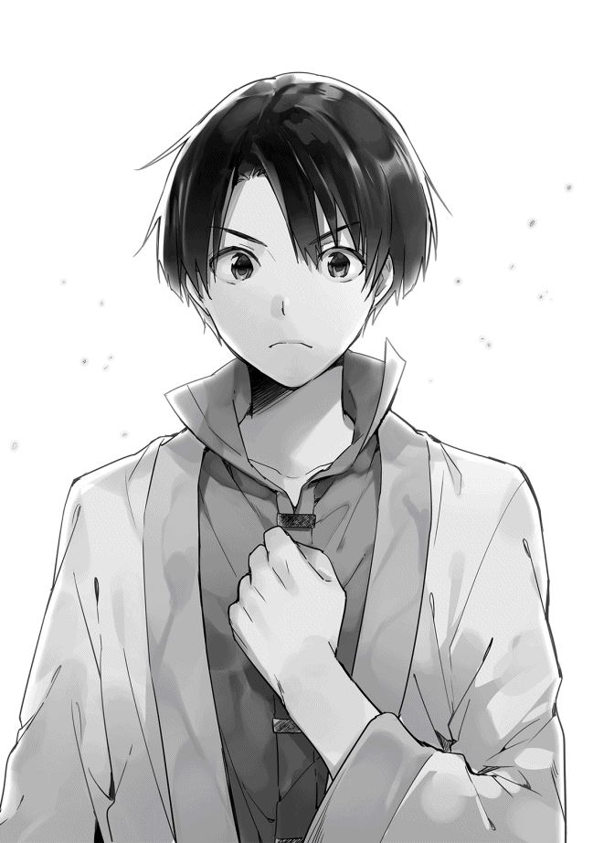
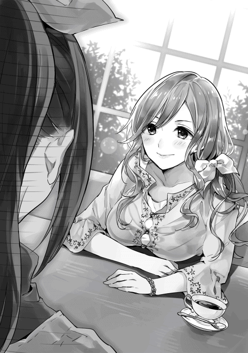

| 【合本版1-3巻】かいぜん！～異世界コンサル奮闘記～ | |
| 秦本幸弥 | |
| TOブックス (2017) | |
※本電子書籍は「かいぜん！ 〜異世界コンサル奮闘記〜」１〜３巻を１冊にまとめた合本版です。
イラスト：堀泉インコ
デザイン：川谷康久（川谷デザイン）
「用語集」ほか本文データ制作：TOブックスデザイン室
ＣＯＮＴＥＮＴＳ
このコンテンツは『かいぜん！ 〜異世界コンサル奮闘記〜』１〜３巻を収録しています。
「はぁ。今日も閑古鳥か......」
誰もいない客席に座り、頬杖をつきながら、その店の給仕であるサラは大きなため息をついた。
ここはマドリー王国のとある地方都市にある、パスタを中心としたメニューを提供するレストランである。
今はランチタイムの真っ最中。こじんまりとした店内にある六つのテーブルには客がひしめき合い、ひっきりなしに注文の声が飛ぶ賑やかな状況が繰り広げられている......のが理想であるが、店内を見渡しても客は一人もいない。
ランチタイムだけならまだしも、ディナータイムもこのような有様である。
「もう、暇で死にそう」
サラは、真っ赤な髪を白く細い指で弄 りながらそうつぶやく。気の強そうな碧 い眼からも、細く小柄な体からも力が抜けてしまっている。
そんな状況が開店以来ずっと続いている。いや、開店直後だけは近所の人が来てくれた。しかしすぐに物珍しさも無くなったのか、客足はあっという間に遠のいていった。
ごくわずかの人は常連になってくれているものの、それだけでは店は回らない。
頼みの綱である新規客は全然増えてくれない。たまに来る見ない顔は行商人だったり旅の人がほとんどで、常連になってくれるわけではない。
もちろん経営は火の車である。食事もここ一ヶ月は残り物しか食べていない。
家族経営なので、業績が悪いと家庭内も毎日ピリピリとした空気になってしまう。先日は仕入代金の支払いで両親が夫婦ゲンカをしていた。思い切って大銅貨三枚もするスープを無料でセットサービスにしたのが原因のようだ。
「何とかしなきゃいけないのに」
焦りはするものの行動には起こせない。
まだ十四歳のサラには何をどうしていいか分からないのだ。いろいろ考え一時は店内に花を活けていたのだが、経費を理由にそれもできなくなってしまった。
従って、彼女ができるのは来店してくれた客に笑顔で接客することだけである。しかし来店客のいない今、それすらすることができない。
一緒に給仕をしていた母ミレーヌは、とうの昔に店の手伝いをやめてしまっている。
「何でかなぁ。お父さんの作るパスタ、すっごくおいしいのに」
サラの父アロルドはローマリアン帝国で二十年間料理人として研鑽 を積み、一年前に故郷であるこの地に念願の店を構えた。その腕は宮廷料理人にならないかという誘いがあったほどであるが、アロルドは自分の店を経営することにこだわったのだ。
トマトベースのソースに帝国産の輸入バジルをふんだんに使用したトマトバジルパスタが一番のオススメであり、それはサラの大好物でもある。
二十年来の夢が実現できるとあって、アロルドはかなり張り切って店づくりをした。
立地は、街の中心にある交差点からほど近い住宅街を選んだ。閑静な住宅街とは真逆で人通りの多い活気のある通り沿いである。地面には整然と石畳が並んでおり、周辺には小ぶりの建物が所狭しと並んでいる。
建物は予算の都合で妥協して小さなものとなったが、外装にはこだわった。自ら大工に指示を飛ばしイメージと違えば壊してやり直しをさせた。
黒を基調とした壁には三十センチ四方の小ぶりな窓が四枚ついている。窓にはこの世界では高級品である薄緑色のガラスがはめ込まれている。
重厚感のあるオークでできた扉の上に、小さく『アロルドのパスタ亭』と店名が入ったプレートがついている。一言で言うならばその佇まいは「お洒落」そのものである。周辺の建物は外壁こそ赤や緑など明るめの色で塗装されているものもある。しかし、窓には板がはめ込まれていたりドアも外壁と同じ素材で飾り気がないのだ。
「んーーっ」
サラは声を出しながら両手を頭の上にぐっとやり、伸びをする。真っ赤なポニーテールが少し揺れる。ずっと何もしないのも、それはそれで疲れるものだ。
ふぅ、と息を吐きつつ目を小さな窓の外にやる。住宅街から市場へとつながるこの道は、人の往来が多い。馬車や多種多様な人々が行き交っている。
「この中の百人に一人でも来店してくれたらなぁ」
そんなことを考えていると、サラよりも背が頭一つ高そうな黒髪の青年が店の前で行ったり来たりしているのが目に留まる。旅の人とも冒険者とも違う小ざっぱりした服装は、商人のようにも見える。
「あら、お客さんかしら」
サラは窓の外の様子を窺いつつその場から立ち上がり、給仕服である白と黒のエプロンドレスを整え、来店客を迎え入れる用意をする。
「黒髪の人なんて、珍しい」
青年は店の前をうろうろとしながら、時おりその小さな窓から店内を覗くようなそぶりをする。
ちょっと怪しい。サラが少しだけ緊張感を持ったその時、青年は意を決したのか一度頷いた後、ドアに手を伸ばした。
ガチャ......ギィ。
重厚な音が静かな店内に響く。
小さな窓ゆえの薄暗い店内に明るい光が差し込む。
不安を隠すように精一杯元気な声でサラは挨拶をする。
「いらっしゃいませ！」
青年とサラの眼が合う。真っ黒な青年の瞳が一瞬見開かれたような気がしたが、サラはそれに気づかない。少しだけ間が空いた後、青年が口を開く。
「あ、すいません、ここって料理屋さんですか？」
「はい、そうですよ」
「バジルの香りがしたんだけど......」
「あっ、はい！ ここはトマトバジルパスタがオススメの『アロルドのパスタ亭』です」
「おっ、やっぱりおいしそうな香りの元はここだったんだ。それをご馳走になるよ」
「はいっ。ではお好きな席にかけてお待ちください！」
そう言い残すと、サラは「強盗じゃなくてよかった」と安心しながらパタパタと急ぎ足で厨房へ向かう。
青年は厨房に一番近い席に座ると、店内に入り一層濃くなったその香りに目尻を下げる。
ほどなく厨房から声が聞こえてきた。
「お父さん、お客さんだよ！」
「うん？ 何だ、聞こえない！」
「だ・か・ら、お客さんだってば！」
「お、おう！」
「トマトバジルパスタ一人前、よろしくね！」
「あいよ」
（この時間に客は僕一人か。お洒落な店構えだったし、入るのに勇気が要ったな。でもこのバジルの香り、友達のやってたパスタ屋さんを思い出させるし、期待大だ。それに今の娘、可愛かったなぁ。一瞬ドキッとしちゃったよ）
そんなこんなを考えながら窓の外を行き交う人々や馬車をぼうっと眺める。光の加減で外からは店内が見えなかったが、その逆はよく見える。
剣を下げた冒険者らしき人、ローブを身に纏 った魔法使いらしき人、魔物を連れたテイマー、騎士、商人、子供、多様な人々が喧騒を織り成している。
「本当にいろんなことがあったなぁ」
この世界に来てから半年、この街へは昨日着いたばかりである。ふぅ、と息をつきながら青年はこの半年間で身に起こったことを回想する。
青年の名は松田 幸助 という。
その名が示す通り生まれは日本、育ちも日本である。海外なんて行ったことはない。それがなぜ聞いたこともないような名前の国にいるのか。その理由は半年前に遡 る。
「あ、召喚できちゃった」
それが幸助がこの世界で初めて聞いた言葉である。
さっきまで東京の経営コンサルティング会社でいつものように深夜残業をしていたはずであった。それが気づいたらレンガ造りの古びた部屋の中におり、目の前には薄汚れた白衣を着た、推定三十歳くらいの女性がいたのだ。
後で聞いた話だが、この女性はフレン王国という国の筆頭魔法研究者だそうだ。禁書庫でたまたま発見した召喚魔法を探究心の趣 くままに試したところ、運悪く幸助が召喚されてしまったのだ。
「ごめんね。還 す方法は見つかってないの」
召喚されたものの、幸助は魔法が使えるわけでもなければ剣の才能もなかった。国は無責任に召喚してしまった幸助の処遇を決めかねていたのだ。そこで幸助は召喚したことを不問とする代わりにこの世界で自由に生活できる保障を要求した。
それが認められ、国からいくらかの謝罪金と市民権をもらうこととなった。
果たして幸助は異世界で自由な時間とお金を得た。そして悩んだ末、会社の奴隷として働いていた時には実現することのできなかった夢である旅に出ることにしたのだった。
文化や文明の違いに戸惑いつつも持ち前の柔軟さでそれを吸収し、何となく決めた方角──西へと足を進めて半年。国境を越え、たどり着いたのがここマドリー王国のアヴィーラ伯爵領であった。
マドリー王国はトマトやワインの名産地である。
この世界では物流が発達しておらず、食べ物もワンパターンになりがちだ。毎日、オートミールと野菜の和え物ばかりでフレン王国での単調な食事に飽き飽きしていた幸助は、マドリー王国の豊かな食材に胸をときめかせたのだった。
温暖な気候で生活もしやすいと住民からの評判も上々だ。
「お待たせしました。当店自慢のトマトバジルパスタです！」
元気のいい声に幸助は回想から連れ戻された。
コト、とテーブルの上に置かれた白い器には、燃えたぎるように真っ赤なソースに絡められたパスタが湯気を上げ、濃厚な香りを辺りにふりまいている。
ところどころ緑色のバジルが彩を添えている。
トマトとバジルの香りが鼻孔をくすぐると、お腹の虫がきゅぅと鳴り「早く食べろ」と催促をする。
「こちらはサービスのオニオンスープです。ではごゆっくり」
テーブルの上にサービスのスープが入ったカップを置くと、サラは厨房へ戻っていった。
「いただきます」
フォークを手に取りパスタを巻き、口へと送り込む。こちらの世界でも食事は欧米と同様のナイフとフォーク、そしてスプーンで食べる。
（うまい！ これは完全なイタリアンだ。トマトの酸味とバジルの風味だけじゃなく、オリーブオイルとニンニクも効いてる。シンプルだがうまい。素材そのものがいいのか？ もしかしたら今まで食べたトマトソースパスタの中でも最高ランクに入るんじゃないか）
思いがけず訪れた幸せなひと時を幸助は味わう。しかし、満ち足りた時間はそう長くは続かなかった。一度食べ出したら手が止まらない。
あっという間にパスタを食べきった幸助は余韻に浸りつつも残念そうにフォークを置くと、左手にカップを取りスープを流し込む。
このスープも悪くないと幸助は思う。飲みなれたコンソメスープの味だ。この世界では贅沢品と聞いたベーコンも少量ではあるが入っていた。
最後のスープをゴクリと飲み干すと、「ごちそうさま」と手を合わせる。
「ふう、おいしかったなぁ。良い素材を使ってそうだもんな」
そうつぶやくと同時に頭の中に、はたと疑問が湧き上がる。それを確かめるため、給仕であるサラを呼ぶ。
「ねえ、お嬢さん」
「えっ、ハイ！ 今行きます」
パタパタと音を立ててサラがやって来る。
「すごくおいしかったよ。トマトバジルパスタ」
「でしょ。うちの自慢ですもの！」
そう言いながらサラは小さな胸を張る。「エッヘン」という声が聞こえてきそうである。
「で、気になるんだけど、このパスタって相当に値段が高かったりするんじゃないの？」
そう、匂いにつられて店に入った幸助は、値段を確認せずに注文してしまったのだ。
これだけの味付けはここ半年間出会ったことがない。それだけいい素材を使っているのかもしれない。店構えもお洒落である。
この世界にはぼったくりも当たり前のようにある。流行ってない理由はその価格にあるんじゃないかと考える。
「いいえ、大銅貨八枚ですよ」
「それってこの辺の相場？ この街に来たばかりでよく分からないんだけど」
「はい相場内です。どこもランチは大銅貨六枚から十枚くらいですね。それにウチでは先月からは無料でスープもつけてるからかなり安い方だと思いますよ」
この世界の通貨は金貨・大銀貨・銀貨・大銅貨・銅貨で構成され、それぞれ十倍刻みで換算する。ちなみに銅貨一枚は日本円で十円くらいのイメージだ。もっとも、日本とは物の価値も違うので、一日にかける食費で換算した場合であるが。
「うーん、値段が高いわけじゃないのか」
幸助は腕を組みながら考える。
（そうするとやっぱり外装のせいで敷居が高いのが原因か。正直入りづらかったもんなぁ）
「どうかされましたか？」
「いや、ね。余計な話かもしれないけど、こんなにおいしいのに何で閑古鳥が鳴いてるのかな、と思って。てっきり価格が高いからだと思ってたよ」
「そうじゃないんですけどね。どうしてなんでしょう。実は、すごい悩みだったりします」
趣味でやっているから来店客は少なくてもいい、という店主をたまに見かけたことがあったので、幸助はこのパスタレストランもその類なのかと考えたが、どうやらそうでもないらしい。
「毎日こんな感じなの？」
「はい。恥ずかしながら......」
寂しそうに目を伏せるサラ。
そんな姿を見た幸助の心には、可愛い女の子の力にならねばという気持ちが湧き上がる。
幸助が日本で就いていた仕事は、経営コンサルティング業である。
実家が都内の魚屋だった幸助は、小さな頃から夏休みなどに手伝いを通して経営というものに触れていた。当初は魚だけで成り立っていた商売。時代の変遷 とともにオフィスビルが増えると、魚を買う一般家庭が減少。店は危機に陥った。
しかしある日、機転を利かせた祖母は弁当を扱うようになる。魚屋という強みを活かし、おかずは七輪でじっくり火を通した焼きたての魚だ。これが近隣に勤める人々に好評となり、店を立て直す起爆剤となったのだ。
「時代は変わるのさ。商売もそれに合わせなきゃいかんのだよ」という祖母の言葉は今でも心に残っている。
経営に興味を持った幸助は、就職先に経営コンサルティング業を選択。就職後は多くの店の経営改善に携わってきた。
「あ、すみません。こんなことお客さんに話すことではなかったですね」
「ううん、全然。僕の方から聞いたことだし。それでね、えっと......」
「私、サラって言います！」
解決できる方法があるかもしれないよ、と切り出そうとしたら突然名乗られた幸助。名乗ってもらったのだからと、合わせて自己紹介をする。
「それじゃサラ、僕は松田幸助。幸助って呼んでね」
「はい！ コースケさん」
「それでね、サラ。もしかしたらこの問題を解決できるかもしれないんだけど」
「えっ！ ほんとですか!! 」
身を乗り出してその言葉に食いついてくるサラ。キラキラの碧い目から盛大な期待感が伝わってくる。
「え、えっとね。このお店はサラとお父さんの二人で切り盛りしてるのかな？」
「はい、本当はお母さんも手伝ってくれていたんだけどこの有様で。今は内職をしてるの」
「そうか、そうしたらお父さんを呼んでもらってもいいかな？」
「うん！ ちょっと待っててね。呼んでくる！」
またパタパタと厨房へ走り去るサラ。その後姿を見て、小動物みたいだなと独りごちる幸助。
「何だ、何の用だ？」
厨房からのそのそとガタイのいい男性がやって来る。いかにも『職人』という顔立ちだ。年の頃は四十代半ばであろうか。茶色の髪に少しだけ白髪が混ざっている。腕は太く、多くのフライパンを振ってきたという印象が伝わってくる。
「お父さん、もう、ぶっきらぼうなんだから。この方がコースケさんだよ」
「初めまして、松田幸助と申します」
「で、何だって？ アンタが俺の店を繁盛させてくれるっていうのかい？」
一歩幸助に近寄り、凄んでくるアロルド。
（何でこんなゴツイ人から小動物みたいに可愛い娘が生まれるんだ？）
そんなことを考えながらも幸助はアロルドに宣言する。
「あなたのお店、僕が流行らせてみせます！」
声も高らかにそう宣言した幸助。
困っているんだから受けてくれるだろう。絶対の自信を持ってアロルドの返事を待つ。
（こっちに来てから目的もなくダラダラしっぱなしだったからな。もしかしたらこの世界での自分の存在価値ができるのかもしれない）
毎日仕事詰めだったのが、召喚されたことにより突然やることが無くなってしまった幸助。家族や同僚とも会えなくなってしまった。
召喚直後は帰ることができないと知らされても、なかなか踏ん切りがつかなかった。宛てがわれた部屋に閉じこもり、自分のことを日本の誰かが探し出してくれるんじゃないかと思うことが幾度もあったのだ。
やりかけの「まんじゅうプロジェクト」の行方も気になる。無責任に放り投げたと思われるのはプライドが許さない。
時間が経ち、ようやく現実を受け入れられてからも、幸助はどこか心の中で壁を作っていた。だからまだこちらの世界に来て、友と呼べる人もできていない。しかし幸助は基本的に寂しがり屋である。従って現在、絶賛人恋しいモードに入っている。サラと仲良くしたいなという下心を抱いていないと言えば嘘になる。
「断る」
「はい、ではその解決法......えっ!? 」
「だから断ると言っている」
「ちょっと、お父さん！ 何言ってるの？ お客さんが増えるってコースケさんが言ってるんだよ！」
サラは黙っていろ、と言いながらアロルドは続ける。
「何バカなこと言ってんだ。料理一筋二十年の俺の味でもこんな有様なんだよ。お前みたいな若造に解決できるわけねえだろ。
だいたい、このソースは俺が十年以上かけて完成させたものだ。味を変えるつもりなんて毛頭ねえぞ。帰った帰った」
「ちょ、まっ、待ってください！」
アロルドは幸助の背中を押し、ドアへと誘 う。
「ちゃんとパスタの代金は払ったか？」
「お代はまだ払ってませんが、まずは話だけでも聞いてくださいよ。こんな素晴らしい料理を眠らせておくのは国にとっての損失ですよ！」
幸助がそう言うと、背中を押していたアロルドの手がぴたっと止まる。
そう、アロルドは味を変えるつもりはないと言っているが、幸助もまた同じ意見である。それどころか、この世界で食べた料理の中で一番美味いとすら思っているのだから。
「お前、今なんて言った？」
「で、ですから素晴らしい料理を眠らせておくのは国にとっての損失、と」
恐るおそる繰り返す幸助。ゆっくり振り返ると、アロルドの顔から険しさがみるみる消えていくところだった。
「国にとっての損失？ お前は俺の料理をそこまで評価してるのか？ ワハハハ、そうならそうと最初から言ってくれよ」
今度はバシバシと幸助の背中をたたく。
「コースケと言ったっけな。俺はアロルドだ」
「アロルドさん、せ、背中、痛いです」
「すまんすまん。そこまで評価してくれると嬉しくてな」
そう言うとアロルドは真面目な顔になる。
「だが、店舗経営の技術というのは門外不出というのが相場だ。それを教えるなんて高い金を請求してこないだろうな。第一、ウチには支払える金なんてねえぞ。材料費すら支払いをツケで延ばしてもらってるんだからな」
「お父さん、ちょっと情けない」
ガクッと項垂 れるサラ。
「そこは安心してください。報酬はいただきますが繁盛してからで結構です」
幸助が日本で勤めていた会社は、売上が減少して困っていたり、新規事業を始めたいがノウハウを持っていないといった店が顧客となる。現状の悩みを聞き、改善プランを立案し、店と二人三脚で問題解決に取り組み、利益向上を目指す。これが基本スタイルである。
報酬の支払いは、着手金＋成功報酬というプランが人気であった。ちなみに全額後払いはない。
どう結果が転ぶか分からないことは、やはり後払いが安心できる。
今の幸助にはフレン王国からもらった謝罪金がある。まだ優に一年は暮らせる金額が残っている。
よって生活するには問題ないため、完全成功報酬プランを提示したのだった。
「何か裏がありそうだな。いや、いい。それならまずはお前の意見を聞こうか。いいか、まだ頼むって決めたわけではないからな」
そう言うとアロルドはドアを開け、店名の入ったプレートを裏返す。営業時間外を示すサインだ。
「コースケさん、ここに座ってください」とサラが先ほど幸助が食べていた席の隣のテーブルへ案内する。遅れて幸助の正面にアロルドが座る。
サラは「お茶入れてくるね」と言い残し、幸助の食べ終わった食器を手に取るとパタパタと厨房へ入っていった。
「はい。では現状の問題点を説明します。まず、味についてですがこれは全く問題ありません。というか、今までの人生の中で一番おいしいパスタでした」
「な、何だ。面と向かって言われると照れるな」
目を逸らしポリポリと頬をかくアロルド。
「ところで質問なのですが、このお店に常連客はいますか？ そうですね、ひと月に二回以上来てくれているお客さんのことです」
「おう、もちろんいるぜ。隣の奥さんなんか週に一回はトマトバジルパスタを食べないと落ち着かないって言ってくれてな」
「ということは、味は受け入れられているという何よりの証拠ですね」
「そういうことなのか？ 俺はてっきりこの地方の人に受け入れられない味なのかもしれない、と思っていたんだが。違ったのか？」
「はい。問題は別なところにありますね」
（アロルドさん興味を持ってくれたみたいだ。懐柔 作戦はひとまず成功かな。そろそろ核心へ掘り下げるか）
お茶の用意ができたようでサラが盆を手にして戻って来た。幸助とアロルドそれぞれの前にカップを置き、自分用のカップをアロルドの隣に置くと、その席へ腰かける。
「このお茶もアヴィーラ伯爵領の名産品なの」
「へぇ、おいしそうだな。いただきます」
ズズズッとお茶を啜 った後、幸助は話を再開する。
「味が問題ではないということは今お話しした通りです。では、何が問題か分かりますか？」
「全然分からん。味以外のことは考えたこともなかったからな」
即答したアロルドが隣を見るとサラも分からないと首をかしげる。
しばし考えたのち、思い出したようにアロルドがポロっと言葉をこぼす。
「ああ、そうだ。値段かもしれないな。先月近所にカフェができてな。そこのランチは大銅貨五枚って値段だったぞ」
「そうだったね、お父さん。それがきっかけでスープの無料サービスを始めたもんね」
うんうんと頷きながらサラが続けた。
「そう、スープがついてましたね、パスタに。実はこれも経営を苦しめる要因の一つだったかもしれませんよ」
幸助がそう言うと、とたんにアロルドの表情が険しくなる。
「何だって、お前はスープは美味くなかったって言うのか！」
「い、いや、そういうことではないですよ。スープもおいしかったです。しかも高級品であるベーコンまで入ってましたし」
「何だ、紛らわしい言い方をするなよ。やっぱりお前は味の分かるやつだな。はははっ」
本当に職人 気質 だなと思いながら、幸助は今後の発言に注意しようと気を引き締める。
「スープは通常いくらで提供しているものですか？」
「ええと、大銅貨三枚ね」。アロルドの代わりにサラが答える。
「ということは、実質パスタの価格は大銅貨五枚ってことで、近所のカフェと変わらないということになりますよね」
「そうなるのか？」
「はい、実質は。ということは、値段の問題でもないんです。サービスした結果、客数が伸びていないならば、逆にスープのサービスは原価向上の要因になっていたんですよ。
おそらくですが、隣の奥さんはスープのサービスが無くても毎週通ってくれたと思いますよ」
「ああ？ そんなもんか？」
「断定はできないですけどそうだと思いますよ」
「じゃあ、原因はいったい何だって言うんだ！」
「お父さん、もう少し落ち着こうよ」
（あ、アロルドさんがイラついてきた。そろそろ答えを言わないと）
「一番の問題は通行人に認知されていないということです」
「認知？ コースケさん、認知ってどういう意味？」
「俺も聞いたことがない言葉だぞ」
幸助はそうですよねと言いながら、表の街路が見える小さな窓を指差す。
「表の通りを見てください。僕はまだ昨日この街に来たばかりなので詳しいことは分かりませんが、人通りが多いですよね」
「ああ、この道は住宅街と市場をつなぐ道でな、このあたりのメインストリートと言ってもいいんだよ。で、それがどうかしたのか？ 人通りが多いなんていつものことだが」
「はい。ではこの行き交う通行人の中でこのお店のことを知っている人はどれくらいいますか？」
しばし外を眺めながら考え込むアロルド。
............。
......。
数十秒間眺める。
しかし知った顔は一人も通らない。
「いないな」
その答えを聞き、少し間を置いてから幸助が続ける。
「そういうことなんですよ」
「どういうことだ？」
「素晴らしい味と人通りの多い通り沿いがこの店の強みです。逆に弱みはその立地を活かせていないことなんです。
要するに、ここにパスタを提供するレストランがあるということに皆、気づいてないんです」
この味を知らないなんてもったいないことだと幸助は続けると、サラが何かに気づいたのか、はっと目を見開く。
「そうね！ まだ出会ったことのない味なんて、評価できなくても当然だよ。そうすると私たちが先 ずすべきことは、店先を通ってる人に『ここにおいしいパスタがあるよ』って教えることだね！」
「正解！」
パチパチと幸助は拍手をする。サラは更に嬉しそうに満面の笑みを作る。
アロルドはまだ納得していないようだ。うーんと唸りながら腕を組んでいる。
「アロルドさん、納得できない点があれば遠慮なく言ってくださいね」
「いや、な。仮にその認知ってやつが原因だとしてだ。何をしていいのかさっぱり分からん。店構えだってこだわったし『アロルドのパスタ亭』って名前だってついてる。これ見りゃ誰だって分かるんじゃないか？」
（あぁ、アロルドさんがこの店舗の外観を考えたのか。となると、どこから説明したら良いものか......）。幸助は考えあぐねる。
「ええとサラ、この街というかこの国の識字率はどれくらいか知ってる？」
「識字率？ それってどういう意味？」
「ええっと、街の人が十人いたら、そのうち何人文字が読めるかっていう意味」
「あぁ、それなら十人に三人くらいかな」
「なるほど」
突破口が見つかった、と心の中でガッツポーズをする幸助。
「アロルドさん、この国の識字率は十人に三人くらいだそうです」
「それがどうした？」
「そうなると『アロルドのパスタ亭』って読めてお店の存在に気づく人は十人のうち三人しかいないってことですよね」
「あ、あぁ。そうなるな」
「それで、往来が激しいこの道でこの文字が目に留まる人ってどのくらいいるんでしょうか？ 小さい文字ですし、気づかずに通り過ぎる人が多いんじゃないでしょうか」
「......」
アロルドは沈黙する。
「ほとんどいない......のかな」と代わりにサラが答える。
「そう、サラ。だから『アロルドのパスタ亭』というプレートだけではお客さんは呼び込めないんだよ」
この答えにただでさえ赤かったアロルドの顔に更に赤みが増す。
「もういい！ 分かったよ！ 認知については分かった。じゃぁ、どうすりゃいいんだよ！ でっかい看板つけるような金なんてねえぞ！」
「お父さん！ 本当に落ち着こう。今はコースケさんの話を冷静に聞こうよ」
「安心してくださいアロルドさん。認知してもらうための手法はたくさんあります」
すぐにできる方法は三つあります、と言いながら指を三本見せる幸助。
「先ず一つ目。一番安価で手っ取り早いのは、道往く人たちに声をかけることです。ただ、実質二人で回しているこのお店では現実的な方法ではないかもしれません。しかも効率も悪いです」
うんうんとサラが食いつくように幸助を見る。
「二つ目は、チラシをまくこと。これは紙にお店の宣伝文句を書いて道往く人々に配る、ということです。これも紙の値段を考えると効率が悪いのかもしれません」
そう、この世界ではまだまだ紙は高級品なのだ。おいそれと配ることは適わない。
「最後に、これが一番オススメなんですが」
そう言いながら、幸助は間を空ける。
「立て看板を置くことです」
そう言うと、アロルドが呆れた顔をしながら言う。
「は？ 立て看板？ さっきおまえ文字が読めるやつが少ないから文字は意味ないって言ったばかりじゃないか」
「いや、立て看板の効果はバカにできないですよ。しかも看板に書けるのは文字だけではありませんし。
この道をずっと向こうに行ったところに武器屋さんがありましたが、そこの看板はどうなってるか知ってますか？」
幸助はその職業柄、看板やディスプレイを歩きながら観察する癖がついている。昨日たまたま見かけた武器屋の看板を覚えていたのだ。
「あ、私知ってる！ 剣と槍が交差している、一目で武器屋と分かる看板だったよ」
「そう。ということは立て看板には何を描けばいいのかな？」
「トマトバジルパスタの絵！」元気にサラが答える。
「そうなんです。絵を描くんですよ。誰でも分かるように。しかもこのくらいのサイズの看板に」
そう言いながら幸助は立ち上がり、両手でその看板の大きさを表した。高さ一メートルくらいある。
「アロルドさん、この立て看板で全く効果が出なかったら僕はここから消えます。費用もこちらで立て替えますから、一度試してもらえませんか？」
「そうだよお父さん、コースケさんを信じてみようよ。今まで私たちが頑張っても何にも変わらなかったじゃない。今までやってなかったことをやる必要があるんだよ」
（サラ、あなたの姿が女神さまに見えてきましたよ）
「サラがそこまで言うなら......。その立て看板とやらだけは試してやる。これで効果がなかったら銅貨一枚たりとも払わないからな！」
「はい。それでいいですよ。ならば早速やってみましょう」
「うん！ コースケさん、よろしくお願いします！」
こうして幸助はこの世界での初仕事「立て看板プロジェクト」を遂行することとなった。
◇
幸助にとって異世界での初仕事である「立て看板プロジェクト」が決まったその翌朝。幸助は宿で朝食を済ますとアロルドの店へ向かう。
「いい天気だな」
空には雲一つない青空が広がっている。時おり新春の柔らかな風が頬を撫でる。
石畳が整然と並ぶ街のメインストリートを歩く幸助。道幅は馬車三台が余裕で横並びできるくらいあり、道の両端には二階建てのこじんまりとした住宅が並ぶ。ある家は白、その隣は緑、またその隣は赤と色彩豊かな外壁が連なる。
今日は日曜日。市場は休みなので、通りを行き交う人々は昨日よりもかなり少ない。ちなみにこの世界も一年は三六五日で、曜日や月の構成も現代日本と同じである。
二十分くらい歩くと、明るい建物が並ぶ景色を引き締めるような黒い外壁に小さな窓が四つ並んだ建物が見えてきた。アロルドの店である。重厚なオークの扉に掲げられている看板は裏返ったままだ。そう、今日は定休日である。
ドアに手をかけるとカギは開いていた。そのまま手前に引くとギィッという音と共に開き、陽光が室内を暖かく照らし出す。
「あ、コースケさん！ おはよっ」
「おはよう、サラ。今日も元気だね」
「うん！ お客さんが増えるかと思うとワクワクしてきちゃって」
「そっか。期待外れにならないように僕も頑張らないとな」
そう言いながら幸助はサラの姿を見る。
（私服のサラも可愛いなぁ）
今日は定休日なのでサラの服装は給仕服ではなく水色のワンピースである。二人の声が聞こえたのか、厨房の奥からのそっとアロルドがやって来た。
「おう、来たか。なら早速おっぱじめちまおうぜ」
「は、はい。ではまず簡単な説明からしましょうか」
そう言うと幸助、サラ、アロルドの三人は昨日と同じ席へ座る。
「さて。では立て看板についてなんですけど、このくらいの大きさの板は用意できますか？」
そう言いながら昨日示した大きさと同じ一メートルくらいの長方形を手で表す幸助。
「それなら店の裏にこの店を作った時の廃材があるぞ」
「分かりました。それならちょうど良かったです。その板をこうやって斜めにして自立するように足をつけていただけますか？」
両手で「人」の文字を作りおおよそのイメージを伝える。
「そんなことなら任せろ。足になる角材も釘もある」
「さすがアロルドさん。僕はそういった作業が苦手なので助かります」
「お、おう」
「ふふっ」
サラはニコニコしながら横に座っているアロルドを見る。普段なかなか見ることのできない父親の姿が新鮮なようだ。
「そうしたらサラ、絵を描くための絵の具や筆はあるかな？」
「絵の具って何？」
「絵の具って言わないのか。えっと、絵を描くための色のついたやつ」
「あぁ、顔料のことね。うーん、ウチにはないかなぁ」
「売ってる店は知ってる？ 僕が買いに行ってくるよ」
「うん。もちろん！ あ、でも、日曜日に開いてるお店はちょっと遠いかな」
うーんと唸りながら考え込むサラ。そして数秒後。何か閃 いたようで、ニパッと笑顔を作りながら口を開く。
「コースケさん、私がお店まで案内するから一緒に買いに行こ！ お父さんはその間に日曜大工、よろしくねっ」
「えっ、サラ、おまえ」
「お代を立て替えてもらうんだから、それくらいしないとねっ」
アロルドの言葉が終わる前にサラがかぶせる。
「ぐぬぅ......」
というわけで、幸助の異世界初の共同作業は、顔料の買い出しに決まったのであった。
「では、行ってきます」
「行ってきます、お父さん！」
幸助は背中に何か視線が刺さるのを感じたが、それを無視して進む。
重厚なドアを開け、通りへ出る。少し高くなってきた太陽からポカポカと春の陽気が伝わってくる。
「コースケさん、こっちです。行きましょ！」
サラはぐるっと振り返り幸助を見ると、西を指差した。ワンピースの裾がふわっと広がる。
「商業街の中にお店があるの」
アヴィーラ伯爵領は人口五万人程度で、この世界では中堅どころの規模である。戦争とは無縁の土地のため、国境の街と比べると街全体がのんびりとした雰囲気を醸 し出している。
北に領主の館を含む貴族や裕福な商人などが住む街があり、東に住宅街、西に商業街、南に工業街という分布となる。それぞれの地区を結ぶように東西と南北に大きな道が通っている。アロルドの店は、ちょうど住宅街の西端に位置する。
東西と南北の通りが交わる交差点は大きなロータリー式となっており、中央にはちょっとした公園がある。一般市民が生活する街にしてはやや緑が少ない。その中でこの公園は数少ない癒しスポットとなっている。日中、公園からは子供達のはしゃぎ声が絶えることはない。
「よし、行くか」
幸助が西に向かって歩き出すと、その左側にサラが並ぶ。真っ赤なポニーテールが左右に揺れる。
「コースケさん、ここです！」
取り留めもない会話をしながら歩くこと一時間。二人は目的の店に到着した。
古びた二階建ての建物を見ると『サンドラの画材店』という店名が掲げられている。
店の中に入ると、ホコリ臭さが二人の鼻を突く。幸助は反射的に袖で鼻を覆う。
「ゴホ、ゴホ」
「すごい店内だなぁ」
見渡すと、五坪ほどの狭い店内に所狭しと絵画用品が並んでいる。若い女性の絵が額に入り壁に飾られている。店主が描いたものだろうかと幸助は推察する。
奥の棚は長い間商品が入れ替わっていないようで、分厚い埃がかぶっている。店員らしき人は見当たらない。
「すみません！」
「すみませーん！」
二人で店員を呼ぶ。
奥から床のきしむ音が聞こえると、杖を突いた真っ白な髪の老婆がやって来た。
「なんじゃい、日曜日の朝っぱらから騒々しいのぉ」
老婆は二人を睨 め回す。
「おや、珍しい。若いお兄さんとお嬢さんじゃないか。こんな店に何か用かい？」
「顔料を買いに来ました。このお店にありますか？」
「顔料？ そんなものいくらでもあるが、何に使うんじゃい？」
「えっと、看板を描くために必要なんです」
「ふうん、それなら水に濡れても落ちないものが良いかのぅ」
「はい、それでお願いします。あと、筆も一本ください」
老婆はゴソゴソとカウンターの下から瓶が入った箱を取り出す。
「して、何色が必要かね？ 今あるのはここに並んでいるだけじゃ」
「赤と緑、黒、白をください！」
「あと、黄色も要るな」
「黄色？ トマトバジルパスタには黄色は必要ないよ？」
何でという顔をしながら幸助を見る。
「まあ、帰ってから説明するよ」
「ふうん」
「あいよ。なら顔料が五色で大銀貨一枚と筆が銀貨二枚さ」
（結構するんだな）
懐から銭袋を出すと、銀貨をジャラっとカウンターに置く。
「まいどあり」
顔料と筆の購入を済ませ二人が店から出た頃には、太陽はもう真南に近づいていた。
壁にかかっていた絵のことをサラが老婆に尋ねると、老婆の壮大な昔話が始まってしまったのだ。若い女性の絵は老婆の若い頃の姿だったそうで、今は亡き夫が描いてくれたそうだ。
（結構時間がかかっちゃったな）
時刻はもう正午になろうとしている。幸助はもう腹ペコである。
「サラ、せっかくだからこのままランチ食べに行かない？」
「うんっ！ 行こ行こっ。私オススメのお店があるの。シチューがとってもおいしいお店。そこでもいい？」
「オッケー。ならそこに行こう」
サラお勧めの店は、アロルドの店へ帰る途中にあった。
チリンチリン
軽めのドアを開けると、鈴の音が来店者があったことを告げる。
「いらっしゃい。あら、サラじゃないの」
「こんにちは、マールさん」
二十歳くらいであろう店員が二人を迎える。サラとは顔なじみのようだ。キリッとした目が印象的な「頼りがいのあるお姉さん」という風貌だ。
「久しぶりね。で、隣のさわやかな青年は、サラのいい人？」
悪戯っぽくマールが尋ねると、サラは顔を真っ赤にしながらぶんぶんぶんと高速で手を振る。
「ふふふっ、冗談よ。空いてる席に座って待っててね」
「もー、マールさんったら......」
火照った顔を冷やすように手を団扇 にして顔へ風を送る。
日曜日に開いている店は少ないせいか、店内は多くの客で賑わっていた。閑古鳥が鳴いているアロルドの店とは比べ物にならない繁盛っぷりである。二人は空いている席を見つけるとそこに腰を下ろす。
「流行ってるなぁ」
「うん、いつもこんな感じだよ。マールさんの作るシチューは最高だから」
店内を見渡すと、来店客全員がシチューを食べていた。
開口部の大きな窓があるおかげで照明を焚 かなくても店内は明るい。窓にガラスははめられておらず、心地よい風が時おり幸助を撫でるように通り抜ける。
「ここはシチューしか提供してないの？」
「うん、そうだよ。だからオーダーをしなくてもいいの」
「ふうん、よっぽど自信があるんだな」
二人が着席してからほどなく、シチューが運ばれて来た。真っ白なクリームシチューである。作り置きが利くから提供が早い。
「はい、お待たせ。シチューとパン、サラダのセットよ。今日のサラダはトマトがメイン」
マールはテーブルに皿を並べる。
「じゃぁ、ゆっくりしていってね」
そう言い残し、また厨房へ戻っていく。
「では食べようか。いただきます」
スプーンでシチューをすくい、一口食べる。
「うん、おいしい」
「おいしいねっ」
この街に来てから初めて乳製品を口にする幸助。大きく切った野菜や鶏肉が入っており、実家の母親の味を思い出す。
（ク○アおばさんも顔負けだな、こりゃ。具もいっぱいだし材料も相当奮発してそうだぞ）
食べながら幸助は店内を観察する。
店の入り口に人影が見える。新たな来店客のようだ。隣の席の人はもう食べ終わったようで帰り支度をしている。
「それにしてもこの店、回転率がよさそうだなぁ」
「何？ 回転率って」
「ええっと、簡単に説明するとお店の席数に対する来店客数のこと」
「......。よく分かんない」
日本の会社では当たり前のように使っていた言葉だが、分かりやすく説明しようとすると難しいことに気づく幸助。
「そうだなぁ。例えば席が一つしかないレストランがあったとするよ。お昼時にお店に入ってから注文して食べ終わるまでに二時間かかったとする。そうするとランチタイムの売上は一人分、ということになるよね」
「うんうん、そうなるね」
「そこで、仕込みや調理を工夫することで注文から食べ終わるまで一時間に短縮した場合どうなる？」
「もう一人ランチタイムで食べられる！」
「そういうこと」
「なるほどー、同じ大きさの店でも売上を増やすことができるってことだね」
「ま、アロルドさんの店はあまり気にしなくてもいいと思うけどね。まずは満席を目指さなきゃね」
「うん！」
入店から三十分と経たずして二人は食事を終える。
「おいしかったなぁ」
「でしょ。最近なかなか行けなかったから久しぶりに食べられてよかったよ。コースケさん、ありがと！」
「どういたしまして。そういえば、こんな時間になるってアロルドさんに言ってなかったけど、大丈夫かな？」
「平気へーき。今頃昨日の残り物食べてるよ。きっと」
「あはは。扱いが雑だな。さすが親子」
こうして二人がアロルドの店に帰ってきたのは午後二時前である。
「ただいま」
「お前ら、遅かったな」。アロルドが出迎える。
「うん。画材屋さんのおばあちゃんの話が長くて」
「で、メシは食ってきたのか？」
「うん。久しぶりにマールさんのシチューを食べてきたの！」
「そ、そうか」。少し寂しそうな顔をするアロルド。
幸助が店内を見ると、アロルドが作ったであろう立て看板が目に入った。
「アロルドさん、もう完成してたんですね。さすがです」
「さっすがお父さん！」
「おっ、おう」
無理やり話を逸らす二人。
「早速立て看板に絵を描きましょうか」
「絵は私に任せてね。でも、黄色って何に使うの、コースケさん？」
「何だと思う？」
サラの質問に幸助は質問で返す。
幸助はコンサルティングを行う上で、常に三つのポイントを意識している。
一つ目は「答えを簡単に教えないこと」だ。何でもすぐに答えを教えてしまうと相手が考えることを放棄して、今後も幸助に依存することになりかねない。この場合、新しい発想ができなくなるため、幸助が関わらなくなると以前のような状況に戻ってしまうこともある。幸助がサラの質問に質問で返したのはそのためだ。
二つ目は「頭ごなしに否定しないこと」。ダメなことをダメと言うことは必要である。ただし、アイディア出しの初期段階では、絶対に相手の意見を否定してはいけない。否定されることが怖くなり萎縮して、次のアイディアが出てこなくなることを防ぐためである。
そして三つめは「褒めること」である。誰だって褒められるのは嬉しいものである。それは次の仕事への活力にもなるし、信頼関係も構築される。だから幸助は小さなことでも褒める点が見つかれば、できるだけ声に出すようにしている。
サラは腕を組み片手をあごの下にやり、考えるしぐさをする。
「うーん、セットのスープを描くとか？」
「はずれ」
「うぅ、分かんないよ」
「じゃぁ、まずはパスタの絵を真ん中に大きく描いてみようか。上と下は隙間を空けておいてね。そこに答えが入るから」
「分かった！」
こうしてサラはパスタの絵を描き始めた。
その間、野郎二人は特にすることがない。客席に腰かけ、時おりサラの進み具合を見つつ会話をしている。
「お前サラに変なことしたら、ただじゃおかないからな」
「大丈夫ですってアロルドさん」
少し空気が剣呑 なようだ。
「やっぱり何か胡散臭いんだよな、お前。こんな簡単なことで客が増えるなんておかしな話だよ」
「大切なことは他にもいろいろありますよ。立て看板はその中の一つにしか過ぎません。でもやるとやらないでは違うんですよ」
「そんなものか」
「そんなものです」
「......」
「......」
「できた！」
不穏な空気を破るように元気なサラの声が響く。アロルドからようやく逃げ出せると安堵する幸助。
「うん、上手いね！ これでパスタのお店っていうのは一目瞭然になったよ」
「ありがと！」
「それで、通りがかった人がこの看板を見つけてパスタ屋の存在を知りました。今日はパスタにしよう。そう思った後、次に気になるのは何だ？」
「俺は分からん」
「うーん、私だったら値段かな？」
「正解！」
「やった！」
「ということで、パスタの絵の下には大銅貨八枚の絵を描こう」
「はーい。これなら文字の読めない人でもすぐに分かるね。さすがコースケさん！」
「ぐぬぬ......」
そんなこんなで立て看板は完成した。
最後にパスタの上に文字で「店主自慢のトマトバジルパスタ 大銅貨八枚」と書いた。
「明日が楽しみだね！」
「うん。そうだね」
元気なサラとは対照的に、幸助は久々の緊張感に包まれていた。
立て看板の効果があるのは日本で経験済みだ。だからといって全ての店で効果があったわけではない。
幸助は入社間もない頃、観光地にある飲食店のコンサルティングを担当したことがある。海鮮が売りの店だ。実際に食べたところ、実家が魚屋の幸助も美味いと感じる味であった。そこで幸助は先輩と一緒に改善計画を立案。立て看板や幟 を立て、認知の改善を行った。
しかし結果は惨敗。少ししか売上は向上しなかったのだ。原因は認知ではなく需要がないというところにあったのだ。その観光地は山間部にある。都会から山の自然を求めて来る家族連れがわざわざ海鮮など求めない。需要は手打ちの蕎麦など、地元の名産品であった。
この世界は文化も環境も違う異世界だ。トマトバジルパスタの需要がどこまであるかは未知数である。本当ならば客の反応を見つつトライアルアンドエラーを繰り返して、ベストな形に持っていくことが理想だ。
しかし、アロルドとの約束はこの一回で決まる。もし効果がなかったら次はない。
（ふたを開けてみないと分からないな）
そして運命の翌日へと続く。
◇
「よいしょ、よいしょ。これでよし、と」
翌日の朝、サラは立て看板を店の外に設置した。昨日三人で一生懸命製作した看板だ。大きな赤いパスタの絵の下には大銅貨が八枚並んでいる。
祝福するかのような朝の陽光がサラを優しく包む。
「これでお客さんたくさん来てくれるかなぁ。うん、コースケさんを信じよう」
店内に戻り日課の掃除を始める。
まずは床掃除。椅子を一度全てテーブルの上へ逆さに置く。箒 を取り出すと、隅から順に掃く。もちろんテーブルの下もだ。人の出入りが少ないため床はそれほど汚れていない。床掃除はすぐに終了する。
椅子を元に戻すと今度は裏口から外に出る。共用の井戸から水を汲むためだ。手桶に水をたっぷり溜めると両手で「んっ」と声を出しながら持ち上げ、店内に運ぶ。十四歳の少女には重労働である。
ボロボロになった古着を再利用した雑巾を桶の水ですすぐと固く絞る。六つあるテーブルをそれぞれ一つずつ丁寧に拭く。椅子も同様だ。
テーブルが綺麗になったら今度はアロルドこだわりの窓を拭く。店内から、表から、しっかりと。最後に窓越しの景色に曇りがないかを確認し頷く。
「うん。これで大丈夫」
厨房の掃除は閉店後の仕事である。これで掃除は終了だ。
時刻は朝十時。まだまだ開店までは時間がある。
「ふぁあ......。昨日はなかなか寝られなかったなぁ」
今日のことで期待と不安が混じり、なかなか寝付けなかったサラ。眠気が少しだけ残っている。
パンッと両手で顔をたたき、気を引き締める。
「よし、これで大丈夫」
残りの作業をしているうちに、待ちに待った開店の時刻である午前十一時が訪れる。
ドアのカギを開け、営業中を示すため店名の入ったプレートを表向きにする。
「お願いです。お客さんいっぱい来てください！」
そう祈りながら客の来店を待つサラ。
待つこと十分。
「来ないなぁ。みんな立て看板見てくれてるかな」
そわそわと店内をうろつく。店の外からは通りを往来する人々の声や馬車の音だけが聞こえてくる。
更に待つこと十分。
「来ないなぁ。まだ時間が早いからだよね。きっとお腹を空かした人が看板を見たら食べたくなるもん」
不安が募るサラ。用もないのにテーブル上の小物の位置を整える。右へやったり左へ戻したり。もう、十回以上整えなおした。
そして更に待つこと二十分。店外から複数の声が聞こえてきた。
「あら、ここにこんなお店あったかしら？」
「新規オープンしたんじゃないかな。見たことないぞ」
「パスタが大銅貨八枚ですって」
「いいんじゃないかな。おいしそうだよ」
サラは期待に胸を高鳴らせる。
（お願い、来てちょうだい！）
その直後、ギィという音とともに、明るい光が店内に差し込んできた。
「いらっしゃいませ！」
弾むようなサラの声が本日最初の客を迎える。
「こちらの席へどうぞ」
四名の客を席へ案内する。
「外に描いてあったトマトのパスタ、四人前ね」
「はい。ありがとうございます！ ご一緒にオニオンスープもいかがですか？ セットなら大銅貨三枚のところ二枚になりますよ」
「どうする？」
「合わせて銀貨一枚か」
互いに顔を見渡す来店客。
銀貨一枚ということは、この街のランチでは許容範囲の上限金額だ。
「ベーコンも少しですけど入っていますよ」ともうひと押しするサラ。
「なら私、いただこうかしら」
「俺も」「私も」「じゃあ私も」
「ありがとうございます！ 少々お待ちください」
そう告げるとパタパタと厨房へ向い、注文を通しに行く。
ちなみに「ご一緒に〜」という接客用語も幸助と一緒に考えたものだ。といっても幸助にとっては、普段よく行っていたファストフード店の決まり文句を真似しただけだが......。
ギィ。
サラが厨房へ先ほどの注文を通した直後、また扉の開く音がした。今度は男性一人だ。
「いらっしゃいませ！」
「あのぅ、その看板に描いてある赤いパスタって、トマト味なの？」
「はい、そうですよ。当店自慢のトマトバジルパスタです」
「金額って大銅貨八枚で間違いない？」
「はい。間違いないです」
（そうか、この方は文字が分からない方なんだね。絵の効果抜群だ！）
「ならそれを一つもらおうか」
「ありがとうございます！ ご一緒にベーコン入りのオニオンスープもいかがですか？ セットなら大銅貨三枚のところ二枚になりますよ」
先ほどと同様にスープを押すサラ。
「スープはいらないや」
「はい。かしこまりました。では、こちらの席にかけてお待ちください！」
その後もちらほらと客の来店は続き、店内の客数がゼロになることはなかった。
「ありがとうございました！」
昼の営業が終了した午後三時。サラは最後の客を送り出すと、店名のプレートを裏返す。そしてその隣にある立て看板をそっと撫でる。
「ありがと、看板さん」
その顔からは笑顔が溢れている。プロジェクト成功なのは誰の目にも明らかだ。
ギィ。
サラがせっせと閉店後の片づけをしていると、幸助がやって来た。ちなみに幸助は通りの向こうから通行人の動向を観察していたので、おおよその来店客数は把握している。
「コースケさん！」
「その顔を見ると、うまくいったようだね」
「うん！ こんなにお客さんが来てくれたの、開店の時以来だよ。コースケさん、本当にすごい！」
「いやいや、サラとアロルドさんが頑張ったからだよ」
「ううん、私たちだけだったら絶対できなかったもん。それに、『ご一緒に』っていうあの言葉もすごいの。別料金なのに十人もスープ注文してくれたんだよ。まるで魔法だね！」
本日の実績は二十名の来店であった。満席には程遠いが、今までの状況からすると奇跡に近い実績である。
無料で提供していたスープをセットメニューにしたことで、客一人当たりの売上である客単価も向上。薄利だったメニューが適正価格になったことで、利益率も申し分ない。
常連だった隣の奥さんも来店してくれたが、スープが別料金になったことは何も咎 められなかった。むしろ、無理してるんじゃないかなと心配してくれていたそうだ。
「すまん、正直おまえのことを疑っていた」
いつの間にかアロルドが厨房から出てきたようだ。
「いいんですよ。いきなり知らない人が来て変な提案をしたのに、アロルドさんはそれを受け入れてくれたんですから。僕が感謝したいくらいです」
「そうか。そう言ってくれるなら助かる」
客席に三人が腰かける。
「それにしても、あんな立て看板一枚でここまで違うとはな」
「これが認知ってやつですよ。街の皆にアロルドさんのパスタは世界一って言って回りましょうよ。もっと認知されますよ」
「賛成！」
「そんな恥ずかしいことはやめてくれ」
「はは、冗談ですよ」
「それで、だな。コースケ、お前は看板以外にもできることがたくさんあるとか言っていたよな」
（お、アロルドさん、挨拶の時以来初めて僕のことを名前で呼んでくれた！）
「はい。立て看板は小さな取っかかりにしか過ぎません」
「他にはどんな手があるんだ？」
「立て看板よりも簡単なことから、店舗の改装、はたまたそれ以外もいろいろありますよ」
幸助が本当にしたいと思っていることは店舗の改装だった。照明器具を火に頼るこの世界では、夜は暗い。それなのにアロルドの店はデザイン重視で窓が小さく、昼も暗い。だからいっそのこと壁を蛇腹にして、オープンテラスカフェっぽくしたかったのだ。
ただ、今の外装がアロルドのこだわりということや予算のことを考えると完全に無理なので、具体的な提案をするつもりはなかったのだが。
「改装って、店の外観は変えんぞ」
（そ、そうですよねー）
「もちろん、改装はあくまで手法の一例ですし、取っつきやすいこともいっぱいありますよ」
「ならば昨日言っていた正式な契約とやらについてなんだが」
「はい。お店が儲かった時払いの契約のことですね」
「おう。それはどうなった時にどれだけ払えばいいんだ？」
こうしてアロルドは幸助と諸条件を詰め、正式に店舗改善の仕事を請け負うこととなった。大人の話なので契約の場にはサラは外れてもらっている。
この世界では、商業ギルドが銀行の役割も果たすため、報酬の受け取りはギルドを通すこととなった。これであれば、いつでも報酬を振り込んでもらうことができる。
ちなみに幸助はフレン王国からの謝罪金を受け取った時、それを預けるため商業ギルドに口座を作っていたのだった。
商業ギルドの役割は銀行業務以外に、商売に対する課税、仕事の斡旋 、技術指導など多岐に渡る。
「それにしても気前のいい奴だな。普通こういうのは前払いが相場だぞ」
「いいんですよ、アロルドさん。気にしないでください。好きでやってることですから」
（金に困ってないなんて、金に困っている人の前では言えないしな）
「いつまでも儲からなかったっつって払わないこともできるんだぞ」
「その時は僕の人を見る目がなかったと諦めますよ」
「どこまでも気前のいい奴だな」
幸助とアロルドが打ち合わせを終えた頃、表の通りを往く人々の影は長く伸びていた。もうすぐ夜の営業時間が始まる時間だ。店内は随所にランプが灯っており、幸助たちを優しく照らし出している。
「もう、夜の営業時間になっちゃいますね」
「おう、もうそんな時間か。ちょうどいい、コースケ。今日は俺が夜の特別メニューをご馳走してやる。食べていかないか？」
「え、いいんですか？」
「これから長い付き合いになるかもしれないしな。お礼代わりに美味い料理を出してやる」
「お店が儲かったら僕は要らなくなるんですから、あまり僕との付き合いは長くしちゃダメですよ」
アロルドとの話で決めた幸助の役割は、店が黒字化するまで経営や企画に参画するということである。従って、幸助が長く関わるということは避けなければならない。
「まあ、細けえことはいいんだよ。でな、ウチはパスタがメインだが、夜は肉料理もやってるんだ」
「そうなんですか？ パスタ専門だと思ってました」
「パスタだけだと客単価が高くならないからな。ま、食べて行けよ」
「では、お言葉に甘えます」
少し待っとけという言葉を残して、アロルドは厨房へ戻っていった。
入れ替わりに外のプレートを営業中に変えつつ外の掃除をしていたサラが戻ってきた。
「コースケさん。打ち合わせ、お疲れ様！」
「ありがとう、サラ。何か嬉しそうな顔してるね」
「うん！ 私、初めて仕事が楽しいって思えたかも」
「よかったじゃないか、サラ。それは大事なことだよ」
「それでね、これからお店がどうなるのかなぁって考えたらすごいワクワクしてきたの。コースケさんウチに来てくれてありがと！」
いえいえ、と日本人流の謙遜をしていると、サラを呼ぶアロルドの声が厨房から聞こえてきた。
「はーい」と言いながらパタパタと厨房へ行くサラ。
一人になった幸助は頭の中で今日の反省会を開く。
（それにしても立て看板一つですごい変化だな。それだけ今までこの店の存在が目に留まってなかったってことか。今日の来店が二十人。ほとんど新規みたいだからそのうちの一人でもリピーターになってくれたらだいぶ楽になるな。あと、スープを別料金にしたことによる反発もなかったみたいでよかった。ま、そういうことで反発する客はこの店にふさわしくないから今後一切来なくても問題ないか。せっかくいい機会をつかんだんだ。黒字化するまでに資金が尽きて廃業になることも避けなきゃな。あとは......）
深く考え事をしている幸助。
目の前に、ジュウジュウと音を立てている皿が置かれたことで思考を中断する。
「コースケさん、はい、これ。夜のイチオシメニュー、レッドボアのステーキだよ」
レッドボアとは広い範囲の森に生息する体長二メートルくらいの猪の魔物だ。真っ赤な毛並みが特徴である。主に冒険者が狩ってきたものがギルドを通して市場に流通されている。
「レッドボアって、魔物の......？」
「そうだよ。食べたことなかった？」
「うん。これまであまり魔物の肉を食べる機会がなかったからね」
無理もない。日本には魔物なんて生物はいない。この世界に来てからの半年間でも、動物の肉は食べたことがあったが魔物は見たことがなかった。
「コースケさん、魔物の肉を食べたことがなかったなんて、どこか遠い国の出身なの？」
（しまった！ 自分の設定を考えてなかった）
突然降ってきた難問に俄 かに焦る幸助。
召喚されたということは内密にするという条件で謝罪金をもらっている。本当のことを話すわけにはいかないし、仮に話したとしても信じてもらえないだろう。
（ああ、そういえばフレン王国の市民権は持っていたな）
謝罪金と同時に与えられたフレン王国の市民権のことを思い出した幸助は、そのままフレン王国出身という設定にすることにした。
「僕はフレン王国の人間だよ。ただ、名前すらないような田舎の漁村出身で肉はほとんど食べたことがなかったからね」
「ふうん、そうなんだ。じゃぁ、冷めないうちに食べてね！ おいしいよ」
（ああ、サラが純真な娘でよかった）
幸助はいただきますと言うとナイフとフォークを手に取り、きれいに焼き目のついた肉に手を伸ばす。
肉の大きさは幸助の手のひらより小さいくらいだ。しかし厚みがすごい。優に五センチはあるだろうか。ステーキといえばスーパーの特売肉という幸助には、見たことのない厚みである。
まだ油がプツプツとしている肉にナイフを入れようとするが、焼き目で固くなった表面が一瞬抵抗する。しかしパリッという音と共にナイフが受け入れられると、あとは抵抗なく切り分けられる。断面から溢れ出る肉汁に、たまらず幸助はごくりと生唾 を飲む。
肉を口へ運ぶ。奥歯で噛みしめると、じゅわっと口の中に肉の旨みと脂の甘みが広がる。そして香辛料がその味をピリッと引き立てる。
「うん。おいしい！」
「でしょ！ パスタ以外もお父さんの料理は最高なの！」
じゃあ、私は仕事に戻るからと言うとサラは厨房に戻っていった。幸助は先ほどの反省会を再開しつつ、ジューシーな肉を味わう。そして食べ終わった頃には、外は完全に真っ暗になっていた。
（うまくいって本当に良かったなぁ......）
幸助の心はおいしいものを食べた満足感と、自分の居場所が見つかった充足感に満ちていた。
◇
翌日のランチタイム後。
いつもの席で三人が談笑している。打ち合わせが必要な時は、この時間を定例とすることにしたのだ。窓から入る陽光が、床やテーブルに小さな陽だまりを作っている。
「アロルドさん。昨日はステーキごちそうさまでした。すごくいい肉みたいでしたが......」
「いいってことよ。これから毎日お客が増えるんだったら、あんなもん屁でもないさ」
「今日は十八人もお客さん来てくれたんだよ！」
サラが淹れたお茶をずずっと啜ると、幸助は切り出す。
「それでサラ、今日は何か気づいたことあった？」
「えっと、そういえば昨日も今日も、看板に描いてあるこの赤いパスタはトマト味かって聞かれたよ」
「そうなんだ。この辺で普段食べる物でトマト以外に赤色の食材ってあるの？」
「うーん、パスタに使うようなものはないかなぁ」
「でも、そうやって聞かれるってことは他にもトマトって確証を得たい人がいるかもしれないから、看板にトマトの実を一個描いておこうか」
「うん。そうするよ！」
小さなヒントから改善を繰り返すことは重要である。
サラは早速立て看板にトマトの絵を描きに行った。今日もトレードマークの真っ赤なポニーテールが揺れている。
「それでですね、アロルドさんにはお願いしたいことがあります」
「うん？ 何だ」
「このお店の帳簿を見せてもらってもいいですか？」
「帳簿？ ああ、母ちゃんがつけてるやつだよな。ちょいと待ってろよ」
そう言い残すと厨房の奥へゆっくりと歩いていく。しばらくすると二階から足音が聞こえてきた。帳簿関係は二階にあるらしい。三分ほどするとアロルドは一枚の紙を手に帰ってきた。
「これが先月分だそうだ」
そう言うとアロルドはテーブルの上に紙を置く。紙を節約するためか小さな数字や文字がびっしりと詰まっている。
「こっちが収入でこっちが支出ですね」
帳簿を手に取る幸助。紙面には左側に仕入や光熱費などの経費、右側に売上が記載されている。幸助は暗算で仕入に該当する部分だけを拾い足していく。すると次第に表情が険しくなっていく。
「どうした？ そんな顔して」
「ええと......。赤字どころか売上より材料費の方が多いじゃないですか。これでよくやって来れましたね」
「あ？ 一言多いんだよ。詳しくはよく分からん。多少の蓄えはあったからな」
材料費だけで売上を上回るということは、水や火をたくための薪代といったものは完全に持ち出しである。いつか回らなくなるというのは誰が見ても分かる。
「本当は経営が行き詰っている場合、最初にしないといけないのは資金の流出を止めることなんです」
「そうなのか？ それならツケは先延ばしにしてもらってるぞ」
「それも手法の一つではありますが、その場しのぎですよね」
「うぐっ」
「売上を増やすことと同じくらい経費を減らすことも重要なんです」
まぁ、減らしすぎは逆に毒になる場合もありますがと幸助は続けつつ、帳簿をテーブルに置く。
「なんだ、節約のことか。そんなもの、もう極限まで切り詰めてるぞ」
「光熱費などの経費はそのようですね。しかし、売上より材料費の方が多いというのは異常です。何か原因があるはずです」
「残り物を俺らが食べてたからだろ。それに金が無くなったなら多少は商業ギルドが貸してくれると言ってたぞ」
「借金で当座をしのいだ後に安定的な収益が出るならばそれでもいいですが、今のアロルドさんの状況ならばしない方がいいですね」
幸助は見ててくださいねと言うと、テーブルの上に両手を広げジェスチャーを始めた。
「底に穴の空いた鍋があるとします」。そう言いながら鍋の形を手で描く。
「鍋に水を入れるとどうなりますか？」
怪訝な顔をしながらアロルドは答える。
「そんなもん、水が穴から流れ出るだけだろう」
「そうです」
そう言いながら手を広げテーブルと水平にすると少しずつ下に動かし水が減るさまを表す。手のひらがテーブルに着いたところでその動きは止まった。
「では、その水をお金に喩 えます。鍋に注ぐ水が売上。そして穴から出ていくのが仕入や経費といった支出です。そして鍋の中の水が現在手元にあるお金です。今の状況は、鍋に注がれる水よりも穴から出ていく水の方が多いです。そうすると中の水はどうなりますか？」
「空っぽになるに決まってるだろ」
「そうです。それでツケを先延ばしにしたり借金をするということは、鍋の中の水が一時的に増えるということです」
幸助は手のひらを上へ上げる。
「でも、やっぱり出ていく量が多いから時間が経てばまた空っぽになってしまうんです」
そう言いながら手のひらをテーブルにつける。
「今は立て看板の効果で鍋へ注ぐ水は少し増えましたが、それでも流出する水の量が多い状況でしょう。まずはこの赤字体質を改善しましょう」
そこまで話したところでドアがギィという音を立てて開いた。サラの作業が終わったようだ。
「トマトの絵、描けたよ！ ってお父さん、難しそうな顔して、どうしたの？」
「コースケの話が、よく分からん」
「......」
今までの説明は何だったのか。ガクッと項垂 れる幸助。
気を取り直して、サラを交えて同じ説明をする。幸いサラはちゃんと理解してくれたようだ。
「お父さん、材料にもこだわってるもんね」
「ああ、そうだ。でなけりゃあの味は出ん」
「僕としても材料のランクを落として味が落ちちゃうっていうのは避けたいですね」
「ならどうしろと？」
アロルドは若干イライラしているようだ。コツコツとテーブルを爪で突いている。
「では、とりあえず厨房を見せてもらってもいいですか？ 何かヒントが見つかるかもしれません」
「おう、ついてこい」
三人は厨房へ入る。
様々な大きさのフライパンが整然と壁に掛けられており、その向こうでは大きな鍋が魔道コンロにかけられている。魔道コンロは魔力を熱に変換し加熱することができる魔道具なのだが、使用するには動力源である魔石を定期的に交換する必要がある。鍋からは湯気が上がっており、いつものトマトの香りをふりまいている。幸助のその視線に気づいたようで、アロルドが説明する。
「魔道コンロは温度が一定でな。薪より費用は掛かるんだがこれだけは外せない」
「そうなんですね」
味に関わる経費は極力外してはいけない。味が落ち、更に来店客が減るという悪循環に陥ってしまうからだ。他に何かないかと見回すと、食料庫が目に留まる。
「ここ、開けてもいいですか」
「おう。食材しか入ってないけどな」
開けてみるとアロルドの言う通り、数々の食材が所狭しと並んでいる。料理の知識がない幸助にはどれが必要でどれがムダなのかよく分からなかった。無言で食料庫の扉を閉め、その隣を開ける。
「そこはゴミしか入ってないぞ」
「はい。とりあえず見せてくださいね」
そう言うと幸助は中を覗き込む。確かに野菜の切りくずなどが箱に入れられている。ゴミのにおいを抑えるため扉付の場所に入れているようだ。いくつか並んでいる箱をそれぞれ見渡す。
（何だ、これは？）
アロルドの言う「ゴミ」の中に、違和感のある物が紛れ込んでいる。それを取るため、手を伸ばす。
「これってゴミ......なんですか？」
幸助の手には一塊 の肉が握られている。一キロくらいありそうな塊である。それが何個もあったのだ。
「ああ、ゴミだ」
「確かに古くて変色はしてますが、古くなければ食べられない部位ではないですよね？」
「俺の出すステーキには向いてない。固いんだ」
どうやら昨夜食べたステーキから出た「ゴミ」という認識らしい。
「私たちの晩御飯、いつもこの固い肉ばっかりなの。もういい加減食べ飽きちゃったよ」
家庭で消費したうえでこれだけ余るようだ。
「もったいないですよね......。ステーキに適した部位だけ仕入れることはできないんですか？」
「それはできない。定期的にまとめて買わないといい部位は確保できないんだ。肉屋だって商売だし、良い客に良い肉を出すんだよ」
「そうなんですね......」
ここに原因があったのかと独りごちる幸助。
（この世界の商習慣を破ってまで良い部位だけ仕入れてとは言えないし、困ったな。固いといっている肉を活用する方向でいってみるか）
そう考えると幸助は肉を戻しアロルドを見る。
「そうしたら、この固い肉を使ってハンバーグを作ってみませんか？」
「ハンバーグ？」サラとアロルドがハモる。
「そう、ハンバーグです。これなら固い肉もおいしく食べられるかもしれません」
「聞いたことのない料理だな。お前の国では流行ってるのか？」
「はい。大人から子供まで大人気でしたよ」
そう答えた後で幸助は自分の故郷がこの世界の設定と日本が混ざってしまったことに気づく。
「それで、どうやって作るんだ？」
アロルドが興味ありげに幸助へ訊く。サラはキラキラと期待のまなざしで幸助を見ている。故郷の設定についてはバレなかったようでホッとする幸助。
少し間を空けると、幸助は両手を腰にやり自信ありげに答える。
「ズバリ」
「ズバリ？」
「分かりません！」
ガクっと項垂れる二人。仕方ないことだ。日本で幸助は一人暮らしはしていたものの、ほとんど自炊などしていなかった。ハンバーグは外で食べるものと割り切っていたのだ。
「あ、だけどおおよその材料は分かりますよ」
「なら最初からそう言えよ」
「コースケさんのいじわる」
（しまった、サラの好感度を下げてしまった）
「ゴホン。ではですね、まず材料についてですが......」
幸助はアロルドへひき肉のことや玉ねぎ、パン粉が必要なこと。その他にも材料が必要だが思い出せないこと、丸く形を作り焼くという大雑把な説明をする。
「あとはアロルドさんのセンスにお任せします」
「ほとんど丸投げだな」
「料理の天才なんですから、僕が変に細かなことを言わない方がいいんですよ」
「そ、そうか。何か丸め込まれた気もするが......」
「気のせいですって」
こうして新メニューであるハンバーグを試作するということが決まり、その日の打ち合わせはお開きとなった。
◇
数日後。
試作品が出来上がったということで、久しぶりに幸助はアロルドの店を訪れた。幸助の顔を見ると待ってましたとばかりにアロルドはハンバーグを焼き始める。
「コースケさん。試作品、すっごくおいしかったからね。楽しみにしててね」
「僕もハンバーグ食べるの久しぶりだからすごく楽しみだよ」
数分後。幸助とサラが近況などの会話をしているとハンバーグが焼き上がったようだ。湯気の上 る皿を手に、アロルドがやって来た。
「おし、これが俺の開発したハンバーグだ。食べてみろ」
幸助の目の前に皿が置かれる。
ジュウジュウと音を立てているハンバーグ。
ゴクリ、と唾を飲み込む幸助。
隣で不安げな表情で幸助を見ているサラ。
「このソースをかけて食べるんだ」
そう言うとアロルドはハンバーグの上に赤いソースをかけた。そう、いつもパスタに使っている自慢のソースである。
「いただきます」
右手に持ったナイフをハンバーグへ入れる。ほとんど抵抗なくハンバーグへ吸い込まれていく。そしてその断面からは肉汁がじわじわ溢れ出る。
一口大に切るとソースをたっぷりとつけて口へ送り込む。
「！！！」
幸助は目を見開く。
口の中は酸味のきいたトマトバジルソースと重厚な肉の旨みが絡み合い、得も言われぬ状況になっている。無言で咀 嚼 すると、最後にそれらを飲み込む。
「......」
「どうだ？」
「アロルドさん」
「何だ」
「......最高です！」
拍手をする幸助。
隣にいるサラも幸助に続き拍手をする。
「だろ。俺の手にかかればこんなもんさ」
「あんな少しのヒントしかなかったのに、素晴らしすぎますよ。故郷のハンバーグ屋さんもビックリです、これは」
「でしょ。やっぱりお父さんの腕は最高なの！」
ポリポリと頬をかくアロルド。まんざらでもない様子だ。
「もう、これは決まりですね。正式メニュー入り」
「おう、今夜から始めてみるよ」
「コースケさん、ありがとう！ 経営の知識もあるのにこんな珍しい料理を知ってるなんて、すごいよ！」
「ありがとう、サラ」
こうしてアロルドのパスタ亭に新メニューが加わることとなった。ステーキよりも安く気軽に食べられる肉料理として、ハンバーグがブームになるのにそれほど時間はかからなかった。
◇
「ほらよ」
アロルドが一枚の紙を幸助の前へ置く。今日は五月五日。日本であれば子供の日であるがここは異国、いや異世界。ごく普通の平日である。従ってアロルドのパスタ亭も営業日である。
しかし今は店内には三人しかいない。もちろん幸助とサラ、アロルドである。時刻は午後三時。いつものミーティングタイムである。
「確認しますね」
幸助はその紙を手に取り、細かく書き込まれた数字に目を通す。これは幸助が関わってから初めてできた四月の帳簿である。仕入は前月より少し増えた程度だが、売上はかなり伸びている。
「あと少しで黒字ですね」
「ああ。母ちゃんが感心しきりだったよ。この変化の大きさによ」
「黒字になったら新しいワンピース買ってもらえるんだ！」
「よかったじゃないか、サラ」
「うん！」
一番大きな問題であった「肉」は夜の看板メニューであるハンバーグとなり、稼ぎ頭へと変貌した。このまま来店客数を維持できれば、特に手を打たなくても今月で黒字達成は確実であろう。二人の表情も幸助と出会った頃より柔らかくなったようだ。
「でだな、今日は帳簿を見てもらうだけじゃなく、コースケに相談がある」
「はい、何ですか？」
「ウチはパスタレストランってのはもちろん知ってるよな」
「はい」
「でだな、そのパスタレストランの稼ぎ頭がハンバーグってのが腑に落ちなくてな」
生粋の職人であるアロルドはこだわりが強い。そのこだわりは店舗の外装にも表れているが店名もそうだ。
『アロルドのパスタ亭』である以上、アロルドの中ではパスタが稼ぎ頭でなければならない。そこは理屈ではなかった。
時には悪となる偏 ったこだわりも、見方を変えれば店舗を特徴づける最強の武器になりえる。だから幸助はそこに突っ込みを入れようとはしなかった。
「で、コースケ。お前に相談したいことなんだが」
「新しいパスタのアイディアですか？」
「あ、ああ。そうだ」
「新しいメニューを増やすというのはお客さんの選択肢が増えるし、飽きにくくなるから、いいことだと思いますよ」
「だろ。トマトベース以外に何かあってもいいと思ってな。コースケならハンバーグみたいに俺らの知らない味を知ってると思って」
「ええ、知ってます。ただ......」
「何だ？」
「メニューを増やすと新しい食材の在庫が増えます。それが気になったんです。肉みたいに売れずに腐って廃棄ってなると、また利益が減っちゃいますからね」
「その辺は俺の技術で上手く作ってやるから問題ない」
「はあ、そうですか。では......」
まだメニューを増やすべきタイミングではないと幸助は感じている。資金に余裕がない今、開発に失敗して経費倒れになるとダメージが大きいからだ。ただ、この世界に来て食べられなくなった「あの味」を食べたいと思っていたことも事実。
（アロルドさんならきっとあの味を再現してくれるはず。今こそ僕の欲求を出すべきタイミングかもしれない）
アロルドへ視線を向ける幸助。と同時にガタッと立ち上がり、アロルドをビシッと指で指す。そして己の欲望をぶちまける。
「僕は今、カルボナーラが猛烈に食べたいです！」
「お前の食べたいものは聞いてない！」
「それはどんなパスタなの？」
アロルドがすかさず突っ込みを入れ、サラが助け舟を出す。
「クリームベースのパスタ。サラもきっと気に入ると思うよ」
「そうなんだ。ほんといろいろ知ってるんだね。さすがコースケさん！」
（おお、サラの中で俺の株価上昇は留まることを知らないようだ）
「で、クリームベースのパスタなんて見たことないぞ。どうやって作るんだ？」
マールの店ではクリームシチューが提供されていたが、保存手段の少ないこの世界では、市場で牛乳が流通することはほとんどない。幸助も今まで見かけた乳製品はチーズとバターくらいである。
席にかけなおすと説明を再開する。
「材料ですが、生クリームとチーズ、ニンニク、卵、ベーコン、塩といったところでしょうか。ドロっとしてパスタにねっとり絡むイメージです」
「相変わらず抽象的な説明だな。で、生クリームってのは何だ？」
（やっぱりそこ来たか！ 全然分からないよ）
「脂肪分が濃くなった牛の乳......じゃないでしょうか」
「そりゃまた大雑把な」
「牛の乳からできていることは確実です。アロルドさんは、どこか仕入先の心当たりはありませんか？ 取り扱ってる人なら知ってるかもしれません」
「いや......ない。ただ、街の西門から街の外に出るとすぐに酪農家が何軒かあるぞ」
アヴィーラ伯爵領は魔物除けのため高さ二メートルほどの外壁に囲われている。といっても普段、魔物はそれぞれの生息域にいるのでほとんど襲ってこないが。
出入りするためには東西と南にある門を通らなければならない。
東門を出るとその先には穀倉地帯が広がり、西門を出ると小規模な酪農家が点在する。
「コースケさん、じゃあ明日一緒にそこに行ってみよ！」
「うん、そうしよう」
「明日の給仕はお母さんにお願いしておくね！」
「ちょ、またお前らだけで勝手に決めやがって」
「お父さんは朝から仕込みで忙しいもんねっ」
「ぐぬぅ」
◇
翌日の朝。
晴れる日が多いこの地方の春にしては珍しく、空には雲が広がっている。どんよりとした空は今にも泣きだしそうである。
幸助とサラは今、東西の通りを定期的に往復している乗り合いの馬車に揺られている。
「いてて......。やっぱり慣れないなぁ」
街の外れまで行くため、移動手段に選択したのだった。日本でいうところの路線バスみたいなもので価格も銅貨五枚と安く、市民の大切な足となっている。十二人乗りの座席は満席である。
「コースケさん、あと少し。我慢してね」
「頑張るよ、サラお母さん」
「お母さんじゃないもん！」
「あはは、冗談だよ。何か言い方が母親みたいだったからさ」
「もう、コースケさんったら」
頬を膨らまして怒る仕草をするサラ。プンスカという音が聞こえてきそうである。
揺られること三十分。二人は街の西門へ到着した。
「ふぅ、ようやく着いたよ」
「お疲れ様。コースケさん」
「それで、門の外を出たらすぐに見えるってアロルドさんは言ってたけど」
「うん。こっちだね！」
そう言うとサラは幸助の手を取り走り出し、そのまま門を越える。槍を手にした門番が二人いるが、一人ずつチェックを行うということはしていない。
門の先には一本の街道が走り、左右にはなだらかな丘が広がっている。街道を外れてゆるやかな丘を登ったところで二人は立ち止まった。
「ここだね！」
「おぉ！ すごい」
二人の目の前には新緑を過ぎ濃厚な緑色となった広大な牧草地が広がっている。間隔の粗い柵の向こうでまばらにいる牛が、マイペースに足元の草を食 んでいる。その牛たちはホルスタインのように白黒模様ではなく、茶褐色の毛並である。
柵沿いにもう少し先に行ったところに小屋のようなものが建っている。幸助はその建物を指差す。
「あそこに人がいるんじゃないかな」
「うん。行ってみよ！」
二人は五分ほど歩くと小屋の前に着いた。看板はないが建物の中では牛の世話をしている四十過ぎと思われる男性がいた。
搾乳 された牛乳を入れておく入れ物であろうか、木でできた樽が無造作に並んでいる。
「すみません！」
呼び掛けると男性はその声に気づいたようで世話をしている手を止め、幸助へ目をやる。
「何か用か？」
「はい。ちょっと伺いたいことがあります」
男性は幸助へと近づく。
「何だ？ ここはお前らみたいなガキの来るとこじゃねえよ。俺は忙しいんだ」
「すいません、すぐ済みますので」
「ならさっさとしてくれ」
取っつきにくいなと思いつつ幸助は続ける。
「ええと、生クリームという牛の乳を加工したものを探しているのですが、ご存知ですか？」
「そんなもの知らんな」
「では、牛の乳をレストランに卸していただけるところを探してるんですが」
「あん？ 売り先なんてみんな決まってるんだ。ウチだけじゃなくて他の牧場もな。帰った、帰った」
シッシと手を振るとまた自分の仕事へ戻ってしまった。
「そこを何とか」
「うるさい！」
「......」
「コースケさん、もう行こ」
続いて隣の牧場も訪れてみたのだが、結果は変わらずであった。
もともと牛乳の需要が少なく生産量はそれに合わせて少ないため、売り先は全て決まっているとのことだった。
結局何一つ得ることができずとぼとぼと元来た道を戻る二人。気落ちしたサラを励ますように幸助は切り出す。
「まだ酪農家は他にもあるからさ。ちゃんと作戦を考えて違うところを探してみよう」
「うん......」
次の言葉が続かなかった。
朝よりも黒に近くなった空から、ポツポツと涙のような雨粒が滴り落ちてきた。用意していた雨用の外套 を羽織る。
「今日は帰ろう」
「うん......」
そして二人とも無言で歩く。外套をたたく雨だけが空しく音を立てていた。
パシパシと幌 をたたく雨の音が響く帰りの馬車の中。ここでも二人は無言のままだった。雨に濡れた体が冷える。
やることもないので幸助はぼんやりと外を眺める。
雨に濡れた街にいつもの賑わいはない。薄暗く、色彩のない景色だけが流れていく。
しばらくそのような景色を眺めていると、幸助の眼に見たことのある店が飛び込んできた。その瞬間、幸助の頭の中に一筋の光が差し込んだ。
「そうだ！ 僕としたことが、何でこんなこと忘れてたんだ！」
「うん？ どうしたの、コースケさん」
「マールさんに仕入先を紹介してもらえないかな。サラなら付き合いも長いし、教えてくれるんじゃないかな？ 紹介だとかなり話が通りやすくなるよ」
「それいいかも！」
幸助は日本での仕事で、紹介の重要性をひしひしと感じていた。紹介というきっかけが一つあるだけで、普段会えない社長に会えたり二つ返事で取引をしてもらったこともある。
だが紹介する側は、する方される方、双方に対して責任を持たなければならないので、そう簡単に紹介してはいけない。下手な人を紹介して逆恨みを買ってしまうと目も当てられないからだ。
早速二人は馬車を降り、マールの店へ行く。
いつでも停まってくれる乗合馬車は便利である。
ドアを開けるとチリンチリンと鈴の音がする。ランチタイムより少し早いせいか雨のせいかは分からないが、店内に客はいない。程なくしてエプロン姿のマールがやって来た。
「何だい、サラとこの前のお兄さんか。こんな雨の日にどうしたんだい？」
「マールさん。今日はお願いがあってお店に来たの」。サラが答える。
「何だい？ サラは妹みたいなもんだ。できることなら聞いてやるよ」
そう言うとマールは席へ二人を案内する。
幸助とサラが隣に並び、サラの向かいにマールが座る。
「マールさんのクリームシチューは牛の乳を使ってるよね？」
「うん、そうだけど。それがどうかしたの？」
「仕入先を紹介してほしいの！ 実はお父さんが牛の乳を使ったパスタを作りたいって言ってて」
「そう、いいよ、教えてあげる」
えっ、という顔をするサラ。そんなに簡単に教えてもらえるとは思っていなかったのだ。
ただしと言いながらマールは続ける。
「紹介はするけど仕入れられるかは分からないよ。一応私からもお願いの手紙は書いてあげるけど、生産量自体が限られてるからね」
「いえ、それだけでも助かるよ。ありがとうマールさん！」
「ありがとうございます」。幸助もサラに続く。
その後マールのシチューを食べ身も心も温まった後、アロルドの店へ戻った。
そのまま紹介してもらった牧場へ行こうか少し悩んだが、急いでるわけでもないので天気の良い日に改めようということになったのだ。
◇
そして三日後。
アロルドの店は定休日である。天気も上々。西へ向かう馬車の中にはサラと幸助、そしてアロルドもいる。
「何でお父さんもついてくるの」
サラは少しだけ機嫌が斜めである。
「新メニューの胆となる食材の買い付けだ。お前たちだけに任せてはおけん」
「とか言って本当のところはどうなの」
「だからお前たちだけに任せてはおけんと言ったろ！」
「まあまあ、二人とも」
「コースケ（さん）はどっちの味方なんだ（なの）！」サラとアロルドがハモる。
「今日は天気がいいなぁ」。わざとらしく外を見る幸助。
店のためとはいえサラが幸助と二人きりになる時間が増えるというのは、父親として許せなかったようだ。
西門に着くと、前回訪れた牧場を横目に更に先へ足を進める。一時間くらい歩くと、白に塗られた倉庫のような建物が見えてきた。
「あ、あの建物だね！」
「うん。間違いない。マールさんの言っていた通り白い建物だ」
建物の入り口に着くと、扉には「御用の方は中に入り呼び鈴を鳴らしてください」と書いたプレートが掲げられていた。
「こういうの親切だよねっ、コースケさん」
「うん。確かに」
中に入ると、木目のきれいなカウンターが三人を出迎える。カウンターに置いてある鈴をカランカランと鳴らすと、一人の女性がやって来た。
「こんにちは。どのようなご用でしょうか？」
「こんにちは！ えっと、マールさんに紹介していただいたサラと言います。牛の乳のことで少し相談がありまして」
「あら、マールさんの。ちょっとお待ちくださいね。主人を呼んで参りますので」
そう言い残し奥へと消えていった。待つこと五分。恰幅 のいいオーバーオールを着た男性がやって来た。
「お待たせしました。牧場主のカウサンです。マールさんのご紹介ということですが」
「はい！ 手紙を預かってきましたので、まずは見ていただいていいですか？」
「では皆さん、こちらへどうぞ」
そう言われて三人は応接室に通され、ソファーへ腰をかける。
カウサンはふむふむと手紙を読む。程なく読み終わると顔を上げ、サラへ視線を向ける。
「なるほどですね。恐らく生クリームというのはバターを作る途中の乳のことだと思います」
「そうなんですか」
「はい。しかしどこも生産量が限られておりまして......」
カウサンがそう言い淀 むと、やっぱりダメかとサラの眼が少し曇る。
「ただ......」
「ただ？」
「チーズの生産が過剰気味になっていたので、その分をお回しすることはできるかもしれません」
「ほんとですか!? 」サラがテーブルに身を乗り出してカウサンに聞く。
「え、ええ」。ちょっとひきつった顔をするカウサン。
「あと、チーズも必要なんです」
「そちらについては問題ありません。ウチのは二年熟成でおいしいですよ」
その後、生クリームとチーズをサンプルに少しだけ分けてもらい、店へ戻ることとなった。
幸助とサラの顔は今日の天気のように晴れやかだ。そしてここまで一言も発していないアロルドは完全なオマケ状態だ。
「マールさんに感謝だね！ 今度報告しなきゃ」
「うん。そうしよう。あ、アロルドさん。カルボナーラはチーズの味が濃厚なのが僕の好みです。完成楽しみにしてますね！」
「お前また完全に丸投げしやがったな」
「僕の専門分野はあくまでも経営ですので。あ、言うの忘れてましたが黒コショウも最後に散らしてくださいね」
「えっ、お前高級品だぞ、黒コショウ」
もう次の出番は試食の時ですねと言い残し、街の西門へ向かう。
「おいしいカルボナーラ、楽しみにしてるね！」
「おいっ、サラまで......」
カルボナーラが完成したのは、それから二週間後のことである。
◇
「いただきます」
『アロルドのパスタ亭』のテーブルに座っているのは幸助とサラ。幸助の前には白い器に盛られたクリーム色のパスタが湯気を立てている。そう。アロルド苦心の作、カルボナーラが遂に完成したのだ。
ところどころ高級品である黒コショウが散らされているパスタをフォークで巻く。濃厚なチーズの香りをふりまくソースが滴ることなくねっとりとパスタに絡みついてくる。パスタを巻いたままフォークの先でベーコンを突き刺すと、口へ運び込む。
（これは!! なんと濃厚な！ 今まで食べたカルボナーラと比べると違う味だけどこっちの方がうまい！ ベーコンの塩加減とニンニクの相性も最高だ）
幸助の口の中はそれぞれの素材がケンカすることなく融合しあい、得も言われぬ状況となっている。それをじっくりと噛みしめ味わい、最後に飲み込む。
「美味い、またしても予想以上だ。サラはもう食べた？」
「ううん、お父さんの言う『完成形』はまだ食べてないの」
幸助はカルボナーラをサラへ渡す。
「食べてみなよ。これは美味い」
「うん！」
サラはためらうことなくカルボナーラを食べる。
「もぐもぐもぐ......。うんーーー、前より濃厚でおいしいよ！」
片手で自分の頬をなでながら悶えるサラ。
「アロルドさん、これまた本当においしいカルボナーラができましたね」
「ああ。あのチーズが相当に濃厚な味でな」
どうやら酪農家カウサンのチーズが相当な役者であったようだ。もちろん同じ生乳を使っている生クリームの役割も大きいだろう。
それらに加えて卵が織り成す濃厚な味に、ベーコンが旨みと塩気を加え、ニンニクが香りを引き立たせ、黒コショウがピリッと全体をまとめている。
なによりもそれらの素材を暗中模索しながらまとめ上げたアロルドの腕は、特筆すべきものである。
「だが、な。原価がだいぶ高くなったぞ」
「販売するならどのくらいになるんですか？」
「大銅貨十枚だな」
大銅貨十枚ということは銀貨一枚である。ランチの価格としては許容範囲の上限となる。
「それでしっかりと適正利益は取れてますか？」
「......」
無言になるアロルド。
「まさか、トマトバジルパスタよりも利益額が少ないってことはないですよね？」
「......」
「はあ、そのまさかでしたか」
「......ああ」
「ちなみに原価はどのくらいですか？」
「大銅貨八枚ってことだな」
「なら、最低でも大銅貨十二枚にする必要がありますよ」
本来なら五割は利益が欲しいところである。
しかし大銅貨十六枚となると誰も食べてくれなくなる可能性もある。反対に安くしすぎると後から値上げしにくい。値付けは難しい仕事である。
「大銅貨十二枚ならランチタイムの相場は越えますが、背伸びすれば払える金額じゃないでしょうか。ちょっとだけ特別な時に食べてもらえるかもしれませんよ」
幸助が頭の中に描いているのは『女子会』である。
ママ友たちが集まり、千五百円程度のランチに舌鼓 を打ちながら取り留めもない会話をする。そんな使い方をしてくれたらなと考えたのだ。
「別に既存のメニューはそのままなんですから、今来てくれているお客さんにはほとんど影響ありませんし、それでメニュー入りしてみませんか？」
「コースケがそう言うならやってみるか」
こうして『アロルドのパスタ亭』に新しいパスタメニューが追加されることとなった。
◇
カレンダーは六月に変わり数日が経過したある日。太陽は高く昇るようになり、今日はじっとりと汗ばむような陽気である。
幸助とサラ、アロルドはいつもの時刻、いつもの席に集合していた。五月の帳簿ができたということで久しぶりに打ち合わせが開かれることとなった。
「これが先月の結果だそうだ」
アロルドは帳簿を幸助へ渡す。いつも一枚の紙にびっしり書かれていたのが、今回は二枚に渡っている。心なしか文字や数字も大きい。
「では、拝見させていただきます」
幸助は渡された帳簿に目を通す。そこから読み取れるのは、文句なしの黒字という結果であった。
売上から食材の仕入や光熱費などの経費を引いても、一家が生活するには十分な利益が残っている。
立て看板による認知向上、スープ無料サービス廃止による粗利率改善、ハンバーグによる廃棄削減が複合的に作用し合い、このような成果をもたらしたのだ。
ちなみに今のところカルボナーラは始めたばかりなので、帳簿を引き立てるような仕事はしていない。
「完璧です」
帳簿を置き、笑顔でパチパチと拍手をする幸助。
サラがそれに続く。
受け止めるアロルドの顔は誇らしげである。
しばらくして拍手している手を止めると幸助が真面目な顔に戻り、アロルドへ視線を送る。
「僕の仕事はこれでお終いですね」
「ああ、そうなるな。感謝するぜ」
「えっ、コースケさん。それはどういうこと？」
そう言いながら幸助とアロルドの顔を交互に見るサラ。少し混乱しているようである。
「あのね、サラ。僕の仕事はこのお店を黒字化するっていうことだったんだ。これでお店は黒字になった。だから僕はもう今までみたいに関わることはないんだ」
「そ......そんな」
幸助とアロルドが契約の条件などを詰めている時、サラはその場にいなかった。従って、黒字化したら幸助の役割が終了ということを知らなかったのだ。
「サラと一緒に仕事をするのはこれでお終い、かな」
「お終いだなんてやだよ。ずっとコースケさんと一緒にお店を良くしていきたいよ......。新しい料理、また一緒に作りたいよ」
プルプルと体を震わすサラ。一筋の煌 めくものが眼から溢れてきた。
「でもね、サラ。いつまでも僕に頼ってちゃいけないんだよ。もうお店だってサラたちだけでちゃんと経営できるはずだしね」
「で、でも......またお店には来てくれるよね」
「もちろん。僕だっておいしいパスタは食べたいしね」
幸助はサラの涙をそっと拭く。
「ほら、お別れじゃないんだからさ」
「う、うん。分かった」
まだ客として来てくれるということでサラも少しは落ち着いたようだ。
「そうだ、アロルドさん」
「うん？ 何だ」
「せっかくだから黒字達成を記念して皆でパーティーをしませんか？」
幸助はアロルドへ打ち上げをしないかと提案したのだ。この世界にそのような文化があるかは知らない。だが、幸助の勤めていた会社ではプロジェクトが成功裏に終了した場合、必ずチームメンバーで打ち上げをしていた。メンバー同士のねぎらいが大切だから、と先輩からは聞いていた。次のプロジェクトへの活力にもなる。ちなみにプロジェクトが満足のいかない結果に終わった場合でも、反省会という名の打ち上げはあったのだが。
立て看板、ハンバーグ、カルボナーラ。
たった二ヶ月ではあったが、見知らぬ世界に来て孤独だった幸助が初めて仲間と一緒に成し遂げたプロジェクトだ。喜びもひとしおである。
「おう、それはいいな。俺が腕によりをかけてご馳走を作ってやる」
「ありがとうございます。サラもパーティーでパッと楽しもうよ」
「うん！」
◇
そして次の定休日。
「乾杯!! 」
夜の帳が下りた頃、店名プレートが裏返っているアロルドのパスタ亭にカップを合わせる音が響く。カップの中身は、サラはジュースで大人達はワインだ。火の灯ったランプが店内を淡く照らし出している。
「コースケさん、どう？」
そう言うとサラはワンピースの裾をつまんでポーズをする。
黒字化達成記念に新しく買ってもらったワンピースである。白い生地で腰には大きなリボンがついているシンプルで清楚なデザインだ。
「うん、すごく似合ってる。可愛いよ」
「あ、ありがとっ！」
可愛いという言葉で頬を朱に染めるサラ。だが、照明が暗いので幸助はそれに気づかない。
テーブルには様々な料理が並んでいる。まるでクリスマスパーティーのようだ。レッドボアのステーキ、ハンバーグ、サラダ、カルボナーラ、異世界特有の得体のしれない食べ物。
もちろん真ん中はトマトバジルパスタである。
「うん、おいしい！」
「おいしいねっ。さすがお父さん」
「まあな」
一心不乱に食べる二人。
「おいおい二人とも、ゆっくり食べても食いもんは逃げてかないぞ」
「いいの、お父さん。でき立てでおいしいうちに食べるのが一番なの！」
幸助はサラダを食べた後、きれいな焼き目のついた肉に手を伸ばす。レッドボアのステーキだ。
「相変わらずジューシーでおいしいな」
幸助がステーキに舌鼓を打っていると、その横にアロルドの妻であるミレーヌがやって来た。サラと同じ真っ赤な髪のミレーヌの顔にも笑顔が溢れている。
この世界は結婚が早い。幸助が今までに得た情報によると、この国の成人は十五歳で、女性は二十歳になるまでにほとんどの人が結婚するらしい。母とはいえ三十歳そこそこであるミレーヌには若々しさがある。幸助はその姿を見てアロルド爆発してしまえと何度思ったことか。
「コースケさん、本当にありがとうね」
「いえいえ、僕は自分の仕事をしただけですから」
「あと少しで店を畳まなきゃいけなかったのよ。一家を救ってくれて本当に感謝してるわ」
ミレーヌはまだ内職をしているためあまり店には顔を出していないが、経理だけはずっとやっていたため一番数字の変化を感じていた。
「こちらこそありがとうございます。久しぶりに充実した時間を過ごせました」
「あのね、コースケさん。お父さんとお母さん、ほとんどケンカしなくなったんだよ」
「サラは余計なこと言わなくていい」
「うぅ......。だって本当のことだもん」
「あはははは、よかったじゃないか」
両親がケンカしなくなった。サラにとっては大きなことである。
働いている人間は得てして仕事の良し悪しを家庭に持ち込んでしまう。これは仕方ないことだ。だからこそ仕事が充実しお金に困窮することが無くなれば、家庭内も明るくなるものである。その逆も然り。
家族経営である『アロルドのパスタ亭』では、それが顕著に表れていた。アロルドは材料にこだわり、ミレーヌは資金にこだわる。だからお互いの主張は平行線となっていた。
味を落としたら客足は減るし資金が尽きれば営業できなくなる。どちらの主張も正しいのだ。
そこに突然現れた幸助が、誰もが思いもつかない手法を駆使し、短期間で見事に解決してみせたのである。だからこそ、サラの中で幸助は救世主でありヒーローのように見えていたのだ。
店から漏れる賑やかな声は、その後数時間続くこととなった。そして宴もたけなわ。お開きの時間がやって来た。幸助を見送るために皆ドアの前に集まっている。
「アロルドさん、ご馳走様でした」
「おう。いろいろ世話になったな。また食べに来いよ」
「もちろん。あと、来月から報酬の支払い、忘れないでくださいね」
「この雰囲気でそれを言うか！ 大物になるな。お前、いや、コースケは」
「また遊びに来てね、コースケさん」
「はい。また来ます、ミレーヌさん」
「コースケさん!! 」
ガシッと幸助に抱き付くサラ。髪の毛からふわっと石鹸のいい匂いが香ってくる。控えめだけれど柔らかい何かが当たる。全神経をそこへ集中する幸助。
「コースケさん、毎日パスタ食べに来るんだよ」
「ま、毎日は無理だけどできるだけ来られるようにするよ」
「絶対、ぜったい、ぜえったいだよ!! 」
「うん。約束する」
ポンポンと頭を優しくたたくと、サラは幸助から離れた。瞳には今にも零れそうな涙を溜めている。
「サラはそんなに泣き虫さんだっけ？」
「そんなことないもん！」
言葉とは裏腹にこぼれ出る涙。いつの日かと同じようにサラの涙をぬぐう幸助。
「ありがとう、コースケさん」
「また、ね。サラ」
「またね。コースケさん！」
「それでは皆さん、お世話になりました」
頭を下げるとギィと重厚なドアを開け、外へ出る。ドアを閉めようとするとサラが手を振っていたので振り返し、その場を後にする。
日中とは違う涼しげな風がアルコールで火照った頬を撫でてくれる。ちなみに頬が火照っている原因は他にもあるのだが。
少し歩くと振り返る幸助。店の小さな四つの窓からは淡くも暖かい光が漏れている。
（みんな、本当にありがとう）
たった二ヶ月間の出来事であったが、幸助にとってはとても内容の濃い時間となった。
サラ、アロルドと出会い、店舗改善を完遂し、初めて自分の存在価値を確認することができたのだから。
無責任に召喚され右も左も分からなかった異世界。何の目的も持たずにただただ旅をし、ダラダラと過ごしていた半年間と比べると雲泥の差である。
宿へ帰る道すがら、サラリーマン時代にくすぶっていた感情が湧き上がってくるのを感じる。
（そういえばサラリーマン時代にずっと抱いていた夢があったんだよな。いずれ自分の会社を持って、より多くの人の役に立つんだって。具体的に何をするっていうのは決めてなかったけど、もしかしたらここで今してきたことなのかもしれないな。よし、この世界でその夢を叶えてみよう！）
そう心に誓う幸助。この決心が今後、国をも巻き込んだ壮大な展開になることを幸助はまだ知らない。
◇
ランチタイムも終わりに近い午後二時。アロルドのパスタ亭は最も忙しい時間を終えたところである。
一応店は三時まで開いているが、二時以降に来店する客は稀だ。先ほど最後の客を見送ったサラはテーブル拭きに勤しんでいる。
「ふぅ。今日もお客さん、いっぱい来てくれたなぁ」
心地良い疲れに包まれているサラ。本日の来店客は初めて三十人を超えた。そろそろ一人で給仕を務めるのも限界である。
家計を支えるため内職をしていた母ミレーヌが来月からフルタイムで手伝ってくれるので、それまでの辛抱だ。
カルボナーラの影響か、最近では裕福な家の子女であろう良い仕立ての服を着た客たちも来店するようになった。皆、カルボナーラとオニオンスープのセットを注文し、楽しそうな女子トークを繰り広げながら食べている。話に夢中になり滞在時間が長くなりがちだが、客単価は順調に上昇中だ。
最後のテーブルを拭き終える。さて次は皿洗いだと厨房へ行こうとした時、馬車が停まった音に気づく。
「あれ、誰だろう？ こんな時間に」
小さな窓から外を窺うサラ。耳に聞こえた通り、やはり馬車が店の前に停まっていた。その馬車を見てはっと息をのむ。
今までも馬車で来店する客はいたが、今日の馬車はいつもと少し違うのだ。くどくない程度に華美な装飾が施されており、ひと目で身分の高い人が乗るものだと分かる。そして何より目を引いたのは、領主であるアヴィーラ家の紋章が刻み込まれていたことである。
「あわわ......りょ、領主様の馬車!? 」
アヴィーラ家の紋章が刻まれているということは、領主一家とそのお伴しか乗ることはできないということはサラも知っている。
この街で一番身分の高い人がこんなちっぽけな店に何の用なのか。不安で胸いっぱいになるサラ。
先に降りたピシッとした黒服を身に纏 う初老の男性が馬車のドアを開けると、サラと同じくらいの年であろう銀髪の少女が降りてきた。
二人が何か会話をしている。サラはその会話に耳を傾ける。
「お嬢様、こちらにございます」
「ここなのですね。最近市井 で噂の『かるぼなあら』とやらを出しているお店は。お洒落な佇まいですこと」
「どうぞお入りください」
会話から、来たのは領主ではなくその令嬢と推察するサラ。どうやらカルボナーラが目当てのようである。それを聞いて少し安心する。
黒服を着た男性がドアに手をかけるとギィと音がし、店内に光が差し込む。そしてシンプルだが仕立ての良い水色のドレスを纏った少女が店内に入ると、その後に男性が続く。
「い、い、いらっしゃいませっ！」
慌てて礼をしようとするが作法が分からない。領主家など、サラからすれば雲の上の存在である。領主どころか下級貴族とすら何の接点もない。あたふたしていると、少女は微笑みながら言った。
「畏 まらないでくださいませ。本日はお忍びですので」
「は、は、はい！」
「あなたのお店、『かるぼなあら』という素敵なパスタを食べさせてくれると友人の間で話題持ちきりですのよ。わたくしも食べたくなって来てしまいましたの」
「は、はい！ ではこちらの席へどうぞ！」
貴族や富裕層は通常、街の北側にある貴族街にあるレストランを使うことが多い。従って、平民が使うこのような店に行くことは滅多にない。ましてや今日来店したのは領主の令嬢である。サラが慌てるのも無理はない。
「セバスチャンもご一緒してくださいませ。わたくし一人で食べるのも寂しいですから」
「畏まりました、アンナお嬢様。では失礼します」
伯爵令嬢の名前はアンナ・アヴィーラである。領主であるアルフレッド・アヴィーラ伯爵の五女で、サラと同じ十四歳。普段は徴税担当の官吏に同行し地方の村を巡察したりする行動派である。
アンナはここ最近、友人の集まる茶会で何度もカルボナーラという聞いたことのないパスタの名前を耳にしていた。聞いたことのない名前のパスタ、しかもおいしいと評判である。居ても立っても居られなくなり、わざわざ足を運んだのだ。
「どんなお料理か楽しみですね」
「ええ。何でも牛の乳とチーズをふんだんに使用しているそうですよ」
「まあ、それは珍しいですね」
しばらく待つとパスタが出来上がったようである。サラが手に二枚の皿を持ち、二人の座るテーブルへやって来た。
「お、お待たせしました！」
「こちらが、か、カルボナーラです。ごゆっくりどうぞ」
サラの緊張はまだ解けないようである。配膳を終えると足早に厨房へ戻ってしまった。
「まあ、何ておいしそうなパスタですこと。早速いただきましょうか」
「はい。そう致しましょう」
アンナは上品な仕草でフォークを手に取ると、パスタを絡め取り小さな口へ運ぶ。それを見届けるとセバスチャンも続く。
「こ、これは。何と濃厚な味ですこと。屋敷でもこのような味、食べたことないです」
左手を握り頬の横で上下し、おいしいという仕草をする。その行為をセバスチャンが窘 めようとしたが、今日はお忍びということで見なかったことにする。
「ええ、これはすごいですね」
「牛の乳とチーズだけではこのように濃厚にはならないです。どのような工夫を凝らしているのでしょうか」
「申し訳ありませんお嬢様。私も分かりかねます」
味の決め手はチーズと生クリームである。しかし生クリームは一般には流通していないので、分からないのも無理はない。
「皆さんがおいしいと口を揃えておっしゃるのが、よく分かりますね」
「そうでございますね」
濃厚な味に手が止まらなくなったようで、黙々とパスタを口に運ぶアンナ。あっという間に完食してしまった。
「おいしかったわ。またすぐにでも食べに来たいですね」
「お嬢様、あんまり自由に出歩いては、この私め領主様に顔を合わせられなくなってしまいます」
行動派のアンナは時に屋敷を抜け出して街をぶらつくことがある。本人は息苦しい貴族同士の付き合いから抜け出せる息抜きのつもりであるが、貴族という身分上、誘拐などの危険も考慮せねばならない。
そのたびに父である領主から叱られるのは教育係でもあるセバスチャンなのである。
「そうですね。次に来られるのはいつになるのでしょうか」
両手を頬に当て物憂げな表情をするアンナ。余程気に入ったようだ。
それを横目に会計を済ませるためセバスチャンがサラを呼ぶ。程なくしてパタパタとサラがやって来た。
「とてもおいしかったわ。かるぼなあら」
「ありがとうございます！」
「ところで、このような創造性に溢れるパスタ、どのように考え出したのですか？」
料理店にそのままレシピを聞くのは失礼にあたると思い、遠回しに聞く。
「えっとですね、これはコースケさんが教えてくれたんです。他にもいろいろお店のために教えてくれたんですよ」
「はて、コースケさん。聞いたことのないお名前ですね」
「フレン王国出身でこの街には最近来たばかりなんです」
「そうでしたか。ありがとうございます」
期待していた回答とは違ったが別の情報が手に入ったため、そこで切り上げるアンナ。話が終わったことを察し、セバスチャンが会計の銀貨を三枚渡す。
「お釣りを持って来ます。少々お待ちください」
「いえお嬢さん。お釣りは取っておいてください。この年で久しぶりに感動的な体験をさせていただきましたので」
「えっ、でも」
「いいんですよ。またおいしい料理を街の皆さんに提供してくだされば」
「は、はい！ ありがとうございます！」
ようやく緊張が解けたようで、笑顔で二人を見送るサラ。こうして領主令嬢の来店という『アロルドのパスタ亭』開店以来の大きな出来事は幕を閉じた。
帰りの馬車の中。
「セバスチャン。フレン王国では牛の乳を食事に使う文化はあったかしら？」
「いえ、お嬢様。聞いたことがございません」
もともとこの辺り一帯の国々は温暖な気候のため、酪農自体あまり行われていない。アヴィーラ伯爵領が少し特殊なのである。
「それなのにフレン王国の方に教えてもらったというのは気になりますね」
「ええ。しかし、こちらに来て自ら発想されたのかもしれません」
「そうですね。コースケさんとおっしゃっておりましたか。そのお名前、一応覚えておきましょう」
こうして幸助の名は領主令嬢の耳へ届くこととなったのだ。
かいぜん！用語集 第１章
認 知【にん・ち】
本作では「店の存在を知る」という意味で使用。『アロルドのパスタ亭』の場合、客が購入（来店）に至るまでには大雑把だが次のステップを踏む。
１．店の存在を知る
２．取扱商品を知る
３．それを欲しいと思う
４．それが買えると知る（金銭的に）
５．店へ入る
これらが一つでも欠けていると売上を作ることはできない。機械の歯車が一つでも欠けていると、期待される動作をしないことと同様である。
本章では、立て看板を使用し、一〜四までをまとめて解決。これは、店の前を通る通行人が多いからこそできたことでもある。もし裏路地に立地していた場合、幸助は別な解決法を取っていた。
問題点と強み【もんだいてん・と・つよみ】
幸助は、店舗の現状分析と対応策を検討するため、問題点と強みに焦点を当てた。これはＳＷＯＴ分析を幸助流にアレンジしたもの。ＳＷＯＴ分析とは「機会」「脅威」「強み」「弱み」の四方面から自社を分析し、戦略に落とし込む手法。
依 存【い・ぞん】
コンサルタントが一から十まで解決策を教えてしまうと、受ける側はそれに依存してしまう可能性がある。その結果、コンサルティングによって業績改善したとしても、コンサルタントがいなくなると何も考えられなくなり、元の問題店に戻ってしまうこともある。
閑古鳥が鳴くという「結果」が出るということは、何らかの「原因」がある。「立て看板を置く」という手法ではなく、その原因を見つけて解決策を紐解いていく思考法を身につけなければならい。
ただし、本当に切羽詰っている場合は悠長なことなどやってられない。場合によってはすぐに結果の出るカンフル剤の投入（経験上短期的に結果の出やすい手法を取ること。ただし反動もある）も必要。
その他【その・た】
・大出血時には、まず止血をする（赤字垂れ流しの場合は、まず資金の流出を止める）。
・紹介は強し。ただし、紹介する方、される方共に責任が伴う。
・回転率（座席）：一定期間（ランチタイムなど）で席一つに対して来店客が何人来たか。
・粗利：売価から仕入原価を引いた金額。
「おわっ、すごい金額だな。アロルドさん無理してるんじゃないか」
『アロルドのパスタ亭』の改善が完了してから一ヶ月。幸助は、商業ギルドに来ていた。
石造りで二階建ての立派な建物は商業街の中心にある。長いカウンターでは多くの商人らしき人が何らかの手続きをしている。日本の銀行のような光景だ。
カウンターの向こう側には受付嬢がいる。皆顔立ちの整った若い女性ばかりである。採用基準は間違いなく顔だなと幸助は推察する。
二階は大小さまざまな会議室があり、ギルド主催の勉強会や商人同士の商談に使用されている。ちなみに幸助はまだ二階には行ったことがない。初めて商業ギルドに来た時に、説明で聞いただけである。
暦は七月を迎えた。外ではギラギラと真夏の太陽が照り付けている。しかし湿気は高くない。従って、石造りで直射日光が遮られているギルド内は汗ばむほどではない。
幸助が商業ギルドに来た目的は二つある。一つはアロルドからの報酬が振り込まれているか確認すること。もう一つは事業者登録をするためである。
現在幸助のいるマドリー王国で営利目的の事業を行う場合、必ず事業者登録を行う必要がある。そして業績により所定の税金を納めなければならない。
農業は収穫高の五割。幸助のような商業の場合は利益の五割である。
ここで言う利益とは「売上から仕入を引いた金額」すなわち粗利のことである。日本の企業のように粗利から人件費や光熱費などの経費を引いた後に残った金額に対して課税されるわけではないので、税率はかなり高いものである。しかしこれでも周辺の領地と同等か少し低いくらいなのだ。
もっとも、正確な収益を把握することはできないため、商業の場合ほとんど申告制のようなものとなっている。ただし稀に抜き打ち検査はあるようだ。
事業者登録を済ました幸助はもう一つの目的である口座残高の確認のため、カウンターで手続きをしていた。
結果、アロルドから金貨三枚分の入金があったことが判った。これは一般家庭の一ヶ月分以上の生活費である。幸助が驚くのも無理はない。
「これだけ支払えるってことは固定客も定着してきたのかな。またパスタ食べに行かなきゃ」
手続きを終え商業ギルドを後にする。外に出ると再び真夏のギラギラした太陽が幸助を迎える。
「さて、と。何をしようかな」
商業街のメインストリートを歩く幸助。今日も様々な商店が軒を連ね、来店客と賑やかな喧騒を作り出している。
その中を特にあてもなく歩く。
あれ以来、事業を立ち上げると決めたものの具体的な仕事はしていない。いや、新規顧客と出会ってないと言い換えることもできる。そうそう都合よく幸助を頼ってくれる人は現れないものである。
「パスタ以外のおいしいものが食べたいなぁ。できれば米とか。まだこっちに来てから米に出合ってないんだよなぁ」
幸助は故郷の懐かしい味を思い出していた。何にでも合う白い米。粒がツヤツヤ光る麗 しい米。どこかに売ってないものかと思案する。
幸助が召喚されたお隣の国フレン王国には米はなかった。麦を粥 のようにして食べることはあったが。
そういえばマドリー王国ではまだあまり探していない。とりあえず今日の目的を米探しに設定する幸助。
牛丼、親子丼、天丼などと考えつつ歩いていると、穀物屋らしき店舗が目に留まった。米への淡い期待を持ちつつ店に入る。
「らっしゃい、旦那。今日はどのようなご用向きで」
店員であろう細身の男性が声をかけてきた。
小麦や大豆などが店内に所狭しと並んでいる。中央には大きな秤 がある。この国の穀物は量り売りが基本である。客が必要量を店員に告げ、店員がその量を量り袋などに詰めるという方式だ。
ざっと見たところ米はなさそうである。物は無くてもせめて情報が得られればと思い、幸助はとりあえず店員に聞く。
「すいません。ここにお米っていう穀物はありますか？」
「お米？ そんなの聞いたこたぁないな」
米という単語自体が通じないのかもしれない。そう思い別の言葉で表現する。
「このくらいの粒で炊くとモチモチしておいしいんですが」
「ヘヘッ、知らねえな。あんさんこの辺の人じゃないだろ？」
「ええ、そうですが」
「この辺じゃ穀物は小麦って相場がきまってるんだよ」
「そうですか、ありがとうございます」
やっぱりないか、と諦め店を出る幸助。
「なんも買ってくんねーのかよ、ヘッ。冷やかしなら他所でやってくれよな！」
先ほどの店員が幸助に聞こえるように悪態をつく。幸助は不快感に目を細める。
（何だよ、感じの悪い店だな）
日本でそんな態度だったらあっという間にネットで炎上するぞと思いながら通りを歩く。イライラしているのか足を進めるペースがやや速くなる。
しばらく歩くと先ほどとは別の穀物屋が目に入った。通りに面する部分が全面的に開放されているので、この界隈の店は何屋か分かりやすい。
店頭に置かれている小麦を目にすると、幸助は暇が故に余計なことを閃く。
（そうだ！ パンを自分で作ってみよう。こっちのパンは固くておいしくないからなぁ。白くてフワフワのが食べたいや。パンなら小さい頃に母親と焼いたことあるし、できるかもしれないぞ。うまくできたらトマトバジルパスタとセットで食べるのもいいな）
思い立ったら吉日とばかりに早速穀物店に入る。
出迎えてくれたのは、しっとりとした紫色の髪を腰まで伸ばしている女性だ。歳は二十代後半であろうか。大人の色気を感じ、ドキっとする幸助。
「あら、いらっしゃい。見ない顔ね」
「ええ。最近この街に来たばかりですので」
定番となったやり取りを交わす。やはり典型的な日本人顔の幸助は、ヨーロッパ人のような外見の人が多い国では目立つようだ。
「何を探してるのかな。お兄さん」
「小麦粉を一キロいただこうと思いまして」
「あいよ。小麦は何に使うんだい？」
本当のことを言おうか悩んだが、別に隠す必要もないことに気づき素直に答える。
「はい。パンを作ろうと思いまして」
「ふふっ。パン作りだなんて可愛いことするのね」
突然笑われたことで戸惑う幸助。
「ああ、ゴメンゴメン。あのね......」
店員の説明によると、この世界では仕事以外で男性が料理をすることは珍しいようだ。アロルドの姿ばかり見ていたので、その常識には気づかなかった幸助。特にパン作りは女の子が趣味ですることが多いらしい。
「そ、そうなんですね。この辺では食べられないパンを作ってみようと思いまして」
「へぇ、そうなんだ。頑張ってね、お兄さん」
そう言いながら秤で一キロ分に取り分けた小麦を袋に詰める。代金である大銅貨二枚を店員に渡すと、代わりにその袋を受け取る。
「そういえば、向こうにも小麦を売ってる店がありましたけど、品種とか何か違うものを扱ってるんですか？」
そう言いながら今来た道を指差す幸助。店員の顔に少し影が差したように感じる。
「ああ、あの店ね。扱ってる商品も値段もみんな同じだよ。商業街で売ってる小麦はみんなこの辺で採れたものだからね。ウチより安いのは大抵古い麦だから気をつけて」
（そういえば古い小麦のせいでアレルギーのショック症状が出るってテレビで見たことあるな。変なのを買わないように気をつけないとな）
「貴重な情報、ありがとうございます。あ、あと一つ質問があるんですがいいですか？」
米の話を聞いてなかったことを思い出した幸助。ダメ元で店員に聞いてみる。
「お米っていう穀物は知ってますか？ 炊くとモチモチしておいしい穀物なんですが」
「ううん、この辺では聞いたことないねぇ」
やはりこの店員も知らないようである。
「そうですか。ありがとうございます」
「いいえ。また来てね」
穀物屋を後にすると、そのまま宿へ向かう幸助。
途中の屋台で大きな串焼きを五本買い、昼食代わりにする。
「お、らっしゃい！ いつもの五本でいいかな？」
「はい。それでお願いします。」
もう常連である。
見た目は焼き鳥のようであるが、実際に何の肉かはよく分からない。塩だけというシンプルな味付けだが柔らかくておいしいので、幸助のお気に入りである。
屋台の前で手早く串焼きを食べ終えると串を捨て、再び宿へ足を向ける。
宿に入り受付でカギを受け取る。もう三ヶ月も同じ部屋に泊まっている。従って完全に顔パスである。
「ふう。疲れたな」
二階に上がり部屋に入ると、もわっとした熱気が幸助を出迎える。
ばすっと乱雑に小麦の袋を机へ置き窓を全開にする。涼しくはないが心地良い風が部屋に流れてくる。それと同時にすぐ前の通りの喧騒も部屋に流れてくる。
「さて、と。早速パンづくり計画だ」
そう言いベッドへ腰かける。
そして母と行った昔のパン作り体験を、深い記憶の海から手繰り寄せる。
「ええと、確か小麦粉に水を入れてイースト菌を......」
「......イースト菌って何だ？」
「天然酵母食パンってのがあったよな。酵母とイースト菌って関係あるのか？」
「発酵させればいいんだよな。どうしたらいいんだ？」
「ｇｇｒｋｓ。だができない」
「せめてオフラインウィキ○ディアでもあったらな」
ありもしないものを望む幸助。どれだけ文明の利器に頼り切っていたのか実感する。
「仕方ない。諦めよう。小麦粉はアロルドさんにあげよっと」
諦めも早かった。そしてふと、自宅のクローゼットにしまいっぱなしの作りかけのプラモのことを思い出すのであった。
◇
幸助がパン作りをしようと決めた翌日。パン作りを諦めた次の日のこと、とも言える。空には雲がかかっているので昨日と違って過ごしやすい。時刻は午前十一時。ちょうどアロルドのパスタ亭が開店する時間だ。
ギィ。聞きなれたドアの開く音。
いつもと変わらないバジルの香り。
心なしかホッとする幸助。
「あ、コースケさん、いらっしゃい！」
厨房からサラがパタパタと駆け寄る。尻尾があるなら全開で振られていそうである。トレードマークの真っ赤なポニーテールも揺れている。
「サラ。今日も元気だね」
「うん！ コースケさんが来てくれたからね」
「ありがと。それでこれ、アロルドさんにお土産」
そう言うと幸助は袋をサラへ渡す。
「何、これ？」
「どこにでもある普通の小麦粉。せっかく買ったんだけど使い道無くって。お店で使ってよ」
「何で小麦粉なんか買ったの？」
「えっと」
もっともな質問である。昨日穀物屋の店員に笑われたので本当のことは隠すことにしていた。
「ちょ、ちょっとした研究に使おうと思って。でも、うまくいかなかったからその残りの使い道に困ってね」
「そうなんだ。いろいろ物知りの幸助さんなのに、研究もしてるなんてすごいね！」
（パン作りに挫折したなんて絶対に言えないな。それにしても何の研究に使えるんだろう。粉塵爆発とか？）
「あ、ありがとう」
トマトバジルパスタを食べに来たんだと言いながら客席に着く幸助。ちょうどそこへアロルドがやって来た。
「元気そうだな」
「アロルドさんも」
「ああ、おかげで毎日順調でな」
相変わらずその表情は職人の厳しい目つきではあったが、口角は上がっている気がする。
「報酬ありがとうございました。結構な額が振り込まれてましたけど、無理してません？」
「ああ？ そんなことで見栄張るわけねぇだろう！」
「そ、そうですよね」
「よし、パスタは今から作るからな。ちょっと待っとけよ」
「はい、よろしくお願いします」
キッチンに帰ろうとしたアロルドは足を止めて振り返る。
「あ、あとよ。もし他の味のパスタを知ってたら、今度教えてくれよな」
「はい。僕が食べたくなったらその時お願いに来ますよ」
「またお前の好みか！」
ま、その好みのおかげでウチは儲かるようになったんだったなと言い残し厨房へ戻るアロルド。このやりとりもいつも通りである。
十分ほど待つとサラが幸助の前にプレートを置く。いつも見慣れた白い皿でなく、長方形のプレートだ。そこには、トマトバジルパスタとサラダ、小さめのハンバーグが載っている。プレートの横には見慣れたオニオンスープのカップが置かれた。
「お、ワンプレートランチを始めたの？」
「ううん、まだ始めてないんだけどね。まずはコースケさんに見てもらいたくて」
「すごいじゃないか、サラ。自分たちだけで新しいことを考えられるなんて」
僕の故郷でもこうしたセットメニューは流行ってたよと伝えると、サラは顔をほころばせる。
「ありがと！ これ、私が考えたの！」
「そうなんだ。さすがサラ。値段次第では人気メニューになると思うよ」
既存のメニューを組み合わせてセットにし、新しいメニューにするという手法はなかなか使える手である。飲食店だけでなく小売店でも使える手法だ。ジャパ○ットた○たが良い例である。
組み合わせることによりその店独自の商品となる。単価が上がるだけでなく、価格の比較がされにくくなるというメリットもある。
教え子の成長に喜びを感じつつ、セットメニューを食べる幸助。組み合わされてはいるが、それぞれの味はさすがのアロルドクオリティである。
あっという間に食べ終わる。食べ終わった頃には続々と客が来店し、まだ十二時前というのにほとんど満席となる。
「幸助さん、またね！」
ランチを食べ終えると、サラに見送られ店を後にする。やはりこのトマトバジルパスタが一番美味いなと改めて実感する幸助。ちなみに支払った会計は大銅貨十二枚である。
空を見上げると、来た時よりも雲が厚い。このまま宿に帰るか商業街をブラブラするか悩む。
することがないなど、サラリーマン時代には考えられないことである。
（とりあえず腹ごなしに商業街でも歩くか）
幸助の宿は商業街にある。雨が降ったらすぐに帰ればいいという判断から、今日もいろいろな店を見て回ることにしたのだ。
東西に走るメインストリートと南北に走るメインストリートの交差点を越える。交差点はロータリー式になっており、中央にはちょっとした公園がある。
程なくして毎日泊まっている宿も通り過ぎる。
さて、何屋に入ってみようかなと考えながら歩いていると、女性と目が合った。
「あら、昨日のお兄さん」
「あ、穀物屋の店員さん。昨日はどうも」
「穀物屋だなんて、ウチは『ルティアの小麦店』っていうんだよ。ちなみにあたしがそのルティア」
「ルティアさんですね。僕は幸助っていいます」
よろしくお願いしますと言いながらルティアへ視線を送る。服装は薄着の上に麻でできた厚手のエプロンだ。改めて見ると、エプロンの大きなふくらみに気づく。Ｅ、いや、Ｇはあるなと推察する幸助。
一瞬だけ目をやると、すぐに視線を逸らす。女性は胸を見る男の視線にすぐ気づくと聞いたことがあるからだ。
「ふふっ。それでコースケ、おいしいパンはできたのかしら」
お姉さんも食べてみたいなとイタズラっぽい視線を幸助へ送る。先ほどの視線は既にバレていたのかもしれない。
「あ......、あのですね」
「なあに？」
幸助は慌てて思考を巡らせる。まだ作ってないと言えば嘘になるし、諦めたとも言いづらい。それなら試行錯誤中ということにしよう。そう決めて返事をしようとした時、店の前に馬車が停まった。
商人がよく使用する荷馬車である。御者台 から一人の男性が降りてきた。
「サンチョスさん」
男性に声をかけるルティア。どうやら知り合いのようである。
「おやおや、今日は珍しく来客中でしたか。お話はまた後ほどの方がよろしかったでしょうか？」
来客中と言った時に幸助を値踏みするように見る。どうやら自分のことが邪魔なようだと踏む幸助。
「コースケ、すぐ話は終わるからちょっと待っててね」
取り立ててルティアと話をするようなことはなかったが、暇である幸助はそのまま待つことにする。
「割り込んでしまったようで申し訳ありませんね」
「いえ、お気になさらず」
サンチョスと呼ばれた男性は、幸助に一言だけかけるとルティアと向かい合う。
後頭部はだいぶ寂しくなっている。五十歳は越えているのだろうと幸助は推測する。
「今月はどれくらい必要になりますか？」
「先月よりも百キロ減らしてちょうだい。まだ在庫がしっかり残ってるの」
サンチョスは小麦の卸売商であった。今日の訪問目的は、ルティアに今月の仕入量を聞くことだ。
「おやおや、今月も減らすのですか。あちらのお店は絶好調で伸びていますよ」
「あちら」というのは、昨日幸助が訪ねたもう一軒の穀物屋のことである。昨日の不快な出来事を思い出して顔をしかめる幸助。
（あんな店主でも業績が伸びているのか。世の中分からないものだな。僕だったらあんな店、二度と行かないぞ）
日本の買い物体験に慣れている幸助は、昨日のことをまだ根に持っている。ツ○ッターでもあったら、すぐにでもつぶやきたいと思ったくらいなのだから。
「これ以上取扱量が減ると、単価が上がってしまいますよ」
「知ってるよ、そんなこと。売れてないんだから仕方ない」
「困りましたねぇ。私としても大切な小売店さんには儲けていただかないと」
売り先が無くなっては困りますからねとイヤミったらしく続けるサンチョス。
サンチョスは周辺の農家から小麦を買い取り小麦粉などに加工し小売店に卸している。
卸価格は一ヶ月間の取扱量で変動するという設定だ。多ければ単価は安くなるし、少なければ高くなる。至極当たり前である。
「先代がされていたように、住宅の戸別訪問販売をされてみてはいかがでしょう？」
「それはしないと言っている」
「ルティアさんのことを思って言っているのですがねぇ......。まあ仕方ありません。また来週小麦を持って来ます」
先代からのお付き合いなんですからお店をなくさないでくださいねと言い残し、サンチョスは去って行った。
「ったく、もう。訪問販売なんてきょうび流行らないよ」
馬車から巻き起こった生ぬるい風が砂埃を立てる。ため息をつきながらルティアは幸助の元にやって来る。
「よかったんですか？ 僕ここにいて」
「いいんだよ。誰かに聞いてもらわないとやってられないよ。ほんとに」
唇を噛みしめるルティア。何か大変みたいですねと幸助が続けると、ルティアが店内の隅にある小さな席へ幸助を誘う。
「まあ、立ち話もなんだからここにでも座ってよ」
「あ、はい」
案内されたのは丸椅子二つに八十センチ四方くらいの小さなテーブルという、こじんまりした場所だ。買い物に来た客と会話するのに使っているのであろう。
「さっき話題に出てた業績の伸びてる店って、昨日話した店のことですよね？」
「そうなの。あいつったらさ、ウチのお客さんに声かけて、ウチよりも少し安く売ってるらしいの。表向きの値段はウチと同じなんだけどね」
「イヤな奴だとは思ってましたが、そんなことしてるんですか」。憤 る幸助。
「ウチは去年亡くなった父の代から買ってくれてるお客さんがほとんどなんだけどね。お客さんも世代が変わると今までの付き合いなんて関係ないし、安い店に流れちゃうんだよ。扱ってるものは同じだしね」
「確かに、扱っている商品はほとんど同じみたいですね」
小麦や豆類、その他の雑穀まで、商品ラインナップはほとんど同じである。この街の「穀物屋」という標準的なスタイルなのであろう。
取り扱い品目が同じで価格も同じとなると、店主と客との付き合いの長さや深さが重要になる。しかし、ルティアは父の急死で店を継いでまだ一年である。客との信頼関係もこれから構築せねばならない。
もちろん先代からお世話になってるからと買ってくれる客も多いが、価格につられて例の店へ流れてしまう客も多い。ルティアからは諦めのような雰囲気が伝わってくるのも無理はない。
「それでね、さっきのサンチョスさんは気を遣ってくれているんだけど、そのアドバイスが古くて」
「訪問販売って言ってましたね」
「そうなの。訪問販売はまだこの商業街に市場ができる前の手法なんだよね。いまどき訪問販売なんかしたら怒鳴り返されるだけだよ。あの人はそれがうまくいった時から商売してる人だから。仕方ないんだけどね」
そういうことかと納得する幸助。
先代がやっていたことが今もうまくいくとは限らない。自分たちが同じことをやっていても周りが変化し続けるからだ。
得てして人は善意のつもりで自分の意見を言いたがる。しかし善意のアドバイスだったとしてもそれが正しいとは限らず、害悪になることもある。
自分が経験した環境と相手が置かれている環境は違うからだ。聞く側は鵜呑 みにせず、そのアドバイスを自分の中で一度咀嚼しなければならない。
「まあ、そういうわけで今度仕入単価が上がったら、もうやっていけないんだよ」
「そうなんですか。それは困ってしまいますね」
「そうなの。何かお客さんが戻ってくれるいいアイディアがあったらいいんだけどねぇ」
ため息をつきながらテーブルへ頬杖をつくルティア。それにより形成された谷間に幸助の視線が吸い込まれる。と同時に、サラの時と同様の正義感が湧き上がってくる幸助。
「ルティアさん」
「うん？ 何だい」
幸助とルティアの視線が交錯すると幸助は口を開く。
「あなたのお店、僕が流行らせてみせます！」

そう力強く宣言する幸助。
それを聞いたルティアの顔がほころぶ。しかし、目は笑っていない。
「ふふっ。面白いこと言うのね」
「僕は本気ですよ」
「あら、何で赤の他人のお店を手伝ってくれるのかしら」
自分の仕事のことをどうやって説明しようか思案する幸助。この世界ではコンサルティング業というカテゴリは存在しない。だから一言で説明ができないのだ。
「えっと、ルティアさん。この道を住宅街の方へ行ったところにある『アロルドのパスタ亭』ってご存知ですか？」
まずはアロルドの店でやったことを紹介することに決める。この仕事は実績が大切だ。もちろん、アロルドの許可はもらっている。
「ああ、知ってるよ。最近噂のパスタレストランね。最近行ったことあるよ。ただ、あたしの店がこんなだし、一回しか行けてないけどね」
巷でアロルドの店は噂になっているようだ。幸助は店の認知がどのように変化したか知りたくなり、ルティアへ質問する。
「ちなみにいつ頃そのお店が開店したか知ってますか？」
「うん？ ここ最近のことじゃないの？ それまで全然耳にしたことなかったよ」
「実は、一年以上前なんです」
「へぇ、そうだったのね」
やはり店の存在自体、当初は知られていなかったようだ。
「それでそのパスタレストランがどうかしたのかい？ ご馳走だったら遠慮なく受けてあげるけど」
「あ、ご馳走はまたいずれ」
「なんだぁ。残念ね」
ふふっと笑いながら紫色の髪をかき上げる。チラッと見えるうなじがセクシーである。
「実は『アロルドのパスタ亭』も三ヶ月前まではルティアさんみたいに困っていたんです」
「うそ。あれだけ流行ってるのに？」
「本当です。それまでは閑古鳥が鳴いていたんですよ。たまたま匂いにつられて店に入ったら困っているということでしたので、僕が少しだけ手伝ったんです」
「へぇ。何を手伝ったの？」
少し興味を持ってもらえたようである。
「立て看板を設置したりメニューを変えたり......といったところですね」
「ふぅん、それだけで繁盛店になるなんて、本当かしら」
やはり俄かには信じられないようである。いろいろ試行錯誤したのにも関わらず、言葉にするととても軽く感じる。
しかし幸助は今回も報酬は後払いプランを提案する予定であった。そのあたりの説明をすれば試してもらうことはできるだろうと踏む。そう言おうとすると、それより早くルティアが口を開く。
「じゃぁコースケ。あたしの店ではどんなことできるのかしら」
思いがけず、ルティアの方から願ってもない質問をしてくれた。
「そうですね......」
幸助は悩む。
アロルドの店の場合、要となるパスタの味は一級品であった。そのため「店に来てもらう」というハードルさえクリアーすればよかったのだ。調子に乗ってカルボナーラを開発してもらったりもしたが。
しかしルティアの店の取扱商品は本当にどこにでもある商品ばかりである。ライバル店と同じ卸売商から仕入れているため、品質で勝負することもできない。そもそも小麦の販売は免許制のため仕入先を変えることもできないのだ。しかも、原価は絶賛上昇中。
小麦以外の取扱商品も豆や雑穀ばかりである。これらもどこにでもある商品である。
サラが考えたセットメニューを応用することも適わない。
（これは困ったなぁ）
ルティアの店には「店」としての特徴がない。どこにでもある商品しかなく、他の店でも代替がきくのである。
ルティア自身も若く、店を継いで間もないためノウハウも少ない。
「あなたの店から小麦を買う理由はなに？」という質問に答えることができないのだ。
アロルドの店ならば「ここでしか食べられないトマトバジルパスタが食べられる」と答えることができるのに。
勇み足で店を流行らせるなんて宣言をして少し後悔する幸助。
「ルティアさん、穀物や豆類以外に取り扱ってる商品はないですか？」
「ああ、ないねぇ」
想像通りの答えが返ってきた。
「○○ならルティアの店に」という何かを探したかったのだが、初っ端から頓 挫 してしまいそうである。
再び考え込む幸助。ふと正面を見ると、ルティアが何か言いたそうにしているのに気づく。
「......」
「どうしました？」
「ああ、あのね」
そう言いながら店の奥から瓶を取り出すルティア。
「ウチは小麦店だからおかしな話なんだけどね。こんなのがあるんだ」
瓶をテーブルの上に置く。
ふたを開けると中には液体が入っていた。
ふわっと香りが幸助へ届く。幸助にとっては懐かしい、日本でよく行っていた店の香りだ。
「これってオリーブオイルですか？」
「ああ、そうだよ」
「味見してみても？」
そういうとルティアは瓶から少量のオリーブオイルをすくい、幸助の手のひらにたらす。
幸助は手を顔に近づけ香りをかぐ。透き通った黄色いオイルから芳醇な香りが溢れている。十分に香りを味わった後、それを舐める。
「おいしいです。こんなにいいオリーブオイル、この街で初めてです」
一般的な小売店にもオリーブオイルは売っている。パスタを扱っているアロルドの店にも当然置いてあった。しかし、味も香りもかなり悪い。だからアロルドにペペロンチーノを作ってもらうことができなかったという経緯もあった。
「でしょ。このオリーブオイルは他とちょっと違うんだ」
「ですね。でも何で目立つところに置いてないんですか？ これは売れそうですよ」
「何でってコースケ。小麦屋がオリーブオイルを売るなんておかしな話じゃない？」
「えっ？ 全然おかしくないと思いますが」
「いや、おかしいよ」
どうやらルティアの中では、小麦屋はオリーブオイルを売ってはいけないことになっているらしい。
「小麦が中心ですが豆類は置いてあるじゃないですか」
「それはいいんだよ」
「何でですか？ 豆だって小麦じゃありませんよ」
「............」
「......」
「そう言われるとそうだね。何でだろ？」
思い込みに気づいたようである。
「法律でダメと決まってないならば、何だって品揃えしてもいいんですよ」
一貫性やコンセプトも無くやみくもに増やすのはダメですがね、と幸助は続ける。
「でも何でこんなに質のいいオリーブオイルがあるんですか？」
「ウチのいとこがオリーブ農家でね、一番いいところを卸してもらってるんだ。と言うか、向こうも持て余してるみたいでね。趣味でやっているようなものだからかなり安く買わせてもらってるの。ただ、いくらでも売ってくれって言われてるんだけど、本当に仲のいいお客さんにしか出してないんだ」
その後、幸助はルティアにこの世界のオリーブオイル事情を聞く。
その話によると、国内でオリーブオイルはほとんど生産されていないようである。ほとんどが隣のそのまた隣のローマリアン帝国から輸入しているそうだ。
流通経路が長かったり保管の方法に問題があり、マドリー王国に到着する頃にはかなり劣化している。
それでも上質な原料を使ったものは貴族や富裕層へ流通する。一般市民に流通するものは、もとから品質の低いオリーブの搾りかすなどから無理やり搾り取ったものである。これではオリーブの香りは期待できない。
この話を聞き、そういえば日本でもオリーブオイルの質で名前に違いがあったなと思い出す幸助。
スーパーマーケットでは主に「エクストラバージン」と「ピュア」というものが並んでいる。
「エクストラバージン」はルティアが扱っているものと同じである。
「ピュア」は、名前を聞くと何だか良い品質に感じるが、結局は搾りかすから溶剤を使って科学的に抽出（溶出）した精製オリーブオイルに少量のバージンオイルを混ぜたオイルのことである。味も香りもほとんどない。
「最高品質のものが安く入る。これですよ！ ルティアさん。まさにブルーオーシャンです」
「ブルーオーシャン？ なあに、それは」
「ええと、競合相手のいない領域のことです」
幸助の勤めていた会社では、誰も競合相手のいない市場や業種のことを「ブルーオーシャン」と表現していた。その対義語は血みどろの競争が繰り広げられる「レッドオーシャン」である。
ちなみに、ただの小麦屋は競合だらけの「レッドオーシャン」である。
「なるほどね。でも、オリーブオイルだけで店が何とかなるのかしら？」
「それはやってみなきゃ分かりませんよ。でも何もやらなかったら先は見えてるんですよね？」
「まあ、それもそうね」
「当たり前に揃えなければいけない商品はちゃんと揃える。ルティアさんの場合、小麦や豆類のことですね。でも、それだけでは利益が期待できない場合、利益を稼げる商品を探し、それに力を入れて売り込むといいんです」
無ければならない商品をちゃんと揃える。これは普通の店である。
普通の店に「無くてもいいけれど、あると幸せになれる商品」が加わることで特徴のある店になる。しかもそのような商品は競争相手が少ないため安売りしなくても良い。ちゃんと適正利益を稼ぐことができるのである。
「コースケはいろいろ知ってるのね」
「ええ。別の国でもいろんなお店の改善を手伝ってきましたからね」
「そうなんだ」
そう言うとルティアは少し間を置く。その表情からは少しだけ寂しさが漂っている。
「でも、やっぱりお願いはできないかな」
「それはどうしてですか？」
「だって、あたしコースケにお給料支払えないもの」
「それなら心配いりませんよ」
ここに来てようやく幸助の想定していた話題になった。もちろんアロルドの店と同じく報酬は後払いにするつもりである。
基本的に商品やサービスを購入してもらうためには二つの壁がある。
一つ目は商品やサービスが欲しいか欲しくないかという壁である。必要か必要でないかと言い換えることもできる。
もう一つの壁は、一つ目の壁を越えた後に訪れる。それは「買えるか買えないか」ということだ。金額的に。
だから高額な自動車や住宅にはローンというサービスがある。それを知っているから幸助も儲かった後の支払いとしている。幸助の場合、お金に困ってないからというのも大きいのだが。
これが当てはまるのは高額な商品だけではない。オリーブオイルのような食品でも同様である。例えば次のような具合に。
いつもより高品質なオリーブオイルを見つけた。
これを使えばいつもの料理が貴族の食卓のようになる。
欲しい。とても欲しい。
でも買えるかな。
毎月食材の予算は決まってる。
オリーブオイルはいつもの三倍の価格である。
ちょっと厳しいかも。
でも待てよ。
主人のお酒を一本減らせば買えるかも。
それでいいや。
買ってしまおう。
お酒を減らされた旦那様はご愁傷様である。あくまで一例であるが、このような心のやり取りが行われた後、購入に至るのだ。
幸助とルティアの会話へ戻る。
「心配いらないっていうのは？」
「はい。僕の給料はルティアさんが儲かってからでいいですから」
「そんなのダメよ。ずっと払えないかもしれないじゃないの」
「いいんですって。それを払えるようにするのが僕の仕事ですし、別の収入もあるから心配しないでください」
別の収入とはもちろんアロルドの店から入る収入のことである。
「本当に？ 甘えちゃっていいのかしら」
「はい。大丈夫です」
「ならお願い......してみようかしら」
「ありがとうございます！」
その後の話し合いの結果、幸助の報酬は、オリーブオイルからもたらされた利益の一割ということになり、契約が成立した。
「では販売するための作戦を練るのは明日ってことでいいですか？」
「いいよ。今日はもう遅くなってきたからね」
まだ暗くはないが、太陽はだいぶ傾いている。
「ではルティアさん明日の朝また来ます。それまでに何でもいいですからオリーブオイルを売るための計画を考えておいてください」
「計画？」
「はい。商品の形態とか価格、販売方法などです」
「分かったわ。分かってないかもしれないけど」
ではまた明日と言い残し、幸助は店を後にする。一人残されたルティアは幸助の背中を目で追う。
「面白い子と出会えたわね。このお店、もう少しだけ頑張ってみようかな」
そうつぶやくとせっせと店じまいの準備を始めるのであった。
その後、閉店後の店舗の二階からは夜遅くまで明りが漏れていた。
◇
翌日の朝。
幸助は宿で朝食を済ますとルティアの店へ向かった。商業街のメインストリートにいつもの喧騒はない。そう、今日は日曜日である。
昨夜は雨が降ったため、石畳の通りは所々水たまりを作っている。朝とはいえ強い日差しが石畳を温め、空気中の水分濃度を上げている。
「今日は蒸し暑いなぁ」
背後から照り付ける太陽の熱を感じながら通りを歩く幸助。この夏切っての蒸し暑さに顔をしかめる。日本の夏では当たり前だった蒸し暑さであるが、やはりこたえるものである。
「ルティアさんの店が近くてよかったよ」
幸助の泊まっている宿とルティアの店はそれほど離れていない。徒歩で五分程度である。約束していた店の裏手に回ると、裏口のドアをノックする。
「おはようございます。幸助です！」
「はいはーい。ちょっと待っててね」
建物の二階から声が聞こえてきた。程なくして足音が近づき、裏口のドアが開く。
「おはよ。コースケ」
「おはようございます。ルティアさん」
今日のルティアは白い薄手のチュニックだ。紫の髪の毛とのコントラストがさわやかである。エプロンをしていないので、その豊かな双丘がよりくっきりと見える。
昨日よりも素早く視線を逸らす幸助。
「さ、中に入って。冷たい飲み物も用意してるからね」
ルティアに促され、裏口から建物の中へ入る。薄暗い室内に充満している小麦の匂いが幸助を迎える。
「在庫がいっぱいありますね」
店舗の裏側は倉庫になっていたようだ。
小麦が入っているのであろう大きな麻袋が、堆 高く積まれていた。女性がこれを出し入れするのは重労働であろう。
「すごいでしょ。在庫」
「ええ、これはどれくらいでさばける在庫量なんですか？」
「そうねぇ。三ヶ月分くらいかしら。仕入単価を維持するためにたくさん買わざるを得なかったの」
なるほどと頷きながら考える幸助。
（在庫の回転日数が三ヶ月か。小麦店でこれはキツイなぁ）
在庫の回転日数とは、今手元にある在庫が空っぽになるまでに何日かかるかという指標の一つである。
適正値は商品により変わってくるが、三ヶ月は長すぎである。
在庫を増やしすぎると、もちろんその分の仕入に対する支払いも増えるので、手持ちの現金が減ってしまう。
何とかしようにもこればかりは頑張って売るしかないので特に何も言わない幸助。そのままルティアの後を追い店舗側へ出る。
窓が開けられている店内は倉庫より明るい。昨日も座っていた小さなテーブルには木のカップが二つ置かれていた。
「どうぞ、座って」
「はい」
「冷たい飲み物どうぞ。といっても冷却庫の魔石がもうすぐ切れそうだからあまり冷えてないけどね」
カップへお茶らしきものを注ぐルティア。
「気を遣っていただいて、ありがとうございます」
「なーに言ってんの。これから二人三脚で商売するっていうのに、そんなに畏まらないでよ」
いつも低姿勢で社会の荒波を乗り越えていたサラリーマン時代の癖がまだ抜けないようである。
「いただきます」
ここまで歩いたのと強い日差しで喉がカラカラの幸助。飲み物はアイスティーだった。キンキンに冷えてはいないが十分に冷たいと感じるアイスティーが喉を潤す。
「ぷはぁ」
一気に飲み干してしまった。
「はは。いい飲みっぷりね。おかわりいる？」
「はい。いただきます」
追加分を注いでもらい一息つくと、本題へ入る。
「それで、オリーブオイルについてですが、今はどんな販売方法をしてるんですか？」
昨日は仲のいいお客さんに売ってるということだけしか聞いてなかったので、とりあえず聞く幸助。
「そうね。欲しいっていうお客さんには容器を持って来てもらってるの。それで、このお玉でその容器に入れてあげるの」
「値段はいくらですか？」
「よくある家庭用のオイル瓶一杯で銀貨二枚をもらってるの。その辺に流通しているオリーブオイルの二倍くらいかな」
「こんな高品質なのに、それで利益出てるんですか？」
「どうだろ。ほとんど利益はないと思うなぁ」
どうやら親戚の不良在庫をさばくという義務だけで販売しており、利益は度外視しているようである。
「ルティアさん、まず大前提の話なんですが」
「なあに？」
「このオリーブオイルは絶対に素晴らしい品質のものです。自信を持って販売しましょう」
「そうね。そうするよ」
「それでですね、何か良い販売計画は思いつきましたか」
幸助は昨日の帰り際にルティアへ課した宿題の提出を求める。アロルドの店で行った時と同様に、幸助がアイディアを出す前にまずはルティアに考えてもらおうとしたのだ。
日々の業務を流れ作業のようにこなしているだけだと、新しいアイディアも湧きにくくなる。まずは考える癖をつけるのも大切である。これに慣れてしまえば、サラのようにワンプレートランチのような新しい発想ができるようになる。
「それがね。一生懸命考えたんだけど......」
「どんな小さなことでも構いませんよ」
ポケットから小さなメモを取り出し目を通すルティア。
「まずは、小麦を買ってくれた人全員にオリーブオイルはどう？ って声をかける」
「うん。それは大切ですね」
「それと、オリーブオイルの瓶を見やすいところに置く」
「うんうん。いいですね」
「店の名前を『ルティアの小麦とオリーブオイル店』に変える」
「あはは。それは斬新ですね」
ルティアの意見を肯定的に聞く幸助。
この会話以外にも、どうにもならないアイディアがいろいろ出たが、今は「考えた」という事実を評価している。最初から考えることが億劫 になることを防止するためだ。
「それで、どのくらいの値段で販売しますか？」
「それはオイル瓶一杯銀貨二枚のままでいいんじゃないのかしら？」
「それだと儲けが出ませんよ」
「あ、そうね。そうだったねえ」
うーん、と腕を組み悩むルティア。双丘が強調される。眼福である。
「今までよりは高くする必要があります」
「そうね。コースケはどのくらいがいいと思う？」
ルティアはこのオリーブオイルをそのまま売るという発想しかない。しかし幸助はもう少し捻ったアイディアを考えていた。
「えっとですね、単純に値段を高くするだけでは、販売が難しくなると思います」
「じゃあ、どうするといいのかしら？」
「はい。ではちょっと視点を変えてみましょう」
そう言うと幸助はカバンからオイル瓶を取り出す。陶器でできたシンプルな瓶で、この辺りの家庭では標準的なものである。
「これは昨日買って来たオリーブオイルです。瓶は銀貨二枚しましたが中身は銀貨一枚でした」
「うん。この辺でよく見かけるものだね」
「まずはこれと同じ値段で少しだけいい品質の商品を用意しませんか？ 安価なオイルにこのおいしいオイルをブレンドしたものを」
市場に出回っているオリーブオイルは、もともと品質の悪いオリーブから絞られたオイルが長期間の流通で劣化したものである。安価なオイルに少量の高品質オイルを混ぜるだけで、一般的なものより上質なオイルとなる。
「それはどうして？」
「今までも通常の二倍くらいの価格で販売してたんですよね？ そうすると欲しくても高くて買えないってお客さんもいたんじゃないですか？」
「よく分かったね。確かに買ってくれたのは声かけた人の十人に一人くらいしかいなかったね」
「なら、品揃え商品として置いた方が親切だし売上にも貢献してくれると思います」
「なるほどね。なら、あたしはそれを用意して売ればいいのね？」
その答えに幸助はまだそれだけではありません、と続ける。
「あと二種類の商品を用意します」
「一つはブレンド割合を変えて品質を良くした中級品。もう一つはこの搾りたてそのものの最高級オイルです」
これのことですねと言いながらポンポンと卓上の瓶をたたく幸助。
「仮に高品質のものは通常の倍くらいの価格に設定するとします。これだけ見ると価格が高く感じてしまいます」
「うん。今でも十人に一人しか買ってくれてないしね」
「その隣に通常の五倍価格で最高品質のオイルが並ぶとどう感じますか？」
「ああ、割安に見えるね！」
「そう。それが狙いです」
実際に背伸びしたい人は無理して買ってくれるかもしれませんしね、と続ける。
二種類しかないと高い方はあまり売れない。だが、更に上の価格のものを置くと今まで売れてなかった高い方が売れ出すのだ。
「では、商品に関してはこのような感じでいいでしょうか？」
「ええ」
返事をしながらルティアは大きく伸びをする。伸びながら発する「んんっ」という声が色っぽい。
「何だか普段しないことをするのも疲れるものね」
「確かに疲れましたね。考えることも労働のうちですから」
幸助の会社ではこのようなことを「脳みそに汗をかく」と表現していた。運動すれば体に汗をかくことによる対比表現だ。
窓から外を覗くと太陽はほぼ真上に来ていた。集中して話し合っていたので時間が経つのが早い。
「もうお昼も近いですし食事にしましょうか？」
「ええ、そうしましょう」
「本当はアロルドさんのパスタを食べに行きたいところなんですが、残念ながら今日は定休日なので」
「あたしが作ってあげようか。簡単なものになっちゃうけれどね」
「いいんですか？ ではご馳走になります！」
ちょっと待っててねと言い残し、二階へ行くルティア。
宿屋の一階で営業している食堂にでも誘おうと思っていた幸助。思いがけずルティアがもてなしてくれることになり少しだけ喜ぶ。そしてすることがなくなった幸助は思考の世界に入り込む。
（どんな料理か楽しみだなぁ。プロ以外の手作り料理が食べられるのは何ヶ月ぶりだろうか。こっちに来てからは初めてかもしれないぞ。あ、そうか。東京にいた頃も彼女と別れてからは手料理なんて食べてなかったや。それにしてもオリーブオイル、どうやって販売するかだよなぁ。たぶん売れるのは安価なものと中級品がせいぜいだろうな。そもそもオイル自体が小麦とかと比べると高いし）
そんな考え事をすること十五分。階段を降りる足音が聞こえてきた。ルティアである。
両手に盆を持っている。盆の上にある器からは湯気が出ている。
それをそのままテーブルに置く。
「お待たせ。豆とトマトのスープよ。豆はウチで売ってる豆なの」
「おいしそうですね。いただきます」
やはりこの地方はトマト料理が多いようである。
ルティアのトマトスープはシンプルであるがたっぷりと豆が入っており、ボリューム満点だ。添えられた固いパンをちぎりながら食べる幸助。
「うん。おいしい！ ホッとする味ですね」
「ありがと。こんな料理でも喜んでもらえたら嬉しいよ」
「あ、そうだ。この上に少しだけオリーブオイルを垂らしてみません？」
「スープにも使えるの？」
「はい。おいしいと思いますよ」
イタリア料理店のスープのことを思い出し提案する幸助。オリーブオイルならいくらでもある。しかも高品質なものが。
瓶から少量をすくい、器へ回しながらたらす。トマトスープの上にオリーブオイルが浮き、模様を作る。スプーンでスープをすくい、恐るおそる口へ運ぶルティア。
「うん！ これはいけるね」
「でしょ。オリーブオイルは何にでも使えますからね」
「他にはどんな使い方知ってるの？」
「サラダとかパンとか。とりあえず何でもつけてみるといいですよ」
「へぇそうなんだ。コースケって物知りだから、本当話してて飽きないよ」
「ありがとうございます。仕事柄いろんな人と話す機会が多いですから」
こうして楽しい食事の時間は過ぎていった。作戦会議は午後へと続く。
「ごちそうさまでした」
「お粗末様でした」
食事を終えた二人は午後のミーティングに入る。若干の眠気を感じるが、最初が肝心だ。幸助は頬をたたいて気合を入れる。
片づけを終えたルティアが小さな丸椅子に腰かけたタイミングでミーティングは再開された。
「さて。午後からは販売方法についてです」
「うんうん。どうするの？」
幸助の話を聞き漏らすまいとばかり、身を乗り出しそうな勢いで幸助に問うルティア。だいぶ幸助の評価点が上がってきているようである。
「まずは昨日ルティアさんが考えてくれたこと、もう一回聞かせてもらってもいいですか？」
それを聞きポケットからサッとメモを取り出すルティア。しわくちゃの紙切れを引っ張り伸ばし、九十度回転させ上下を合わせると読み上げる。
「ええと、小麦を買ってくれた人全員にオリーブオイルはどう？ って声をかけることね」
「はい、それです。まずはそれをベースにしようと思います」
アロルドの店と同様、ルティアの店が「オリーブオイルを扱っている」と認知してもらわないと始まらない。幸助は立て看板のことも考えたのだが、オリーブのイメージが湧かなかったのでまずは声かけから始めることにした。
「それでですね、さっきスープにオリーブオイルを入れて食べましたよね。その時どう感じました？」
少量垂らしただけでその味が激変したスープの味を思い出すルティア。つい先ほどのことなので、その時の感情はすぐに戻ってきたようだ。
「そうね。おいしいってのと、こんな食べ方あったんだということかしら」
「そう。品質のいいオリーブオイルだからできたことなんですよね」
「ええ。目からうろこだったよ」
「ではここで質問です。まだこのオリーブオイルの味を知らない人に『おいしい』って思ってもらうにはどうしたらいいでしょう」
人差し指をあごに当て、斜め上を見ながら考えるルティア。
答えは先ほどの会話の中に隠されている。幸助がそのように流れを作ったからだ。
十秒ほど考えるとゆっくりと口を開く。
「味見させてあげる......ってことかしら」
「正解」
パチパチと拍手をする幸助。正解したことで笑みをたたえるルティア。
「というわけで、試食販売をしましょう」
そう言うと幸助は店の裏側を指差す。大量の在庫が保管されている倉庫の方だ。
「お店には大量の小麦が余ってますよね」
「ええ。残念なことに」
「パン屋さんに小麦を預けてパンを焼いてもらうことは可能でしょうか？」
「それなら大丈夫だと思うよ。でも、コースケが焼いてくれてもいいんだよ」
食べたことのないおいしいの作ってるんでしょ、と視線を投げかける。昨日は小麦商のサンチョスが来たことで上手くかわせた幸助は焦る。
（まさかここで掘り返されるとは......）
今回は逃げ場がない。絶体絶命である。はぐらかしたところで、この年上のお姉さんには敵いそうにない。腹をくくって正直に言うことにする幸助。
「小麦以外の材料のことが分からなくて、挫折しました......」
「うふふ。そんなことだろうと思ったよ。酵母は門外不出だからね」
「酵母のこと知ってたなら教えてくださいよぉ」
「だって、聞いてこなかったじゃないの」
「うぐぅ......」
幸助がさんざん悩んでいた酵母のことをルティアは知っていた。やはり思い付きで行動はよくないと反省する幸助。
「仕方ないなぁ。じゃあこれで許してね」
なぜか頭をよしよしされる幸助。完全に手玉に取られてしまっている。
「うぅ、僕はもう子供じゃないんですけど」
「うふふ。ちょっとからかってみたかっただけよ。朝からずっとコースケの独壇場だったからね」
確かに、三種類の商品展開をすることやスープにオリーブオイルを使うことなど、常に幸助のペースで流れていた。その流れを少しだが崩せたことに満足するルティア。商売とは全く関係のないところではあるが。
「ええと、それでですね。お昼を食べている時にパンにも合うって話をしましたよね」
気を取り直して説明を再開する幸助。
「そうだったかしら」
「はい。なので、来店してくれたお客さんや店の前を通ったお客さんに声をかけて、オリーブオイルをつけたパンを食べてもらうんです」
「でもタダで食べさせてあげたら儲けが無くなっちゃうんじゃないの？」
もっともな心配である。
「返報性 の法則っていうのがあるからそこまで心配しなくてもいいと思いますよ」
「返報性の法則？ それはなぁに？」
ルティアが知らないのも無理はない。現代心理学の分野なのだから。
「何かしてもらった人は、お返しをしなきゃならないという感情を抱くんです」
「うんうん」
「試食販売の場合、パンを食べさせてもらったらお礼に買わなきゃという感情になるんです」
「なるほどねぇ......」
半信半疑のようである。
「まあ、全員がそうなるわけではありませんが」
お金を払えるかという問題もありますしね、と続ける。
「何もしないよりも遥かに購入してもらえる確率は上がります。しかも小麦はどれだけ使っても大丈夫そうですしね」
「それは余分」
さっきの仕返しができたと心の中でガッツポーズする幸助。小さい男である。
その後、備品の手配など細かな方針を練る二人。
最終的に、今週は準備期間とし来週の月曜日に試食販売をすることに決まった。通りを往く人の影がだいぶ長くなった頃、ミーティングはお開きとなった。
◇
そして翌週の月曜日。
今日は試食販売を行う日である。記念すべき日にふさわしい、抜けるような青空が広がっている。朝早くから幸助とルティアは準備に勤しんでいる。
「ちわー。パン屋です。焼きたてのパン、お届けに上がりました！」
「ありがとー。そこに置いといて！」
「はいさ！」
焼きたてのパンも届き、役者はそろったようである。
夏の暑い日差しで劣化しないようオリーブオイルは店内に静置し、店頭には市民におなじみのオイル瓶だけ並べてある。これだけでも「オイルが置いてある」と気づく人はいるかもしれない。ちなみにオイル瓶は幸助が陶器商から買い付けた。
「いよいよね」
「うん。頑張りましょう」
店頭の一番目立つところに空き箱を置き、その上に盆を載せる。試食用に即席で誂 えた試食台だ。盆の上には小さくカットされた山積みのパンとオリーブオイルの瓶、そして小皿を置いた。準備は完了だ。
時刻は午前八時。日本ではまだまだ買い物には早い時刻だが商業街の朝は早い。人の往来が徐々に増えてくる。
幸助は店内から店頭の様子を観察する。基本的に営業そのものには手を出さない方針だからだ。
「さて、頑張らなきゃね」
もう開店の時間は過ぎているが、いつも通りルティアの店にはなかなか客が来ない。しかし、これに関してはまだ問題ではない。早朝に賑わうのは生鮮食品を販売する店なので、穀類を求める客が来るのはもう少し後になる。そんな矢先、店頭に人影が現れた。
「あ、ミリアさん。いらっしゃいませ」
本日初めての来店だ。
「ルティアちゃん、いつもの小麦五キロよろしく」
「はい。すぐ用意しますね」
いそいそと小麦袋へ向かうルティア。話しぶりからすると常連のようである。
秤で五キロを計量すると来店客の持って来た袋に詰める。
「はい。銀貨一枚ね」
「ありがとうございます！」
商品を渡し代金を受け取ると、そのまま客は帰ってしまった。
「あ、試食してもらうの忘れちゃった」
その後もちらほらと来店はあるものの、ルティアは試食の声がけをするタイミングをうまく掴むことはできなかった。
店頭の試食台に気づき、客から声をかけてくることもなかった。試食という行為自体に慣れがないためであろう。
「コースケぇ。誰も食べてくれないよぉ」
店の奥に戻って来ると幸助に弱音を吐く。
開店してから三時間くらいたった。時刻は午前十一時前である。
まだ一人も試食をしてもらうことができないでいる。
「うーん、困りましたね......」
「何だか図々しく感じて声がかけにくいの」
「ま、慣れてないことをやろうとすると最初はそんなもんですよ」
最初から何でもできる人などいない。練習して場数を踏んで、ようやくコツを掴んでいくものだ。
「なら、これから僕がサクラをやりますよ」
「サクラ？ なにそれ」
「店頭でオリーブオイルを試食して、おいしいって演技をする人のこと」
「あはっ、面白いこと思いつくのね」
日本では当たり前であるが、この世界ではそのような概念はないらしい。
「僕がおいしそうに食べている姿を見れば、ほかの人も気になって食べてくれますよ。それにお腹が空いてくる時間ですしね」
「なら、早速やってみよ」
「じゃぁ、僕は裏口から表に回りますね」
程なくして店頭へやって来た幸助。早速試食コーナーへ向かう。
「いらっしゃい！」
「あれ？ 試食販売してるんだ。食べていい？」
「どーぞ、どーぞ」
「これは何ですか？」
「オリーブオイルなの。パンにつけて食べてね」
「はーい。いただきます」
違和感ありまくりである。
だが、幸助やルティアに演技力を期待してはいけない。二人とも商売人なのだから。
幸助は道往く人に見えやすい体勢でパンを手に取る。小皿のオリーブオイルにパンをつけ、染み込ませる。そして口へ放り込む。
「......」
「お、おいしいぞ!! 」
幸助渾身のおいしいコールが通りに行きわたる。幾人かがそれを聞きつけ、試食コーナーへやって来た。
「何だなんだ？」
「それ、食べていいのかしら？」
「オリーブオイルの味見ができるみたいですよ。パンをこうしてオイルにつけてパクッと」
幸助が実演して見せる。周りの人がそれに続く。
「おいしい！」
「感じたことのない風味ですこと」
「本当にオリーブオイルか？ これ」
「うん！ お母さんおいしいね！」
「ええ。おいしいわね」
人が人を呼び、一気に大盛況となるルティアの店。頑張ってねという意味を込め、幸助はルティアの背中を押し接客を促す。
「いらっしゃいませ。あたしの店にしか置いてない新鮮で高品質なオリーブオイルいかがですか？」
「本当においしいわね。お幾らなのかしら？」
「容器代は別で、銀貨五枚です」
「うーん、おいしいけどそれは高すぎて買えないわねぇ」
市場に出回っている一般的なオリーブオイルの五倍の価格である。無理もない。しかし、この展開に対応するための筋書きは用意してある。
「奥さん、こちらのオリーブオイルでしたら銀貨二枚ですよ」
一般的なオリーブオイルの二倍の価格である中級品を勧めるルティア。
「あら、それなら買えそうね。さっきのとはどう違うの？」
「通常のオリーブオイルとこの特別なオリーブオイルを混ぜてます。香りも味も普通のオイルより格段にいいですよ」
「そう。ならそれをいただこうかしら。容器もつけて頂戴ね」
「ありがとうございます！」
こうして、用意したパンが無くなるまで人だかりが途絶えることはなかった。
この日の販売本数は、一般・中級品・最上級品それぞれ十本・二十一本・三本である。これは試食代の経費を差し引いても、いつもの小麦の利益を軽く超えている。試食販売は、大成功で幕を閉じた。
「コースケ、すごいじゃない！ こんなに売れたよ」
太陽もだいぶ傾いた頃。店じまいの準備を手伝おうと幸助が店頭へ出ると、ルティアは興奮したように幸助へ話しかける。
「ルティアさんの頑張りが実を結びましたね」
「コースケのおかげだよ。誰も穀物屋がオリーブオイルを扱ってることに疑問を持ってなかったみたいだし」
「でしょ。そんなものですよ」
「いとこにもっとオリーブオイル送ってって手紙書かなきゃ」
二人が今日の成果について話しつつ片づけをしていると、見かけたことのある細身の男がやって来た。例の競合店の店主だ。ルティアに近づくと、イヤミったらしく話しかける。
「おやおや、何か変わったことを始めたと聞いて見に来れば、オリーブオイルですか。もう小麦店はやめてしまわれたのですか？」
どうやらこの店主も穀物屋の凝り固まった考え方があるようだ。ルティアは強気で返す。
「あら。敵情視察ですか？ おかげさまで大繁盛でしたよ。いつまでも穀物屋にとらわれても仕方ないですからね」
男の顔が急に険しくなる。
「へっ。常識外れのことしやがって。せいぜい頑張るがいいさ。小麦が売れない小麦店に価値なんてねえよ」
「でも、お客さんは喜んでくれましたのよ。常識って何のことなのかしら」
「......せいぜい足掻 いてろ！」
ルティアの返答にカチンと来たのか、捨て台詞を残しその男は去って行った。
「ルティアさん、あの人何したかったんですかね？」
「さあ、散々つぶしにかかった店が儲かってそうだから悔しかったんじゃない？」
「可哀そうなヤツですね。そういうヤツに限ってすぐに真似を始めたりするんですけどね」
「これは真似できないけどね」
「ですね。ルティアさんの一番の強みですよ」
こうしてオリーブオイルの販売は順調な滑り出しを見せることとなった。
◇
「アロルドさん。はい、コレ」
「何だ？ オリーブオイルか。在庫なら間に合ってるぞ」
「これは普通のオリーブオイルとはちょっと違うんですよ」
「何だ。怪しい言い方だな」
「まあ、騙されたと思って味見してみてくださいよ」
ルティアの店で試食販売を行った翌日、幸助は開店前の『アロルドのパスタ亭』に来ていた。
アロルドの顔を見るや否や、ルティアの店から持って来たオリーブオイルを渡す。目的は一つ。アロルドにペペロンチーノを開発してもらうためである。 「この辺のオリーブオイルはどれも一緒だぞ」
オイル瓶を受け取ったアロルドは中身を手にたらし、味見する。芳醇 な香りが、そして懐かしい味が口に広がる。
「な、何だこれ！ 帝国産並み、いやそれ以上かもしれないぞ！」
アロルドはオリーブオイルの名産地であるローマリアン帝国で料理の修業をしていた。だからこそ幸助の持って来たオイルの味に驚愕する。
「コースケ。お前どこでこんなの手に入れたんだ」
「それは企業秘密です」
「あ？」
「......というのは冗談で、商業街の穀物屋に売ってるんです」
「商業街にあったのか。今まで全然聞いたことなかったぞ」
「『アロルドのパスタ亭』と一緒で認知されてなかったんですよ」
「そうか。なら仕方ないな」
その後幸助はアロルドへルティアのことやその取組みについて話した。
親戚にオリーブ農家がいること、今までこっそりと売っていたこと、幸助が販売を手伝っていることなどである。
とそこへ、ちょうど二階から降りて来たサラが幸助の姿に気づきパタパタと駆け寄る。トレードマークの真っ赤なポニーテールは幸助と出会った頃よりもだいぶ伸びている。
「あ、コースケさん！ おはよ！」
「おはよう、サラ」
「今日はどうしたの？」
「アロルドさんに新しいパスタを作ってもらおうと思ってね」
ニヤリとしながらアロルドへ視線を送る幸助。
「ちょ、その話は全然聞いてないぞ」
「今から言いますね、ペペロンチーノの材料」
「ペペロンチーノ？」
また聞いたことがない料理名が出てきたと頭を抱えそうになるアロルド。
「たっぷりのオリーブオイルにニンニクと唐辛子、ベーコン、塩です」
「......」
「それをパスタに絡めて完成！ 簡単ですよ」
「また丸投げか！ って、今回は簡単にできそうだな。今までオイルの質が良くなかったからできなかっただけで」
アロルドがローマリアン帝国で修行していた頃は、素材をオリーブオイルで煮る料理もよく作っていた。現代のメニューで言えばアヒージョのことである。そのレシピに似ているので、カルボナーラほど苦労はしなさそうと踏んだのである。
「へー、いいオリーブオイルが手に入ったんだ」
「そうなんだ、サラ。また新しいメニューが増えてよかったね」
「うん！」
「まだ試作も作ってねえよ！」
来週完成品を食べに来ますねと言い残し、幸助はアロルドの店を後にする。
◇
翌週のとある日。
太陽が傾き、商業街の人通りも少なくなった頃。
似たような店舗が並ぶメインストリート沿いの店舗には、鼻唄交じりで少しだけ早めの店じまいをしているルティアの姿があった。
「今日はコースケと一緒にデート。楽しみだなぁ」
ルティアの店で試食販売をしてから一週間が経過した。
試食販売は初日のみで、それ以降はしていない。食べることだけが目当ての人が湧いてくるのを防止するためだ。
そのため爆発的な成果は出ていないが、それでも中級品が毎日数本売れている。仕入に強みがあるため、適正価格で販売してもしっかりと利益は稼ぎ出せている。
そんな折、幸助から自分が販売するオリーブオイルを使ったパスタの試食に誘われたのだ。
業績が上向きで、久々の外食ができる。機嫌が良いのも無理はない。
いつもより手早く片づけを済ませると精一杯のお洒落をし、約束の場所である幸助の宿へ向かう。
今日の服装は以前と同じ白い薄手のチュニックだ。数少ない余所行きの服の一つである。
少しだけ早足で歩く。
夕方ではあるがまだまだ暑い。じわりと額に浮かぶ汗をハンカチでぬぐう。
宿屋までは歩いて五分。すぐに到着だ。幸助は宿の前で待っていた。
「コースケー！ おまたせー！」
手を振りながら幸助に駆け寄る。たゆんたゆんと大きな何かが上下に揺れる。
「こんにちは、ルティアさん。思ったより早かったですね」
「うん。何かワクワクしてきちゃってね」
二人は合流すると肩を並べてアロルドの店へ向かう。
店まではおよそ十分くらいだ。南北に走るメインストリートとの交差点であるロータリーを越えると黒い外壁の店舗が見えてきた。
店頭には立て看板が変わらず立っている。サラの力作だ。
「コースケの言ってた立て看板はこれのことね。確かに分かりやすいかも」
「でしょ。これだけでだいぶ流れが変わったんですよ」
以前言葉で伝えようとしてうまく伝わらなかった立て看板のことが、パッと見ただけで伝わった。まさに百聞は一見に如かず、である。
重厚なドアに手をかけ開く。
ギィ。
薄暗い店内には既にランプの明かりが灯っている。それに気づいたサラがパタパタと駆け寄る。
「あ、コースケさん！ いらっしゃい！」
「こんばんは、サラ。ペペロンチーノ食べに来たよ」
そう言いながら店内に入る幸助。その後ろからルティアが続く。
（えっ、コースケさん、女の人と一緒？ しかも美人。誰なの？）
想定外の出来事に戸惑うサラ。恐るおそる幸助に尋ねる。
「えっと、そちらの方は......？」
「ルティアさんっていって、例のオリーブオイルを売ってる方だよ」
そして幸助は振り返りルティアを前へ通す。
「ルティアさん、この娘が表の看板を描いたサラです」
「サラちゃん、ルティアよ。よろしくね」
「は、はい。よろしくお願いします」
二人がテーブルに腰かけると、厨房からアロルドがやって来た。そして幸助の隣にどかっと腰を下ろす。サラは遠巻きにその様子を見ている。
「おう、コースケ。珍しいな。今日は二人か」
「はい。例のオリーブオイルを販売してる方を紹介しようと思いまして」
「初めまして。ルティアです」
「俺はアロルドだ。お宅のオリーブオイル、試させてもらったよ。すげえ高品質だな」
「ありがとうございます」
「で、一つ聞きたいんだが。まとまった量を定期的に買わせてもらうことは可能か？」
「それはもちろん！」
思いがけぬ展開に喜びを隠せないルティア。
飲食店であれば使用量は桁違いだ。しかも継続購入が期待できる。
「よし、商談成立だ。なら今度とりあえず十本分持って来てくれ」
「アロルドさん、金額の話してないですよ」
「そ、そうだったな」
相変わらずのアロルドである。その後口頭ではあるが条件などを三人で詰め、話はまとまった。
アロルドはペペロンチーノを作ってやるから待ってろよと言い残し、厨房へ帰って行った。
サラは変わらず遠巻きから二人の様子を窺っている。その表情は少し不安げである。その視線に気づくルティア。
「あら、サラちゃん。どうしたの？」
「い、いえ！ 何でもありません」
「うふふ。コースケを取って食べたりしないから安心して」
「そそそ、そんなんじゃありませんから！」
顔を真っ赤にして厨房へ駆け込むサラ。
「サラちゃん。可愛いわね」
「はい。小動物みたいで可愛いですよね」
「コースケのこと、かなり慕ってるみたいだけど？」
「何だか妹みたいなんですよね」
「妹？......そっか。そうなんだ」
（あれ？ 何か変なこと言っちゃったかな）
微妙な空気になってきたので幸助は話題を変える。
「それよりも、ルティアさん。アロルドさんとの取引、決まってよかったですね」
「うん。本当によかったよ。紹介してくれてありがとう」
「いえいえ。これも僕の役割ですからね」
今回は幸助の関わった二つの店舗での相乗効果が期待できる。幸助の人脈が広がれば、こういったことも増えるのであろう。
その後、次回の試食販売の予定などを立てていると、パスタが出来上がったようである。サラではなくアロルドが皿を二枚手にし、やって来た。
「これが俺の作ったペペロンチーノってやつだ」
二人分の皿をそれぞれの前へ置くアロルド。
ふわりとオリーブオイルとニンニクの香りが漂う。ニンニクはみじん切りだ。ところどころ輪切りになった真っ赤な唐辛子が色彩のアクセントにもなっている。
「オリーブオイルがいいからな、美味いぞ」
「うん。おいしそうですね。早速いただきます」
二人とも同時にフォークを手に取り、パスタを食べる。
「......」
「ん〜、最高！」
先に口を開いたのはルティアだ。
「シンプルに見えるのにこんなにおいしいなんて」
「お前のオリーブオイルがなかったら出せなかった味だぞ」
今までもアロルドはこの辺りに流通しているオリーブオイルの質の悪さに嘆いていた。作りたくても作れない料理が多かったからだ。
これからはオイルソースパスタだけでなく他のレシピの幅も広がる。従ってアロルドは上機嫌だ。
「あたしのお店でも宣伝しなきゃね。このオリーブオイル使ってる店があるってね」
「おう、是非たのむぞ」
試食ということで無料サービスしてもらったが、金額はトマトバジルパスタと同じ大銅貨八枚にするようである。食べ終えた二人は店を後にする。
「コースケさん、またね！ あと、えっと、ルティアさん。ありがとう！ オリーブオイル」
先ほどの赤面は治まったのであろう。帰り際にサラが見送りに来てくれた。
「またね、サラ」
「サラちゃん、ばいばい。またオリーブオイル持ってくるね」
◇
その後、約一ヶ月が経過した。
ルティアの店ではオリーブオイル目当ての客が、ついでに小麦も買ってくれるようになった。
そのため一定量の販売見込みが立ち、小麦の仕入値上昇を防止することができた。
「あーあ、また暇になっちゃったな」
幸助はまた暇を持て余していた。
ルティアの店も軌道に乗ってさえしまえば、幸助が特に手出しをすることはない。報酬の入金を待つだけである。
しかも今回の契約では、オリーブオイル販売利益の一割が永遠に幸助に支払われる契約だ。印税のような権利収入である。今後の幸助の支えとなることであろう。
今日、幸助は次の働き口を探すため商業街を歩いている。
しかし季節は夏、暑さのピークのため、なかなか捗らない。日本のかき氷を懐かしく想う日々である。
「あれ？ 何だか賑やかだな」
宛もなくブラブラ歩いていると、知った店の前が賑やかなことに気づく。
人だかりの先はルティアの競合店である。十数名の野次馬と、この街の警察役を司っている騎士が数名店頭にいる。
「俺は悪くねぇ！ 仕組まれたんだよ！」
店主らしき人の叫び声が聞こえる。ちょうど騎士に両脇を抱えられ連れ出されるところのようだ。
「何やってるんだろ。ま、僕には関係ないか」
せっかくだから騒ぎを報告がてらルティアの店に行くことにする幸助。
数分で到着すると、今日もルティアは頑張って店を切り盛りしていた。
ルティアは近づいて来た幸助の顔を見るや否や、興奮気味に話し出す。
「ねえねえコースケ、大ニュースよ！ 聞いた？ アイツの店、摘発されたんだって」
「そうなんですか。そういえば店の前が賑やかなことになってましたけど、何かあったんですか？」
「どうもね、今年の小麦に五年も前の古いのを混ぜて売ってたんだって」
この街のルールでは、小麦は生産年度を明示して販売しなければならないことになっている。そして混ぜることは違法である。
ルティアの客を引っ張り店頭価格より安くして売っていたその裏側は、ゴミを混ぜて人を欺いていたということだ。似たような事件が日本でもあったなと思い出す幸助。
「でね。ただ混ぜるだけなら見つからなかったかもしれないんだけど、その小麦を食べて病気になった人が何人も出たんだって」
「へぇ、それはひどい話ですねぇ」
「でしょー」
アレルギー反応が出てしまったのかなと幸助は推測する。
「病気が出たとなるとアイツの店、無くなるかもね」
「因果応報ですよ」
「因果応報？」
「良い行いをすれば良い結果が返ってくる。悪い行いをすればその逆ってことです」
「そうね。私も気をつけなきゃ」
その後、例の店主は収監されることになり、店は予想通り廃業となった。その影響でルティアの店へ客が戻って来たことは言うまでもない。
こうして幸助は、ルティアの店の改善を成功裏に終えることとなったのだ。
◇
「まあ、なんと香り豊かなドレッシングですこと！」
ここはマドリー王国アヴィーラ伯爵領にある領主の館。分厚い絨毯が敷かれた部屋は三十畳ほどの広さがある。中央には二十人は座れるであろう長いダイニングテーブルが置かれ、卓上には豪華なキャンドルが灯る。壁際には侍女が一人と執事が一人立っており、主の指示を待っている。
椅子に腰かけているのは少女一人だけだ。伯爵令嬢であるアンナ・アヴィーラである。訪問者との会談が長引いたため、一人で遅めの夕食をとっているところである。
卓上にはサラダとスープが置かれている。上品な手つきでサラダを食べると目を閉じその味を噛みしめる。名残惜しそうにそれらを飲み込むと、侍女を呼び指示を出す。
「この味の決め手が気になりますね。コックを呼んでくださいませんか？」
「少々お待ちくださいませ」
そばで控えていた侍女はその言葉を聞き、静かに部屋を後にする。
「見たところオリーブオイルと果実酢のようですが、それだといつもと変わりませんね。不思議ですわ」
どう見てもいつも屋敷で食べている定番のサラダである。しげしげと器を見まわしフォークでサラダを刺し口へ運ぶ。
半分ほど食べた頃、静かにドアが開きコックを連れた侍女が戻ってきた。
「お嬢様、いかがなされましたか？」
「このサラダに添えられたドレッシング。今まで食べたことのないほど香り豊かなのですが、どのような工夫をされたのですか？」
探究心豊かなアンナはどのような工夫がされているのか、気になって仕方ない。アロルドの店で提供されているカルボナーラもレシピが気になって仕方ないくらいである。
ちなみにコックに再現することを命じているのだが、今のところ満足のいくカルボナーラはできていない。
「いいえ、お嬢様。いつもと同じレシピで作っております」
コックの答えは、アンナの予想と百八十度反対のものであった。そんなはずはないとアンナはコックに食らいつく。
「では、なぜこのような芳醇な香りがするのでしょうか？ 今までと比べ物にならないくらいおいしいですよ」
「実はですね、とても品質の良いオリーブオイルが入ったのです。いつものオリーブオイルと変えただけでこの味が出せました」
「お、オリーブオイルを変えただけ......？」
「続きは私めが代わりにさせていただきます」
コックが説明を始めたところ、別の男性の声が割り込む。
声の主は執事のセバスチャンだ。
今日も変わらずピシッとした黒服を着込んでいる。
「実はですね、お嬢様。市井でこのようなものを見つけまして」
セバスチャンの手にはオイル瓶が握られている。アンナの様子からオリーブオイルの実物を見せる必要があると読んで、事前に用意していたものだ。さすがは熟練の執事。段取りの良いことである。
「見たところ、どこにでもあるオイル瓶のようですが？」
セバスチャンの手にあるオイル瓶をしげしげと眺めるアンナ。これはどこにでもある一般的なオイル瓶なので、判断はつかない。
「はい。ですが、中身が別物なのです」
そう言って小皿にオイルを垂らすと一口大のパンを添える。それを音を立てることなくアンナの前に置く。
「どうぞ、お試しくださいませ」
アンナは出されたオリーブオイルをまずは目で評価する。透き通った黄色のオイルが皿に丸く広がっている。
「美しい色ですこと。それに粘り気も強いように思われます」
そして真っ白なパンを手に取りオリーブオイルをしみ込ませる。十分なオイルを吸ったパンには黄色のグラデーションがかかり、しっとり重みを増す。
香りを楽しんだのち、それを口へ誘う。じっくりと味わうアンナ。
「臭みやイヤなべとつきが全くありませんね。味も香りも素晴らしいです」
「我が領地のオリーブオイルは全てが帝国からの輸入でございます。従って輸送途中に劣化してしまうのです。しかし、このオリーブオイルはとても新鮮です。近くで栽培されていると推察致します」
「そうなのですね。それで、どこでこのオリーブオイルを入手されたのでしょう？」
つい先ほどまで眠くなるような会談をしていたアンナ。突然降って湧いた興味深い情報に目を輝かす。
「それがですね......」
「どうかされましたか？」
セバスチャンの声に首をかしげるアンナ。
「コースケという名の男が関わっておりました」
「あら、またコースケさんの名前を聞きましたわね。今回はどのように関わってらっしゃったのですか？」
『アロルドのパスタ亭』でカルボナーラを食べた時にも聞いた名前である。ますます興味深そうな表情をするアンナ。
「オリーブオイル自体は商業街の『ルティアの小麦店』という店で販売されておりました」
「聞いたことのないお店ですね」
「はい。どこにでもある穀物屋でございます」
領内には穀物屋は何軒もある。そして特に目立つ店舗がないのも事実である。
「以前よりオリーブオイルの取り扱いはあったのですが、ほとんど売れていなかったそうです」
「これほどの品質ですから、市民の方々に手の届く値段で販売することは難しそうですわね」
「はい、その通りでございます」
実際には一般的なオリーブオイルの二倍の価格設定だったが、ルティアが販売そのものに消極的だったため、市民に届くことはほとんどなかった。
「しかしその価値を見出し、市場に知らしめたのがコースケということでした」
「それはどのようにして？」
ここから先は一部私の推察も混ざりますが、と前置きしながらセバスチャンは続ける。
「普及品、中級品、そしてこの最高級品の三段階の品質を用意することで、買いやすさが演出されておりました」
「あら、何でわざわざ同じものを三段階に分けたのでしょう？」
アンナが疑問に思うのももっともである。今までの感覚からすると、オリーブオイルはオリーブオイルでしかないのだから。
「品質により価格を変えることで最高級品は買えなくても、中級品には手が届くよう絶妙な価格設定がされておりました」
「最高級品が買えなくても中級品なら買えるというからくりですか。素晴らしい工夫ですわ」
「はい。それとですね」
「それと？」
「試食販売を指導したそうです」
「試食販売、ですか？」
「ええ、今お嬢様に試していただいたことと同様にです」
言われて先ほどの味見のことを思い出すアンナ。確かに自分であったら味見をした後は買わずにはいられないだろうと感じる。
「素晴らしいです。その手腕、ますます興味が湧きますわ」
可能なことならば領地が抱えている問題を相談してみたいとも思うアンナ。しかしまだ決定的な要素がないため、もう少し様子を見ることに決める。
「それはそうと、セバスチャン。そのオリーブオイル、我が屋敷でも一定量が確保できるように手配をお願いします」
「畏まりました、アンナお嬢様」
アヴィーラ伯爵領の夜はゆっくりと更けていく。
かいぜん！用語集 第２章
松竹梅の品ぞろえ【しょうちくばい・の・しなぞろえ】
同系列の商品を品質や価格に応じて三段階用意すること。作中ではオリーブオイルのブレンド割合で、最高級品、中級品、普及品の三つを用意した。
スーパーマーケットに目を向けると、結構活用されているのが分かる。たとえばバナナ。
・松：甘熟王 ２５８円
・竹：スウィーティオ １９８円
・梅：フィリピン産の一般的なもの １２８円
などなど。
ここでのコツは一番売りたいものを「竹」に据えること。「松」のおかげで割安感が演出される。そして最も利益の稼げる「松」を買う人もいる。「梅」だけを売っていた時と比べ、粗利額の向上を期待できる。ただし「松」や「竹」がどれだけおいしいのか、試食販売やＰＯＰの工夫などによる動機づけは必要。
ブルーオーシャン、レッドオーシャン【ぶるーおーしゃん・れっどおーしゃん】
商売において、競合のいない領域をブルーオーシャン。競合が多く、血みどろの戦いが繰り広げられている領域をレッドオーシャンという。
小麦や穀物など、どこでも売っている商品を扱う『ルティアの小麦店』はレッドオーシャンで商売をしていたといえる。それが幸助の協力により、他にはないオリーブオイルを売っている店、即ちブルーオーシャンへと移行できた。普通の店に「無くてもいいけれど、あると幸せになれる商品」が加わることで、特徴のある店になることができる。
今回は商品にスポットを当てたが、他にも次のような差別化がある。
・店主の性格（なぜか話をすると悩みが解決する）
・イベントが多い（エンターテイメント性）
・共感（環境に配慮した姿勢など）
特に大手が競合の場合、価格競争では敵わない。価格以外の特徴が出せると良い。
善意の害悪【ぜんい・の・がいあく】
困ったときは人に相談するに限る。ただし回答をそのまま鵜呑みにしないように、という話。人それぞれ生まれ育った環境、年代、そして性格はバラバラである。そのため「常識」も人それぞれ。
成功した経営者だって、夢をかなえるには「明確な目標と期日を設定せよ」という人がいる反面「特に期日は設けてない。気づいたらそうなってた」という人もいる。
自分に合う、合わないがあるのだ。
だからアドバイスをもらったら、一度自分の中で咀嚼し、その情報を吟味する必要がある。
その他【その・た】
・ｇｇｒｋｓ：ググレカスと読む。ネットで検索して調べましょうという意味。人に対してカスなどと言わないように。
・在庫回転日数：在庫量を一日当たりの販売量で割った指標。商材や会社方針により基準は異なる。
・脳みそに汗をかく：頭脳労働をする。
・返報性の法則：○○してくれたからお返ししなきゃ、という心理。試食販売もこれを活用。
時は幸助がこの世界へ召喚される半年ほど前。場所は工業街の一角にある鍛冶工房。
キン、キン、カン！
キン、キン、キン、カン！
鍛冶工房からは今日もリズミカルに鉄を打つ音が外まで漏れ聞こえる。この界隈ならではの音だ。
中を覗くと一人の男が一心不乱に槌を振るっている。窯 にはメラメラと火が燃えたぎっている。相当暑いのであろう。額に浮かぶ汗が幾筋もの線となり床へ滴り落ち、土を固めただけの床に丸い染みを作る。
キン、キン、キン
打ったものを今度は持ち上げ角度を変えながらしっかりと見る。形状からすると両刃の剣のようである。まだ熱が落ちておらず薄 らと赤みを帯びている。
納得がいったのか一度頷くとそれを置き、隣の台に置いてある水を一気に呷 る。
「ふぅ」
タオルで汗をぬぐうとそれを団扇のようにあおぎ、火照った体を冷ます。
鍛冶師の名はホルガーという。身長は低いが体格は良く、立派な髭をたくわえている。寡黙な男であるが、仕事は丁寧だ。この腕一本でやって来たという自負もある。
もともとホルガーは故郷のエッシェンバッハ王国に店を構えていた。この街に鍛冶師がいなくなってしまったからと知人に頼まれ、引っ越してきたのが十年前。
今では伯爵領の騎士団にも剣と槍を卸 しており、商売は順調そのものである。ユーザーである騎士からの信頼も厚い。
最愛の妻には三年前に先立たれた。子宝には恵まれなかったが、五年前に保護した子を娘として大切に育てている。海辺の街に武器の納品へ行った際、海岸に漂着していたのを見つけたのだ。海の向こうには誰も行ったことのない国があるようで、嵐の後など稀に異国人が漂着する。いや異国人というよりは......。
「パパ、お客さんなの！」
十歳くらいであろう小さな少女が育ての親であるホルガーを呼びに来た。血がつながってないとはいえ、実の子のように育てている娘だ。目に入れても痛くない。
妻に先立たれてからは、まだ幼いながらも、併設された武器屋の店番を手伝ってくれている。普段ホルガーは鍛冶工房にいることが多いので、重要な戦力である。といっても計算などはできないので来客があった場合に告げに来てもらうだけだが。
「ありがとう、パロ。すぐ行く」
返事を聞くとパロと呼ばれた子はホルガーがやって来るのを待つ。サラサラで茶色い髪の上に乗っている猫の耳のようなものが時おりピコピコと動く。
パロは猫獣人と呼ばれる種族である。
ここマドリー王国や周辺国には彼らの国や集落はないが、どこの街にも大抵一人くらいは獣人がいる。西の海が近いこの界隈に住んでいる獣人は、パロのように流れ着いた者がほとんどだ。
ホルガーはタオルを首にかけなおし、表の武器屋へつながる通路へ歩く。パロはその後ろをトテトテと続く。
「おう、お前か」
店頭で待っていたのは伯爵領騎士団の購買担当者であった。注文やメンテナンスがある場合、彼が連絡の窓口となっている。隣には見たことのない顔の男がもう一人いる。
「こんにちは、ホルガーさん」
「どうした？ 今日は」
「実は私、王宮の官吏試験に合格しまして、王都へ引っ越すことになったんです。それで後任の者を連れて来ました」
「そうか」
その後三人は引き継ぎ事項など簡単な打ち合わせを行った。だが打ち合わせといってもほとんど顔合わせのみが目的だ。すぐに終了する。
しかし、その後一ヶ月経っても二ヶ月経っても新任者からの連絡はなかった。騎士団も魔物の討伐を行っていることもあり、最低でも月に一度はメンテナンス依頼が来るはずである。
火をくべられることが無くなった窯や工具をメンテナンスするだけの日々が続く。時おり冒険者が来店するが、大抵大した金を持ってない者ばかりなのでなかなか購入へはつながらなかった。
半年が経ったある日のこと。
とうとうホルガーはしびれを切らし、購買担当者の勤め先である領主の館を訪れ新任者を呼び出した。
幸い新任者はここにいたようだ。薄笑いを浮かべながらホルガーへ近づき対峙する。晩秋の乾いた風が二人の間を駆け抜けると、落ち葉を巻き込みカサカサと音を立てる。
「ああ、ホルガーさんですか。ご無沙汰しています」
「あれから連絡がないが。メンテナンスをしないと剣がダメになる。どうしているんだ、騎士団は？」
「メンテナンス？ しっかりとしてますよ」
いや、そんなはずはない。半年間、剣一本のメンテナンスすらしていないのだからとホルガーは憤る。
「どういうことだ！」
「メンテナンスや調達は、別の武器屋に任せることにしました。お宅の半額で済みましたので」
冒険者の方々からも安いと人気のようですよ、と新任者は続ける。それを聞き、怒りで手を強く握りしめるホルガー。
確かに他の鍛冶師がこの街に武器屋を開いたことは知っていた。だが、何の断りもなく切り替えるのは許せなかった。
しかも自分が打った「我が子」とも言える武器を他人がメンテナンスしていることも耐えられない。
第一、自分たちの生活もある。呼吸は荒くなり、胸が大きく上下する。ホルガーはプルプルと震えるその腕を上げようとしたが、理性がそれを抑える。
「勝手にしろ！」
そう言い残すと領主の館に背を向け、来た道を帰る。請 われてこの街に来たのに裏切られたという想いがホルガーの胸を満たしていた。
◇
時は現在に戻る。
日差しは柔らかくなり、朝晩は涼しさを感じるようになってきた。
ここはアヴィーラ伯爵領の商業街にある宿屋。幸助はいつもの部屋で着替えをしていた。
「うーん、最近太って来たか？ ズボンがキツイぞ。これは間違いなくアロルドさんのせいだな」
自分の食欲を棚に上げアロルドのせいにする幸助。無理やり前ボタンを閉めると腹をポンとたたく。
「せっかくだし、カルボナーラでも食べに行くか」
寝坊して宿の朝食を食べそびれた幸助。時刻はもうすぐ十一時。
『アロルドのパスタ亭』の開店する時刻である。
最近ではランチタイムには行列ができており、早めに行くか遅めに行くかしないと待ち時間が長くなってしまう。待つのを嫌う幸助はすぐに店へ向かうことにした。
それほど時間もかからずアロルドの店へ着く。
いつもの立て看板が幸助を迎える。しかし幸助はある違いに気づいた。トマトの色が鮮やかになっていたのだ。
「ちゃんと描きなおしてるんだ。忙しいだろうに、えらいな」
ギィ。
重厚なドアを開く。
「あ、コースケさん！ いらっしゃいませ！」
「こんにちは、サラ。立て看板、描きなおしたんだ」
「うん！ 気づいてくれたんだ」
「もちろん」
「ずっと使ってて色が変になってたからね」
夜間は店内に片づけている看板であるが、昼間は日光や風雨にさらされるので、どうしても劣化してしまう。文句も言わずに毎日しっかりと働いてくれる看板だからこそ、メンテナンスは大切だ。
「サラ、今日はカルボナーラを食べに来たよ。あ、ハンバーグもセットのやつで」
決めていたオーダーをする幸助。ただでさえ高カロリーのパスタをセットメニューで注文する。だから太るのである。
「はーい。ちょっと待っててね」
くるっと回れ右をするサラ。真っ赤なポニーテールがふわりとたなびく。
キッチンへ向かったサラを見届けると、幸助は一番お気に入りの席に腰かける。小さな窓から通りを行き交う人が見える場所だ。いつものようにぼうっと外を眺める。
今日も様々な人や馬車が行き交っている。
（今日は食べ終わったら何をしようかなぁ......。うん？）
幸助が自分の思考の中へ入り込もうとした時、キッチンからアロルドがやって来るのに気づく。どかっと幸助の正面に腰かけると話し始めた。
「コースケ、メシの前にちょっと相談があるんだが」
「相談ですか？ 新作パスタのネタはありませんよ？」
アロルドが幸助にする相談事は大抵メニューのことである。ラインナップにペペロンチーノも加わり、幸助の個人的満足度もだいぶアップしている。
欲を言えば海鮮系のパスタも食べたかったのだが、生憎海辺の街まで馬車で一週間くらいかかる。鮮度を維持することが難しいこの世界ではあまり期待できない。
「今日はそうじゃない」
しかし今日はそうではないらしい。どのような相談か気になり聞き返す。
「どんな相談ですか？ お店は繁盛してるみたいですし」
「うちのことじゃないんだ。この前、商業ギルドで知り合いに会ってな。かなり商売に困ってるみたいなんだ。よかったら助けてやってくれないか」
その言葉に幸助は心の中でガッツポーズをする。この仕事を始めてから初めての紹介である。ある程度実績ができると、そのあとはほとんど紹介だけで成り立たせることもできる商売だ。
紹介してもらえるということは、幸助の能力が評価されたことに他ならない。大いなる躍進だ。嬉しさでにやけそうになるのを必死に抑えつつアロルドに質問をする。
「ちなみに業種は何ですか？」
「武器屋だ」
「ぶ、武器屋......ですか？」
思いがけない業種に戸惑う幸助。
武器屋など当然日本にはなかった。しかもこの世界に来てから剣を取るようなこともなかった。召喚された時に適性がないと判断されていたからだ。だから武器屋の存在は目に留まっていたが買ったことも入ったこともない。
「ああ。俺の店は何で流行ったのかと聞かれてな。そいつは流行ってなかった頃の俺の店を知ってるんだ」
「変化を目の当たりにしたんですね」
幸助がアロルドと出会った頃と今では、業績は雲泥の差だ。市民の間でおいしいという評判も立っている。それでいてベースとなるトマトバジルパスタは全く同じなのだから、同じ商売人の眼からすると不思議に見えるのであろう。
「ああ。だから今の俺の状況に驚いてな。繁盛のコツを聞かれたから説明も面倒くさいし、お前の名前を出したんだよ」
「......」
「そしたら是非会ってみたいとさ」
「そうなんですね。面倒くさいというところが引っかかりますが、ありがとうございます」
（ありがたいけど武器屋なんて分かんないぞ。大丈夫かな）
あごに手を当て考え込む幸助。
（武器屋は基本的にアロルドさんと同じ職人の商売に分類されるよな。アロルドさんみたいに技術があるというのは大前提だけど、武器の質なんて分からないし。その判断は僕にはできないぞ）
「ところで、その方の腕は確かですか？」
「ああ、間違いない。去年まで騎士団の注文を一手に受けていたくらいだからな」
それを聞いて安心する幸助。
「それなら間違いなさそうですね。でも何でその取引が無くなっちゃったんですかね？」
「競合店に取られたんだと」
購買担当者が変わった途端、半額で提供するという武器屋に取引の全てを奪われている。アロルドもそこまで把握しているわけではないが、競合店に取られたという事実のみは聞いていた。
「いずれにしても話を聞いてみて、それからの判断ですね」
「ああ、できるできないの判断はお前に任せる。とりあえず話だけでも聞いてやってくれ」
「分かりました。ちょうど今はどの店にも関わっていませんので、紹介よろしくお願いします」
幸助がそう告げると、遠巻きに話を聞いていたサラがアロルドの隣にやって来る。
「あのね、コースケさん。私も一緒に武器屋さんに行くの！」
「えっ、それはどうして？」
サラの言葉に戸惑う幸助。ついてくること自体は問題ないが、店の仕事も忙しい折にアロルドが許さないだろうと考える。
「俺がついていけって言ったんだ。武器屋の顔も知ってるからな」
「アロルドさんがそう言うならいいですけど......」
どういう風の吹き回しであろうか。今まで幸助とサラが二人で行動するのを嫌がっていたように見えた。それが今、全く正反対のことを口にしているのだ。不安げな幸助の表情に気づいたのか、アロルドが再び口を開く。
「それにだな。お前はいつか大物になりそうだ。サラにはしがないパスタレストランだけじゃなくて、もっと多くの世界を体験してもらいたいと思ってな」
思いがけずアロルドから大物になると評価され、驚くとともに嬉しさが込み上げる幸助。店のことは心配するな、とアロルドは続ける。
「そうですか。アロルドさんの考えてる世界に行けるかは分かりませんが、頑張ります」
「おう、よろしく頼んだぞ」
「よろしくね！ コースケさん」
こうして幸助の商売に初めての仲間が加わることとなった。
◇
翌日の朝、アロルドの店で合流した幸助とサラは工業街にあるホルガーの店を目指す。
今日のサラの服装はよそ行きの白いワンピースだ。東西と南北のメインストリートが交差するロータリーを南へと向かう。
「あのね、コースケさん。ここが冒険者ギルド」
サラの指差す先には、石造りで三階建ての建物が見える。
幸助は何度もこの前を通ったことはあったのだが、朝に来るのは初めてだ。
入り口からはひっきりなしに冒険者たちが出入りしている。剣を腰に下げている者、槍を持っている者、魔物を連れている者など、そのスタイルは自由そのものである。
「賑わってるね」
「うん。朝依頼を受けて、夕方には帰ってくるっていうスタイルが多いみたいだよ。だから朝と夕方は賑やかなの」
「なるほどね」
今回の依頼が武器屋なので、何らかのヒントがあるかもしれないと冒険者たちの装備に気に留める幸助。ひとえに剣と言っても大きいものから小さいもの、太いものから細いものまでいろいろあるようだ。
剣だけでなく槍や大斧など、その装備は様々だ。稀にしか見かけないが、ローブを纏った魔法使いらしき冒険者は杖を持っている。
「冒険者は自分に合った武器を使う、魔物を連れる、魔法を使うといったところか。魔法ねぇ......。そういえばサラは魔法使えるの？」
幸助は何気なくサラに尋ねる。
幸助自身はこの世界に召喚された時に魔法の能力はないと判断されている。だから使うこと自体諦めていた。だが、せっかく魔法のある世界に召喚されたのだから少しくらい使ってみたかったと思ったことは何度もある。
「私は使えないよ」
「やっぱり限られた人しか使えないんだ」
「うん、そうだね。あ、でもちょっと見ててね」
そう言うとサラは立ち止まり人差し指を上に向けると、んーーっと力む。顔がすこし赤くなる。すると数秒後、指先にポッと赤くて小さい火が灯るが、一瞬で霧散する。
「うぉっ！ 今の、魔法？」
「うん。そうだよ！ これじゃ何の役にも立たないけどね」
幸助の反応に嬉しさで笑みをたたえるサラ。
「いいなぁ、僕は全く使えないからな」
この世界では、十人に一人は魔法を発動させることができる。しかし、実戦で使えるレベルに達する人はその中の百分の一以下である。
サラのように「ちょっとした魔法」程度でほとんどの人が終わるのだ。
従って、有能な魔法使いは国や貴族に雇われるか有名な冒険者として荒稼ぎしている者が多い。
「うん？ 何だろあれ」
再び歩き出そうとしたところ、正面から何かが近づいて来ることに気づく幸助。
「どいてどいて！ 誰か治療術士を呼んでくれ!! 」
幸助の眼には一人の少年が荷車を曳 きながら全速力で走って来る姿が映る。その表情は鬼気迫るものである。何事かと少年の曳いている台車を見ると、怪我をしているのだろう、装備を血で染めた少年が運ばれていた。傍 らには彼が使っていたとみられる真ん中から折れた剣が置かれている。
「魔物にやられたのかな？」
「そうかもしれないね」
「冒険者は命がけだなぁ。こんな朝っぱらから怪我なんて。僕には無理だよ」
「コースケさんは違う能力があるから大丈夫だよ」
「ありがと、サラ」
改めてここは異世界なんだなと感じる幸助の耳に、先ほどの光景を見ていた野次馬の声が届く。
「最近若い人の怪我が増えたわねぇ」
「そうねぇ。ギルドの治療術士さんも大忙しみたいよ」
「若いのに命張って魔物退治してくれてるんだから感謝しないとね」
どうやらギルド周辺ではよく見られる光景のようだ。少年が冒険者ギルドに入っていくのを見届けると幸助とサラは再び歩き出す。
冒険者ギルドから歩くこと十五分。幸助とサラは目的の武器屋へ到着した。
「ここがホルガーさんの店だよ！」
サラが立ち止まった前には個人商店にしては珍しく石造りで二階建ての店舗が建っていた。
外壁には幸助が以前にも見たことのある剣と槍が交差している看板が掲げられ、小さく『ホルガーの武器店』と書かれている。
幸助がアロルドへ認知の説明をする際、喩えに使った看板だ。入り口は開かれているのでそのまま中へ入る。店内には誰もいないようだ。
「こんにちはー」
サラが声をかける。
「うん？ お客さんなの？」
カウンターの向こうから声がする。しかし、人影は見えない。その代わり小さな猫の耳だけがカウンターの上にちょこんと出てきた。その耳がカウンターを横にスライドし端に達すると、その全身が露わになる。
「いらっしゃいなの」
茶色の髪の上に猫の耳が乗ったホルガーの娘、パロが二人を出迎える。
（おぉ、獣人！ しかもめっちゃ可愛いじゃないか！）
幸助は今までにも獣人と呼ばれる人を見たことはあった。しかし残念ながら筋肉ガチムチの狼獣人しか見たことがなかったのだ。しかも襲われかけたこともある。「やらないか」という誘い文句とともに。だからこそパロの愛くるしさに目を見開く。
「こんにちは。ホルガーさんはいるかな？」
腰を下げパロと目線を合わせ問いかけるサラ。サラは何度か会ったことがあるので別段驚いた様子はない。
「うん、ちょっと待っててなの」
そう言い残しトテトテと奥へ消えていくパロ。
「今の娘、可愛いなぁ」
「うん。ホルガーさんの娘さんだよ。血はつながってないんだけどね」
「へぇ。そうなんだ。獣人ってゴツイ人ばかりだと思ってたよ」
「なにそれ。変なイメージ」
「今までに会ってきた人がみんなそうだったからさ」
「ふぅん......」
ホルガーを待つ間、店内を見回す幸助。壁には剣や槍など様々な武器が掛けられている。それぞれの武器の下には値段が書かれた札が置いてある。
「ほとんどが金貨五枚以上か。武器って高いんだな」
「うん。結構するんだね」
金貨二枚あれば四人家族が一ヶ月は生活できる金額である。長く使えるものとはいえ、駆け出しの冒険者にとっては装備を整えるのも一苦労である。
「待たせたな」
奥からホルガーがやって来た。その後ろからパロもついてくる。
「ホルガーさん、こんにちは」
「初めまして、幸助と申します」
「ああ、待ってたぞ」
「私、パロっていうの」
ホルガーの後ろにいたパロが横から顔を出し自己紹介する。
「僕は幸助だよ。よろしくね」
「うん。コースケ」
パロは甘えているのか、名前を名乗るとサッとホルガーの後ろに戻る。
自己紹介が済むとホルガーはカウンターの奥からゴソゴソと丸椅子を取り出す。それを店内の空きスペースへ四つ並べる。
「ここに座れ」
「では失礼します」
各々が椅子に腰かけると幸助が話を切り出す。
「では早速。アロルドさんから少しだけ話は伺いましたが、改めて今の状況を教えていただいてもいいですか？」
「おう」
それからホルガーはここ一年間の出来事を淡々と説明する。
騎士団の購買担当者が変わったこと、それ以来注文が無くなったこと、競合店に取られたこと、そこが半額でやっていること......などである。
口数の少ないホルガーからゆっくりと紡がれる言葉は重みを持って幸助とサラへ届く。
「許せない！」
ダンと床を踏み鳴らす音が店内に響く。パロはビクっとしてホルガーの後ろに隠れる。怒りを露 わにしたのはサラだ。
「その武器屋を徹底的にやっつけちゃおうよ！」
「ダメだよサラ。感情に任せてそんなこと言っちゃ」
「だって！」
「競合とこうやってしのぎを削るのも商売だよ。相手が悪いことをしてるとは限らないんだしさ」
幸助に窘 められると唇を噛み下を向くサラ。サラ自身も商売で苦労をしたので思うところがあるだろう。そしてこの感情の起伏を見て初めてアロルドと親子なんだなと感じる幸助。
「それで今はどうやって生計を立ててるんですか？」
「冒険者を相手にしてる」
確かにこの場所は冒険者ギルドからもそれほど遠くない。ギルドで受けた依頼をこなすため南門から街の外へ行く時も店の前を通るはずである。
「売上は足りてますか？」
「ダメだ」
「どのくらいダメですか？」
「全くダメだ」
会話が噛み合わない。アロルドも職人気質であったが、ホルガーは別の意味で一癖ある男である。切り口を変えて再度質問する幸助。
「ここに金貨五枚の剣がありますが、これは先月から今日までにどのくらい売れましたか？」
そう言いながら先ほど店内を見回した時に目に入った、おそらくこの店内で一番安いであろう剣を指差す。
「一本も売れてない」
「他の剣や槍はどうですか？」
「一本も売れてない」
「一本も......ですか？」
「一本もだ」
要するに最低でも一ヶ月間、売上はゼロということだ。
アロルドの店は仕入が売上を上回るという状況だったが、こちらも状況は逼迫 しているようだ。
どうしたら良いのか幸助が考えていると、珍しくホルガーの方から口を開く。
「あいつらは金がない。だからなまくらしか買わない」
「なまくらって？」サラが尋ねる。
「焼きも入ってない。鋳物 も売ってる。粗悪品だ。すぐダメになる」
それを聞いて先ほどのギルド前で見た光景を思い出す幸助。若い冒険者の横には真ん中から折れた剣が置かれていた。
「確かに、先ほども怪我して運ばれてる若い冒険者を見ました」
「それに、最近よく見かけるって言ってたよ」。サラが続ける。
「ああ。武器ってのは、いいものを、ちゃんと面倒見て、長く使うものだ......」
「若い冒険者はお金がないから粗悪品を買う。粗悪品を買うから怪我が増えたってことですか」
「ああ」
悪循環が起きているなと幸助は考える。だがここで疑問が浮かぶ。怪我が増えたのは最近のことである。それ以前はどうなっていたのか気になり、ホルガーへ質問する。
「ホルガーさん、その粗悪品を売ってる店ができるまでは若い冒険者は何を使ってたんですか？」
「上級者のお下がりだ」
「ああ、なるほど。新品は買えないから中古ってことですね」
「そうだ」
納得する幸助。
お下がりであれば古いけれどそこそこの質の剣が手に入るということである。安い粗悪品が出回ったことでその文化が無くなってしまったのかもしれないと幸助は推測する。
「若い冒険者はお金がないから安いのを買っているということは分かりました。ところで上級者はどこで買ってるんですか？」
「他の街だ」
「わざわざ買い付けに行くんですか？」
「この街には、上級者向けの仕事がない。だから出て行く」
「ちなみにホルガーさんの剣はどのランク向けの剣ですか？」
「騎士団向けだ。冒険者なら上級者だ。それしかやってない」
ここで合点のいく幸助。ホルガーの扱っているのは精鋭集団である騎士団向けの武器ばかりである。
冒険者で言えば上級者向けということだ。おいそれと初心者が手を出すことはできない。しかし、この街にはホルガーの武器を買える上級者はいない。
「もしかしたらターゲティングのミスマッチかもしれませんね」
幸助はサラリーマン時代によく使ったワードを口にする。
今までにもそのような事例はよく見てきた。若者の多い街で高齢者向け商品を売ったり、高性能なソフトウェアを零細企業向けに開発したりといった具合だ。
「ターゲティング？ ミスマッチ？ コースケさんどういう意味？」
（あれ、僕ってもしかして意識高い系に見える？ ま、いっか。いずれこの世界をイノベーティブなソリューションでカイゼンするんだからな）
「ターゲティングっていうのは、自分のお店の商品を誰に向けて売るかを決めること」
「うんうん」
「それで、この街の冒険者に対する武器の需要は初心者向けなんだ。だけどホルガーさんのお店には上級者向けしか置いてない」
ここまで聞くとサラは理解したようで、手をポンとたたく。
「初心者向けの装備を置かないといけないってことだね！」
「正解。よく分かったね」
「やった！」
サラの頭をポンポンとする幸助。そして真面目な顔に戻り、ホルガーへ向き直り告げる。
「ということなんです、ホルガーさん。まだ調査してないので断定はできないですが、恐らくはこのミスマッチが原因です」
「だろうな」
やはりホルガーもそう感じていたようである。
「やっぱりコースケさんすごいよ！ 武器のこと知らないって言ってたのに、もう原因が分かっちゃうなんて」
「ありがとう、サラ。まだ断定ではないけどね」
ミスマッチが原因となると、店の運営方針を根本から変えなければならない。
そして方針が変えられないならば上級者がいる街へ引っ越さなければならない。幸助は商売の核心に迫る質問をする。
「ホルガーさんは、これからもこの街で商売を続けたいと思ってますか？」
一瞬だが頬が引きつるホルガー。
店主に商売を続けたいという意思がない場合は何を手伝っても無駄なため、失礼なことを承知の上で確認する幸助。ここで戸惑うようであれば、手助けはできない。
「もちろんだ」
「店をつぶさないためには素晴らしい高品質な武器ばかりでなく、初心者が手の届く武器も作らないといけなくなりますよ？」
「ああ。こいつの友達、この街にたくさんいる。だから」
そう言いながらパロの頭を撫でるホルガー。それにつられ、ピコピコとパロの耳が動く。
「パパのお店、無くなっちゃうの？」
「ううん、パロ。大丈夫だよ。心配しないで」
「そうだよ、パロちゃん。コースケさんなら大丈夫だから！」
（こんな小さな子が店のことを心配してるんだ。この子のためにも頑張らないとな）
ホルガーの意思とパロの想いを聞き、何とかしてあげたいという責任感が湧き上がる幸助。しかも今や仲間とも言えるアロルドからの紹介でもある。何としてでも改善を成功させなければならない。
「ホルガーさん」
「何だ？」
視線の合う二人。
幸助はいつものセリフを声高らかに宣言する。
「あなたのお店、僕が流行らせてみせます！」
声高らかに宣言する幸助。そしてホルガーの反応を窺う。アロルドの場合はこの後断られ、ルティアの場合は笑われた。今回はどのような返事が返ってくるのか気になる幸助。
「ああ、頼んだぞ」
杞憂であった。即答である。そもそもホルガーは最初から頼むつもりでいたのだ。やはり紹介の力は偉大である。
「ありがとうございます。では今後の予定についてなんですが......」
何はともあれ武器の知識がない幸助。まずは勉強も兼ねて市場調査をすると説明する。
「コースケさん、市場調査って何？」
「この街の人がどんな武器を必要としてるか調べることだよ。あとはどんな武器が売ってるかってとこだね」
「さっきのターゲティングと関係のある話だね！」
「そう！ さすがサラ」
「えへへ」
ほとんどの日本人がそうであるように、幸助も武器屋など行ったことがない。だからここはしっかりと足を使って調べた方が得策だと幸助は考えた。
「それでホルガーさん、いろいろ質問があるのですが......」
幸助は武器についての話を聞こうとする。しかしホルガーは極端に口数が少ない。結果、種類や材質のことくらいしか聞き取れず、この日は一旦お開きとすることにした。幸助とサラは翌日の朝にまた来ることを言い残し、店を後にする。
「ホルガーさんのお店、流行るようになるといいね」
「そうだね、サラ。僕たちの働き次第だから一緒に頑張ろうね」
「うん！」
肩を並べ来た道を帰る幸助とサラ。太陽はだいぶ高くなっているが、まだランチタイムが始まるまでには時間がある。
アロルドは店のことは気にするなと言ってくれている。しかし人を雇う余裕はまだない。従って幸助は、可能な限りランチタイムにサラが店に入れるように配慮することにしたのだ。
取り留めもない会話をしながら歩を進めること十数分。ちょうど冒険者ギルドの前に差し掛かったところで幸助がサラへ提案する。
「そうだ。ちょっと冒険者ギルドに寄っていかない？」
「うん！ いいよ」
開け放たれた冒険者ギルドの入り口をくぐる二人。
「ここが冒険者ギルドか」
「思ったより広いね」
中に入ると石造りの広い空間が二人を迎える。前にサラが言った通り、日中の冒険者ギルドは人が少ない。
正面には受付カウンターがあり、一人の女性が新たな訪問者の様子を窺っている。
左手にはテーブルと椅子が並んでおり、数名の冒険者が早めの昼食か遅めの朝食をとっている。まだ駆け出しなのであろう。幼さの残る少年が身に着けている皮の鎧には、汚れや傷などがほとんどない。
右手の壁面には、何かが書かれた紙が所狭しと掲示されている。タイトルからは「討伐依頼」「採取依頼」といった文字が読み取れる。
「とりあえず受付の人に聞いてみよう」
そのまま正面へ進む幸助とサラ。受付嬢が営業スマイルで二人を迎える。
「こんにちは、本日はどのようなご用件ですか？」
「すいません、冒険者ギルドのことで質問があるんですが、いいですか？」
「新規登録をご希望でしょうか？」
少し首をかしげながら返答する受付嬢。商業ギルドに負けないくらい、こちらも美人である。
「あ、いや......。いずれはするかもしれないですけど今は話だけ」
「畏まりました」
冒険者登録するつもりはなかったのだが、話の流れで冒険者志望となった幸助。受付嬢に聞いたところ、要点は次のようなことであった。
まず、この街の冒険者について。
ホルガーの言っていた通りこの街の周辺には凶暴な魔物はおらず、初級から中級者向けの依頼しかないそうだ。従ってある程度の腕を積むと、別の街へ旅立つ人が多いとのこと。
そしてホルガーの競合店について。
現在この街に武器屋は三軒ある。そのうちの一軒がかなり安い価格で武器を提供しているらしく、実質初心者の選択肢はその店一択のようである。
ただ、やはり価格相応、またはそれ以下の品質だそうだ。ギルドとしてもそれにより起きる事故を問題視しているとのこと。しかし商業への口出しはいろいろと制約があるようで、根本的な解決には至っていない。
その後いくつかの質問をすると幸助は話を切り上げる。
「ありがとうございます」
「いえ。次は冒険者登録をお待ちしていますね」
「はっ、はい。いずれまた......」
営業スマイルをたたえる受付嬢に背中を向け、冒険者ギルドを後にする。
その後アロルドの店へ戻りランチを食べる。今日はペペロンチーノだ。具材が工夫されているようで、今日は鶏肉のようなものが入っていた。
「ごちそうさま。じゃあ行ってくるね」
「コースケさん、行ってらっしゃい！」
白と黒のエプロンドレスに着替えたサラに見送られ、幸助は先ほど冒険者ギルドで聞いた競合店へ向かう。参考にするために武器を購入するつもりだ。
「ええっと、この辺って言ってたかな」
幸助は再びメインストリートを南に下る。秋の入り口とはいえ、昼の日差しはまだ強い。額に浮かぶ汗を短い袖でぬぐう。
「おっ、これが防具店か」
冒険者ギルドで聞いた目印となる防具店を通過すると、その次の路地を左へ入る。
建物の影を歩くことができてホッとする幸助。しばらく歩くと、剣と槍の交差した看板が目に入る。武器屋の看板として定番のデザインのようだ。
開いている玄関をくぐり店内に入る。
「らっしゃい！」
細身だがしっかりと筋肉のついた店主が笑顔で幸助を迎える。最初の印象は悪くない。
店内にはホルガーの店よりも多種多様な武器が並んでいる。
「あの、僕に合う武器を探してるんですが......」
「うん？ 武器を持つのは初めてか？」
「はい」
「なら剣か槍がメジャーどころだが、どちらがいい？」
「まだ決めかねてます」
「そうか。本当は買う前に錬成所で適性を見てもらった方がいいんだがな。まあいいや、槍なら間違いないだろう」
そう言うと店主は店頭の在庫から一本の槍を取り出す。その長さは軽く幸助の背を超えている。
「もう体格は大人みたいだからこれでどうだ？」
穂先を上に向け、ひょいと渡す店主。それを両手で受け取る幸助。
「うわっ」
渡された槍は幸助の手から滑り落ちる。石突きが床に当たり、ゴンッという音を立てる。
「槍って重たいんですね......」
「何だ。軟弱だなぁ、お前」
再び槍を持ち上げてみる幸助。ずしっとその両手に重みがのしかかる。
「これは振り回せそうにないですね」
「ならこれはどうだ？」
店主に槍を返すと今度は少し細身のものを持って来た。これでもずっしりと重みを感じるが持てないほどではない。
「大丈夫そうですかね」
「よし、こうやって動かしてみろ」
店主の身振りを真似して槍を扱う幸助。それを見ながらうんうんと頷く店主。
「よし、決まりだな」
「いくらになりますか？」
「大銀貨五枚だ」
想定外の価格に驚く幸助。
ホルガーの店では最安値の商品でも金貨五枚であった。
初心者向けとはいえ、安くても金貨二枚は必要だと思っていたのだ。
「そんなに安いんですか？」
「初心者向けだからな。あと、これはサービスだ。またうちの店を使ってくれよな」
そう言うと店主は槍の穂先に木製の鞘を取り付ける。
「ありがとうございます」
「いいってことよ。それより怪我をしないように頑張れよ」
代金を店主に渡し店を後にする幸助。ちょうど入れ違いで冒険者らしき客が店へ入っていく。
「おっちゃん！ 前と同じ槍をくれ！」
「なんだ、もう壊したのか。もっと上達しろよな」
店の外へ漏れ聞こえる会話を聞きつつ、その場を後にする幸助。
（それにしても、かなり感じのいい店だったぞ。やっぱり実際に買ってみないと分からないものだな。商品の品質はよく分からないけど、これなら繁盛するわけだ）
商売人が競合店を視察する時、どうしても経営者側の視点で店を観察してしまう。そうなると目につくのは商品そのものだったり価格など「物」に行きがちになってしまう。ただ視察するだけでなく、幸助のように純粋に客として購入を体験することでいろいろ見えてくることもあるのだ。
◇
翌日の午前。
約束した通り前日と同じ時間に幸助とサラはホルガーの店を訪れた。幸助の手には昨日買った初心者向けの槍が握られている。
「おはようございます、ホルガーさん。パロもおはよう」
「おはようなの」
今日は二人とも店頭にいた。幸助とサラを待っていたのであろう。
「ホルガーさん。これ、例の店で買って来ました。見てもらってもいいですか？」
「ああ」
幸助は持って来た槍をホルガーへ渡す。受け取ったホルガーはその槍を手にした途端、顔をしかめる。穂先を覆っている鞘 を無言で外すと、コツコツと自分の拳でたたく。
「鋳物だ。柄も柔らかい」
槍を床に置くとホルガーは幸助へ尋ねる。
「これ、壊れてもいいか？」
「はい、問題ありませんよ。使い道もありませんし」
その回答を聞くとホルガーは幸助たちに背を向け、工房へ通じる通路へ向かう。しばらく待つと槌を手にして戻って来た。普段剣をたたいている槌である。
「少し離れて見てみろ。大きい音がするぞ」
ホルガーの言葉で、槍から距離を取る三人。
パロは耳をピタンと閉じ、サラの後ろに隠れながらそのワンピースの裾をキュッと握る。三人が槍から離れたことを確認すると、ホルガーはその手に持った槌で槍の穂先をたたく。
ガギンッ
金属同士がぶつかる鈍い音がすると、ものの見事にその槍の穂先は割れてしまった。ホルガーの様子からして、全力でたたいたようには見えない。
「割れちゃったの」
「こ、こんなに脆いんですか？」
「ああ。鬆 が入ってる。こんなものだ」
幸助が購入した槍は、相当な粗悪品だったようだ。ただの鋳物というだけでなく、鬆が入っているということは普通の鋳物よりも脆いということだ。二つに割れた穂先の周りには細かな粉も散らばっている。
「これじゃあ実際に使ってもそう長くは持ちそうにありませんね」
「ああ」
（だから僕の後からあの店に来た冒険者は同じのを買っていたのか。まるで消耗品みたいだな）
「安かろう悪かろう......ってことか。店のイメージは悪くなかったんだけどな」
「お店は良かったんだ？」
「うん。愛想もいいしいろいろアドバイスしてもらって、この槍を買ったんだ」
店主の表情を思い出す幸助。終始真剣に幸助の武器選びを手伝ってくれたという印象が残っている。だからこそメインストリートに面してなくても繁盛しているのだと感じたのだ。
「そっか。接客が良くて安いから駆け出しの冒険者から支持されてるのかな？」
「そうだろうね」
「で、どうする？ これから」
ホルガーの言葉に、時間を確認する幸助。
「続きはまた明日にしましょう。明日の要点は駆け出しの冒険者でも買える武器についてです」
「ああ」
「ホルガーさんは初心者向けの武器についてどんなのが提供できるか考えてみてください」
「分かった」
ルティアの場合、本人にオリーブオイル販売の方法も考えてもらった。しかしホルガーはアロルド以上に職人気質だ。アロルドとは販売方法についても一緒に考えることができた。サラの協力が大きかったこともあるが。しかしホルガーとは会話そのものが続かない。従って、幸助が考えることのできない「商品」そのものだけを考えてもらうことにしたのだ。
「また明日なの」
「バイバイ、パロちゃん」
サラがパロに手を振ると小さな手を振り返すパロ。耳が手と連動してピコピコ動く。
その日の夕方。
東西を貫くメインストリートは、雲の切れ目から姿を現した夕日で真っ赤に染められている。長い影を曳 いた人々が足早に家路を急いでいる。通りの店は多くが閉まり、昼間の賑わいはもうない。
しかし、外が暗くなるにつれ賑わいを見せる場所がある。宿屋の一階である。
この世界では宿屋の一階に食堂が併設されるのが定番だ。宿泊者の食堂も兼ねている場所であるが、夕方以降は酒場として営業している。
ランプで淡く照らされた店内は喧騒に包まれている。冒険者や商人など多種多様な人が酒杯を交わしている。
とあるテーブルでは依頼に成功でもしたのか中央に骨のついた大きな肉が置かれ、体格の良い冒険者たちが我先にとその肉をつついている。
カウンター席に目を向けると、一人の男の背中が見えた。幸助である。カウンターに置かれたジョッキを持ち上げると一気にそれを傾ける。飲み切ったのか「プハァ」と息をつくと、立ち上がり喧騒の中心地へと向かう。
特に用事がない場合、大抵幸助はアロルドの店かこの酒場で夕食をとっている。普段であればこのままカウンター席でさっと夕食を済ませるのだが、今日は違う。勇気を出して冒険者たちの酒宴に顔をはさみ、武器についての意見を聞こうとしているのだ。
「こんばんは」
大きな肉が置かれたテーブルを訪れると勇気を振り絞り声をかける幸助。
四人の冒険者につつかれた肉は、既にその半分が骨だけになっている。
声をかけた相手は三十歳くらいであろうスキンヘッドの大男だ。装備の上からでも、その体が立派な筋肉の鎧で包まれていることが分かる。男の隣には彼の武器であろう、大ぶりの剣が立てかけられている。
「お？ 兄ちゃん珍しいな。いつもあっちで一人寂しく食べてたよな。今日はどうした？」
声をかけた相手は、同じ宿に泊まっている冒険者である。
会話は初めてだが、酒場や廊下ですれ違っているので顔くらいはお互い知っていた。しかし、ぼっち認定を受けているとは露ほども知らなかった幸助。少し凹 む。
「あ、はい。いつも一人っていうのも寂しくて......。よかったら混ぜてもらえませんか？」
「おう！ いいぞ。いつも同じ顔ばかりだと飽きるからな。兄ちゃんは酒いけるよな？」
「はい。大丈夫です」
「おーい！ こっちにエールをもう一杯！」
程なくして幸助の前にエールが運ばれると、各々がジョッキやカップを手に取る。
「乾杯！！！」
エールがなみなみに注がれた木製のジョッキをガシッと合わせると、その勢いで少しだけ中身がこぼれる。それを気にせず幸助は一気に半分ほど呷る。
「いい飲みっぷりだな！ じゃあ自己紹介といこうか。まず俺はランクＤの冒険者、ランディだ」
「僕は幸助といいます」
「こいつらは俺のパーティーメンバーだ」
そしてランディのパーティーメンバー三人とも自己紹介を交わす幸助。
ランディ以外は皆ランクＦの冒険者であった。
ちなみにこの世界の冒険者はその実力でランクＡからＦに分類されている。ランクＦが初心者、ランクＡは大ベテランである。
「ランディさんとはこの宿屋でよくすれ違いますけど、ずっとアヴィーラ伯爵領を拠点にしてるんですか？」
「ずっとではないがな。今は拠点にしてる」
「ランディさん、後輩の面倒見がいいんっすよ。こないだも......あてっ！」
「お前は余計なことを言うな」
若い冒険者を軽くはたくランディ。どうやら褒められることが苦手なようである。
「僕ら近くの村出身なんですが、ランディさんに鍛えてもらってるんです」
この世界の田舎は働き口が極端に少ない。畑など家督を継ぐことができる者は良いが、そうでない者の方が多い。
従って冒険者登録ができる十二歳を過ぎると、冒険者ギルドのあるこの街へ近隣の村々から駆け出しの冒険者が集まってくる。
ランディはそのような駆け出しの冒険者をパーティーメンバーに迎え入れ、依頼をこなしながらある程度成長するまで面倒を見ているのだ。
「それでコースケ。お前は何をしてるんだ？」
「今はわけあって知り合いの武器屋を手伝ってます」
「ふーん、珍しいことしてるんだな。ちなみにどこの武器屋だ？」
「冒険者ギルドを越えて十五分ほど行ったところにあるホルガーさんって人がやってる武器屋です」
ランディはあごに手を当て少しだけ思案する。数秒経つと、思い出したのか幸助へ視線を送る。
「ああ、あそこな！ 騎士団向けの武器ばかり置いてあるところだ」
「はい。そこです」
やはり騎士団向けの店というイメージが強いようだ。
「また、何でだ？」
「最近、粗悪な武器の破損で駆け出しの冒険者の怪我が増えてるって聞きました。だから丈夫で長く使える初心者向けの武器を作ってもらおうとしてるんです」
本当は騎士団の仕事がないというところは端折 り、これからの予定を話す幸助。
「ほう？」
眉がピクッと動くランディ。思いがけない幸助の言葉に興味を惹かれたようだ。
右手に持っているジョッキの中身を一息にあけると隣を通りかかった給仕へ「もう一杯」と言いながらそれを渡す。そして真面目な表情になり幸助へ質問をする。
「初心者向けの武器か。質はどの程度になる？」
「僕は武器のことはまだ詳しく分かりませんが、鋳物ではなく焼きの入った鍛造 になるはずです」
「おぉ！！！」
ランディ達がどよめく。全員が同様の反応なので、余程のことなのだろうと幸助は推察する。
とそこへエールを持つ給仕がやって来た。ランディはジョッキを受け取るとそのまま豪快に喉を鳴らしながら胃へとエールを流し込む。
「でも、質は良くてもあまり高いと僕は買えないよ」。若い冒険者が口を開く。
「それはそうだな。駆け出しの冒険者は貧乏っつうのが相場だ」
幸助もそれは把握している。だからどのくらいなら買えるか調べることも今回の目的の一つである。
「確かにそうですよね......。ちなみに皆さんは一年間で武器代にどれくらいお金をかけてますか？」
考え込む四人。
そして一番若い青年が最初に口を開く。
「僕はランディさんから譲ってもらった剣を使ってるからメンテナンス代くらいかな」
「自分は弓だけどよく憶えてないなぁ」
「僕は大銀貨五枚の槍を三回は買ったかな。ランディさんからの借金がなかなか減らないよ」
「お前よく壊すもんな」
「わははは！ 確かに」
「槍が脆いだけだよ！」
冒険者たちが口々に自分の装備について発言する。
ランディは剣を使い、ほかの冒険者はそれぞれ剣、槍、弓という構成であった。
具体的な金額について得られた情報は大銀貨五枚の槍が三本ということだけであったが、それでも幸助の参考にはなる。
「ちなみに普段どこの武器屋を使ってますか？」
この質問の回答は一人を除き例の競合店であった。
弓使いの一人だけは弓や狩猟道具を揃えているもう一つの武器店を使用していた。幸助は知らなかったのだが、アロルドが包丁を購入しているのもこの店である。
「ありがとうございます。参考にしますね」
「お前も言った通り、初心者向けの武器が悪くてな。戦闘中に破損すると命にも関わる」
「そうですよね」
「売り出すことが決まったら俺にも教えてくれ」
「分かりました」
「よし、固い話は終わりにしよう。コースケも遠慮せずに食え！」
その後も酒を交えた語らいは続く。
初心者は何本もの武器を使いつぶして買い換えるのが当たり前になっていること。
ランディが武器屋にかけあっても初心者向けの武器の質は上がらなかったこと。
剣よりもリーチの長い槍の方が冒険者の受けが良いこと。
ここ最近魔物の数が増えていること。
ギルドの受付嬢の好みのこと。
ランディの女癖が悪いこと。
......などなどである。
こうして、意気投合した幸助と冒険者たちとの夜は更けていった。
◇
「あたた、痛ってー。昨日、飲みすぎたな」
幸助はベッドから起き上がると頭を手で押さえる。テーブルにある水差しからカップへ水を注ぎ、一気に飲み干す。どろっとした感覚の残る胃に、冷たくも温かくもない水が染み渡る。
昨日、結局幸助はその後数時間にわたりランディ達と飲んでいた。まだ若干の酒が残っている。ちなみに代金はランディが払ってくれると言ったのだが、情報の礼として幸助が全て払った。
「こんだけ飲んだのはアロルドさんの店で打ち上げをした時以来かな」
朝食を食べる時間も胃の余裕もないので、身支度をするとすぐにサラを迎えに行く。
「おはよ！ コースケさん？」
「おはよう」
「コースケさん、顔色悪いよ？ 大丈夫？」
「うん、大丈夫。昨日、武器の話を訊くために冒険者たちと一緒に遅くまで飲んでたからね。ちょっと飲みすぎただけ」
冒険者たちに武器のことを聞いていたこと。その後意気投合して遅くまで飲み明かしたことなどを話しながらホルガーの店へ向かう。
「そっか。コースケさんはやっぱり働き者だね！ 夜遅くまでお疲れ様！」
「あ、ありがとう」
（サラの中では頑張って仕事したって評価なんだ。九割以上は下世話な話だったとは口が裂けても言えないな）
幸助とサラはいつもの時間より少し遅れてホルガーの店へ到着した。
昨日と同様ホルガーとパロが二人を出迎える。
既にミーティング用の丸椅子も設置済みだ。
「おはよなの！」
「パロ、おはよう。今日は元気だね」
「うん！ パパがパロの好きな朝ごはん作ってくれたの」
「よかったじゃないか」
満面の笑みと一緒にピコピコと動く耳に癒される幸助とサラ。定位置とばかりホルガーの横にちょこんと座る。
全員が腰かけるとミーティングが開始される。
「ホルガーさん、昨日冒険者に話を聞いたんですが、剣よりも槍の方が人気があるんですね」
「ああ。剣より使い勝手がいい」
幸助の中では日本刀の影響が強かったのか、武器といえば剣だと思い込んでいた。だが、そう思っていたのは幸助だけだったようだ。
「やはり槍一択のようですね」
売上数を稼ぐには、使用者の多い商品や流行っている分野へ手を出すのが鉄板である。
斧専門店といったマイナーな武器に特化したポジショニングを取る手法もあるが、あまりにも市場規模が小さいので幸助の中で却下されている。
「それでホルガーさん。初心者向けの武器のイメージはできましたか？」
「ああ。昨日の槍。あれをベースにする」
昨日の槍とは幸助が競合店から買って来た粗悪な槍である。
「あの大きさで、穂先を俺の打ったものにする。使いやすさも工夫できる」
「分かりました。それでどのくらいの売価になりそうですか？」
ここは重要である。
アロルドの料理やルティアのオリーブオイルも、値付けにはかなり気を使っている。安すぎれば利益が出ないし、高すぎれば買い手がつかない。そして高くて利益が出ないのは論外だ。
「金貨一枚だ」
ホルガーから提示された金額は、彼のラインナップからすれば安いのだが、競合店の二倍である。いくら品質の違いがあるとはいえこの差は大きい。
オリーブオイルの場合はブレンドすることにより低価格帯の商品もできた。しかし槍の場合はその手法は使えない。悩み込む幸助。
「金貨一枚ですか......」
「ああ。ここでは鋳物の倍以上が鍛造の相場だ」
二倍が相場と聞いても、金のない駆け出しの冒険者が買うにはハードルが高いと感じる幸助。
幸助も初めて自分のパソコンを買った時、本当は十万円近いものが欲しかったのだが妥協して五万円のパソコンにしたことがある。
結局その後、ネットゲームに手を出して自分の選択を後悔することになったのだが、買う時は値段を重視してしまった。金がなかったのだから仕方ない。
冒険者のためにはできるだけ安くしたい。しかし、安易に安売りするのはよくない。
フリーランスとして独立した人で、受注を取るために自分の技術を安売りした人を幸助は何人も見てきた。その人たちは最初だけはよかったものの、その後忙しいけど儲からないという状況に陥り苦しんでいたのだ。
「分かりました。ではその価格でいきましょう。それで、ホルガーさんと僕との契約のことなんですが......」
その後ホルガーと幸助は報酬に関する細かな条件を詰める。武器は購入サイクルの長い商品なので幸助が報酬を得るのも遅くなりそうであったが、ホルガーには現状の儲けがほとんどない。
結果的にはアロルドの店と同様に経費は幸助の立て替えで、報酬は利益が出た後ということで落ち着いた。
◇
キン、キン、カン！
キン、キン、キン、カン！
時は幸助とホルガーとの契約が決まった翌日。
場所は工業街の一角にあるホルガーの鍛冶工房。
この界隈ならではとも言える音が久々に戻ってきた。ホルガーが槍の穂先を打っている音だ。
久しく火をくべられることがなかった窯も、今日は喜びの炎を燃え滾 らせている。
初秋の気温と窯の熱、それに槌を振うという運動によりホルガーは汗まみれであるが、一向に気にする様子はない。それよりも久しぶりに鉄を打てる喜びがホルガーを満たしている。
まだ売れると決まったわけではない。しかし、打てることそのものが嬉しいのだ。
（パパが嬉しそうなの）
パロは久しぶりに槌を振っているホルガーの背中を見ている。久しぶりのホルガーらしい姿である。リズミカルな音をＢＧＭに、パロはここ一年の出来事を思い起こす。
毎日工房で忙しそうに働いていたホルガー。
窯の熱気で暑い中、必死に槌を振るう背中。
研磨 している時の鋭い視線。
パロの中の父親像は「かっこいい」の一言で言い表せられる。
忙しいにもかかわらず、ちゃんと食事は作ってくれていた。週に一回は広場へ連れてってもらい友達とも遊べた。ぶら下がってもびくともしないその太い腕はパロの自慢だ。
しかしある日を境にホルガーは鉄を打つことが全く無くなってしまった。パロの知っている客と、知らない客が一緒に来たあの日以来である。
ホルガーは仕事が無くなっても、決してパロの前で弱音を吐いたり感情を露わにすることはなかった。
だが、ホルガーのかっこいい姿を見られなくなったのが、パロは少し寂しかった。
そして時が経つにつれて、少しずつホルガーの顔から元気が無くなっていたのを敏感に感じ取っていた。
次の境目は乾いた風が吹く寒い日に訪れた。
パロの前では怒ることなどなかったホルガーが、激怒しながら帰ってくる姿を見たのだ。パロには何があったのか分からなかった。だが、怖かったということだけは覚えている。
そしてその日以来、大好きな父親が劇的に変わってしまったのだ。
まず、仕事が無いながらも毎日工房のメンテナンスをしていたのが、その日を境に全くやらなくなってしまった。
次第に道具に埃が重なっていくのを眺めるだけである。それならばパロが掃除をするというと、工房には入るなと怒られた。
そして夜に飲む酒の量が増えた。部屋には空き瓶が散らかり、食事の質も落ちていった。二人だけのささやかな団らんも無くなってしまった。
大好きなホルガーがどこかへ行ってしまいそう。パロは不安で不安で仕方がなかった。こんな毎日が続くかと思うと辛い、寂しい、悲しい。でも、きっと神様がホルガーを元通りにしてくれる。パロはそう信じていた。
「商業ギルドへ行ってくる」
ある日そう言い残して出かけるホルガーを見送った。それから数日後にやって来たのが幸助とサラだ。
四人で話をしている時、ホルガーは嬉しそうだった。他の人には気づかない程度の表情の違いだが、パロにはよく分かる。ホルガーの眼に力が戻って来るのを感じた。好きなご飯もまた作ってくれるようになった。
それから昨日、幸助とサラが帰った後。
埃にむせながら黙々と工房の掃除をするホルガーがいた。その顔はパロの好きだった自信たっぷりの顔だ。
そして今日。
キン、キン、カン！
キン、キン、キン、カン！
（やっぱり神様はいたの）
一年ぶりに見られた自慢の父の背中。
一年ぶりに感じられる工房の熱気。
ようやく「いつも」が返ってきたと感じるパロ。
次第にパロの視界が滲んでいく。
（パロも嬉しいの）
つーっと一筋の涙がパロの大きな目から零れてきた。涙を袖でぬぐうと、踵を返して店番へと戻る。
◇
「おはよー」
「いらっしゃいなの！」
初心者向けの槍が完成したと聞いた幸助とサラは、一週間ぶりにホルガーの店を訪れた。
「パパを呼んでくるの」
そう言い残しトテトテと工房へ通じる通路へ向かうパロ。
「何か雰囲気が明るくなった気がするね、コースケさん」
「うん。最初と比べると表情がよくなったよね」
ますます販売を成功させなければと緊張感を抱く幸助。
「コースケさん、何かいいアイディアは思いついた？」
「それが、まだ思いついてないんだ」
この一週間で幸助はいろいろと販売方法を検討していた。しかし、決定的なアイディアは浮かんでいなかった。
「お待たせなの」
「待たせたな」
ホルガーを連れたパロが戻ってきた。いつかのようにホルガーの後ろには隠れず、手を引っ張りながら歩くパロ。
ホルガーの反対の手には一本の槍が握られている。
「これがホルガーさんの打った初心者向けの槍ですね」
「ああ」
ホルガーの眼からは自信が溢れている。初心者向けとはいえ、今までの武器と変わらず手をかけた作品だ。我が子と言ってもいい。
その作品を受け取る幸助。ずっしりと両手に重みがのしかかる。競合店の槍よりも少し重いようだ。
「綺麗だなぁ」
「うん。綺麗だね！」
ホルガーの打った穂先を眺める二人。やはり質のことはよく分からない幸助であったが、競合店で買った槍と比べて素直に美しいと感じることはできた。
「あとはどうやって販売するか......だよなぁ」
ホルガーへ槍を返すといつもの丸椅子に腰かける幸助。サラとパロもそれに続く。少し遅れて槍を置いたホルガーが腰かける。
「では始めましょうか」
「おう」
「まず、初心者向けの槍を販売するにあたり、越えなければならない障壁が三つあります」
そう言いながら指を三本立てる幸助。
「一つ目は初心者向けの良い槍があると認知してもらうことです」
「ウチのお店で最初に取り組んだことと同じだね！」
「そうだよ、サラ」
ホルガーの店は冒険者の中では騎士団向けという認識を持たれていた。まずはその存在を知ってもらわないことには始まらない。
「二つ目は、武器の性能について」
「うんうん」
「ホルガーさん、この槍はこの前僕が買って来たのと比べると、攻撃力も耐久性も大幅に増してるんですよね？」
「当たり前だ。鋳物と比べるな」
可愛い息子をけなされた気分になったのであろう。眉間にしわを寄せるホルガー。
「す、すいません......」
反射的に謝る幸助。サラリーマン時代に培った技である。
「えっと、この槍の性能を知ってもらう必要があるんです」
「どうやって知ってもらうの？」
「やっぱり実際に触ってもらうのが一番だから、店頭で実演販売ができればいいんですが......」
そう言いながらホルガーへ視線を向ける。ホルガーはそれに気づき、ゆっくりと口を開く。
「実演販売は、何をする？」
「武器の性能を体感してもらうのが目的です。例えば標的を用意して冒険者に突いてもらったりすることです」
どれだけ丈夫か言葉で説明することも大切ですけどね、と幸助は続ける。それを聞いたホルガーは、静かに首を横に振る。
「それは、無理だ」
「でもそうやって接客しないと売れるものも売れないですよ」
「そんなこと、したことがない」
ある程度予想していた答えが返ってくる。
騎士団を相手にしている時は決まった担当者が窓口になっていたので、接客らしいことはしたことのないホルガー。もちろん、パロには聞くまでもない。客商売であるのに接客できる人間がいないのだ。
（やっぱりここがこの店の最大の弱みだよなぁ。人を雇うこともできないし、どうしよう。とりあえず今悩んでも先に進まなさそうだから次に行くか）
「分かりました。実演販売は今後の課題にしましょう」
幸助は気を取り直して話を進める。
「三つめはお金についてです」
ここも大きな問題だ。日本であれば高額品にはローンという手がある。もしくはクレジットカード分割払いもできる。ただし分割の対価として相応の金利が発生したり、ついつい買いすぎたりする。ご利用は計画的に。
「冒険者に聞いた限りだと、初めての武器は例の大銀貨五枚でもギリギリみたいです」
「武器が良いって分かっても、お金がなかったら買えないもんね」
「そうなんだよ、サラ」
この一週間で幸助はいろいろな可能性を考えてきた。レンタルや返品保証、メンテナンスサービス、分割払いなどである。
しかし、レンタルはそのまま持ち逃げの可能性があるし、自分自身の所有物でなければ大切に使ってもらえない可能性もある。
そして武器の性能に満足できなかったら返品保証というのは、そもそもお金がない相手には無理だということに気づいたため却下。
メンテナンスサービスも同様だ。
従って、最後に残った分割払いの案をホルガーへぶつける。
「ホルガーさん」 「何だ？」
「支払いを二回か三回くらいに分割することは可能ですか？ 初回の支払いを原価ギリギリに設定すれば、万が一次が支払われなかったとしても損害は少なくて済みます」
「ダメだ」
即答であった。
「それで失敗した奴、知ってる」
「そうですか......」
そう言われると返す言葉がない。幸助ははぁとため息をつく。
暗い雰囲気が室内を満たす。
幸助が提示した三つの壁のうち解決できそうなのは一つ目だけである。ホルガーの性格や、置かれた環境からすると仕方ないのかもしれないが、それにしても......である。
「............」
「......」
店内は静寂に包まれる。居心地が悪いのかパロがごそごそ動く音だけが耳に届く。
「............」
「......」
「そうだ！」
室内の静寂を破るようにサラの声が響く。
「どうした？ サラ」
「私たちだけで考えるよりも、とりあえずその槍を冒険者に使ってもらったら？」
幸助はハッと目を見開く。盲点であった。幸助は三つの壁をどう解決するかばかり考えていたのだ。
良い武器は使ってもらって初めて真価を発揮する。ならばモニターとして使ってもらえばいい。その結果、口コミを誘発するかもしれない。そして新しい販売手法が見つかる可能性もある。
「そうだ、そうしよう！ ホルガーさん。その槍、信頼できる冒険者に貸してもいいですか？」
「別に構わないが」
幸助はランディのパーティーメンバーである若い槍使いへ貸すことを思いついた。顔見知りであるし、ランディは冒険者からも一目置かれているから安心だ。
「本当にすまない。俺のために、こんなにしてくれて」
「気にしないでください、これが僕の仕事ですから」
「そう言ってもらえると、助かる」
幸助へ頭を下げるホルガー。膝の上に置かれた手は、固く握りしめられている。
「そうだ、今日はウチのお店でみんなでランチしない？」
ホルガーが頭を上げるとサラがそう切り出す。時刻は昼前だ。
「気分転換にいいかもね。でもまたどうして？」
「あのね、小さい子向けのワンプレートランチを考えたの」
「へえ、こんな忙しいさなかに新しいメニューも考えてるんだ。偉いなぁ」
「えへへ、ありがと！」
ホルガーへ視線を送る幸助。
「というわけですが、一緒にいかがですか？」
「新作の試食だからお金いらないってお父さん言ってたよ」
「パロ行きたいの！」
「......分かった」
店の戸締りを済ますと、四人は連れだってアロルドの店へ向かう。余程楽しみなのであろう。ホルガーと手をつないでいるパロは、スキップをしている。
ギィ。
ドアを開け店内へ入る四人。昼の開店時間は過ぎているが、まだ早いのか客は一人もいなかった。給仕をしているサラの母ミレーヌが皆を迎える。
「お母さん、パロちゃん連れて来たよ。試作品、食べてもらおうよ」
「分かったわ。ちょっと待っててね」
入れ違いでアロルドがやって来る。
「ホルガー、久しぶりだな」
「ああ。紹介、感謝するぞ」
職人同士の会話は極めて短かったが、お互い通じ合ったのであろう。アロルドはすぐにキッチンへ戻っていった。
しばらく待つとミレーヌとサラが料理を持ってやって来た。
「はい、お待たせ。お子様ランチよ」
ミレーヌはホカホカと湯気を上げる小さなランチプレートをパロの前へ置く。パスタとハンバーグ、サラダ、スープのセットだが、一つひとつが小ぶりである。
「くまさんなの！」
パロが喜びの声を上げる。ハンバーグが熊の形をしているのだ。
「ふふっ、可愛いでしょ」
「うん。サラお姉ちゃん、ありがとなの！」
皆の前にもワンプレートランチが運ばれると、サラも同じテーブルへ座る。
「いただきます」
もきゅもきゅと、口いっぱいにハンバーグを頬張るパロ。
「おいしいの！」
「ありがとう、パロちゃん。足りなくなったら私の分もあげるから、いっぱい食べてね」
「うんなの！」
ホルガーの仕事を始めてから初めて訪れた穏やかな時間は、ゆっくりと過ぎていった。
◇
ホルガー渾身 の作品である初心者向けの槍が完成した数日後の夜。幸助はいつものように宿の一階で一人寂しくジョッキを傾けていた。今夜のつまみは塩味のきいた豆だ。
この宿屋は、つまみのレパートリーはそれほど多くない。幸助は、肴 は炙ったイカでいい派なのだが、生憎まだこの世界でイカとは出合っていない。仕方ないのでシンプルで素材の味が楽しめるつまみを選んでいる。
ホルガーから槍を預かった後、すぐにランディへ持っていこうとした幸助。しかし、なかなかその姿を見かけることができなかった。仕方ないので毎日こうしてアイディアを脳内で練っているのだ。
「あーあ。何度考えても武器ってイメージ湧かないなぁ。食べ物だったらいろいろ思いつくのに......」
様々な業界を見てきた幸助であったが、やはり武器屋はあまりにも環境が違いすぎた。
この世界で仕事を請けたアロルドとルティアの店は、いずれも食品関係だ。環境が違えども、イメージはしやすかった。もっとも、イメージするというよりは食べたいという欲求が強かっただけかもしれないが。
緑色の豆を手で二個つまむと、ぽいっと口へ放り込む。そして大して咀嚼しないうちに、それをエールと共に胃へ流し込む。
「はぁ」
ため息をつく幸助。
二杯目のジョッキが空になった。
エールのお代わりをしようとして店員を探すと、入り口から一人の大男が入ってくるのが目に入る。ランディだ。幸助は声を張る。
「ランディさん！」
店内はいつもの喧騒に包まれていたが、幸助の声はランディへ届いたようだ。幸助の姿を認めると、カウンターへやって来る。
「おう、コースケ。今日も一人で寂しそうだな」
「そ、それは言わない約束で......」
「仕方ない、俺が付き合ってやるよ」
手にしていた大きめの荷物を足元にボスッと投げ置き、そのまま隣の席に腰かけるランディ。ちょうどカウンター内に戻ってきた店員へ声をかける。
「エールを一杯くれ」
「あ、僕もお代わりを一杯ください」
ゴトリ。
ほとんど待たずして木製のジョッキになみなみと注がれたエールが二人の前へ置かれる。
「乾杯！」
ランディは喉を鳴らしながら豪快にエールを飲む。それとは対照的にちびちびと啜 る幸助。
「プハァ！ 仕事後の一杯はたまらんな！」
ランディが落ち着いたのを確認すると、幸助は話し始める。
「ランディさん、ここ二、三日見かけませんでしたね」
「ああ。野営の必要な場所まで討伐に行ってたからな。ちょうど帰って来たとこだ」
「そうなんですね。お疲れ様でした」
幸助は自分の前に置いてあるつまみの皿をランディとの間へ移動させる。
「これ、つまみますか？」
「おう、悪いな」
ランディはその大きな手で豆を掴むと口へと放り込む。一気に皿の中の残りが少なくなる。
「パーティーメンバーは？」
「今回はちと難易度が高めでな。あいつらは置いてったんだ」
「そうなんですね」
最近魔物の数が増えてきてな、と続けるランディ。幸助も何度か耳にしたことのある情報である。もっとも、戦闘力皆無の幸助にとってはどこか別世界の話に聞こえているのだが。
「それよりも、前話してた武器はどうなった？」
「あ、はい。僕もその話がしたかったんです。完成したものが部屋にありますので、取って来ますね」
そう言い残すと幸助は自分の泊まっている部屋へ槍を取りに行く。残されたランディは店員を捕まえ、追加注文をする。
「エールをもう一杯と、何か肉を焼いたものをくれ」
「あいよ！ ちょっと待っててね」
店には団体客がやって来たようで、店員はてんてこ舞いだ。
待つこと約二分。エールが運ばれたタイミングで、槍を手にした幸助が戻って来た。
「ランディさん、お待たせしました。これがその槍です」
「ほう」
幸助から槍を受け取ると鞘を取り、検める。正面から、斜めから、拳でたたき、手のひらで撫で、品質を確認する。顔は真剣そのものだ。
その姿を緊張の面持ちで覗く幸助。
「どうですか？」
「............」
「......」
「いいじゃないか！ こりゃ一級品だぞ」
一気に破顔するランディ。そしてほっとする幸助。
ホルガーの腕を疑っていたわけではなかったが、実際に使う立場である冒険者の口から品質が裏付けられると安心できる。あとは実戦で試してもらうのみである。
「ちなみに値段はどうなった？」
「金貨一枚です」
「そうか。初めて買うには高いかもしれんが、これだったら長く使える。トータルでは安くつきそうだな」
「はい。僕もそう思います。それでですね、この槍、ランディさんのパーティーメンバーに使ってもらいたいんです」
パーティーメンバーとは、以前ここで食事を一緒にした若い槍使いのことである。他のメンバーからは武器壊しとも言われていた。
「アイツは金がないぞ？」
「いえ、モニターということでお金はいりません」
「モニター？ 何だそれは」
この世界ではなじみのない言葉であったようだ。
「期間限定の無料貸し出しみたいなものです。一ヶ月くらい使ってもらえないですか？」
「それなら喜んで受けてやるよ」
「ありがとうございます」
では、と言いながら幸助はランディへ槍の鞘を預ける。それを受け取ったランディは鞘を装着すると自分の剣と並べて槍を置く。
「はい、鶏のステーキね。お待たせ」
話の切りがついたところで、ちょうどランディが注文した肉が届く。人の顔ほどもある鶏の骨付きモモ肉がジュージューと音を立てている。幸助の喉がゴクリと鳴る。
「よし、コースケ。お前も食え」
「はい。いただきます」
こうして牛歩のごとくではあるが、一歩ずつホルガーの店の改善は進んでいく。
◇
数日後の午後。
ホルガーの店での用事を済ませた幸助は、街の南北を貫くメインストリートを歩いていた。
（それにしても進捗がゆっくりだよなぁ。勤めてた会社だったら毎日朝礼で追及されるとこだったよ。ケータイもメールもないから連絡も大雑把だし。最初は落ち着かなかったけど今はこっちの方が性に合うのかもしれないな）
当初はすぐに連絡が取れないことをストレスに感じていた幸助。しかし、今はもう慣れた。逆に縛られない生活もなかなかいいのではと思うことすらある。サラリーマン時代には、便利すぎることによる弊害も感じていたからだ。
電話とメールの処理で多くの時間を費やし、企画を考えるのが夜になることも多かった。それに激務に耐えかね漫画喫茶で息抜きをしたところ、会社支給のＧＰＳ内蔵スマホでバレたという苦い経験もある。
「おう、コースケ！」
「コースケさん！」
冒険者ギルドの前に差し掛かった時のこと。幸助を呼ぶ声が耳に届く。声のした方を向くと、ちょうどランディとパーティーメンバーが冒険者ギルドから出て来るとこであった。
「あっ、ランディさん」
今日は四人とも揃 っている。皆、機嫌がよさそうだ。
「コースケ。例の槍。こりゃすげーぞ」
「初めて僕の攻撃がレッドボアに通じたんです！」
しかも大型のやつを、と槍使いは続ける。まだ余韻が残っているのか興奮気味だ。その手にはホルガーが打った槍が握られている。
「もちろんパーティーメンバー全員で力を合わせて討伐したんだが、まさかレッドボア相手にコイツが役立つとは思わなかったぞ」
「前に対峙した時は歯が立たなくて、穂先を折っちゃったんです」
「そうなんですね。武器が役立ってよかったです」
「これで僕も初心者卒業ですね。あいてっ!! 」
槍使いの頭にランディのげんこつが落ちた。
「ま、槍はいいんだが唯一の欠点はこいつが腕が上がったって勘違いしたことだな」
「あははははは、間違いない」。他のメンバーが笑う。
これで武器の性能は証明された。初心者向けの武器は脆く弱いという常識を覆 したのだ。あとは初心者が手に入れられる仕組みを作るだけである。
そこで、幸助はランディへ問いかける。これから考えていることはランディの協力なしでは考えられないことだ。
「ランディさん、今少しだけ時間いいですか？」
「ああ、今日の仕事はもう終わったからいいぞ」
立ち話もなんだからと、ギルド内の飲食スペースへ腰かける幸助とランディ、そしてパーティーメンバー。
時刻はまだ夕方には早い。従ってギルド内はそれほど混雑していない。飲食スペースでは所々酒を呷っている冒険者がいるだけだ。
ランディがメンバーの一人に銀貨を握らせると、小走りに飲食カウンターへ向かう。ここはセルフサービス方式である。飲み物を買いに行ったようだ。程なくして盆にお茶を五つ載せて帰って来た。
「実はあの後いろいろ考えたのですが......」
「良いアイディアでも思いついたか？」
「良いかどうかの判断をお願いしたいんです」
何だ、と言うランディに真剣な視線を向ける。ひと呼吸置くと、幸助は自身の考えを伝える。
「『ギルド認定武器』という制度ができないかなと思いまして」
幸助は悩みに悩みぬいた末、冒険者ギルドを巻き込むことを考えた。
ホルガーの店は接客はダメ。接客はダメだが武器の性能は良い。武器の性能は良いが価格は高い。価格は高いが分割払いはダメである。
要するに店単独では売れる要素が全くなかった。
だから『ギルド認定武器』という制度を設け、一定の便宜を図ってもらえないかと考えたのだ。
「それは具体的に？」
「はい。この槍のような優れた武器をギルド推奨の武器として認定してもらいます。その武器の購入ができない冒険者に対しては、ギルドが融資なり費用の一部負担をしてもらえないかなと」
「ギルドの負担が増えるぞ。何かメリットがあるのか？」
「討伐依頼の成功率が上がりますよね。今日のレッドボアのように」
そこまで言われてランディは気づいたようだ。目を見開きテーブルをバンとたたく。
「そうか！ 良い武器が俺らの手に行き渡ればギルドにも利益が出る。そういうことだな！」
「はい。相乗効果が期待できます」
「よし。善は急げだ。ついてこい。ギルドマスターに掛け合うぞ」
お前らはここで待ってろと言い残すと、ランディは受付カウンターへずんずん進む。その後ろに幸助が続く。
受付嬢が営業スマイルでランディと幸助を迎える。以前幸助がいくつかの質問をした受付嬢である。
「あら、ランディさん。先ほどはお疲れ様でした」
先ほどというのは、ついさっきレッドボア討伐達成報告をした時のことだ。
「隣の方は......確かいつの日か来ていただいた方ですよね。いよいよ冒険者登録ですか？」
ニコりと幸助へ微笑む。
「い、いや、そうではなくてですね......」
幸助が返答に困っているとランディがストレートに用件を伝える。
「ギルドマスターに会いたい。いるだろ？」
「どのようなご用件でしょうか？」
「冒険者ギルド全体に関わる大事なことだ」
「畏まりました。少々お待ちください」
通常であれば門前払いであろう面会理由であるが、受付嬢は取り合ってくれた。ランディの信頼は相当厚いようである。程なくして奥で何か確認していた受付嬢が戻って来た。
「お待たせいたしました。二階の会議室にお越しください」
受付嬢に案内され、石でできた階段を上り二階へ向かう幸助とランディ。二十人は座れるであろう大きな部屋へ通されると、身近な椅子へ腰かける。事務員らしき人がお茶を三つテーブルへ置く。三分ほど待つと入り口から細身の男性が入って来た。
「ランディさん、こんにちは。そちらの方は......？」
「初めまして、幸助と申します」
「私はギルドマスターのカミュと申します。本日はどのようなご用件で？」
自己紹介が済むと二人はギルドマスターへ用件を伝える。
駆け出しの冒険者が起こす事故のこと。武器が原因の一つであること。良い武器ができたこと。ギルド認定制度のこと。双方にメリットがあること......などである。
「いかがでしょう？」
「......」
一通り伝えるとお茶で喉を潤す幸助。コト、とカップを置くと静寂が会議室を支配する。
一分ほど考え込んでいただろうか。両手で肘をつきながら目を閉じていたギルドマスターがゆっくりと目を開けると幸助へ視線を送る。
「お話は分かりました。しかし生憎我々も仕事を多く抱えておりましてね......」
「双方にとってメリットのあることではないでしょうか？」
「いやぁ、ですから......」
ダン！！！
ギルドマスターが言葉を濁していると、ランディの鋼のような拳が会議室のテーブルをたたく音が響く。
「今まで日和 見 してたから事故が増えてんだろ！ いい加減行動しろよ！ 冒険者の命を守るのもギルドの仕事だろ。職務怠慢と上に報告するぞ！」
語気を荒げるランディに、呆気にとられるギルドマスターと幸助。
「コースケ、行くぞ」
ランディに誘われ、幸助は会議室を後にする。そこには未だに呆然としているギルドマスターだけが残されていた。
◇
それからのギルドの動きは速かった。時あまり経たずして『冒険者ギルド認定装備』という制度ができたのだ。
渋々ながらもギルドマスターのカミュが認定制度のことを本部へ報告したところ、すぐにでも実行するようにとの通達が入ったからだ。上層部では既に認定制度のことを検討していたのだ。
制度の内容は、ギルドが設けた基準以上の品質を持つ武器や防具を認定の対象とする。冒険者が認定商品を購入する場合、最大で半額の融資をギルドから受けることができるという制度だ。
融資には一定割合の利息が伴い、返済は討伐達成報酬からの天引きとなる。まずはアヴィーラ伯爵領で試験的に導入し、その後他所へ展開する予定だそうだ。
ちなみにホルガーの槍がその認定第一号となった。もちろん競合店も基準をクリアすれば認定されるので、これだけで胡坐 をかくわけにはいかない。制度の隙間を狙って不正を働く輩が出てくる可能性もある。コツコツと信頼を重ねていくことが肝要である。
「これで改善の目途はついたのかなぁ」
宿の部屋で寛いでいる幸助。ずずっとお茶を啜る。窓からは心地良い秋の風が吹き込んでくる。
認定制度が始まり一ヶ月。ちらほらとホルガーの槍は売れ始めた。
購入者からの評判は上々だ。長期的な結果が待たれるところではあるが、今のところホルガーの武器を手にした冒険者は口々に魔物を仕留めやすくなったと言っている。
もともと買い替えのサイクルが長い商品だ。爆発的に売れることはない。しかしホルガーの魂に火をつけるには十分なきっかけだった。今度は初心者向けの剣を作ると息巻いている。
「ふわぁ、眠いなぁ」
緊張続きの仕事がひと段落し、ダラダラする幸助。ぐっと大きく伸びをしたところでドアをノックする音に気づく。
「誰だろ？」
幸助の部屋を訪れるのは宿のスタッフかランディくらいである。今回もそのどちらかと思いドアを開ける。しかし予想に反し、ドアの向こうにいたのは一人の騎士だった。
（騎士!? 何でここに）
騎士はこの街での警察の役割も司っている。以前に不正を働いた小麦屋の前でも見かけたことを思い出す幸助。
（法に触れることでもしちゃったか？）
運転中にサイレンの音を聞くと運転手はドキッとする。税務署から電話がかかってくると経営者はドキッとする。何も悪いことはしてないのに。そのような心境が幸助を襲う。
「あなたがコースケさんで間違いありませんか？」
「はい、そうですが......」
名前を確認すると騎士は幸助に丁寧なお辞儀をする。
「私はアヴィーラ伯爵領騎士団のマルコと申します。領主様のご息女アンナ様より手紙を預かっておりますのでお届けに参りました」
そう言うと騎士は一枚の封筒を取り出し、幸助へ手渡す。
「ぼ、僕にですか？」
「はい、間違いありません。あなたにです。では私はこれにて失礼いたします」
手紙だけ渡すと騎士はすぐに帰ってしまった。
状況が飲み込めず、封筒を手にしたまま立ち尽くす幸助。窓の外から吹き込んだ風が頬を撫でると幸助は我に返る。
ドアを閉めベッドへ腰かける。
「領主令嬢って......何の用だろ」
封筒をよく見ると、領主の紋章で封蝋 が施されている。本当に領主家からの手紙で間違いないようだ。この世界に来て約一年。封蝋の持つ意味は幸助も知っていた。
開封し中の手紙を取り出す。柑橘 系の香りがふわっと漂う。
「ん？ 領主の館での昼食会に招待？ 益々わけが分からないぞ」
◇
「お父様、どうされたのですか？」
時はアンナが幸助へ手紙を差し出す少し前に遡る。
ここは街の北にある領主の館。領主の娘であるアンナは、父親であるアルフレッド・アヴィーラ伯爵の執務室を訪れている。アルフレッドはこの地を代々治める伯爵家の一人息子として生まれた。高齢を理由に引退した父親に代わり、数年前から領主としてこの地を治めている。
机の上には書類が山のように積まれている。毎日激務なのであろう、顔は少しやつれて見える。
「冒険者ギルドから報告が上がってきてね。その中にちょっと気になる名前が見つかったんだ」
「あら、どなたのお名前でしょうか？」
小首をかしげるアンナ。
「コースケという名前なんだけど。この辺りでは珍しい名前だよね。聞いたことはある？」
「コースケさん！ 今度はどのようなことをなさったのですか？」
「やはり知っていたのか。市井のことはやはりアンナが一番詳しいな」
アルフレッドは報告書に書かれていたことを説明する。そこには、幸助がホルガーの店で初心者向けの槍を提案したことからギルドの認定制度が始まったこと。そして暫定情報ではあるが初心者の事故が減ったことなどが事細かに記載されていた。
「まあ、コースケさんったら」
目を丸くし、開いた口を隠すように手で覆うアンナ。不思議そうな顔をしているアルフレッドを横目にアンナは続ける。
「私の胃袋を鷲掴みにするだけではなく......いえ、市民の食生活を豊かにするだけでなく冒険者の命まで救ってくださるとは」
「胃袋？ 何のことだい？」
「私たちの食卓に出るかるぼなあら、そして上質なオリーブオイル。コースケさんがいたからこそ食べられるのです」
「そうだったんだ」
そう。屋敷のコックは試行錯誤の末、カルボナーラを完成させたのだ。そして上質なオリーブオイルは多くの料理に活用されている。
「しかも、それらを販売しているお店の経営改善まで成し遂げているのです」
「うん？ それは興味深い話だね」
アルフレッドの反応に、アンナの眼が鋭く光る。
以前よりアンナは幸助の手腕を気に留めていた。そして可能ならば領地が抱える問題を相談したいとさえ思っていたのだ。
「お父様もそう思われます？」
「ああ」
「ではコースケさんを食事会に招待してもよろしいですか？ 問題の解決手法など、いろいろお話を伺いたいです」
「彼をどこまで信じるかはさておき、話を聞いてみるのは良いと思うな」
「では早速コースケさんに手紙を認 めますわ」
◇
「すごいとこに来ちゃったなぁ」
幸助は今、迎えの馬車に揺られ領主の館に到着したところだ。
住居だけでなく市役所の役割も担っている建物は石造りの四階建てである。その姿は壮観の一言に尽きる。
「お待ちしておりました、コースケ様。どうぞ、こちらへお越しください」
迎えに出たメイドに続き、石の階段を十段ほど上り屋敷へ入る。
最初に幸助を迎えたのは直径二十メートルはあろうかという円形のエントランスホールだ。彫刻の施された力強い柱。品の良い調度品。その空気に圧倒される幸助。
厚みのある絨毯 が敷かれた廊下を進むと、とある一室に通された。
「どうぞ。おかけください」
「あ、ありがとうございます」
緊張で動きがぎこちない幸助。椅子に腰かけると小さなため息をつく。
（やばい、緊張してきた。初めてクライアントの社長に会った時みたいだよ。いや、呼ばれた理由が分からないからもっと緊張してるかも）
大きく深呼吸をしているとドアが開かれる。
仕立ての良い服を着た男女が入って来た。アンナとアルフレッドだ。
反射的に立ち上がり名刺入れを取り出そうとする幸助。ポケットに手を伸ばしたところで、ここは異世界だと気づく。
「コースケさん。本日はわざわざお越しいただきありがとうございます。私が手紙の差出人、アンナです」
「松田幸助と申します」
「私はアルフレッド・アヴィーラ。アンナの父です」
「りょ、領主様!? 」
「畏まらなくていいよ。私は今日はおまけだから」
「は、はい」
手紙の差出人はアンナであった。まさか領主も来るとは思わなかった幸助。心拍数は絶賛上昇中である。
自己紹介が済むとそれぞれが席に腰かける。
「お飲み物はいかが致しましょう。本日のお料理に合わせたワインも御座います」
メイドがタイミングよく幸助へ声をかける。ちなみにアンナの執事セバスチャンは壁際で待機中だ。
「じゃあ、そのワインをお願いします」
飲み物がそれぞれの前へ運ばれると食事会は始まる。
「まずはコースケさんに感謝を」
「ええっとですね......。僕、何かしましたか？」
領主令嬢に感謝される覚えのない幸助。頭上には、はてなマークが浮かんでいる。
「何を仰るんですの」
そう言うとアンナは頬に手を添え恍惚とした表情を浮かべながら続ける。
「オリーブオイルにかるぼなあら、私の......いえ、市民の食生活を豊かにしてくださいました。それだけでなく冒険者の問題も解決してくださって」
ここでようやく今までの活動が領主の館まで届いていたことに気づく。
アロルドの店にアンナが来たことは聞いていた。しかし、自分のことまで伝わっているとは微塵も思っていなかった幸助。
「いや、あれはほとんど店主たちの腕によるもので、僕はほんの少しだけ手伝っただけですよ」
「まあ、謙虚な方ですわね。それでも感謝致しますわ」
「あ、ありがとうございます」
呼ばれた理由が分かり、緊張も少しずつほぐれて来た幸助は料理に舌鼓を打つ。前菜、そしてトマトのスープ。どれも極上の味わいだ。
次のメインディッシュが運ばれると幸助は目を見開く。
魚と貝が皿に散りばめられた、アクアパッツァのような料理が出されたのだ。海から少し離れているこの街には、塩漬けか干物しかないはずだ。幸助の反応を見たアンナが笑顔を浮かべながら口を開く。
「氷の魔法が使える方に運んでもらいましたの」
普段はなかなかできませんが特別なお客様が見える時はこうしていますの、とアンナは続ける。
「へぇ、そうなんですね」
その後、領主の館流カルボナーラとデザートが続き、食事は終了した。食後のお茶を飲みながらアンナは幸助に一番聞きたかったことを聞く。
「ところでコースケさん。変な質問をしてもいいですか？」
「はい」
「仮に大きな商会があったとして、それを魅力のある商会にするには何が必要だと思われますか？」
本当は商会ではなく領地なのだが、そこはぼかしている。
抽象的な質問にうーんと考え込む幸助。
「そうですね......。働いてる一人ひとりが、その仕事に誇りを持てるようにすることじゃないでしょうか」
発言してから社畜増殖を助長しかねないと気づいた幸助。生活に困らない収入と仕事以外の時間があることは大前提ですけどね、と続ける。
「仕事に対する誇り......とおっしゃいますと？」
誇りを感じる部分は人それぞれなので喩えるのが難しい。幸助は少し頭の中を整理してから口を開く。
「この仕事はこれだけ人の役に立ってるんだという自負です。お客さんに対してはもちろん、商会のトップや上司、街や国のためになっているということも誇りにつながります」
もちろん周りから評価されることも誇りにつながります、と幸助は続ける。自負だけで長続きさせるのは大変だ。
「なるほど......。ではもう一つ、仕事以外の時間は何故必要なのでしょうか？ 誇りを持てる仕事があればそれで十分な気がします」
「商会という閉鎖的な空間だけにいると、そこだけの『当たり前』に支配され思考が固まってしまいかねないんです。外で遊んだり違う経験を積むことで発想力や感性が豊かになります。ひいては、それがまた仕事に活かされることになるんです」
「大変参考になりました。ありがとうございます」
こうしてドキドキの昼食会はお開きとなった。
「また別な機会にお話をさせていただいてもよろしいでしょうか？」
「僕でよろしければいつでも」
「ありがとうございます。ではごきげんよう」
馬車に乗り込む幸助を見送る親子。
「お父様、やはりコースケさんの力を借りてみてはいかがでしょう」
「そうだね。素性など気になるとこはあったけど、有能なことは間違いなさそうだね」
領地の抱える問題。
それはアルフレッドが領地を継いでから、有能な人材の流出が続いていることだ。優柔不断なアルフレッドの方針を嫌い、先代はよかったのにと言い残し去っていく人が後を絶たない。
先日も騎士団でそれが露呈した。支出を限りなく削減すれば評価されると思い込んだ新任の購買担当者が、調達する武器の質を落としていたのだ。実際支出は削減された。しかしそれにより低品質の武器を支給された騎士の士気は落ちた。中には別の領地へ出て行ってしまう者もいた。見かねた騎士団長が領主に直訴したことでようやく把握できたのだ。
騎士団だけでもこの有様である。アルフレッドの仕事は日ごとに増え、状況は悪化するばかりであった。
そこへ突然現れたのが幸助である。
懸念事項の一つでもあった冒険者の事故について、解決の兆しが見えてきたのだ。幸助の手腕に淡い期待を寄せるのは無理もない。
幸助は今後、この領地とどのように関わっていくのか。
改善はまだまだ続く。
◇
ギィ。
ある日の午後『アロルドのパスタ亭』に一人の客が訪れる。時刻はランチタイム終了直前。店内に客はいない。サラはせっせと後片づけをしている。
「いらっしゃいませ。あっ、コースケさん！」
「サラ、まだランチ大丈夫かな？」
「もちろん！ 私たちもこれから食べるとこだよ。一緒に食べよ！」
幸助の返事を聞くとサラは一度外に出て、店名のプレートを裏返し営業時間外の表示をする。
「コースケさんも賄 いでいいかな？ ワンプレートランチみたいになるよ」
「うん。ちょうどそれが食べたかったとこだよ。よろしくね」
はーいと言い残しサラはパタパタと厨房へ行く。厨房のアロルドは何かを用意しているようだ。
幸助はいつもの席に座ると、この街に来てからのことを回想する。
（この街に来てから、いや、この店に来てから本当にいろんなことがあったよなぁ。こんなに多くの人と関わることができるなんて、想像もできなかったよ。しかも領主にまで会えちゃったし。どんな出世物語だよ。でも、気を引き締めないとな。経営に関わるんだから責任も重大だし、かばってくれる上司もいない......）
「お待たせ。コースケさん」
サラの声で回想から戻る幸助。横にはアロルドもいた。テーブルには三人分のワンプレートランチが置かれている。アロルド自慢のトマトバジルパスタにサラダ、オニオンスープ。そしていつもより大きめのハンバーグ。
「ラッキー。ちょっとハンバーグが大きいですね」
「おう。中途半端に余っちまったからな」
「夜に使えばよかったんじゃないですか？」
「細けえことは気にするな」
「は、はい。ではいただきます」
全員が腰かけると、幸助はフォークを手に取る。早速、綺麗な焼け目のついたハンバーグへ手を伸ばした幸助だが、一瞬迷ったのちサラダへとターゲットを変える。サラダから食べた方が太りにくいと聞いたことがあるからだ。効果は今のところ出ていない。そもそも運動量の割に食べ過ぎなのである。
「お前はこれからどうするつもりだ？」
愛娘であるサラを幸助の側につけ、人生経験を豊かにさせようと決めたアロルド。ホルガーの店の仕事は落ち着いている。今後が気になるのは父として当然のことである。フォークを伸ばす手を止め幸助は答える。
「そうですね......。先日アンナさんに領主の館での食事会に招待してもらったんです。それで何故だか領主様にも気に入っていただいて、気づいたら領地のこともほんの少しだけ手伝うことになってました。だから、しばらくはこの街を拠点に仕事する予定です」
領主は多忙である。基本的にはアンナと取り組むことになるのだが、領地のことには違いない。ちなみに具体的に何に取り組むかまでは知らされていない。幸助の言葉を聞き、呆然とするアロルドと笑顔が咲くサラ。親子で反応が正反対である。
「もう領主様にも認められていたのか。お前って奴は、本当に大物になりそうだな。いや、既に大物か？」
「すごいよ！ コースケさん！」
いえいえと謙遜しながら後頭部を掻く幸助。全てはここから始まっている。二人への感謝は尽きない。
「全てのきっかけはアロルドさんとサラが僕のことを受け入れてくれたからですよ。本当に感謝してます」
「そうか。そう言ってもらえると助かる」
「私もだよ。ありがとう、コースケさん！」
ここで幸助はフォークをハンバーグへ向ける。会話で手が止まっていたため、ハンバーグは提供された時と同じ形のままだ。
「さて、せっかくの料理が冷めないうちに食べましょ」
「待て、まだ聞きたいことが山ほどあるぞ！」
「では続きは食べながらということで」
「お父さん、料理は温かいうちがおいしいんでしょ」
「ぐぬう」
和やかな時間はしばらく続く。
かいぜん！用語集 第３章
ターゲティング【たーげてぃんぐ】
「誰」を商売の対象とするかを決めること。たとえば「二十代女性」や「団塊の世代」「マラソンが趣味の人」などである。
ここを明確に設定しないと、商品の仕様や品ぞろえがぶれてしまう。さらに「誰」が明確であれば同じ商品を売るにしても、宣伝文句が変わってくる。
ホルガーの店は騎士団が商売の対象であったが、これを低ランク冒険者へ切り替えた。しかし、低ランク冒険者をターゲットにしている競合店は既に存在する。そこで、鍛造による高品質というポジショニングを取る。
買いやすさの工夫【かいやすさ・の・くふう】
購入へのハードルを下げると言い換えることもできる。第１章でも取り上げたが、商品を欲しいと思ってもらえたら次に来るハードルは「買えるかどうか。金銭的に」である。
特に高額品の場合、ハードルは高くなる。その金銭面の解決策として日本ではローンやリボ払いなどの支払い方法が用意されている。
ただしホルガーの武器屋はそのような金融商品のない世界に存在する。そこでギルド認定品という制度を実現するため、幸助は奔走した。
本章では触れなかったが、金銭面のハードルと同様に心理面のハードルもある。たとえば、米５kgが2000円なら納得だが、買ったことのない2000円のオリーブオイルは悩む人が多いはず。そこで第２章１３０ページで記載した思考が行なわれ、買うことを正当化するのである。
冒険者ギルド認定【ぼうけんしゃ・ぎるど・にんてい】
公的機関に認定されることで箔がつく、信頼性が上がるなどの効果が期待できる。箔をつける類似例として次のようなものがある。
・トクホ（特定保健用食品）商品。
・皇室御用達。
・全米が泣いた。
・購入者の98％が満足と評価。
などなど。
市場調査【しじょう・ちょうさ】
自社が販売する商品について、競合や価格、販路、ニーズなどを調べること。幸助は冒険者ギルドでのインタビュー、競合店視察、ランディ達へのインタビューを行った。
視 察【し・さつ】
同業者の店舗に陳列されている商品の種類や価格を調べることは立派な視察である。しかし、ただ見るだけで分かるのは商品や設備などのハード面だけである。商売には商品と同様に大切な接客などのソフト面がある。
ソフト面は、実際に客として体験しない限り見えてこないことも多い。可能であれば「一人の客」としてその店で購入体験することも大切である。
ガタンゴトン、ガタンゴトン。
ここは都内某所。線路は近いが駅からはそこそこ離れている場所。
残暑の不快さが幾分か和らいだ深夜。ちょうど終電が多くの酔客を乗せ走り去ったとこだ。
オフィスビルが林立するこの界隈は静けさに包まれている。昼間に溢れんばかりに行き交うビジネスパーソンも、今はほとんど見かけない。コンビニの明かりが、乾いた路面を静かに照らすだけである。
そんなコンビニの数軒隣にある雑居ビル。ここにもコンビニ同様、煌々 と明かりが灯されたオフィスがある。
これはこのオフィスに勤める若手コンサルタントの小さな物語である。
「あーあ、終電行っちゃったよ......」
そうつぶやきながら松田幸助はマグカップに残ったコーヒーを流し込む。完全に冷え切ったコーヒーだ。もう何杯目かも分からない。
ふぅ、とため息をつくとネクタイを緩め、再びキーボードを打ち始める。
パソコンのモニタ上に映し出されているのはパワーポイントだ。幸助はクライアントである小売店の改善計画書を作成している。
明日、いや本日の会議で俎上 に載せられるのだ。だから午前十時までには仕上げなければならない。
だが、すぐにキーボードを打つ手が止まってしまう。なかなかアイディアが浮かばないのだ。無理もない。幸助はまだ入社一年足らずなのだから。
（やっぱり勇み足だったのかなぁ）
幸助の立場はプロジェクトリーダーだ。
今までは先輩社員の手伝いや雑用ばかりを淡々とこなしていた。しかし入社一年が経過したある日、そろそろ担当を受け持ってみないかと上司から提案されたのだ。
案件は会社での改善実績の多い小売店、スーパーマーケットだ。
今まで見てきたことや勉強したことが活かせる。そう思った幸助は喜び勇んでその提案を請けた。
もちろんサポート役の先輩はついている。クライアントに素人同然の人間だけをつけることは、会社としてもできない。先週ヒアリングのために小売店の本社を訪れた時も一緒であった。
だが今取り組んでいるのは社内会議用の資料だ。これは幸助自身が作成せねばならない。入社してから初めて訪れる試練に、必死になっている。
（周辺に大手の安売り店が出店してから業績がすごい勢いで悪くなったんだよなぁ。それでその安売りに追従して価格を下げたら客足は戻らず利益率だけが下がる。小さな会社だから価格競争はもう限界で、頼み綱のチラシは効果無し......か。このチラシを見る限り、ただ商品と価格を並べただけだもんな。チラシはスーパー集客の定番だし、どんなチラシに改善すれば客を呼び戻せるんだろう）
ガチャ。
オフィスの扉が開き、幸助は思考の世界から戻る。入って来たのは一人の女性だ。幸助のサポート役である桐谷 弥 生 である。
白いフリルのついたブラウスにグレーのジャケットという、働く女子の出で立ちだ。手にはコンビニ袋を提げている。
「幸助君。進捗はどう？」
幸助は黙って首を横に振る。先ほどからずっと書いては消してを繰り返している。全然前に進んでいない。
「こんな時間まで残業しないといけないのは、効率が悪い証だぞ」
「そんなこと言ったって......。そういう桐谷さんこそ残業してるじゃないですか」
「そりゃ確かにそうだ。クライアントのこと考えると、あれもこれもしてあげたくなっちゃうんだよね」
あははと笑いながら桐谷は幸助の正面にある自分のデスクに着く。
桐谷が担当しているのは子供服のチェーン店と宝石屋だ。こういった店の改善は、どうしても紅一点の桐谷に集中しがちである。それに加え、若手である幸助のサポートもしなければならない。社内で一、二を争う多忙具合だ。
「はいっ、幸助君」
そう言うと桐谷はコンビニ袋からおにぎりを取り出し、幸助へ投げる。
「おっと」
両手でしっかりと受け取ると、幸助はラベルを確認する。ツナマヨだ。大好物である。
「さすが幸助君。いい反射神経だ」
「ありがとうございます。もうお腹ペコペコでしたから助かります」
早速幸助は手にしたおにぎりのフィルムをはがすと、かぶりつく。夕食を食べてから六時間以上経過している。腹ペコだった幸助は一瞬で食べつくしてしまう。
最後にフィルム内に破れて残った海苔をつまんで口へ放り込むと、幸助は桐谷へ質問をする。
「桐谷さん、スーパーの集客ってどうやったらいいんですか？」
「そりゃチラシでしょ」
手元をごそごそ動かしながらも、間髪 入れず答える桐谷。
折り込みチラシは地域に住む新聞購読者に対して万遍なく情報発信ができるため、様々な業種で活用されている。その中でもスーパーはチラシへの依存度が高い。
幸助が担当するクライアントも例に漏れず、週に三回チラシを折り込んでいる。同じ新聞には何店舗もの他のスーパーのチラシも入っており、比較され勝ち残らなければ来店にはつながらない。
「それは分かってますよ。悩んでるのはその中身です......」
桐谷は幸助の質問には答えずスプーンを手にすると、手元にある何かをすくい、パクリと口に入れる。
「うーん。新作のモンブランおいしいー。やっぱり脳みそに汗かいた時はスイーツに限る！」
口に合ったようだ。目を細め、幸せそうな表情をしている。
黙って桐谷の手が止まるのを待つ幸助。カップの中が半分くらい無くなると、桐谷が幸助へ視線を送る。
「で、何の話だったっけ？」
「......チラシの中身です」
「中身？ そんなの店の売りに決まってるじゃん」
「それも分かってます。ただ......」
「なーにうじうじ悩んでるの。計画書、見せてごらん」
桐谷は席を立ち幸助の横へ来ると、モニタを覗き込む。ふわっと柔らかな香りが幸助の鼻をくすぐる。
「はい。これです」
幸助からマウスを受け取ると桐谷は計画書を一ページ目から流し読みする。
入社は幸助より五年早い。知識も経験も桁違いである。計画書の粗が手に取るように分かる。最後のページまで読み終えると、苦笑しながら口を開く。
「こりゃダメだね。手遅れだよ」
「えぇ、どうしてですか？」
「だって、チラシをどうするってことばかりだもん」
「えっ、そこですか。チラシの内容さえ何とかなったら、いい出来だと思ったんですが......」
幸助が考えた内容は、チラシに重点を置いている。
主な内容は撒くエリアの見直し、チラシそのものの内容を刷新、そしてチラシ掲載価格を決めるための競合店価格調査である。
様々な情報をかき集め、丸三日かけて到達した着地点だ。桐谷のストレートな言葉に肩を落とす。
「それにこれ、ビジネス書の丸パクリでしょ」
そう言うと桐谷はモニタに表示されているキャッチコピーを指差す。そこには客の興味を煽り来店を促す刺激的な言葉が躍っていた。
「あ、バレました？」
「そりゃあもう。だってこのキャッチコピー、一時期流行ったからね」
デスクの上には山のように本が積まれている。どれも所謂 ビジネス書カテゴリの本ばかりだ。
もちろん自腹で購入したものである。
幸助はその中の一冊に目を向ける。本そのものが刺激的なタイトルだ。
「お客さんが来たくなりそうなキャッチコピーだと思ったんですが......」
「最初は来るかもしれないね。でもチラシと実際の店が乖離 してたらお客さんはすぐに来なくなっちゃうよ。しかもそのキャッチコピー、流行ったのには時代背景もあるんだから」
「時代背景......ですか？」
「そう。時代背景。ちょうどその業界は悪質業者が一斉に摘発されて社会的問題になっててね。だから消費者の興味も自然と安全性に向いてたの」
その時代だからこそ反応が高くなるキャッチコピーがある。初めて耳にする事実に、なるほどなと幸助は唸る。
「チラシってのはお客さんに自店の特徴を示しつつ『お店に来て』って伝えるツールだよ」
「それは分かります」
「期待してお店に行ったのに、そのお店に魅力的なところがなかったらどう思う？」
「次からは行きませんね」
「そういうこと。だからチラシよりも先にやることがあるってことだよ」
幸いクライアントは売上の減少は続いているものの、資金繰りには少しだけ余裕がある。
これが資金カツカツの場合、まずは金策に走らなければならないところであった。そのような状況下では、経営改善は困難を極める。
「分かりました。それで、具体的にはどんなことをしたらいいんでしょう？」
「だからもう手遅れだって。朝十時までには間に合わないよ」
「そうですけど......」
「まずは今の計画書を完成させてみて。作り上げるのも経験だし、会議で絞られるのも経験だよ。うふふっ」
「そんなぁ、他人事みたいな......」
幸助が作成した改善案がそのまま会議を通過することは、まず無いであろう。だがこれがこの会社に勤めた新人が必ず通る道である。
自分で考え問題点を指摘され、納得したうえでアドバイスをもらいながら修正していく。それが教育の一環でもあるのだ。
「僕の心にひびが入って立ち直れなくなったら桐谷さんのせいですからね」
「はいはい。悪者にでも何でもしてくれていいからさ。会議、頑張ろうね」
◇
その日の正午。
会議を終えた幸助は、自分のデスクに突っ伏す。
「あー、疲れたーー」
会議は予定の時刻に終了した。
参加人数は幸助を含めて五人。従業員二十数名の小さなコンサルティング会社だ。会社の礎 を築いた社長も参加するのが定例となっている。
社長自身、敏腕コンサルタントとして著書を何冊も執筆している。今回のクライアントも、その著書を読んだ経営者がホームページから問い合わせてくれたのが取引のきっかけであった。
会議が始まると、まずは桐谷がクライアントの現状を報告。その次に、幸助は徹夜で考えた改善案を緊張に包まれつつも発表。
内容は昨夜のまま、チラシをどうするかということに重点を置いているものだ。
発表後、意見を言い合うディスカッションタイムとなる。
徹底的に計画内容がたたかれると幸助は覚悟していたのだが、意外なことに否定する者は誰一人いなかった。その替わりに「ああしたら」とか「この方が店のためになる」といった建設的な意見が次々と出てきたのだ。
幸助はその言葉を漏らさずノートに取る。初めて会議に参加した幸助にとって内容が濃く、収穫の多い二時間となったのだ。
「幸助君、お疲れ様」
デスクに突っ伏した幸助は、背後から声をかけられると慌てて顔を上げる。そこには先ほどまで一緒に会議をしていた桐谷の姿があった。
自分のことに精いっぱいで今まで気づかなかったが、桐谷の服装が変わっていることに気づく。不精髭姿の幸助とは対照的だ。
「桐谷さん。会議ではありがとうございました」
「うん。よく頑張ったよ。この三日間」
「桐谷さんが脅 すからどれだけ絞られるかと覚悟してたんですが......」
「あれがいつもの雰囲気だよ。否定ばかりしても良いアイディアは出てこないからね」
桐谷に脅され、戦々恐々と臨んだ会議。それが徒労だったと知った幸助は、どっと疲労感が込み上げてくるのを感じる。
「なら最初からそう言ってくれても......」
「まあそれはその......通過儀礼みたいなものかな」
「そんなぁ」
力が抜け、またしてもデスクに突っ伏す幸助。その姿に桐谷は慌てて取り繕 う。
「そうだ。幸助君、お昼の予定はある？」
突然の話題転換に、幸助は間の抜けた表情を浮かべる。
「特に決めてないですけど」
「ならプチ打ち上げしよっ！」
「プチ打ち上げ......ですか？」
「ほら、前に言ってたでしょ。幸助君の友達が開いたパスタ屋さん。そこに行こうよ。頑張ったんだし奢 ってあげるよ」
奢りという言葉に幸助は反応する。
勤務時間は長いが給料は安く、生活はカツカツなのだ。かといって自炊する能力も時間もない。幸助の体の半分はファストフードでできていると言っても過言ではない。ちなみに残り半分近くはコンビニ飯だ。
「ほんとですか!? 」
「そんなことで嘘言っても仕方ないでしょ。それで、そこは何がおいしいの？」
「僕はオーソドックスにトマトソースが好きです。漢方も入ってて体に良さそうですし」
「へぇ、心躍るね！」
◇
人混みの中を歩くこと十分弱。幸助と桐谷は目的の店へ到着した。
店頭に設置されたイタリア国旗カラーの立て看板には、メニュー表が貼られている。
ドアを開け、二人は店内に入る。
既に席はあらかた埋まっているようだ。といっても小さな店である。カウンター席のみでテーブルは無い。
「いらっしゃいませ！ おー、幸助か。久しぶり！」
「久しぶり、かっちゃん。二人だけどいい？」
「一番奥が空いてるぞ」
「了解」
短く言葉を交わすと幸助と桐谷は店の奥まで行き、席に着く。
幸助が「かっちゃん」と呼んだ相手は、牧家 勝也 だ。幸助とは高校時代の同級生である。「いつかは自分の店を持つ」が口癖だった勝也は高校卒業後、進学せずに料理店で経験と資金を貯める。
そしてつい最近、この若さで狭いながらも自分の店を持つに至ったのだ。今のところ経営はトントンのようである。
「へぇ、オシャレな店ね」
「居抜きなんですけど、だいぶ彼自身で手を入れたみたいですよ」
「そうなんだ。で、幸助君は何を食べるの？ やっぱりトマトソース？」
桐谷はカウンターに置かれたメニューを手にしながら幸助へ聞く。
「いや、やっぱり僕はボンゴレビアンコにします」
「えっ、そうなの？」
「桐谷さんは？」
「うーん、トマトソースも捨てがたいけど......」
幅広いメニューに桐谷は真剣に悩んでいる様子である。オーソドックスなものから梅を使った和風までメニューは幅広い。イタリア国旗を掲げているにもかかわらず。
「何でもおいしいと思いますよ」
「そうだね......。うん、決めた。カルボナーラにしよっと」
ちょうど桐谷のメニューが決まったところで、勝也がグラスに入った水を持って来る。カウンター越しにそれを受け取ると、幸助は二人分の注文をする。
「はいよ。ボンゴレビアンコとカルボナーラね」
注文だけ取ると、勝也はすぐにパスタを投入するため鍋の前へ戻る。
カウンターだけの小さな店なので、ホールスタッフはおらず、勝也一人で店を回している。友人だからといって、ランチタイムに言葉を交わす余裕は無い。
忙しそうな友人の背中を見送りつつ、幸助は水を一気に流し込む。会議以来乾きっぱなしだった喉を冷たい水が潤す。ほんのり柑橘 系の風味がする水だ。
ようやく一息つけた幸助は、今後について桐谷に聞く。
「桐谷さん」
「うん？ 何？」
「会議でかなりたくさん意見が出ましたけど、どうやって計画に落とし込んだらいいんでしょう」
「そうだねぇ......」
つい先ほどの会議では、社長を始めとした参加者から多くの意見が出た。
すぐできそうなことから店舗改装などコストのかかりそうなことまで、その内容は多岐に渡る。
一つひとつは確かに理にかなったものばかりである。しかし幸助はその大量の情報をどのように整理、取捨選択してよいか分からなかったのだ。
「今回のクライアントはスーパーの中でも小規模な会社でしょ」
「そうですね、三店舗ですから」
「だから会議でもさんざん出た通り、競合店に対して価格で勝負するのは無理なんだよね」
競合店は、数百店舗を全国に展開するスーパーだ。他にも地元で数十店舗を展開する中堅企業もある。
店舗数が多いということは購買力があるので仕入価格が全然違う。たった三店舗しか展開していない企業が価格で勝負するのは、土台無理な話だ。
「はい。それはよく理解しました」
「でも、価格って大事なんだよ」
価格競争はできないけど価格は大事。徹夜で疲れた幸助の頭では理解が追い付かない。
「何だか難しい話ですね......」
「食品は毎日の生活に密接に関わるからね。消費者も敏感なんだ」
「てことは、どうしたらいいんでしょう？」
「どうしたらいいと思う？」
質問に質問で返す桐谷。
悩み込む幸助。会議ノートを持ってこなかったことを悔やむ。
「全然分かりません......」
「えっとね、全ての商品を安くする必要はないの。ということは？」
「......あ、そうか！ 会議で利益ミックスって言葉が出てましたね」
「そうそう、正解！ 価格にメリハリをつけるの。安くて魅力的な商品と、しっかり利益を稼げる商品をね」
改善計画の中心はこれで決まりだ。幸助はそう考えた。しかし、ここではたと疑問が湧き上がる。
利益が高い商品というのは、販売するために工夫が必要な商品が多いように感じている。ただ店頭に並べて値札をつけるだけでは売れないような気がする幸助。その疑問を桐谷へぶつける。
「利益ミックスをするとして、安くするのは簡単ですが、しっかり利益を稼ぐ部分はどうやったらいいんでしょう？」
「うーん、全部言っちゃうと幸助君のためにならないから、一度考えてみてよ。まだ時間もあるしさ。たたき台を作ったら、そこから先は一緒に考えてあげるから」
「そうですか......。頑張ってみます」
「うん。頑張って」
答えは簡単に得られないようだ。徹夜明けの頭でこれ以上悩むのは止めよう。そう思い幸助が厨房を覗くと、ちょうどアサリがフライパンで踊っているところであった。その様子をぼうっと観察する。
勝也はフライパンにパスタを投入し、サッと炒めると皿へ盛り付ける。同時進行で作られていたカルボナーラも、同様に皿へ盛り付けられた。良い手際である。
手早く仕上げを済ませると、勝也は皿を両手にやって来る。
「はい、お待たせしました！ こちらの方はカルボナーラと......幸助はボンゴレね。ではごゆっくり！」
カウンター越しに置かれた皿からは、ホカホカと上がる湯気とともに海鮮の香りが漂って来る。
久しぶりのパスタに幸助はゴクリと喉を鳴らす。
隣を見ると、桐谷のカルボナーラも負けていない。黄色がかったソースはいかにも濃厚そうである。
「おいしそうだね、幸助君」
「はい。おいしいですよ。ここのパスタは」
桐谷は「いただきます」と言うと、フォークを手に取り食べ始める。
「んーー、濃厚」
一口食べた桐谷は、頬に手を当て恍惚とした表情を浮かべる。口に合ったようである。
その様子を横目に幸助もパスタをフォークへ巻き、口へ放り込む。
「うん。やっぱり美味い」
「おいしいねー」
それからは桐谷の他愛もない話に幸助が相槌を打ちつつ、あっという間に時間は経過。ランチタイムは終了となった。
オフィスに戻ると幸助は眠気と戦いつつも改善計画書の作成に取り掛かる。
タイムリミットまであと十日である。
◇
「桐谷さん、どうでしょう......？」
幸助の改善計画が会議で揉まれて数日後。桐谷の横には、緊張の面持ちで立っている幸助の姿があった。仕上がった計画書を見てもらっている所である。
桐谷は印刷された計画書を最終ページまでめくると口を開く。
「うん。かなりいい線行ってるね。さすが幸助君だ」
「ほんとですか!? 」
幸助の考えた計画はこうだ。
まずは安くて魅力的な商品について。
これは悩むことなく魚に決めることができた。ここだけは自信があると社長が自負していたからだ。
何でも、漁協を通さずに獲れたての海の幸が入荷する独自のルートがあるそうだ。実家が魚屋の幸助の眼から見ても魅力的な商品が多く売り場に並んでいた。余計なコストがかかっていない分、価格競争力もある。その反面、入荷は天候に左右されやすいなどのデメリットもある。
価格競争力があり、商品そのものに魅力もある。しかし問題は、その魅力が店頭に打ち出されていないことである。
陳列やチラシを駆使し、その魅力を客へアピールする計画だ。
次に利益を稼ぎ出す商品について。
いくつか重点的に売り込む商品を決め、エンドへ大量陳列をする。エンドとは陳列棚の端の部分で、商品がよく売れる場所でもある。
それに加え、お勧め理由などを事細かに書いたＰＯＰを掲示。購入意欲を促進するという内容だ。
魚で集客し、重点売り込み商品を中心に利益を稼ぎ出す。
これにより現在の売上を維持しつつ、十八パーセントまで落ちた店の利益率を二十三パーセントまで上げる。これが数値的目標だ。
会社の人件費や光熱水道費などの経費は、全て利益の中から賄われる。
売上だけを追い求めて安売りし、結果的に売上が増えても利益額が増えなかったら何の意味もない。だから幸助の勤める会社では、売上よりも利益額を重視する傾向にある。
クライアントの年商がおよそ二十億円なので、改善が成功すれば一億円利益が増えることになる。
その資金を人や設備へ再投資すれば、更に魅力的な店になることは間違いない。
「ただ......」
「ただ？」
「利益を稼ぎ出す商品はどうやって決めるの？」
「お店の人にお勧め商品を聞いてみる予定ですが、例の『こだわり商品』でいいんじゃないでしょうか」
幸助の言葉に、桐谷は腕を組み渋い顔をする。
こだわり商品とは、原料に極力国産のものを使用し、保存料や添加物を最小限に抑えた商品のシリーズである。最近クライアントが取り扱い始めた商品だ。
「それも悪くはないんだけどね、全く新しい分野の商品を売れるようになるには結構時間がかかるんだ」
「そうなんですか......」
安さが期待されている今回のクライアントのような店で価格が高めの商品を販売するには、パートを含む従業員の教育、商品説明をするための試食販売や細かな説明を記載したＰＯＰの設置など、かなりの労力と工夫が必要になる。
それでもその価値が客へ伝わるスピードは、じわじわとしたものになる。
現場に負担がかかる割にはその対価がすぐに得られない。短期的な実績を期待されるコンサルティングでは、期間内に結果を出すのが難しいのだ。
どうしたらよいか分からず立ったまま黙る幸助。桐谷はオフィスチェアーに座ったままくるっと回ると、幸助を見上げながら口を開く。
「幸助君、ウチの強みを忘れてないかい？」
「強み......ですか？ それは事例の蓄積とＩＴ部隊の存在ですよね」
幸助の勤めるコンサルティング会社には二つの強みがある。
一つは過去の改善事例が大量に蓄積されていることだ。社長が一人で起業した頃からの事例が全て残されている。これは門外不出の宝だ。
そしてもう一つは、ＩＴ部隊を抱えているということである。
経営改善と数値分析は密接につながっている。強みを分析したり実績を計測するためのソフトウェアを自前で用意しているため、スピーディーで柔軟な分析が可能となるのだ。
専門の人員を抱えるのはリスクもあるが、それ以上に得られることの方が大きい。
「そう。それでＩＴ部隊を活用すると何ができる？」
うーんと唸りながら幸助はあれこれ思考を巡らす。分析ができることは分かるが何を分析してよいのか分からない。
見かねた桐谷が助け舟を出す。
「この前の会議でも出てたよ」
「............」
「一万品目くらい商品がある中で、利益の稼ぎ頭を見つける方法は何だ？」
ほぼ答えというところまでヒントを出してもらうと、幸助はようやく気づく。
「そうか！ ＩＴ部隊に売れ筋......じゃなくて利益の稼ぎ筋の商品を分析してもらったらいいですね」
「正解。そういうこと」
すべきことは理解した。しかし幸助の頭の中はまだ晴れない。
「でも......桐谷さん。それって既に売れてる商品ばかりですよね？ それを売り込んでも店全体の利益は変わらないんじゃないですか？」
「それはね、過去の成功事例が証明してくれてるの。ここは騙されたと思ってやってみて」
「はい。分かりました」
まだ釈然としない部分は残るもののようやく解答にたどりつき、幸助の顔には笑顔が浮かぶ。桐谷も心なしか安堵の表情を浮かべているようだ。部下を育てるのは上司の仕事とはいえ、大変なものである。
最終的に、既に取り扱っている商品から利益の稼ぎ頭数十品目を選択。それらの商品を積極的に売り込むプランに決まった。既に一定の支持を集めている商品は、それだけその地域で必要とされている商品ということだ。だから拡販もしやすい。
そして毎月一度、進捗会議を行う。
ＰＯＰやチラシの内容とその実績を評価しあったり、客の反応を共有。それをまた次月の取り組みへ落とし込む、ブラッシュアップの場だ。
それが延べ六回。およそ半年に渡るプロジェクトだ。
他には店内の清掃徹底、服装規定の厳格化なども含まれる。これはテンプレートのようなものである。ほとんどのクライアントの計画に盛り込まれている。その他にも一人で食事をする客向けの少量パックやセット販売を充実させるなど、細かな改善点は多岐に渡る。
そして数日後の会議にて、無事改善計画が承認されることとなった。
更に数日が経過。
クライアントとの約束の日が到来した。
準備は万端である。
いざ幸助と桐谷は、クライアントへ向かう。
◇
「以上が弊社が考えた御社の改善計画です」
ここはクライアントであるオハヨーストアの本社会議室である。本社といっても店舗の二階にある小さな事務所だ。会議室は六人集まれば満員である。
約三十分に渡り、幸助は改善計画をプレゼンした。計画の目玉は、魚のアピールと稼ぎ頭商品の売り込み強化だ。
オハヨーストア側の参加メンバーは社長及び各店の店長三人である。小さな会社だ。各店長が商品買い付け担当であるバイヤー職も兼任している。
「何か質問はありますか？」
「よろしいですか？」
幸助の問いかけに、三人いる店長のうちの一人が手を上げる。
一口に店長といってもその個性は様々だ。聡明な表情をしたハキハキ店長。面倒くさそうな顔をしているのんびり店長。そして何を考えているか分からない社長の長男である息子店長が揃っている。
口を開いたのはハキハキ店長だ。幸助のプレゼンに都度頷いたり反応を示してくれていた好感触の店長である。
「魚を集客の目玉にするのは私も賛成です。今でもお客さんは『魚ならオハヨーストア』って言ってくれてますからね」
その言葉にホッとする幸助。社内で太鼓判はもらっていたものの、計画が的外れではないかと内心不安であったのだ。ハキハキ店長は更に言葉を続ける。
「それで利益の稼ぎ頭を選ぶとのことですが、そもそも商品ごとの売上や利益のデータは持ってません。どうやって判断すればよいでしょうか？」
幸助は目の前の改善計画を作成するのに精一杯で、スーパーでどのようなシステムが稼働しているかまで勉強できなかった。ＩＴ部門に任せておけばよいと思っていた節もある。
俄かに焦る幸助。そんな様子を察した桐谷が助け船を出す。
「そこはご安心ください。弊社のＩＴ部隊が御社が導入しているレジメーカーと直接やり取りして、データを用意しますので」
（桐谷さん、助かりました！）
今どきのスーパーが使用しているレジならば、必ずデータを抽出することができる。今までオハヨーストアがそのデータを使っていなかっただけだ。売上データの抽出にはそれほど手間はかからないはずである。
「商品ごとに利益を見るっていってもＥＯＳをやってる商品は一部で、あとはＦＡＸ発注だよ？」
次に口を開いたのは息子店長だ。社内のコンピュータ関連の仕事は全て彼が受け持っている。
ＥＯＳというのは電子機器で商品を発注するシステムのことである。インターネットによる通信が主流の今、オハヨーストアは昔ながらのアナログ電話回線を使用したシステムを使っている。
この発言の意図は、システムで発注している商品は仕入価格をすぐにデータ化することができるが、他のＦＡＸ発注している商品は手作業で原価を拾い出さないといけないということだ。原価が分からなければ利益の計算はできない。
「その点も発注書や伝票の原本かコピーをいただきましたら、こちらでデータを入力します」
「そこまでやってもらえるの？」
「ええ、最善の結果がもたらされるよう精いっぱい努力させていただきます」
その後も専門用語が並んだ会話が続き、幸助はついていけなくなってしまう。そのような言葉が交わされること一時間。終了時間が迫った時、今まで一言も発していなかったのんびり店長が初めて発言する。
「ただでさえ多い仕事がまた増えるみたいだけど、人の補充はあるんですか？」
オハヨーストアの店長は、何でも屋といってもいいほど抱えている仕事は多岐に渡る。
朝の品出しから商品発注、仕入先との商談やパートの愚痴聞き......。時にはドタキャンしたアルバイトの代わりにレジに入らなければならない。もちろんクレーム対応は店長の仕事だ。
店長の言葉通り本当に人が不足しているのか、幸助のように効率の悪い仕事をして時間をダラダラ消費しているのか現状では把握できない。
困った桐谷は社長へ視線を送ると、それを察した社長が答える。
「まずは今いるメンバーで行う」
鶏が先か卵が先か。
これはよく直面する問題である。利益を増やしたいが先行投資するための資金がない。だが、投資をしなければ利益は増やしにくい。
借入などで一時的に手元の資金を増やして投資を行うこともできるが、失敗した時のダメージは大きい。
既にオハヨーストアはコンサルタントを雇うという投資をしている。だから社長は、今いるメンバーで行うことを決めたのだ。
「......分かりました」
少し間が空いたものの、返事を返すのんびり店長。納得したのか諦めたのか、それ以上は質問をしてこなかった。
その後、それぞれの役割などを決める。
オハヨーストア側のプロジェクトリーダーは、ハキハキ店長が務めることになった。幸助たちとの連絡窓口や、現場への指示、全体の取りまとめなどはリーダーが担うことになる。
最後に今後のスケジュールを確認すると、その日のミーティングは終了。
幸助にとって初めての改善プロジェクトがいよいよ動き出す。
◇
「はぁ、地味な作業ですね......」
「文句を言う暇があったら指を動かす」
「は、はい」
オハヨーストアでのミーティングから約三週間後。
時刻は深夜二時。
今日も都内某所にある雑居ビルの一室には、煌々と明かりが灯っていた。重たい瞼 と格闘しながらパソコンに向かっているのは、幸助と桐谷である。
今、二人はＩＴ部門が回収してきたデータに仕入価格を入力するという作業をしている。この作業をすることで、どの商品が利益の稼ぎ頭か判明するのだ。
日々価格が変動する生鮮食品と、仕入価格をデータで入手できた商品は除かれている。それでも手入力が必要な商品は約四千品目もあった。
なぜ深夜残業をしなければならない事態に陥ってしまったかというと、ＩＴ部門からデータが上がってくるのが遅れたからだ。レジメーカーとの調整に時間がかかったとのことであった。
次回のミーティングは約一週間後。スケジュール的には、今日中に仕上げなければ次の工程へ進めない。ミーティングに間に合わなければ店の改善も遅れてしまう。小さな遅延も積み重なれば大きな時間となる。現状、オハヨーストアの手持ち資金は減る一方である。最悪の場合、倒産にもつながりかねない。だから遅らせるわけにはいかないのだ。
幸助はＩＴ部門に手入力もやってもらえないか懇願した。しかし単純作業なら自分たちでできるでしょ、と突き放されてしまったのだ。ＩＴ部門も多くの仕事を抱えている。それは分かっていたので社内では下っ端の幸助は、素直に引き下がった。
商品一つ当たりの利益は数十円。一桁の物もある。数字一つ打ち間違えればデータは不正確なものになってしまう。
入力してはチェック、そしてまた入力してはチェックを永遠に繰り返す......。
「また見にくい伝票が出てきたよ......」
幸助が手にしたのは手書きの伝票だ。
殴り書きといってもよい筆跡である。しかも豆腐の伝票だからか、一度濡れて乾いた跡がある。
更にはどう見ても商品名欄には「木綿」と「絹」としか書かれていない。一方、取り扱っている商品リストには、木綿豆腐だけでも何種類もある。
「これもまた保留だな。はぁ、疲れた」
残業でも楽しい作業ならば気分がハイになり目も冴えるのだが、単調な作業はきつい。
それでも次のミーティングまでには数十品目を確定せねばならない。幸助は「保留」と書かれたボックスに伝票を入れると、次の伝票を取り出す。最後まで仕入価格が分からなかった商品は一覧にし、オハヨーストアに問い合わせる予定だ。
「文字だけとはいえ、こうも食品の名前ばかりを見てると腹が減るなぁ......」
スーパーの取扱商品だ。伝票に記載されているのはほとんどが食品である。その中でもおいしそうな豚骨ラーメンの伝票が出てきたことで、幸助の集中は途切れる。
「よし。気分転換するか」
幸助は給湯室へ行くと冷蔵庫に常備されたリ○ビタンＤを取り出し、一気飲みする。空っぽの胃に冷たいドリンクが染み渡る。ちなみにレッ○ブルも常備されている。ふぅ、と一息つくとデスクへ戻り、再びパソコンへ向かう。
時間は少しずつ経過していく。
静かな室内にはキーボードを打つ音だけが響いている。
「きーりたーにさん」
「なあに？」
「飽きました」
「私もだよ」
「じゃあ、気分転換しません？」
「何するの？」
「うーん......恋バナとか？」
「ププッ」
予想外の言葉に笑い出す桐谷。手で口を押え、肩をプルプルと震わす。
「桐谷さん、笑いすぎです」
「だってぇ、幸助君の口から......ププッ、恋バナ......あははは」
桐谷は堰を切ったように爆笑する。単調な作業が続き、限界が近づいていたようだ。普段のテンションと違う。しばらく続いた笑いがようやく収まると、呼吸を整え桐谷は続ける。
「それで、幸助君はどうなの？」
「えっ、何がですか？」
「恋バナするんでしょ。幸助君、彼女はいないの？」
「えっ、それはその......」
冗談で言ったつもりが本当に話を振られて焦る幸助。どうやら墓穴を掘ってしまったようだ。この会社に就職してからほどなく、学生時代から付き合っていた彼女と別れている。答えようか逸らそうか悩んでいると、先に桐谷が口を開く。
「ははぁん。それは、いないって反応だね」
「ご、ご名答......」
「って、ごめんね。実は課長から聞いてたんだ。アイツは独り身だってね」
「うぅ。ずるいです、桐谷さん」
頭に手を当て笑いながらゴメンゴメンと言う桐谷に対し、こうなったら仕返しだとばかり幸助は切り返す。
「じゃあ、桐谷さんはどうなんですか？」
「私？ いるわけないじゃない。こんな仕事してたらさ」
「即答ですね」
困った反応をするであろうと想像していた幸助は、敗北感に包まれる。桐谷の方が何枚も上手であった。
「さっ、無駄話はこれくらいにして仕事するよ」
「はあい」
幸助はぐっと伸びをするとパソコンへ向かい直す。
再びオフィスをカタカタというキーボードの音だけが支配する。しかし途中からキーボードの音が、カチカチというマウスの音にとって変わる。
「ほら、ゲームやってる暇があったら伝票を打つ」
「あ、バレました？」
「当たり前じゃない。そんなにマウス連打してたら気づくよ」
キーボードで遊ぶゲームにしておけばよかったと思いつつ、気を取り直して幸助は伝票を手にする。
更に時計の針は回る。窓の外が白み始めてきた。
そして更に時刻が過ぎること一時間。幸助は最後の一行を入力し終えると、声を上げる。
「終わったぁ！」
「ナイスタイミング。ちょうどこっちも終わったよ」
外は完全に明るくなっている。
入社してもう幾度目の徹夜であろうか。全て終えた達成感と疲労感が同時に幸助を襲う。
「幸助君、早速データを見てみようよ」
「はい。どんな商品が出てくるんでしょうね」
そう言うと幸助は画面を切り替え、集計ボタンを押す。数秒の後、モニタには商品のリストが表示される。
「へえ、こんな商品が利益の稼ぎ頭なんだ」
「面白いでしょ。こうやって意外な商品が浮かび上がってくるんだ」
いつの間にか幸助の横へ来てモニタを覗き込んでいる桐谷が応じる。
まだ不明な商品の入力は済んでいない。それでも九割以上が反映されたデータだ。それなりの集計はできているはずである。
今度は菓子部門にリストを絞り込む幸助。
こうすれば、菓子の中での稼ぎ頭が見えてくる。一度見始めると面白い。幸助はあれこれと操作する。
「じゃあ幸助君、早速クライアントに不明商品の問い合わせと、現状のランキングをメールしておいてね」
「分かりました」
諸々の処理をこなすと幸助はモニタ上の時計を見る。時刻は午前八時を過ぎていた。早い人は既に出社している時間だ。
「桐谷さん、もう八時近いのに誰も来ませんね」
「何言ってるの。今日は日曜日だよ」
「そ、そういえばそうでした......」
幸助の疲労感は最高潮に達するのであった。
◇
深夜残業から約一週間が経過。
オハヨーストアでの定例ミーティングの当日、幸助と桐谷は約束の時間よりも少し早く現地へ到着する。ミーティング前に、本社一階にある売り場の様子を確認するためだ。
店内を半周し目当ての売り場に着くと、幸助はある問題に目を奪われる。
「桐谷さん。売り場、全然変わってませんね......」
時刻は午後二時前。
朝の来店ピークを過ぎた売り場は、弁当などを中心に品切れが目につく。これは夕方のピーク時刻に向けて補充されるので問題は無い。
問題があるのは、魚売り場だ。
市場で仕入れた魚と漁船から直送された魚が区別されず陳列されている。小さなラベルに記載された産地を確認しなければ、どれが直送のものか判断がつかない。計画では、直送された魚の鮮度と値打ち感を演出することになっていたのだ。
それが前月と全く同じ陳列で、計画が実行された形跡が見られないのである。
「毎週送ってもらう約束の報告が無かったから薄々は感じてたけど、やっぱりね......」
ヤレヤレという顔で桐谷はぼやく。
しかし、まだ取り組みを始めて一ヶ月。計画の遅延など日常茶飯事だ。桐谷にとっては想定の範囲内である。
だが幸助にとっては初めての経験だ。今後が不安になった幸助は桐谷へ質問をする。
「桐谷さん、どうして取り組みがされてないんでしょう？」
「これは過去の事例なんだけどね......」
そう言うと桐谷は、取り組みが進まなかった過去の事例を説明する。
まず一番多い理由は「忙しい」からだ。
業績の良い一部の企業を除き、どこの企業も余剰人員を抱える余裕などない。業務改善のためコンサルティング会社を頼る状況ならば尚更である。
だから従業員一人当たりの負担も多い。日常業務をこなすだけで精一杯のところ、改善プロジェクトという新たな業務が上積みされることになる。
現場の優先順位は日常業務だ。続々と入荷する商品を店頭に並べなければ客へ迷惑をかけることにもなるし、あっという間にバックヤードには商品が溢れてしまう。
続いての理由は「横のつながりが希薄で協力が得られない」から。
オハヨーストアの場合、青果、鮮魚、精肉、惣菜は独立した部署扱いだ。これら異なった部署を束ねるのが店長なのだが、古い組織の場合、なかなか店長の声が各部署に通らないことが多い。
最後の理由は「変化を嫌う人が多い」からである。
慣れたことを変えるにはストレスが伴うものだ。今の方法を変えたくない。そう思った人は、何かしらの「やらない理由」を並べて変化に抵抗する。たとえ長期的に見れば会社にとってメリットのあることであってもだ。
「そんなところかな」
「それって、どれかが当てはまっていたら大問題ですよね」
「そう？」
「僕はそう感じましたけど......」
「よくあることだから気にしなくてもいいよ。さて、そろそろ時間だし会議室に行こっか」
「えっ？ あ、はい」
軽やかな足取りで会議室に向かう桐谷の後を、幸助は慌てて追いかける。
「すいません。お待たせしました」
幸助たちが会議室に到着してから十数分後。謝りつつ最後に現れたのは、プロジェクトリーダーであるハキハキ店長だ。体調がすぐれないのか、顔色が良くない。
「では皆さん揃いましたので、始めたいと思います」
幸助はハキハキ店長の様子を気にしつつ、ミーティングを始める。
最初に確認するのは進捗具合についてである。進んでない理由を確認し、対策を打たなければならない。
「まず、魚売り場についてです。先ほど見てきましたが、陳列が先月と全く変わっていないように見えました。何か問題などが発生しているのでしょうか？」
幸助の質問にハキハキ店長が答える。
「すいません。パートが一人辞めてしまったんですが補充が追い付かなくて、取り組む時間が確保できませんでした」
「そうですか......」
原因は先ほど桐谷が説明した理由の一つ「忙しい」であった。パートが辞めてしまうというのは幸助にとって想定外だ。これを解決するにはどうしたらよいか。幸助は少しだけ考えると続ける。
「では、採用ができれば時間の確保は大丈夫そうですか？ 他の店長さんに役割分担をお願いするのもありだとは思いますが」
「パートの採用ができたら余裕もできるので、大丈夫だと思います」
「分かりました」
何らかの取り組みをしたうえで進捗が無いならば改善策の検討ができる。だが、全く取り組んでない状態でこれ以上進めることはできない。そう思った幸助は次へ進めることにする。
「では、次は重点売り込み商品についてです」
そう言いながら幸助は商品名がリスト化された書類を配る。桐谷と共に徹夜でデータを入力し、導き出された資料である。
「候補は以上の商品となります。この中から季節に合うものや特売品と連動した商品を選び、売り場を作っていただくことになります」
オハヨーストアの面々は興味深そうに資料に目を通す。九割がたデータが揃ったところで一度メールはしているが、目を通すのは初めてのようだ。
「へぇ、この商品が稼ぎ頭だとはねぇ。てっきり単価の高い米が上位に来ると思ってたよ」
「お米は他店との競争でかなり無理してたみたいです。売上額は高かったのですが、利益は控えめでした」
「ふうん、そうなんだ......」
「では、このリストを活用した具体的な売り場作りについてですが、何かアイディアがある方は見えますか？」
幸助がそう問いかけると、それまでリストの内容についてああだこうだと話していた店長たちが一気に口を噤 む。そしてそれぞれの顔を窺う。会議室は一気に静けさに包まれてしまう。
ここで発言すると余計な仕事が増えてしまう。店長たちはそう思っているのではないかと邪推してしまう幸助。
「............」
「......」
「少しよろしいでしょうか」
静寂を破ったのは、ここまで黙っていた桐谷だ。皆の視線が桐谷へ注がれる。
「既に当初のスケジュールから遅れが出始めています」
そう言いながら桐谷はそれぞれの店長を見回す。ばつが悪いのか、ハキハキ店長はその視線を受け止められずに逸らす。
「このままだとズルズルと遅れ続ける可能性もあります。そうなればプロジェクトは失敗する可能性が高くなってしまいます。それだけは避けなければなりません」
改善が成功しなければオハヨーストアはもちろんのこと、幸助たちのコンサルティング会社だって困る。成功報酬が回収できなければプロジェクトは赤字だ。
「私たちでは売り場は作れません。でも、チラシのたたき台を作ることはできます。そこはお手伝いしますので、今日から進めてみませんか？」
桐谷はそう言うとハキハキ店長へ視線を送る。
パートの採用を待っていては、それを理由にどんどん先送りされてしまう可能性がある。採用できたら今度は「教育に時間がかかり取り組みができない」という答えが返ってくるであろう。だから今すぐ動き出すことを促したのだ。
「......分かりました」
「チラシが変われば売り場もそれに合わせざるを得ないしね。いいアイディアだと思うよ」
息子店長も賛成のようだ。社長も桐谷の案に賛成したことで、チラシ主導で改善を進めることが決まった。
その後スケジュールの見直しやチラシの方向性を決め、二回目のミーティングはお開きとなった。
◇
幸助と桐谷がチラシ主導でプロジェクトを動かし始めたことにより、現場も動き出した。
チラシに掲載されている売り場が作られていなかったら大問題である。現場の優先順位が変わったのだ。
幸助宛に送られたメールには、変化しつつある売り場の写真が添付されていた。目玉は篭 に盛られた不揃いな魚たち。一盛百円だ。それでも利益が出るとは驚きである。もちろん徹夜で導き出した稼ぎ頭商品が大量に陳列された売り場もできている。
ようやくプロジェクトが具体的に動き出したかのように見えた。
そんな矢先のこと......。
「えっ、店長が退職しちゃったんですか!? 」
三回目のミーティングも迫った頃。幸助は電話を手に素 っ頓狂 な声を上げる。通話の相手はオハヨーストアの社長だ。
「競合店に引き抜かれてしまって。もちろん慰留 はしたのだが......」
退職したのはプロジェクトリーダーであるハキハキ店長だ。前回のミーティングの時には既に心を決めていたようである。店長の様子がすぐれなかった理由に合点がいく幸助。
本来であれば退職となれば相応の引継期間が必要である。しかし、その店長は未払い残業代や有給未消化のことを引き合いに出し、後任者も決まらぬうちに退職してしまったのだ。会社側にも責任がある。だから強く出られなかったようだ。
「プロジェクトはどうなりそうでしょうか？」
「それ以前の問題で、店舗運営をなんとか正常化せねばならない。正直、彼に頼りすぎていた面も多かったので」
「そうですか......」
「悪いが、しばらくプロジェクトはお預けになる......」
社長の声色だけでも深刻な状況がひしひしと伝わってくる。最後に幸助は分かりましたと告げ、電話を切る。
「幸助君、どうしたの？」
「オハヨーストアのプロジェクトリーダー、退職しちゃったみたいです」
「えっ、そうなの!? 先週までは普通に進捗のやり取りしてたのに」
さすがの桐谷も動揺を隠せない様子だ。口に手を当て、目を大きく見開く。プロジェクトリーダーの途中退職は桐谷にとっても初めての経験である。
「せっかくうまくいき始めたのに......」
はぁ、と大きなため息をつく幸助。
入社してから初めて担当した案件だ。意気込みは相当なものであった。徹夜だって何度もした。
しかしなかなか思い通りに進まない。正直この仕事が向いてないんじゃないかと思えてくる。そんな弱音を吐きそうになったその時、正面に座っている桐谷がパッと笑顔を作ると声を上げる。
「今日は花金だ。よし、こんな日は飲むに限るよ！ お勧めの店があるんだ。幸助君、そこに行かない？」
「花金って......桐谷さん年齢ごまかしてません？」
「レディに年齢の話をするとは失礼な。ごまかしてなんかないよっ」
「すすす......すいません！」
即座に謝る幸助。入社してから身につけた処世術である。
「お勧めの店っていうのはどんな店ですか？」
「えっとね。海鮮料理のおいしい居酒屋、かな」
幸助の実家は魚屋である。家業で扱う食べ物が嫌いになる子もいるが、幸助は魚が好きだ。財布には厳しいところだが魚は捨てがたい。
何より気分転換がしたかった幸助。ほとんど考えることなく桐谷の提案を受けることにする。
「いいですね。魚は大好きですから行きましょ」
「そうこなくっちゃ。久しぶりの海鮮居酒屋、心躍るね！」
◇
「幸助君は何にする？」
「僕はとりあえず生にします。桐谷さんは？」
桐谷は「うーん」と悩みながら手書きの「本日のお勧め」に目を通す。
黒い手書き文字に所々朱色の筆が加えられている。写真も無いのになぜかそれだけでおいしそうに感じる。不思議なものである。
「おっ、海鼠腸 あるじゃん。ラッキー。ならお酒は......酔鯨にしよっと」
「桐谷さん、渋いですね......」
「この店は濡れ珍味が多いから大好きなんだ」
「濡れ珍味って何ですか？」
「読んで字のごとく、濡れてる珍味のこと。イカの塩辛とかタコワサなんかもその仲間だね。それに対してサキイカみたいなのが乾燥珍味。乾き物とも言うかな」
牡蠣 の塩辛なんかもお勧めだよと言いながら桐谷は店員を呼ぶボタンを押す。「はーい」という元気の良い声とともに、一人の若い女性店員がやって来た。黒いＴシャツの制服がこの店の雰囲気に合っている。
「生一つと酔鯨一合。それに海鼠腸と刺身の盛り合わせ三点盛り、ノドグロの塩焼きも」
「あ、あと枝豆もお願いします」
「かしこまりました！ 少々お待ちください」
程なくして幸助の前にはビールのジョッキが。テーブルの中央には枝豆が。桐谷の前には、升 に載せられた空のグラスが置かれる。
店員は一升瓶を手にすると、その場でなみなみと注ぐ。そしてグラスから溢れた酒は、升で受け止められる。
「では幸助君、お疲れ様」
「お疲れ様です」
カチンと軽くグラスを合わせると幸助は一気に半分ほど呷る。ビールの喉ごしがたまらない。
「ぷはぁ」
「いい飲みっぷりね、幸助君」
「今日は暑かったですから」
手にしたジョッキをテーブルへ置くと幸助は続ける。
「桐谷さんのお酒、酔鯨って何ですか？」
「日本酒だよ」
「おいしいんですか？」
「そりゃぁもう。幸助君はビール党なの？」
「僕はチューハイしか飲まなかったんですが、乾杯はビールだって教わって」
「あはは、部長にでも教えられたんでしょ。お酒なんて好きなのを飲めばいいんだよ」
桐谷はグラスと升を手にすると、升に溢れていた酒をグラスへ移す。
それから枝豆をつまみつつ他愛もない会話をすること数分。皿を手にした店員がやって来る。
「お待たせしました。お刺身三点盛りです」
三点盛りにしては大きめの皿をゴトリとテーブルへ置く。
刺身は氷の上に盛られており、見た目にも鮮度抜群だ。青い大葉と赤い海藻で彩が添えられている。
「おっ、来た来た。今日はマグロと鯛に、サンマか」
この店の刺身は、毎日内容が変わる。注文時に聞けば答えてくれるのだが、桐谷はこの瞬間を楽しみにしている。
「日本酒と刺身を合わせるとこれまたおいしいんだ。酒屋さんに聞いた話なんだけど、魚と酒の旨味成分が合わさってすごいことになるらしいよ」
「そうなんですか。何だか大雑把な説明ですが......おいしいってのは分かりました」
桐谷は鯛をパクリと口に放り込むと、日本酒で流し込む。そして「く〜っ」と言いながらグラスを置く。二十代の女性には見えない。
そして幸助は、その様子を興味津々で観察している。
「どうした？ 幸助君。日本酒に興味湧いた？」
「え、まあ、少し」
「ひと口飲んでみたら。おいしいよ」
そう言うと桐谷は自分のグラスを幸助へ差し出す。
「いいんですか？ じゃあ、いただきます」
よく冷えた酒を少しだけ口に含む幸助。すっきりと、そしてフルーティーな味わいが広がる。
「へぇ、紙パックのとは大違いですね。おいしいです！」
「そんなのと一緒にしちゃダメだよ。これ、純米吟醸 だからね。ありがたく飲むんだよ」
幸助は学生時代に友達と宅飲みした時のことを思い出す。誰かが持って来た紙パックの日本酒を大量に飲んだのだ。翌日ひどい二日酔いだったことは懐かしい思い出である。
「純米吟醸って何ですか？」
「それはね......」
幸助は桐谷のスイッチを押してしまったようだ。しばらく桐谷の口から日本酒のうんちくが語られる。
精米歩合や純米と醸造アルコールのこと。そして好きな銘柄のことなどなど......。
「日本酒はそんなとこかな。でも、おいしいお酒は他にもいろいろあるよ。焼酎もいいしワインもおいしいし。少しずつ勉強するといいよ」
「は、はい......。これから少しずつ。きっと」
社内の噂で桐谷は酒好きということは聞いていた。しかし想像以上の酒好き具合にタジタジになる幸助。しかも知識量も豊富だ。仕事上覚える必要があったのか、本当にただただお酒が好きなのか定かではない。だが幸助は後者であろうと確信した。
その後も様々な料理に舌鼓を打つ二人。次第に桐谷が饒舌 になっていく。
「もう聞いてよねー。私が子供服店の担当してるの知ってる？」
「はい」
「あのクライアントったらさ、全然やる気が無いの」
どうやらオハヨーストアだけでなく、並行して担当している案件も大変なようだ。
「どんな感じなんですか？」
「現場と社長が対立しちゃってるの。でね、社長のやる気も無くなっちゃってさ。んなもん改善するわきゃないよ」
「は、はぁ......」
桐谷の語気が荒くなってきた。幸助は少し話題を変えることにする。
「そういえば、桐谷さんは何でこの会社に勤めてるんですか？」
「手に職」
「手に職......ですか？」
「そうだよ。だって、経験を積んだら独立のチャンスもあるでしょ？」
意外な回答が返って来た。
仕事の動機は人それぞれだなと改めて感じる幸助。自分自身は純粋に困っている店の力になりたくてこの会社を選んでいる。
確かに幸助の勤める会社では、一定期間経験を積むと独立する人もいる。しかし、おかしな話ではあるが、独立すると自分自身の集客に苦戦する人も多い。体一つで始められる商売のため、競合も多いのだ。
「確かにそうですね。でも......今のままじゃ準備する時間すら作れそうにありませんね」
「そうなの。こんなんじゃいつまで経ってもチャンスなんて巡ってこないよ」
桐谷はグラスをドンとテーブルへ置く。酒は変わって芋焼酎の水割りだ。
「そうやって私みたいな女は行き遅れてくんだよねー。あはははー」
仕事の話をしていたのに話が飛躍した。スマホの画面を見ると、時刻はまだ午後十時だが、桐谷はもう限界のようである。
「桐谷さん、だいぶアルコール回ってるみたいですし、そろそろお開きにしませんか？」
「えー、もうそんな時間？」
「時間はまだ大丈夫ですけど桐谷さん、ちょっと飲みすぎみたいですし」
「まだまだへーきだよー」
「その様子がもう平気じゃなさそうです。行きましょう」
幸助は立ち上がるとレジへ行き、会計を済ます。現金で払うと昼食代が無くなってしまうので、その場しのぎのクレジットカード払いだ。
「桐谷さん遅いなぁ」
会計を済ませてもまだ桐谷はやって来ない。心配して戻ると、そこにはテーブルに突っ伏した桐谷の姿があった。
「桐谷さん......桐谷さん」
「ん？ ああ、幸助君」
「ほら、帰りますよ」
「はーい」
ようやく桐谷は立ち上がろうとするが足に力が入らないのか、どさりと椅子から転げ落ちる。
「だ、大丈夫ですか!? 」
「あははははー、落っこちちゃったー」
「もう、落っこちちゃったじゃないですよ。はい」
そう言うと幸助は桐谷に手を差し出す。桐谷がその手を掴むと幸助はぐっと引っ張る。ようやく立ち上がったかと思えば、今度は幸助へしなだれかかる。
「幸助君、おんぶして欲しいな」
桐谷は耳元でそう囁くと幸助の首に手を回す。
背後から桐谷の息遣いが聞こえてくる。
幸助は一瞬ドキッとするがここは居酒屋だ。桐谷の手をほどくと正面から向かい合う。
「はあ、桐谷さん何やってるんですか......。行きますよ」
「はぁい」
バッグを手にすると桐谷は幸助に押され、歩き出す。レジの前を通過し外へ出ると、秋の夜の涼しげな風が頬をなでる。
「あれっ？ お金は......まだ払ってないよ？」
「僕が払っておきました」
「こーすけ君、おっかねもちー」
「この薄給でお金持ちなわけないじゃないですか」
「あはは、そりゃそうだ。あはははー」
この様子では電車で帰るのは無理そうである。そう判断すると、幸助はタクシーを拾う。
「はい、桐谷さん。乗ってください」
「気が利くねー。ありがと」
「自分の家、ちゃんと伝えられますか？」
「あはははー、もちろん。じゃあおやすみね」
「はい。おやすみなさい」
幸助がそう言うとタクシーのドアは閉まり、走り出す。手を振る桐谷に手を振り返しつつ、幸助は心の中で桐谷に感謝する。
（桐谷さん、ありがとうございます。僕よりも遥かにハードで責任も重い仕事をしてるのに時間を割いてくれて。僕もこんなことでめげてないで、もっと頑張らないとな）
そう決意しつつタクシーが見えなくなるまで見送ると、幸助は駅へと足を進める。
◇
「このプロジェクトの目的が共有できていないような気がします！」
店長退職事件から一ヶ月後。オハヨーストアの会議室には再びプロジェクトメンバーが集結している。後任の店長も決まり落ち着いてきたため、プロジェクトを再開したいと連絡が入ったのだ。新しい店長は、幸助とほとんど変わらない歳に見える。適任者がいなくて消去法で決められた店長だ。
今話し合っているテーマは、プロジェクト開始後の現場の様子だ。取り組みは進んでいるように見えたのだが、ちぐはぐな売り場になっているなど粗が多い。そこで現場に聞いてみると、面倒だのやる意味が分からないという声が挙がって来たのだ。店長自身さえそう思っている節もある。その状況を見かねて、桐谷が先の言葉を発したのだった。
「目的......？ それは売上と利益を増やすことでは？」
のんびり店長がそう答える。
それは間違っていない。だが、目的はそれだけではないのだ。もっと根本的な部分がある。
「社長。最初にお会いした日、私たちに教えていただいたあの話。店長さん達にはお話しされました？」
桐谷の問いかけに無言で首を横に振る社長。
あの話とは、桐谷がオハヨーストアの改善は絶対に成功する。そう確信するに至った社長の想いである。その時はコンサルティング打診の段階であったため、店長たちは同席していなかった。
「改善を成功裏に終えるには、何より社長の想いが大切です。社長。今この場であの話をしていただけないでしょうか？」
「そんな話をして意味があるのかね？」
「大いにあります。私たちが改善に取り組んでいる理由、そして社長が会社を経営している理由は同じですよね？ 今、心を一つにしないと、このままダラダラ改善が進まないままになってしまいます」
娘ほどの年頃である桐谷からの言葉に社長は一瞬ムッとするが、すぐに元の表情に戻る。社長自身もプロジェクトの遅延は危惧していた。早く実績を出さないと資金が枯渇してしまうからだ。
それに今まで想いを話さなかった理由は大した理由ではない。ただ照れくさかったからだ。昔は黙っていても勝手に察してくれて、ついてくれる人がいた。だからそんな話をしなくてもよかったのだ。だが今は違う。
「社長の想い......経営の目的はちゃんと口にしないと伝わりませんよ」
想いは口にしないと伝わらない。以心伝心の文化で長く生きてきた人にとって、理解に苦しむ事実である。
しかし桐谷の言う通り、それを話すことでプロジェクトが進むならば、照れくささなど安い犠牲である。そう心の中で折り合いをつけた社長は、ようやく重い口を開く。
「もっと地域の人に魚を食べてもらいたい......」
次の言葉が続かない。
「......」
「健康は食から。魚は元気の源。そう考えてらっしゃるんですよね？ 社長」
桐谷のフォローに頷く社長。
魚が日本の食卓にあまり顔を出さなくなったという報道を目にすることがある。調理の手間がかかる。小骨が苦手。肉の方がおいしいなど、理由は様々だ。
だが日本人は根本的に魚が大好きだ。でなければ回転ずしがこれほど流行るわけない。社長はそう考えていた。
その想いから一部の人を敵に回してまで漁船直送の仕入ルートを開発。長年の努力が実を結び「魚ならオハヨーストア」と言われるまでに至ったのだ。
しかしそれが資金力を持つ競合店の進出で一気に崩壊。
何とかしようと次々と指示を出すものの場当たり的な対策はどれも実を結ばない。負のスパイラルに現場のモチベーションは低下する一方であった。
「この会社はな、戦後両親が開いた小さな鮮魚店が創業の原点だ。今はもうシャッター通りになってる商店街でな。当時はお客がひっきりなしに買い物に来てくれていて、両親は皆の顔を覚えていたんだ。そんな両親の背中は誇らしかった......」
ポツポツと言葉を紡ぎだした社長に会議室のメンバーは耳を傾ける。時代は違えど、幸助の育ってきた環境に似ている。
「昔はどこの家庭でも家で調理した魚を食べていたもんだ。旬の魚は本当においしいぞ。焼きたてのプツプツ音を立てる脂、甘い身、パリッとした皮。塩があれば味付けはそれでいい。家でそれが食べられないなんて想像もできない。日本人は魚を食べてここまできた。だからもっと魚を食べた方がいいんだ。ファストフードよりも遥かに健康的だと思わないか？ 子のことを考えない親なんていない。魚の良さを理解してもらえれば、もっと買ってもらえるはずだ。だから我が社は『魚ならオハヨーストア』と言われるようにやって来たんだ。小骨が苦手なら骨ごと食べられるレシピを教えてあげればいい。肉より高いなら安く提供できる工夫をすればいい。それに今は惣菜部門もある。調理が苦手なら惣菜で調理済みのものを提供すればいい。そうは思わないか？」
ぶっきらぼうな語り口ではあったが、店長たちはそれぞれ感じるところがあったようだ。今までの点と点でしかなかった取り組みが、線でつながったようである。
「いろいろやって来たことが今、つながりました」
そう口にしたのは新任店長だ。一見脈略の無い指示が数多く出されていたため、右往左往していたのだ。
「社長......。だからレシピを印刷したものを並べるとか、惣菜のメニューを増やすって言ってたんですね」
「親父、いや、社長。もっとそれを早く言ってくれればよかったのに」
同じ屋根の下に住んでいる息子店長でさえ初めて聞いた話だったようだ。
ただでさえ忙しいのに何の脈略も無しにあれこれ指示を出されても、現場は戸惑うだけである。それだけならまだしも反発を招く可能すらある。中小企業ではよくあることだが、社長の想いや経営理念を従業員と共有するのは大切なことである。それが行動するための「理由」になるのだから。
「......皆、悪かった」
「社長、話していただいてありがとうございます。何だかすっきりしました」
のんびり店長の言葉に皆が頷く。
店長たちには社長の想いは伝わったようだ。会議室の雰囲気が柔らかくなってきたところで桐谷が会議を本来のテーマへ戻す。
「というわけで、みなさんガンガン魚を売っていきましょうね！ では具体的な売り場作りについてですが、幸助君。例の説明、よろしくね」
桐谷の言葉で幸助はテーブルへ資料を広げる。実際に他店を視察して撮影した写真や、ネットから拾ってきた写真などだ。皆その写真をしげしげと眺める。
「ここに並んでいるのは僕たちがイメージしている『活気のある魚売り場』に近い写真です。せっかく漁船直送ですので、この写真みたいに大漁旗を掲げたりしてみませんか？」
漁船の船長さんの言葉なども載るとよりリアリティが出ます、と幸助は続ける。
「それ、いいですね！ 早速取り組んでみたいです」
声を上げたのは新任店長だ。他の店長も面白そうだという表情をしている。良い感触を感じた幸助は更に続ける。
「それで活気のある売り場と連動したチラシについてなんですが、もう思い切って紙面の半分を魚にしちゃってもいいと思うんです。旬の時期とかどんな食べ方がおいしいとか、掲載していいのは品名と価格だけではありませんから」
そう言うと幸助はテーブルの上にある現状のチラシに目を落とす。各部署の取り扱っている商品が均等に割り当てられた構成だ。ほとんどが品名と価格だけの構成である。これも幸助と桐谷が先導して作成したチラシだが、表現はかなり控えめの状態である。スーパーのチラシとしては一般的な構成であるが、飛び抜けた魅力は感じられない。
「でも、鮮魚部門以外から反発がありそうだよ？ 自分たちの担当部署の売上が減っちゃうってね」
そう言ったのは息子店長だ。確かに鮮魚部門の面積が広がるということは野菜や肉など他の部門が割を食うことになる。
「はい。その可能性は確かにあります。そこは先に社長がおっしゃった『想い』を各担当者にも伝えて一丸となっていただくしかないですね。それで店全体が盛り上がれば他の部門の売上も引き上げられるはずですから」
活気に溢れたミーティングはその後もしばらく続く。
◇
それから一ヶ月後。
幸助と桐谷は久しぶりにオハヨーストアを訪れる。そしてそこで展開されていた状況に度胆を抜かれる。
そこで二人が目にしたもの。それは劇的に改善された売り場だった。メールで進捗確認はしていたものの、実際に目にするとその印象はまた違う。
「すごい活気を感じますね」
「うん。どれもおいしそうだよ」
何より目を引くのは大きな大漁旗だ。「第十幸福丸」という船の名前も入っている。これがあるだけで一気に漁船から直送というイメージを感じられる。
そして売り場や駐車場に何本も立てられた「漁船直送」の幟 がそれを後押ししている。
もちろんチラシにも大きく手が入れられている。打ち合わせ通り紙面の半分ほどは魚関連のスペースになっていた。
入荷予定の魚と価格を記載することはもちろん、社長のこだわりも明文化されて載っている。
天候不順などで入荷できなかった場合はゴメンナサイという潔さも、意外なことに好感を持ってもらえているそう。
魚売り場だけでなく、稼ぎ頭商品の売り込みもできている。季節ごとにテーマを決め、一週間ごとに売り場を作り替えてもいる。客からは、来るたびに意外な発見があって楽しいという声も聞かれるようになった。惣菜の新メニューはまだ開発中だ。どのようなものが完成するか楽しみである。
「すごく魅力的な売り場になりましたね」
会議室で幸助は正直な感想を漏らす。
「おかげさまで、お客さんからの反応も上々です」
そう答えたのは新任店長だ。最初は頼りなかったが、早くも店長の風格を身に纏っている。
「数字的な実績はどうですか？」
「利益は月末で締めてみないと正確な数字は分かりませんが、売上は確実に伸びてます」
それなりの規模のスーパーであれば毎日の利益が手に取るように分かるシステムが入っている。しかしオハヨーストアは小規模な会社だ。月が明けてから二週間ほど経たないと利益は分からない。ただ、売上が伸びているということで幸助は安堵する。無理して安売りしていた商品を少しずつ適正価格に戻していたので、それがどう影響するか心配していたのだ。
そしてあれよあれよという間に数ヶ月が経過。
年も明け、改善計画実施期間も終了。今日は契約の最終月の実績が出る日だ。
定例ミーティングはもう終了している。だからオフィスで結果のメールが来るのを待つだけである。
幸助は落ち着かない様子でメールをチェックする。まだ届いていない。経験豊富な桐谷もそわそわしているようだ。もう何十回、新着メールを確認しただろうか。時は経ち、夕方。待ちに待ったオハヨーストア新任店長からのメールが届く。
「桐谷さん、メール来ました！」
「どう、結果は？」
幸助はマウスを操作し、添付ファイルを開く。画面に数字の羅列が映し出される。半年前はこの表にめまいを覚えた幸助であったが今はもう慣れた。さっと下にスクロールすると、目的の欄に視線をやる。
そこに記載された数字。三店舗合計の利益率を見る。
「桐谷さん......」
そう言うと幸助はゆっくりと桐谷へ視線を向ける。表情は固いままだ。
「何、ダメだった？」
桐谷は両手を祈る形で組みながら、幸助からの視線を捉える。その目からは不安が感じ取れる。
「......」
「......」
「目標............達成です！」
「ほんと!? やったね！」
満面の笑みを浮かべる桐谷。幸助の横へ駆け寄り、モニタを確認する。
目標としていた利益率は二十三パーセント。それに対し実績は二十三・五パーセント。更には売上も増えている。文句なしの成功と言っていいだろう。
添付ファイルを閉じると、幸助はメール本文に目を通す。そこには社長からのメッセージも添えられていた。協力に感謝するといった内容であったが、幸助は最後の一文に複雑な心境になる。
「辞めてしまった店長には苦労ばかり掛けて、この喜びを共有できなかったのが唯一の心残り......か」
「確かに。もう少しタイミングが違ったらまた状況は変わってたかもしれないからね」
「経営って難しいですね」
「そうだね」
もしかしたら店長が辞めてしまうことなく改善を成功させる道程もあったのかもしれない。
社長の想いを一番最初に共有していれば。最初から店長以外がプロジェクトリーダーを務めていればなど......言い出したらきりがない。
しかし、プロジェクトがスタートした時点ではそれが最善であると二人は確信していた。そうでなければ最善だと確信できるまで改善計画を練り直していたはずだ。蓋を開けてみないと分からないことだらけの世界だ。「こうだったら」「こうしていれば」は通用しない。
「変化には痛みが伴う......か」
幸助はそうつぶやくと窓の外へ目を向ける。季節は真冬。もう完全に日は暮れている。
「桐谷さん、今日はもちろん打ち上げですよね」
「当ったり前だよ」
「店は前に二人で行った海鮮居酒屋でいいですか？ おいしい日本酒と合わせてみたいです」
「もちろん！ 幸助君も日本酒？ 心躍るね！」
あとがき
商売って大変ですよね。特に長く続けるのは。
私の家の近くにパスタ屋さんがあります。夫婦で営んでいる小さな店です。二十年近く通ってますが、今も変わらずおいしいパスタを食べさせてもらっています。トマトソースのパスタは私の大好物。バジルは入っていませんが。
他にも長く通っている店はたくさんあります。定食屋にインドカレー屋、うどん屋などなど。どれも無くなったら寂しい店ばかりです。
「小さくてもいいから自分のお店を持ちたかった」
ある日そんな想いが綴られた飲食店の開店を知らせるチラシが新聞に折り込まれていました。場所は自宅のすぐ裏。テーブル三席だけの本当に、本当に小さなオムライス屋さんです。
食べるのが大好きな私は、もちろんすぐに食べに行きました。こだわりと書かれた、ふわトロのオムライス。それはもう美味でした。
しかし、その店は一年経たずして無くなってしまったのです。せっかく夢だった店を構えられたのに......。
商品は良いにもかかわらず続けられる店とそうでない店があります。不思議ですよね。本作に登場した店たちも、皆そうでした。味や品質は良いにもかかわらず他に足りてないことがあったばかりに廃業寸前まで追い込まれていました。
そこに突然現れた幸助が問題点を見抜き、力を合わせて解決していきました。
実際にはこの物語のように、こんなに簡単に経営は改善できません。文字通り試行錯誤が必要です。私も経営者の端くれとして日夜奮闘しています。良い時も悪い時も経験しました。だからそれはよく分かります。でも「かいぜん！」はビジネス書ではなくエンターテイメントだからこれでいいんだと思います。
本作が仕事の合間の癒しになったり、マーケティングの本に触れるきっかけにでもなったならば、嬉しく思います。
最後に、駄文を作品に仕上げてくださったＴＯブックスの皆様、素敵なイラストを描いてくださった堀泉インコさん、そして本作を読んでくださった皆様に感謝申し上げます。
二巻は十一月発売予定です。
魔道具店に靴屋、造船工房が舞台となります。それぞれの店はどのような悩みを抱え、幸助はそれをどのように改善するのか。お楽しみに。
二〇一五年九月 秦本幸弥
ＣＯＮＴＥＮＴＳ
● ● ●
秋は深まり、アヴィーラ伯爵領も寒い日が多くなってきた。街を東西と南北に貫く二本のメインストリートには時おり枯葉 が駆け抜ける。
二本のメインストリートが交わるロータリー式の交差点から東に歩くこと約十分。ここに今、市民の話題を集めている店がある。黒い外壁に重厚なオークの扉。そして小さな四つのガラス窓がはめられたお洒落な店。『アロルドのパスタ亭』だ。ちょうど今も数名の通行人が話題にしているようで、店を指差しつつ楽しそうに歩いている。
「ねえねえこのお店、知ってる？」
「もちろん。知らない人なんていないんじゃない？ ここのパスタ、大人気だから」
「だよねー。トマトバジルパスタ、病みつきになるんだよね」
「えっ？ 私はここでしか食べられないカルボナーラの方がおいしいと思うわ」
それぞれが好みのメニューについて話している。カルボナーラは幸助 とサラが食材調達に奔走し、アロルドのセンスで完成させたものだ。
「ふっ、甘いな。この店はパスタレストランと見せかけて、一番の売りはハンバーグなんだよ」
「いや、パスタレストランなんだから絶対にトマトバジルパスタ！」
「いや、カルボナーラよ！」
どのメニューもそれぞれファンを獲得しているようだ。今日は日曜日。残念ながら『アロルドのパスタ亭』は定休日だ。楽しそうに掛け合いをしている通行人は店に入ることはなく、そのまま店の前を通過していった。
経営コンサルティング会社で深夜残業中、突然この世界に召喚されてしまった松田 幸助がこの街に来て半年が経つ。幸助はこの間、多くの人々の縁に恵まれ、様々な店の経営改善を成し遂げていた。
始まりはバジルの香りにつられ、たまたま入ったパスタレストランでのことだ。その店で提供されているパスタの味は絶品なのに、何故か閑古鳥が鳴いていた。原因は通行人にレストランがあると認知されていなかったことだ。
そこで幸助はサラリーマン時代の知識を活かし、その店の給仕サラ、店主アロルドと共に経営改善に取り組む。立て看板の設置に始まり経費削減、新メニューの開発などを行った結果、見事繁盛店へと変貌 させたのだった。
次に出会ったのが小麦などを販売するルティアの店。この店はどこでも扱っている穀物類が商品のため、こっそりと安く販売する競合店に客を奪われていた。幸助と出会った時には、これ以上販売量が減ると仕入単価が上がり、店を続けられなくなってしまうという状況だった。
その状況下で幸助は、お荷物扱いされていた高品質なオリーブオイルに可能性を見出す。一般には高価で売りにくい商品を、品質に応じて三段階用意した。他では買うことのできない品質が客を呼び、見事立て直しに成功したのだった。
そしてつい最近改善に成功したのが、騎士団からの受注が無くなり困っていたホルガーの武器屋だ。幸助は店のターゲットを騎士団から駆け出しの冒険者に切り替えることで経営改善しようとした。しかし、駆け出しの冒険者にはホルガーの作る高品質な武器を買えるだけの支払い能力が無かった。そこで巻き込んだのが、面倒見の良い冒険者ランディと冒険者ギルドだ。
二人でギルドマスターに掛け合い、一定の基準を満たした武器や防具をギルド認定装備にし、それらを購入する場合、最大で半額の融資が受けられるという制度を導入してもらった。
制度はその後、順調に冒険者へ浸透していった。ホルガーの槍だけではなく剣や弓、防具に至るまで認定された装備は多岐に渡る。
制度を悪用し融資を受けたまま行方をくらます冒険者もいたのだが、その都度制度を見直し、ブラッシュアップをしているようだ。魔物討伐の成功率が向上し、ギルドの収支が改善されたことも積極的な取り組みを後押ししている。
◇
「かんぱーい！」
ここは定休日の『アロルドのパスタ亭』。本来であれば静寂に包まれているはずの店からは賑 やかな声が漏れている。
店内では十五歳になるサラの誕生日パーティーが催されている。十五歳になるということは、この国では成人の仲間入りをするということだ。
「誕生日おめでとう、サラ。はい、これプレゼント」
「ありがとう！ コースケさん」
サラは笑顔で幸助からのプレゼントを受け取る。包みの中身はマフラーだ。
「わぁ、暖かそう！」
早速首に巻いて見せる。
「うん。似合ってるよ」
「ほんと？」
クルッとひと回りするサラ。白いマフラーが真っ赤な髪を引き立てている。
「うん。色の選択は成功だね。サラの真っ赤な髪が引き立って、可愛いよ」
「ありがと！」
幸助の言葉にサラは頬を朱に染める。
「でも、何でここに......」
マフラーを外すとサラはギギギッと横を見る。そこには清楚で仕立ての良い服を着た、グレー髪の少女がいた。領主令嬢のアンナだ。
「あら？ お友達がパーティーをするからと誘ってくださったのよ」
そう言いながら幸助を見るアンナ。ここ最近幸助とアンナは仕事で頻繁に会っている。
騎士団の武器調達については政治的なことも絡むため、多くは口出しできなかった。だが、裏方の業務に関することは一般的な企業との共通点も多い。今はアンナを通して業務の標準化に取り組んでいる。一人の優秀な人に頼ることなく、誰でも一定以上の成果が上げられるようにするための仕組み作りだ。
そのような取り組みの折、ふとした会話の中でサラの誕生日パーティーの話題になった。新作料理も出てくると聞き、アンナは食いついてきたのだ。
ちなみに武器屋のホルガーとパロも誘ったのだが、年中無休の冒険者相手に店を空けることができないため欠席となった。
「それに私も来月誕生日ですの。同い年同士仲良くしましょう。はい。これは私からのプレゼント」
「あ、あ、あ、ありがとうございます！ アンナ様！」
「あら、アンナ様だなんて他人行儀ですこと。もうお友達でしょ。呼び捨てでも結構ですのよ」
領主令嬢などサラにとって雲の上の存在である。おいそれと呼び捨てなどできない。おもむろに幸助の方を向くと大丈夫という表情で頷く。それを見てサラはアンナの名前を呼ぶ。
「アンナ......さん」
「まあ、それでも良いですわ。それよりも早く......」
そう言うと横を向き、テーブルへ熱い視線を送るアンナ。色とりどりの料理が並んでいる。その中に、領主令嬢ですら今まで見たこともない、ひときわ目を引くものがある。
誕生日会には欠かせない、白くて丸い何か。
そう、ケーキである。
誕生日パーティーをやるということで幸助がアロルドにイメージを伝えたところ、見事に再現してくれたのだ。直径は幸助の手のひらほど。ケーキ屋のサイズでいえば六号くらいだ。ちなみにケーキサイズの〇号という数字は、三倍にすると直径（センチメートル）になる。
「よし、切り分けてやる」
そう言うとアロルドは包丁を取り出し六等分に切り分ける。そしてそれらを手際よく小皿へ載せ、皆へ配る。
「いただきます！」
口にした途端、恍惚とした表情を浮かべる女子三人。
「おいしいね！ やっぱりお父さんの料理は最高だよ！」
「まあ、なんて素晴らしい味ですの！ クリームの甘みと中に隠れているフルーツの酸味が絶妙なマリアージュを醸 し出していますわ」
サラの母ミレーヌは二人とは対照的に黙々と食べている。だがその表情は真剣そのものだ。瞬 く間に三人の皿からケーキは姿を消す。評判上々でアロルドも気分が良さそうだ。
しかしここで重大な問題が発生した。
パーティーの参加メンバーは五人。アロルド一家に幸助とアンナだ。それに対して切り分けたケーキは六つ。
じー。
女子三人が最後に残った一切れに視線を注ぐ。
激しい争奪戦のゴングは打ち鳴らされた。
「私の誕生日なんだから当然これは私のものだよ！」
「私は滅多にここには来られないのですから食べる権利がありますわ」
「ここは年長者を敬わないとね」
熾烈 な攻防戦を唖然 と見つめるアロルド。幸助はヤレヤレという感じで首を左右に振ると声を出す。
「アンナさん、僕のケーキをどうぞ。だからその残ったケーキはサラが食べたら？」
食後にと思い、まだ手を付けてなかった皿をアンナに差し出す幸助。
「あら？ お気遣いいただかなくてもよろしかったのに」
言葉とは裏腹に、何の躊躇 もなくケーキを受け取るアンナ。それを見たサラは、すかさずテーブルの上にある最後の一つへ手を伸ばす。遠慮はしないようだ。
「ありがとう！ コースケさん！」
そしてミレーヌはというと。
「......」
「なんだよ」
ミレーヌの視線が激しくアロルドへ突き刺さる。アロルドのケーキは既にその半分が胃に納まっている。
「分かったよ。俺のはお前と半分ずつな」
「あら。半分じゃなくて私に全部くれてもよかったのに」
「もう食べたものは戻らん！」
ケーキ騒動がひと段落すると、アロルドはキッチンから湯気を立てた大皿を持って来た。色とりどりの料理が並ぶテーブルが更に賑やかになる。
「これが今日のメイン。レッドボアの赤ワイン煮込み。新作だ」
幸助にもお馴染みとなった魔物レッドボアが、今回は煮込み料理として登場した。
これも幸助が漏らしたリクエストをアロルドが実現してくれたものだ。アヴィーラ伯爵領の名産品であるトマトや赤ワインをふんだんに使用した料理である。
この開発は、カルボナーラやハンバーグ以上にアロルドを悩ませた。幸助からの新作リクエストは今までも大雑把だったが、今回はそれに輪をかけるように適当だった。それは「肉の煮込みが食べたい」という欲望だけのリクエストだったのだ。味付けや材料の補足は一切無しである。
それでもアロルドは必死にそのリクエストに応えた。幸助からのリクエストはアロルドの職人魂を刺激するからだ。幸助の食べたことがある料理を俺が作れない訳ないという意地でもある。
「おいしそうですね」
「だろ。長時間煮込んだからな。こういうのはやっぱり魔道コンロを使うに限る」
「へぇ、魔道コンロって便利なんですね」
「おう。もうこれが無きゃやってられないぞ」
魔道コンロといえば幸助がアロルドの店を経営改善する際に初めて見たものだ。
アロルドの店では一般的な火をくべる窯もあるが、煮込む必要がある料理にはこれが使用されている。
熱源は魔石である。魔石には寿命があり、内包された魔力が枯渇 すると使用できなくなるため、別の魔石に交換する必要がある。
「いただきまーす」
女性陣がレッドボアの赤ワイン煮込みを確保したのを確認すると、幸助も自分の分の肉を小皿へ取る。
大きな肉の塊にスプーンを入れる。ほとんど抵抗なく肉は分断される。相当煮込まれているようだ。黒に近い赤色のソースをたっぷり肉に絡めると、そのまま口へ送り込む。
「！！！」
程よい酸味と赤ワインの深み。そして濃厚な肉の旨みが口に広がる。特筆すべきはほろっと崩れる肉の柔らかさ。
「すごく......柔らかいです」
「だろ。昨日から用意してたからな。」
「うん！ おいしいよ、お父さん！」
「いつものトマトだけじゃなく、赤ワインを入れたからな」
「これもまた素敵な味ですこと。屋敷のコックにも伝えなければ」
自分の世界に入る幸助。頬に手を当て虫歯ポーズを決める女性達。それぞれが口々にレッドボアの赤ワイン煮込みの感想を漏らす。
その様子を見たアロルドは、レッドボアの赤ワイン煮込みをレギュラーメニュー入りさせることに決めたのであった。
「ところでコースケさん」
レッドボアの赤ワイン煮込みがほとんど皆の胃へ納まった頃、アンナは幸助へ声を掛ける。
「何ですか？」
「少しだけお仕事の話をよろしいでしょうか？」
「もちろん」
ここ最近の幸助とアンナの仕事は、領主の館に勤める人たちの業務標準化などだ。その話かと思い心の準備をする幸助。
「先ほど話題に出ておりました魔道コンロのことなのですが......」
「魔道コンロがどうかしましたか？ 屋敷でも導入したいとか」
「もちろん屋敷の調理場でも導入しております。そうではなくてですね......」
そう言うとアンナは目を伏せる。あまり良い話題ではないらしい。意を決したのかゆっくりと幸助へ視線を戻すと言葉を紡ぎだす。
「実は魔道具の販売はお父様の思い付きで始まった事業なのです」
「うん？ それは公営の事業という意味ですか？」
「はい。そうです。その事業にいろいろと問題がありまして......」
「詳しく教えていただいてもいいですか？」
「はい。私のお父様、アルフレッド・アヴィーラ伯爵は、領地継承後、町おこしとして魔道具の生産に力を入れたのです」
「魔道具といえば、職人が依頼主から『このようなものが欲しい』という依頼を受け生産するものと聞いたことがありますが......」
幸助自身、魔道具にはほとんど触れたことはない。そもそも使われている場所が少ないからだ。この情報もアロルドから聞いたことがあるだけである。
「はい。今まではそうでした。しかしお父様はその常識を覆し、決まった規格の魔道具を大量生産し、安価に販売する事業を始めたのです」
便利な魔道具が普及すれば市民の生活は豊かになる。それを領地の特産品として他領へも売り込むこともできる。幸助は素直に良い計画だと感じる。
「どんなことが問題になっているのですか？」
「まずは領内の魔道具職人を魔道具店の店長に任命しました。そして予算を掛け国中から職人を招き開発に着手したのです。ですが、完成したものは以前より実績のある魔道コンロと冷却庫のみで、新作はとても商品といえるものではなかったのです。更には、魔道コンロと冷却庫も販売は芳しくなく、どんどん領地の予算、即ち市民の皆様からいただいた税金を吸収していくばかりという状態が続いています。実は騎士団のことなど内政が疎 かになっていたのも、これが原因の一つかもしれないのです」
（こうやって話を聞くと魔道具ってのは現代でいう家電製品みたいなもんか。となると内政の手落ちはさておき悪い取り組みには見えないよなぁ。便利な魔道具が普及すれば皆の生活が楽になるのに。現にアロルドさんは欠かせないって言うくらい活用してるし。やってることは画期的なんだけど何が足らないんだろ）
あごに手をやり考え込む幸助。
家電製品が溢れる世界で生活していた幸助には、魔道具のメリットはよく分かる。家に帰ればスイッチ一つで部屋は明るくなり、冷蔵庫でキンキンに冷えたビールを飲むことができる。残念ながら自炊はしないのでコンロの恩恵にはあずかっていないが、実家の母親は毎日使っていた。それらが無ければ生活できないくらいだ。しかしそのような便利な魔道具が、何かが原因で普及していない。領主がしっかり予算を掛けているにもかかわらず。
サラは、心配そうな表情で二人の様子を見ている。
「何で領主様は町おこしに魔道具を選んだのでしょうか？ 名産品ならワインやトマトもあるのに」
「ワインやトマトは他の領地でもふんだんに生産しております」
アンナの言う通り、これらはアヴィーラ伯爵領の名産品というよりはマドリー王国の名産品である。しかもトマトは生鮮食品なので流通網の整っていないこの世界では輸出には向かない。
「では何か魔道具に思い入れがあるとか......ですか？」
「ええ。お父様は昔から魔道具を触ることが好きだったようです」
（なるほど、趣味が高じて、というところか）
合点がいく幸助。
以前食事会で会った時、領主の線の細さは印象に残っていた。間違っても剛腕を振るうタイプの人間ではないと感じていたのだ。
室内に篭 って魔道具いじりをしながら育ったのだろうと幸助は考える。
「うまくいけば市民の生活が豊かになると私は考えているのですが」
「それは間違いないと思います」
幸助の言葉にアンナの顔は一瞬明るくなる。しかしそれも長くは続かず、すぐに視線を下に落とす。
「しかしお父様も職人も、どうしたら良いのか分からず......。恥を忍んでご相談させていただいた次第です」
「状況は分かりました。できればもう少し詳しい話を聞きたいですね」
「私は深くは関わっておりませんでしたので、後日私と一緒に魔道具店へ行っていただいてもよろしいでしょうか？」
「はい。ではそうしましょう」
幸助に礼を言いながら頭を下げるアンナ。その動作一つひとつが洗練されている。やはり育ちのいい人は違うんだなと幸助は独りごちる。
「ごめんなさいねサラさん。誕生日なのにお仕事の話をしてしまいまして」
頭を上げたアンナはサラへ向かってそう言った。
「いえいえ！ とんでもないでしゅっ」
ぶんぶんと手を振るサラ。
言葉を噛んだ。まだこの状況に慣れていないようだ。
「ほら、料理は肉だけじゃなくて他にもいろいろあるぞ」
アロルドの一言で場の雰囲気はパーティーモードに戻った。幸助はワインを飲み、アンナは次の料理へ狙いを定める。
「ふふっ。こちらの料理もおいしそうですね」
「僕、これまだ食べてなかったや」
「あ、それ私もまだ食べてなかったのに！」
こうして今度はカルボナーラを巡る戦いが勃発するのであった。
◇
「わぁ、コースケさん。大きい建物がいっぱいだね！」
「あはは、テンション高いね。サラ」
誕生日パーティーを開催した数日後。幸助とサラは問題の魔道具店へ向かうため馬車に揺られていた。
馬車はアンナから差し向けられたものだ。幸助は何度か乗ったことがあるがサラは初めての乗車である。従ってテンションが高めだ。
「お迎えの馬車だなんて何だか偉い人になったみたいだよ！ 乗り心地もいいし」
「確かに乗り心地はいいよね」
市民の足となっている乗合馬車と違い、座席にはクッションがある。領主一家が乗る馬車と比べると装飾は無く地味ではあるが、それでもその差は歴然だ。
「隙間風が入ってこないから寒くないねっ。それにこれもあるから」
えへへっ、とはにかみながらサラは首に巻いた白いマフラーをきゅっと握る。幸助から誕生日プレゼントとしてもらったマフラーだ。
空気はひんやりとしているが、馬車の中は風が当たらないのでそれほど寒くない。だが、サラはマフラーを大切そうに巻いている。幸助からもらったということが相当嬉しいようだ。
「あ！ あそこの家、庭に池があるよ。すごーい！」
車窓を流れていく景色にいちいち大きな反応するサラ。右へ、左へ顔を振るたびに真っ赤なポニーテールも揺れる。
それを見て、幸助は東京へ遊びに来た姪を案内した時のことを思い出す。大きなビルやおしゃれな店が相当刺激的だったので、サラと同じような反応をしていたのだ。
「サラはこっちにはあまり来ること無かったっけ？」
「貴族街なんて来る用事無いもん」
馬車は南北を貫くメインストリートを貴族街へ向かい北上している。
アヴィーラ伯爵領は、北に領主の館を含む貴族や裕福な商人などが住む街があり、東に住宅街、西に商業街、南に工業街という分布をしている。
通り沿いの建物は最初は見慣れた木造の建物が多かったが、馬車が進むにつれ石造りの大きな建物が増えてきた。一軒当たりの敷地も広く、一般市民の住むエリアにある密集感は無い。
日用品から贅沢 品まで、必要なものは全て貴族街にある店舗またはお抱えの商人で賄 うことができる。そのため、一般市民が貴族街へ行くことも、その逆もあまりない。貴族も来店するようになった『アロルドのパスタ亭』という店もあるが、それは例外である。
景色の中に店舗が増えてくると、馬車はメインストリートを外れ一本中の道へ入る。道幅は狭くなるが、それでも余裕で馬車がすれ違うことができる広さだ。
「もうすぐかな」
幸助がそうつぶやいた直後、馬車はとある建物の前で停まる。建物の前にはもう一台馬車が停まっていた。アンナは既に到着しているようだ。
「お待たせいたしました。こちらの建物でございます」
御者が馬車のドアを開けると、幸助とサラは馬車から降り建物の前に立つ。
薄いグレーの石で造られた建物は二階建てだ。こげ茶色の木製のドアには『魔道具店』という小さなプレートだけがついている。
ドアを手前に引くと幸助は店内に入り、サラがその後ろに続く。
「こんにちは」
声を掛けると同時に幸助は店内を見渡す。店内に商品の陳列棚は無く、黒く重厚感のある二人掛けのソファーがテーブルを挟んで向かい合っている。テーブルの上にはいくつか魔道具が置かれており、ソファーには既にアンナが腰掛けていた。アンナの隣にはもう一人別の女性が座っている。
「こんにちは、コースケさんにサラさん。こちらへどうぞ」
アンナに促され、空いている席へ座る二人。大きめの手荷物をソファーの横へ置くと、幸助は向かい合うことになった初対面の女性を窺う。
歳は二十代後半であろうか。黒に近い茶色の髪を無造作に後ろで束ねている。身に纏 っている白衣はヨレヨレだが、この世界では高価な眼鏡をつけている。
「いらっしゃいませ」
タイミングを見計らったように店員であろう別の女性が現れ、温かな紅茶が運ばれる。紅茶は領地の名産品でもある。幸助にも馴染みの味だ。女性が背を向けたところでアンナは口を開く。
「こちらの方が店長のニーナ・アロソンさんです」
「ニーナよ。よろしくね」
ニーナ・アロソンは、アロソン男爵の長女として生まれた。幼い頃、魔道具製作の能力を開花させ、数年前までは自宅で顧客より依頼された魔道具を細々と作成していた。その製品は領主の館へも納品したことがある。
当然魔道具好きである領主の目に留まり、領主肝いりで始めたこの事業の店長に任命されたのだった。逆にニーナがいたからこそ、領主はこの事業を始められたという節もある。
「幸助と申します。よろしくお願いします」
「サラです。コースケさんの手伝いをしてます」
サラは武器店であるホルガーの店の看板を描いたりアイディアを出したりと、少しずつ幸助の仕事を手伝えるようになっている。先入観がなく知識をスポンジのように吸収するので、幸助も将来を楽しみにしている。
「では早速ですが、現状を教えていただいてもよろしいでしょうか？」
「ええ。少し長くなるよ」
そう言うと、人差し指でメガネの位置を直しフフッと笑うニーナ。
「まずね、領主様の発案でこの事業が始まったの。それで私がこの店の店長。そこまでは聞いた？」
「はい。アンナさんから」
「それでね、最初はよく作ったことのある魔道コンロと魔道冷却庫を製品化して販売したの」
「両方とも見たことはありますね」
コンロはアロルドの店で。冷却庫はルティアの店でそれぞれ見たことがある。
「でね、コンロは少しだけ売れたの。冷却庫はもっと少しだけ。性能が悪かったからね。で、それからが続かなくて......」
「それ以外は何を作ったんですか？」
「フフッ。よくぞ聞いてくれたね」
キラリとニーナの眼鏡が光る。テーブルの上に置いてある三つの魔道具のうち、ニーナは右端にある箱型の魔道具を手にする。
「これはね、魔道金庫」
そう言うとニーナは蓋 を開け、中へポケットから出した銀貨を一枚入れる。そして蓋を閉じるとスイッチを押して幸助へ渡す。
「開けてごらん」
受け取った幸助は金庫の蓋を開けようとする。しかし、どれだけ力を入れてもビクともしない。スイッチを触っても反応は無い。
意地になり全身の力を込めてこじ開けようとするがそれでも開かない。幸助の顔だけが赤くなった。
「はぁはぁ......。開かないですね」
深呼吸し、幸助は荒れた息を整える。確実に運動不足である。アロルドのメニューが充実するにつれて体重も増加する一方だ。食べてばかりでなく体も動かさねばと幸助は痛切に感じる。
「スイッチを入れた人しか開けられない仕組みなの」
「へぇ、便利そうですね」
「お店のお金をしまっておくのに便利そうだね！ コースケさん」
幸助がニーナに魔道金庫を返すと、ニーナはいとも簡単に蓋を開けてみせる。
「でもね、問題があるの」
「それはどのような？」
「エネルギー源である魔石がね、一日で枯渇しちゃうの」
「魔石が枯渇するとどうなるんですか？」
「誰でも蓋が開けられちゃう」
「......」
（あちゃー。こりゃ需要無視で自分の欲求に忠実型のエンジニアだなぁ。誰でも開けられるならば何の意味もないし、燃費が悪くて運用コストが嵩 むなら売りにくいや。この様子だと技術ありきで作ってから売ってみるってスタイルみたいだし、他の魔道具も怪しいぞ）
静まり返る室内。サラは居心地が悪いのかテーブルから視線を逸らしている。この残念な作品に誰かが突っ込まなければならない。幸助は恐るおそる切り出す。
「なら......普通の鍵の方がいいですよね......」
「フフフフッ。その通り」
「......」
「開発してる時は盛り上がったんだけどね。フフフッ」
ガクッと項垂れる幸助とサラ、そしてアンナ。
「ニーナさん、それならばこちらを説明してくださいませ」
気を取り直したアンナに促され、ニーナはテーブルに載っているもう一つの魔道具を手に取る。円筒形でペットボトルのような形だ。
「これはスゴイよ」
見ててねと続けると、ニーナは魔道具を手に取りそっと上に向かって投げる。三十センチほど飛んだところでその魔道具は突然風を吹き出し、勢いよく天井へ衝突した。
ゴンゴンゴンゴゴゴゴ......。
数秒間天井に張り付くと、魔道具は力を失い床に落ちる。
「空飛ぶ魔道具、すごいでしょ」
「まあ、すごいですわ。私たちが鳥のように空を飛べる日も近づいたのですね！」
「空飛べるなんてすごい！」
女性二人の反応はすこぶる良い。しかし幸助は腕を組み複雑な顔をする。
（うーん、これってどう見てもオモチャだよなぁ。とても今すぐ売上を作るための商品にはなり得ないぞ）
玩具としての価値を一瞬考えた幸助だが、すぐにその考えを捨てる。衣食住だけで所得のほとんどを使い切る世帯が多いこの世界。高価になるであろう玩具が経営を立て直すほど売れるとは考えにくい。そして幸助はニーナへ質問する。
「どのような理由でこの魔道具を開発したのですか？」
「フフッ、よくぞ聞いてくれたね。私たち技術者は大いなる目標を掲げ、それに向かって日々邁進していたのだよ。それは、風魔法の術式化。すなわち魔道具へ組み込むことだ。苦節一年と数ヶ月。遂にここまで高出力の風魔法が出せるようになったのだ！」
そう自信満々にニーナは言い切る。サラは勢いに飲まれ、パチパチと乾いた拍手をする。そして相変わらず幸助は複雑な表情のままだ。
「ニーナさん、その魔道具、使い道は何でしょうか？」
「使い道？ それはこれから考えればいいのでは」
「何かを乗せて飛ばすほどの出力は出せそうでしょうか？」
「今はまだ無理かな」
「では、飛ばす方向や強さなどの制御はできますか？ それができれば輸送や軍事での需要はありそうですが」
「そ、それはね......」
幸助の質問に答えられなくなるニーナ。再び沈黙が店内を支配する。ニーナは床に落下した魔道具を拾いソファーへ戻ると口を開く。
「あと五年くらい......研究できれば可能、かも」
「使い道がなく研究に時間がかかるなら、すぐに売上を作る材料にはなり得ませんね」
「ぐぅ......」
確かに画期的な魔道具ではある。軍事に力を入れている領地であれば、その価値を見い出しさえすれば開発のための資金投入が期待できる。しかし生憎 ここは戦争とは無縁の土地だ。それは期待できない。
「他にはどんな魔道具があるんですか？」
幸助からの質問に俯 くニーナ。
「実は、見せられるのはこれだけしかないんだ。他はガラクタばかりでね」
「光る魔道具は作ってませんか？ 夜の部屋を照らせると便利ですが......」
現代では照明は当たり前の存在だ。うまくいけば全ての建物に対して需要が期待できる。
「それも考えたんだけどね。今見せたの以外だと、あとは爆発させるくらいしか成功してないんだ」
「そ、そうですか......」
爆発は失敗作じゃないのかという考えがよぎった幸助であるが、スルーする。
「やっぱり、店を続けるのは難しそう、かな？」
「いや。少ししか話を聞いてませんから、まだ断定はできないですよ」
そう言うと幸助は少し冷めた紅茶で乾いた口を潤す。そして商売を続けるうえで重要なことを質問する。
「手元の資金はあとどのくらい持ちそうですか？」
「このまま十分な収益が上がらなければ、あと三ヶ月も持たないね」
「三ヶ月、ですか......」
想像以上に逼迫 していることに驚く幸助。三ヶ月間で良い兆しが見えたとしても資金が尽きればそれでお終いだ。
「新製品の目途は立ってますか？」
「全然。温めるとか冷やすくらいなら術式がシンプルだから造りやすいんだけど、それ以外となると大量生産は難しくて......」
（となるとやっぱりこれで行くしかないか。というよりも、うまくやれば絶対に売れるぞ、これ）
幸助はテーブルの上にある最後の一つの魔道具へ視線を向けながらそう考える。
「やっぱりダメかもしれないね......」
小さくつぶやくニーナの声に幸助は思考を中断する。皆の視線がニーナに集まるが、その姿に誰も言葉を発することができない。膝の上に置かれた手は固く握られている。少しの沈黙の後、ニーナが弱々しく語り始める。
「この店ができるまで、ずっと一人で魔道具作っててね。実はちょっと寂しかったんだ。黙々と作り続けることがさ......。ううん、もちろん作れるだけで楽しいよ！ でも、こんなのできたよって分かち合える人がいなかったからさ......」
黙ってニーナの言葉に耳を傾ける三人。遠巻きに従業員も様子を窺っている。
「それでこのお店ができて、仲間ができて。すごい充実してたんだ。みんなと意見言い合ったり技術を教え合ったりして......。時には失敗もするんだけどね。でも失敗だってみんなで笑っちゃえばそれで終わり。また次を頑張ろうって思えるんだよね。こんなに楽しい毎日が送れるなんて思いもしなかったよ」
頷く幸助。仲間がいることのありがたみは痛いほど知っている。幸助もサラリーマン時代には先輩社員に助けられっぱなしだった。残業に付き合ってくれたり困った時には手を差し出してくれたり、そして喜びを共有しあったりもだ......。
「でも、仲間と研究ができるのは領主様の資金、いや、市民の税金から来てることをすっかり忘れちゃっててさ。コンロと冷却庫が少し売れてるからそれでいいと思ってたんだよね。あと数ヶ月で成果が出なかったら打ち切りって言われた時に頭が真っ白になっちゃって......」
膝の上に置かれた手がプルプルと震えだす。
「店が続けられなくなるなんてのは......いやだよ......」
眼鏡を外し、袖で目を拭うニーナ。
「ありがとうございます。話をしてくれて」
「うん......」
「僕はこのお店を繁盛させるためにやってきたんです」
「うん。そう聞いてる」
「ニーナさん」
幸助の呼び掛けにニーナは眼鏡をかけ直すとゆっくりと顔を上げる。
ニーナと視線が合う。
そして幸助は高らかに宣言する。
「あなたのお店、僕が流行らせてみせます！」
幸助はそう宣言すると、ニーナの反応を待つ。
サラとアンナも不安げな表情でニーナの様子を見ている。眼鏡越しの茶色い瞳からは戸惑いとも期待感ともとれる様子が窺える。
「まだ......何とかなるの？」
「何とかするんです。皆で力を合わせて」
その言葉にハッと目を見開くニーナ。
今まで、店舗運営などよく分からないと研究開発に逃げていた。いつまでも領主からの資金補填があると思い込んでいた。そのツケが今やってきたのだ。
もう後は無い。
何もやらなかったら結末は見えている。ならば、やるしかない。
「さっき仲間がいて嬉しかったって言ってましたよね」
「うん、そう言った」
「僕たちもその仲間に入れてください。今だからこそできることを一緒に考えましょう！」
「フフフッ、そうだよね、そうしよう」
ニーナの顔に笑顔が戻ると、アンナも安堵の表情を浮かべる。
自分の父親が始めた事業だ。店舗運営の経験がないニーナへ丸投げしたことに対する責任を、少なからず感じている。
それに投入された資金は市民の税金だ。当初の目的通り市民の生活を豊かにし、領地の名産品にしたいという想いは人一倍強い。
上品な仕草で紅茶を一口飲むアンナ。カップをテーブルに置くと幸助へ言葉を投げ掛ける。
「コースケさん。その様子ですと何か良い考えが浮かんでいるようですね」
「はい。これから新しい魔道具を開発するには、時間的にも資金的にも余裕がなさそうです」
「そうですね。この二つの魔道具もそれぞれ開発に一年以上かかっているようですし」
「そうなんです。だから......」
幸助はそう言うとテーブルに視線を落とす。テーブルの上にはニーナがデモンストレーションした残念な魔道具が二つと、見慣れたものが一つ置いてある。
直径六十センチくらいの背の低い円柱形で、一見すると大きめの自動掃除機ル○バのようにも見える。側面には四つのスイッチがついており、それぞれ「止・弱・中・強」と書かれている。その横には真っ赤な魔石がはめ込まれている。
そう、魔道コンロだ。
「これで勝負をかけましょう！」
幸助が指差す先、魔道コンロへ皆の視線が注がれる。その表情には一様に驚きの成分が含まれている。
「魔道コンロ......で？」
「最初は少し売れたけれど、今はほとんど売れてないとおっしゃってましたわよ」
「そう、今は売れてない。ただ温めるだけの特徴の無い魔道具だよ？」
「それはどうして？ コースケさん」
ニーナが少ししか売れなかったと言う魔道コンロ。それで勝負をかけるという幸助へそれぞれが疑問を述べる。
「理由は二つあります」
そう言いながら指を二本立てて見せる幸助。説明をする時に癖でよく使うポーズだ。
「一つ目。資金力の乏しい立ち上げたばかりの事業は、一点突破が基本です」
多種多様な製品を開発し、販売することができるのが理想ではある。しかし、あれもこれも開発していると資金が分散してしまう。結果、どれも完成しないうちに資金ショートという事態になりかねない。
魔道コンロだけに絞れば仕入れる材料も絞ることができるし、マーケティングもシンプルになる。他の製品を開発するのはコンロから利益が稼ぎ出されてからでも遅くはない。
『吸○力の変わらないただ一つの掃除機』というキャッチコピーで躍進した掃除機メーカーがイギリスにある。今でこそ扇風機など他の製品を手掛けているメーカーであるが、当初は掃除機一本であった。
「二つ目。魔道コンロは絶対に便利な魔道具です。それだけは自信を持って言えます」
当たり前のように日本では普及していたコンロ。自炊することはほとんどなかったが、それでもコンロが無い世界に来てから初めてそのありがたみを知った幸助。
ここは異世界である。しかし熱源が電力やガス、魔力の違いだけで製品の果たす目的は同じだ。だからこそ、この世界でも全世帯に対して需要が期待できる。
「お父さんがお店で使ってるから便利なのは知ってるけど......」
サラはまだ売れなかったという事実を大きく受け止めているようだ。しかし幸助も日本では当たり前のように普及していたという説明はできないので、話を切り替える。
「便利なんだけど広まらない理由が何かあるかもしれないから、一度魔道コンロについての情報を整理をしてみましょう。ニーナさん、紙とペンはありますか？」
「うん、設計で使ってるのがたくさんあるよ」
ちょっと待ってねと言い残し店の裏へ向かうニーナ。その間にテーブルの上を紙を広げるために整理する幸助。ニーナはすぐにその手にペンと大きめの紙を持ち戻って来た。
幸助は受け取った紙をテーブルの上に置くと、中心に『魔道コンロ』と文字を書きマルで囲う。
「ではニーナさんに質問です。魔道コンロは今まで全く売れてなかった訳ではないですよね？」
「うん。貴族の家や料理店が買ってくれたね。ごくわずかだけど一般家庭もあったかな」
「それはどのようなルートで売れたんですか？」
幸助がこの店を初めて見た時、お世辞にも営業しているようには見えなかった。アロルドの店は匂いをふりまいていたが、魔道具店はそれすら無い。店の存在が分からないくらいだ。だからクチコミや紹介などで売れていたのかもしれないと考えたのだ。
「貴族や飲食店お抱えの商会に売ってもらったんだ。あとは横のつながりで誰々さんが便利って言ってたから欲しいってのもあったよ。貴族は見栄もあるからね。流行りそうなものはすぐに買うって家も多いんだ」
「なるほど、商会に卸すのとクチコミということですね」
幸助の考えは半分が正解であった。ニーナの答えを聞いた幸助は、紙の中心に書かれた『魔道コンロ』の文字から線を引き『販売方法』と書く。
そして更にそこから、枝分かれに二本の線を描き、それぞれの枝に『商会へ卸す』『クチコミ』と書いた。そして『貴族・飲食店が主な売り先』とその横に書き添える。
幸助が紙に書いているのはマインドマップだ。情報整理のしやすさや関連するアイディアが出てきやすいことから、サラリーマン時代にはよく使用していた手法である。
ネットで検索すると絵が描かれたカラフルな画像が多く出てくるが、幸助はシンプルに黒ボールペン一本で書く派であった。自分のやりやすい方法で書くのが一番と先輩から教えられたからだ。
「では、次に魔道コンロのメリットについてです」
「魔道コンロを使うとこんなに便利になるってことだよね？ コースケさん」
「そう、正解。では皆でできるだけたくさん挙げてみましょう」
そう言うと幸助は紙の中心から線を一本引き『メリット』と書く。同様にまだ会話には出ていない『デメリット』も書く。良いところばかり見ていては、そこから導き出されるアイディアも薄いものになってしまうからだ。
「そういえば屋敷のコックは火力が強く調理時間が短縮できるようになった、とおっしゃってましたわ」
「なるほど。それはコックさんにとっては大きなメリットですね」
そう言いながら幸助は『時間短縮』と書く。
「サラはどうかな？ アロルドさんがお店で使ってる様子を見てて」
斜め上を見ながら考えるサラ。普段からユーザー側として魔道コンロに接している。何かを思いついたようで、「あっ」と言いながら幸助へ視線を送る。
「お父さんは薪 の火と違って火力が一定になるって言ってたよ！」
「火起こしする手間もないね」
「火を焚 かないから灰も出ないし煙も出ないね」
堰を切ったように次々と挙がる声を幸助は紙に記載していく。他にも温度調整が簡単、掃除が楽、子供でも使える、火事になりにくいなどのメリットが書き出された。
「メリットはこんなところですかね？」
「あとはステータス感かな」
「ステータス感？」
ニーナの言葉に幸助は同じ言葉で聞き返す。人差し指で眼鏡の位置を直すと、ニーナは続ける。
「ほら、さ。最先端の魔道具がある生活って素敵じゃない？ 置いてあるだけで嬉しいっていうかさ」
「ああ、そういうことですか。ならそれも書き足しておきましょう」
魔道コンロがなぜステータス、と疑問に思った幸助であったが、ニーナの言葉を聞いて納得する。喩 えるならば、いち早く最新のスマホを持てた時のようなものであろう。幸助の友人で、徹夜で行列にまで並んでスマホを買っている人がいた。そうしてゲットしたスマホを、それはそれは嬉しそうに自慢された記憶がある。幸助にとってはただの電話でしかなかったのだが、人によってはそれがメリット、ひいては購入動機にもなり得る。
「一通り出尽くしましたね」
「そのようですわ」
「先ほどニーナさんは特徴のない魔道具とおっしゃってましたが、ユーザー視点で見るとこれだけメリットがあるんです」
ニーナは開発者視点で特徴が無いと思い込んでいた。だからこそ斬新な機能を持つ新しい魔道具を開発しなければと躍起になっていたのだ。
「そのようだね。目からうろこだよ」
「では次はデメリットを挙げてみましょう。さっきとは逆のことです」
そう幸助が投げ掛けると、先ほどとは打って変わって店内は静かになる。
開発者にとっては特に目をそむけたくなるテーマである。そんな静寂を最初に破ったのはサラだ。
「そういえばお父さん、薪よりお金はかかるって言ってたかも」
「あ、思い出したよ。友人の家に持って行ったら火力が強すぎって言われたな」
なるほどと言いながら幸助はデメリットを紙に記載する。
「そういえば、知人からは見た目が地味と言われたことがありますわ」
「地味......ですか」
貴族らしい意見だなと思いつつも幸助はアンナの意見を追記する。
「他はどうでしょう？」
「コースケさん、魔道コンロがたくさん売れたら薪屋さんの売上が減っちゃうけど、これはデメリットになるの？」
「確かに薪屋さんは大変になるかも。でもそれは魔道コンロのデメリットではないね」
「そっか。薪屋さんは何とかならないのかなぁ」
「あのね、サラ。時代は常に変化し続けるんだ。その変化に応じて柔軟に商売を変化させる必要もあるから、生き残るかは薪屋さんの努力次第じゃないかな」
そう言いながら幸助は日本のとあるフィルムメーカーのことを思い出していた。
デジカメやカメラ内蔵ケータイの普及でカメラフィルムの市場は急速に縮小した。しかしそのメーカーは培ってきた技術を活かして見事に業態転換を遂げているのだ。その反面、外国で同様の事業を行っていた企業は倒産の憂き目にあっている。
「そっか。じゃぁ、薪屋さんが困ったら私たちが改善の手伝いをすればいいね！」
「そ、そうだね......」
満面の笑みをたたえるサラに苦笑する幸助。少しだけ悪いことをしている気持ちが頭をよぎったのは内緒の話だ。
「他にデメリットは無いでしょうか？」
「......」
なかなか挙がらない。
「では一旦デメリットは終わりにします。途中でも何か思いついたら教えてください」
そう言うと幸助はカップに少しだけ残った冷めた紅茶を口へ流し込む。打ち合わせを始めてからもう二時間は経過している。
「少し疲れたね......」
「そうですね。普段しないことをすると余計に疲れますよね」
頭を使うのは疲れるものである。
以前ルティアの店でオリーブオイルについてミーティングをしている時も同様であった。脳みそに汗をかく。そのような時は甘いものを食べるに限る。
「コースケさん、おやつにしよ！」
「うん。皆さん休憩にしましょう。実はケーキを持ってきたんです」
「まあ！ ケーキですって！」
幸助の言葉に大きな反応をするアンナ。その目はキラキラ輝いている。余程アロルドの店で食べたケーキがおいしかったのであろう。
幸助は手荷物の中から箱を二つ取り出す。
「スタッフのみなさんも食べられるように二つ持ってきました。サラ、切り分けをお願いしてもいいかな」
「うん！」
持ってきたのは先日の誕生日パーティーで食べたのと同じケーキだ。ニーナに呼ばれたスタッフと共にサラは店の裏へ向かう。
「ところで、ケーキって何？」
「白くて、甘くて、ふわふわで......それでいてフルーツの酸味が良いアクセントになっている究極のお菓子ですわ」
頬に手を当てうっとりとした表情でニーナの質問に答えるアンナ。
ケーキはアロルドの店でも販売していないので、知っているのはあのパーティーに参加したメンバーだけである。幸助もこの世界で食べるのは二回目......いや、前回はアンナにあげたので、初めて食べることになる。
「お待たせしました！」
しばらく待つと、サラとスタッフが盆を手に戻って来た。
それぞれの前にケーキと新しい紅茶が配膳される。一人当たりのケーキのサイズが小さい。結構スタッフの人数が多いんだなと推察する幸助。
「いただきます」
サラが着席したところでケーキを食べ始める四人。
幸助もフォークで鋭角な先端から四センチほどを切り取り口へ運ぶ。最初に濃厚な生クリームと強めの甘みが口に広がり、あとから果実の酸味が爽 やかさを添える。
（懐かしい味だなぁ。さすがアロルドさん、十分に再現できてるや）
幸助の好きな甘さ控えめタイプではないが、それでも久しぶりのケーキはおいしい。そして初めてケーキを口にしたニーナはというと。
「こ、これは......」
一口食べてから固まっている。視線は宙を泳いだままだ。そしてようやく再起動したかと思うと残りを一気に食べ尽くす。
「どうですか？ お父さんの作ったケーキ」
「すごい」
「......？」
「すごいよこれは！ 歴史に残る大発明だ!! 」
部屋中にニーナの声が響き渡るのだった。
「申し訳ありません。私はこれから別の用事がありますので、本日はこれで失礼いたします。コースケさん、お店のことをどうぞよろしくお願いいたします」
短いおやつタイムが終わると、アンナは皆に見送られ店を後にする。サラと同い年とはいえ立場は領主令嬢。地方視察や来客対応など、抱えている仕事は多岐に渡る。重要案件とはいえ、魔道具店だけに時間を投入することは叶わない。
「では、続きを行いましょうか」
馬車が遠ざかる音を背にすると、幸助は仕切りなおす。
先ほどまでの打ち合わせで、店舗の立て直しは魔道コンロに委ねることに決めた。
メリット、デメリットはたくさん出た。しかし、まだ情報は足らない。もう少し現状把握を進めるため幸助はニーナへ質問する。
「ニーナさん、魔道コンロの在庫はどのくらいありますか？」
「在庫？ 結構あるよ。ついて来て」
そう言うとニーナは立ち上がり、店舗の奥へ歩き出す。幸助とサラがその後に続く。
ひんやりとした薄暗い通路を奥へ進むと、すぐに大きなスペースが広がる。ルティアの店と同様、この店も店舗の裏が倉庫になっているようだ。ただしその広さは比ぶべくもない。
「うわぁ、すごいですね。宝の山みたいです」
「ほんと、たくさんあるね！」
「フフフフッ。宝の山だなんて、良い表現ね」
倉庫には棚が整然と並んでおり、それぞれの棚には様々な魔道具や部品らしきものが収納されている。幸助も男子である。メカ的なものには目を引かれるのだ。
傍 らでは従業員がせっせと何かを出し入れしている。武骨なものや小さなものなどその姿は様々。技術者の試行錯誤が詰め込まれているようだ。
その倉庫の中でもひときわ目を引くのが魔道コンロの多さである。同じ形のものがぎっしりと棚に詰まっている。
「この宝の山が現金化されてないことが問題なんだよなぁ」
「うっ。涼しい顔しながら辛辣なこと言うのね」
「あっ、すいません。独り言のつもりだったのが聞こえちゃいましたね」
つい心から言葉が漏れたことで焦る幸助。素早く話題を切り替える。
「魔道コンロの在庫はどのくらいあるんですか？」
「そうね......。二百台以上はあるかな。少ないながらも一時売上が増えたことがあってね。たくさん造ったんだ」
その後はご覧の通りだけどね、と言いながらニーナは肩をすくめる。
（一時的とはいえこれだけ在庫を作るくらい売上が増えたことがあるんだ。そうなるとますます原因はあれ に絞られてきたな）
「ついでに二階の研究室も見てみる？」
「あ、はい。是非お願いします」
倉庫横の階段を上ると廊下を挟んで左右にいくつもの部屋が並んでいた。会議室を通り過ぎると、残りは全て研究室だ。
幸助とサラは小窓越しに研究室の中を窺う。ある部屋ではニーナ同様に白衣を着た研究者が部品を手に論議している。別な部屋では何かの魔道具の実験が行われている。
「皆さん真剣に取り組んでますね」
「フフッ。魔道具オタクばかりが集結してるからね」
「みんなすごいなぁ」
ボンッ！！！
幸助たちが話をしていたその時、研究室の一つから大きな爆発音が響いた。
「キャッ！」
その音に驚いたサラから小さな悲鳴が漏れる。間を開けずして発生源である研究室の扉が開かれる。
「ゴホッ、ゴホッ」
煙が漏れる部屋から一人の若い男性が這い出てきた。元は白衣であっただろう服も顔も真っ黒である。
「だ、大丈夫ですか!? 」
「大丈夫よ、あれくらい。ここではよく見掛ける光景よ」
「結構盛大に爆発したような気がしますけど......」
どうせ研究中の何かが暴走でもしたんでしょとニーナは続ける。何も気にしない様子に呆気にとられる幸助とサラ。
「ニ、ニーナさんが大丈夫とおっしゃるのなら......」
「フフッ、大丈夫よ。さ、下に戻るよ」
気を取り直した幸助とサラはニーナに続き店頭へ戻るとソファーへ座る。
若干のトラブルはあったものの、現状はおおよそ把握できた。次のテーマは便利な魔道具をどうやって売るかだ。
「では、続きを行います」
幸助は今まで得た情報から、魔道具販売が直面している現象を予想している。そして頭の中ではその対処方法もイメージできた。幸助は二人にそれぞれ視線を送ると説明を始める。
「恐らくなんですが魔道コンロは今、キャズムを迎えています」
「「キャズム？」」
二人の声がハモる。
「キャズムというのは、先端技術を使った商品がある程度売れた後に訪れる、売れない壁のことです」
厳密にはキャズムとはハイテク業界において新製品・新技術を市場に浸透させていく際に見られる、初期市場からメインストリーム市場への移行を阻害する深い溝のことである。（＊ＩＴメディア・情報システム用語事典より引用）
ただそれをそのまま説明してもピンと来ないだろうと思い、幸助は噛み砕いた説明をした。
「具体的には？」
「まずは新しい物好きの人。とにかく新しければ買うって人が一定数いるんです」
「なるほどね」
「たぶん最初は物珍しさで買ってくれた人も多いんじゃないでしょうか？」
「そうだね。自宅で細々と魔道具の開発をしていた頃は、モノ好きや購入者からの紹介で売れてたかも」
「その次にお店を出してからです。その頃から実利を追求した人が購入し始めたのではないでしょうか」
「確かに。店を始めてちょっとしてから、商人経由で飲食店へも売れ始めたよ」
「サラのお父さん、アロルドさんはパスタ店を経営していて魔道コンロを導入してるんですが、たぶんここに該当すると思います」
そう言うと幸助はサラを見る。うんうんと頷いていたサラは幸助へ言葉を返す。
「うん。魔道コンロを買ったのは一年くらい前だからね！」
「アロルドさんは、安定した火力が出せる魔道コンロで味を追求しました。物珍しさよりも実利を求めた結果、買ってくれたんです」
「うーん、どうして見てもないことが分かるんだ？ 不思議だね」
「コースケさんは何でも知ってるんですよ！」
「いや、何でも知ってるって訳ではないですけどね......」
いろいろ勉強はさせてもらいましたと続けながらポリポリと後頭部を掻 く幸助。サラからいつも過剰に褒められっぱなしだが、それでも嬉しいものである。
「問題はここから先です。実はここから先、もっと多くの人へ売ろうとする場合、今までとは違う販売手法が必要になるんです」
ここからが幸助の腕の見せ所である。いかに直接答えを言うことなくサラとニーナからアイディアを引き出せるかだ。
「ニーナさん、さっきデメリットを挙げている時に、コンロのサイズについての話がありましたよね」
「ああ、あの話ね。そこの家は五人暮らしでお手伝いさんのいない家だからね」
こう見えても、というと失礼になるがニーナも男爵家の娘である。自宅にはメイドなど数名の手伝いが勤めている。
「ここから先、もっと多く販売するとなると、一般家庭をターゲットにする必要があります」
「うん。貴族の世帯数は限られてるからね」
「それで質問ですが、この街の一般家庭で、五人暮らしっていうのは少ない方ですか？」
幸助からの質問にニーナは少し考えると、サラへ目を向ける。それを察したサラは代わりに答える。
「普通だよ！ ほとんどの家が三人から六人くらいだから」
「なるほど。それで今売っている魔道コンロはどのくらいの人数が賄えるのでしょうか？」
「高出力を追求したからね。百人くらいスープが飲める大きな鍋でも平気だよ」
そこまで話すとサラが何かに気付いたようだ。ガタッと幸助の方を見ると声を上げる。
「あ！ そうするともっと小さな魔道コンロにした方が売れるんじゃないかな？」
「サラ、正解！」
「小さくするの？ せっかく高出力を追求したのに勿体 ないじゃない」
ニーナは不服のようだ。無理もない。技術者として今まで高出力を追求してきたのだから。
「貴族の屋敷や料理店であれば大きな鍋を使うと思いますが、一般家庭はそうではありません」
「それは分かるけど......。火力ならスイッチで調整可能だよ？」
ニーナは大は小を兼ねるという認識のようだ。確かに今の魔道コンロでも出力の調整は可能だ。
「それでもやはり一般家庭には過剰な性能だと思います」
そう言うと幸助は横を向きサラに問題を投げ掛ける。
「サラ、魔道コンロを欲しいと思ってもらえたら次にクリアしないといけない壁は何だったっけ？」
「えっと、買えるか買えないかだね！」
「正解！ よく覚えてたね」
幸助はサラの頭をポンポンする。サラは「えへへ」とご満悦の様子だ。
「ということなんです、ニーナさん」
「どういうこと？」
「えっとですね、魔道コンロが欲しいと思っても価格が高ければ買えないってことです」
「だからサイズや出力を小さくして価格を安くしなきゃいけないってことね」
「そうです」
魔道具はそれなりに高価なものである。量産で価格が下がったとはいえ、過剰な機能を排除することで更に安くできるのであれば、取り組むに越したことはない。
「言いたいことは分かったよ。でも......」
「どうしました？」
「あのさ、高出力を追求してきたのに今更小さいのを作れなんて、みんな納得するかなぁ」
「そこは目標になる軸を変えれば大丈夫だと思いますよ」
「軸？」
幸助が言っているのは技術者が魂を注ぐ技術の軸である。
自動車業界は、高馬力で最高速度を競っていた時代から低燃費にシフトした。それと同様にコンロを高出力から高効率へシフトしてもらおうと考えたのだ。
数値的スペックの向上でしのぎを削っているのはどちらも同じだ。
「同じ魔石で稼働する時間を極限まで長くするんです」
「なるほど！ それだったら具体的な目標値も定めやすいね」
「ライバルは薪ですから、可能なことなら薪代よりも運用コストが安くなるのが理想です」
「フフッ、任せておきなさい」
ニーナは人差し指で眼鏡の位置を直す。
幸助の提案はニーナの技術者魂に触れることができたようだ。キラリと光る眼鏡の奥からは、自信に溢れた瞳が窺える。
「そしてもう一つ。これは相談なんですが......」
「何だい？」
僕は素人だからよく分からないんですが、と前置きしながら幸助は続ける。
「魔道コンロ用の魔石を専用設計にして、この店で加工したものしか装着できないようにできませんか？」
「そりゃできるけど、何でわざわざ？」
幸助がニーナに相談したのは消耗品ビジネスの可能性を探るためである。ジレットモデルともいうが、幸助の頭の中ではインクジェットプリンタの交換インクをイメージしている。本体をできるだけ安くたくさん販売して、消耗品で利益を稼ぎ出すビジネスモデルだ。
「消耗品である魔石で継続的に売上を作ることができれば、魔道コンロ本体は原価ギリギリまで安くしても大丈夫ですよね」
「おぉ、確かに継続的に利益が出るね！ そんな方法があるとは」
「コースケさん、すごいアイディアだね！」
「では、その方向で行ってみましょう！」
こうしてニーナたちは小型省エネタイプの魔道コンロを開発することになった。
「では試作品ができたらまた来ますね」
幸助とサラはニーナに見送られ帰途につく。
そして店に残ったニーナはというと......。
「さて、と。みんなにも伝えないとね」
足早に階段を上ると従業員に声を掛ける。
「みんな！ これから会議をするよ。すぐ集まってー！」
それほど大きくない会議室に従業員が集まる。突然の招集に、察しの良い人は今後の方針を聞く準備をし、そうでない人は隣の人と「何だろう」と話している。
「揃ったね。これから大事な話をするよ」
その言葉にざわついていた室内が静かになる。窓から注ぐ西日がニーナの白衣をオレンジ色に染めている。
「この店は領主様からいただいている資金で運営していることは知ってるよね？」
会議室を見回すニーナ。頷く従業員の姿を認めると続ける。
「あと三ヶ月で実績が出なかったら、資金提供は終わり、この事業は中止になることが決まったよ！」
反応を窺うが、特に混乱は見られない。この情報も既に皆へ行き渡っていたようだ。
「でも安心して。まだ事業を続けられる可能性が残っていたの」
再び室内を見回すニーナ。若い男性従業員と目が合うと、その男性が発言する。
「それは、どんな可能性ですか？」
良い質問ねと言いながらニーナは言葉を返す。
「新型の魔道コンロを開発するの。みんな！ 今日から魔道コンロの開発に集中するよ!! 」
室内はざわめきに包まれる。今までは次々と新しい魔道具を開発するということがミッションであった研究者たち。正反対の方針が発表され、一様に困惑の表情を浮かべる。
「今までの魔道コンロとは違うよ。小型化と省エネを追求するのが新たなミッションなの」
取り組むことは単純だ。技術的には難しいのかもしれないが。
一つは小型化。家庭の小さな鍋でちょうどいい出力に抑えてコンロそのもののコストを抑える。もう一つは魔石からの熱交換効率を向上させ、運用コストを下げることだ。
「ライバルは薪。薪よりも運用コストが低くなるくらい魔力の熱交換効率を上げるんだよ！」
更にざわめきが増す室内。熱交換効率の向上という具体的目標が出たことでスイッチが入った研究者が何人かいるようだ。
「地味な作業になっちゃうかもしれない。でもこれで魔道具が世界中に流行ったら、それは私たちの成果だって自慢できるからね！ それにこれがうまくいったら、また好きな魔道具を開発できるんだから」
少し間をあけるとニーナは力強く声を掛ける。
「みんな、楽しい魔道具開発がこれからも続けられるよう、一緒に頑張ろう！」
「「「はい！」」」
◇
新型の魔道コンロを開発すると決めた一週間後。幸助とサラは再び魔道具店を訪れる。
「それにしても一週間って、かなり早くできましたね」
ニーナから早くも新型コンロの試作品ができたという知らせが入ったのだ。
テーブルの上には直径三十センチくらいの、以前と比べるとかなり小さな魔道コンロが置かれている。見た目には何の飾り気もなくシンプルではあるが、販売初期はこれでいい。競合が出てきたら、デザインや更なる省エネ化でしのぎを削ることになるのであろう。
テーブルを挟み向かい合っているニーナの顔を見る幸助。眼にはくまができている。この一週間、ろくに寝ず頑張っていたのだろうと考える。
「だって結果を出すまで三ヶ月しかないんだよ。開発に手間取ってられないよ」
「確かにそうですね。開発が早いのは助かります」
幸助は開発に一ヶ月以上はかかると考えていた。最悪は燃費の悪い旧来品のまま売り出す覚悟もしていたのだ。
時間に余裕があればあるほど販売もじっくりと取り組むことができる。
「見たところ小型化には成功したようですね。省エネ性能の具合はどうですか？」
「フフッ、よくぞ聞いてくれたね」
ニーナは人差し指で眼鏡を直すと、幸助へ鋭い視線を送る。
「なんと、もう少しで薪に勝てるとこまで来たよ」
「「おお！」」
幸助とサラが同時に声を上げる。
「すごいじゃないですか！ さすがは凄腕集団」
「フフッ、照れるねぇ」
驚くことに、ニーナと研究者たちはこの短期間で無謀とも思われた目標にかなり近づいていたのだ。
旧来品のおよそ三倍の効率化である。今後の改良次第では薪を超えることもできるかもしれない。明確な目標を持った技術者集団は強し、である。
「それで、コンロ本体の値段はどのくらいになりそうですか？」
ここは重要だ。ターゲットが一般市民である以上、あまり高額なものは受け入れてもらえない。
「いろいろ計算したんだけどね。魔石で安定的な利益が期待できるから小売価格は大銀貨八枚でも大丈夫かな」
大銀貨八枚は日本円で八万円相当である。ちなみに旧式のコンロの価格は金貨六枚であった。およそ八分の一だ。かなりの低価格化に唸る幸助。
「そんなに安くなるんですか？ 金貨数枚の世界だと思ってました」
「省コスト化を追求したら構造もシンプルになってね、部品点数も減ったんだよ」
「そうなんですね。あと、直接販売だけじゃなくて商会を通すことにもなります。最終的な小売価格が大銀貨八枚ってことで大丈夫ですよね？」
「もちろん。それも計算済みだよ」
そう言うとニーナはフフッと笑う。いつもであればそれで終わりだが今日は笑いが止まらないようである。
「フフッ、フハハハハハハッ......」
「どうしたんですか!? 」
「家庭で消費する薪代が魔石の売上になると思うとフフフフハハハハハッ......」
「に、ニーナさん、ちょっとキャラがおかしくなってますよ」
「おっと、失礼」
賢いニーナのことだ。寝ずに開発するだけでなく、収益の皮算用をしたのであろうと推察する幸助。
大変な現実や不安な将来ばかり考えているとどうしても商売が辛くなってしまいがちだ。皮算用とはいえ、将来の良いビジョンを妄想することも大切である。
値段の話が落ち着くと幸助は新型のコンロを手に取る。上から横から、そして下から見回す。スイッチ類や魔石をはめる場所は大型のものと同じである。部品を使い回したのであろう。
「贅沢を言えば一つだけ改善できたらなという部分があります」
「うん？ なんだい」
「このスイッチなんですが......」
そう言うと幸助はコンロのスイッチ部分をニーナに向ける。そこには四つのスイッチがついており、それぞれ「止・弱・中・強」と文字が書かれている。
「ああ、それね。部品は使い回しだよ」
「はい。それは問題ないんですが、できれば文字を絵に変えていただけませんか？」
まだ幸助の想定していたスケジュールと比べると余裕があるため、そう提案する。幸助の言葉にサラは何か気づいたようで、声を上げる。
「あっ！ ウチの店の看板と同じだね！」
「そう。新型のコンロは一般家庭を主な販売ターゲットとします。そうすると文字を読めない人も多いので、絵で直感的に判断できると親切なんです」
「なるほどね。それは私たちでは気づかなかったよ」
魔道具研究者はそう簡単になれるものではない。従ってここに勤めている従業員は、研究者だけでなく事務員なども皆それなりの教育を受けた者ばかりだ。
「ところで試作品ってどのくらいできてますか？」
「えっとね、三台だったかな」
「それって借りることはできますか？ 魔石も何個か合わせて」
「もちろんいいよ。せっかくだからすぐにスイッチの文字を絵にするね」
ちょっと待っててねと言い残すとニーナは従業員に指示を出しに店の奥へ向かった。
「コースケさん。新しいこのコンロ、ウチの店でも使ってみたいな」
「うん？ お店には大きなのがあるよね？」
「あのね、大鍋で仕込んでる時は便利なんだけど一台しかないし、一人分の調理をするのは不便なんだ」
確かに魔道コンロ以外にも薪を使う窯があったことを幸助は思い出す。
営業時間中ずっと火を絶やすことはできない。新型コンロを導入するだけでもかなり省コスト化できるかもしれないと考える。
「そっか。確かにずっと同じ大鍋が載ってたもんね。なら一つはアロルドさん用だね」
「コースケさんありがと！ 私も最近料理を教えてもらってるからいっぱい使ってみるね」
首を軽く傾げながら笑顔で答えるサラ。その姿にドキっとする幸助。とそこへ、店の奥から足早にニーナが戻って来た。
「お待たせ！ 文字を絵にするのはあと三十分くらいでできるって」
「分かりました。では待っている間に販売プランの話をしましょう」
そう言うとテーブルの上に前回使用したマインドマップを広げる。その内容を指でなぞりながら幸助は話し始める。
「先日話した時、今までの販売方法はクチコミか出入りの商人経由という話でしたよね？」
「ええ、そうだよ」
「僕たち一般市民は基本的に出入りの商人はいないし、貴族街まで買いに来ることもありません」
出入りの商人がいるのはそれなりの購買力のある富裕層や事業者だけだ。良い商品があるとクチコミで知ったとしても貴族街にある店には行きづらい。
「だから今までとは全く違う販売方法を取る必要があります」
「やっぱり魔道コンロも実演販売がいいよね！」
「そう。実演販売で体験してもらうのが一番です。よく思いついたね、サラ」
「えへへ」
ホルガーの武器屋では店主の性格上、槍の実演販売はできなかった。結果、冒険者ギルド認定商品という形に落ち着いた。それができたのも「槍」という武器から予測される機能についての認識があったからだ。
魔道コンロを導入することによるメリットは、先日の打ち合わせでたくさん挙がった。しかし、それを言葉で説明するのは難しい。だからこそ実演販売が必須だと幸助は考えている。
「実演販売ってどこでやるんだい？ さっきの話だとウチの店には来てもらえないだろ？」
「はい。まずはサラのお父さんの店『アロルドのパスタ亭』でやってみようと思います」
「ウチのお店？ コンロを使うのは厨房の中だから実演にはならないよ？」
サラの意見はもっともである。しかし幸助はちゃんと考えている。己の食欲を原動力にして。
これからもっと寒くなるこの季節。
日本人なら誰でも食べたくなる料理。
手間いらずで様々な食材を楽しめる料理。
皆でわいわいとつつく団らんの中心にある料理。
鍋料理だ。
テーブルの中央に魔道コンロと鍋を置き、熱々の料理を食べてもらう。そうすればコンロのメリットは一目瞭然だ。そこでコンロをすぐに買う人は少ないだろうが、その存在とメリットを知ってもらうことはできる。
「アロルドさんに鍋料理を開発してもらおうと思います」
「「鍋料理？」」
ニーナとサラの声が重なる。
幸助は鍋料理のあらましを二人に説明する。聞いたことのない料理に興味津々のようである。だんだんサラの口元がゆるんでいく。
「なるほどね。それなら実演もできるし料理も売れるし、一石二鳥だね」
「私も早く食べてみたいな！ 鍋料理」
後でアロルドさんにレシピを説明するねと言うと幸助は続ける。
「あと、実演販売の候補として、小麦を売ってるルティアさんの店にもお願いしようと思います」
今回のコンロ販売は、幸助の持っている人脈を可能な限り活かそうと考えているのだ。しかし、それを聞いたサラの顔が少し曇る。
「えっ、ルティアさんの店でもやるの？」
「え、何かまずかった？」
「いや、でも......」
「通りに面した小売店だし、実演販売には向いてると思うよ」
「うん。そうだけど......」
眉をひそめつつ、何か言いたそうだが口にしないサラ。少し間を空けると続ける。
「ならコースケさんが行く時は私も絶対ついて行く！」
「わ、分かったよ」
普段から幸助の仕事についてきているサラ。改めてわざわざ宣言しなくてもと感じる幸助であった。
◇
「これが新型の魔道コンロか。確かに小さいな」
魔道具店での打ち合わせが終わり、幸助とサラは試作品を手にアロルドの店へ戻ると早速披露する。
「今使ってる旧型は魔石を毎月二十個ぐらい食うけど、これなら六、七個で済むのか」
「最高出力が低いから大鍋には使えませんけどね」
口にしながら高出力の旧来品も省エネ化の取り組みをしなければと考える幸助。
「これからは小さいのを一人分の調理に使ってみようよ、お父さん」
「あ、厨房専用にするのは少し待ってもらっていい？」
「コースケさん何で？」
「サラ、大事なことを忘れてない？ な・べ・りょ・う・り」
そう言うと幸助は口をだらしなく開ける。
「あっ、そうだったね！ 鍋料理食べるんだった」
鍋料理という単語はこの国には存在していない。二人の会話についていけないアロルド。
「何だそれ？」
「コースケさんが食べたいって言ってる料理だよ」
「またお前の好みか！」
やれやれという顔をしつつも、幸助の口から出る新作料理のアイディアに期待するアロルド。
ハンバーグからカルボナーラ、最近のケーキなど幸助のアイディアは当たり続きである。当の本人は普段日本で食べていたものを食べたいと要求していただけなのだが......。
「で、それはどんな料理だ」
「寒い冬という季節と、この魔道コンロがあればこそできる料理なんです」
「具体的には？」
「鍋にスープを入れて好みの肉とか野菜を煮ます」
頷きながら幸助の説明を聞くアロルド。ここまでは馴染みのある調理法である。
「それで？」
「それだけです」
「ああ？」
相変わらず大雑把な幸助の説明に、アロルドの頬がピクピクする。そしてその顔から送られる険しい視線にひるむ幸助。味付けや具体的な調理法について、知らないものは知らない。だが、ここで負けてしまってはおいしい鍋料理にはありつけない。必死に言葉を続ける。
「で、ですから、この魔道コンロをテーブルに置いて、温めながら食べるんです」
「それで？」
「肉も野菜も好みの火加減で食べられますし、最後まで熱々で身も心もポカポカになりますよ」
「そういうことか、面白いな。最初からそれを言えよ！」
バシバシと幸助の肩をたたくアロルド。
「で、味付けは？」
「お任せします！ 僕の故郷ではスープそのものがしっかり味のついたものと、薄味のスープにつけダレというパターンもありました」
「肝心なところはまた丸投げか！」
まあいい早速作ってやるから待っとけ、と言い残しアロルドは厨房へ戻る。
時刻は夜の営業時間が始まる頃。小さな窓から見えるメインストリートを往く人々の影は長く伸びている。日が経つにつれ早まる夜の訪れに皆、足早になっている。
「サラは夜の営業手伝わなくても大丈夫なの？」
「うん、大丈夫だよ。夜はお昼ほど忙しくならないからね」
それを聞いて幸助はホッとする。宿屋では冒険者ランディからボッチ認定を受けていた。一人寂しくつつく鍋だけは避けたかったのだ。
しばらく待つと鍋を手にしたアロルドがやって来る。
「待たせたな。ベースは普段出してるスープを使ったぞ」
普段出しているスープとは、ランチでも出しているベーコン入りコンソメ風スープのことである。
鍋がコンロの上に置かれるのを確認すると、幸助はスイッチを入れる。厨房で予 め加熱されているので、すぐにクツクツと沸騰し始める。
鍋を覗くと薄い金色のスープに色とりどりの野菜と薄切りの肉が詰まっている。肉は恐らくいつもの魔物のものであろう。
「わぁ、おいしそうですね」
「だろ。そのまま食べてもいいがこれをつけて食べるのもうまいぞ」
そう言うとアロルドは幸助とサラの前に取り皿を二枚ずつ置く。片方の皿には赤いソースがたっぷりと入っている。アロルド自慢のトマトバジルソースだ。
「肉が足らなくなったら言ってくれ。ただしこの季節トマトが高いから、ソースはそれだけな」
そう言い残すとアロルドは厨房へ戻る。
「いただきます」
「フーフー。ハフハフ......。おいひいへ」
「うん、やっぱり寒い日は鍋に限るや！」
その後、鍋が空になるまで幸助とサラは談笑しながら舌鼓を打つ。他の客に「これは何？」と尋ねられた時に、抜かりなく宣伝しておいたことは言うまでもない。
◇
「あら。久しぶりじゃないの、コースケ」
「お久しぶりです、ルティアさん」
「こんにちは！」
アロルドの店でプチ鍋パーティーをした翌日。幸助は久しぶりに『ルティアの小麦店』を訪れた。約束通りサラも一緒だ。
晩秋ということもあり三人とも服装は厚手だ。ルティアは更にエプロンをつけているということもあり、その大きく魅力的な部分は隠れてしまっている。早く夏が来るといいのにと思ったことは、サラには内緒である。
「オリーブオイルの販売が軌道に乗ったとたん来てくれなくなるんだから。もう私のことなんて忘れちゃったのかと思ったよ」
そう言いながら右手で背中まで伸びた紫色のしっとりとした髪をかき上げる。厚着でも年上の女性特有の魅力は健在だ。その仕草に幸助は一瞬ドキッとする。
定期的にアロルドの店へオリーブオイルを納品しているルティア。サラとは何度も顔を合わせていたが、幸助とは数ヶ月振りである。
「もちろん忘れてなんかいないですよ。あの後ちょっと忙しくなってしまって」
幸助は反射的に言葉を返す。
ルティアとの仕事が落ち着いた後、確かにホルガーの武器屋で仕事をしていた。しかし、四六時中かかりっきりになっていた訳ではない。ちょっと寄る時間くらいあった。
しかし幸助は用事がないと人に会いに行かないタイプである。だからぼっちになることが多いのだが。
「そうなの？ ま、いいや。今日はどうしたの？」
その言葉で幸助はカバンから魔道コンロを取り出す。小型化に成功したので、持ち運びも便利だ。
それでもずっしりと重みはある。ただ、鍋を載せた時の安定感を考えるとこれ以上軽くするのは危険である。
「これ、魔道コンロなんですが、お店で実演販売してもらえないかなぁと思いまして」
「あら、ずいぶんと可愛いサイズね。これでちゃんと沸かせるのかしら？」
「もちろん。機能は折り紙つきですよ」
「それで、実演販売すると私にはどんないいことがあるのかしら？」
商売人としてもっともな質問だ。実演販売という手間に対する対価が気になるのは当然である。
「売上が増える......かもしれません」
「かも、なんだね」
「家庭ではあまり馴染みのない魔道具ですからね。オリーブオイルの時みたいに試行錯誤は必要になると思います」
オリーブオイルの時は三種類の商品をラインナップし、パンと合わせて試食販売を行った。ちなみにルティアは今でも月に一回程度、試食販売を行っている。
「利益はどのくらいになるのかしら？」
「本体は大銀貨八枚という小売価格に設定したんですが、利益は少ししかありません」
「残念。おいしい話じゃないのね」
「最初はそうです。ですが、使い続けるにはこの魔石が一ヶ月に一個くらい必要になります。これは薪と同じく継続的な利益が期待できるんです」
「なるほどねぇ」
もちろん魔石の消耗速度は使用頻度で変化する。一ヶ月に一個はあくまでも目安である。
うーんと唸りながら腕を組んで考えるルティア。厚手の布越しではあるが双丘が強調される。
ルティアは実演販売がうまくできるか心配している。未だに試食販売も苦手意識が残っているからだ。
「うん。決めた。世話になったコースケからの頼み事だしね。やってみるよ」
「ありがとうございます！」
その後幸助は店頭の台にコンロを置くと、簡単な操作説明をする。
「ここに入れてください」
「えっ、うまく入らないよ？」
「そこじゃなくてこっちです。こことここを合わせて。そう......」
「えっ、そんなところに！」
「ほら、そう。そこですよ」
「あっ」
手の奥からカチッという音がする。コンロに魔石が装着された音である。向きが分かりにくそうだったので改善の余地ありだ。
「はい。魔石はそれで大丈夫です。あとは火力に応じてこのスイッチを押すだけです」
「ふうん。簡単なのね」
手をコンロの上にさっとかざし、温度を確かめるルティア。
「温かいね。当たり前だけど」
「はい。家庭で使う分には十分な火力もありますからね」
コンロのスイッチを切り今後の予定を話そうとしたところ、一人の女性がルティアに近づく。客のようだ。
「ルティアちゃん。いつものオリーブオイルちょうだい！」
「あ、はーい。ちょっとお待ちくださいね！」
ルティアは客から瓶を受け取ると小走りに店の奥へ行き、オリーブオイルを詰める。
「お待たせしました」
「はい。銀貨二枚ね」
「ありがとうございます！」
どうやら中級品のオリーブオイルが売れたようだ。客が帰るとルティアは幸助とサラの下に戻って来る。
「オリーブオイル、順調そうですね」
「おかげさまでね。サラちゃんとこも買ってくれるしね」
「ね！ いつも持って来てくれてありがと！」
「いえいえ。こちらこそいつも大量にありがとうね」
アロルドは毎月一定量の最高級オイルをルティアから購入している。ペペロンチーノなど、それがなければ作れない料理があるほどだ。アロルドのプライド的に。
「あ、そうだ！ ねえコースケ、聞いてよ！」
「うん？ どうしました」
「オリーブオイル、なんと今じゃ領主様の屋敷にも卸してるんだよ。すごいでしょ」
胸を張るルティア。もちろん幸助は知っている。その領主本人とも会食したくらいなのだから。
「すごいですね！ 大躍進じゃないですか」
「でしょでしょ」
盛り上げることを優先して初めて聞いた体を装う幸助。幸助の中では大人の対応をしたつもりである。
「ウチの店にはアンナさんが来てくれたもんね」
ムキになってルティアに対抗するサラ。負けじと控えめな胸を精いっぱい張る。俄 かに幸助は慌てる。
「アンナさんって領主令嬢のかい？ よかったじゃない。コースケと関わると面白いことがいっぱいだね」
「うん！」
（ルティアさん。大人の対応で助かりました！）
幸助はホッと胸をなでおろすと、逸 れてしまった話題を軌道修正する。
「それで、販売方法についてですが......」
それから幸助は予めニーナと決めておいた諸条件をルティアへ説明する。
具体的な魔道コンロや魔石の卸価格。修理の受付や代替品について。発注してからの納期。売れてから仕入代金を払う委託販売でよいことなどである。
「ではルティアさん。また明日来ますので今夜はユーザーとしてコンロを使ってみてください」
「分かったよ」
「また明日！」
そして翌日の午前中。まだ早い時刻に店内の隅に置かれた小さなテーブルに三人が集まる。もともと二人用のスペースに三人だ。それぞれの肩が触れそうである。
テーブルの上には魔道コンロが置かれている。
「コースケ。コンロ使ってみたけど、これは便利ね！」
「よかったです。販売する人が便利って思えないものは売りにくいですからね」
そう言いながら幸助は学生時代にしていたアルバイトを思い出す。それぞれ職責に応じてノルマが課せられ、好きでもない季節商品の販売をしたのだ。もちろん仕事だからちゃんと取り組んだが、気乗りしなかった記憶がある。
「さて、どうやって実演販売しよっか？」
「サラ、何かいいアイディア考えてきた？」
「うん！ 考えたよ、コースケさん」
そう言うとサラはポケットからしわくちゃになった小さな紙を取り出す。以前にも見たような光景だ。
「えっとね、コンロを使って食品を実際に調理する姿が見せられるといいと思うの」
「うん。それはいいと思うな」
「で、何を調理するのかな？」
「えっとね......お肉とか？」
他に挙がったのは芋を茹でてオリーブオイルと一緒に試食販売する。屋台のようにスープを販売する。取扱商品の豆を茹でてみせる、といったところだ。
「でも、そうするとコンロにかかりっきりで他のことができなくなっちゃいそうだよ」
「うーん、確かにそうかも......」
メモをしまうサラの顔には影が差す。ルティアに現場のことを指摘されて考えが甘かったと感じたからだ。
「サラのアイディアはどれもいいと思うよ。コンロの機能がすぐに分かるしオリーブオイルのことまで考えられたからね」
「ほんと!? 」
「うん。ただ、やっぱり屋台ではないから、食べてもらうのはルティアさんの負担になっちゃうかな」
「そっか。そうだよね」
「僕は鍋から湯気が上がっててお湯が沸いてるってのが一目瞭然になれば、十分実演になると思うんだ」
開発期間が短かったため、まだ時間には余裕がある。トライアルアンドエラーを繰り返せばいいと幸助は考えている。
「ここで決めたことが絶対ではないし。ルティアさんの負担になってもいけませんから、とりあえずただのお湯だけでやってみませんか？」
「うん。それなら気張らなくていいしやりやすいよ」
その後、幸助たちは今後のスケジュールについて話し合う。といっても電話もメールもない世界だ。量産品が完成したら店に届くように手配するといった大雑把な話だけを交わすと、幸助とサラはルティアの店を後にする。
ルティアの店を出ると二人は『アロルドのパスタ亭』へ帰る。
ギィ。
重厚なドアを開ける幸助。厨房にいるアロルドの姿を見つけると開口一番に尋ねる。
「アロルドさん、できてますか？」
「おう。できてるぞ。でもこれ以上増やすなよ。カルボナーラを作れる量が減っちまう」
いつもより小さめの木箱を受け取る幸助。中身はごく一部の人にはお馴染みとなったケーキだ。
この街では貴重な乳製品。まだ十分な量は仕入れられないようである。店のメニュー入りもしていない。ただ、いざとなったらケーキを武器に牧場主の奥さんを取り込む作戦も幸助は考えている。
「じゃあね、コースケさん、行ってらっしゃい！」
サラに見送られ幸助は店を出る。通りを西へ進むと大きなロータリー式の交差点を左折し、南に下る。ここ最近は馬車に揺られながら北に行くことが多かったが、今日は反対の方角だ。冒険者ギルドを通り過ぎ、更に歩くこと十数分。剣と槍が交差する看板を掲げた店の前に着く。そう、ホルガーが経営する武器屋である。
「こんにちはー」
「いらっしゃいなの！」
カウンターの奥からひょこんと顔を出すパロ。しっかりと父であるホルガーの手伝いをしているようだ。
「あ、コースケお兄ちゃん。久しぶりなの！」
「パロ、久しぶりだね。ホルガーさんはいるかな？」
待っててなのと言い残し、ピョコッ、ピョコッと工房へ向かうパロ。店内を見渡すと見慣れた初心者向けの槍の横に、小ぶりの剣が置かれていた。初心者向けの剣も出来上がったのであろう。二、三分待つとパロがホルガーを連れて戻って来る。
「久しぶりだな」
「お久しぶりです、ホルガーさん」
晩秋で気温は低いがホルガーは半袖一枚で首にタオルを掛けている。最近は毎日休む間もなく工房で作業をしているのだ。
「すいません、忙しかったですね」
「いや、問題ない」
簡単な挨拶を交わすと幸助は手土産のケーキを取り出し、カウンターに置く。
「これ、お土産です」
「何だ？」
「ケーキというお菓子です。甘くておいしいですよ」
お菓子という言葉にパロの耳がピン！ と張る。
「お菓子！ パロ食べたいの！」
「はい。どうぞ」
蓋を開けてケーキを取り出し、パロの前に置く幸助。すぐに食べられるよう、既にカットされている。
「わぁ、真っ白なの！」
カウンターの中からゴソゴソとフォークを取り出すと、そのまま食べ始める。
「ふわふわで甘いの！」
「おいしいでしょ。ハンバーグを食べたお店覚えてる？ そのお店のアロルドさんが作ってくれたんだよ」
「ありがとなの！」
ほのぼのとした時間はしばし続く。ちなみにホルガーは甘いものが苦手だったようで、ホルガーのケーキもパロの胃に収まることとなった。
その後、幸助はホルガーに魔道コンロについての相談をする。護衛などで長旅をする冒険者たちの需要はないか聞くためである。
ホルガーの回答は、火を焚くことが魔物除けになるため微妙とのことであった。ただ、実際にはどう転ぶか分からない。とりあえず目立つところに陳列しておくということでその日はお開きとなった。
◇
「うわぁ、今日は寒いなぁ」
宿を出ると幸助はブルッと身震いする。乾いた風が頬をピリピリと刺激する。
試作品が完成してから数週間後。もう季節は冬である。空は晴れているが日の出時刻が遅いため、外はまだ薄暗い。道往く人々も皆コートをしっかりと着込んでいる。太陽が高く昇るのを待ち遠しく感じる幸助であった。
「コースケさん、お待たせ！」
幸助が振り返ると胸に手を当てながらハァハァと息を切らしているサラの姿があった。服装は地味なグレーのコートに真っ白のマフラーだ。
「そんなに慌てなくてもよかったのに」
「寒くてベッドからなかなか出られなかったから......」
（その気持ちはよく分かるな。これだけ冷えてくると僕もダメ人間製造機、いや、コタツが恋しいや。コンロと同じ熱操作だから、ニーナさんすぐに作ってくれるんじゃないかな）
「コースケさん、どうしたの？」
突然考え込む幸助にサラが声を掛ける。
「いや、新しい魔道具のアイディアが浮かんでね」
「すごい！ どんな魔道具？」
肩を並べて歩きながら幸助はコタツの説明をする。向かう先は『ルティアの小麦店』である。魔道コンロの量産品が届いたという知らせがあったので、実演販売を行うためだ。
ちなみにアロルドの店では鍋料理のレギュラー販売が始まった。
そのために、立て看板の作成から取り組んだ。昼はいつも通りのトマトバジルパスタ。夜は鍋料理の絵という具合に昼夜で分けたのだ。
だが実際の販売は、売れない日の方が多かった。常連が物珍しさで注文してくれるだけである。この街では鍋料理の文化がない。だからこればかりは仕方ない。それでも一組注文してもらえれば、来店客全員の眼に触れることはできる。
そしてこだわりの強いアロルドは飲食店で魔道コンロを売ることに難色を示した。ハンバーグや鍋まで始めたくらいだから何でもありじゃないかと聞くと、一貫性が無くなるとの回答が返って来たのだ。
確かに今のところ、アロルド自慢のトマトバジルソースが合うものだけがメニュー入りしている。そのため、問い合わせがあった場合はルティアの店を宣伝してもらうことにした。
「あ、もう着いちゃったね」
寒いとはいえ、会話をしながらの移動は時が経つのが早い。二人はルティアの店へ到着した。道中サラに力説したコタツの魅力も十分に理解してもらえたようである。
まだ開店前なので店は閉まっている。裏口へ回ると幸助はドアをノックしながら声を掛ける。
「おはようございます、幸助です！」
はーいという声と共に二階から足音が近づくと、ドアが開く。
「おはよ。今日はまた一段と寒いね。さ、入って」
ルティアに促され裏口から入る幸助とサラ。小麦の匂いが充満する薄暗い倉庫を通り抜ける三人。在庫は以前見た時よりもだいぶ減っている。仕入と販売のバランスが取れ、適正量に調整できたのだろうと幸助は考える。
「あ、これですね。量産型の魔道コンロ」
幸助は店内に積まれていた木箱の山に気付く。そこには薄い木箱が十個積まれている。
「こっちが魔石だね！」
サラの手には薄手の布袋に入れられた魔石が取られている。袋を開けて中を取り出すサラ。小さな手のひらにルビーレッドに光る魔石が煌 めく。
「今日から販売を開始するのよね？」
「はい。その予定です。ルティアさんは大丈夫ですか？」
「ええ、もちろん」
ルティアはコンロが入っている木箱に視線を流すと続ける。
「それにしてもこの在庫、どれだけの期間で捌 けるのかしらね」
「うーん、どうでしょう。全くの未知数ですね」
「あら。幸助でも想定はできないの？」
意外という目をするルティア。
一般家庭にはほとんど普及していない魔道具というカテゴリの商品。幸助はそれがどれだけ受け入れられるのか心配している。
「便利なのは間違いないんですが......。その対価に大銀貨八枚の価値があるっていう判断をしてもらえるかは分かりませんね」
「ふーん、そっか」
「だから今日は僕とサラが中心になって実演販売をしますね」
武器よりはイメージしやすいものの、コンロも幸助自身が使う商品ではない。実演販売を通してまずは感覚を掴もうと思っているのだ。
「いいの？ 外は寒いよ」
以前オリーブオイルの試食販売をした時、幸助はほとんど店内から様子を見ていた。その時はルティアのためにそうしたのだが、今回はお願いする立場だ。
「はい。大丈夫です」
「分かったよ。さて、そろそろ時間だしお店開けるね」
その声で開店準備に入るルティアたち。店頭を大きく開けると冷たい風が店内に注ぎ込む。夏と同様、冬も商業街の小売店は開口部が広めである。
「うっ、まだまだ寒いなぁ」
まだ太陽の高さはかなり低い。ルティアはいつもの開店作業を行い、幸助とサラは店頭に実演セットを設置する。
試食販売でも使用した台に魔道コンロを載せる。そしてその上に水が半分くらい入った鍋を置く。
鍋はルティアが普段使用している物だ。使用感に溢れているがそれでいい。その方がリアルに感じられるから。
「早くコンロつけよ！ 暖まれるからさ」
「あはは、そうだね。本来の目的と違う使い方だけど、とりあえずスイッチを入れようか」
そう言いながら幸助はコンロのスイッチを入れる。もちろん火力は「強」だ。
「暖かいね！ コースケさん」
早速サラはコンロに手をかざす。
その姿を見ながら幸助は中学生の頃を思い出す。理科の実験でアルコールランプを使い、ビーカーを加熱していた時のことだ。アルコールランプから立ち上がる火に手を向け同じテーブルの友達と一緒に「ファイア！」と魔法の真似事をしたことがあった。正直、カッコいいと思っていた。しかし危険な遊びをするなと先生に叱られ、その時間は見学となってしまったのは懐かしい思い出だ。
数分間加熱すると、鍋の底からプツプツと小さな泡が出てきた。それが大きな泡になり沸騰すると、水蒸気は真っ白な湯気となり青い空へ立ち昇る。
「うん。これだけ盛大に湯気が上がってると目立つな」
「そうだね！」
幸助はコンロの出力を「弱」にする。デモ用の魔石はメーカー支給だが、無尽蔵にある訳ではない。魔石の節約は大切である。
「さてと。サラ、始めようか」
「うん！」
幸助とサラは魔道コンロを挟み通行人へ声掛けを始める。
「魔道コンロの実演をしています。よろしかったら見ていってくださーい！」
精一杯声を出したつもりだが幸助の声に反応は無く、そのまま通り過ぎてしまう。
様々な店が軒を連ねる界隈である。声掛けの競争も熾烈である。幸助の声は雑踏にまぎれてしまったようだ。今度はサラが声を張る。
「料理に便利な魔道コンロです！」
幾人かへは声が届いたようでチラッと声の元──サラを見る。そしてその中の一人がコンロの前にやって来る。
「何の実演だって？」
「魔道コンロという魔道具です」
「ふうん......。で、魔道具ってのは何？ おいしいの？」
（そこから説明が必要だったのか！）
幸助は頭を抱える。
「えっと、魔力を動力源にした便利な道具のことです」
「食べ物じゃないんだ」
そう言い残すと立ち去ってしまった。ちょうど入れ替わりで様子を見に来たルティアがやって来る。
「お客さん第一号を逃しちゃいました」
「ああ、あの人ね。試食の時だけ必ず来る人だよ。気にしない、気にしない」
気を取り直して声掛けを続ける二人。ターゲットである主婦に興味は持ってもらえるものの、なかなか販売には結びつかない。
昼が過ぎ、更に道往く人の影が長くなるとルティアは店を閉める。照明を火に頼るこの世界。冬の営業時間は短い。
「はぁ、疲れた。物を売るって大変だなぁ」
「もー、コースケさんって意外と体力無いんだね！」
「うっ......」
いつもは褒めたりねぎらったりしてくれるサラの辛辣な言葉と、実績が作れなかった事実が重なり、幸助を疲労感が襲う。
「お疲れ様、二人とも。はいこれ、暖かいお茶」
ルティアから差し出されたお茶を無言で飲む幸助。
結局初日は一台も売ることができなかった。想定していたとはいえ、売れないのは精神的にも疲れるものである。
そして翌日も初日と同様の結果となった。
「やっぱり高額品はそうそう売れませんね」
「そうみたいね」
片手で腰を押さえながら幸助は暖かいお茶を飲む。サラの顔にも疲労の様子が窺える。明日もこのままでよいものかと幸助が悩んでいると、ルティアが口を開く。
「明日は月イチの試食販売の日だけど、どうする？」
「あっ！ それなら私、キノコのオリーブオイル煮がいいと思う！」
サラの言葉に幸助も大きな反応をする。
「それいいね！ オリーブオイルも試食できるしコンロも使えるし」
「それなら注文しておいたパンも使えるね」
マンネリ化してきた試食販売に変化がつけられる。ルティアも賛成のようだ。
そして翌日。
幸助とサラは早朝の市場で食材を調達すると、試食販売の準備を始める。
フライパンにオリーブオイルを張り、唐辛子、ニンニクを入れコンロのスイッチを入れる。少し待つと、買って来たばかりのキノコとアロルドの店から持ってきたベーコンを少しだけ入れる。最後に塩で味を調整すれば出来上がりだ。サラの手つきは慣れたものである。
ルティアは試食用の小皿とパン、木串を用意している。そして幸助はその様子をぼうっと眺めている。
フライパンから香りが立ってくると、それまで手持ち無沙汰にしていた幸助が香りにつられるようにやって来る。そして試食用に用意された小皿を取るとサラへ差し出す。
「コースケさんも試食したいの？」
「うん。すごくおいしそうな香りだからね」
サラは仕方ないなぁという表情を浮かべて、小皿へ出来たての料理を入れパンを添える。
「いただきます」
木串でキノコを取りパンへ載せ、オリーブオイルをしっかりと染み込ませるとパクリとかぶりつく。その瞬間、高品質なオリーブオイルに溶け出したキノコの香りやニンニクのアクセントが口に広がる。そして最後にピリッと唐辛子が全体を引き締める。
「うーん、おいしい！ 塩加減も絶妙だし、アロルドさんに似て料理上手なんだね、サラ」
「だって、毎日練習してるもん......。将来のために」
そう言いながらサラは恥ずかしそうに眼を伏せる。その様子を見ていたルティアはパンパンと手をたたくと口を開く。
「さて、二人とも始めるよ」
「はい、ルティアさん！ コースケさん、頑張ろうね！」
こうして、幸助にとって勝負となる一日が始まった。
ルティアは通りへ向かうと大きな声を掛ける。
「今日は試食販売の日ですよ、いかがですか？」
「あら、もう一ヶ月経つの？ 歳をとると時間が経つのが早いねぇ」
「奥さんったらご冗談をっ。さ、食べてみてください」
ルティアが客と会話している間にサラが用意した小皿を渡す。
「まあ、オリーブオイルを贅沢に使うと普通のキノコもこんなにおいしいのね」
「そうなの。ちょっと特別な日にいかがかしら？」
人が人を呼び、瞬く間に最初に用意した試食は無くなってしまった。
何人かは魔道コンロにも興味を持ったようで、幸助がその説明をする。新しい試食を用意しているその時、一人の客が幸助に声を掛ける。
「あの、ルティアちゃんいるかな？」
「はい。いますよ。呼んできますね」
実演初日に幸助がコンロのデモンストレーションをした客だ。幸助は店の奥にいたルティアを呼ぶ。
「あ、ミリアさん。いらっしゃいませ」
常連客のようだ。
「あの魔道コンロ、どうしようかなと思ってね。相談しにきたの」
初めての具体的な商談だ。幸助はルティアと客との会話を聞き洩 らさないよう、聞き耳を立てる。
「コンロ、気になりました？」
「うん。でもね、最後の踏ん切りがつかなくて......」
どうやら初日に幸助のデモを聞いた後、二日間悩んでいたようである。ルティアはユーザー目線で動機づけをする。
「重い薪を買いに行かなくてもよくなりますよ」
「うーん......」
「火事になりにくくなりますよ」
「でもなぁ......」
「いつも家事を頑張ってる自分へのご褒美に」
「............」
「......」
「......よし、決めた！ 思い切って買っちゃおうかしら」
心の琴線 に触れる言葉は人それぞれである。いろいろ並べ立てたルティアの作戦勝ちだ。
財布から金貨を一枚取り出す客。普段から金貨を持ち歩くような人は少ない。恐らくここに来る前から買うことを決めていたのだろう。
強引になるのは良くないが、時には迷っている人の背中をそっと押してあげることも必要である。その先に必ず便利な未来が待っているのだから。
「ありがとうございます！」
三人に見送られ、客は来た道を帰る。
「あ、そうだ！」
突然声を上げた幸助は、今しがた購入した客を追いかける。
「すいませーん！」
「ん？ 私かい？」
「はい。ちょっとだけお時間よろしいでしょうか？」
「ああ、ルティアちゃんのお手伝いさんね。どうしたんだい？」
「もしよろしければ、コンロの購入の決め手を教えていただいてもよろしいですか？」
幸助がしようとしているのは購入者インタビューだ。何故購入してくれたのかという客の意見は、今後の販促に活用できるからである。
幸助の言葉を聞くと購入者の女性は視線を遠くにやる。
「そうね......本当に迷ったわ」
「ですよね。安くない買い物ですし」
「ええ。昨日主人と話したらね、私が便利になるんだったらいいんじゃないかって。それに......」
「それに？」
「新しい時代の訪れだってさ。それで『乗るしかない、このビッグウェーブに！』って言ってたわよ」
どこかで聞いたようなフレーズに苦笑する幸助。世界は違えど購入の動機は変わらないようだ。
「絶対にいい買い物だと思います」
「そう？ 使うのが楽しみだわ」
「本当にありがとうございました！」
高額品を購入した後には「本当に買ってよかったのか」と頭をよぎることもある。だから、購入したことを肯定してあげることも時には必要である。
閉店後。入り口が閉められ薄暗くなった店内では反省会が開かれている。
「コースケ、お疲れ様」
「お疲れ様です。これで道筋が見えてきましたね」
「そうね。今日はいつも以上にオリーブオイルも売れたし。大収穫よ」
本日売れた魔道コンロは一台だけだ。しかし、寒い季節に店頭調理というパフォーマンスも相まって、オリーブオイルの試食販売は過去最高を記録した。
「でもコースケさん、やっぱり試食販売でないとダメなのかなぁ」
「そうでもないと思うよ、サラ。今日買ってくれたお客さんは、おととい見た時から欲しいと思ってたみたいだしね」
コンロを売るために毎日試食販売を行うのは売り手にとってかなり負担である。購入者インタビューの内容からして、試食販売が絶対ではないと感じた幸助はそう答える。
「そっか、それならこれからはお湯を沸かすだけでも大丈夫そうだね」
「うん。僕もそう思う」
たった一台だが、売れたという事実は幸助の心を大いに満たした。更には今後にとって大きなヒントも得られた。今日の試食販売は大成功と言ってよいだろう。
「またよろしくね」
「ではまた！」
幸助とサラは今後の予定について打ち合わせをすると、ルティアの店を後にする。
肩を並べ歩く二人の足取りは軽やかだ。そんな二人の下にフワフワと白いものが舞い降りて来た。
「わぁ、雪だよ！ コースケさん」
足を止め両手を前に出し雪を受けとめようとするサラ。なかなかうまく受けとめられないようだ。
「よし、僕が先にキャッチしてやる」
「私が先だよ！ コースケさんに負けないもん」
仲睦まじい二人の姿はアロルドの店へ帰るまで続くのであった。
◇
魔道コンロの販売を開始してから一ヶ月が経った。販売数は爆発的とは言えないまでも、順調に推移している。
まず『ルティアの小麦店』について。
最初の一台こそ試食販売の日に売れたが、その後は試食なしでも売れるようになった。そのため、その後の実演はお湯を沸かすだけにとどめている。
消耗品である魔石も少しずつ流通するようになった。
購入者に聞いてみたところ、ほとんどの人が実演を見てすぐにでも欲しいと思ったそうだ。商品力は間違いないということの何よりの証左である。
しかし価格が高い。そのため一定期間悩んだ末、購入へ至るパターンが多かったようだ。
幸助はこの成果を引っ提げ、早速横展開を始めた。
とにかく魔道コンロの露出機会を増やし、事業継続が認められるだけの実績を作るためだ。
ここで言う横展開とは、魔道コンロとその販売方法をセットにして小売店に卸すことである。
ルティアの店で研究した実演販売方法と効果の高かった口説き文句がセットの対象だ。それにより、販売方法を工夫するための負担を最小限にとどめることができる。もちろん、反応をフィードバックしてもらいブラッシュアップすることも続けている。
手始めに、アロルドの伝手で包丁を販売している鍛冶屋に販売を依頼した。キッチン用品つながりということもあり、すぐに受け入れてもらうことができた。そして横展開した手法が他の店でも有効ということが判明。主に店主の奥さんが実演を行ったのだが、ルティア同様の口説き文句が効いたようである。
反面、ホルガーの店での売上は芳しくなかった。
まだ冒険者への需要を開拓することはできていない。価格が高いということもあるが、店舗の特性上、実演販売が向かないということも原因の一つであろう。
そして今、幸助はアンナ、ニーナと共に商業ギルドの会議室にて代理店募集のための説明会を執り行っている。横展開を加速させるためだ。
当初、幸助は領主の館で説明会を行おうとしたが、商売人に馴染みの深い商業ギルドの方が良いだろうというアンナの意見によりここに決まった。
会議室は商売人達の熱気に包まれている。魔道コンロは感度の高い商売人には既に注目されていた。だからギルドで告知しただけにもかかわらず、取り扱いを希望する商売人が三十人以上も集まったのだ。メーカーが公営ということで得られる信頼感もそれを後押ししているのだろうと幸助は考えている。
正面に立つ幸助は、予定の人数が集まったことを確認すると会の進行を始める。
「皆さんお忙しい中、魔道コンロ代理店募集の説明会にお集まりいただき、ありがとうございます。僕は販売戦略担当の幸助と申します。まずは本事業の総責任者であられる領主アルフレッド・アヴィーラ伯爵の息女、アンナ・アヴィーラ様よりご挨拶です」
幸助がアンナを紹介すると、拍手と共に歓声も湧き上がる。イベントごとや巡察などでよく顔を出しているアンナは、領内でも指折りの人気者だ。
「アンナ・アヴィーラと申します」
そう言いながらスカートの裾をつまみカーテシーをする。公式の場でのアンナは、いつも以上に所作が洗練されている。このような姿を見る機会がなかった幸助。思わず感嘆する。会場に集う多くの男性も鼻の下が伸びているようだ。アンナは会議室をぐるっと見渡すと言葉を続ける。
「まず最初に、この魔道具事業は皆さまからお預かりした大切な税金で運営を始めた事業です。皆さまなくしては今日という日を迎えることはできませんでした。この場を借りてお礼申し上げます」
アンナは幸助に相談をした当初から、税金が湯水のごとく消費されていることを気に掛けていた。だから真っ先にこのことを話そうと決めていたのだ。
「事業開始から早数年。いよいよ皆さまにお返しすることができる時が訪れます。ですが、それにはあと少しだけ、皆さま方の力が必要なのです」
代理店の力を借り早急に税金の消費を終え、利益を生み出さなければならない。その強い意志を込めアンナはそう伝える。
「魔道具が家庭に溢れたならば、皆さまの暮らしは便利になります。そして魔道具が国中、いや、世界中に溢れたならば、我が領地は豊かになります。仕事が見つからない方がいなくなるだけではなく、他領地からも多くの人々が集まってくることでしょう。そうすれば皆さま本来の商売も右肩上がりになることに疑いの余地はありません」
仕事が増えれば人が集まる。人が集まれば経済は活性化する。そのスタートに関わることができる。聡い商売人はここで目を光らせる。
「まずは魔道コンロの販売を通して領地の発展へ、是非私たちと一緒に取り組んで参りましょう」
アンナの話は街全体の発展を考えた話であった。商売人たちの盛大な拍手に送られ、アンナは降壇する。掴みはオッケーだ。そう感じた幸助は、会を次のコマへ進める。
「では次に開発責任者のニーナ・アロソン様。よろしくお願いします」
幸助に促されニーナが登壇する。技術者らしく、服装はいつもの白衣姿だ。人差し指で眼鏡の位置を整えるとニーナは始める。
「フフフッ。私が開発者のニーナよ」
ニーナはこの魔道コンロがどれだけ優れた技術かということを、こんこんと説明する。恐らく理解している人はほとんどいないだろうが、「何だかすごい」ということだけでも伝わればそれで良い。だが、度が過ぎたようで次第に商売人たちが引き始めた。幸助がフォローを入れようと思った時、ニーナは技術者としての想いを伝え始める。
「先にも説明した通り、何と言っても技術の見どころは今までの常識だった高出力から高効率に切り替えたところだよ。動力源である魔石の運用コストが薪とほとんど変わらないくらいだからね。この技術は私たちの長年の積み重ねあってこそ。そうそう他者には真似されない自信があるよ。薪商はこれをライバルと思わず、是非とも代理店になってもらいたいな」
ニーナの話は終了した。時間はオーバー気味だったが「高効率」という技術上のメリットもちゃんと説明できた。次はいよいよ幸助の番だ。実務的な話は全て幸助に委ねられている。ニーナに代わりゆっくりと登壇すると、改めて会場に集まる面々を見渡す。
（みんな真剣そうな顔してるなぁ。そりゃ儲かるかコケるかの判断をしてるんだもんな。ちゃんと伝わるように話さなきゃ。久々のプレゼンだけど、頑張ろ）
サラリーマン時代も幸助は社内や顧客へ改善プランを提示する際、よくプレゼンをしていた。だがここは異世界で勝手が違う。パワーポイントも無ければプロジェクタで映し出すスクリーンも無い、幸助はいちど深呼吸すると口を開く。
「最後に僕からは、代理店になった後に具体的に取り組んでいただく内容について説明します」
そう切り出すと幸助はルティアの店で行った実演販売のこと、それを別の店で横展開して実績が出たことを説明する。
「このように、どこの領地でも行われていない最先端の事業ながら、販売方法、即ち儲ける方法が確立されています」
会場の反応は様々だ。高額品である魔道コンロがそんな簡単に売れる訳ないと訝しがっている商人もいるようだが、幸助は気にせず続ける。
そして販売方法について一通りの説明が終わると、幸助は核心に迫る。代理店になり商人たちが一番気にする部分。即ちどれだけ儲かるか、だ。
「そして何より注目していただきたいことは、魔道具販売は消耗品ビジネスということです」
消耗品ビジネスという言葉に馴染みがないため、商売人たちは互いに顔を見合わせ、なんだろうという表情をしている。
「魔道コンロを使用すれば必ず要るもの。それは何かご存知ですか？......そう、魔石です。その魔石が、専用設計になっています。ですので、その辺にある魔石を使うことはできません。魔道コンロを使い続けるためには、代理店が販売する専用の魔石を購入する必要があるのです。コンロ本体の利益は少ないですが、魔石による継続的な利益をお約束できます。これが消耗品ビジネスの魅力です」
続いて具体的な金額の説明をすると会議室は俄かにざわつく。耳を傾けると「こりゃ何としてでも代理店にならなきゃ」とか「これで貧乏商売から脱出できそうだぞ」という声と合わせて、「本当に儲かるんだったら自分ところだけで独占すればいいのに。怪しいな」といった内容も聞き取れる。
だが、表だって批判する言葉は聞こえない。そのようなことをすれば領主令嬢に対する不敬罪であっという間に牢獄行きだからだ。
「以上のように、販売方法は確立されており、継続的な収益を稼ぎ出すモデルも用意されています。ですが......」
ここで幸助は間を空ける。商売はおいしい話だけではない。現状、まだ魔道コンロは黙っていても売れる商品ではない。ただ単純にそれらしいことを真似しただけでは高額品は売れない。実演や声掛け、そして店自体の信用度など、全てが歯車のようにかみ合った時、初めて売上という結果に結びつく。最後にその説明を加え、説明を締めくくる。
「販売方法が確立されているとはいえ、これは商売です。商売の諸先輩方には蛇足かもしれませんが、安易に実績を出したいという方には向いていません。実績を出すためには相応の時間を投資することが必要です。代理店の枠は十店舗のみ。我こそはという方は、この後の代理店申請へお進みください」
その後、魔道コンロの体験会などが行われ、説明会はお開きとなった。
説明会に参加した商売人のうち、代理店申請をしたのは二十三名。後日、幸助はアンナ、ニーナと共に手を挙げた商売人をふるいにかけ、十店舗を厳選した。決め手は、他のコンロ販売店と距離が近くない、実演ができそう、そして現状の商売がちゃんと行われているという軸である。
各店舗への納品や説明、手伝いなどは魔道具店に勤めている従業員と手分けして行った。
それでもこの作業は幸助には相当の激務であった。今まで増加傾向だった体重が減少したほどだ。もっとも、ぽっこり出ていた腹が引き締まってきたのは幸いである。
◇
そうこうしている間に、タイムリミットである三ヶ月はあっという間に経過してしまった。
新年を迎え、寒さも一番厳しくなる季節。領主の執務室には領主であるアルフレッド、令嬢のアンナ、魔道具店店長のニーナ、そして幸助が集まっている。
豪華なソファーに領主親子と向かい合って座る幸助とニーナ。奥にある執務机には相変わらず大量の書類が山積みになっている。
暖炉には火がくべられており、時おり薪がパチッとはぜる。
ニーナはここ三ヶ月の取り組みをまとめた報告書をアルフレッドへ渡す。報告書に目を通すその姿をニーナは神妙な面持ちで見る。
あらかたの情報は事前に受け取っているアルフレッド。さっと目を通すとニーナへ視線を送る。ゴクリと生唾を飲み込むニーナ。
「抱えていた部品の在庫は、かなり現金に変えることができたようだね」
「はい。不良在庫になっていた旧型の魔道コンロからも部品を流用しましたので」
「本格的に売り出して二ヶ月程度でこれだけ市民に受け入れられるなんて、想定以上だよ」
「フフッ。ありがとうございます」
次にアルフレッドは幸助へ視線を移す。
「コースケ。この度の働き、心から礼を言う」
「とんでもないです。僕は自分のできることをしただけですから」
謙遜する幸助。ニーナを始めとした技術者集団が改良に成功したからこそできたことだと思っている。しかも魔道具店の経営はまだ黒字化していない。すべきことはまだたくさんある。
「それにしてもあのアイディアには感心しきりだったよ」
「アイディア、ですか？」
今回の改善でも様々なアイディアを出した幸助。どれのことかと考える。
「魔石を専用品にしたってことと省コスト化するってこと。素晴らしいアイディアだったよ。魔道具開発の常識をあっさりと変えちゃったからね」
その言葉を聞いて、アルフレッドもニーナと同じく技術者肌だったなと幸助は思い出す。今までの魔道具はとにかく高出力を追求する傾向にあり、技術者たちもそれが当たり前と思っていた。
「しかも魔道具というものは贅沢品という認識だから、お金に余裕のある貴族や富裕層しか買ってくれないものだと思い込んでいたんだ」
「確かに店舗も貴族街にありますしね」
勤めている人たちも皆それなりの家の者たちである。最初から富裕層をターゲットにしていたのだろうと幸助は考えていた。
「市民の方々が中心となって購入してくれるなんて、僕の夢だった町おこしに一歩どころじゃなく十歩以上近づいたよ」
「過分なお言葉、ありがとうございます」
座ったまま小さく頭を下げる幸助。
「それにコースケさん、噂によるとコンロを活用できる鍋料理という料理も開発されたそうではありませんか」
一度食べてみたいわと続けるアンナ。それを聞き苦笑しながら幸助は答える。
「鍋料理は典型的な庶民向けの料理ですから、アンナさんには似合わないと思いますよ」
「あら。市民の皆さまが普段から親しまれている料理を食べることも、また私の仕事ですわ」
「そ、そうですか......。でしたらまたアロルドさんの店へお越しの際は是非」
「あはは、アンナは相変わらず食べることが大好きなんだから」
実際には鍋料理はそれほど市民に浸透していない。どこからその情報を仕入れたのかと感心する。
幸助とアンナが会話をすると、かなりの確率で食事の話題にそれる。その後もレッドボアの赤ワイン煮込みやケーキの話題で軽く盛り上がる室内。
しかし、場の空気とは似つかわしくない表情をした人が一人いる。ニーナだ。
「盛り上がってるところ申し訳ないのですが、領主様。よろしいですか」
「何だい？」
「在庫が現金化されたので、来月の資金繰りは大丈夫そうです」
「そのようだね」
「しかし、次の生産は在庫の部品で賄えなくなりますから、来月からは仕入が発生します。魔石から継続的な収益が発生するまでに資金が尽きてしまいます......」
魔道具店には多くの従業員が勤めている。その給料だけでも相当な資金が必要となる。今までは領主からの資金投入が続いていたのでやりくりできていたが、それも終わってしまった。
売上を稼ぎ出さなければ資金繰りが行き詰まってしまう。静かになった室内に暖炉の薪がバチッとはぜる音だけが響く。
「そのことなら心配しないで」
「......とおっしゃいますと？」
ニーナはきょとんとした表情を浮かべる。アルフレッドは笑顔を作りながら答える。
「もう決めたんだけど、これから半年分の運転資金を融資することに決めたよ」
そう言うとアルフレッドは幸助へ視線を送る。それを受け取った幸助は黙って頷く。
アルフレッドは悩んだ結果、追加の資金投入をすることに決めたのだった。それは、アンナを通して幸助から魔道具事業の見通しを聞いていたからだ。販売数は順調に推移している。だからもう一度だけ資金の融通をして欲しいと幸助から打診があったのだ。
この事業を続けたかったアルフレッドは当然のごとく賛成し、今まで通り返済不要の資金投入をしようとした。しかし側近から反対が上がった。騎士団の武器のように、また他へしわ寄せがいくのを心配したのだ。そのため、今までのような提供ではなく融資という形に落ち着いた。
「せっかく花開きそうな魔道コンロを見捨てるなんて僕にはできないからね」
「あ、ありがとうございます！！！」
身を乗り出しアルフレッドの両手をガシッと握るニーナ。眼鏡の奥の目は滅多に見られない歓喜に溢れている。リストラという苦渋の決断をしなければと考えていたのだ。喜びと同時に、辛い宣告をせずに済むことに安堵する。
「今のところ資金以外に何か困ったことや気づいたことはあるかな？」
アルフレッドの質問に幸助が答える。
「恐らくコンロが流通するにつれて何らかの問題が発生してくると思います」
「それはどんな問題？」
「開発者側の想定しえない使い方による事故や故障などです」
なるほどねと言いながらアルフレッドは頷く。
幸助は初期不良や継続使用による劣化など、具体的なことまで考えている。しかし、発想力豊かな使用者がどのような活用をするかは未知数だ。日本でもカセットコンロを二つ並べて鉄板焼きをしたことにより、爆発する事故が起きている。
ちなみに模倣品については、参入障壁の高い事業のため今のところ心配していない。
「いち早くそれらの情報を把握して、商品の改善を続けることが必要になってくると思います。それと......」
「それと？」
「今後事業を安定させるためには魔石の安定供給が肝要となります」
せっかく薪代と競えるくらい省エネ化したのに、魔石の供給量が減り価格が上がってしまうことを幸助は心配していた。
「そこは心配しないでいいよ。領内から一定量の採掘ができることは確認済みだから」
「魔石が採れるからこそお父様は魔道具を伸ばそうとしたのですよ」
「あれ？ コースケは知らなかったんだ？」
どうやら知らなかったのは幸助だけのようである。
魔石は魔力の溜まっている場所を掘ることで採掘できる。ただし魔力の溜まる場所には魔物がつきもののため、採掘には相応のコストが発生する。
「あ、そうなんですね......。なら、安心です」
ガクッと項垂れる幸助。それならば実演販売でチマチマせず、もっと湯水のように魔石を使えばよかったという思考が頭をよぎる。
「それでね、今後の方針なんだけど」
アルフレッドは幸助とニーナの顔をそれぞれ見ると話を続ける。
「王都に魔道具の専門店を出すことに決めたよ」
「王都にですか？」
幸助とニーナがハモる。
マドリー王国の王都は、幸助たちのいるアヴィーラ伯爵領から馬車でおよそ七日間の距離にある。人口はおよそ三十万人。アヴィーラ伯爵領のおよそ六倍だ。規模は違えど東京と同じく流行に敏感な人々が多く集まっている。最先端の魔道具を売るにはもってこいの町だ。
幸助も召喚後、アヴィーラ伯爵領にたどり着くまでの道中で数日間滞在したことがある。賑わいはこの町の比ではない。
「まだ店舗の選定もできてないから数ヶ月先になるけどね」
「王都を通して国中に広めることができるのですね。フフフフフッ」
「ニーナには王都の店を任せようと思うから。また苦労を掛けるけど、よろしくね」
融資に続いてもたらされた良いニュースに不敵な笑みを浮かべるニーナ。
「コースケ、引き続き君の力も借りることになると思うけど、よろしく頼むね」
「はい。こちらこそよろしくお願いします」
「コースケさん、私からもよろしくお願い申し上げます」
その後三人はケーキの話題でひとしきり盛り上がる。しかし食べたことのないアルフレッドは置いてけぼりだ。最初は会話に参加しようと右に左に飛び交う言葉に合わせて首を動かしていたが、最終的にはしょげてしまった。人差し指でテーブルの上に「の」の字を書き出した。
「どうせ私は仲間はずれなんだ......」
「あ、アルフレッドさん。次に来る時には必ずケーキ、持ってきますから」
そう約束すると、幸助とニーナは領主の館を出る。
「ニーナさん。魔道具販売、どんどん発展していきそうですね」
「フフッ、そうだね。これからもいろいろと世話になるよ。よろしくね」
「こちらこそ！」
送迎の馬車へ向かい歩く二人。気温は低いが柔らかな陽光が二人の背を優しく照らす。
こうして幸助は魔道具店の改善を行い、廃業の危機から救ったのだった。しかし市場への本格的な普及はまだこれからだ。魔道具店の改善はこれからも続く。
◇
「アルフレッド・アヴィーラ君。その後の進捗はいかがかね？」
豪華な調度品が設 えられた会議室には三十名ほどの男性が集まっている。上座の豪華な椅子に腰掛けた男がアヴィーラ伯爵領の領主へそう質問した。
ここはマドリー王国の王都にある宮殿。今、行われているのは領主会議である。国中の主要な領主が一堂に会し、領地運営についての会議を執り行っている。もちろん国王であるマドリー十三世も参加している。
「はっ。高効率の魔道コンロの開発に成功し、領内での販売も順調に推移しております」
国王がアルフレッドへ質問しているのは魔道具事業の進捗についてだ。将来、国の主要産業になり得るという期待感から、アルフレッドが行っている魔道具事業を気に掛けていたのだ。
小太りな国王は立派にたたえた口髭を撫でながら再び質問する。
「赤字垂れ流しだったのがここ最近、急速に好転したように見えるが？」
「はい。新技術の開発は一旦保留とし、既存技術の延長線で製品化と販売を優先しました。その結果、思いのほか良い成果が得られたのです」
幸助と出会うまで、ニーナは風魔法の術式化に勤しんでいた。それ以前にも、幸助が見たこともないガラクタと言ってよいものを造り続けていたのだ。実績と言える実績は、業務用で少しだけ売れた魔道コンロのみという状況だった。
「散々新技術の開発をしておきながら旧来からある魔道コンロとは。何かきっかけでもあったのかね？」
「優秀な人材を得ることができたのがきっかけです。我々の盲点を突き、何のとりえもない魔道コンロの機能改善を提案し、市民にとって魅力のある製品にしました。更には我が国でふんだんに採掘される魔石を専用設計にしましたので、将来的に他国へ輸出する際は大きな利益をもたらすことでしょう」
大きく頷いている国王へ、更にアルフレッドは続ける。
「それにとどまらず、販売方法の開発や代理店政策などにも取り組み、見事に人気商品にのし上げたのです」
いくら技術力は高くても、それにより生み出された製品が市民の生活向上につながらなければ買ってもらえない。しかも資金は枯渇寸前の状況だった。だから幸助は魔道コンロに事業資源を集中した。
「その者の名は何と申す？」
「コースケという者です」
「コースケ？ 変わった名前であるな。他国の出身であるか？」
「はい。出身は隣国フレン王国とのことです」
フレン王国と聞き、国王の眉がピクリと動く。軍事的な対立は久しく無いが、ここ最近貿易をめぐり、経済的な摩擦が起きている相手だ。儲け至上主義のなりふり構わない行動は、国内の商業に大きな影響を与えつつある。
「ほう。フレン王国か......」
口髭を右手で撫でつつ、国王は続ける。
「かの国の商人たちの傍若無人な振る舞いにはほとほと呆れておったところだ。かと言って国同士で交わした条約もあるので無下に追い出すこともできぬ。コースケとやらが信頼できる相手ならば、しっかりと報酬を授け、囲い込んでおくのだぞ。働き次第では市民権を授けるだけでなく、爵位を与えることも吝 かではないぞ」
「仰せの通りに」
数時間後、領主会議が終了すると、会議参加メンバーの一人がアルフレッドへ話し掛ける。
「伯爵、よろしいですか？」
声を掛けたのはアヴィーラ伯爵領に隣接する町の領主だ。隣街は海に面しており、別名「水の街」と呼ばれている。
「ああ、ボルトー子爵」
「先ほどの魔道コンロのお話、素晴らしかったです」
「我が領地、ひいては我が国の将来を担っていると言っても過言ではないからね。それで、何の用かね」
国王から褒められたばかりのアルフレッド。少し大きく構える。
「かねてより塩や海産物の取引で伯爵にはお世話になりっぱなしです。魔道コンロがあれば、我が領民の生活が豊かになることは間違いありません。ですので、一定量を融通していただけないかと思いまして」
ボルトー子爵の話は、商談そのものであった。領主からの依頼となれば数量はまとまった量になるだろう。それにボルトー子爵領との貿易赤字も緩和することができそうである。そう考えたアルフレッドはニヤリと笑いながら答える。
「ほお。子爵も興味をお持ちで。ではあちらへ参りましょうか」
アルフレッドに促され、二人はその場を後にする。
かいぜん！用語集 第４章
キャズム【きゃずむ】
新製品が市場に普及するうえで、横軸を時間、縦軸を累計購入者数とすると、図のような普及カーブを描くことになる。
新製品について、最初は新しく物珍しいから買うという層がいる（イノベーター）。その次にアロルドのように実利を追求するという層が現れる（アーリーアダプター）。それらを経て、ボリュームゾーンとなるマジョリティが購入してくれるようになると、爆発的に商品は普及する。
しかし、製品によってはアーリーアダプターからマジョリティへスムーズに移れないことがある。その溝のことをキャズムという。
キャズムを超えるには、今までとは全く違うマーケティング手法が必要となる。幸助は魔道コンロを小型省エネ化することと合わせ、家事の負担が軽くなることを訴求し、キャズムを超えた。
消耗品ビジネス【しょうもうひん・びじねす】
ジレット社が替え刃式のカミソリ本体を無料または格安で市場へ流し、替え刃で利益を得たため、ジレットモデルともいう。
インクジェットプリンタや専用カートリッジが必要なコーヒーメーカー、水の宅配などもそのビジネスモデルといえる。
幸助は魔石を専用設計とすることで、この消耗品ビジネスのモデルを導入。コンロ本体が普及するにつれて継続的に魔石から得られる収益は厚くなる。
その他【その・た】
・一点突破：資金力の乏しい企業は一つまたは狭い範囲の製品に集中するということ。
・マインドマップ：思考の整理、発案方法の一つ。
・動機づけ：本作の場合は、店員が顧客へ「その商品を買う理由」を説明してあげるという意味で使用。
ある日の午後。
晴れ渡った空の下。
きりっと冷える空気の中。
アヴィーラ伯爵領のとある広場では、キャッキャと子供達が遊び、戯れている。
この広場は商業街と工業街の境目にある。それほど広くはないが、冬でも葉を落とすことのない広葉樹やちょっとしたアスレチック遊具などが整備されている。街の中央にあるロータリーにある広場とともに、数少ない市民の憩いの場だ。
「久しぶりなの！」
「久しぶりかな？ パロちゃん」
「久しぶりだね！ パロちゃん」
子供達の中にパロがいた。父ホルガーが商売のターゲットを冒険者へ切り替えてから、広場では見かけなくなった姿である。久しぶりの登場に、興奮気味に迎え入れられている。
「あっちであそぶ？ パロちゃん」
「あっちであそぼ！ パロちゃん」
「あそぶの！」
そう声を掛けあうと、三人は大きな木の下へ手をつないで走り出す。パロを中心に、右に水色髪の女の子。左にピンク髪の女の子だ。背は頭半分パロの方が高い。
どうやら、かなり仲の良い友人同士のようである。転げまわりながら追いかけっこをしたかと思えば地面に座ってごっこ遊びを始める。
ホルガーはそんな様子を暖かな眼差しで見つめる。しかし毎日遅くまで働き詰めだったホルガーを眠気が襲う。大きなあくびを一度すると、ベンチに腰掛けたまま腕を組み目を閉じる。
............。
どれくらい時間が経過しただろうか。ホルガーが目を開けると、日はだいぶ傾いていた。
「ん!? なんだ、もう夕方か」
パロ達は相変わらずごっこ遊びをしているようだ。地面に引かれた線は部屋の壁のようである。ホルガーはパロの側に寄ると声を掛ける。
「パロ、帰るぞ」
「もっと遊びたいの！」
「また連れて来てやる」
ごっこ遊びでお母さん役になり切っていたパロは、残念そうに耳を垂らす。また遊んでやってくれと二人の友達に言い残すと、ホルガーはパロの手を引き家路へと向かう。
◇
時おり雪がちらつく冬の午後。ひらひらと舞い降りる雪は石畳へ落ちるとその姿を保つことなく小さな染みとなる。
いつもであればひっきりなしに人々が行き交うメインストリート。しかし今日はその賑わいが無い。時おり外 套 を着込んだ人が早足に通り過ぎるだけである。
今日は日曜日。当然、お洒落な外観のレストラン『アロルドのパスタ亭』も休日だ。しかし、店内は暖かな賑わいに包まれている。
「皆さん、魔道具店の改善では大変お世話になりました。おかげさまで事業も軌道に乗りました。今日はささやかではありますが、僕から皆さんへのお礼の宴を催させていただきます。遠慮なく食べてください」
そう言うと幸助は店内を見渡す。皆にドリンクが行き渡ったことを確認すると音頭を取る。
「では、乾杯！」
「かんぱーい！」
幸助が催す宴。それは即ち打ち上げだ。魔道具店の仕事が成功裏に終了したため、皆に呼び掛け開催したのだ。魔道具店の改善には多くの人が関わった。それこそ幸助がこの街で築いてきた人脈の総動員だ。
集まっているメンバーは幸助にアロルド一家、小麦店を営むルティア、そして武器屋を営むホルガーとその娘パロ。年中無休の冒険者相手の商売に切り替えたホルガーもその後は順調で、見習いを雇ったとのことだ。今日はその見習いに店番を任せてやって来てくれた。
主役になるはずのニーナは残念ながら欠席だ。俄かに忙しくなった魔道具造りに専念したいとのことであった。
「お礼とか言っておきながら結局俺は厨房なんだがな」
そう言いつつ現れたのはアロルドだ。手にはホカホカに湯気を上げた料理を持っている。
「おっ、アロルドさん。相変わらずおいしそうですね。これが僕の一番の楽しみですよ」
「そ、そうか......」
皿をテーブルへ置くと人差し指で頬をかくアロルド。
「ルティアさん、コンロいっぱい売ってくれてありがとうございます」
「どういたしまして。ま、あたしだけじゃ売れなかったけどね」
今のところルティアの店が代理店の中でもコンロを一番多く販売している。既に消耗品である魔石も定期的に売れ始めている。いずれオリーブオイルに次ぐ稼ぎ頭になることであろう。
「ホルガーさん、見習いさんを雇えたってことは、商売は順調ってことですね」
「ああ」
「それにしてもまさかな。こんなに盛大な宴会をできるようになるとはな」
「そうだな」
アロルドの声に、ホルガーも続く。
ここにいるメンバーは皆、幸助から多大な影響をもたらされている。潰れかけの店を、見事に立て直すことができたのだから。もちろん影響をもたらされたのは店主だけでなく、サラ、母のミレーヌ、そしてパロたち家族もである。ごく一部、幸助の無茶振りで迷惑をこうむってるかもしれない人もいるのだが、それはご愛嬌。
「コースケさんのおかげだよ！」
「ありがとね。コースケ」
「ありがとなの！」
「僕こそ、皆さん去年はありがとうございました。こんな僕が役に立てる機会をくださって......」
「なに言ってんだコースケ。今更謙遜 なんてするなよ」
「そうよコースケ。もう仲間なんだからね」
皆の褒め殺しにポリポリと後頭部を掻く幸助。やはりこの場所が一番落ち着ける場所なんだなと再確認する。
幸助自身も昨年は大きな変化を体験した。運悪くこの世界に召喚されて半年。たまたま訪れた街、たまたま歩いていた道にバジルの香りが流れていなければこの出会いは無かったのだ。
サラの役に立ちたい。下心交じりの軽い気持ちから始まった経営改善。それが今では領主まで巻き込む一大事業になっている。一人ひとりの縁を大切にしろとサラリーマン時代に先輩から教わっていたが、それにしても、である。
全てはこの店から始まったと言っても過言ではない。
「しんみりとした話はこれくらいにして食べましょう、これ」
「そうだね！」
「早く食べたいの！」
「そう急かすなよ。切り分けてやる、待ってろ」
幸助たちの目の前には巨大な鳥の丸焼きが鎮座している。以前幸助もランディと宿屋で食べたことのある鳥の丸焼きバージョンである。未だにどのような種類なのかは分かっていないが、ニワトリでないことは確かだ。
「ウチは祝い事がある時にこの料理を作るんだ」
「今日のはとびっきり大きいけどね！」
ナイフを手にし鳥を切り分けるアロルド。パリッと裂ける皮。断面から溢れてくる肉汁。思わず生唾を飲み込む幸助。ピクピク耳が動かし、待ちきれない様子のパロ。皆の視線が鳥の丸焼きに注がれている。
「よし、ここが一番柔らかいからパロにやろう」
「ありがとなの！」
肉を小さく切り、腹の中で蒸し焼きになった野菜を皿に添えるとパロの前へ置く。フォークを手にすると迷わず肉を刺し、口へ運ぶ。
「どう、パロちゃん？」
「おいひいお！」
もきゅもきゅと一心不乱に肉を頬張るパロを横目にせっせと肉を切り分けるアロルド。その姿を見て、休日なのに働かせてしまってるみたいだなと少しだけ気にする幸助。しかし自分の前に大きな肉が運ばれるとその考えをすぐに忘れる。
幸助に切り分けられたのはジューシーなモモ肉だ。ナイフで小さく切ると、こんがりした皮と一緒に口へ放り込む。
「！！！」
幸助は今まで味わったことのない食感に目を見開く。パリっと焼けた皮の香ばしさ。ジューシーな肉。そして何より幸助が驚いたのは香草の風味だ。
「うまいだろ。普段は使わないが帝国産のハーブをたっぷり使ったからな」
「へえ、バジルだけではなかったんですね」
「あったり前だろ！ 何言ってんだ、お前」
射抜かんばかり視線で幸助を睨むアロルド。子犬のように小さくなる幸助。
「さ......さすがです」
「うん。お父さんやっぱりおいしいね！」
「ま、まあな」
サラの機転により危機を脱出した幸助。にこりとほほ笑むサラに感謝の視線を送る。
「アロルドさん、早くこっちもやりましょうよ」
「その前に俺にも肉を食わせろ！」
幸助の視線の先にある物。それは現在絶賛売り出し中の魔道コンロだ。その上には土鍋が置かれている。幸助はコンロのスイッチを「弱」にセットする。
「あ、お前っ。勝手に始めやがったな！」
鍋が温まると、予め用意されていたチーズが溶け出す。焦って肉を食べるアロルドを放置し、幸助はゆっくりと鍋をかき混ぜる。
魔道コンロがあるからこそできる料理。幸助の今年初のリクエスト料理。
それは、チーズフォンデュだ。
「ほら、パロ。こうやってパンをチーズにつけて食べるんだよ」
幸助はチーズが良い頃合いになるとパンを串に刺し、チーズを絡め取りパロへ手渡す。
「初めてみるの！」
「チーズフォンデュって言うんだよ。熱いから気を付けてね」
ふーふーと息をかけるパロ。
幸助は自分の分も手に取るとチーズを絡め取り、アツアツのまま口へ送り込む。その様子を見たサラが幸助に続く。
「うん。おいしい。やっぱりこのチーズは最高だな」
「おいしいね！」
「あっ、あついの！」
どうやらパロは猫舌のようだ。慌ててカップを手にすると、果実のジュースをクピクピと飲む。
「ほらお前ら、肉とパンばかりじゃなく野菜も食べろよ」
「はーい」
それから皆、思い思いの食材にチーズを絡めて食べる。ガタイの良いアロルドとホルガーの食欲は旺盛である。あっという間にチーズは空になり、鳥は骨だけとなった。
「おいしかったですね」
「もう食べられないの」
腹をさする幸助とパロ。動作は同じはずなのに幸助はオヤジ臭く、パロは微笑ましく見えるのは気のせいでないはずだ。
「まだアレがあるよ」
「アレって？」
サラの言葉に幸助が聞き返す。
「もちろん、食後のデザート。ケーキだよ！」
ケーキという言葉にパロの耳がピン！ と張る。いつの日かと同じリアクションである。アロルドのケーキはかなり中毒性があるようだ。待ちきれないのかヒョコッ、ヒョコッととサラの下へ駆け寄る。パロの歩き方がいつもと違う。その姿に幸助は違和感を覚える。
「ホルガーさん、さっきから気になっていたんですが、パロの歩き方がおかしかったような気がします。怪我でもしたんですか？」
「靴が合わなくて。広場で走り回ったら痛めた」
「そうなんですか。小さい子は成長が早いですからね」
「ああ」
幸助とホルガーがそんな話をしていると、サラが切り分けたケーキを手にやって来た。
「はい、どうぞ」
「んー、あまくてフワフワなの！」
どうやらパロにも別腹は存在したようだ。当然とばかりホルガーの分もペロリと平らげる。
「うんー、おいしい！ こんなスイーツが世の中に存在してるんだねぇ」
パロに続き、ここにも幸せそうにケーキを頬張る女性がいる。初めてケーキを食べるルティアだ。うっとりとした表情を浮かべつつも、休むことなくケーキを口へ運び続ける。
あっという間に皆の皿は空になるのだった。
◇
「またしても暇になってしまったぞ......」
打ち上げが終わった翌朝。
やることの無くなった幸助は宿の部屋で暇を持て余していた。
店を構えていれば毎日客が来る。接客だけでなく、仕入や店舗メンテナンスなど仕事は盛りだくさんだ。喩え閑古鳥が鳴いていたとしても、まだ見ぬ客を待ちわびつつ店を開けなければならない。
だが幸助のような仕事の場合、プロジェクトが動いていないと基本的にやることが無い。会社であれば他のチームの手伝いもできるが、幸助は個人で動いている所謂 フリーランスだ。
自分の行動は自分で管理しなければならない。これがなかなか難しい。
「はぁ。部屋にいてもつまらないし、たまには行ったことのない所でもぶらついてみるか」
基本的に行動パターンが決まっている幸助。まだまだアヴィーラ伯爵領内にも行ったことのない場所は多い。
街を歩けば何か収穫があるかもしれない。そう決めると幸助は身支度をし、部屋を出る。
メインストリートを西へと向かう。今朝も気温は低いが、日中は多少は暖かくなりそうだ。
途中ルティアの店を通り過ぎ、更に歩くこと十数分。何となく気の向いた道を左折する。
「へぇ、こんな道もあったんだ」
幸助が入った道は、馬車がぎりぎりすれ違える幅の道だ。道の両側には、年季の入った木造の建物が建ち並んでいる。石畳の整った舗装は途切れ、その先は土の道が続く。
人通りはそれなりにある。何か重要な場所につながっている道かもしれないと考え、幸助はぐんぐん進む。
「お、靴屋だ。結構大きい店だな」
しばらく進むと幸助は靴屋を見つける。一般的な商店と比べてかなり間口が広い。数軒の建物を横につなげたようだ。店頭には多くの靴が並んでおり、数名の客が品定めをしている。
「あれ？ ここにも似たような店があるぞ」
斜向 かいにも靴屋を見つける。先ほどの店同様、かなり広い間口を持っている。そのまま歩を進めると、小さめの店を更に二店舗見つける。
「面白い場所だなぁ......」
この狭い範囲に靴屋が四軒である。街の面積や人口を考えると、かなりの密集具合だ。
幸助は知らなかったのだが、ここは通称「靴屋通り」と呼ばれている場所だ。今でこそ閉じてしまった店も多いが、一世代前には十軒以上の靴屋が軒を連ねていた。
そして更にもう一店舗。
五店舗目となる靴屋が見つかった時、小さな女の子二人がその店へ入っていく姿が目に入る。そこで幸助はあることを思い出す。
「そういえばパロ、足が痛いって言ってたな。せっかくだからこの店で話を聞いてみようか」
アロルドの店で打ち上げを催した時、そこには足を痛めたパロの姿があった。靴のサイズが合っていなかったことが原因だ。もしもいい靴が見つかったらプレゼントしてあげようと思い、店へ入る。
最初に見た二店舗と違い、こじんまりとした店だ。店の中央に設置された棚にいくつか靴が並べられているだけで、壁面の棚には何も置かれていない。埃 が積もっているだけだ。
幸助は一瞬入る店を間違えたと思うが、一度入った店だ。これも何かの縁と、とりあえず声を掛けてみる。
「こんにちはー」
幸助は声を掛けつつ狭い店内を見渡すが、誰もいない。先ほど店に入ったばかりの子供達の姿も見当たらない。
このような場合、店員は奥にいることが多い。今度は大きく声を張る幸助。
「こんにちはー！」
今度は声が通ったようで、奥から「はいはーい」という声が聞こえた。姿を現したのは、四十歳くらいであろう細身の男性だ。覇気が感じられず、濁った眼が気になる幸助。
「ごめんごめん。待たせたね。どんな用かな？」
「えっと、子供靴を見たいんですが、ありますか？」
「もちろんあるよ。この辺りかな」
幸助は男性に促され、唯一商品が並べられている棚の裏側に回り込む。そこには小さな靴がいくつか並べられていた。
サイズは小さいのだが、子供が好む可愛らしさはない。皮で作られた、しっかりとした印象を受ける靴だ。
「靴を履く子はどこにいるんだい？」
「家にいるので、今日は僕だけです」
「なら今度その子を連れて来て。本人がいないと靴は売れないよ」
「えっ、何でですか？」
「靴ってのは本人の足に合わせるものだからね。喩え長さが一緒でも幅が違ったり甲の高さだって違うんだ。だから調整が必要なんだよ」
「へぇ、そうなんですか」
サイズの見当はついていたので、成長を考えてそれよりも少し大きめの靴を買えばいいと幸助は思っていた。だが、店主は本人がいないと売れないと言う。ネット通販で靴を買うことに慣れていた幸助にとっては意外な対応であった。
しかしすぐに自分の感覚がずれていたことに気付く。幸助も学生時代はちゃんと店頭で試着して購入していた。通販で買うようになったのは、仕事が忙しすぎて買いに行く手間を減らしたかったからであった。
店主の言う通りだと納得した幸助は、本人を連れてまた来ますと告げると店を後にする。
「せっかくだし、最初に見つけた大きな店にも行ってみるか」
幸助は来た道を戻ると間口の広い店舗へ入る。丈夫そうなブーツから布でできた靴、はたまたサンダルなど品揃えは幅広い。目当ての子供靴もすぐに見つかった。カラフルで子供が好きそうなデザインのものが多い。
「何だ。いっぱいあるじゃん。最初からこっちに来ればよかったな」
そうぼやきつつパロに合いそうな靴を物色していると、女性の店員に声をかけられる。
「いらっしゃいませ。子供靴をお探しですか？」
「はい。十歳くらいの女の子のなんですが......」
「それでしたらこちらなんて如何でしょう？」
店員が手に取ったのは赤の可愛らしい靴だ。甲の部分に白い花がついている。幸助はこの靴を履いたパロの姿をイメージする。
（うん、似合うぞ。可愛いな）
「履く本人がいませんが、買って帰ることってできますか？」
「もちろんですよ？」
何故当たり前のことを聞くのだという顔を浮かべる店員。店によって方針はバラバラのようである。
「これってサイズが合わなかったらどうなります？」
「試着だけで未使用でしたら交換させていただきます」
親切な対応である。
「本人がいたら足に合わせて調整などはしてもらえますか？」
「いえ、調整は承っておりませんが、当店は品揃えが豊富です。きっとどれかは足に合うと思いますよ」
幸助は一瞬買っていこうか悩むが、先ほどの店でのやりとりを思い出す。足が痛いと言っていたので、やはり本人の足に合わせた方がいいのではと考えたのだ。
「そうですか。やっぱりもう少し考えることにします」
そう言うと幸助は店を後にし、ホルガーの武器屋へ向かう。
「こんにちはー」
「いらっしゃいなの！」
「どうした？ 今日は」
ちょうど店内にはホルガーとパロ、そして一人の青年がいた。ホルガーと同様、肩にタオルを掛けている。この人が見習いだろうと幸助は考える。
「ホルガーさん、パロを靴屋に連れて行ってもいいですか？ 足に合わないって聞いてましたから気になってて」
「それは助かる」
「新しいお靴、買ってくれるの？」
「うん、パロ。一緒に靴屋さんに行こ」
「行くの！」
ついでに昼もどこかで食べてきますねと言い残すと、幸助はパロを連れ再び靴屋へ向かう。どの店へ行こうか悩んだが、パロの足のことを考えて最初に入った小さな店に決める。
「こんにちはー」
「あれ？ さっきのお兄さん。もう連れて来てくれたんだ」
「はい。この子の足に合わせてください」
「はいよ。じゃあお嬢ちゃん、ここに座って」
緊張した面持ちで指定された場所にちょこんと座るパロ。とそこへ、先ほど来た時に見かけた二人の女の子が店の奥からやって来た。髪の色が水色とピンク色という違いがあるだけで、顔や背格好は瓜二つだ。
「あれっ、パロちゃん？」
「あっ、パロちゃん！」
「ココちゃんミミちゃんなの！」
パロは立ち上がると、三人でキャッキャし始める。意外な展開に驚く幸助。
「パロの知り合い？」
「広場のお友達なの！」
「へえ、そうだったんだ」
店主も、そうなんだと言いながら笑顔を作る。広場へは母親が連れて行くため、娘の友人までは知らなかったのだ。
その後幸助はテンションの上がるパロをなだめ、再び靴合わせに入る。パロの友達も興味深そうにその作業を眺めている。同じ靴を履いては脱ぎ、何かの器具で調整すること数回......。
「ぴったりなの！」
狭い店内を行ったり来たりしながら真新しい靴の感触を確かめるパロ。
「特にこの子は足の長さに対して幅が広めなんだよね。今までなかなか合う靴が見つからなかったんじゃないかな」
「そうなんですか、ありがとうございます。本人も困ってたみたいですし助かります」
そう言うと幸助は、また三人ではしゃぎ始めたパロを見る。本当に仲が良いようだ。幸助の見たことのない手遊びをし始める三人。幸助は店主に代金である大銀貨三枚を渡すと口を開く。
「成長してサイズが合わなくなったらまた来ますね」
「あっ......そのことなんだけど......」
突然店主の顔に影が差す。何か失言してしまったかと焦る幸助。
「あ、僕何か変なこと言っちゃいました？」
「ううん。えっとね......。サイズが合わなくなった頃には店は無いかもしれないんだ」
「えっ、どうしてですか？」
今日のパロに対する仕事ぶりを見ている限り、接客や技術は問題なさそうだ。引っ越しなど別な理由なのだろうかと幸助は推察する。店主は一度子供たちの方を見ると、意を決したかのように言葉を紡ぎだす。
「実は、だいぶ前から靴屋同士の競争が激しくなってね。ウチはもうやっていけそうにないんだ」
「そうなんですか。この界隈は靴屋ばかりですからね。ずっと昔から競争してるイメージには見えましたけど......」
幸助が見ただけでも五店舗の靴屋があった。競争が激しいというのは想像に難くない。
「昔はそうでもなかったんだ。それぞれの店に固定客がついててね。でもあの店ができてから安売り合戦が始まっちゃってさ」
「あの店っていうのは？」
「メインストリートに一番近い店あったでしょ。大きい店」
あの店とは先ほど幸助が覗いた店のことであった。
確かに豊富な品揃えで、パロ用にと検討した赤い靴は銀貨五枚の価格設定だ。素材が違うので単純比較はよくないが、六倍の価格差である。
「斜向かいにも似たような店がありましたよね」
「そう。あの店に追従しちゃったんだよね。それからだよ。同業者もどんどん店を閉めちゃって。靴屋通りって名前も過去のものになりそうだよ」
そう言うと、はぁと大きなため息をつく店主。この店だけでなく、通り全体の問題のようである。状況が気になった幸助は、店主へ言葉を投げ掛ける。
「もしよかったら詳しく状況を教えてもらえませんか？ もしかしたら力になれるかもしれません」
「うん？ どうして？」
「実は......」
そう言うと幸助は、自身の仕事や開示できる範囲の実績について説明する。もちろんパロの父、ホルガーの武器屋の話もだ。最後に契約云々はさておき、とりあえず話すだけでも気が楽になりますよと告げる。
「そうなんだ。なら話だけでも聞いてもらおうかな。あっ、そういえばまだ名乗ってなかったね。僕はアラノ。あの二人は僕の娘でココとミミ。水色がココでピンクがミミ。双子だよ」
「僕は幸助です。あの子はパロ。先ほどお話しした武器屋の娘さんです」
よろしくお願いしますと頭を下げると幸助はアラノへ質問する。
「もう廃業の時期は決まってるんですか？」
「ううん、まだだよ。いつかまたお客さんが戻ってくるんじゃないかと思うと、なかなか決断できなくてね」
開業する時は夢も希望もあり勢いに乗れる。だから開店するまでの仕事はそれほど苦にならない場合が多い。だが、廃業するタイミングは難しい。まだ何とかなるかもしれないという想いと「廃業」という後ろめたさが堅実な判断を邪魔するからだ。
全財産を失ってからでは廃業後の行動に大きな制約が出てしまう。特に借入金がある場合は、減るどころか増える借入金を返済し続けるため、廃業すら難しい場合もある。廃業時には借入金を完済しないといけない。だが、それができるだけの現金が無いからだ。
その後数十分に渡り、幸助とアラノの会話は続く。話を聞く限り、アラノの店はまさに廃業という判断をしなければならないギリギリの状況であった。ここで幸助はホルガーの店でも聞いた質問をする。
「アラノさんはお店を続けたいと思ってますか？」
「そりゃ代々続いてきた店だし、娘たちのことを考えるとね」
そう言いながらキャッキャと遊ぶ子供達へ視線を送るアラノ。その視線に気付いたのか、三人が幸助とアラノの下へ戻ってくる。娘の頭を撫でるとアラノは続ける。
「この子の友達とも離れ離れになっちゃうし」
アラノもホルガーと同様のことを口にする。子を愛する親の想いは異世界でも変わらない。
「ということは、店をたたんだ後のことは決まってるんですね」
「うん。妻の実家が別の村で農家をやっててね。もし店をたたんだら、そこを手伝う予定なんだ」
「そうですか......」
「ココちゃんミミちゃんと遊べなくなっちゃうの？」
パロの質問にアラノは辛そうな顔で答える。
「今すぐじゃないけどいずれは......ね」
ココとミミ姉妹も不安げな表情で父の顔を窺っている。
「おとーさん、パロちゃんと遊べなくなっちゃうの？」
「おとーさん、パロちゃんともっと遊びたいよ」
言葉が詰まるアラノ。
これは子供達のためにも何とかしなければならない。
強い想いが湧き上がる幸助。
「アラノさん」
「うん？」
視線の合う二人。
その様子を不安げに見る女の子三人。
幸助はいつものセリフを宣言する。
「あなたのお店、僕が流行らせてみせます！」
幸助の言葉に、表情一つ変えずアラノは口を開く。
「コースケ君は今まで、僕みたいな店の経営改善をしてきたんだよね」
「はい、先ほどのお話通りです」
自信を持って幸助は答える。この街に来てからもうすぐで一年。十分に実績と言える結果も出している。
「気持ちは嬉しいけど、僕の店は無理じゃないかな」
「それはどうしてですか？」
「だってあの店の値段見たでしょ。種類だって豊富だし」
確かにアラノの言う通りである。単価は安い。種類は豊富。革靴だけでなく、この店には無い布らしき素材でできた廉価な靴もあった。デザインもいい。
片やアラノの店に並んでいるのは革靴だけだ。しかも種類は極めて少ない。幸助も今のところ打開策は全く浮かんでいない。
だが改善方法はいくらでもあるはずだ。相手だって工夫に工夫を凝らし、今の業態になっているはずである。それならば相手に真似されない何か、相手とは違うポジションで勝負すればいい。幸助はそう考えている。
「今はまだ見つかっていないだけで、解決方法はあるはずですよ」
「そうかなぁ」
「パロのお父さんの店は、競合店との価格差十倍を克服しましたよ」
幸助とホルガーが出会った頃、ホルガーの販売する武器の最安値は金貨五枚、競合店は大銀貨五枚であった。その価格差は実に十倍である。悩んだ末に金貨一枚で販売できる武器を開発し、ギルド認定という制度を導入してもらうことで問題を解決した。
「価格差が何とかなっても品揃えも大変だよ。あれだけの種類を用意するのは」
「それも何らかの解決方法があるはずです。現にホルガーさんは槍と剣それぞれ一種類ずつだけで勝負してますし」
当初は初心者向けの槍一本であった。その後、初心者向けの剣も用意したのだ。
「でもやっぱり何か事を起こすには手遅れだよ。お金だってほとんど残ってないし」
「必要経費は僕が立て替えます。そこは心配しないでください」
「............」
「......」
思いつく「やらない理由」が尽きるとアラノは無言になる。変えなければならないという現実と、変化を恐れる無意識の抵抗がアラノの中で戦っているのだ。幸助とアラノのやり取りを、少女三人が心配そうに見つめている。
「お店を続けたいってさっき言ってたじゃないですか」
「そうだね」
「お客さんも全くいない訳じゃなく、来てくれる人もいるんですよね」
「それはそうだけど......」
「そんなお客さんのためにも、そして娘さん達のためにも。もう一度頑張ってみませんか？」
「......」
煮え切らないアラノに対し幸助がもうひと押ししようとしたその時、じっと様子を見ていたパロが口を開く。
「コースケお兄ちゃんはすごいの！ パロ、毎日おいしいご飯がたべられるようになったの！」
その瞬間、アラノはハッとした表情を浮かべる。何か思い当たる節があるようだ。皆の視線がアラノへと注がれる。
「......」
「分かった......。分かったよ。もう一度だけ、頑張ってみよう」
アラノはそう言うと、パロへと視線を向ける。
「ごめんね、パロちゃんにまで気を使わせちゃって」
「ずっとココちゃんミミちゃんとお友達なの！」
「そうだね......。そうだよね」
そうつぶやきながら、アラノはパロの頭を撫でる。パロは気持ちよさそうな表情をしながら耳をピョコピョコと動かす。
「ココミミもごめんね、心配かけて」
今度は両手で愛娘ココとミミを抱き寄せるアラノ。守るべき家族の存在というのはとても大きい。幸助はその姿を温かく見守りつつ、口を開く。
「将来振り返った時に、この決断が最善の決断だったと思っていただけるよう頑張ります」 ※１
こうして幸助は、新たな改善に取り組むこととなった。
「ではまた明日の午前に来ますね」
「うん。よろしくね」
「バイバイなの！」
次回訪問の約束を済ますと、幸助とパロは店を後にする。靴を買うだけのはずが予定外に時間をかけてしまった。早くしないとパロのお腹の虫が暴れ出してしまう。
足早にアロルドの店へ行くと、幸助はワンプレートランチを注文する。もちろんパロにはお子様ランチだ。
「はい、パロちゃん。どうぞ」
「ハンバーグなの！」
サラがランチを持って来ると、間髪 入れずハンバーグを取るパロ。
熱い食べ物は苦手だ。何度もフーフーしてから口に入れる。
「ほいひいの！」
「ゆっくりよく噛んで食べるんだよ」
「はいなの！」
◇
翌日の午前。
幸助は一人でアラノの店へ向かう。サラにも新しい改善が始まったことを伝えたのだが、今日は都合が悪く同行できないとのことであった。
「こんにちは、アラノさん」
「こんにちは。コースケ君、今日はよろしくね」
挨拶を交わすとアラノは幸助に着席を促す。昨日パロがフィッティングに使っていた場所だ。少し幅広で、背もたれの無いベンチのような形状である。
「ごめんね。ここしか落ち着いて話せる場所がないから」
「いえ。僕はどこでも平気ですよ」
腰掛けながら幸助は店内を見渡す。といっても狭い店内だ。昨日と同様、商品の無い寂しい棚と、そこに積もった埃が目に入るだけである。
（ずっと掃除してないのかなぁ。昨日からこの埃、変わってないぞ。あ、そういえば双子ちゃんの気配もないや）
「コースケ君、どうしたの？」
「えっと、今日は娘さんはいないんですね」
「うん。妻が広場に連れていってるんだ。今日は妻の仕事が休みだからね」
アラノの妻は自分の店ではなく外に働きに出ているようだ。ということは子供の面倒と店番を一人でやっていることになる。何かと大変に違いない。とりあえず埃については触れず、幸助は本題へ進めることにする。
「では早速始めますね。僕はまだ靴屋業界のことを全然知らないので、まずはいろいろ教えてください」
「うん、もちろん。どこから話したらいいかな。とりあえず他の店のことでいい？」
「はい。それでお願いします」
話す内容を頭の中でまとめるアラノ。少しだけ視線を宙に泳がすと、話し始める。
「靴屋通りには全部で五店舗の靴屋が営業してるんだ。その中で安売りしてる店は二店舗ね」
「二つとも結構大きめの店ですよね？」
「そうそう。もともとはウチと変わらないくらいの店だったんだけどね。隣が空き家になると、どんどん店を広げてさ」
やることが滅茶苦茶なんだよ、と首を左右に振りながらぼやくアラノ。だが幸助は、規模を広げることには何ら疑問を感じていない。単純に顧客のニーズに合わせ品揃えを増やし、必要に応じて店舗面積を拡大しただけのように見えるからだ。
「それでその二店舗が競争しながら大きくなっていったんですね」
「うん。そんな感じかな。それが原因で周りの店がバタバタ潰れていったの。ウチみたいなタイプの店は全滅だよ」
「えっ？ 他にも小さなお店はありましたが......」
「そこはオーダーメイドの店なんだ」
靴にはサイズがある。だから同じデザインの商品でも在庫が多くなりがちだ。その点オーダーメイドであれば在庫は極小に抑えられる。メリットは大きい。
「それならばそこと同じようにオーダーメイドにしたらいいんじゃないですか？」
「それは無理。ウチの店は王都の工房から仕入れてるからね。他の二店舗は店主自身が職人なんだよ」
技術があるってのはいいよねぇとアラノは続ける。どうやら小さな店舗で既製品を販売しているのは、ここだけのようである。
「それなら受注してから王都の工房に発注すればいいんじゃないですか？」
「それも無理。値段が高くなるし時間もかかり過ぎるからね。それに今更金持ちの客を掴むのは不可能だよ。その二店舗は貴族に出入りしてる商人との伝手があるから残ってるんだ」
「そうですか......」
ここで店内に静寂が訪れる。幸助は居心地の悪さを感じるが今は口を開くタイミングでないと考える。何か話したそうだが決めかねている雰囲気をアラノから感じ取ったからだ。アラノから言葉が出るのを幸助はじっと待つ。
そして一分後、アラノはゆっくりと口を開く。
「実はね......」
アラノの口からぽつり、ぽつりと言葉が紡がれる。
その話によると現状に至った事情はこうだ。
アラノは、当時この店を経営していた両親の長男として生まれた。兄弟には恵まれず、必然的に後継者として期待され育てられたそうだ。
父親には靴を作る技術があった。そのため、現在も残っている他の二店舗同様、当時はオーダーメイドをしていたのだ。当然後継者としてアラノも靴作りを学んだ。
しかし、アラノには才能が無かった。どれだけ教えられても父親に認められる技術に達しなかったのだ。
そうこうしているうちに高齢となった父親は引退。程なく店の将来を案じながら逝ってしまった。老齢にムチ打ち働きすぎたのが原因のようだ。
作り手のいなくなった靴屋。売る商品が無い。当然客も離れてしまった。
ちょうど双子の娘が生まれたばかりの頃だ。アラノは何とか店を存続させようと必死に考えた。そこで出会ったのが王都の製靴 工房だ。良質の靴を一定量仕入れられるようになり、客は少しずつ戻ってきた。
これで安心して生活できる。そう思った矢先、例の安売り合戦が始まってしまった。
「そんな事情があったんですね......」
アラノの話を聞き、幸助は現在置かれている経営環境はかなり厳しいと感じる。今まで改善してきた店は、ルティアの店以外は皆、高い技術力を持つ店ばかりだった。技術の無いルティアの店にも、そこでしか扱っていない高品質のオリーブオイルがあった。だがアラノにはそれらが無い。ないない尽くしである。
越えなければならない壁は今回も高い。今のところどこから切り崩して良いか幸助にも分からない。とりあえず今日は情報収集に徹しようと決め、アラノへ質問する。
「アラノさん。昨日の靴、大銀貨三枚でしたけど利益はどのくらいありますか？」
「実はね、二割くらいしかないんだ」
想像以上に少ない数字に驚く幸助。二割といえば薄利多売のスーパーマーケットに近い。大量に売らなければ店の維持は難しい。
「二割ですか？ アラノさんの考える適正な利益はどのくらいですか？」
「そうだねぇ、本当なら四割は欲しいとこかな」
適正価格にするとますます競合店との価格差が広がる。壁は高くなる一方だ。
「ということは大銀貨四枚ですか......。ちなみに靴の購入頻度というのはどのくらいですか？」
「うーん、人によって違うけどね。大人は二年から五年くらいで履きつぶして、子供は成長にもよるけど一年以内かな」
「靴を複数所有して、服に合わせて履き替えたりすることはありますか？」
「それは本当にお金の余裕がある人だけだね。安売り店の靴ならまだしもウチのお客さんには無理かな」
購入サイクルは長い。ファッションの一部として靴を履くのは富裕層の一部のみ。
確かに、幸助は召喚された時に与えられた靴をずっと履いている。まだこの世界では一度も買っていない。悩み込む幸助。
（困ったなぁ。靴がこんなに購入頻度が少ない商品だったとはな。だから安売り店は安価な靴を作ってたくさん買ってもらえるように工夫したってことか）
今の商品を工夫して販売するのか、安価な商品を導入すればいいのか幸助は一瞬迷う。だが、ここで安価な商品を導入すれば勝ち目の少ない不毛な競争に自ら参入することになる。小さな店では、大量に仕入れて原価を安くするというスケールメリットは活かせない。安売り路線は今から参入するには厳しすぎる環境だ。
これ以上話し込んでも突破口は見つかりそうにない。おおよその状況は把握できた。幸助は頭の中を整理するため一旦切り上げることにする。
「今日はここまでにしましょう。また明日来ますね。日曜日ですけど大丈夫ですか？」
「うん、もちろん。店の存続がかかってる大切なことだからね」
ではまた明日と言葉を交わすと、幸助は店を後にする。
◇
「サラ、汚れてもいい格好に着替えてもらっていいかな？」
翌日の朝、幸助はアロルドの店にサラを迎えに行くと、開口一番そう言う。
「えー、せっかくこの新しい服で出掛けようと思ったのに」
頬を膨らませて不機嫌そうな顔をするサラ。今日の服装は真新しいワンピースに落ち着いた色のジャケット。次に幸助と出掛ける時にと用意していた服だ。もちろん誕生日プレゼントにもらった真っ白なマフラーもセットである。
「靴屋さんの大掃除をしようと思ってさ」
昨日幸助はアラノとの打ち合わせが終わった後、宿の部屋で今後の対策を考えた。しかし何もアイディアはまとまらなかった。どう考えても安売り店の方が魅力がある。
しかもアラノの店は棚に埃が積もっていた。店舗や店員に清潔感があることは、客を迎え入れるうえで最低条件だ。それが満たされてない今、何をやっても最善の結果を得ることはできない。だから今日は大掃除の日と勝手に決めたのだ。
「掃除......？ そんなの毎日してるんじゃないの？」
サラは不思議そうな顔を浮かべる。サラ自身は毎日開店前に掃除するのが日課である。そう思うのも当然だ。
「それがさ、全くしてる形跡がないんだ。棚には商品じゃなくて埃が陳列されてるくらいだよ」
「そっか。それじゃ仕方ないね。でも......」
そこまで言うとサラは口を閉じる。自分の店が休みの日に、わざわざ他人の店の掃除に行くのはイヤだったかなと考える幸助。無理強いはしないでおこうと決め、聞き返す。
「でも？」
「でも掃除するって、事前に知っておきたかったな」
「そっか。ごめんね。その服はまた明日にすればいいからさ」
「明日はダメなの！」
「えっ、何で？」
幸助の空気を読めていない返しにサラはまた口をぷぅと膨らます。そして幸助から視線を外すと、小さくつぶやく。
「ダメなものはダメなのっ」
「そ、そっか......」
回れ右しパタパタと着替えに向かうサラの背中を見送る幸助。頭の上には、はてなマークが浮かんだままであった。
その後、着替えを済ませたサラと一緒に幸助は掃除道具を用意する。アラノの店に人数分の掃除道具があるか怪しかったからだ。
「じゃ、行こっか」
「うん！」
幸助は右肩にモップを担ぎ、左手に手桶を持つ。手桶の中には雑巾が詰まっている。二人はぐんぐん道を進む。
数十分歩くと、店へ到着する。この界隈の店もルティアの店と同様、開店時は店の前面が開け放たれている。だが、今日は休日。店頭はいつものように大きく開いていない。しかし幸助達を迎え入れるためであろう。端だけが小さく開いている。
そこから店内へ入る幸助とサラ。
「こんにちは」
「こんにちは......ってコースケ君、それは何？」
アラノは幸助の手にしたものをしげしげと見る。モップと手桶だ。
「アラノさん、今日は掃除をしましょう」
幸助はニヤッと笑いながら答える。アラノに選択の余地はないと態度で表したのだ。
「そ......掃除？」
「清潔感のある店っていうのは、繁盛店の基本ですよ。このままアイディアを考えても埃臭いアイディアしか浮かびませんからね」
「け、結構厳しいこと言うんだね、コースケ君......。確かに最近は掃除なんて全然してなかったけど」
本人も掃除をしていないという認識はあったようだ。その認識すら無かったらかなり危ないとこであった。幸助は少しだけ安心する。
「そちらのお嬢さんは？」
「こんにちは、アラノさん。コースケさんのお手伝いをしてるサラです」
サラがそう自己紹介すると、補足するように幸助が説明を加える。
「サラには改善案を一緒に考えてもらったり、看板などを描いてもらったりしてるんです」
「そうなんだ。サラちゃん、よろしくね」
それぞれ自己紹介が済んだ時、奥からパタパタと足音が近づいてくるのが聞こえる。ひょこっと顔を出したのは、アラノの双子の娘、ココとミミだ。幸助の顔を見るや否や、辺りを見回す。
「パロちゃんいないの？」
「パロちゃんいないね」
「ごめんね、今日は一緒じゃないんだ」
幸助の顔を見て期待したココとミミはシュンとする。残念ではあるが、いつも連れてくることは叶わない。
「初めまして、私はサラだよ」
「わたしはココ」
「わたしはミミ」
お互い自己紹介するとココとミミはサラの手を取る。
「サラおねーちゃん一緒にあそぶ？」
「サラおねーちゃん一緒にあそぼ」
残念ながら今日の目的は掃除だ。サラはかがんで姉妹と視線を合わせると、優しく今日の目的を説明する。
「今日はね、お店の掃除をしに来たんだ」
「お掃除？」
「うん。私たちと一緒にやってみる？ ピカピカのお店にするんだよ」
「やる？」
「やる！」
「さて。みんなで手分けして、お店をピカピカにするぞ！」
「はーい！」
それから丸一日。
時おり懐かしい物が発見され思い出話で中断したり、ココとミミが疲れて途中退場するなどあったが、夕方には隅々まで綺麗になるのであった。
◇
数日後、再び幸助とサラはアラノの店を訪れる。サラは、例のおニューの装いだ。
店内は綺麗な状態が保たれている。大掃除をした日以来、今のところちゃんと掃除がされているようだ。
幸助は前回と同様フィッティングに使用した椅子に腰掛ける。形状は幅の短いベンチのようなものだ。ギリギリ二人座れる幅である。
当然と言わんばかりにサラは幸助の隣に座る。二人の距離は近い。
「今日はちょっと具体的な話をしますね」
「うん。よろしくね」
「アラノさんは、靴以外に扱ってる商品ってありますか？ たとえばサンダルとか靴のメンテナンス用品みたいなものです」
「いや、革靴以外は扱ってないよ。どうして？」
幸助は大掃除をしてから今日までの間、他店の状況や街の人が実際にどのような靴を履いているのか調べていた。
アラノの扱う商品は、魔道コンロのように市民にとっては高額な部類に入る。それでいて、安売り店という無視できない競合がいる。その環境下で何とかしなければならない状況だ。
当初は品揃えを充実する方法も考えたが、幸助が調べた範囲では靴の卸売りをしている商会などは見つからなかった。安売り店は、自前の工房を構えているようだ。
今から靴を作ってくれるところを探すのは現実的でないし、先行投資もいる。だから、今ある靴を売る方法を見つける必要があったのだ。
「フロントエンド商品があるといいんじゃないかなと思いまして」
「フロントエンド商品？」
「コースケさん、フロントエンド商品って何？」
「えっとね、安くて気軽に買える商品のこと」
幸助の言葉に不思議そうな顔を浮かべるアラノが質問する。
「何でそんな商品が必要なの？」
「アラノさんの店には高額な靴しか置いてありません。全く知らない店でいきなり高額商品を買うのは心理的障壁が高いんです。だから買いやすい価格の商品を置こうと思うんです」
フロントエンド商品を置くことのメリットは、気軽に客に来店してもらえることだ。住宅リフォーム屋の障子の貼り替えや、英会話教室でワンコインで参加できる交流会を開くなどもフロントエンド商品に当たる。一度店と客との付き合いが始まれば、高額商品を買ってもらうための壁はぐっと低くなる。
フロントエンド商品の対となるのがバックエンド商品である。アラノの店では靴がそれに当たる。
もちろんデメリットもある。
一度客となった人にうまくバックエンド商品をアピールする仕組みが無いと、フロントエンド商品だけを売っている店と思われてしまうことだ。
「そっか。まずはお店に入ってもらえないと、靴も買ってもらえないもんね」
「そういうことです」
そう言いながら表を指差すと幸助は続ける
「幸い目の前の道には人通りもあります」
「うん。工業街の人が市場に抜ける近道だからね」
「じゃあ、その人たちに向けて立て看板を使って、フロントエンド商品をアピールすればいいね！」
「そうそう、サラ。だいぶ慣れてきたね」
そう言いながらサラの頭をポンポンする幸助。えへへーと言いながらサラは嬉しそうな顔をする。
「まずは定期的に購入してもらえる商品を用意して、お客さんに店へ通ってもらえるようにします」
「うんうん、それで？」
「靴の買い替えタイミングが近くなった時に来店してもらえれば、アラノさんの靴を買ってもらえる可能性が高くなります」
金額的に買えるかどうかはまた別の話ですけどねと幸助は続ける。
アラノは、そんな考え方があったのかと唸っている。購入サイクルの長い商品だ。すぐに結果を出せる手法ではないが、今のところ他のアイディアは浮かんでいない。
「それでアラノさん、何かすぐに扱える安価な商品は無いですか？」
「うーん、すぐには思いつかないなぁ」
「靴磨きはどうでしょうか？」
「それは絶対ダメ。靴磨き専門で生計を立てている人がいるからね。靴屋がその仕事を取ったら非難を浴びちゃうよ」
靴磨きは誰でも参入できる仕事だ。店舗も必要ない。靴屋が行うのが駄目なのはこの街の不文律なのだろうと幸助は推察する。
「では修理は？」
「靴底の貼り替えくらいはできるけど、修理は買った店に持ち込むのが相場だからねぇ」
「そうですか......」
買った店に持ち込むのが相場ならば、まずは買ってもらわないと始まらない。これも没である。
「中古の靴を扱うってのはどうでしょう？」
「人のお下がりはよくないんだ。履き癖がついてるから絶対にお勧めしないよ」
「うーん......」
安くて定期的に購入してもらえる商品だ。簡単そうなのに、なかなか見つからない。また時間を置いて考えよう。幸助がそう思った時、サラが何か思い出したように声を上げる。
「そうだ！ 魔道コンロを置くっていうのは？」
魔道コンロの需要はうなぎのぼりだ。コンロを買ってもらえれば、消耗品である魔石の需要が定期的に発生する。商業街と工業街の中間地点であるこの界隈にはコンロを売っている店は無い。
だが、アラノの店で取り扱うには問題がある。代理店を募集する際に、代理店の利益を守るため当面はこれ以上取扱店舗数を増やさないという約束をしているのだ。
「サラ、残念ながら取扱店を増やすことはできないんだ」
「ならパロちゃんとこの取り扱いをやめて、こっちに持ってきたら？」
パロの父、ホルガーの武器屋も一応コンロの取扱店ということになっている。だが、寡黙な店主である。商品説明ができなかった。冒険者への需要を開拓することもできていない。結果、一台も売ることができていないのだ。
（フフッ、少しでも多く売れればいいんだよ）
一瞬幸助の頭に魔道具店長ニーナのフフフフッという黒い笑みがよぎる。慌ててぶんぶんと頭を振ると、それを掻き消す。
「こ、コースケさん、どうしたの。ダメだった？」
「いや、サラ。大丈夫。それならいいと思うよ」
「でしょでしょ！」
幸助の回答にサラはテンションを上げる。しかしそれとは対照的な表情のアラノが口を開く。
「うーん、魔道コンロって値段は高そうだから、そのフロントエンド商品ってのにはならないんじゃない？」
「確かに......」
アラノの言葉に呆気なく現実に引き戻されるサラ。コンロは高額である。アラノの言う通りバックエンド商品のポジションだ。やはり時間を置いてじっくり考えねば、幸助がそう思った時、またしてもサラがアイディアを出す。
「魔石ならどうかな？」
コンロ本体は普及し始めている。店の前の道を通る人の中にも所有している人はそれなりにいるはずだ。当初はコンロ本体を普及させるための実演販売が必要であったが、今なら消耗品である魔石を前面に出す手もありだ。サラのアイディアに幸助は声を上げる。
「それだよ！ サラ！ アラノさん、魔石なら消耗品だから繰り返し来店してもらえますし安価です。フロントエンド商品になり得ますよ。どうですか？」
「魔石って......全然靴と関係ないけど大丈夫かな？」
魔石は靴とは全く関係ない商品だ。アラノの質問はもっともである。だが、幸助はそれでもいいと思っている。目的は「店内に足を運んでもらう」ことだからだ。
実際に幸助の勤めていたコンサルティング会社が取り組んだ事例で、お菓子で集客するガスの設備屋という事例があった。気軽に来店してもらえる商品で店に足を運んでもらい、店主との人間関係を育む。そうすることで、いざガスコンロやヒーターの需要が発生した時に真っ先に思い出してもらえるようになったのだ。
「あくまでも『店に来てもらうため』という目的なので、商品は何でもいいんですよ」
だからこそ入店後が勝負ですけどねと幸助は続ける。ちゃんと靴をアピールできなければ何の意味もないからだ。
「そっか。よく考えたら魔道具を扱えるなんて、またとないチャンスだしね。是非お願いするよ」
「では、これで方針は決定ですね！」
ここまで話して幸助はふと、今後魔道具が爆発的に普及したら代理店の権利自体が大きな価値を持ちそうだと考える。代理店権の扱いをどうするかも定める必要がありそうだ。
「あと、アラノさん。バックエンド商品である靴を売るために準備して欲しいことがあります」
そう言うと幸助はアラノへとある依頼をする。用意できるまで時間がかかることであるが、魔石でなく靴そのものを買ってもらうためには必要なことだ。
「うん。分かったよ。頑張ってみるよ」
「よろしくお願いします」
最後にそれぞれの役割分担を話し合うと、その日の打ち合わせは終了となった。
◇
時はしばらく経つ。
まだまだ寒さの厳しいとある日の午後、幸助は『アロルドのパスタ亭』を訪れる。新作のパスタが完成したと聞いたからだ。
ギィ。
ドアを開けると光が店内に差し込む。
ランチタイムが終わる直前だ。客席には誰もいない。
幸助に気付いたサラがパタパタと駆け寄って来る。
「コースケさん、いらっしゃい！」
「お、サラ。今日も元気だね」
「うん！ 新作、すごくおいしいからね」
私が考えたんだよとサラは続ける。
「へぇ、サラが考えたんだ。楽しみだなぁ」
「そうだよ！ 今から用意するから待っててね」
そう言葉を交わすと幸助はお気に入りの席へ座る。小さな窓から外が見える席だ。
道を行き交う人々の足元を見ると、服に合わせて明るい色の靴を履いている人もちらほら見掛ける。もちろん、アラノの店で扱っているような革靴を履いている人も多いのだが。
（みんなどの店で買ってるのかなぁ......って、ほとんど安売り店二店舗で間違いないんだろうなぁ）
アラノの話によると、この町には本当に靴屋通り以外に靴屋は存在しないそうだ。例外として、貴族の屋敷に出入りする商人などが他の街から買い付けてくる場合はあるそう。
（これだけの人数を賄ってるんだから生産力も相当なものだよなぁ。やっぱり真っ向から勝負するのは無理か。はぁ、本当にどうしたらいいんだろう......）
安売り店といっても価格が安いだけではない。店の面積にふさわしい豊富な品揃えも魅力的である。もちろんアラノの店に置いてある靴と似たようなものも陳列されている。
「コースケさん、お待たせ！」
待つこと十数分。サラの声で幸助は思考の世界から戻る。
目の前には、数種類のキノコがたっぷりと載せられたパスタが置かれている。ソースに色はついていない。どうやらペペロンチーノをアレンジしたようだ。サラは隣の席にもうひと皿置くと、椅子に座る。自分の賄いのようだ。
「へぇ、キノコのオイルパスタか」
「そうだよ！ コースケさん、この前一緒に魔道コンロの実演販売をした時のこと覚えてる？」
魔道コンロの実演販売といえば、ルティアの店で行った試食販売のことだ。寒い中、三人で力を合わせて取り組み、初めてのコンロ販売という結果をもたらした。
「覚えてるよ。キノコのオイル煮を試食にした日のことだよね？」
「コースケさん、試食の時においしいって言ってくれたでしょ。だからそれをパスタにアレンジしてみたの」
そう言ってはにかむサラ。短時間の出来事ではあったがサラの心にはしっかりと焼き付いていたようだ。
「そっか、このパスタもおいしそうだよ。いただきます」
幸助はフォークにパスタを絡めると最後にキノコを刺し、口へ運ぶ。オリーブオイルベースのスープに溶け出したニンニクとキノコ、そしてほんのりベーコンの旨みが口に広がる。パスタに合わせてか少しピリ辛なところも、確実に幸助の好みを捉えている。
「うん。おいしい！」
「えへへっ。ありがと！」
幸助は少しの間だけ仕事の悩みを忘れ、楽しい時間を過ごす。
◇
それから数日後。
幸助とサラはアラノの店を訪れる。
店内には新たにテーブルと椅子四脚が設置された。ガラガラの棚を放置しておくよりも見栄えが良いだろうと、一部の棚を撤去し設置したものだ。今そこで店主であるアラノと幸助、そしてサラがミーティングをしている。
「アラノさん、その後どうですか？」
「靴は相変わらずだね」
アラノの靴屋が魔石を取り扱い始めて一ヶ月が経つ。店外には立て看板が。そして店内には真っ赤な魔石が陳列されている。
魔石そのものはぼちぼちと売れ始めた。小麦店であるルティアの店でオリーブオイルを販売した時と同様、客は何ら違和感を持たず魔石を購入している。近くで買えるようになってよかったわという声も聞こえるほどだ。
これだけでも閉店時期の先延ばしには貢献してくれている。しかし残念ながら靴の販売には貢献していない。
魔石の陳列場所は店の一番奥だ。もちろん、途中の棚にある靴を見てもらうためである。だが、全ての人が素通りしてしまう。
もともと買い替えサイクルの長い商品である。更に競合店と比べると、あまりにもデザインの選択肢が少ない。今のところタイミングの問題なのか商品の問題なのか、はたまたフロントエンド商品からバックエンド商品へつなげるための仕組みが悪いのか、原因は分かっていない。
だが、幸助は今のところこれでいいと思っている。それはまだ、アラノの扱う靴を「誰」へ訴求するか決めていなかったからだ。
「アラノさん、例のアンケートは取れましたか？」
一ヶ月前、幸助はアラノに客からアンケートを取るよう依頼していた。魔石を買いに来た客ではなく、靴を購入してくれた客が対象だ。
少ないながらもアラノの店から靴を購入してくれる客はいる。それは何らかの理由があるからだ。だから「数ある店の中でどうして自分の店から買ってくれているのか」を聞いてもらったのだ。
安いから。
おいしいから。
ここでしか手に入らないから。
技術力が信頼できるから。
店主との話が楽しいから。
バイトの女の子が可愛いから。
などなど......。
客の来店動機は様々である。
この質問をすることで、自分自身が思いもしない店の強みが見つかることがあるのだ。その強みを重点的にアピールすることで売上アップにつながる。
ただしこのアンケートでは、一見強みに見えない意見が挙がる場合もある。以前幸助が日本のとある地方都市の店で行ったところ、最も多い回答は「家から近い」ということだった。
品質や品揃えを工夫している小売店だ。もっと違う回答を期待した幸助は脱力感を覚えた記憶がある。
だがそれも強みであると、一緒にプロジェクトを担当していた先輩から教えられた。その店は特定地域に集中して出店するというドミナント戦略を取り入れていたのだ。戦略が有効に作用している何よりの裏付けである。
「アンケート、取れたよ。たった五人だけどね」
「五人も回答を得られたんですか。すごいですね」
「そう？ 待っててもほとんど来てくれないから、家を知ってるお客さんのところに聞きに行ってきたんだ」
幸助と出会った当初は、掃除すらできないほど気の抜けていたアラノ。客の家へ出向いてまでアンケートを取るとは思ってもいなかった。いつの間にかやる気のスイッチが入ったようだ。
「それで、どんな回答が得られましたか？」
「えっとね、大きく分けると三つあって、一つ目は先代からずっと付き合っているから」
長い付き合いができる客がいるということは大きな強みだ。ルティアの経営する小麦店にも先代からの客がついていた。お互いの信頼関係が築かれていなければ世代の壁を越えることは難しい。
「二つ目は、オーダーメイドより安いってこと」
王都の工房では、同じデザインのものをある程度の数量生産している。だから一足ずつサイズやデザインが違うオーダーメイドよりは安い。ただしここには更に安い店がある。これだけでは強みにならない。
「なるほど。それで三つ目はどうでした？」
「三つ目は微妙なんだよね......」
「どんな意見でも参考になりますから、とりあえず教えてください」
「靴を足に合わせてくれる。要するにフィッティングをしてくれるからだって。靴屋だったら当たり前なのに五人全員がそう言ってたよ」
ここで幸助はふと疑問に思う。自身が靴を購入した際、フィッティングをしてもらった経験はない。せいぜい数種類のサイズを試し履きをして、足に合う合わないを自分で判断する程度だ。
この街の安売り店でもフィッティングはしていないと言っていた。
だが、アラノはそれが当たり前と言っている。
確かにパロの靴を購入した時、足の形に合わせるため靴に器具を当てて調整していた。あれがフィッティング作業であることは間違いない。幸助はそれを確かめるため質問する。
「あっちの安売り店ではフィッティングをしないと言ってましたよ？」
「そりゃ数売らないといけないからフィッティングなんてやってられないだろうね。そもそも調整の利かない靴が多いし。オーダーメイドの靴では当たり前のことだよ」
確かに受注生産の靴は最初に客の足を計り、そのサイズにピッタリなものを作る。それが当たり前なのは分かる。だが、アラノの店は違う。
「アラノさんの売ってる靴は既製品ですよね？」
「既製品なんだけど、この王都の工房で作った靴は素材も作りもしっかりしてるんだ。オーダーメイドに匹敵するとは言わないけど、ある程度は調整できるんだよ」
だからこの工房の靴を取り扱ってるんだとアラノは続ける。
ここで幸助はパロのことを思い出す。パロはアラノの靴を履くようになってから、足の調子が良くなったと言っていた。その姿を見て、幸助はフィッティングが強みではないかと薄々感じていた。
同じように靴が合わなくて悩んでいる人はいるはず。アラノの店は、その人たちの救いになる可能性がある。予想が確信に変わった幸助は声を上げる。
「これですよ！ アラノさんの強みは！」
「えっ、何？」
「オーダーメイドの靴よりも安くフィッティングしてもらえる靴。ここでしか買えない強みです！」
「これでターゲットが決められるね！ コースケさん！」
ターゲットが決まれば、販売方法もより具体的に絞り込める。魔道コンロは一般家庭にターゲットを決めたことにより、店頭での実演販売という販売方法を決められた。それにより十分と言える成果を出すことができたのだ。
「本当にそれで大丈夫？」
「はい。ターゲットは、足に合う靴が見つからなくて困っているけれど、オーダーメイドは高くて買えない人。これで決まりです」
「ずいぶん絞り込むんだね。そんな人いるのかなぁ？」
ターゲットが狭くなれば、より明確なプロモーションをすることができる。あとは母数の問題である。アヴィーラ伯爵領の人口は約五万人だ。試してみる価値はある。
「先日僕が連れてきた子、パロもそうだったじゃないですか」
「ああ、確かにあの子は足の形が特殊だったからね」
「他にも同じ悩みを抱えた人がいるはずです」
幸助とサラは嬉しそうな顔を、アラノはまだ懐疑的な顔をそれぞれ浮かべている。自分にとって当たり前のことを突然強みと言われたのだ。そうなるのは仕方ない。店主と第三者では同じ事柄でも見え方は異なる。
「そうかなぁ。でもコースケ君がそう言うんだったら......試してみようかな」
「これで決まりだね！」
ようやく突破口が見つかりホッとする幸助。ふと視線を落とすと自分の靴が視界に入る。約一年半、同じ靴を履いている。ほつれや傷なども増えてきた。
これからの作業は、フィッティングのメリットを知らぬ未来の客へそれを訴求することだ。アラノのフィッティングとはどのようなものか。それを知るには、客として体感するのが一番である。
今の靴が合わなくて困っているという訳ではないが、何か得られることはあるはず。そう思い幸助はアラノを見る。
「どうしたの？ コースケ君」
「僕の靴、かなり履き込んでるので、アラノさんの店で新調しようかなと思いまして。いいですか？」
「もちろん！」
そう言うとアラノは店の奥から数足の靴と器具を持ってくる。パロの時と同様、何度も履いては脱ぎ、中敷きを変えたり器具でたたいたりと調整を繰り返す。
「はい、もう一回履いてみて」
靴ベラを当て、かかとを靴へ滑らす。その瞬間、シュッと空気の抜ける音がする。
「ほら。今、シュッて音がしたでしょ。これが足にぴったり合ってる証拠」
幸助は靴紐を結ぶと、店内を歩きながら感触を確かめる。
「へぇ、確かにしっかりと支えられてる感じがしますね。つま先に余裕があるのに不思議な感じです」
「靴は足の甲と踵 で支えるものだからね。脱いだり履いたりする時は、ちゃんと靴紐をほどいてからするんだよ」
靴紐など、一度結んだらゆるくなるまで結び直すことなどなかった幸助。心の中の面倒くさがり屋が顔を覗かす。
「え、面倒くさいことしないといけないんですね......」
「それも靴を長く使うためだよ。足の健康のためにもね」
「はい、分かりました」
「コースケさん、似合ってるよ！」
「ほんと？ ありがとう、サラ」
◇
約一週間後、幸助とサラは再びアラノの店を訪れる。
店の強みが見つかり、ターゲットも決まった。幸助はどうやって店のことをターゲット層へアピールするか考えていたのだ。
「コースケ君。どうやって靴で困ってる人を探すの？」
「方法は三つ考えてきました」
そう言うと幸助は手を上げ、指を三本立てる。
「まず一つ目」
指を二本曲げ、人差し指だけ立てた状態にすると説明を始める。
「これは既に行っていることです。とにかく店に入ってもらい、フィッティングできる靴があることを知ってもらうことです」
「でも魔石のお客さんは誰も靴なんて気にもとめてないよ？」
確かに今はそうだ。しかし幸助はアンケートの結果を聞き、その問題は解決できると確信している。
問題は、来店客がフィッティングしてもらえる靴の存在に気付いてないことだ。
その情報が無ければ、ここに陳列されている靴は「デザインが地味で価格の高い靴」でしかない。
そこで幸助は日本でお馴染みのツールを提案する。
「ターゲットが決まったので、それに沿った内容のＰＯＰを掲示しましょう」
「コースケさん、ＰＯＰって何？」
「店内に設置する小さな看板みたいなものだよ。紙に商品の価格や特徴などを書いて、商品の近くに掲示するんだ」
そう説明をしながら幸助はポスターサイズの四角を宙に描く。大きさは適当だ。訴求したい内容に合わせてサイズを調整すればよい。
重点的にアピールする必要のある商品にはその特徴を細かく記載したり、目を引くデザインにすることも多い。
日本の店舗では当たり前のことである。しかし、この国ではよくて値札がついている程度だ。
「なるほどね。文字を読める人ならそれを見るだけで伝わるね」
商品の価格を伝えるだけならば簡単だ。しかし、商品の価値を訴求するＰＯＰを作るのは意外に難しい。どのようにすると反応が良くなるのか、試行錯誤を繰り返すことが肝要である。
「時間がある時にいろいろ作ってみてくださいね」
「分かった。いろいろ試してみるよ」
「あと、ＰＯＰを見て興味を持ってくれたお客さんへの声掛けも大切です」
人の悩みはそれぞれ違う。個別の悩み相談は、店主の仕事である。ちょうど、店内にも雑談が可能なスペースができた。それを活用しない手はない。
「なるほどね。魔石を買いに来た人みんなに声を掛けて売り込むと嫌われそうな気がしたけど、これなら大丈夫そうだね」
「はい。以上が足に悩みを抱えている人を見つけるための一つ目の手段です」
そう言いながら幸助が二つ目の説明に入ろうと指を二本立てる。
その時、奥からココとミミがはしゃぎながら店内へやって来た。
「あ、サラおねーちゃんだ。あそぶ？」
「あ、サラおねーちゃんだ。あそぼ！」
パタパタとサラに駆け寄る双子。残念だが今はミーティング中である。サラがやんわりと断ろうとすると、アラノが声を上げる。
「今は大事な話をしてるんだ。ココミミはあっちで遊んでなさい！」
「ごめんねココちゃん、ミミちゃん。お話が終わったら遊ぼうね」
シュンとしたココとミミは、はぁいと言いながら奥へ戻る。
遊びたい盛りの年頃だ。
母親も仕事に出ている。
寂しいのであろう。
だが、店が繁盛すれば母親は外へ働きに出る必要はなくなる。四六時中亭主と一緒にいるのが嫌でなければ......だが。そうなれば寂しい時間も減るであろう。そう思いつつ二人の背中を目で送ると、幸助は説明を続ける。
「では二つ目。これはできるかどうか分からないですが......。アラノさん、治療院と提携することは可能でしょうか？」
「それはどういう意味？」
「靴が合わなくて足を痛めた人は治療院に行きますよね？ 治療術士からその患者さんへ、アラノさんの店を紹介してもらえないかなと」
日本でも顧客を共有、いや、協業できる他業種が提携する事例は多々ある。幸助はそれができないかと考えたのだ。
「うーん、無理だと思うなぁ」
「どうしてですか？」
「だって、足が痛くならなくなったら治療院の売上が減っちゃうでしょ。そんな不利益なことする訳ないよ」
「そ、そうですか......。ならこれは諦めましょう」
意表を突かれる形となった幸助。日本の場合、たとえば歯科医院であれば虫歯予防のため歯磨き指導をしているところも多い。
文化の違いは如何 ともしがたい。治療院へのコネも無い幸助は、すぐさまこの案を没にすることに決める。
「では三つ目です。今日の本題でもあります。経費はかかりますが、やってみる価値のあることです」
「それはどんなこと？」
「チラシを撒くことです」
「チラシ？」
チラシとは「散らし」。即ちばら撒くことだ。
「紙にアラノさんの店や靴の特徴を書いて、道往く人々に配るんです」
「それってかなり費用がかかるんじゃない？」
この世界の紙は日本よりも高価である。闇雲にばら撒くことはできない。だが、紙の値段については事前に調査済みだ。食品と違い粗利額の高い靴ならば、強力なツールになる可能性はあると幸助は判断した。
「確かに費用はかかります。でも、適正価格で販売できれば利益は残るはずです」
「そうなの？」
「チラシをもらった人がみんな来てくれればいいもんね、コースケさん」
「サラ、さすがにそれはないかな......」
広告業界には、千三 つという言葉がある。チラシ千枚に対して反応が三件得られるということを表した言葉だ。反応が三件である。三人が買ってくれるという訳ではない。
だが、チラシが氾濫する日本では千三つは昔の話だ。万三 つや反応がゼロということも珍しくない。だから非常にコストがかかる媒体とも言える。
しかもチラシというのは撒くことが常態化すると、なかなか止められなくなる。中毒性があるのだ。スーパーマーケットなど来店頻度の高い小売店では、どうしたらチラシを減らしつつも来店客数を維持できるか研究しているくらいである。無計画なバラマキ、ダメ、絶対。
だがここは異世界。
チラシそのものに珍しさがある。反応率は未知数だ。挑戦する価値は十分にある。一度失敗してもリトライする時間は魔石が稼いでくれている。
「うん、誰もやってないから面白そうだね！ 具体的にはどんな内容をチラシに書くの？」
「それはこれから皆で考えましょう」
チラシを撒くことなら誰でもできる。肝心なのはその中身だ。
幸助の腕の見せ所がやって来た。
「先日、チラシに使う紙を見繕ってきました」
そう言うと幸助はカバンから紙を取り出し二人へ見せる。サイズはハガキくらいだ。魔道具店で設計に紙を多用していたことを思い出した幸助は、ニーナから紙を取り扱う商人を紹介してもらったのだ。
「小さい紙だねぇ」
「はい。費用のことを考えるとこれで試すのが一番だと思います。とりあえず千枚用意しました」
幸助の計算では、チラシを千枚撒いて大人向けの靴が二足売れれば黒字となる。三足売れれば御の字だ。
「コースケさん、その紙に何を書くの？」
書きたいことはたくさんある。だがサイズが限られている。取捨選択をしなければならない。
「まず、一番伝えないといけないメッセージを大きく書きます」
「コースケさん、それは何？」
「何だと思う？ サラ」
首を傾げながら考えるサラ。その答えが出る前に、アラノが口を開く。
「やっぱりフィッティングをやってるってこと？」
「それも大切です。でもこのチラシを手に取ってくれた人に、どのような行動をとってもらいたいかをまずは考えるんです」
「あっ、お店に来てねってことかな？」
「サラ、正解」
靴といえば安売り店二店舗のイメージが定着している。アラノの店は眼中に入っていないと考えるのが順当だ。だからこそ「ここに店があるから来てください」という情報を発信する必要がある。
「まずはお店の場所が分かるよう地図と店名を書きます」
「でも靴といったら靴屋通りだから、そんな説明要らないんじゃないの？」
「恐らく靴屋通りにアラノさんの店があると知っている人はかなり少ないと思います」
「うっ、そう言われると何も言えないや......」
「それに、靴屋通りのどの店かも教えてあげないといけないですからね。だから地図は必須です」
掲載場所は紙の最下部でも裏面でも構わない。チラシに記載したいことがたくさんあると、どうしても地図のスペースが小さくなるか、無くなってしまいがちだ。それを防止するために最初にスペースを確保するという理由もある。
幸助は裏面の下半分に大きく丸を描き「地図」と書く。詳細な地図を描くのは後からだ。ちなみにこれが日本であれば、電話番号や住所なども必須である。
「これで『お店に来てください』という情報は記載できました」
「うんうん」
「次はお店に来てもらう理由を書きます。『お店に来てください。何故なら......』に続く言葉がそれにあたります」
チラシの目的は店に来てもらうということだ。それに対し、何で時間をかけてまでアラノの店へ行かなければならないか。その答えが訴求する内容となる。
「あっ、フィッティングをやってるってことだね！」
「サラ、惜しい。どんな人にとって、フィッティングが必要かを表現するのが大切なんだ」
サラの言ったことは間違いではない。だが、「フィッティングをやっている」というメッセージが来店動機につながるのは、フィッティングすることでどのような悩みが解決できるのか知っている人だけである。だからもう少し噛み砕いた説明が必要だ。
幸助がヒントを出そうとした時、アラノが恐るおそる発言する。
「靴が足に合わなくて困っている方......かな」
「アラノさん、正解です。紙の表面はその言葉と合わせて『当店の靴で足の痛みを解消できます』と書き、足が痛がっている人と靴の絵も描きましょう」
そう言いながら幸助はキャッチコピーと人の絵を雑に描く。文字が読めない人の方が多い街だ。難題ではあるが、絵で説明するのは大切である。
「コースケさん、地図の上には何を描くの？」
「フィッティングについての説明と価格かな。アラノさん、ここは考えてもらってもいいですか？ 王都の工房を選んだ理由とか悩みが解決した人の事例などです。僕が考えるよりも専門家の言葉の方がいいと思いますので」
「そうだなぁ......。書くのに慣れてないから二、三日、時間をもらってもいいかな」
「はい。大丈夫ですよ。ただし、紙面も限られてますので、できるだけ短めでお願いしますね」
これでチラシの方向性は決まった。あとはアラノの原稿を待つだけだ。だがサラは何か思うことがあるようで、晴れない顔をしている。
「どうしたの、サラ？」
「これ、千枚配るんだよね......」
「全部同じにせずに数百枚ごとに違う内容を試すのもありだけど、買った分だけは試してみようと思ってるよ。どうして？」
「そんなにたくさん紙に書くの、大変だよ」
「それは版画にすればいいんじゃないかな」
「版画って？」
大きなキャッチコピーや絵は版画で。細かい文字は手書きで書こうと幸助は考えていた。
紙はあるのに版画の文化は無いのであろうか。幸助はアラノに聞こうとし視線を向けると、それを察したアラノは口を開く。
「絵描きさんが使ってるのを聞いたことはあるよ。木の板を削った版を用意して、そこにインクを塗って紙に写す方法だね」
「その方法です。サラは手先が器用だから木の板を削るのはお願いしてもいいかな？」
「うーん、やったことないけど頑張ってみるね！」
では今日の話はお終いですねと幸助が言った時、再び奥からココとミミが顔を覗かす。話が終わるのを待っていたようだ。
「おはなし終わったかな？」
「おはなし終わったね」
「うん。終わったから遊ぼっか！」
そう言うとサラは立ち上がり、ココとミミの下へ行く。早速はしゃぎだす二人。賑やかな声を背に、幸助は自分の靴の再調整をアラノへ依頼する。
「アラノさん、ちょっと踵の上のところが当たるようになっちゃいました。調整をお願いしてもいいですか？」
「もちろん。見てあげるからこっちに来て」
靴の調整をしてもらいながら、幸助はアラノと言葉を交わす。
「アラノさん。チラシの効果、楽しみですね」
「うん。何だかすごいことが起こりそうでワクワクしてきたよ。こんな気持ちいつ振りだろ」
手を止め、遠い目をするアラノ。
この状況に陥るまで何もせず手をこまねいていた訳ではない。王都の工房だって見つけた。戸別訪問だってやった。だが、何をしても業績は向上しなかったのだ。その状況でワクワクした未来が想像できなくなるのは仕方ない。
「集客がどうなるか、蓋を開けてみないと分かりませんが、アラノさんは自信を持ってくださいね」
「自信？」
そう聞き返しながらアラノは再び手を動かす。
「だってアラノさんの売ってる靴にフィッティング技術が合わされば、悩んでる人の救世主になりますよ」
「そう言ってもらえるのは本当に嬉しいよ。コースケ君に出会うまで、僕は全く技術なんてない使えない人間だと思い込んでたんだよね......」
「製作技術はなくても、フィッティングという違う技術があったということですよ」
「そうだね。コースケ君、ありがとう......」
ここでアラノは幸助の足を靴へ誘う。調整が完了したようだ。
「うん。ぴったりです。さすがアラノさん！」
「もうこれで大丈夫だと思うけど、また調子が悪くなったら遠慮なく言ってね」
◇
それから少し時は経つ。
普段は静かなアラノの店が今日は賑やかだ。アラノはもちろんのこと、幸助とサラ、そしてココとミミも一堂に会し、店内のテーブルを囲っている。今日は、チラシの印刷を行う日。ちょうど今、幸助がお手本を示しているところである。
「こうやってインクを塗って、紙をその上に置きます。そしてバレンでこすると......」
そう言いながら幸助はバレンを置く。版画を刷るなんて中学生以来だ。緊張の面持ちで版からゆっくりと紙をはがすと、見事に靴の絵が転写された紙ができていた。その様子にココとミミは目を真ん丸にする。
「すごーい！ 魔法かな？」
「すごーい！ 魔法だね！」
「これが版画っていうんだ。面白いでしょ」
「うん！」
この作業を両面行えば印刷は完了だ。あとはアラノからのメッセージで完成する。メッセージは長くなりそうということだったので、版画にはしないということは決まっていた。
「アラノさん、チラシのメッセージは決まりました？」
「うん、かなり悩んだけどできたよ。これ、どうかな？」
そう言うとアラノは幸助へ一枚の紙を見せる。何度も推敲したようだ。文字が何度も取り消されたり足されたりしている。完成したアラノからのメッセージはこうだ。
「『もう他の靴は履けません』当店のお客様からいただいたメッセージです。オーダーメイドよりも安く、フィッティング一筋の店主があなたの足に合わせて靴を調整します。足の健康を全力でサポート。相談は無料」
想像以上の長文に幸助は苦笑する。文字数に比例してチラシ作成が大変になるからだ。だが内容には文句なしだ。要点がよく伝わる文で、他店との差別化も明瞭である。
「アラノさん、結構詰め込みましたね。これ、何百枚も書くことになりますが、大丈夫ですか？」
「僕一人だと辛いけどみんな手伝って......くれるんだよね？」
急に不安そうな顔になったアラノは、幸助とサラの顔を交互に見る。もちろん二人ともそのつもりである。
「もちろん。では皆さん頑張りましょう！」
ここからは黙々と全員で作業する時間だ。
サラはココとミミ姉妹と一緒に版画を刷り、幸助とアラノが手書きメッセージを添える。たどたどしい手つきで版画を手伝うココとミミ。数十分もすると顔や手は真っ黒だ。
「あっ、ココちゃんダメッ！ 汚れた手で紙を触っちゃ。はい。これで手を拭いてから続きをやろっか」
ドタバタな版画組に対し、黙々とペンを走らせるメッセージ組。その様子は対照的だ。
作業開始から六時間が経過したところでサラは版画を終える。今日の目標は五百枚だ。ココとミミは疲労のため既に離脱している。
「版画、終わったよ！」
「サラ、お疲れ様」
「コースケさん、印刷は終わったからこれからそっちを手伝うね！」
「助かるよ、サラ。もう手が痛くてたまらないよ」
印刷という細かな作業は困難と苦痛を伴ったが、まずは何とか日が暮れる前に五百枚用意できた。あとはこのチラシを撒くだけである。
◇
抜けるような青空が気持ち良い日。
商業街のメインストリートにはチラシを配る幸助とサラの姿があった。
「靴屋からのお知らせでーす」
「よろしくお願いしまーす」
幸助とサラは、完成したばかりのチラシを配っている。大きな文字や絵は版画で、そしてアラノの想いは手書きで五百枚作製した。文字が読めなくてもおおよその内容は直感で分かるよう、最大限に配慮したチラシだ。
「靴屋からのお知らせでーす」
「どうぞお持ちくださーい！」
道を行き交う人は多い。しかし皆足早のため、なかなかチラシを受け取ってもらえない。
「コースケさん、なかなか受け取ってくれないね」
「サラは何枚渡せた？」
「私まだ十枚だけ」
「僕なんて五枚だよ......。五百枚のノルマは厳しいかなぁ」
厳密には幸助とサラのノルマは四百五十枚だ。五十枚はアラノへ渡してある。
東京ではポケットティッシュというオマケをつけても受け取ってもらえないことが多い。自分だって受け取らなかったことが多い。配っていた彼らだって頑張ってノルマをこなしていたはずだ。
これくらいでへこたれる訳にはいかない。幸助は通行人の一人に狙いを定め、歩きながら声を掛ける。
「こんにちはー、靴屋からのお知らせです。よろしかったらお持ちください」
「ん？ 何？」
「靴屋からのお知らせです。足に合う靴が無くて困っている人向けの商品を用意してます」
「あら、そうなの？ そういえば友達がそんなこと言ってたからもらっておこうか」
「ありがとうございます！」
コツが掴めてきた。手元のチラシは少しずつ軽くなっていく。
場所は変わってアラノの店の前。
店頭に設置した魔石の立て看板はいったん下げ、チラシに沿った内容の看板に差し替えている。
店内を見ると、そわそわと行ったり来たりするアラノの姿があった。今頃幸助とサラはチラシを配っているはず。チラシを手にした人が来るかもしれない。そう思うと居ても立っても居られないのだ。
「パパどうしたの？」
アラノの娘ココが落ち着かない父へ問い掛ける。双子の姉妹ミミも不思議そうな表情を浮かべている。
「早くお客さん来ないかなぁって考えてるんだ」
「きょうはお客さん、くるの？」
「コースケ君とサラちゃんがね、お客さんを探しに行ってくれてるんだよ」
「「たくさんくるといいね！」」
ココとミミの声が重なる。
「そうだね。ココ、ミミ」
アラノはそんな娘たちの姿に落ち着きを取り戻したようだ。優しい顔で二人の頭を撫でると店頭へ行き、自分自身も通行人へチラシを配る。小さな紙に店の将来を託しつつ......。
午後遅めの時間。
チラシを全て消化した幸助とサラがアラノの店へやって来た。サラは軽やかな足取りで、幸助は疲労感溢れる足取りだ。普段立ち仕事をしているサラは、やはり幸助よりも体力がある。
「あ、コースケ君にサラちゃん。お疲れ様」
「お疲れ様です、アラノさん。お客さん、どうでしたか？」
幸助の質問にアラノはゆっくりと首を横に振る。それだけで状況を察する幸助とサラ。
「ダメでしたか」
「うん。今のところまだ一人もね......」
本日の来店客はゼロであった。もう夕方も近い。恐らくこのまま閉店時刻を迎えるであろう。
「コースケさん、チラシの内容が悪かったのかなぁ」
「まだそれは判断できないかな。オーダーメイドよりも安いといっても高価な商品だから、店に行こうって決断するのに少し時間がかかると思うんだ」
小麦店であるルティアの店で魔道コンロの実演販売をした時もすぐには売れなかった。
初めての購入者は、コンロの存在を知ってから数日後の購入であった。家でさんざん悩んだ結果、亭主に背中を押され購入を決めたのだ。
「そっか」
「友人にチラシを渡すって言ってくれた人もいたから、しばらくは様子を見てみよ」
「うん。分かった！」
購入した紙はまだ半分残っている。一週間程度様子を見て、来店客がいれば同じチラシを。いなければ切り口を変えたチラシを作ろうと幸助は考えていた。
結局その日はそのまま来店客はゼロであった。
そして翌日。
靴屋通りに小さな紙を手にしつつ、きょろきょろしながら歩く女性の姿があった。安売り店二店舗の前を通過すると、更に数店舗のオーダーメイド店の前を通過。手にした紙と同じ絵が描かれた立て看板を見つけると、迷わず店内へ入る。
「すいません......」
「......」
「あのー」
「あ、はい。いらっしゃませ！」
チラシの効果がゼロだった場合に備え、次のネタを考えていたアラノは、突然の来店に反応が遅れる。
「これってこの店で間違いないかしら？」
そう言いながら女性は手にした紙をアラノへ見せる。そう、一生懸命考えたチラシだ。
「はい！ うちのことです。靴をお探しですか？」
「ええ。フィッティングしていただけると書いてあったから、その靴を見せていただけないかしら」
「もちろん。ちなみに、足のことで何かお困りですか？」
「実はね......」
アラノは客をフィッティング席へ誘導する。ベンチへ腰を掛けると客は言葉を続ける。
「足の形が左右で違ってて」
そう言うと客は靴と靴下を脱ぎアラノへ見せる。
アラノはその足を目視で確認し、器具で計る。
「確かに幅が左右でだいぶ違いますね」
「そうなの。それでね、大きい足に合わせて靴を買うでしょ。そうすると反対がどうしても緩くなって......」
靴紐を固く結んでもダメなのよと客は続ける。
オーダーメイドでない限り、靴は左右同じサイズがセットで販売されている。片方の足に合わせて購入するしかない。従って、きつくなるか緩くなるかのどちらかを受け入れなければならないのだ。
「うーん、これは毎日大変でしたね」
「そうなの。普段立ち仕事をしてるから辛くて辛くて......」
そうですよねと言葉を返すと、アラノは奥から一足の靴を持って来る。
「あなたの足に合うのはこの靴です。フィッティングしてもよろしいですか？ その場合、お買い上げとなってしまいますが......」
恐るおそる客へ提案するアラノ。言葉の後半が少し弱気である。
「紙に書いてあった価格で間違いない？」
「はい。大銀貨六枚です」
ここで店内に静けさが訪れる。オーダーメイドより安いとはいえ、大銀貨六枚は高額だ。即決できる人は多くないであろう。
「本当に私の足にも合う？」
「はい。ぴったり合わせますよ」
「本当に？ 今まで合う靴なんて一足も無かったのよ」
「フィッティングをもう何十年もやってきましたから、そこは安心してください」
「でもねぇ......。大銀貨六枚なんて大金を払って合わなかったらと思うと......」
「大丈夫です。もし足に合わせられなかった場合、お代はいただきません」
「............」
「......」
「......なら、お願いしようかしら」
「ありがとうございます！」
この瞬間、チラシからの初めての売上が確定した。
このチラシを見て来店する客は、ほぼ何らかの悩みを抱えている人と言ってよい。来店した時には購入することがほぼ決まっている。だから魔石目的の客とは違い、動機づけをする必要が無い。効率は桁違いだ。
「はい。もう一度履いてみてください」
何回かの調整を繰り返すアラノ。幸助の時よりもだいぶ時間がかかっている。
「うん。大丈夫そうね」
客はペタペタと靴を触りながら足の感触を確かめている。
「では、店内を何周か歩いていただいてもよろしいですか？」
その言葉に客は立ち上がると、狭い店内をグルグルと歩く。立ち止ったり小走りをしたりと、じっくり感触を確かめる。
「すごい！ 両足ともしっかりと支えられてて歩きやすいわ」
「ではフィッティングはこれで完了ですね。これでしばらく様子を見てください。靴に不都合が出たらまた調整しますので気軽に来てくださいね」
「分かったわ。本当にありがとう。これで仕事も楽になりそうよ」
客は代金を支払うと、軽い足取りで店を後にする。
「ありがとうございます！」
久しぶりの新規客だ。しかも本業である靴の。客を見送るアラノの顔は充実感に満ちている。
「こんにちはー」
「あっ、コースケ君」
その日の夕方、幸助とサラはアラノの店を訪れる。状況を確認するためだ。
「アラノさん、その顔は手ごたえありって感じですね」
「うん。お客さん、来てくれたよ！」
「アラノさん、おめでとうございます！」
「ありがとう、サラちゃん」
幸助が今後の予定を話そうとしたその時、一人の男性が来店する。
「いらっしゃませ！」
「あの、今朝友達からこれをもらって」
そう言いながらチラシを見せる男性。早速クチコミも発生しているようだ。
「はい。それじゃあまずは足を見せてくださいね」
「お願いします」
「あー、これはハンマートゥだねぇ」
「ハンマートゥ？」
「足の大きさに合ってない靴を履いてるとつま先がこうなっちゃうんだ。この靴かなり緩いでしょ」
「そうだけど......カッコいいからさ」
アラノの接客する姿に幸助とサラは安堵する。出会った当時は掃除ができないほど気が抜けていたアラノ。今はその面影すらない。自分には技術があるんだと認められた。そして店の存在意義も確認できたようである。
「コースケさん」
「何、サラ？」
「アラノさん、立派な職人さんだね」
「うん。間違いない」
もう二人にできることはない。
この調子ならアラノの店は大丈夫であろう。
幸助はアラノに目くばせすると、店を後にする。
◇
ある日の午後。
晴れ渡った空の下。
心地良い空気の中。
商業街と工業街の境目にある広場では、キャッキャと遊ぶパロとココ、ミミ姉妹の姿があった。
「今日はなにして遊ぶ？」
「今日はなにして遊ぼ」
「追いかけっこするの！」
そう言うとパロは勢いよく駆け出す。
靴のサイズはぴったりだ。どれだけ走っても足は痛くならない。
「パロちゃんまってー！」
ココとミミが後に続く。
いつも通りの光景である。
しかし数ヶ月前は、この光景が続けられない状況であった。
いつも通りが続けられるということは、素晴らしいことである。
◇
「ここ最近調子良さそうじゃない？」
「分かる？ 新調した靴がね、思いのほか調子よくって」
ここはアヴィーラ伯爵領のとある倉庫。せっせと何かを木箱に詰めつつ会話しているのは、ここに勤める女性二人だ。
茶髪の女性の足元は、決してお洒落ではないが真新しい綺麗な靴が輝いている。その足元を同僚が興味深げに覗いている。
「へぇ、よかったじゃない！ かなり悩んでたもんね」
「そうね。本当に転職も考えてたくらいだったから......」
茶髪の女性は、以前は立ち仕事の無い部署を担当していた。しかし数ヶ月前に倉庫勤務へ異動。理由は人手不足だ。
もともと足に悩みを抱えていた女性は、一気に足の負担が増えてしまった。元いた部署への異動も叶わず、長く勤めたこの職場を退職することまで仄めかしていたのだ。
それがここ最近、足をかばうような動きが見えなくなった。だから不思議に思い、同僚が声を掛けたのだ。
「ちなみにどこで買ったの？」
「靴屋通りの店なんだけどね。店主はええっと......アラノさんって言ったかしら」
「聞いたことのない名前だね」
「そうなの。その靴屋の案内が書かれた紙をもらわなかったら気づかなかったわよ。ほら、私の足に合う靴が無いってずっと言ってたでしょ。その店はね、足に合わせて調整してくれるの」
「ってことはオーダーメイドで買ったの!? リッチだねぇ」
やはりアラノの店は、まだ広くは認識されていないようである。靴屋といえば例の安売り店二店舗が強いという状況は今でも変わっていない。目を真ん丸にして驚いている同僚も、安売り店以外の店はオーダーメイドと思い込んでいたようだ。茶髪の女性は苦笑しながら答える。
「私の稼ぎなんて想像つくでしょ。同じ仕事してるんだから」
「まあ確かにそうだね。だけど......」
そう言うと同僚は作業している手を止め、再び相手の足元に視線を落とす。見た目にもしっかりした作りである。決して安物には見えない。
「この靴ね、オーダーメイドではないんだけど、私の足に合わせて調整してもらえたの」
「でも安くはないよね？」
やはり同僚は金額が気になるようだ。小さくため息をつくと、茶髪の女性はその質問に答える。
「まあ、ね。大銀貨六枚だから、かなり思い切って買ったわ」
「うわぁ、やっぱり結構するんだ。それだけあったら贅沢三昧だよ！」
確かに大銀貨六枚といえば一ヶ月の生活費の三分の一くらいである。同じ靴同士で比較しても、安売り店の十倍近い価格だ。高級料理店で腹いっぱい食べてもお釣りがくる。だが、オーダーメイドの靴は更に高い。
「それでもオーダーメイドと比べたら雲泥の差なの......」
「でも何だかもったいない気がするなぁ」
「私にとっては大きなことなの。悩みが無い人が羨ましいわ。私なんてもう、あの靴屋さんが無くなったら困っちゃうくらいだよ」
少し語気が強くなる女性。同じ悩みを抱えていない相手にはなかなか伝わらない話である。
「......そっか。ごめんね、言いすぎちゃった」
「ううん、いいの」
「それにしても靴でそんなに変わるとはね......。治療院でも解決できなかったのに」
「治療院はね、受けたその時は良くなるんだけど、すぐにまた痛くなっちゃうの。痛くなる原因は合わない靴だったから。それを解決しない限りは通い続けないといけなかったのよ」
「そっか。それを考えたらすぐに元は取れそうだね」
「そうそう、そうなの」
そう言うと女性は作業台に載っている仕事へ目を向ける。いつの間にか作業していた手は止まっていた。
仕事はまだまだ山のようにある。残業代という制度はない。早く片付けるに越したことはない。
「さて、口だけじゃなくてそろそろ手も動かそうか」
「うん。そうだね」
一世代前であればオーダーメイドが当たり前だった靴業界。今ではその面影はほとんど残っていない。
しかしこの女性のように、足に悩みを抱えている人は多くいる。だからこそその悩みが相談でき、更には改善までしてもらえるアラノの店はこれからどんどん固定客が増えていくことであろう。
安売り店は、今のところ追従していない。それにかけるコストが見合わないと判断しているようだ。今のところ、うまく棲 み分けができている。
ただし、まだまだ安心はできない。
王都の工房から仕入れられなくなったら。競合店がフィッティングに参入してきたら......など、リスクが尽きることはない。他店に浮気されないくらいの信頼関係をこれから構築していけるか、アラノの腕にかかっている。
◇
時と場所は変わって、とある日曜日のこと。とあるカフェではプチ女子会が開かれていた。
「はぁ......」
「どうしたのサラちゃん。元気無いじゃないの」
テーブルを挟みお茶を飲んでいるのは、サラとルティアだ。
オリーブオイルという仕事上のつながりがあり、定期的に顔を合わせていた二人。一時は恋敵としてルティアを意識していたサラだが、思い過ごしだと知ると一気に仲良くなった。
今ではこうして時おり女子会を開くくらいの仲だ。しかし今日のサラからは、いつもの元気さが窺えない。何かに悩んでいる様子だ。
「うーん、ちょっとね......」
「ちょっとじゃ分かんないよ？」
「............」
「もったいぶってないで話しちゃお。話したって減るものは無いんだし」
「そうなんだけど......」
煮え切らない態度のサラ。なかなか切り出しにくい話題のようだ。お茶を飲む訳でもなく、手元のカップを手に取ったり揺らしたりする。
「ほら、解決できるかは分からないけど、話したらスッキリすることもあるよ」
その言葉でサラは伏せていた顔を上げ、ルティアと視線を合わせる。トレードマークの真っ赤なポニーテールが軽く揺れる。
「あのね、ルティアさん」
「なあに？」
「コースケさんってどんな人だと思う？」
「どんな人って、変な質問するのね。サラちゃんの方が一緒にいる時間が長いんだから、あたしより詳しいでしょ」
期待した答えが得られなかったサラは言葉を続ける。
「それはそうなんだけど、イマイチよく分からないことが多くて......」
「仕事はかなり優秀だしお金は持ってそうだし、顔はまあ......それなりだし。何が分からないの？」
「えっ、あ、その......」
ここで言葉に詰まるサラ。慣れない話題を相談しようとしているため、うまく悩みが表現できていない。どうやって答えようか悩んでいると、ルティアが先に口を開く。
「うふふっ、その様子だとコースケがサラちゃんのことどう思ってるのか気になってるんでしょ」
「うっ......」
図星だったようだ。
ルティアは紅茶を一口飲むと、真面目な顔になり身を乗り出す。大きい何かがテーブルに乗り強調される。隣席の男性客がチラチラと視線を送るがルティアは気にも留めない。
「まだ進展してないの？」
「そう......なんです」
「こんな可愛いサラちゃんを放ったままなんて、コースケは罪な男ね」
ルティアは姿勢を戻すと紫色の長い髪をかきあげ、言葉を続ける。
「ちゃんとアピールしてる？」
「もちろん！ 手料理も食べてもらったしお洒落だってしたし......」
「お、努力してるね。えらいえらい」
「でも全然振り向いてくれないの。この前なんか久しぶりにコースケさんとお出掛けだから精一杯お洒落したのに、開口一番『汚れてもいい服に着替えて』だよ！」

サラが言っているのはアラノの店の大掃除をした日のことだ。事前に知っていれば別な日を楽しみにすることができたのに、当日いきなりである。
そして幸助のフォローといえば「明日着れば」だ。気の利かない男と思われても仕方ない。その顛末をサラは勢いよく説明する。
「あはは、そりゃ大変だったね」
「でしょでしょ！ それにいつも子供扱いだし。私がたまにいいこと言うと頭ポンポンするんだよ」
確かに幸助はよくサラの頭をポンポンしていた。サラはそれが嬉しかった半面、子供扱いされているとも感じていたようだ。
「だから私思ったの」
「うん？ 何を？」
「コースケさんが......」
「......？」
「男に興味があるんじゃないかなって！」
男に興味がある。即ちアッー！ なことである。もちろんこの世界にも性の多様性はあるが、それは少数派だ。想像の斜め上を行くサラの言葉にルティアは爆笑する。
「あははは、そんなことないよ。コースケが男好きなんて断じて......ぷぷっ、あははははは」
「ルティアさん、笑いすぎ」
「ごめんごめん。だってサラちゃんが面白いこと言うから」
笑いすぎで目尻に溜まった涙をハンカチで拭くルティア。サラはというと不服そうに頬を膨らましている。
「もう、ルティアさんたら......。絶対にそうじゃないって断言はできないのに」
「断言できるよ」
「えっ？ 本当に？」
「だってあたしの胸元よく見てるもん。それが何よりの証拠だよ」
特に夏場はねと続けるルティア。そしてサラはというと、プンスカと怒り出す。
「もう！ コースケさんったら失礼な！」
「男はみんなそうだよ。コースケだけじゃないからさ、そこは怒らないで、ね」
「それでも！」
「まあまあ、これでサラちゃんの疑念は解消された訳だからさ」
ルティアに窘 められ、サラはようやく大人しくなる。
しかしまだ根本的なところは解決していない。男好きではないとしたらサラ以外に意中の人がいるのか、はたまた故郷に許嫁 がいるのか。
そういえば故郷の話は出会った時に少し聞いただけで、詳しく聞いたことがない。思考がグルグル巡り、混乱するサラ。
「うぅ、何だかよく分からなくなってきたよ」
溶けるようにテーブルへ伏せる。
その様子にルティアは困った表情を浮かべる。ルティア自身も幸助に聞いた訳ではないので本当のところは分からない。人生の先輩として経験と予想で話すしかない。
「サラちゃん、なんだかんだ言ってるけど、コースケのこと好きなんでしょ？」
サラはゆっくりと顔を上げ、口を開く。
「それはもちろんそうだけど......」
「絶対にサラちゃんのことは意識してると思うよ。でなきゃそんなにいつも一緒には居てくれないでしょ。でも......」
「でも？」
「何か無理して意識してないふりをしてるように見えるんだよね」
「どういうこと？」
「うーん、何て言ったらいいかな。何かコースケ自身にルールがあるとかかな。何か目標があって達成するまでは恋愛禁止とか」
「それならいいんだけど......」
完全に想像の話ではあるが、少しは納得したようだ。手元にある紅茶を初めて啜 る。
「まだ焦らなくてもいい歳だし。じっくりと待ってみればいいんじゃない？」
「そうだね。そうするよ。お母さんが『いつコースケさんと引っ付くの』って煩いからちょっと焦っちゃったよ」
「確かに優良物件だからね、コースケは」
やっぱりあたしも猛アタックしてみよっかなとルティアは続けると、悪戯っぽい表情を浮かべる。
「えっ！！！」
「冗談だよ。うふふふ」
そう言ったルティアだが、本心は冗談などではなかった。ただ、幸助とサラの二人を見ていると自分が入る余地はないと感じ、身を引いているだけだ。
「もー、ルティアさんったら」
「ほら、これ食べてごらん。ここのクッキー、甘くておいしいよ」
解せない表情をしているサラの口に無理やりクッキーを入れるルティア。されるがままにクッキーを受け入れると、モグモグと口を動かす。その瞬間、サラの顔にパッと笑顔が咲く。
「うん！ おいしいねっ！」
「でしょ。新作なんだって」
「へぇ、そうなんだ！」
今度は自分でクッキーをつまむと、パクリと口へ放り込むサラ。かなり気に入ったようだ。
「それでねサラちゃん、この前のことなんだけど」
「なになに？」
そのまま話題は別のテーマに移る。
二人の女子会は、しばらく続く。
かいぜん！用語集 第５章
やらない理由【やらない・りゆう】
人は変化を無意識に恐れることがある。だから変化を前にした際、もっともらしい「やらない理由」を並べたて抵抗することも。
なぜなら、今自分が立っている場所（アラノの場合、売上が少なく暇な毎日）が快適だからだ。それをコンフォートゾーンという。そしてコンフォートゾーンから出るとストレスが発生する。だから自分を守るため「やらない理由」が出てくる。
それがたとえ、売上が悪く店が潰れそうな場合でも、だ。
アラノは幸助の力を借りて暇な毎日から抜け出したが、コンフォートゾーンをうまくコントロールし、状況を改善することもできる。
将来振り返った時に、この決断が最善の決断だったと──【※１】
これは、幸助のコンサルティングを受けるとアラノが決断した時に言った幸助の言葉。
人生も商売も判断の連続である。この判断が将来どのような影響を及ぼすかなど、誰も分からない。
幸助のコンサルティングには店の命運がかかっている。だからこそ、無責任なことはできない。アラノの「コンサルを受ける」という判断がアラノにとって人生最良の転換点とすべく、幸助が自分自身へ大きな責任を課した決意の言葉だ。
フロントエンド商品【ふろんとえんど・しょうひん】
バックエンド商品【ばっくえんど・しょうひん】
フロントエンド商品は安価で買いやすい商品。バックエンド商品はしっかりと利益を稼ぎ出せる主力商品のこと。
高額なバックエンド商品だけの場合、来店や購入へ至るハードルが高くなる。品揃えを工夫することで、バックエンド商品が売れやすくなる工夫ができる。
アンケート【あんけーと】
売上の少ない店といえども、客がゼロではないはず（ゼロだったらとっくに潰れている）。来店してくれるということは何らかの理由があるはずだ。だから客へ「どうしてウチの店で買ってくれているのか」を訊けば、自店の強みが浮き出てくる。その強みを伸ばすことで経営改善できることもある。アラノの場合、この質問をしたことで「フィッティング」という強みが明るみになった。
第４章で幸助が魔道コンロを買ってくれた客に、購入の決め手を訊いたのも有効なアンケートの一つ。
その他【その・た】
・ＰＯＰ：価格や商品の特徴などを記載した掲示物。それ一枚で商品の売上に大きな変化が訪れる魔法の紙ともいえる。
・チラシ：コストが高い。依存性もある。安易なバラマキ、ダメ、絶対。
「僕が隣町に納品に行くんですか？」
ソファーに腰掛けている幸助は素っ頓狂 な声を上げる。
春はもうそこまで来ているがまだまだ寒い。モダンな装飾が施された暖炉には火が焚かれている。
ここは貴族街。出されている茶器一つとっても上質なものが使われている。向かい合っている眼鏡をかけた女性はフフッと笑うと幸助に応じる。
「悪いね。私たちは魔道コンロの生産に手いっぱいで、猫の手も借りたいくらいなんだよ」
幸助は魔道具店にいる。
店長であるニーナから、頼みたいことがあると呼び出されたのだ。話を聞くと、魔道コンロを隣町の商会へ納品して欲しいということであった。
隣町とはボルトー子爵領のことである。マドリー王国西端の町で海に面しており、人口はここより少なめの約三万人。主な産業は漁業と製塩で、王都やアヴィーラ伯爵領の塩はこの町が一手に担っている。猫獣人のパロがホルガーに保護された町でもある。
しかし、隣町とはいっても移動には馬車で一週間以上かかる。しかもまだ寒さの残る季節である。想定外の依頼に幸助は顔をしかめる。
「納品だったら僕じゃなくてもいいような気がしますが......」
幸助が言うことはもっともである。両町間には荷馬車が定期的に往復している。コンロの配達ならば不慣れな幸助が行うよりも慣れた人に任せた方がよい。
「いや、今回はコースケじゃないとダメなんだよ」
「何故ですか？ 僕は旅に慣れていませんよ」
「今回初めて領外にコンロを売り出すの。王都の店は私たちが常駐予定だけど今回はそうじゃないでしょ」
ニーナの言葉を聞いた幸助は理解する。
「隣町の商会にも売り方を教えて欲しい、ということですね」
「フフッ、話が早いね。そういうこと」
あとは現地の反応も見て欲しいの、とニーナは続ける。確かに、市場の反応を調査することも大切である。やはり幸助が適任のようだ。
「それにしてもまた突然どうしてですか？」
「おかげで新型のコンロは販売が好調でね。その様子を知った隣町の領主様がウチの領主様と直接話をしたんだ。便利そうだからまとまった数が欲しいってね」
「両領地のトップ会談があったんですね」
「そう。まずは百台。フフフフッ。百台だよ百台。末端価格で金貨八十枚。フフフフフフッ......」
「そ......そうですか」
どす黒い笑みを浮かべるニーナに若干引き気味の幸助。末端価格という表現をされ、危険な白い粉の取引を思い浮かべる。
「道中は腕利きの護衛も頼んであるから。請けてくれないかな？」
「うーん、そうですね......」
「報酬もはずむからさ」
「それはもう十分いただいてますし......」
「水の街って言われてて町の雰囲気もいいし、何よりこの季節は海産物がおいしいんだよ」
「はい！ 是非行かせてください！」
海産物という言葉に幸助の心は瞬時に動く。
この世界に来てから干物や燻製 以外の魚介類は食べていない。唯一の例外は、領主の館でアンナと会食した時に出されたアクアパッツァだけだ。
「話は決まりね。はい、これ紹介状」
「さすが用意がいいですね」
「当たり前じゃない。何せ百台......。フフフフフッ」
幸助は封蝋 の施された封筒を受け取る。封蝋の紋章がアヴィーラ家とは違う。恐らくニーナの家であるアロソン家のものだろうと推察する。
「受けてくれてありがとね。先方にもよろしく伝えておいて」
その後、日程や相手の情報などを聞いた幸助は魔道具店を後にする。
この世界に召喚されてから一年と数ヶ月。幸助は当初目的もなく西へ向かって旅をしていたことを思い出す。今回の行先も西方だ。そこは西の果てなのか。その先があるのか。どのような町なのか。そしてどのような食べ物と出合うのか。期待感が心の中で大きくなるのを感じる。
「久しぶりの旅、か。それはそれで楽しそうだな」
◇
「そういう訳で、しばらくこの町を留守にしますね」
「どのくらい留守にするんだ？」
「最短だと三週間くらいだと思いますが、現地で何かあればもう少し長くなる可能性もあります」
出発の前日。幸助は『アロルドのパスタ亭』を訪れる。アロルドとサラにしばらく留守にすることを伝えるためである。
「それにしても突然だな」
「いや、少し前から決まってたんですが、ちょっと忙しくて......」
隣町行きが決まってから幸助は、既存の販売店の情報収集に駆け回っていた。現地での販売に活かすためである。
「お父さん、私も一緒に行っていい？」
「ダメだ。さすがに三週間も店を空けられると困る」
「何で？ この前は店のこと気にするなって言ってくれたじゃん！」
「あ？ 話が突然すぎる。ダメなもんはダメだ！」
その言葉に不満げな視線を向けるサラ。確かにアロルドは過去に「店のことは気にするな」と言っていた。だが、いつもいる娘が突然三週間留守にすると言われて許せる親は少ないだろう。
「アロルドさんがダメって言ってるから、今回は諦めようよ、サラ」
「だって！」
「今回はこの町でやって来たことと同じ魔道コンロの説明をするだけで、すぐ帰ってくるからさ」
唇を噛み下を向くサラ。ここ数ヶ月はいつも幸助と行動を共にしていた。離れるのはどうしても嫌なようである。これ以上話をしても無理と悟ったのか、サラは席を外す。
「今回の件はさておき、アロルドさんもそろそろ弟子とかスタッフを雇った方がいいかもしれませんね」
「そうだな。いつまでも家族三人で回し続けるって訳にもいかないからな」
新作メニューの数々はさておき、パスタなどの既存メニューは堅調な売上を維持している。家族以外のスタッフを雇う余裕も十分にある。
「アロルドさんと同じ味を出せる人が生まれたら、のれん分けでフランチャイズ展開もできますしね」
「のれん分け？ フランチャイズ？ 何だそれは。うまいのか？」
ここで幸助がイメージしているのはカレーのチェーン店であるＣ○Ｃ○壱番屋だ。幸助の好みはロースカツカレーにチーズトッピングの二辛だ。冬はロースカツがカキフライに替わる。カレーと混ざり合った貝の旨みがたまらない。
ここでは希望者は既存店で一定期間修行すると、のれん分け方式で独立することができる。しかも、初期費用の借入金は本部が保証人になってくれるという至れり尽くせりの制度まであるのだ。さすがにそこまではできないにしても、いつかはアロルドの味を多店舗展開したいと幸助は考えている。
「フランチャイズは、食べ物じゃなくて店舗の展開方法の一つです」
「なんだ。そうか」
新しいレシピを手に入れることができるかもと期待したアロルドは少しだけ落胆する。
幸助がもたらすレシピはアロルドにとって奇抜な発想ばかりである。メニューとして提供できない料理だとしても、料理人のマインドが刺激されるものがほとんどだ。
「で、晩飯は食べてくんだろ。今日は何にする？」
窓の外に目をやると、外は既に暗くなり始めている。
幸助はあごに手を当てながら少し考えると、アロルドにオーダーする。
「しばらくここにも来れませんから、原点のトマトバジルパスタを大盛りで！」
「分かったぞ。ちょっと待ってろ」
そう言い残すとアロルドは回れ右をし、のそのそとキッチンへ戻る。そこへ、店頭のプレートを表にし営業中のサインにしたサラが戻って来た。
「コースケさん、本当に行っちゃうの？」
「うん。すぐに帰ってくるからさ」
「分かってるけど......」
それでもサラの顔には「納得できない」という文字が書かれている。不服そうな視線を幸助へ向けている。
「僕がいない間にサラもコンロの改善点とか新しい魔道具のアイディア、いろいろ考えておいてよ。今後、魔道具は絶対に大きな展開になるからさ」
「うん......」
「最近のサラのアイディアはすごく役に立つから、僕も助かってるよ」
その言葉にようやくサラの表情も和らいでくる。口まで出掛かった不安をぐっと飲み込み、笑顔を作る。
「うん！ 分かったよ！」
その後幸助は、過激なほど大盛りのトマトバジルパスタを何とか平らげる。おまけでオニオンスープもサービスしてくれたので、腹ははちきれんばかりだ。
「サラ、それじゃまた」
「うん。コースケさん、気を付けてね」
「アロルドさん、ご馳走様でした。今度大盛りを頼んだ時は、もう少し少なめで」
「なんだ！ せっかくサービスで超大盛りにしてやったのに」
交わす言葉はいつも通りだが、アロルドの視線は息子を案ずるような目であった。そんな視線を背に、幸助が店を後にしようとしたその時。
「コースケさん！」
突然大きな声を上げるサラに驚きつつ振り返る幸助。
「やっぱり行っちゃ嫌だ！ いやだよぉ」
そう言いながらサラは両手で幸助の左手を掴む。幸助へ向けるその眼差しは祈るようだ。
「ど、どうしたの。サラ？」
「行っちゃダメ！ 何だか悪いことが起きそうな予感がするの」
サラの懇願するような言葉に幸助は笑顔で答える。
「大丈夫だよ、サラ。腕利きの護衛もつくし、危険なことなんてないよ」
「それでもダメだよ！」
「用事が済んだらすぐに帰ってくるからさ。ね」
「でも......」
「サラ、いい加減にしろ！ コースケが困ってるだろ」
アロルドに窘められ、サラは幸助を掴んでいた手を渋々放す。幸助はサラの頭を軽くポンポンすると「またね」と言い残し店を後にする。
ギィ、という音を立てドアが閉まる。しかしサラはその場を動かず、窓越しに幸助の姿を追い続ける。
「大丈夫。きっと大丈夫だよね、コースケさん......」
そう言いながら幸助の見えなくなった窓を見続ける。
翌日。
幸助は大きな背嚢 を背負い早朝に宿を出る。そして乗合馬車に乗ると、約束の場所である西門を目指す。
西門まで行くのは生クリーム探しに行った時以来である。
「ここでいいのかな？」
西門に到着すると、門の先に二台の荷馬車が停まっているのが見えた。
この町と隣町であるボルトー子爵領はこのような荷馬車が定期的に往復している。幸助は門をくぐると馬車へと足を進める。
「お？ コースケじゃないか。どうしたんだこんな朝早くから」
聞き覚えのある声に呼び止められる幸助。
声の主は、同じ宿に宿泊している冒険者のランディであった。周りにはパーティーメンバーもいる。
「あれ？ 荷馬車の護衛ってランディさんのパーティーなんですか？」
「そうだが、何で俺らが護衛の依頼を受けたことを知ってるんだ？」
「魔道具輸送の護衛に腕利きの冒険者を雇ったって聞きましたから」
ランディは状況が呑み込めていないようだ。ツルツルの頭上にはてなマークが浮かんでいる。
護衛依頼には同行人物の名前までは伝わっていなかったようだ。それぐらい事前情報で伝えておいてもいいのにと思う幸助。
「隣町で魔道具販売を手伝うんです。だから僕も隣町へ行くことになりました。僕は荷馬車の荷物みたいなもんですよ」
「コースケ、武器屋の手伝いはどうしたんだ？」
「それはひと段落ついたので、今は魔道具店の手伝いをしてます」
「そういうことか。何だか見かけによらず忙しそうなヤツだな。まさか護衛対象がコースケとは思わなかったぞ」
幸助とランディが会話をしていると、もう一台馬車が合流する。コンロ以外にも定期便の積み荷が載せられている馬車もある。今回は二頭立ての馬車が三台編成のようだ。
全員が集合し、顔合わせと大まかな予定を打ち合わせる。日程は八日間の予定で、途中は村や街道に整備された無人の小屋で夜を越すようだ。
打ち合わせが済むと、御者とランディのパーティーメンバーはそれぞれが受け持つ馬車へ向かう。
「コースケはこっちだ」
幸助はランディに案内された荷馬車に乗り込む。所狭しと積まれた魔道コンロの合間に荷物を置くと、小さく腰掛ける。
「やっぱり荷馬車だけに環境は辛そうだなぁ......」
出発を待っているとランディも荷馬車に入ってくる。狭苦しい車内に筋肉ガチムチの冒険者が加わることにより、密度が増す。
「あれ？ 護衛も車内で大丈夫なんですか？」
「俺らの役割は積み荷と同行人の護衛だからな。ここにいるのも立派な仕事だ。周りは他の奴らが見張ってるから安心しろ」
「そうなんですね。頼りにしてます......」
幸助がそう言ったところで馬車が動き出す。
徐々にスピードが乗ると、サスペンションの無いダイレクトな振動が全身を揺らす。この揺れは未だに慣れない。いずれは馬車の改善にも携わりたいなと思う幸助であった。
「それにしてもコースケ、出世したな。護衛の依頼主は貴族様だったぞ」
「いえ、残念ながら出世はしてないんですよ。魔道具の販売を手伝ったらたまたま店長が貴族の娘さんだっただけで、僕は平民のままです」
「でもすげぇぞ。貴族様がコースケの力を頼ってんだからな。よっぽど販売の腕があるんだろ」
確かに販売には自信のある幸助。しかし販売するための商品は、関わった人たちの能力の賜物 である。
「もともとの商品が良い物ばかりですからね」
「魔道コンロだっけか？ 積み荷は」
「そうです。見てみますか？」
「ああ」
ランディの返事を聞くと幸助は積み荷ではなく自身の背嚢からデモ用に用意したコンロを取り出す。
受け取ったランディはしげしげとコンロを見回す。
「小さいな」
「はい。ここに魔石をセットしてボタンを押すだけでお湯が沸かせるんです」
「そんな簡単にか。便利な世の中になったもんだなぁ......」
「これって冒険者にも需要はありそうでしょうか？」
ランディがコンロに興味を持ったところで幸助はそう質問する。結局ホルガーの武器屋では一台も売れなかった。コンロを床に置くと腕を組んで考え込むランディ。
「貴族様だったら付き人が道中の料理をするから必要かもしれないが、俺らは要らないな」
「やっぱり火を焚くことが大事だからですか？」
「ああ。調理中に魔物に襲われるのも鬱陶 しいからな」
移動を始めてから三日目の夜、幸助達は焚火を囲みながら談笑している。魔物には何度か遭遇していたが、そのたびにランディ達のパーティーがサクサクと倒していた。極めて順調に旅程をこなしている。
「今日もコイツは大活躍だったぞ。小ぶりだがレッドボアを一人で倒したからな」
そう言いながらランディはパーティーメンバーの若い槍使いをバシバシたたく。たたかれた方も満更でもないようでヘヘンと鼻を鳴らす。
「例の槍、どれだけ使ってもちゃんとメンテナンスをしておけば性能は落ちないし、壊れないし。本当に助かってますよ」
「おう。討伐率も上がって収入は増えるし、余計な金も使わなくなったし、いいことばかりだ。ちゃんと借金も返済できたしな」
そう言うとランディはがははと豪快に笑う。
「ホルガーさんの武器が皆さんの役に立ってるようで何よりです」
若い槍使いも立派に活躍しているようだ。ホルガーの武器の恩恵に与 る幸助。物事は巡り巡って自分に返ってくるということを実感する。
ちなみに幸助は戦闘中、馬車に閉じこもり冒険者の活躍を見ることは無かった。せっかく食べ慣れた愛着のある魔物の肉が食べられなくなるのを防止するため......でもある。
そして八日後。
ランディ達の活躍により被害もなく、幸助たちは無事ボルトー子爵領に到着した。
◇
「わぉ、すごい景色だなぁ！」
馬車での移動の最終日。幸助達は広大な穀倉地帯を抜け、町の入り口に到着した。
「コースケは初めてか？」
「はい。初めて来ました。それにしてもすごい眺めですね！」
「なら宿まで俺が案内してやる。護衛の依頼はここまでだが、俺らもしばらくは町にいる予定だからな」
「是非！」
馬車を降りた幸助は、眼の前に広がる景色にテンションを上げる。懐かしい潮の香りが景色と重なり、海まで来たということを実感させる。
「島が町になってたんですね」
「そうだ。ここから先は船で移動するぞ。ついてこい」
海岸からそれほど離れていないその先に島が見える。島までの最短距離はおよそ百メートル程度であろうか。アヴィーラ伯爵領と違い面積に制約があるのか、島には石造りの建物がひしめき合っている。島との間にはひっきりなしに小型の船が往復している。沖には大きめの船も一隻見える。
ボルトー子爵領は別名「水の街」とも言われている。その名が示す通り、町の大部分はこの島にあるのだ。大陸側には馬車を駐車させるための施設や乗船の待機場など、最低限の機能しかない。
船着き場は長旅を終えた商人やこれから旅に出る一般市民らしき人。警備をしている騎士。そしてマッチョな男たちで喧騒に包まれている。
交易品や農作物はここで全て船に積み替えられる。マッチョな男たちがせっせと積み荷を抱え、馬車へ船へ荷物を運んでいる。
幸助はここで一旦積み荷である魔道コンロとお別れだ。専門の運搬業者が受取人である商会まで運んでくれる。従って幸助は後日、体一つで商会まで行くだけでよい。
慌ただしい光景を横目に、ランディに率いられた幸助たちはぐんぐん進む。途中、係員に声を掛けると示し合わせたように一艘 の小船へ案内される。
「先に待ってる方がいるみたいですけど、いいんですか？」
「ああ、コースケのおかげで俺たちは貴族様の使者扱いだ。優先して乗せてもらえる」
昼食を食べてからかなり経つ。このまま待っていたら乗船するまでに日が暮れていたかもしれない。手配してくれたニーナに感謝だ。ここで若干の優越感を味わえる幸助は、やはり小市民である。
ぐらぐら揺れる足元に転びそうになりながら乗船すると、幸助はゆっくりと板むき出しの席へ座る。
「全員お揃いですね。では参ります」
長い棹 を持った船頭が声を掛けると船は静かに離岸する。
海底を棹で突いて進む方式のようだ。波もなく穏やかに滑るように船は進む。あっという間に町が近づく。
しかし船頭は対岸の船着き場へ船を寄せず、その横の水路へと船を向ける。
「あれ？ ここで降りるんじゃないんですか？」
「いや、宿屋まで送ってもらうように頼んである」
「えっ、もしかして宿屋まで船で行けるんですか？」
「そうだぞ」
「へぇ、水の街って言葉がこんなに似合う街は初めて来ましたよ」
幸助たちの乗った小さな船は、建物に挟まれた幅十メートルくらいの水路へ入る。建物はどれも三階から四階建てくらいの高さがあり、密集感がある。建物の間を縫うように進む感覚は、まるでテーマパークのアトラクションのようである。
建物と水路の間には歩道が整備され、時おり歩道から船へ乗り込む人の姿が見える。ここがメインストリートの役割を担っているのかもしれないと幸助は考える。
「ランディさん、あの塔は何ですか？」
幸助の指差す先。建物の隙間から遠くに灯台のような白い塔が見える。
「あれは魔物の監視塔だ」
海で隔てられているため陸上の魔物はやってこないが、海の魔物に対する対応は必要なのだ。
その後も船は複雑に入り組んだ水路をぐんぐん進む。
「迷子になりそうですね」
「初めての奴はみんなそう思うらしいな。でも船頭に目的地を告げれば迷うことはないぞ」
「なるほど。それがこの街の攻略法ですね」
幸助はランディという案内役がいることに感謝する。召喚された直後は作法が分からず困ることがよくあったものだ。
その後、橋を何本かくぐると建物の一階に店舗が増えてきた。
「おっ、もうすぐ着くぞ。ここが宿屋だ」
船が泊まり接岸すると幸助たちは歩道へ降りる。ランディは船頭に何か渡している。運賃のようだ。
「すいません、運賃のことまで気が回りませんでした」
「気にするな。もともとここに来る予定だったし、コースケがいてもいなくても値段は変わらないからな」
幸助たちは宿屋に入ると受付でそれぞれの部屋を取る。ちなみに幸助は最上階の六階を取った。景色がよさそうという理由である。
「ランディさん、ありがとうございました。僕は疲れたのでこのまま部屋で休みますね」
「おう、何かあったらいつでも相談に来いよ」
幸助はランディ達に背を向け、宿屋の従業員に示された方向へ足を進める。しかし、幸助が探している物は見つからず、廊下の突き当たりまで来てしまった。
「あれ、おかしいなぁ。部屋はこっちからって言ってたのに」
折り返して左右をきょろきょろしながら再び来た道を戻る。そしてあることに気づいた幸助は、独り声を上げる。
「あ！ 異世界にエレベーターなんて無かったんだった......」
そう言うと、吹き抜けの階段から伸びる上階を見上げ、溜息をつくのであった。
◇
その頃『アロルドのパスタ亭』にて。
「あら、サラちゃんどうしたの？ 元気ないね」
店にはルティアがオリーブオイルの納品に来ていた。当初は幸助の思い付きで使用量に大きなばらつきがあったが、現在は安定している。従って今では月に一度の配達が定例となっている。
「うん。コースケさんがね、隣町に行ってて......」
「そういえばそうだったね。コンロの納品に行くって聞いたよ」
そう言うとルティアはニヤッと笑いながら続ける。
「ははーん。もしかしてコースケがいなくて寂しいんだ」
「ちっ......違うよ！」
手をぶんぶん振りながら慌てて否定するサラ。頬が朱に染まっている。否定になっていない。
「コースケはすぐに帰ってくるって言ってたよ」
「そうなんだけど何だかイヤな予感がずっと続いてて......」
「なぁに心配することがあるの？ 隣町も安全な町だから、事故とか事件に巻き込まれる心配なんてほとんどないよ。ほら、元気出して」
そう言うとルティアはサラの頬を両手で挟む。
「わひゃりまひた！ ルティアさん！」
ルティアから解放されると、ようやく表情が明るくなるサラ。
「うん。それでいい。サラちゃんは元気でなくっちゃ。じゃ、また来月来るから」
「はい！ ありがと！」
◇
翌日。
旅の疲れで朝寝坊した幸助は、遅めの朝食を終えると外へ出る。朝食はパンにサラダ、スープというこの国の標準的なものであった。
「海産物が売りの街ならせめて一品は海鮮料理があってもよかったのに」
そうぼやきながら幸助は水路へ向かう。ランディに聞いた通り、宿屋の前で流しの船を捕まえると目的の商会を告げる。船に描かれたカタツムリのようなマークがタクシー船を示すマークだ。
ボルトー子爵領は島の中心に貴族街があり、それを囲むように一般市民が生活する街がある。目的地は貴族街との境目にあった。人口密度の高い小さな島だ。あっという間に到着する。
「まいど。銀貨一枚ね」
船頭に料金を払い船を降りると、幸助は石造りの四階建ての建物の前に立つ。間口が広く、この街の中ではかなり大きな建物だ。かなり有力な商会かもしれないと幸助は推察する。
一階は日用品の販売店になっていた。店頭では女性が店番をしているが、客はいないようだ。幸助は店番に近づくと声を掛ける。
「こんにちは、幸助といいますが魔道コンロの説明に参りました。アルセニオさんはお見えですか？これ、紹介状です」
「はいよ。呼んでくるからちょっと待っててね」
紹介状を受け取ると女性は店の奥へ行く。待っている間、幸助は店内を観察する。
台所用品や工具。恐らく釣り用品であろう竿や網。海の街ならではの品揃えである。奥には板状に加工された木材など幅広い商品が陳列されている。日本でいうところのホームセンターのようである。
「お待たせ。あんたがコースケか？ 結構若いんだな」
しばらくすると、仕立ての良い服を着た四十代と思しき男性が幸助の前に現れた。
「こんにちは、僕が幸助です。ニーナさんからの荷物はもう届きましたか？」
「届いてるよ。魔道コンロ百台。でも、一緒に届くはずだった修理用の器具が無かったな」
「えっ、そうなんですか？」
ニーナの話では、故障する可能性のある部品とそれを取り換えるための専用器具一式が同梱されていると聞いていた。何かの手違いかもしれない。幸助はそう考えるが、ニーナに確認を取ろうにも片道八日かかる。どうしようか決めあぐねていると、アルセニオが口を開く。
「ま、いきなり必要になることはないと思うから、予定通り販売方法について教えてもらおうかな」
「あ、はい、助かります」
その後、幸助は実演販売の方法をアルセニオへ説明する。
相手はもともと多種多様な商材を扱っている商会のトップである。サクサクと話は進む。そして一通りの説明と雑談も終わり幸助が帰ろうとしたその時、一人の客がアルセニオに声を掛ける。
「アルセニオっち。やっほー」
「あぁ、ウィルゴか」
顔見知りのようである。
黄色の短髪で細身のウィルゴと呼ばれた客がアルセニオに近づく。ショッキングピンクのタイトなパンツに白いワイシャツという出で立ちに幸助の眼は釘付けになる。表情や仕草で一瞬幸助は女性かと思ったが、低い声は男性そのものである。
「ちょうどいいとこにいたわ。いつもの木材、よろしくねっ」
「注文してもらえるのは嬉しいが、店のことは解決したのか？」
「うーん、それは言わない約束よっ」
唇の前に人差し指を当てて首をかしげるウィルゴ。完全に語尾にハートマークがついている。
会話からすると造船関連の仕事をしているようだ。幸助の用事は終わっていたが、興味の赴 くままその場にい続ける。
「船を造るよりも先にすることがあるんじゃないか？」
「それは気にしない、気にしない。それよりアルセニオっち、このカワイイ男の子は誰なのかしら？」
そう言うとウィルゴは幸助へ視線を流す。その視線に本能で危険を感じる幸助。無意識に尻へ力が入る。
「コースケっていってな、アヴィーラ伯爵領から今度販売する魔道具を持って来てくれたんだ」
「へぇ、カワイイ名前ね。あたしはウィルゴ。ウィルちゃんって呼んでね」
「は......はぁ」
どう相手してよいものか苦慮し横へ視線を向けると、アルセニオは苦笑しながらフォローする。
「コースケ、こいつはな古くからの友人でな、造船工房を経営してるんだ。こう見えて男だぞ」
「もぉ、アルセニオっちったらぁ。一言よ・ぶ・ん」
そう言いながら可愛らしく人差し指を唇へ当てる。
国は違えど、いや、世界は違えどお姉系キャラはいるんだなと妙な納得をする幸助。アルセニオはウィルゴと幸助を交互に見遣 ると何か思いついたようで、手をパチンと合わせる。
「そうだ！ ウィルゴ。コースケはこの若さにして、隣町の領主様も認める凄腕の経営改善請負人だ。一度、話でも聞いてみたらどうだ？」
「えー、そんなの別にいいよぉ」
「コースケはどのくらいこの町にいる予定だ？」
「しばらくは観光がてら滞在する予定です」
「こいつ、こんな楽観的な顔をしてるが悩みも多いんだ。もしよかったら話を聞いてやってくれないか？」
「僕は構いませんが......」
そう言いながらウィルゴの表情を窺う。先ほどよりも少し暗くなっているように幸助は感じる。
「アルセニオっち、善意の押し売りはよくないぞっ」
「今押し売りしなくていつするんだ？ せっかくの機会だぞ」
うんうん唸りながら考え込むウィルゴ。悩み事の扱いは慎重にせねばならない。アルセニオの押しはやや強引だったが、幸助はウィルゴが断ったらすぐに引こうと考えていた。
「経営改善って、コースケちゃんはどんな店を今まで改善してきたの？」
「ええっと、レストランに食品販売店、武器屋、魔道具店に靴屋ですね。あとはアヴィーラ伯爵領の内政にもほんの少しだけ」
「あら、そんなことまでしてるんだ。幅広いのね」
再び考え込むウィルゴ。幸助の実績を聞いてきたということは、やはり経営に関して何らかの悩みがあるのだろうと幸助は推察する。ウィルゴはそれから数秒間考え込むと、幸助へ視線を送り口を開く。
「うん、決めた。コースケちゃんはカワイイからぁ、まずはお茶でもしましょ」
「決定理由はそれかよ！ まあいい。コースケ、こいつは安全だと俺が保証する。よろしく頼む」
「はい。分かりました。知らない町でこうやって出会うのも何かの縁ですから。こちらこそよろしくお願いします」
「じゃ、行こっ。コースケちゃん」
アルセニオとの話が終わると、幸助とウィルゴはカフェへ徒歩で向かう。
「コースケちゃんはアルセニオっちと長い付き合いなの？」
「いえ、今日初めて会いました」
「えっ、そうなんだ？ それにしては珍しいなぁ。アルセニオっちが初対面の人をこんなに信頼してるなんて」
「共通の知り合いがいまして。魔道具店の店長なんですが、その方からの紹介だからだと思います」
魔道具オタクとはいえ、ニーナは立派な貴族家の娘だ。そのような身分のある人からの紹介ということが大きいと幸助は考えている。
「なるほどねっ。確かにあたしもアルセニオっちの知り合いってだけで安心できるしね」
そう言いながら並んで歩いている幸助へ顔を向けると、ウィンクをする。妙にその仕草が似合っている。
「え、えっと。ウィルゴさんはずっとこの町に住んでるんですか？」
「そうよ。生まれも育ちもこの町」
「僕はこの町に来たのは今回が初めてなんですが、とてもいい町ですね」
「でしょでしょ。あたしは小さな頃からこの町と船に親しんでるからね。もうこの町ラブよ」
見た目と言動は奇抜だが、町を愛する気持ちは深いようだ。
「造船工房は長く経営されてるんですか？」
「うーん、他の工房と比べると新参者かな」
とはいえもうすぐで十年になるけどねとウィルゴは続ける。十年間商売を続けるのは大変なことである。幸助は素直に感心する。
「僕は自分でこの仕事を立ち上げてからまだ一年も経ってないですから、十年も続くなんてすごいと思います」
「そう？ ありがとね。コースケちゃん」
「何かきっかけがあったんですか？ 造船工房を経営するに至った」
「もちろん。この町に住んでいれば誰でもそうだけど......小さな頃から船に乗る機会が多くてね、物心ついた時には船が大好きだったの。でも、ウチは貧乏だったから自分の船が持てなかったんだ。だから決めたの。絶対に船を持てるようになるって。それで気づいたら造船工房に弟子入りしてて。ある程度経験積んだら自分の店を持ったの」
好きだからといってそれを商売にできるかというと、そうではない。商売である以上、好きなことだけではなく販売や経理など、他にもやることは山のようにある。中途半端な気持ちでは始められない。ウィルゴの船好きは本物のようだ。
そんな雑談をしながら水路沿いの歩道を十分ほど進むと、大きく開かれたオープンテラスのカフェに到着する。
「お洒落な店ですね」
「でしょ。あたしのお気に入りなの」
二人が席に着くとウェイターが注文を取りに来る。幸助は温かい紅茶を、ウィルゴはミックスジュースを注文する。
「それで早速なんですが、ウィルゴさんはどんなことを悩まれてるんですか？」
「息子のことなの。あたしの一番の悩みは」
息子さんがいるだなんて意外だなと失礼なことを考えつつも会話を続ける幸助。
「息子さん......ですか？」
「そうなの。将来はお店を継いでもらいたいんだけどね。造船なんて古くてダサい。魔道具がイケてるんだって言うんだよ」
十二歳にもなって何やってるんだかとウィルゴは続ける。
幸助は魔道具という言葉が出たことで苦笑する。今回持ち込んだ魔道コンロが普及すれば、息子さんの想いは間違いなく加速してしまうだろう。
「他に継げる兄弟とかお弟子さんはいないんですか？」
「長女がいるんだけど十五歳で嫁いだからね。弟子もいないし、坊主に継いでもらいたいの。あたしは」
「そうですか。でも何で造船がダサいってなっちゃうんですかね？ この町の主要産業にも見えますけど......」
「でしょでしょ！ コースケちゃんは話の分かるオトコで良かったよ！」
両手をお祈りポーズに組みクネクネしながらグイグイと幸助へ近づくウィルゴ。丁度そのタイミングで、ひきつった顔のウェイターがドリンクを持ってくる。
幸助は紅茶を一口飲み、喉を潤すと質問をする。
「若者の中で魔道具が流行ってるんですか？」
「ううん、全然。ありゃお貴族様の道楽に見えるよ。あたしにはね」
確かにニーナの店にいる魔道具研究者は、家督を継ぐことのできない貴族の子息、息女が多い。高度な教育が必要かつ開発そのものにも莫大な金が必要だからだ。幸助は他にも質問を投げ掛けるがどれも問題の原因にはつながらなかった。そもそも幸助の専門領域は店舗の売上アップだ。事業継承は経験がない。
だが幸助は、この後継者の話という会話の流れに違和感を抱いている。アルセニオは幸助を経営改善請負人としてウィルゴに紹介した。会話の雰囲気からも売上が減少しているような様子を感じていた。だが、ウィルゴは後継者問題が悩みと言う。そのことを確かめるため、幸助はウィルゴへ切り込む。
「ウィルゴさん。もしかして本当の悩みは船が売れないことだったりしません？」
「ありゃ、分かっちゃう？」
ウィルゴはあっさりと肯定した。
「何でアルセニオさんが僕を紹介してくれたのかを考えると、それが一番自然かなぁ、と」
「やだなぁ、さすがお貴族様も認めるオトコね」
やはりそうかと思いつつ、幸助はカップに残った冷えた紅茶を流し込む。
「お店はどんな状況ですか？」
「それがねぇ......」
それからウィルゴの話は一時間に渡り続くことになる。
要約するとこうだ。
この町は観光も重要な産業の一つである。デザイン性豊かな船が溢れたら、見た目にも楽しかろう。その想いからウィルゴは持ち前のセンスを活かし、カラフルな船を造るようになった。
しかし、商業ギルドの下部組織である造船組合がそれを良しとしなかった。理由は「今までの慣例と違うから」である。それが原因で組合長から「異端」呼ばわりされてしまう。
組合長と大げんかの末、捨て台詞を吐きつつ造船組合から脱退。それがきっかけで客足も遠のいてしまったそうだ。それほど組合の力は強いらしい。
「そんな事情があったんですね」
「あたしの目指すところと組合の目指すところが違っちゃってるの」
「デザイン性の高い船は良いと思うんですけど......」
同じ機能を持っていたとするならば、奇抜すぎる物はさておき、デザイン性が高い方が商品価値は高まる。だからこそ将来的には、デザイン性を追求した魔道コンロも開発してもらおうと幸助は考えていた。
「そんなこと言ってくれるの、コースケちゃんだけだよぉ」
「そんなはずないと思いますよ。きっと」
「コースケちゃん、ウチみたいな異端って言われちゃう店でも何とかなるのかな？」
造船はこの街の主要産業だ。喩え異端と言われようが必要な機能を満たしているならば販売の工夫で解決できる。業界の常識と消費者のニーズは往々にしてずれることもある。「異端」が「常識」となる日も来るかもしれない。幸助は自身が役に立てる余地は十分にあると判断する。
しかし、ウィルゴの店の経営改善に関われば、それだけ帰るのが遅くなる。出発前日のサラの姿が幸助の頭をよぎる。ひどく幸助のことを心配していた姿だ。
（サラのためにも早く帰った方がよさそうだよなぁ。でも、ウィルゴさんの話からすると、組合との仲たがいがそもそもの原因だから、それを仲裁すればすぐに解決できる可能性もあるし。悩みどころだぞ......）
「ウィルゴさん、ちなみに今の状態でどのくらいお店は続けられそうですか？」
「そうね、この調子だと持って半年かしら」
持って半年。恐らく船は単価の高い商品である。そうなると行動を起こしてもすぐに売れる可能性は低い。余裕があれば一度アヴィーラ伯爵領へ帰って体制を整えてからまた来ることも考えたのだが、それでは手遅れになる可能性もある。王都の魔道具店も今後どう関わっていくのか分かっていない。だから一度帰ると次にいつ来られるか分からない。幸助はどうしたら良いか判断がつかず悩み込む。
「やっぱり......もう、手遅れ？」
「............」
ウィルゴの問い掛けに即答できない幸助。黙って考え込んでいると再びウィルゴが口を開く。
「想いだけじゃ商売は成り立たないわよね。町のことを考えたら絶対にいいことしてると思ってるんだけどなぁ。でも実際には売れてないんだから、それが町の人達の答えなんだよね。今にも潰れそうなんだもん、そりゃ息子だってこんな商売継ぎたいって言わないか。はぁ......せっかく自分の力で貧乏から抜け出せたのにまた自分の手で貧乏になっちゃうんだもん、笑っちゃうよね。やっぱり潮時よね......。ずっと続けたかったんだけどな......」
「ウィルゴさん......」
ここで幸助はコンサルティング会社へ就職した理由を思い出す。商売がうまくいかず困っている人の力になりたい。その想いからであった。この世界で数々の店に関わってきた動機も同じだ。今ここで見過ごしたら後悔する。だから幸助は決心する。今、自分にできることをしよう、と。
「大丈夫。絶対に大丈夫です」
「......？」
「ウィルゴさん」
「なあに？」
伏せていたウィルゴの顔が上がると、幸助は視線を合わせる。
そして幸助は高らかに宣言する。
「あなたのお店、僕が流行らせてみせます！」
幸助がそう宣言すると、ウィルゴは間髪入れずに反応する。
「コースケちゃん、今なんて言ったの？」
「ウィルゴさんのお店、僕が流行らせてみせます、と言いました」
その瞬間、暗く影が差していたウィルゴの表情がパッと明るくなる。
「あぁん、コースケちゃん。そんなストレートに言われたら、あたし照れちゃう」
ウィルゴは再びお祈りポーズでクネクネし始める。つい先ほどまでの憂いはどこへいってしまったのやら。
「え、ええっと......ウィルゴさん？」
「何年ぶりかしら。そんなにズバッとストレートな言葉を刺されたのは。キュンとしちゃった」
そう言うとウィルゴはウィンクをする。趣旨がちゃんと伝わってないかもしれない。そう思った幸助は言葉を続ける。
「ええっと......先ほどのお話通りデザイン性の優れた船っていうのは、素晴らしいと思います。そんな船がたくさん水路を走っている姿を想像するとワクワクしますよね」
「いいねいいね、コースケちゃん。これだけあたしのアイディアを肯定してくれた人、初めてだから嬉しいな」
今いるカフェはお洒落なのに、船のお洒落がダメな訳はない。幸助はそう考えている。
「もしこれが軌道に乗ったら、息子さんもカッコいい仕事って思ってくれるかもしれませんし。僕と一緒にお店の経営改善をしてみませんか？」
「もちろん！ 何だか楽しそうなことになりそうだからねっ」
「はい。楽しいことも待ってるかもしれませんね。これからもよろしくお願いします」
座りながら頭を下げる幸助。こうして幸助は、初めて別の町で改善を請けることとなった。
「いつの間にかだいぶ時間が経っちゃいましたね......」
周りを見回しながら幸助はそうつぶやく。時刻は既に夕方。背の高い建物に囲まれた水路は暗くなり始めている。あれほど賑わっていたカフェの客も、今はまばらにしかいない。
「まずはお店の様子を見たいんですが、続きはまた後日の方がいいですか？」
「その方がいいよ。日が沈むと流しの船はいなくなっちゃうからね」
既に幸助は自分の居場所を見失っている。船がなければ宿まで帰る自信がない。従ってここで切り上げることにする。
「では次回はウィルゴさんのお店に行きますので、いろいろ教えてください」
「おっけー。『ウィルゴーゴー』ってのがあたしの店の名前よ。船頭さんに言えば連れてきてもらえるから」
店名のセンスに理解しがたい芸術性を感じつつ、次回の約束をして幸助とウィルゴは帰路に着く。
「だいぶ話し込んじゃったなぁ」
歩いて帰るウィルゴを見送ると、幸助は水路で船を拾い宿へ向かう。船上から見える景色は刻一刻と変化していく。白い石造りの建物に夕日が当たり、オレンジ色に染まっている。船が進むにつれ、そのオレンジ色を一層濃くする。水路沿いの歩道を歩く人もまばらだ。
幸助が宿に着いたのは、もう日が暮れそうな時刻であった。
宿屋の入り口をくぐると、併設された酒場の喧騒と海鮮料理の香りが幸助を迎える。遅めの朝食を食べてから何も食べていなかった幸助。たまらず腹の虫が鳴く。
ぐるっと店内を見渡すと、見知った顔が巨大なエビを豪快につついている姿を見つける。ランディ達のパーティーだ。
「お疲れ様です、ランディさん」
「おう、コースケか！ ここ空いてるから座れ」
ランディに促され席へ座る幸助。
テーブルにはエビ以外にも様々な海鮮料理が並んでいる。料理も気になるがまずは酒だ。近くにいた給仕を呼び、とりあえず注文をする。
「すいません、エールを一杯お願いします」
「俺ももう一杯！」
しばらくお待ちくださいと言葉を残し、給仕は背を向ける。ほとんど待たずして、二杯のジョッキが運ばれる。
「かんぱーい！」
幸助は喉を鳴らしながらエールを流し込む。
昨夜は旅の疲れで、部屋についた途端寝てしまった。馬車での移動中も酒は飲んでいない。久しぶりのアルコールに目尻を下げる。
「ぷはぁ、久しぶりの酒は美味いですね」
「やっぱり酒はエールに限るよな」
ランディはエール派のようだ。幸助はアルコールが入っていれば何でもいけるタイプだ。これもサラリーマン時代に受けた先輩からの教育の賜物だ。
「これ、食べてもいいですか？」
「おう、じゃんじゃん食べていいぞ。コースケのおかげでこいつらの討伐率も上がってるからな。今日は奢ってやる」
その言葉を聞き、ではお言葉に甘えてと遠慮なしに端から料理をつつく幸助。
まずは長さ一メートルはあろうかという巨大なエビだ。シンプルに塩味で焼かれているだけの身を口へ放り込む。
「甲殻類万歳！」
噛もうとする歯をぐっと押し返すほどぷりぷりの身と、懐かしい海の香り。そしてそれらを引き立てる適度な塩。たまらず幸助はジョッキを傾ける。
「いい食いっぷりだな、コースケ」
「すごく久しぶりに食べるもんですから、つい」
「おう、まだ他にも注文してあるからどんどん食え」
ちょうどそこへ給仕がジュウジュウと音を立てた魚の切り身であろうステーキを持ってくる。これもまた巨大だ。思わず生唾を飲み込む幸助。魚を切り分けると、すかさず口に放り込む。
「なんだこれっ!? 」
口の中でほろりとほぐれる柔らかな身から、じわっと脂が溢れてくる。それでいてくどくなく、魚醤がベースであろう濃厚なソースと合わさることで旨みが際立っている。大トロや霜降り肉とも違う、今までに経験したことのない味わいである。
「これ、すごくおいしいですね」
「これはソードヘッドシャークっつって、海の魔物なんだがこの通り美味だ」
「魔物なんですか？」
「僕たち、今日はこの魔物を狩ってたんですよ」
ランディの代わりにパーティーメンバーの槍使いが答える。
ソードヘッドシャークとは、この辺り一帯に生息するサメの魔物だ。一匹当たりの脅威はそれほど高くないが、群れると危険な魔物である。故に冒険者や騎士団が日常的に狩りをしている。その肉はこうして市民の胃に収まり、鋭い頭の骨は武器の素材となる。
脂が乗っているが故、足が速い。鮮度が命である。だから領外へ出荷されることはない。
「へぇ、陸のレッドボア。海のソードヘッドシャークってとこですね」
「お前の食べ物基準だとな」
「あはは......」
空腹も落ち着きほどよくアルコールも回った頃、幸助はランディへ別の話題を振る。
「ランディさんは明日からはどんな予定ですか？」
「俺らはしばらくこの町の依頼をこなしてみる。コイツらにも海の魔物相手に経験を積ませたいからな」
そう言いながらパーティーメンバーを見るランディ。やはり面倒見のいい男だなと幸助は感じる。
「すばしっこいからなかなか銛 が当たらないんですよ」
「そっか、海だから違う武器を使わないといけないんですね」
「おう、残念ながら例の槍はこの町ではあまり使えないんだ」
海水で劣化が早くなるからなとランディは続ける。
場所が変われば武器も変わる。隣町でもこれだけの違いである。他にはどんな町が広がっているのか想いを馳せる幸助。
「で、コースケはどんな予定だ？」
「とりあえず本来の目的はほぼ終了しました。あとはコンロ販売中の様子を見るだけです」
「なら帰るのはもうすぐだな」
当初の予定は一週間ほどの滞在であった。観光が済んだら、両町間を往復する荷馬車に便乗して帰るつもりだった。
しかし、思いがけず造船工房の店主と出会った幸助。キャラは強烈であったが、商売に困っている人を知ったからには黙っていられなかった。従って今のところアヴィーラ伯爵領へ帰る目途は立っていない。
「本当はあと少しだけ観光して帰る予定だったんですが、こっちの町でも店舗改善の仕事を請けまして」
「ったく忙しい奴だな。どこでそんな仕事を仕入れてくるんだ」
「たまたま魔道具の納品先で出会ったんです」
今回の出会いも本当に偶然である。もともと幸助は小さな出会いを大切にするタイプであるがそれにしても、である。
「で、武器屋と魔道具屋の次は何屋だ？」
「造船工房です」
「生活基盤にもなってる船か。また大変な仕事を請けたな」
幸助は頷くとジョッキを傾ける。残り僅かな胃の隙間にエールが染み込んでいく。
「役に立つかは分からんが、この町の冒険者ギルドとか他の冒険者の知り合いも結構いる。困ったら言ってくれよな」
「はい。頼りにしてます！ ランディ兄さん」
「兄さんってなんだよ......」
そう言いながら後頭部をポリポリとかくランディ。相変わらず褒められるのに慣れていないようだ。
「よし、明日も朝が早い。今日はこの辺でお開きにしよう」
こうして海辺の町ならではの宴会は終わりを告げる。
しっかり大量に食べた幸助。自分の分は払うと言ったが相当儲かっているようで、最初の約束通り奢ってもらえることとなった。
◇
翌朝。
幸助はベッドから起き上がると部屋の窓を開ける。
「今日もいい天気だな」
宿屋は周辺の建物よりも頭一つ高い。幸助はその宿屋の最上階に部屋を取っている。昇り降りは大変だが、眺めはかなりいい。
幸助は窓の外をぼうっと眺める。密集した市民街の向こうには大きめの建物が並ぶ貴族街が見える。ひときわ大きい建物が領主の館であろう。更に奥。島の端には白い監視塔が朝日をたっぷりと浴び、オレンジ色に染まっている。
沖に目を移すと一隻の帆船がゆっくりと動いているのが見える。ランディの話によると、この船も魔物の監視船とのことだ。
「さて、さっさとご飯を食べてウィルゴさんの店に行くとするか」
身支度を済ませると昨日同様の朝食をとり幸助は外へ出る。
宿の前にはたくさんの船が待機していた。ホテルの前にいるタクシーのようだ。
「お兄さん、どちらまで？」
「えっと、造船工房のウィル......『ウィルゴーゴー』までお願いします」
幸助は一艘の船へ乗るとウィルゴに聞いた店名を告げる。それを聞いた船頭は怪訝そうな顔をして答える。
「お兄さん、船を買いに行くのかい？ だったら他の店を勧めるよ」
思ってもない返事に戸惑う幸助。悪評でも蔓延 ってるのかと邪推する。
「どうしてですか？ まさか沈みやすいとか......？」
「いやいや、そうじゃないよ。あそこって確か組合に加盟してないでしょ？ だから便利な組合の補助が受けられないんだ」
ウィルゴとの会話で、造船組合を脱退したところまでは聞いていた幸助。しかし、組合を脱退することによるデメリットまでは聞いていなかった。
「補助っていうのは何ですか？」
「あれ、それも知らなかった？ あ、そうかごめんごめん。宿屋からの乗船だからこの町の人じゃなかったんだね」
そう言うと、船頭は棹を操り船を進める。
「はい。そうです。観光がてらいろいろ見て回ろうと思ってまして」
「そうなんだ。組合に入ってる店から船を買うとね、無利息で購入費用を分割払いにしてもらえるんだよ」
「なるほど......」
分割払いと聞き、冒険者ギルドの認定武器制度を思い出す幸助。ホルガーの武器を売るために冒険者ギルドに取り入れてもらった制度である。ただし、冒険者ギルドの場合は利息が伴っていたが。
「あとは組合の保証がつくことかな。確か買って一年は無料で修理が受けられたと思うよ」
「へぇ、それは確かに便利ですね」
「でしょ。その補助が受けられないし店も個性的だからね。最近は大変そうって専 らの噂だよ」
「そうなんですか」
船頭の話では、町で噂になるほど流行ってない店のようだ。思いがけず船のユーザーから情報を仕入れられた幸助。これは大変な仕事になるかもしれないと気を引き締める。
「はい、お兄さんお待たせ。ここが『ウィルゴーゴー』だよ」
「ありがとうございます」
幸助は船を降りると店の前に立つ。建物は三階建てだ。この界隈では標準的である。ただし工房なので間口は広い。
何より目を引くのは外壁の塗装だ。この町の建物はほとんどが石の素材そのままの外壁である。しかしウィルゴの店は、一階部分が少しだけ黒みを帯びた赤で塗られている。そこに黄色の文字で店名が書かれている。「ゴーゴー」の文字が躍っているようだ。単体で見ると確かにお洒落ではあるが、浮いている感は否めない。
「人が個性的ならば店も個性的だなぁ」
そうつぶやきながら幸助は足を進め、店へ入る。
◇
その頃、アヴィーラ伯爵領にて。
「ニーナさん、コースケさんってどのくらいで帰ってくるんですか？」
「フフッ、それは本人次第だから分からないなぁ。心配なのかい？」
「もちろんです！」
サラは幸助が出発して以来、ずっと幸助のことを心配し続けていた。胸に渦巻く不安の感情は日に日に増すばかりだ。だからサラは居ても立っても居られず、魔道具店のニーナを訪れたのだ。貴族令嬢であるニーナならば何か良いアイディアがあるのではという期待を抱きつつ......。
「心配で心配で仕方ないんです。でも、どうしたらいいのか分からなくて」
「何でそんなに心配なんだい？ 隣町への配達なんて心配することは何もないよ」
「悪い予感がするんです。事故とか、悪いことに巻き込まれないかって」
「女の勘ってやつかい？」
ニーナの質問にサラは黙って頷く。ニーナは少しだけ考えるそぶりをすると笑顔で続ける。
「なら、いいアイディアがあるよ」
「とおっしゃいますと？」
きょとんとするサラに構わずニーナはそばに置いてあった器具をサラへ見せる。
「これ、コンロの修理道具なんだけど、隣町に届けてくれないかな？ 本当はコンロと一緒に持って行ってもらうはずだったんだけど、積み荷に入れ忘れちゃってさ」
ニーナの口から飛び出した話はサラにとって願ってもない依頼の話だった。だが、サラは首を横に振りながら力なく答える。
「届けたいのはやまやまなんですが、お父さんが絶対に行くなって反対するはずです」
「フフフッ。それなら任せて。いい方法があるからさ」
ちょっと待っててねと言い残すとニーナは店の奥へ向かう。
「いい方法って何だろ？ お父さん、絶対に納得しないと思うけどなぁ......」
待つこと十数分。まだかまだかとサラがそわそわし始めた時、ニーナが二枚の封筒を手に戻ってきた。
「これ、お父さんに見せてごらん」
「手紙......ですか？」
「そう、手紙。私の家であるアロソン男爵家からの書状だよ。あなたを隣町への特使に任命するって内容のね。こういっちゃ悪いが平民のアロルドさんに断る権利はないよ。フフフフフッ」
「それは名案ですね！ 早速お父さんにこれ、渡してきます！」
そう言いながらニヤリと黒い笑みを作るサラ。ニーナの癖が伝染 ったようだ。
「あっ、出発は二日後ね。何度も世話になっている荷馬車の御者に伝えておくから道中はその人を頼るといいよ。あと、もう一通の書状は納品先の商会向けだから。よろしくね」
「ニーナさん、ありがとうございます！」
「何もできなくてそのことを悔やむよりも、何か自分で行動を起こして、その結果を受け止めた方が百倍マシだからね。喩えその結果が良くても悪くても」
その後サラは同行人の名前や細かな日程などを聞くと、魔道具店を後にする。
◇
「こんにちはー」
ウィルゴの店へ入ると、ふわっと木の香りが幸助の鼻をくすぐる。まだ午前の早い時刻である。客はもちろん、ウィルゴの姿も見当たらない。
「こんにちはー、幸助です！」
今度は大きく声を張ると「はいはーい」と言いながら一人の女性がやって来た。ウィルゴのように細身ではない、しっかりとした安定感のある女性である。
「コースケさんですね。話は伺っております。主人を呼んで参りますのでしばらくお待ちください」
「はい。よろしくお願いします」
丁寧な対応を受ける幸助。この世界の商売人にしては珍しい。育ちがいい女性なのかもしれないと幸助は考える。
ウィルゴを待つ間、幸助は店内の様子を観察する。掃除が行き届いた店の中央には、製造途中の船が台座に載せられている。形はよく見るスタンダードなものだ。
壁面には船を動かすための棹や乗客が座る椅子などの部品が並んでいる。大きな布は雨の日に使う幌 用であろうか。
そして店の一番奥。そこには幸助がひときわ目を引かれるものが並んでいた。色とりどりに塗られた船の在庫だ。
店舗の外装と同じ赤や深緑、紺などの濃い色からパステルカラーのものまで。パッと見で把握できないほどの在庫量である。
（確かにこの船が水路にあると、更に町が華やかになるかもしれないなぁ。でもこの在庫はどうなんだろう。造船工房の目安は知らないけど多すぎじゃないか）
ルティアの小麦店やニーナの魔道具店も大量の在庫を抱えていた。この世界の商店は、在庫に対する認識が幸助のそれとは違うのかもしれない。
「お待たせっ。コースケちゃん」
「おはようございます、ウィルゴさん」
今日のウィルゴの服装は眩しいほどの黄色だ。上下とも。チカチカしたその姿に幸助は目がくらみそうになる。
「お洒落なお店ですね」
「でしょでしょ。外装の赤と黄色がウチのイメージカラーなの」
ヴィヴィッドな赤と黄色の場合、ファストフードをイメージさせる。だが、ウィルゴのイメージカラーには黒味も混ざっているので安っぽさはない。だったら服も蛍光色ではなくイメージカラーに合わせればいいのにと思う幸助。
「それでそれで、今日は何をするの？」
「とりあえず現状とか業界について、いろいろ質問をしてもいいですか？」
「もちろんっ」
そう言うとウィルゴは店の奥にあるテーブルへ幸助を案内する。
腰を下ろしたタイミングでウィルゴの妻が紅茶を持ってきた。ひと口飲み、喉を潤すと、幸助は始める。
「まず現状についてですが、以前と今とで販売数はどのくらい変わりました？」
「うーん、そうね......」
あごに人差し指を当てながら考えるウィルゴ。
「一番いい時は毎月二艘売れてて、今は半年に一艘かな」
「だ、だいぶ減ったんですね」
「そうね。昔はすごく儲かってたんだけどね......」
毎月二艘が半年に一艘ということは単純計算で十二分の一である。経営危機なのも納得できる数字だ。
「今の販売数の割には在庫がすごいことになってますよね」
「うーん、そうなの。造り続けないと腕がなまっちゃうような気がしてね」
こういうところは職人っぽいなと感心する幸助。だが、これは経営的には悪手である。手持ちの現金が在庫へと変化し続けている状態だからだ。早急に在庫が継続的に現金化できる仕組みを作らなければならない。
「次は造船組合のことです。今朝知ったんですが、脱退するとお客さんは便利な制度を使えなくなるんですね」
「あれ、それもう調べちゃったんだ。さすがコースケちゃんね。その通りだよ」
早速幸助は船頭から聞いた情報を確かめる。無利息融資と一年間の保証が受けられる、という話であった。
「それで、無利息の分割払いという制度は、どのくらいのお客さんが使ってたんですか？」
「うーん、ほぼ全員かなぁ」
「ほぼ全員、ですか......」
確かに魅力的な制度ではある。幸助も、もし自分が買うなら使っていただろうと考えていた。それにしてもほぼ全員とは思ってもいなかった幸助。天井を仰ぎ見「うーん」と唸る。
「それならば組合に戻れば問題は解決するんじゃないですか？」
「それはイヤよ。だってあいつら皆あたしのことバカにするんだもん。特に元組合長、アイツのことを思い出すだけでも怒りが込み上げてくるよ」
前日の話で異端と呼ばれたということは聞いていた幸助。組合との溝はそこまで深いのかと推察する。
「元組合長ってことは今はどうしてるんですか？」
「もう引退して組合も脱退したよ。後継者がいなかったんだ。ざまぁって感じよね」
「そ、そうなんですね......」
意外と根に持つ性格が判明し、幸助は苦笑する。あまり触れてほしくない話題かもしれない。組合について必要な情報は得られた。そう考えた幸助は次の質問をふる。
「ちなみに一艘どのくらいの値段で販売してるんですか？」
まだ幸助は船の相場を知らない。自動車一台分なのかパソコン一台分なのかで対策は変わってくる。ウィルゴは横を向くと、工房で加工中の船を指差し答える。
「この六人乗りのが一般的なんだけどね、これで金貨十枚よ」
「金貨十枚ですか。やっぱり結構するんですね......」
金貨十枚といえば一般家庭が五ヶ月生活できる金額である。相場的には自動車に近い。
そうなると、やはり販売するためには何らかの分割手段を用意しなければならない。しかし幸助は、その難しさを身に染みるほど感じている。だからこそホルガーの武器屋はギルド認定制度という解決手法になったのだ。
目の前の壁の高さに黙り込む幸助。いつも口にしている「買えるか買えないか」という壁が今回は果てしなく高い。
商品は客のニーズまたはウォンツを満たさないと売れない。
ニーズは商品の必要性だ。それがないと生活できなかったり困る物などがこれにあたる。ウォンツは欲しいという欲求だ。嗜 好 品 の購入などはこちらにあたる。もちろん両方が混在する場合もある。
この町で船はニーズのある商品である。しかしウィルゴの店はニーズはあるのに買ってもらえない状況なのだ。次の言葉が出せなくなる幸助。
「............」
「......」
「ど、どしたの？ コースケちゃん」
沈黙に耐えられなくなったウィルゴが声を掛ける。対する幸助は、腕を組み遠くを見ながら考え込む。
（どうしよう。本当に困ったな。組合に加盟する以外、解決方法が思いつかないや。店単独で分割払いを受け付けるなんて自殺行為だし、ギルドは巻き込めないし......。うん。これ以上考えても仕方ないから決済手段は後回しにして別の話に切り替えるか）
「コースケちゃーん？」
ウィルゴは幸助の眼の前で手を振る。思考の世界から帰ってきた幸助は慌てて口を開く。
「あ、すいません。考え込んじゃいました。聞きたいことはおおよそ聞けましたので、今度は船を見せてもらってもいいですか？」
「もちろんっ。ついて来て」
そう言うとウィルゴは立ち上がり、在庫の並んでいる場所へ移動する。
改めて数を拾うと、ちょうど二十艘だった。在庫日数、実に十年分だ。
食品ではないので消費期限は存在しない。しかし材料は木である。全く劣化しないということはないであろう。
「あまり長く在庫しておくと劣化しちゃいません？」
「それは気にしなくても大丈夫よ。この塗装、オシャレなだけじゃなくて耐久性もアップするの。出荷前に塗りなおせば新品にも見えるし他所の船より長持ちよっ」
その代わり少し値段は高いんだけどねとウィルゴは続ける。
形はほとんど他所の船と同じである。しかしお洒落で耐久性は高い。意外な強みが分かり、幸助はテンションが上がる。
「へぇ、そうなんですか。それはかなりの強みですね！」
「でしょでしょ。少し高くても長く使えるから結果的には安く済むんだよ」
幸助の判断基準から考えれば、この船を買わない理由が存在しない。ますます問題は決済手段に絞り込まれていく。
「それで、数は少ないにしても買ってくれる人はいるんですよね？ どんな人が買ってくれてるんですか？」
「ここ最近で買ってくれたのはアルセニオっちだけかな。だいぶ前なら他の商会も買ってくれたけど」
「なるほど。まとまったお金のある商会だから買ってくれたってことですね」
「そうそう。だからそれ以外からの売上はゼロね」
もしかしたら家庭用をやめて業販一本に絞れば、打開策が見つかるかもしれない。そう思い幸助はウィルゴへ尋ねる。
「ならば大きめの商会にターゲットを絞って売り込んだらどうですか？」
「無理ね、それは」
「何故ですか？」
「だって、大きな商会なんて二、三軒しかないもん」
幸助はガクッと肩を落とす。
客が存在しなければ売ることはできない。やはり一般的な客層に買ってもらえる手段を探さなければならないようだ。この問題については幸助の中では後回しにすると決めているので、別の話題を振る。
「そういえばウィルゴさんは昔から塗装した船を売ってたんですか？」
「ううん、昔は他と同じのを造ってたよ。こだわり始めたのはここ数年ね」
「ということは、方針を変更したきっかけが何かあったんですよね」
生活のためであれば同じことを続けていればよかった。きっとウィルゴの魂を刺激した何かがあったはずである。組合と喧嘩別れするくらい強い動機になる何かが。
質問の狙いは「こだわり」を明文化することだ。幸助はサラリーマン時代に売り手から「この商品はこだわっている」という言葉をよく聞いていた。その都度「こだわり」を別な言葉で表現してもらっていたのだ。そこに買い手が共感するストーリーが隠れていることが多いからである。
「もちろん。あの衝撃的な出会いは五年くらい前だったかしら......」
堰を切ったようにウィルゴの一人語りが始まる。
「その出会いってのは塗料との出合いのことなのよ。たまたま行商人が持っていた塗料を面白半分で船に試したら、びっくり。船がお洒落になるだけじゃなくて、塩水に強い特性も分かったの。この塗装を施した方が船を買ってくれるお客さんのためになるでしょ。それに、水路が賑やかになれば観光客も楽しくなるに決まってるじゃない。町全体が豊かになるってそう思ったの。いつかみんなが認めてくれる日が来るはず。そう信じて、ずっと塗装済みの船のみを造っているってわけ」
ウィルゴの「こだわり」は客だけでなく町全体を考えてのことであった。想像以上の収穫に幸助のテンションは更に上がる。
「ウィルゴさん、素晴らしい考えですよ！」
「ほ、ほんとに？」
「本当です。何とかして町の至る所でウィルゴさんの船が見られる状態にしましょう」
「うぅ、コースケちゃーん。あたし、頑張るよ」
「はい。一緒に頑張りましょう！」
幸助とウィルゴは固い握手を交わす。
仕事上の取引先が仲間になった瞬間だ。
時間もだいぶ経過した。決済手段という大きな壁はここで考えても解決できそうにない。その後、次回打ち合わせの日程だけ調整すると、幸助はウィルゴの店を後にする。
「はぁ、あんなこと言っちゃったけど、どうしたらいいんだろう」
ウィルゴの店を出ると、幸助は水路沿いの歩道を歩く。先ほどまでのテンションと打って変わって、今は気分が下降中だ。決済手段のことを考えると頭が痛い。
やはりプライドを捨ててもらってでも組合に戻ってもらうか。それとも新たな決済手段を考え出すか。結論の出ない問答が頭をぐるぐると巡る。
「こういう時にサラがいてくれたら、僕の考えつかないアイディアを出してくれるのになぁ......」
一度思考の壁にぶつかると、なかなかそこから抜け出せなくなる幸助。
ホルガーの武器をどうやって販売するか悩んでいる時にも、とりあえず冒険者に使ってもらおうと言ってくれた。魔道コンロの時はユーザーとしての意見を出してくれた。サラがいないことで、いかにサラに助けられていたのか、幸助は気付く。
「気分転換に何かおいしいものでも食べるか」
時刻はもう昼を過ぎている。腹も減ってきた。この町の店舗は大抵水路沿いにある。水路の無い裏道はほとんど住宅だ。
ブラブラと歩くこと十五分。魚とフォークが描かれた看板の店を見つけると、ドアを開け店内に入る。
「らっしゃい！」
店内を見渡すとテーブルが十席ほどあり、数名の客が料理に舌鼓を打っている。
「ここのお勧めは何ですか？」
「今朝獲れたばかりの新鮮なソードヘッドシャークだな。パンとスープとセットで銀貨一枚だ」
昨夜ランディと食べた最高に美味だった魚、いや、魔物の名前を聞き即決する幸助。
「じゃあ、それをお願いします。ついでにエールも一杯」
「あいよ！ 好きな席で待っててくれ」
サラリーマンだった幸助には、未だに背徳感がぬぐえない昼間の酒。この世界に来てからもまだそれは変わらない。
しかし気分転換は必要だ。知らない町で観光気分でもある。
「お待ち！」
しばらく待つと料理がやって来た。昨日と同様にジュウジュウと音を立てている。エールをグイッと飲むと、ソードヘッドシャークを口へ放り込む。
「うん。やっぱり最高だな、これ」
その後しばらく幸助は悩みを忘れ、満ち足りた時間を過ごすのだった。
◇
「なんだ、街を案内して欲しいって？」
数日後の夜。幸助はランディの部屋を訪れる。
当初、一週間程度の予定だったこの町での滞在期間は、ウィルゴとの出会いにより無期限延長となった。
町を歩くことで、ウィルゴの船を販売するための解決策を見つけられるかもしれない。幸助はそう考えた。
だが問題がある。一人だと寂しいのだ。
観光案内マップなども無い町である。ましてや幸助は社会人になってから旅行など行ったことがなかった。うまく町を巡る方法が分からない。そして何より失敗が怖い。
この世界に召喚された直後は特に苦労した。物の買い方一つ分からなかったのだから。当然失敗もあった。ぼったくられたり、騙されそうになったことも幾たびもある。そこで頼りがいがあり、この町の土地勘もあるランディへ相談したのだった。
「はい。町の見どころとかおいしい料理屋さんとか。一人だとなかなか回り切れそうになくて」
「うーん、案内してやりたいのはやまやまなんだがなぁ......」
腕を組み渋い顔をするランディ。基本、面倒見のいい男である。予定の合間に時間が作れないか考えているのだ。
「思い付きの相談なので、できればで大丈夫です」
「......そうか。なら悪いな、討伐依頼を入れちまってるから今はそっちに集中させてくれ」
「分かりました。すいません、夜にお邪魔しちゃって」
それでは、と言い残し部屋を後にする幸助。
「あ、コースケ！」
ドアが閉まりかけた時、何かを思い出したようでランディが幸助を呼び止める。
「はいっ？」
「流しの船を一日貸切にすると観光案内もしてくれるぞ。船頭は地元の人間だし、俺よりも詳しいからいいんじゃないか？」
ボルトー子爵領は観光にも力を入れている町だ。確かに幸助にはぴったりのサービスである。
「それは良さそうですね！ そのサービスを使ってみます。いい情報ありがとうございます！」
「おう。気をつけんだぞ」
◇
翌朝。
空には雲がかかっているが、青空も少しだけ見える。夜まで天気は大丈夫と踏んだ幸助は、朝食を済ますとホテルの前で船を拾う。
「あ、この前のお兄さん。毎度っ」
見覚えのある船頭が幸助へ声を掛ける。以前と同じ時間に同じ場所である。これがこの船頭の勤務パターンなのであろう。
「おはようございます。今日は一日貸切をお願いしてもいいですか？」
「荷物運び？ それとも観光案内？」
「観光案内です。お勧めのスポットとか食べ物を教えていただきたくて」
「それならお任せ！ 大銀貨二枚、前払いね」
幸助は船へ乗り込むと船頭へ料金を支払う。
「お連れさんはいないのかい？」
「うっ......僕一人なんです」
突然の質問にたじろぐ幸助。一人が寂しいからランディに声を掛けたという経緯もあった。
「まあ、気楽な一人旅もいいもんだよね。どんな所に行きたいの？」
「そうですね。まずはこの町に来たら絶対に行っておかなきゃって場所はありますか？」
「もちろん！ 町が一望できる絶景スポットがあるよ」
「なら最初はそこでお願いします」
はいよっと言いながら船の操作を始める船頭。するすると音もなく滑るように船が動き出す。
「お兄さん、この前は造船工房で何してたの？ 観光するには渋い選択だよね」
「船についていろいろ教えてもらってたんです。たまたま知人の紹介がありまして」
個別の内容に触れる訳にはいけないので、内容をぼかして説明する幸助。
「そうなんだ。いろいろ勉強になったかい？」
「まだまだですね。船の世界も深いんだなって思いました」
ちょうどそのタイミングで船は水路に架かる橋に差し掛かる。船頭と橋との隙間はギリギリだ。背の高い船頭は頭をぶつけそうである。
橋を抜けると、幸助は改めて船を観察する。今乗っているのは至る所で見掛ける、いわゆる標準型の船だ。一部腐食している部分や、周りと違う真新しい板が張られている場所もある。真新しい板は補修の跡であろう。
そして先日ウィルゴの店で話したからこそ気になる部分がある。塗装だ。ウィルゴも言っていた通り、塗装することで船の寿命は増す。しかし、足元を見ても塗装などが施された形跡はない。
「ん？ お兄さんどうした。やっぱり船が気になるか？」
「あ、はい。ちょっと......。船って防水のための塗装はしないのかなと思いまして」
「裏側は油を加工した防水剤が塗られてるよ。定期的に塗らないとすぐにダメになっちゃうからね」
結構大変なんだよ、と船頭は続ける。確かにこれだけの大きさの船をメンテナンスするのは大変そうである。
「ちなみにどのくらいの頻度で塗り直しをしてるんですか？」
「二ヶ月に一回くらいかな。その度に工房へ一週間くらい預けないといけないんだ」
「へぇ、それは大変そうですね......」
一週間預けるということは、その間船で稼ぐことはできなくなるということだ。しかもその都度費用も必要になる。
ウィルゴの塗装がどれだけ持つかは聞いていない幸助。だが、あの話しっぷりからすれば今よりは良くなるはずと考えている。
耐久性だけではなく、所有者を煩雑さからも解放してあげることができる。新たに見つかった強みをしっかり心に刻む幸助。
「お兄さん、もうすぐだよ」
入り組んだ水路の両岸に並ぶ建物が途切れると、景色が開ける。ここから先は公園のようだ。それと同時に公園の中心にそびえ立つ白い塔が幸助の視界に入る。
「もしかして、絶景スポットって魔物を見張る塔のことですか？」
「そうだよ。あれ？ もしかしてもう行ってた？」
「いえ。登れるとは思わなかったので」
幸助は船から降りると改めてその景色を確認する。塔の向こうには広大な海が広がっている。今来た水路は海までつながっており、海との境目には水門のようなものが見える。嵐の時などは閉めるのであろうと幸助は想像する。
「では行ってきます」
「はいよ。ここで待ってるからゆっくり行ってきてね」
船を降りると幸助は塔へ足を進める。
公園には観光客であろう家族連れが何組もいる。ベンチからのんびりと海を眺める大人。歓声をあげながら走り回る子供たち。結局、肝心なところは独りぼっちになってしまった幸助。
「久しぶりだな。こんな背の高い建物」
幸助は塔をふもとから見上げる。高さはおよそ五十メートルくらいはある。東京では大したことのない高さだが、この世界で見た中では今のところ最大である。
この塔も他の建物と同様に白い石が積まれてできているようだ。入り口から螺旋 状になった階段を上る。
「はぁはぁ......。運動不足が身に染みるな」
後ろから駆け上がっていく子供たちに抜かれつつも、一歩ずつ階段を踏みしめる。息も絶え絶えにようやく最上部まで登ると、バルコニーのようになった展望台へ出る。そこに広がる景色に幸助は息を飲む。
「わお、確かに絶景だ。観光案内パンフレットがあったら表紙の写真はここで確定だな」
雲が広がっているのは残念だが、町が一望できるその景色は圧巻である。絨毯 のように広がる屋根、そして屋根。その隙間に時おり見える水路と人々。遠くに目をやると、大陸の奥へ伸びている街道まで見える。
反対側に回ると監視員が一人、海へと目を光らせている。景色は一面の海だ。視界内には島すら見当たらない。唯一見えるのは帆を張った大型の船が一隻だけだ。
回れ右して塔の内側を見ると、そこには鐘がぶら下がっている。魔物の脅威が発生した時に打ち鳴らされる鐘だ。
「さて、戻るか」
十分に景色を堪能すると幸助は船へ戻る。その後、船頭の案内で製塩所や漁港、海鮮ランチなど島の名物を堪能する。残念ながら刺身を食べる文化はなかった。
「はぁ、疲れたなぁ」
主な観光名所を一通り回った幸助。まだ帰るには早いが、時間よりも先に体力の限界が訪れたため、宿へ船を向けてもらっている。座りながらパンパンに張った足をほぐしていると、既視感のある場所に差し掛かる。
「あれ？ ここ見たことのある景色だな」
しばらく景色に目を向ける。船が水路のカーブを抜けると赤い外壁の建物が目に入る。ウィルゴの店だ。
船の上で立ち上がり店内を覗くと少年の姿が目に留まる。空き箱に腰掛け頬杖をつきながらぼうっと外を眺めている。
（もしかしたらウィルゴさんの息子さんかも。留守番してるのかな？ ちょっと話してみよ）
「すいません、ここで一旦泊めてください」
「あれ、また造船工房に用事？」
「ええ、ちょっと思いついたことがありまして」
船を降りると幸助は工房へ入る。中央で作業中の船は、以前と同じ姿のように見える。
「こんにちはー。ウィルゴさんいるかな？」
「誰？ 親父なら出掛けてるよ」
「僕は幸助。ウィルゴさんと一緒に仕事をしてるんだ」
「見ない顔だね」
「この町には来たばかりだから」
少し疑われているようだと幸助は感じる。初対面なので少年の反応はもっともである。
幸助は造船についてどう思っているのか聞こうとしている。ウィルゴの話では造船は古くてダサいから継ぎたくないとのことであった。
話を聞くには二人の距離を詰めなければならない。魔道具に興味を持っていると聞いていたので、話のきっかけを魔道具で掴む。
「隣町から魔道具を持って来てね。その関係でウィルゴさんと知り合ったんだ」
「なに！ にーちゃん魔道具のこと知ってるの？ 話聞かせてよ！」
魔道具という言葉に一瞬で態度が変わる少年。キラキラ目を輝かせ少年が幸助へ熱い視線を送る。
「俺、クレト！ よろしく！」
まだあどけなさの残る少年が元気に自己紹介する。父ウィルゴ同様に黄色の髪で細身だ。将来は瓜二つになるのかもしれないなと幸助は想像する。
「改めて、僕は幸助だよ。よろしくね」
そう言いながら幸助は隣にあった空き箱を裏返し、腰掛ける。場所はクレトの斜め横。正面よりも心を開いてもらいやすい効果があるからだ。
「それでそれで、どんな魔道具を持ってきたの？」
「魔道コンロ。薪がなくてもお湯が沸かせる便利な魔道具なんだけど、見たことある？」
「うん！ あるよ！」
クレトの話では領内の料理店で魔道コンロを見たことがあるそうだ。恐らく旧来の手法である受注生産方式で製造したものであろう。
「何でクレト君は魔道具に興味を持ってるの？」
「だって、すごいじゃん！ 魔法が使えなくても魔法が使えるんだよ」
「確かに」
禅問答のような回答だが、幸助はその答えに共感する。魔法が使えない人にとっては夢のようなアイテムであることは確かだ。
「にーちゃんは魔道具造れるの？」
「ううん、僕は売る方がメインだから。でも造ってる人とは仲良しだよ」
魔道コンロも一緒に開発したからねと幸助は続ける。作ってる人とはもちろんニーナのことである。
「すげーなー！ 造ってる人ってのはどんな人なの？」
「そうだなぁ。かなりマニアックな女性ってイメージかな。とても貴族様の娘には見えないよ。あ、親しみやすいって意味でね」
そこまで話すと幸助はクレトの反応を窺う。しかしクレトはというと、下を向いて黙ってしまった。
「どうしたの？ クレト君」
「やっぱり......魔道具を作るには貴族じゃなきゃダメなの？ 親父は『お貴族様の道楽』ってよく言ってたんだ」
「うーん、小さな頃から魔道具の研究者になるために勉強してきた人ばかりだからね」
「そっか。なら俺はもう手遅れなんだ......」
深いため息をつくクレト。歳はまだ十二歳だ。手遅れという訳ではない。だが、魔道具研究者になるためには教育のための資金が要る。家庭環境も大切だ。ウィルゴは反対派である。夢を叶えるには相当険しい道が待っているのは容易に想像できる。
ここで諦めろと言うのなら誰にでもできる。だが、それではただのウィルゴの回し者でしかなくなる。それでは余計な反発を生みかねない。そこで幸助は話題を切り替える。
「クレト君は船を造ることはできるの？」
「もちろん。親父は何て言ってるか知らないけど、将来のためにちゃんと手伝いはしてきたからね」
この言葉に幸助は安心する。親の言葉に反発したくなる年頃だ。クレトはちゃんと現実を捉え、将来のことを考えているようである。
「じゃぁ、もしも将来的に魔道具で動く船が造れるようになったらどう思う？」
「それ、どういう意味？」
「棹を使わなくても、魔道具を操作するだけで自在に操れる船を造れるようになったらどう思うってこと」
魔道具店の将来的な展望として、幸助は熱操作の次に回転運動による動力を考えているのだ。ニーナには口頭で打診しただけの状況ではあるが、できるだろうという回答は得ている。
馬車にモーターを。
船には船外機を。
活用の幅はかなり広い。
「............」
「......」
「めっちゃカッコイイよ！ それ!! 」
「まだ研究もこれからだけど、実現できるといいね」
「うん！」
クレトとの話を終えると、幸助はウィルゴの店を後にする。朝から曇り空であったが、時間が経つと更に雲の厚みが増し、辺りは薄暗くなってきた。雨になるかもしれない。そう思いながら幸助は再び船へ乗る。
「あ、お兄さん、お帰りなさい」
「お待たせしました。では宿までよろしくお願いします」
観光だけでなく、思いがけずウィルゴの息子クレトと話すことができた幸助。のんびりと進む船に揺られながら、今日の夕食は何にしよう。そんなことを考えていた矢先。
カン！ カン！ カン！ カン！
カン！ カン！ カン！ カン！
突然鐘の音が鳴り響く。
「な、何の音ですか？」
「お兄さん、魔物の襲撃だよ!! 」
「ま、魔物ですか!? 」
船頭は幸助の質問には答えず、水路脇の歩道へ寄せるため慌てて船を操り始める。運の悪いことに今、幸助たちのいる場所は水路の幅が広い。現在位置から歩道までは直線距離でおよそ十メートルもある。所要時間にして数秒だ。
鐘は鳴らされているが、魔物がどこにいるかは分からない。この街で出没する魔物は水の魔物であるソードヘッドシャークだ。その固く鋭利な頭で突かれてしまったら、人間など豆腐の如く貫かれてしまう。
水上は危険だ。だから早く陸へ上がりたいと焦るが、何もできることのない幸助。たった十メートル。その距離を詰めるだけの時間が、永遠とも思えるくらいに長く感じる。
それでも船頭の操船により歩道は少しずつ近づいている。
あと七メートル。まだまだ接岸へは遠い。
あと五メートル。歩道は近くなるが、まだまだ気は抜けない。
あと三メートルと少々。もう手が届きそうな距離だ。
もう大丈夫。安心した幸助は下船するためカバンを取ろうと後ろを振り返る。
その刹那、何かが幸助の視界に飛び込んできた。
「えっ、何!? 」
幸助の視界に入ったもの。それは絶対に目にしたくなかったものだ。映画で見たことがある、水面から覗く黒光りした三角形のもの。間違いなくサメの背びれだ。それがいくつも幸助の乗る船へ矢のように向かっている。
「魔物!? 船頭さん、急いで！ もうそこまで来てますよ!! 」
「分かってる！ これが精一杯なんだ!! 」
必死の形相で船を操る船頭。しかし、魔物の泳ぐ速度は極めて速い。
彼我の距離はあっという間に詰まる。
三十メートル。
二十メートル。
十メートル。
次の瞬間、大きな衝撃が船を襲う！
船は上下に大きく揺れ、船頭は尻餅をつき、幸助は船底へ転がる。その二人へ魔物が起こした大きな水の飛沫がどさりと降りかかる。声にならない悲鳴を上げる幸助。
数秒後、船の揺れが収まった。体に痛いところは無い。幸いなことに船はまだ浮いている。次の衝撃に備え、幸助は体を低くし必死に船へしがみつく。しかし十秒経ち、二十秒経っても次の衝撃はやってこない。恐るおそる顔を上げてみると、魔物の群れは船を取り囲むように周回していた。
「囲まれた......？ くそっ！ どうすればいいんだ」
船の周りを悠々と周回する魔物はどれも体長三メートルはある。ひときわ大きい個体は四メートルくらいありそうだ。時おり鋭利な頭で船をコツコツとつつくものの、何故か直接襲ってはこない。まるで品定めをしているようにも見える。
船頭も動揺しているようだ。力なくへたり込んでいる。
何としてでも歩道まで辿り着かねばならない。歩道までの距離はおよそ四メートル。先ほどの衝撃で距離が広がってしまった。飛び移ることは叶わない。船を操ろうにも、船頭が手にしていた棹は、今は無い。魔物に取り囲まれた際の衝撃で水路へ落としたのだ。仮に棹があったとしても、魔物が遊弋 している水路に棹を入れるのは危険だ。
為す術がない。経験したことのない恐怖が幸助を襲う。だが、何かこの状況から抜け出す方法があるはずだ。必死に考えていると、歩道で誰かが呼んでいるのに気づく。
「おーい！」
声のした先に目をやると、一人の男がロープをこちらへ渡そうとしているところだった。
「これを掴め！」
「助かります！」
男が投げ込んだロープを幸助が掴む。
「そのまま引っ張るからな！ 離すんじゃないぞ!! 」
絶対に離すまいとロープを手首に一周させ、握る手に力を込める幸助。男に引っ張られた船は少しずつ歩道へ近づいていく。これで助かる。幸助がそう思った瞬間──。
バシャッ!!
水面から魔物が勢いよく飛び出してきたかと思うと、渡されていたロープへ体当たりする。鋭い頭で一太刀。ロープは真ん中から真っ二つに切れてしまった。
まるで知能があるかの如くふるまう魔物に幸助は唖然とする。やはり相手はただのサメではなかった。
自分たちで船を操ることもできない。人に助けてもらおうとすれば邪魔される。またしても絶望感が幸助を襲う。
だが歩道側では、男が諦めずに再びロープを投げ込む用意をしていた。まだ諦める訳にはいかない。気を取り直してロープを受け取る用意をしたその時、魔物たちの動きに変化が訪れる。
「今度は何だ!? 」
船の周りを周回していた魔物の群れは、突然幸助達に尾を向け、一斉に水路の先へ行ってしまった。瞬く間にその黒い背びれは見えなくなる。
「えっ？ 助かった......？」
「そうかも......ね」
突然の出来事に拍子抜けする二人。何はともあれ危機的な状況を脱したことに変わりない。幸助は慎重に船の周りを窺うと大きなため息をつく。
その後、再び投げ込まれたロープで引っ張られ幸助と船頭は無事、陸へ上がることができた。
「ありがとうございました。本当に死ぬかと思いました」
「おう。困った時はお互い様だ。気にすんじゃねぇ」
幸助達を救出した男は「それじゃ気をつけろよ」と言い残すと、あっという間に建物へ帰ってしまった。
「それにしても、何で魔物たちは行っちゃったんでしょう？」
「集団で連携の取れる魔物だからね。もしかしたらもっといい獲物が見つかったのかもしれないよ」
「そうですか......」
その後、幸助は船頭と少しだけ会話を交わすと別れを告げる。疲れた体に鞭を打ち、宿があるであろう方向へトボトボと歩く。船頭から水路沿いを歩くなと言われていたので、密集した住宅の間をうねるように通る細い道をひたすら進む。
いつしか分厚い雲からは雨も滴り落ちてきた。念のため用意していた雨用の外套を羽織ると幸助は再び歩き出す。いつしか鐘の音は止んでいた。
「うぅ、春とはいえ雨が降ると寒いなぁ」
初春の雨は冷たい。ただでさえ疲れている幸助から更に体力を奪っていく。
背を丸めながら慣れない町を歩くこと数十分。建物の間を抜けると幸助は見覚えのある場所にやって来た。百メートルほど挟んだ対岸には大陸が見える。
「しまった......。道が入り組んで気づかなかったけど、全く違う場所に来ちゃったよ」
実際には道を一本間違えただけなのだが、それに気づかず進み続けた幸助はボルトー子爵領の入り口まで来てしまった。
幸助はそこから大陸へと続く水路を見る。するとそこで展開されている光景に戦慄が走る。
「あの船、まずいんじゃないか？」
逃げ遅れたのか、一艘の渡し船がソードヘッドシャークに取り囲まれていた。船頭が必死にこちらへ船を近づけようと船を操り、たまたま乗船していたのであろう冒険者らしき男が剣で応戦している。しかし魔物の方が圧倒的に数が多い。背びれで確認できるその数は、先ほど幸助が襲われた数の比ではない。状況は芳しくないようだ。船の至る所が破損している。
他にも数名乗船しており、船の中央で小さく身を寄せ合っている。様子を窺う幸助はその中の一人に目を奪われる。
幸助が決して見間違えるはずのない、真っ赤なポニーテールの小柄な少女だ。
「えっ!? サラ？ 何でこんなところに」
予想だにしなかった光景に心臓が飛び出しそうになる幸助。
少しでも船に近づこうと岸壁に駆け寄ると、船を凝視する。間違いなくサラだ。
「サラ！ サラぁ！！！」
雨の音にかき消されないよう、幸助は精一杯の声でそう叫ぶ。何度も叫ぶ。
その声が届いたのか、サラがキョロキョロする。そして数秒後、岸壁から身を乗り出す幸助の姿に気付き二人の視線が交わる。
「コースケさん？」
「サラ！！！」
「コースケさーん！」
精一杯サラの名を叫ぶが、幸助にできることは何もない。冒険者や騎士団に助けを求めるにもどこへ行けばよいか分からない。役立たずな己に唇を噛みしめる。
その間にも魔物の容赦ない攻撃は続く。鋭く尖った頭が船に穴を開け、あるいは切り刻む。その様子をただ見ているだけの幸助は力なくつぶやく。
「サラ......よりによって何でこんな時に来ちゃったんだよ......」
こんなことなら最初からアロルドを説得して一緒に来ればよかったと後悔する幸助。だが後悔先に立たずだ。悔やんでいても状況は好転しない。
必死に船を操っていた船頭の棹が折れてしまったようで、先ほどから船は進んでいない。冒険者も健闘はしているが、かなりバテているようだ。
「!? 何だ何だ？」
ここにきて突然、魔物の群れの動きが変わった。今まで攻撃に参加せず船の周囲を周るだけだった大きな個体が動き出したのだ。その大きさは先ほど幸助を襲ったひときわ大きな個体と同じくらいに見える。それと同時に、攻撃していた他の魔物が船から離れる。相変わらず統率のとれた動きだ。
止めを刺そうとしているのであろうか、大きな魔物は一度船と距離を取ると、助走をつけ勢いよくその体を船へと突き進める。
絶体絶命！ その言葉が幸助の頭をよぎった直後、数本の銛が攻撃態勢に入った魔物へと突き刺さる。
「何だ!? 」
幸助は銛が飛んできた方向へ目を向ける。
「ランディさん！」
頑丈そうな船で颯爽と現れたのはランディ達のパーティーだ。サラ達が乗っているかろうじて浮いているだけの船に近づくと、船上から次々と銛を投擲 し魔物を倒していく。その手腕は見事の一言に尽きる。幸助がポカンと見ている間に大方の魔物を倒してしまった。
その後沈みかけの船へゆっくり近寄るとサラ達を救出し、島へ送り届ける。そしてお礼を言う間もなく再び魔物を求め出ていった。
幸助はサラが降りた船着き場へ駆け寄ると声を上げる。
「サラ！」
「コースケさん！」
サラは幸助の姿を認めると駆け寄り、ガシッと抱き付く。
「うっ......うっ......怖かったよぉ」
「大丈夫。もう大丈夫だからね」
緊張の糸が切れたのか、サラの眼からは大粒の涙がとめどなく溢れる。知らない土地、そして頼れる人もいない状況で魔物に襲われた。その恐怖は相当なものであっただろう。幸助はそんなサラを黙って受け止める。
しばらくすると、嗚咽 と共に上下していた肩の動きがゆっくりになる。
「どう？ 少しは落ち着いた？」
「う......うん」
そう答えるとサラは幸助から離れる。雨が降っている。外套があるとはいえ、お互いびしょ濡れだ。
「怪我はしてない？」
「うん」
幸助の質問に返事は返すが、サラは俯いたまま幸助を見ようとしない。
「サラ、どうしたの？」
「コースケさんが......コースケさんがね。事故に巻き込まれないかって不安で不安で。それでね......」
「それで駆け付けてくれたんだよね」
「うん」
「ありがと、サラ」
その言葉でようやくサラは幸助の顔を見る。
「コースケさんは......怒らないの？」
幸助とアロルドの意見に反してこの街へ駆け付けてきたサラ。この事件が無くても多かれ少なかれ怒られることを覚悟していたのだ。
対する幸助は、もしかしたら自分を襲った魔物がいなくなったのは、サラが来てくれたからかもしれないと感じている。身を挺して自分を守ってくれた相手に怒るはずがない。
「怒る訳ないよ。僕のためにしてくれたことなんだから。魔物に遭遇したのは偶然だしね」
「ありがと......コースケさん」
「さ、日も暮れちゃうし、風邪引いたらいけないから宿へ行こ」
「うん！」
◇
翌朝。
「はぁ、結局一睡もできなかったな」
幸助は宿の部屋から外を眺めている。雨は夜半過ぎには上がった。日の出と共に少しずつ町の様子が見えてくる。
建物などの町並みはいつもと変わらない。唯一の違いは、雨でしっとりと濡れていることくらいだ。
次いで視線を水路へ下ろすと幸助は息を飲む。いつもであれば、日の出と共に船が活動を始め、ゆったりとした雰囲気を醸し出す水路。
しかし、今日は違う。まるで台風が通り過ぎた後の川のようである。
水は茶色く濁り、至る所に木片やゴミのようなものが浮いている。船は一艘も見当たらない。
「こりゃ大変なことになったんじゃないか？」
窓を閉めると幸助は室内へ視線を移す。部屋に一台しかないベッドではサラが泥のように寝ている。魔物の騒動でばたついていたため、もう一部屋取ることができなかったのだ。幸助は固いソファーで横になっていたのだが、結局寝付くことはできなかった。
その後、サラが目を覚ましたのは昼過ぎだ。
「あ、サラ。おはよう」
「ん、おはよ............。コースケさん？」
「気分はどう？」
「うん。もう大丈夫」
そう言いつつ寝ぼけ眼 をこするサラ。まだ完全に目覚めてないようである。ベッドに寝たまま顔だけを幸助へ向ける。トレードマークのポニーテールはほどかれ白いベッドへ広がり、赤白の模様を作っている。
「ここは......」
「僕が借りてる宿の部屋だよ」
「そっか。そういえばそうだったよね。私、魔物に襲われてたんだ......。それで助けてもらって、幸助さんと一緒の部屋に......」
そこまで言うとサラはバッとシーツで顔を隠す。特に何があった訳でもないが、幸助と同じ部屋で夜を明かしたという事実だけでサラを悶えさせるには十分だったようだ。
「え、えっと、サラ。今日はこれから外の様子を見に行こうと思うんだけど、どうする？」
「私も一緒に行く！」
シーツの奥からくぐもった声が聞こえてきた。
「じゃあ、一階で待ってるから準備ができたら降りてきてね」
「うん！」
サラと合流し、食堂で軽めの食事を済ませると、二人は宿の外へ出る。そこで目に入って来たのは、町の人総出で水路の復旧をしている様子だ。領主からの安全宣言は既に出ているとのことで、水路の両岸から、壊れず残った船の上から、せっせと浮遊するゴミなどを取り除いている。魔物は相当暴れたようだ。
「だいぶ船も壊されたみたいだなぁ。こりゃ失われた船を早めに補充しないと、経済にも影響が出そうだぞ」
「うん。みんな困っちゃうよね」
この町では船が輸送の大部分を担っている。人や物の移動が滞れば、生活に影響が出るのは容易に想像できる。幸助はこの状況下で、自分自身ができることを考える。
「船といえばウィルゴさんか。今頃修理で忙しいかな？」
「ウィルゴさんって？」
「えっとね、僕が今改善の手伝いをしているお店。造船工房なんだ」
「へぇ、隣町でも仕事してるだなんて、コースケさんはやっぱり働き者だね！」
「ありがとう、サラ」
水路には全損ではなく一部だけ破損している船もある。修理すれば使える船も多いはずだ。造船工房は俄かに忙しくなっているだろうと幸助は想像する。
「そういえばウィルゴさんといえば......」
「どうしたの？ コースケさん」
「あのね、ウィルゴさんの店に船の在庫が大量にあるんだ。この状況だと絶対に役に立つなと思ってね」
「ならもう全部売れてるかもしれないね！」
「そうだといいんだけど......いろいろ難しい事情があってさ。今からそこに行くことにするよ」
思いついたら即行動である。幸助は道順を思い出しながら早足でウィルゴの店へ向かう。その道すがら、サラへウィルゴの店のあらましを説明しつつ、今後のことを相談する。
「......という訳なんだ」
「ならすぐに組合に戻ればいいじゃない。ケンカして意地張ってても仕方ないよ」
「そうなんだけどね......。ウィルゴさんが結構頑固でさ」
「じゃあ、コースケさんが組合に掛け合って、もうウィルゴさんが組合に戻るしかない状況を作っちゃったら？」
「そんなことしてウィルゴさんは喜ぶかなぁ」
「そんなの子どもみたいに意地張ってる方が悪いよ」
「そうかなぁ......」
「そうだよ！」
サラの言うことはもっともである。幸助自身も組合に戻ることが一番の近道という認識はしている。だが、ウィルゴはかたくなにそれを拒む。だから幸助の頭には「ありがた迷惑」という言葉がよぎっている。どこまで強引に進めてよいのか悩む幸助。
「ま、組合云々はこの騒動が落ち着いたらにして、今日のところは在庫の船をどう街に役立てるかを考えよ」
「うん。分かった」
そうこうしているうちに二人はウィルゴの店へ到着する。
「あら、コースケちゃん」
案の定、ウィルゴと息子のクレトは船の修理に勤しんでいた。店内には所狭しと破損した船が並べられている。ウィルゴは「ちょっと待ってね」と言うと、「ふんぬ！」という掛け声と共に入り口を塞いでいた船を持ち上げ、作業台へと移動させる。見かけに似合わず怪力の持ち主だったようだ。サラの目は点になっている。
「お待たせ。こんな時にどうしたの？」
「ここにある在庫の船について相談があります」
「在庫がどうしたの？」
「この在庫、もう買い手は決まってますか？」
町からは多くの船が失われている。確実に需要が発生している状況だ。既に二、三艘くらい売れていても不思議ではない。
「決まってないよ」
「では、売れる見込みはありますか？」
「ダメだと思うな。個人の船頭じゃ、まとまったお金が用意できないからね」
「お金のある貴族は？」
「お貴族様は買わないわよ。もっと豪華な造りじゃないと」
やはり現状でもこの船を買えるのはそれなりの規模の商会だけのようだ。
「一定期間有料で貸し出すってことは？」
「ダメよ、そんなの。しばらくは目が回るくらい忙しくなりそうだし、有料での貸出なんて制度、この街にはないよ」
「そうですか......」
ウィルゴも前例のないことを即断することに抵抗があるようだ。
「ウィルゴさん」
「なあに？」
「ならば割り切って考えて、一定期間だけ無償で貸し出してみませんか？」
何言ってるんだという顔を浮かべるウィルゴ。構わず幸助は続ける。
「ウィルゴさん、塗装した船を造り始めたきっかけは、色や耐久性から始まり、結果として町全体が良くなるってことでしたよね？」
「そうよ」
「この状況下で一番町のためになることは、ここにある在庫を水路に放つことです。船にとっても、ここで眠っているより使ってもらえた方が幸せじゃないですか？」
「そりゃそうだけど......。借りられた人とそうじゃない人で揉めちゃわない？」
ウィルゴの言うことはもっともである。だが、何らかの解決方法があるはずである。ウィルゴに迷惑をかけず、町にとって良いこととなる方法が。ここで幸助は、今まで口にすることを避けていた単語を出す。
「造船組合を通せば、大陸との渡し船とか優先順位の高い場所に船を配置してもらえないでしょうか？ そうすればウィルゴさんに迷惑をかけずにできるかもしれません」
「うーん......確かに組合ならやってくれると思うけど......。あたしは行きたくないよ」
「僕が行ってきます。行動は少しでも早い方がいいですから」
腕を組み考え込むウィルゴ。クレトは不安げな表情で父の横顔を見ている。
「............」
三十秒ほど沈黙が続くと、ウィルゴはゆっくりと口を開く。
「ならアルセニオっちを頼るといいよ。組合にも顔が利くから」
その後すぐ幸助とサラはアルセニオを訪れると、三人で連れ立って造船組合を訪れる。アルセニオも幸助の方針に共感してくれたので、すぐに行動してもらえた。
組合で幸助たちを迎えたのは若い事務員である。
「アルセニオさん。こんな時にどのようなご用ですか？」
「話はコイツから聞いてやってくれ」
「初めまして。幸助といいますが、船の修理で忙しいウィルゴさんの代わりに来ました」
「ああ！ ウィルゴさんとこね。どんな用だい？」
「実はウィルゴさんの店に二十艘の船があるんです。この状況が落ち着くまで無償で貸出できますので、その申し出に来ました」
「ホントに！ そうしてくれるとすっごく助かるよ！」
ウィルゴの船ということで、抵抗や門前払いを食らうかもしれないと考えていた幸助は、その反応に拍子抜けする。
事務員の話によると、町の機能を停止させないため、組合員総出で船集めに奔走しているということだ。しかし通常は受注生産の船。そうそう余剰は無い。
今のところ用意できそうなのは領主所有の予備船が十二艘と他に八艘だけ。数の少なさに困り果てていたところだったのだ。
「ところでウィルゴさん、元気にしてる？」
「はい。今日は一生懸命船の修理をしてますよ」
「それはよかった。気が向いたら組合に戻って来てくださいって伝えておいてね」
「えっ？ あ、はい。分かりました」
想定外の言葉をもらい、サラと顔を見合わせ驚く幸助。ウィルゴが組合を脱退して数年経つ。組合内の状況も変わっているのかもしれない。組合への再加盟が現実味を帯びてきたなと幸助は感じる。サラも同じことを感じたようで、幸助へ小声で話し掛ける。
「コースケさん、やっぱり組合に戻るのが一番だよ」
「だね。ウィルゴさんを説得するのは難しそうだから、戻りやすい状況を作っちゃおっか」
その後、事務員と船の引き渡し方法を打ち合わせると組合を後にする。
そして翌日。
果たして水路には、二十艘のカラフルな船が放たれることになった。
◇
魔物の襲来から十日後。
既に町はのんびりとした日常を取り戻している。
水路には最終的に五十艘の船が臨時投入された。これにより、心配されていた人や物の停滞は最小限に留まった。かき集められたのは、倉庫で長年埃をかぶっていたり退役して薪になる直前だったボロ船がほとんどだ。
しかし、投入された船の中でひときわ異彩を放つ船が二十艘ある。そう、ウィルゴの船だ。
それ以来、水路の光景が少しだけ変わった。白い建物に挟まれた水路に鮮やかな船。コントラストが実にマッチしている。
市民の反応も上々だ。
大人は「これからは船もお洒落じゃなきゃね」と話題にし、子供は「あ、赤の船みっけ！」とか「黄色が二回目だ、今日はラッキー！」などという反応を見せている。
「こんなの船じゃない。今時の奴らは」という反応はごく一部の人からしか聞こえない。まあ、そういう人に限って声は大きいのだが。
そして幸助はというと......。
「組合長。ウィルゴさんの再加盟、何とかなりませんか？」
「そう言われてもなぁ。アイツは散々組合のことを否定して出ていったんだぞ」
水路に投入されたウィルゴの船に関する打ち合わせのため、幸助は造船組合を訪れていた。そこに居合わせていた組合長と他数名の組合員を相手に、ウィルゴについて直談判をしているところだ。
「でも、組合のルールを破った訳ではないんですよね？」
「そりゃぁそうだけど、今でも反対している人は多いよ。ウィルゴ君の塗装した船」
「でももう、塗装済みの船は水路を走ってるわよ。今更反対しても手遅れじゃないかしら」
そう言ったのは、妙齢な女性の組合員である。思わぬ助け舟に幸助は心の中で感謝する。
「そうです、組合長。もう既に水路には塗装済みの船が二十艘もあります。ウィルゴさんのことを異端とする理由は塗装だったんですよね？ 使う側の市民からの反応は上々でしたよ」
「まあ、それは確かにそうなのだが......」
組合長の耳にもウィルゴの船の評判は届いている。
「では何故！ 何故ウィルゴさんの再加盟は認められないのですか？」
「前組合長の残した言葉......だからだ」
「その言葉には拘束力があるのですか？」
「いや......無い」
次第に歯切れが悪くなる組合長。自分自身に明確な反対理由が無いことに気づき始める。
「今回の功績は大きかったと思いませんか？ 貸出とはいえ新品の船を出すということは、次に売る時は中古になりますよね。新品でなくなるというデメリットに対して何も言うことなく、ウィルゴさんは船を差し出してくれたんです。それもこの町のことを思ってこそです。過去にウィルゴさんがどんなことを皆さんに言ったか僕は知りません。ですが組合長、今回の件に免じて過去のことは水に流し、また組合に迎え入れていただけないでしょうか」
そう言うと幸助は頭を下げる。承諾が得られるまで頭を上げない。そう覚悟しつつ......。
「......分かった。ならば明日の理事会でウィルゴ君を入会希望者として取り扱う。ウィルゴ君も参加するように伝えてくれ」
組合長はそう言うとカツカツと歩き、組合を出ていった。
◇
「以上、魔物襲撃以降の報告でした」
翌日、造船組合の会議室では、組合の理事会が開催されている。
本日の議題は主に二つだ。一つ目は魔物襲撃による影響とその後の活動の報告。二つ目は新規加盟希望者の承認だ。
「では、次の議題へ入ります。今月の加盟希望者は一名、ウィルゴさんです」
会議室のドアが開くと、神妙な面持ちのウィルゴが入室する。
水路を走るウィルゴの船が好評なこと。現組合長にも理解してもらえたこと。そして明日の理事会に来て欲しいという組合長の言葉を伝えたところ、ようやく重い腰を上げる気になったのだ。組合へ行かないと貸し出した二十艘の船が接収されるかもしれないと幸助が脅したのも功を奏したようだ。ちなみにそれは全くの嘘だったのだが。
ウィルゴは会議室の正面に立つと自己紹介を始める。
「知ってる人も多いと思うけど、あたしはウィルゴよ」
ウィルゴにとっては二回目の経験である。手短に言葉を終えると司会へ視線を送る。
組合へ加入するには入会金や年会費に合わせ、組合理事の過半数の賛成が必要となる。これからその判断が下されるのだ。
「それではウィルゴさんの加盟を承認する方は挙手してください」
ひとり、そしてまたひとり。司会の声に合わせ、参加者が挙手をする。もちろん組合長も手を挙げている。過半数の手が挙がったことを確認すると、司会は続ける。
「六名手が挙がりました。賛成者多数でウィルゴさんの造船組合加盟を認め......」
「異議あり!! 」
司会の言葉は大きな声で遮られる。白髪交じりの男が異議を唱えたのだ。
「一度脱退した奴の再入会など認めない！」
「会則にはそのような条項はありませんが......」
「だったら今その条項を加えればいい。緊急動議だ！」
「よろしいでしょうか？」
ここで別な女性が挙手をすると司会は「どうぞ」と指名する。昨日幸助に助け舟を出した女性だ。
「何故再入会が認められないのでしょうか？ 具体的におっしゃっていただかないと」
「あいつの船は気に食わん！」
腕を組みながらそっぽを向く白髪男。答えが答えになっていない。
「どのように気に食わないのですか。可決されたことに異議を唱えるのですから合理的な説明を望みます」
「そうだそうだ！」別の男性も加勢する。
議論が紛糾する。既に司会の進行は役に立っていない。呆気にとられながら成り行きを見守るウィルゴ。
「お前ら正気か？ アイツのやってる塗装をすると耐久性が増すんだぞ。そうしたらメンテナンスで儲からなくなるだろ！」
「その分装備を充実して単価を上げればいいんじゃないかしら。他にも考えればいろいろ見つかるでしょうに」
「客のメリットにもつながってるし、町でも評判ですよ。ウィルゴさんの船」
「とにかく俺は認めん！」
「魔道具は進化してるっていうのに。だから造船は旧態依然としてるんだよ」
「そうだ！ 古い思考は組合の害悪だ！」
みるみる顔が赤くなる白髪男。バン！ と机をたたくと立ち上がる。
「もう知らん！ 勝手にしろ！」
その言葉を残し、会議室から出ていってしまった。しばらく室内が沈黙に包まれるが、己の職務を思い出した司会が仕切りなおす。
「ええっと、では改めまして。賛成多数でウィルゴさんの加盟を承認します」
パチパチと拍手が湧き上がる。「待ってたよ！」というヤジも飛ぶ。ウィルゴは照れくさそうに頭を下げる。
「ではウィルゴさん。ひとことお願いします」
「初めましての人もお久しぶりの人も、改めてよろしくっ」
「異議も無いようですので、これにて理事会を閉会します」
理事会が終了すると、続々とウィルゴの周りに人が集まる。ウィルゴにとっては懐かしい顔が多い。もちろんふてぶてしい顔で退室した人もいる。加盟に反対した人たちだ。
「ウィルゴさん、お帰りなさい！」
「あらぁ、たー坊、大きくなったじゃない、横のサイズが。あ、みっちゃん久しぶりね」
「ウィルゴさん、あの時はごめんね。ほら。前組合長は権力持ってたし、反対できない雰囲気だったでしょ。だからあの時は同調するしかなかったんだ」
「うん。いいの。あたしもあの時は頭に血が上っちゃって、ちゃんとした判断ができなかったからね」
「それより、塗装した船。あれいいね！ 市民からも問い合わせが入ってるんだよね。あの素敵な船はどこで手に入るのかって」
「えー、もうそんな問い合わせがあるの!? 」
ウィルゴを中心とした賑やかな時間はそれからしばらく続くことになる。こうしてウィルゴは、商売を継続するうえで最大の問題を解消したのであった。
◇
「ウィルゴさん、明日には町を出ようと思います」
「コースケちゃんもう帰っちゃうの？ 寂しいなぁ」
ウィルゴの加盟が決まった翌日。
幸助はウィルゴの店でその結果を耳にすると、別れの挨拶をする。アヴィーラ伯爵領行きの馬車が出る日程をランディから聞いていた。加盟が決まったらこれ以上幸助にできることはない。当初の目的である魔道コンロの販売も無事に始まった。コンロの修理器具を届けるというサラのお使いも無事完了した。だから帰ると決めていたのだ。
「クレト君も元気でね」
「うん！」
元気な返事をするとクレトはウィルゴと目を合わせ、ニヤッと笑う。
「俺、工房を継ぐって親父に言ったんだ」
「そっか。偉いぞ、クレト君」
そう言いながら幸助は頭をガシガシと撫でる。「やめろよー」とクレトは言っているが、満更でもない様子だ。
「よかったですね、ウィルゴさん。後継者問題も解決ですね」
「んもぉ、コースケちゃんのおかげよ！」
「船の修理をしてる親父、カッコよかったんだ。お客さんがみんな喜んでくれてさ。こんなに人の役に立ってるんだって知ったんだよ。俺も親父みたいに立派な造船工になるよ！」
「うぅぅ......クレトぉ」
ウィルゴが両手を広げ、クレトに抱き付こうとすると、クレトはひらりと躱 す。
「ちょ、ちょっと。何で逃げんのよ」
「やめろよ親父、恥ずかしいだろ！」
「あははは」
幸助が笑うとつられて親子も笑う。
「では僕はこれで。またいずれ遊びに来ますね」
「うん。コースケちゃん、元気でね！」
「にーちゃん、魔道具のこともよろしくね！」
「もちろん！」
「えっ、クレト。魔道具のことって？」
「それはこっちの話」
「ずるいよぉ、内緒ごとは」
ウィルゴの声を背に幸助は『ウィルゴーゴー』を後にする。店頭には組合加盟店の証であるプレートが掲げられていた。
そして翌日。
ランディ達の護衛の下、幸助とサラは帰途につく。ランディ達は魔物撃退の報酬を受け取り、ひとしきりこの町を楽しんだようである。
「ランディさん。今回は本当にお世話になりっぱなしで、ありがとうございました」
「ありがとございます！ ランディさん」
「いいってことよ。俺は俺の仕事をしただけだからな。さて、そろそろ出発するぞ」
「はい！」
御者の掛け声と共に、アヴィーラ伯爵領へ向かう馬車はゆっくりと走り出す。幸助は窓から顔を出し振り返る。見送りの人はいない。だが幸助は、名残惜しそうに島が見えなくなるまで車窓から眺め続けるのだった。
異世界で始めた幸助の事業はどこまで広がっていくのか。改善はこれからも続く。
◇
「ただいま！」
幸助とサラ達がボルトー子爵領を出発してから八日後の夕方。
ギィ......と開くドアの音と共にサラの元気な声が店内に響く。厨房からドタバタと重たい足音が近づいてくる。姿を現したのはこの店の店主、アロルドだ。
「サラか！ 遅かったじゃないか！」
「そう？ 予定通りだと思うけど」
ニーナからの書状を受け取り仕方なくサラを送り出したアロルド。今か今かと愛娘の帰宅を待ちわびていたのだ。
「お久しぶりです。アロルドさん」
「コースケ！ お前が行かなきゃサラだって行かなくて済んだのに！」
とんだとばっちりである。セリフとは裏腹にアロルドの表情は感極まっている様子だ。
「まあアロルドさん。こうして無事帰って来たんですから、今日はぱあっと宴会にしましょう」
「うん、それがいいよ！ 早くお父さんの料理が食べたいな！」
「そうか。なら腕によりをかけてうまいもんを作ってやる。話はあとからじっくりと聞くからな」
こうなったら営業どころではない。アロルドはいったん外へ出るとそそくさと店を営業終了へと切り替える。そしてあっという間に宴会の準備を整える。
「かんぱーい！」
幸助は喉を鳴らしながらエールを流し込む。ジョッキの半分を胃へ流し込むとプハァと息を上げる。
作り置きのきくレッドボアの赤ワイン煮込みや手早く調理できるサラダなどがテーブルを彩っている。さすがのアロルドである。手際が良い。もちろんサラの母ミレーヌも参加している。
「で、サラ。役目は無事に果たしたんだろうな」
「もちろん！」
サラはアロルドへ隣町での出来事を話す。隣町へ到着するまでのこと。海鮮料理のこと。ウィルゴの店の改善に少しだけ関わったこと。そしてお使いの品をちゃんと目的地へ届けたこと......などなどだ。
魔物に襲われたことは話していない。幸助と二人だけの秘密にしようと決めたからだ。過保護な父親にこれ以上心配され、今後の行動の制約にならないようにするためでもある。
「なら総じて順調な旅だったってことだな」
「うん。そうだよ！」
「アロルドさん、トマトバジルパスタも食べたいです」
「お前は食いもんのことしか頭にないのか！」
賑やかな時間はしばらく続く。
「アロルドさん、寝ちゃったね」
「お酒、いっぱい飲んでたからね」
宴会が始まってから約二時間後。余程嬉しかったのか大量の酒を呷 ったアロルドは、早々に机に突っ伏して寝てしまった。秘蔵の酒だと言って大切そうに飲んでいたワインが少し残っている。幸助は遠慮なく自分のカップへ注ぐ。
ミレーヌは厨房で片付けをしている。従って今テーブルで会話しているのは、幸助とサラだけである。
「コースケさん」
「うん、何？」
「何だが隣町のこと、もうだいぶ前の出来事みたいに感じるね」
「確かに。あっちでは新鮮な海鮮料理を毎日食べてたのに、もう何日も食べてないからなぁ」
町を離れる時は名残惜しい気分だったよと幸助は続ける。
「えっ、コースケさん。もしかして、馬車でずっと名残惜しそうにしていたのって、海鮮料理のせい？」
「八割がたはそうかな」
「何だかコースケさんらしいや」
サラは幸助の隣で両手で頬杖をつきながらあははと笑う。
「私たち、これからどうなるんだろうね？」
「僕はいつか大きなことをしたいなぁって思ってるんだよね」
幸助の言葉はサラの期待した答えと全く違ったが、「大きなこと」に興味を持ったサラはそのまま聞き返す。
「それって何？」
「まだ分からないんだけどね。何だか、だんだん大きなことに導かれてるような気がするからさ。近い将来、何かやってくるんじゃないかなって気がするんだ」
既に幸助の名前は国王にまで届いている。そんなことを知る由もない幸助はアルコールの入っただらしない顔でそう言う。
「ふうん、そっか。コースケさんは今でも大きなことしてるけどね」
「ありがと。サラ」
アロルドが寝てから更に時間は経った。テーブル上の酒も全て空だ。まだそれほど遅くはないが、旅の疲れもある。幸助はここで切り上げることにする。
「じゃあ、そろそろ時間も時間だし、宿に帰るね」
「うん。おやすみなさい！」
「泊まっていけば」というミレーヌの言葉にやんわりと断りを入れつつ、幸助は泊まり慣れた宿へ帰る。
かいぜん！用語集 第６章
ニーズとウォンツ【にーず・と・うぉんつ】
水道から水漏れが発生したら修理屋を呼ばないといけない。生きていくために最低限の食事はしなければならない。これらは必要性のある消費（＝ニーズ）である。
記念日だから少し贅沢な食事がしたい。まだ十分使えるけど、新型の車がカッコイイ。だから欲しい。これらは「欲しい」という欲求が先行した消費（＝ウォンツ）である。
売上を作るためには、このどちらかの欲求を満たさなければならない。もちろん同時に両方を満たす商品もある。
手元にある商品がどちらのタイプかにより、顧客へのアプローチの仕方は大きく変わる。
こだわりの明文化【こだわり・の・めいぶんか】
「当店こだわりの○○」や「○○にこだわっています」という言葉はよく目にしたり耳にする。だが、それだけだと他店と比較された時に、自分の店で買ってもらう強い理由にはつながらない。だからこそ、どんなこだわりをしているのかを明文化すると良い。
「当店こだわりのコーヒー。食後にいかがですか？」よりも「コーヒーソムリエと呼ばれている〇〇氏が、『これは美味い！』と絶賛したグァテマラ産の豆をベースに、当店独自のブレンドをしたコーヒー。食後にいかがですか？」の方が、注文を得られる可能性が高くなるかもしれない。
実際にどの言葉がヒットするかはやってみないと分からない。一週間ごとにあれこれ試してみて、一番反響の良かった文句を使うのが良い。
自分自身が生産者ではなく、ただ仕入れて売っている場合でも有効。その場合はメーカーや生産者に「どんな点に工夫しましたか？」などと訊けば、意外な特徴が返ってくることも。
「なあ、サラ」
「何？ お父さん」
ここは『アロルドのパスタ亭』。ランチタイムが終わり後片付けも終え、部屋に帰ろうとしていたサラを厨房から出てきたアロルドが呼び止める。
「せっかく考えた新メニューが全く売れてないぞ。ちゃんと客に勧めてるか？」
「もちろん！」
「なら何で売れないんだ？」
「うーん、何でだろう。味はおいしいんだけどなぁ......」
アロルドは新メニューの売上が芳しくないことを気に掛けていた。新メニューとはボンゴレビアンコのことだ。幸助とサラが隣町から持って帰って来た大量の干し貝をふんだんに使った海鮮パスタである。
ちなみに干し貝は造船工房を営むウィルゴの親戚が販売をしており、お土産にと大量に渡されたものだ。幸助に干し貝の使い道はない。せいぜい酒のあてに炙って食べるくらいだ。だから幸助のリクエストでボンゴレビアンコを開発することになったのだ。
干し貝にルティアの高品質なオリーブオイル、そして領地の名産品でもある白ワインを使用したその味は幸助のお墨付きだ。「幸助のお墨付き」に価値があるかどうかは微妙なところではあるが、少なくともアロルドはその味覚を信頼している。
「アイツは美味いと言っていたが、やっぱり海の幸より山の幸の方が好まれるのか？ この地域は」
「市場には魚屋さんもあるよ。それは関係ないんじゃない？」
アヴィーラ伯爵領は海辺の街から荷馬車で八日かかる。だから鮮魚は流通していない。だが、干物や塩漬けの魚は流通している。だから海鮮に馴染みがないということは考えにくい。
「なら値段を下げてみるか。どうせ干し貝はタダでもらったもんだし。今はトマトバジルパスタと同じ大銅貨八枚だから、ボンゴレは大銅貨六枚にしてみるってのはどうだ」
「ダメだよお父さん！ 値段を下げるのは簡単だけど、ちゃんとした利益を稼げなくなったらコースケさんに出会う前に逆戻りだよ」
幸助と出会う前、アロルドは何とか経営を立て直そうと、大銅貨三枚のスープを無料サービスしていたことがある。それが原因で、低空飛行していた売上に追い打ちをかけるように、利益率まで下がってしまった。よかれと思ってしたことが、一層経営を傾ける原因にもなっていたのだ。
更には経営が傾いていただけに留まらず、家族の仲もギスギスしていた。今では毎日忙しいながらも夫婦ゲンカは無くなり、お金が無いが故の我慢も減った。だからこそ絶対に昔の悪い状況へは戻りたくない。サラはそう強く思っている。
「そうか......。俺はそのあたりがよく分からん。サラに任せる」
「うん。分かった。いろいろ考えてみるね」
アロルドは頼んだぞと言い残すと、厨房へ戻る。
「コースケさんだったら何て言うのかなぁ」
サラは二階にある自分の部屋へ戻ると給仕服を脱ぎ、頭からずぼっと被るだけの質素な部屋着に着替える。店を手伝っている日の昼と夜の営業の合間は、サラの貴重なフリータイムだ。部屋の面積の半分を占めているベッドへ身を投げると仰向けになり、先ほどのことを思案する。
（それにしても何で売れないのかなぁ。新製品のボンゴレビアンコはいかがですかって結構声掛けしたのになぁ。もしかしてウチでしか食べられないパスタだし、商品名と味のイメージが結びついてないのかなぁ。でもちゃんと貝の海鮮パスタって説明もしてるし......）
ベッドの上でゴロゴロするサラ。なかなかコレというアイディアは浮かんでこない。頼りにしている幸助は何やら領主の館での仕事に忙しいらしく、しばらく頼ることはできない。
だからといってサラに焦りはない。メインのトマトバジルパスタがしっかりと利益を稼ぎ出しているからだ。
「そうだ！ 考えても答えは出そうにないから気分転換でもしよっと」
サラはベッドから起き上がると、タオルなどを手に一階へ向かう。裏口から外へ出ると、手桶を持ち共同の井戸から水を汲む。よいしょよいしょと自宅裏へ運ぶと、そこにある盥 へ水を移す。それを五回ほど繰り返すと手桶を置く。
「このくらいでいいかな」
そうつぶやくとサラは囲いの中に入りドアを閉める。そして服を脱ぐと、髪を団子状に結ぶ。
ここは、アロルド一家が水浴びをする場所である。日本の家庭のように風呂が整備されているのは貴族や富裕な商家のみで、ほとんどの家庭はたまに水浴びをする程度だ。
そして照明を日光に頼っているこの世界では、月明かりでもないと夜に水を汲みに行くのは大変であり危険でもある。だからサラの場合、水浴びをするのは大抵朝か昼の営業終了後である。
「ヒャッ、冷たい！」
小さな声が囲いの外に漏れる。普段は水を汲んだ後、気温になじませてから水浴びに使うが、今日は汲みたてだ。冷たい井戸水が肌を刺激する。ちなみに冬は水を浴びることなく魔道コンロで温めたお湯で体を拭くだけになってしまう。サラは束の間の気分転換を楽しむのだった。
「さてと、気分もスッキリ。もう少し考えてみよっと」
部屋へ戻るとサラはベッドではなく机へ向かう。引き出しから紙とペンを取り出すと、紙の中央に「ボンゴレビアンコ」と書く。紙は靴屋であるアラノの店でチラシを刷った時にミスプリントしたものだ。片面が白いものはサラが持ち帰っていた。
「お客さんがボンゴレのことを知らないんだから、まずはコースケさんの言っていた『認知』をしてもらわないといけないね。認知してもらう方法は......」
サラは紙へ「立て看板」「チラシ」「声掛け」と書く。どれも幸助に教えられ、一緒に取り組んだものだ。だが残念ながら声掛けは効果がなかったため、その文字へバツを打つ。
「あ、そうだ。これもいっぱいやったなぁ」
そう言いながら「試食販売」と書き足す。そしてサラは寒い日に取り組んだ試食販売のことを思い出す。
「寒かったけど楽しかったな。試食販売」
それからサラは幸助と行った様々な取り組みを思い返す。魔道コンロ販売のため行った試食販売に始まり、アラノの靴屋での取り組み。そして魔物に襲われるという危機を乗り越えた隣町での出来事などなど......。
「いろいろあったなぁ......。うん？」
「サラ！」
遠くからアロルドの声が聞こえてきたことで、サラの思考は分断される。
「もう、お父さんったら。いいところだったのに」
せっかくの楽しい時間を邪魔されたサラはムッとするが、次に聞こえてきた言葉で我に返る。
「おいサラ！ もうすぐ店を開けるぞ！」
「あれっ、もうそんな時間？」
サラは部屋のドアを開け「すぐに行くよ！」と声を投げると給仕服へ着替え、店へと向かう。
「あっ、ルティアさん！」
「サラちゃん、こんにちは」
サラが店に着くと、そこにはルティアの姿があった。ちょうどオリーブオイルの納品に来たところだ。オリーブオイルを厨房へ持って行っているのであろうアロルドの背中が見える。
「ルティアさん、ちょっとだけお話いいですか？」
「うん？ いいよ。今日の仕事はこれでお終いだし」
その言葉を聞くと、サラはルティアをテーブルへ促す。
「どうしたの？ サラちゃん」
「ルティアさんって今も試食販売してますか？」
「うん。毎月一回は必ずしてるよ」
「必ずしてるってことは、やっぱり効果は高いのかなぁ」
「うん、そうだね。効果は高いよ」
今は最初ほどじゃないけどねとルティアは続ける。
幸助と取り組み始めた頃は、まだ高品質のオリーブオイルのことが全く認知されてなかった。だから試食をすればするだけオリーブオイルの売上も伸びていた。
だが残念なことに、ある日を境にオリーブの生産量が追い付かなくなった。だから今はオリーブオイルを売るためというよりは、月に一回の恒例イベントのような扱いになっている。もちろんそのような状況で試食販売を続けているのは、小麦など他の商品もよく売れるからだ。
「そっかぁ」
「試食販売がどうかしたの？」
「えっとね、ウチの店でも新作パスタの試食販売をしてみよっかなぁと思って」
「そうなんだ？ いいと思うよ、ウチでは必ず成果につながってるから」
「そっか。ありがと！」
その言葉を聞き、迷いが無くなったサラは、ボンゴレの試食販売をしようと心に決める。対するルティアはというと、サラの言った「新作」という言葉に興味を引かれる。
「......ちなみに新作ってどんなパスタ？」
そこにアロルドが空になった大きな瓶を持って来た。それをテーブルへゴトッと置くと、サラの代わりに答える。
「ボンゴレビアンコ。干し貝の入ったパスタだ。ご馳走してやる。晩飯にはちょと早いかもしれないが、食べてかないか？」
「是非！ お言葉に甘えさせてください」
しばらくするとアロルドが厨房からサラを呼ぶ声が聞こえた。ボンゴレが出来上がったようだ。サラはパタパタと厨房へ向かいパスタを受け取ると、ルティアへ配膳する。
「はい、ルティアさん。新作のボンゴレビアンコだよ」
「おいしそうだね。いただきます」
ルティアはフォークを手に取ると、白いソースが絡まったツルツルと滑るパスタを上手に巻き、口へ送る。その途端、うっとりとした表情を浮かべ頬に手を当てる。その仕草からして、おいしくないということはなさそうだが、少しだけ不安なサラは恐るおそる訊く。
「どう......ですか？」
「おいしい。オリーブオイルと海鮮の香りがいい感じで絡まっておいしいよ！」
「ほんと！ よかったぁ、ルティアさんの口に合って」
それからルティアは十分と経たずにボンゴレを完食すると、帰り支度をする。
「ご馳走様でした。それじゃ、またね」
「はい！ ありがとうございました！」
サラはルティアを見送ると店のプレートを表にし、営業中のサインにする。冬と比べて日が落ちる時間はだいぶ遅くなってきた。まだ外は明るいが、暗くなる時間帯に向け店内のランプに火を灯す。
ギィ。
ルティアを送ってからそれほど時を経ず、最初の来店客がやって来た。姿を現したのは、大人二人と子供二人だ。お揃いのフリフリの服でおめかしをした子供二人は開いたドアからバタバタと店内へ入るや否や、サラの顔を見て声を上げる。
「サラおねーちゃんかな？」
「サラおねーちゃんだ！」
「ココちゃんミミちゃん！ それにアラノさん、お久しぶりです」
「久しぶり、サラちゃん。こっちは僕の妻だよ」
初対面であるアラノの妻と挨拶を交わすと、サラは四人をテーブルへ案内する。
「今日はこの子たちの誕生日なんだ」
「そうなんですね！ そんな大切な日にウチを選んでくれてありがとうございます」
記念日に外食ができるということは、商売は順調ということの証拠である。アラノの店の改善にはサラも相当力を入れ込んだ。自然と顔からも笑みがこぼれる。
「ココちゃん、ミミちゃん。お誕生日おめでと！」
「「ありがとー」」
二人は口を揃えてそう返す。
「はい、これが当店のメニューです」
サラは、アラノが文字を読めることを知っているのでメニューを手渡す。アラノはそれを受け取りつつサラへ質問する。
「お勧めは何かなぁ」
「ココちゃんとミミちゃんにはパスタと小さなハンバーグ、サラダとスープがついたお子様セットがお勧めです」
「ならココミミはそうさせてもらうね。あと、僕もパスタがいいんだけど、どれにしようかなぁ......」
そう言いながらアラノはメニューへ目を通す。しかしいつまで待っても決まらない。優柔不断なタイプのようだ。その間にアラノの妻はトマトバジルパスタを注文している。
「アラノさん、もしよかったらメニューにはない新作パスタもお勧めですけど......」
「うん？ それはどんなパスタ？」
「干し貝をふんだんに使ったボンゴレビアンコっていうパスタです」
干し貝は私が隣町から持って帰って来たんですよとサラは続ける。
「へぇ、サラちゃんが自分で持って帰って来たんだ。面白いね。なら、僕はそれを頼もうかな」
十数分後、出来上がった料理をサラは持って行く。
「はい。どうぞ。まだ熱いから気を付けて食べてね」
ココとミミそれぞれの前に置かれたプレートに、目がキラキラになる。ハンバーグにはマドリー王国の小さな旗が立てられている。「何かが足らないな」と幸助が突然言い始め、子供用のセットメニューにはそうすることが決まったのだ。サラにはどうしてその発想につながるのか理解できなかったが、子供からの評判は上々。やはり幸助はすごいということで落ち着いている。
「「おいしーねー」」
双子はフォークで器用にハンバーグを切り、少しずつ食べる。口いっぱいに頬張るパロとは対照的だ。
「うん。これはおいしいよ！ 普段貝なんて食べないから何だか特別な感じがするな」
アラノもボンゴレをおいしそうに食べている。やはりボンゴレの味は間違いないとサラは確信するのであった。
◇
その日の閉店後。
「お父さん」
「何だ？」
「お父さんのボンゴレ、来てくれたお客さんみんなに試食用で少しずつ出してみない？ そうすれば次からはボンゴレ、注文してもらえるかもしれないよ」
ルティアとアラノからの評価は上々だった。味は受け入れられると確信したサラはアロルドへそう提案する。
「そんなことしたらお前、今朝言ってたことと矛盾するんじゃないか？」
「それは値下げを反対したってことと？」
「ああ。値下げも試食も、こっちが金かけて客にサービスするってことには違いないぞ」
「値段を下げるのと、新製品だから味見をしてってのは全然意味が違うんじゃない？」
「そんなもんか？」
「そうだよ......きっと」
まだサラには広告宣伝費と単純な値引きとの違いは分かっていない。いずれも客に対するサービスに感じているからだ。だが、何となく試食は前向きな手段で、値引きは後ろ向きな手段という気がしている。もしかしたら、試食販売は幸助と取り組んだことがあるからそう感じるのかもしれない。
「ってことは、俺は注文があるたびに二種類のパスタを作らないといけないのか？」
「そこはお父さんが工夫してよ。せっかくウィルゴさんからもらった干し貝、食べられなくなって捨てることだけはしたくないよね？」
「それもそうだな。なら、早速考えてみるか」
「うん！ よろしくね」
そうと決まれば早速準備だ。試食の用意はアロルドに任せるとして、翌朝サラは、店の掃除を終えると自分のやることに取り掛かる。
部屋からペンとポスターサイズの紙を持って来ると、客席のテーブルへ広げる。紙はいずれどこかの店の改善で使うことになるからと、幸助が用意していたものだ。
「うーん、ボンゴレを絵で描き分けるのは難しいからなぁ......」
サラは店内に掲示するためのＰＯＰを作成しようとしている。だが、早速壁にぶつかってしまった。
この町の識字率は低い。だから記載する内容は立て看板のように絵が主体となる。立て看板の場合、「パスタ屋がここにある」ということを示すのが目的で、トマトバジルパスタしか無かったからすぐに描くことができた。
しかし今は違う。パスタのレパートリーはたくさんある。そして味は違えども、絵にするとどれもほとんど同じだ。せいぜいトマトベースか否かで色が違う程度である。
うんうんと唸りながら、あれこれ思案すること十数分。良いアイディアが浮かんできたようだ。サラは大きく頷くとペンを手に取る。
「そうだ！ そういえば私が干し貝を隣町から持って来たって言ったら、アラノさん『面白い』って言って注文してくれたっけ。よし。せっかくだからそれをお話風にしてみよ！ まずは海を描いて......。あれ？ 海だか湖だか分かんないな。それなら大きな帆船を浮かべてみよっか。えっと、この前見た大きな船は......」
サラは大きな紙に数コマに渡る絵を描く。海と海辺で干される貝の絵。サラが大きな袋を担いで歩く姿。アロルドが調理している様子......は省略し、最後は皿に盛られたパスタの絵だ。もちろん金額である大銅貨八枚の絵と、絵を補足するための文字も書かれている。
そして翌日、色塗りを終え、ポスターのようなＰＯＰは完成した。
「うん。これでよし！ 久しぶりにドキドキしてきたなぁ。お客さん、たくさん注文してくれるかなぁ」
サラは立て看板を設置した日以来、自分の店のことでは久しぶりの緊張感に包まれる。あとは開店時間を待つだけだ。
◇
サラ渾身のＰＯＰが壁に貼られた『アロルドのパスタ亭』の昼の営業が始まった。ちょうどサラは本日最初の客となった常連客の女性に対して、小皿に盛ったボンゴレを提供しているところだ。
「こちらは新メニュー『ボンゴレビアンコ』の試食です。無料ですのでどうぞ！」
「あら。新製品ですって」
「はい！ 隣町で採れた貝をたっぷり使った、当店初の海鮮パスタなんですよ」
「へぇ、おいしそうね。遠慮なくいただくわ」
サラは「ごゆっくりどうぞ」と声を掛けると席から離れ、店の隅から客の様子を窺う。
女性客は注文したトマトバジルパスタではなく最初に試食であるボンゴレに手を伸ばす。一口食べると頬に手を当てて一緒に来たもう一人の女性客と何やら話をしている。その様子からして味は受け入れられているようだ。小さく「やった！」とつぶやくサラ。
それから続々と客は来店し、正午を過ぎた頃には満席になる。外には待ち行列もできてきた。これはいつもの光景である。
飛び交う注文や出来上がる料理の配膳にてんてこ舞いになるサラ。母ミレーヌも手伝ってくれているが、それでも大変である。
「サラちゃん、お会計お願い」
ちょうど最後にやって来た客へ料理を配膳し終えると、最初に来た女性客二人組が食べ終わったところであった。
「はい！ 今行きまーす」
そう言うとサラはパタパタと客の下へ駆け寄る。試食用に提供したボンゴレの皿も空になっていることでサラは胸をなでおろす。
「お会計はお二人で銀貨一枚と大銅貨六枚です」
「はい、これちょうどね。ところで、この絵に描かれてる女の子ってサラちゃん？」
「はい！ そうですよ。試食に入ってた貝、私が隣町から持って帰って来たんですよ」
「へぇ、そうなんだ。それなら今度はボンゴレ？ だったっけ。頼まなきゃね」
すっごくおいしかったよと女性は続けると、ギィとドアを開け店を後にする。
「ありがとうございました！」
◇
ＰＯＰの効果があったのか、ボンゴレは初日に二皿売れた。この調子ならば試食効果でどんどん売れていくに違いない。サラはそう期待した。
だがその期待とは裏腹に、ボンゴレの売上は伸びなかった。一度は試食してくれた常連客も、次に来店した時に注文してくれるのはトマトバジルパスタだった。
（何で売れないんだろう。ルティアさんのとこは試食ですごく伸びたって言ってたのに......）
閉店後の食事中、サラはそう心の中でつぶやくと大きなため息をつく。
「どうしたんだ。サラ？」
「うん......。あのね、お父さん。ボンゴレがあまり売れないなぁって思って」
「まあそうだが、ゼロだったのが少しだが出るようになった。それで良くないか？」
「そうなんだけど、コースケさんだったらもっと違うことを考えたんじゃないかなぁと思って」
「そうか？ 最初の目的は干し貝を無駄にしないことだったから、これでもいいんじゃないか？ 時間はかかるが捌けないこともなさそうだぞ」
「そっか......。そうだよね」
夕食を食べ終え部屋に戻ると、サラはベッドでゴロゴロしながら先ほどのことを考える。
（確かにお父さんの言う通り、少しだけどボンゴレは売れてるんだから喜ばなきゃいけないよね。私も頑張ったもん。でも......素直に喜べないんだよなぁ）
右へ左へとゴロゴロするサラ。だが、狭い部屋に小さなベッドだ。すぐに壁にぶつかるか、床へ落ちそうになる。今度は仰向けになりぼうっと天井を眺める。テーブルに置いたランプの灯が天井を淡く照らしている。
（これで毎日十皿くらい売れてたら悩むこともないんだけどなぁ。コースケさんだったらどんなこと考えるんだろう）
それからサラは幸助から聞いたマーケティングに関する言葉を、記憶の海から少しずつ手繰り寄せる。
（そういえばコースケさん、今ある商品を組み合わせると別な商品になるって言ってたっけ）
サラが思い出したのはワンプレートランチのことである。メニューが増え、あれもこれも食べたいという客に向け、サラ自身が考えたものだ。好みのパスタにサラダと小ぶりなハンバーグ、そしてスープを添えたセット商品だ。幸助の言う「別な商品になる」ということは全く意識していなかったが、結果としてそれが幸助に褒められることにもなったのは良い思い出だ。
（うん？ もしかすると......）
ここでサラはあることに気付く。「ご一緒にスープはいかがですか」という宣伝文句の効果だ。注文を受けた時にこのセリフを言うと、低くない確率でスープの追加注文を取ることができた。これを活用すればもっと良い結果が出るかもしれない。そう考えたサラは部屋を出て、パタパタと階段を駆け下りるとまだ片付けをしているアロルドへ声を掛ける。
「お父さん！」
「何だサラ、慌ただしいな」
「あのね！ オニオンスープだけじゃなくて、干し貝のスープを用意しない？ 選べるようになったらもっとたくさん注文してもらえるんじゃないかなと思って。そうすれば、コースケさんの言ってた『客単価』も上がるかもしれないよ」
「おう、それは美味いスープができそうだな。それなら、トマトバジルスープも用意するか。ベースはいつものオニオンスープで、仕上げにトマトバジルソースを入れるか干し貝を入れるかの差で手間も無い」
「うん、そうしよ！」
◇
「パスタとご一緒にスープはいかがですか？ オニオンスープか貝が入ったスープ、あとはトマトスープから選べます。どれも大銅貨二枚でお得ですよ」
翌日の営業からセットスープの選択ができるようにした。新作のスープは昨夜のうちにアロルドが完成させていた。さすがの手際である。
「へぇ、スープも選べるようになったんだ。迷っちゃうなぁ......。あ、でも、トマトスープがあるなら、パスタはボンゴレビアンコに挑戦してみよっかな？」
「僕は貝のスープにしてみるよ。この辺りじゃなかなか見掛けないからね」
「ありがとうございます！」
昼の営業もそろそろ終わる頃。スープが三種類から選べるようになり、セットの注文は確実に増えたと手ごたえを感じたサラは、鼻唄交じりに後片付けに勤しんでいる。
そんな時、ギィ、とドアが開くと店内に光が差し込む。姿を現したのは幸助だ。
「あ、コースケさん！」
「久しぶり、サラ」
幸助の下へパタパタと駆け寄るサラ。今日も尻尾があるならばブンブンに振られていそうな勢いだ。そんなサラを幸助は笑顔で迎えつつ店内を見渡すと、壁に貼られたＰＯＰに気づく。
「これ、サラが描いたの？」
「そうだよ！」
「面白いアイディアだね。それで、ボンゴレは売れてる？」
「えっと......少しだけ、かな」
「どのくらい売れてるの？」
「毎日二、三皿くらい。ＰＯＰを描いて試食販売だってしたのに......それくらいしか売れてないの」
そう言うとサラは少しだけ寂しげな表情をする。その後も試食は続けてみたものの、結局今日までボンゴレが爆発的に売れることはなかった。
「よく頑張ったね、サラ。それだけ売れれば上々だよ」
「えっ!? 」
「だって、ペペロンチーノがメニュー入りした時は、毎日なんて売れなかったでしょ」
幸助に言われサラはペペロンチーノを売り始めた時のことを思い出す。確かに幸助の言う通り、メニューに載せたにもかかわらず当初注文するのは幸助かルティアくらいだった。その後、少しずつ売れたのだがそれでも二日で一皿程度。今でこそ毎日数皿売れているが、当時はそのようなものであった。
「確かにコースケさんの言う通り、売れてなかったね」
「あのね、サラ。お客さんが『アロルドのパスタ亭』に期待しているのはトマトバジルパスタなんだ」
「期待？」
「そう、期待。ここに来れば、いつものおいしいトマトバジルパスタが食べられるって期待」
確かにトマトバジルパスタは断トツの売上ナンバーワンだ。更にはトマトはこの土地の名産品でもあり、味の馴染みも深い。だが、それとボンゴレが売れないことが結びつかないサラ。釈然としない顔で口を開く。
「そんなものかなぁ」
「お客さんは、お店に来てるんじゃなくて『トマトバジルパスタ』を食べに来てるんだ。だから常連さんは、いつも同じものを注文してる人が多いんじゃないかな」
そこでサラは何か気づいたようで、ハッとする。
「確かに！ 試食でおいしいって言ってくれたお客さんも、その次来てくれた時はやっぱりトマトバジルパスタだったよ。それにカルボナーラの噂を聞いて来てくれたお客さんはずっとカルボナーラだ！ メニューを見ることがない人も多いかも」
「そういうこと。だから、今それだけ売れるのは成功だよ。僕みたいに毎回違うのを食べたいってお客さんもいるし、そのうちボンゴレファンもできると思うから、心配しなくても大丈夫。それに仮に全く売れなかったとしても席はいつも満席なんだから売上が減る訳じゃないし」
「そうだね！」
会話がひと段落すると幸助は窓から外が見えるお気に入りの席へ腰掛ける。店名のプレートを裏返し営業終了のサインにすると、サラも幸助の横に座る。幸助と一緒にランチを食べようとしているのだ。
「コースケさん、パスタは何にする？」
「久しぶりだから、やっぱりトマトバジルパスタかな」
幸助は店に訪れる前からメニューを決めていた。今までも久しぶりの場合、幸助は必ずトマトバジルパスタを注文している。
「あのね、コースケさん。今日からスープが選べるようになったんだよ」
「えっ、そうなの？」
「うん！ 貝のスープとトマトスープが増えたんだ。干し貝を活用して客単価も上がるようになるかなと思ってね」
そう言うとサラは「すごいでしょ」と言わんばかりに小さな胸を張る。
「へえ、すごいじゃないか！ 良いアイディアだよ」
そう言いながら幸助はサラの頭をポンポンする。ルティアには、この行為は子供扱いされてるみたいと愚痴っていたサラだが、実際にされると満更でもないようだ。その顔はエヘヘと笑顔で満たされている。
「コースケさん、どれにする？」
「悩むなぁ。貝のスープもいいし、トマトスープも捨てがたいや」
「うーん、賄いで両方欲しいって言うとお父さん怒るからなぁ。そうだ。コースケさんは貝のスープにして、私がトマトスープにしよっ。そうすれば半分ずつもできるし」
「うん。そうしよっか」
それから二人はランチを楽しみつつ、他愛もない会話に花を咲かせる。
ちなみにアロルドが置いてきぼりだったことは言うまでもない。
あとがき
商売って楽しいですよね。お客さんに「ありがとう」の声を掛けられた時、想像以上に売上が良かった時、素晴らしい製品が出来た時、はたまた取り組んでいたプロジェクトが成功した時、などなど。やってて良かったなと思えるシーンはたくさんあります。
でも、そう思えるのはやっぱり最低限の利益が上がってることが前提なんですよね。資金繰りに苦しく明日が見えない時は、せっかくの良いことも楽しく感じられません。頭の中身が、今月の支払いをどう乗り越えるかで満たされてしまいますから。
今回登場した三つの店も、幸助と出会った頃は数ヶ月先の未来が見えない状況でした。でもそれにはちゃんとした原因がありました。
ニーナは自分たちの探求心の赴くまま、顧客無視の技術を追い求め、アラノは王都の製靴工房との取引を開拓しつつも、自分自身の強みに気づかぬまま惰性で毎日を過ごし、ウィルゴは町の将来のことを考えつつも組合に対し意地を張ったがために、それぞれ閉店の危機に追い込まれていたのです。
そこで幸助がそれぞれの店の強みを引き出し、問題を解決していきました。
魔道具店では「売れない」とレッテルを貼られたコンロの価値を見直し、消耗品ビジネスのモデルを構築。靴屋では、アラノが当たり前だと思い込んでいたフィッティングが特別だということをアンケートから導き出し、チラシにより集客。造船工房では、ウィルゴと組合との仲を取り持つことで経営改善を行いました。
どの店も、幸助と出会う前から皆それぞれ努力はしていました。ただ、少しずつその努力する角度がずれていたんですよね。
売れない原因は何なのか。自分の商売を客観的にみるのは意外と難しかったりします。そのような時は全く仕事とは関係のない友人に相談したり、異業種交流会に出てみるのも手かもしれません。ただし、一巻でも書いた通り、他人の意見はそのまま鵜呑みにはしないよう気を付けてください。
二ヶ月連続刊行ということで、関係各位には大変お世話になりました。そして読者の皆さま。私の拙いデビュー作を二冊連続でお読みくださり、本当にありがとうございます。国王にまでその名が届いた幸助。今後どのような問題を抱えた店と出会い、どのように活躍していくのか、お楽しみに。ではまた三巻でお会いしましょう。
二〇一五年十月 秦本幸弥
ＣＯＮＴＥＮＴＳ
● ● ●
経営コンサルティング会社で深夜残業中、突然異世界に召喚されてしまった松田 幸助 が、アヴィーラ伯爵領に来てから一年が経った。季節は一周巡 り、木々の緑はその濃さを増しつつある。今日も多くの人々がメインストリートの石畳 を踏みしめ、西へ東へと向かっている。そんな通りの様子を、宿屋から見下ろしている男──幸助の姿があった。
（もう一年経つのか。それにしても濃い一年だったなぁ）
幸助は部屋から外をぼうっと眺 めながら物思いにふけている。頭の中には、この一年間で起きた様々な出来事が巡っている。
サラとの偶然の出会いがきっかけで『アロルドのパスタ亭』の経営改善に携 わった。その後も人との縁が続き、小麦店を営むルティア、武器屋を営むホルガーの店を立て続けに改善した。その幸助の活動は町を治める領主の耳にも入った。その実績を買われ、領主令嬢であるアンナから直々に、魔道具店の経営改善を依頼されることとなった。平民である幸助が貴族からの依頼をこなすというのは異例の出世である。
幸助が魔道具店へ初めて行った時、店長のニーナは役に立たないガラクタの魔道具ばかり開発していた。魔道具とは、魔力をエネルギー源にして稼働する道具のことである。技術はある。しかし売れていない。そんな中、幸助は既存の魔道コンロに着目。貴族や業務用のため過剰だった性能を、一般家庭向けに絞ったことで本体を安価に。エネルギー源となる魔石を専用設計とすることで継続的な収益を確保できるようにした。結果、魔道コンロは大ヒット商品となった。現在も競合相手である薪 のシェアをどんどん奪っている。
魔道具店の次に、靴屋を経営するアラノの店の改善を行った。アラノの店は、競合する大型店の価格競争に巻き込まれ、売上を減らしていた。アラノのような個人店は、他にはオーダーメイドで製造する職人の店ばかり。アラノだけが、その技術を持っていなかった。しかし、幸助は顧客へのアンケートから、アラノはフィッティング技術で支持を得ていたことを見抜く。そこで、皆で協力しチラシを印刷。それを配ることで、足に合う靴がなくて困っている人の集客に成功。見事に改善を成し遂げたのだ。
そしてつい最近。隣町で魔道コンロを販売するということで、幸助はその販売方法の説明役に任じられた。その隣町でも経営に行き詰まり、困っている商売人と出会った。造船工房を営むウィルゴだ。話を聞けば、造船組合から脱退したことが、そもそもの原因であった。だが、本人は組合に戻ることをかたくなに拒 んだ。どうやって改善しようか悩んでいた時、事件は起きた。サラが幸助を追い、配達を忘れた器具を届けに来たのだが、折悪く、魔物の襲撃に遭遇。乗っていた船を囲まれ絶体絶命のピンチに陥 ってしまったのだ。幸い、冒険者ランディの活躍で間一髪 難を逃れたサラは、幸助と一緒にウィルゴの店の経営改善に加わった。だが、サラの「子供みたいに意地張ってる方が悪い」というひと言で、組合に戻るという方針に決定。組合長に直談判の末、無事、組合に戻ることが決まった。今後、順調に売上を戻していくであろう。
（最初は食品関係でやりやすかったけど、この世界ならではの業種もあったりして大変だったよなぁ。ま、就職してから初めて任されたスーパーマーケットのプロジェクトと比べたらどれも楽だったか。あれは本当に参ったもんなぁ、トラブル続きで）
幸助がコンサルティング会社に就職してから初めて担当したプロジェクトは、スーパーマーケットの業務改善だった。就職後、約一年経った頃のことだ。
まだコンサルタントとして半人前の幸助が、先輩社員に助けられながら取り組んだのだが、トラブルの連続で徹夜続きだった記憶がある。それに比べると、今は遥かに充実感に満ち溢 れている。何かあった時にかばってくれる上司や、最終的な責任を負ってくれる会社という組織はない。しかし、それ以上に得られるものが大きい。自分が考え、取り組んだことがダイレクトに成果となって返ってくる。相手の生活が懸かっている仕事だ。責任は重大だが、成功した時の達成感ほど心を満たすものはない。だから幸助はサラリーマン時代以上にこの仕事にやりがいを感じている。
（そういえば、この世界で多くの人の役に立つって決めたんだよな）
幸助はこの世界で初めて取り組んだ仕事──アロルドの店の改善が成功した後に、自分に誓ったことを思い出す。宿へ帰る道すがら、夜風の中、立てた誓いだ。
この世界に召喚されてから初めて人の役に立てた。突然召喚されたことによる絶望の中、初めて見えた光である。その時のことはまだ心に強く残っている。
（順調な滑 り出し、いや、順調すぎる滑り出しだよなぁ）
今でも時おり、家族や上司のことを思い出すことがある。それでも以前のような悲観はもうない。サラやアロルドを始めとする新しい仲間ができたからだ。
「みんなに感謝だな。さて、そろそろ時間か」
そう言うと幸助は窓を閉め、出かける用意をする。向かう先は魔道具店だ。新製品ができたという話を聞き、見に行くことにしたのだ。この時代には数少ないハイテク製品である。胸を躍らせつつ、足を進める幸助であった。
◇
「ニーナさん、お久しぶりです」
「フフッ、待ってたよ」
久しぶりに訪れる魔道具店。店構えは以前と変わっていないようだ。ただし、人の出入りは以前よりも激しくなっている。
「順調そうですね」
「おかげさまでね。隣町から追加の注文もあったし、笑いが止まらないよ。フフフフフッ」
ニーナの黒い笑みに磨きがかかったように感じた幸助は、引きつった笑みを浮かべる。
「そ......それはよかったです......。それで、新製品というのはどれですか？ すごく楽しみにして来ました」
「フフッ、よくぞ聞いてくれたね」
ニーナの眼鏡がキラリと光る。
立ち話もなんだからと促され、幸助はいつものソファーに腰かける。テーブルには何やら魔道具らしきものが置かれていた。形状からすると魔道コンロのようだが、幸助の見たことのないサイズだ。しかも、ゴテゴテと趣味の悪い装飾が施されている。
「新製品って、これ......ですか？」
「うん？ ああ、これも新製品の一つだよ。魔道コンロの改良型。これ、すごいんだよ」
そう言うとニーナはコンロを手に取り、自信たっぷりに声を上げる。
「見たまえ──魔石の三・連・装！」
でーんとニーナが示す先には、確かに真っ赤な魔石が三つ装着されていた。眼鏡の奥の目からは自信がありありと窺 える。ゴトリとコンロをテーブルへ置くと、ニーナは更に言葉を続ける。
「家庭用と同様にエネルギー交換効率は高く、最高出力は当社比五倍。しかも魔石の三連装により交換サイクルも長くなった大型魔道コンロ。どうだい？」
どうだいと言われても、どう反応してよいか分からず固まる幸助。魔石の三連装は良いアイディアだと感じた。業務用に出力を大きくすればエネルギーの消費量も多くなる。当然、必要とする魔石の量も増える。三連装にすることで交換サイクルが長くなれば手間も減る。問題はそこではない。幸助はゴテゴテでギラギラの装飾が気になって仕方ないのだ。シルバーをベースに、ゴールドの文様と色とりどりの石が散りばめられている。まるで成金趣味だ。
「あ、あの......」
「うん、何だい？ 感動して言葉にもならないのかい？」
「いや、そうではなくてですね。魔石の三連装は良いアイディアだと思います」
「でしょ。もっと褒めてくれてもいいんだよ」
「はい。とてもすごいです......。とてもすごいと思います。でも！」
「でも？」
次第に言葉が強くなる幸助。次を言おうか少しだけ悩むが、言わずにはいられない。
「この趣味の悪い装飾は何ですか！！！」
趣味が悪いと言い切ってしまった。これがニーナの好みだったらどうしようと、言ってから気付く幸助。今まではコストをかけられなくて武骨 な製品しか開発できなかった。だが本当に開発したかったのは煌 びやかな製品だったのかもしれない。そうであればニーナを否定してしまうことになる。だがもう遅い。言葉は既に放たれている。発言の撤回などという都合の良いことはできない。幸助はドキドキしながらニーナの反応を窺う。
「フフッ。この装飾が気になったんだ。これは貴族向けのカスタマイズだよ。もちろん普通の厨房向けは家庭用と同じシンプルなデザインだから安心して」
「そうですか。それを聞いて安心しました......」
ニーナの言葉に幸助は胸をなでおろす。幸いなことにニーナの趣味でもなく、一般に市販されるものでもなかったようだ。
「でも趣味が悪いだなんて、これをデザインした子が聞いたら泣いちゃうよ」
「す......すいません」
やはり失言だったようだ。幸助は即座に謝る。サラリーマン時代に培 ったこの能力は、異世界生活一年以上の今でも反射的に作動する。
「フフッ、新製品は次のが本命なんだ」
「他にもあるんですね、新製品！」
魔道具についてのアイディア交換は、既に何度もしている。その際幸助は、日本で使っていた便利な家電製品などをよく例に挙げて話していた。その中のどれが製品化されたのか、期待感が高まる。
「魔道コンロに次ぎ、我が店での二つ目となる製品化......それはね」
「それは......？」
ニーナは立ち上がると部屋の隅に置かれている箱のような物体へ近づく。幸助もその後に続く。その箱は、大きさが幸助の腰の高さくらいある、縦長の直方体だ。外装は木を地味なグレーで塗 ったもののようだ。前面には取っ手がついている。幸助にとって既視感のある形状だ。コンロ同様、日本では間違いなく必需品の一つである。
「冷却庫、ですか？」
「正解！」
やはり冷蔵庫、いや、冷却庫であった。以前は効率が悪いと出来損ない扱いされていた魔道冷却庫。ルティアの店で見た物よりも数倍大きい。見た目以外にどのような改善をしたのだろうか。それが気になった幸助はニーナへ質問する。
「効率の問題は解決できたんですね？」
「もちろん。コンロを高効率化したのとほとんど同じ術式で行けたからね」
「なるほど......」
熱を扱う魔道具は、温めるか冷やすかで技術的な差は少ないようである。といっても魔道具の技術はちんぷんかんぷんな幸助。ニーナに対して、頷くだけのリアクションにとどめる。以前、迂闊にも技術的なことを質問したところ、乗りに乗ったニーナに数時間拘束された経験がある。それ以来、幸助は技術面で掘り下げないと決めているのだ。
「あと一つ工夫したところがあるんだ。何だと思う？」
嬉しそうな顔をしつつ、ニーナは幸助にそう聞く。やはり魔道具の話をしているニーナは活き活きしている。
「うーん、分からないですね。大きさですか？」
「フフッ、はずれだね。これはコースケには分からないかな。ここ、触ってごらん」
言われるがままに冷却庫に触れる幸助。特に何も感じるものはない。ただの塗装された木だ。率直な感想をニーナへ伝える。
「特に......何も感じません」
「でしょ！ 凄いと思わない？」
何も感じないと言ったのに、テンション高く喜ぶニーナ。意味が分からないが幸助は取り敢えず頷く。
「外は冷たくも何ともないのに、中はキンキンに冷えてる。これは革命だね」
そう言うとニーナはドアを開け、中から飲み物を取り出す。それを幸助の頬へ当てる。
「わっ、冷たっ！」
「でしょ。冷却庫の箱部分を今までと違う素材にしたら、同じ魔石の量でも長く冷やせるようになったんだ」
「そういうことですか。断熱材がなかったから、輪をかけて効率が悪かったんですね」
「そうそう、飲み込みが早いね」
一通りの説明を聞くと、幸助はしげしげと冷却庫を観察する。容量は一人暮らし用の冷蔵庫よりも少なそうだ。だが、冷やすことは魔法か冬の氷に頼っている世界では、大きな需要が期待できそうである。しかもこれから季節は夏へ向かう。夏に冷たい飲み物などほとんど出会っていない。一度だけルティアの店でほんのり冷えたお茶をもらっただけだ。
「ニーナさん、これ、僕も欲しいです」
「フフッ、お目が高いね。量産品が完成したら真っ先に納品しようじゃないか。王都の店にも置く予定なんだ」
「是非！」
二人は会話しながら再びソファーへ腰かける。幸助は冷却庫から出された冷えたお茶で喉を潤 す。久しぶりの冷たい飲み物が、喉を通り胃へと流れるのを感じる。
「王都の店は順調ですか？」
「好調な滑り出しだよ。もともと魔道コンロの話題も流れてたからね。情報に敏感な人はすぐに買ってくれたよ」
「やっぱり王都は違うんですね」
「うん。人の数も動くお金も桁違いだね。王都は行ったことなかった？」
「いや、あるにはあるんですが、ほとんど通過しただけでじっくりは滞在してないんです」
幸助はこの世界に召喚されてから約半年を、旅という名の無目的な移動に費やしていた。王都も通過したのだが、あまり印象は残っていない。しかしニーナの話を聞き、俄 然 興味が湧いてきた。以前滞在した水の街も、新鮮な体験を数多くできた。きっと王都にも新たな発見があるに違いない。そう思った幸助は、ニーナへ訊く。
「王都の店、見に行ってもいいですか？」
「うん？ もちろんいいよ。突然どうして？」
「店を見てみたいのはもちろんですが、王都の雰囲気も味わってみたいなと思いまして」
あごに手を当てるニーナ。数秒の後、幸助に視線を合わせると口を開く。
「ちょうど良いや。ついでに王都の店で魔道冷却庫の販促もお願いしてもいいかな？ 価格が高いから工夫も必要そうだしね」
今は何の案件も抱えていない幸助。ただの観光の予定がついでに仕事もできる。思ってもないオファーに幸助は二つ返事で引き受けることにする。
「もちろん、喜んで引き受けさせていただきます！」
◇
「という訳で、王都へ行くことになりました」
ニーナの店での用事を済ませると、幸助はその足でアロルドの店へ向かった。そして店に入るや否や王都行きのことを伝える。時刻は夜の営業が始まる直前。至る所にランプが灯り、薄暗い店内を淡く照らしている。その店内のテーブルで三人が幸助の話を聞いている。アロルドとサラ、そしてサラの母ミレーヌだ。
「私も一緒に行く！ マルコ君も仕事任せられるようになったし、いいでしょ？」
サラはそう言うと両親の顔を交互に見る。マルコとはアロルドの店で修行中の見習いのことだ。サラが店を空けることが多いため、最近来るようになった。調理は少々、ホールならばすべてを任せることができる。
「いいんじゃないサラ、行ってきなさいよ」
そう言ったのはミレーヌだ。サラと視線を合わせると、二人でにっこりと笑顔を作る。
「えっ？ ミレーヌ。お前......」
その二人とは対照的に戸惑った表情をしているのは、もちろんアロルドだ。確かに見習いはいる。サラがいなくても店は回る。だから店が回らないという反対意見は使えない。それでも必死に行ってはいけない理由を探し、並べたてる。
「そんな話、突然言われても」
「行くのは二週間後ですから、ゆっくり準備できますよ」
「足手まといにならないか？」
「仕事に関しては逆に僕が助けられているところもありますからね」
「そうだよお父さん！ 私、足手まといなんかじゃないもん！」
二人の言葉にアロルドはどんどん小さくなっていく。
「王都は危険だぞ」
「何かそういうデータはあるんですか？」
「......そんな気がするだけだ」
「では、それだけでは危険という理由にはなりませんね」
「そうよ。王都の方が整備されててここよりも安全じゃないの」
「それでも......」
「ねぇお父さん、いいでしょ？」
「......」
アロルドはここで口を噤 む。必死に言葉を探すが何も出てこない。
「反対意見もないみたいだし、決定ね」
「ぐぬぅ......」
迷えるアロルドに止めを刺したのは、妻ミレーヌだ。アロルドもこれ以上反対はしなかった。愛娘サラは十五歳。既に成人している。アロルドもそろそろ子離れしなければならないという自覚はある。
「やったぁ！」
店内にサラの声が響く。こうして二人の王都行きが決まったのだった。
◇
「コースケさん、すごい！ 大きいよ！」
「うん。さすが王都だね」
馬車で移動すること数日、幸助とサラは王都のすぐ近くまでやって来た。小高い丘を移動しているため、馬車の車窓からは王都が一望できる。まず目に入るのは、町の中央に所狭しと並ぶ石造りの建物だ。どれも三階建て以上の高さがあり、統一された濃いオレンジ色の屋根が美しい景観をつくっている。その建物の群れを高さ十メートルほどの城壁が囲っている。更にその周りには、納まりきらなかった住宅が無秩序に広がっている。一説によると人口は三十万人。幸助が訪れた町の中では最大である。
そして何よりも目を引くのは北にそびえたつ城だ。山を背に一段高いところに建っているので、距離は離れているがその姿は圧巻だ。
「あのお城の中にお姫様がいるんだね！」
「うん。きっとそうだよ」
サラは久しぶりに訪れる景色を楽しんでいるようだ。幸助も日本では味わえない景色をしばし堪能する。
翌朝。二人はニーナに紹介された宿で一泊すると、目的の場所へ向かう。
「ここかな？」
「そうみたいだよ」
まっすぐ整備されたアヴィーラ伯爵領と違い、細く入り組んだ道を歩くこと十数分。幸助とサラはニーナに教えられた魔道具店へ到着した。場所は住宅街の中でも貴族街に近い場所に位置する、比較的富裕層が多いエリアだ。五階建ての建物の一階部分が店舗となっていた。事前情報では、ここで販売と修理を行っているとのことだ。
「こんにちは」
ドアを開け店内に入ると二人は声をかける。店内に待機していた一人の女性がそれに気付き、近づいてくる。
「いらっしゃいませ」
「幸助と申しますが、ニーナさんからの紹介でアリシアさんに会いに来ました」
「はい。お話は伺 っております。こちらにかけて少々お待ちください」
幸助は案内された椅子に座ると店内を見回す。すぐ横には幸助たちがかけているものと同様のテーブルが二セットある。商談や実演販売をするコーナーだろうと幸助は推測する。
「コースケさん、お洒落な店だね」
「うん。僕もそう思う」
この店はアヴィーラ伯爵領の店とは違い、カジュアルな造りだ。コンビニほどの広さの店内には白で明るい印象の棚が並び、そこには二サイズの魔道コンロが陳列 されている。
将来を見据えてなのだろう、棚は広い。しかし今あるのはコンロのみで、冷却庫はまだ並んでいなかった。従って、売場はスカスカだ。水を温めたり冷やすことのできるポットも、もうすぐできると聞いていた。様々な商品が並ぶ将来が待ち遠しい。
店内を一通り見回したところで、奥から一人の女性がやって来た。幸助は反射的に立ち上がりつつ、女性の様子を窺う。紺色のショートヘアーに少し垂れた紺色の目。年の頃は幸助よりも少し若いくらいであろうか。背はサラよりも高く、すらっと細い。しかも出ているところはしっかりと出ている。ブルー基調の制服が、そのサイズを強調している。
「お待たせいたしました。私が店長のアリシアです」
自己紹介をするアリシアの声は、透き通るようだった。見た目だけでなく声も麗しい。幸助は鼻の下が伸びそうになるのをぐっと堪 え、自己紹介する。
「ニーナさんから紹介していただきました幸助です」
「サラです」
「話はニーナさんより伺っております。魔道コンロを人気商品にのし上げた立役者ですってね。何度もお話を伺っておりますので、初めてお会いしたようには思えません」
アリシアはそう言うとにっこりとほほ笑む。前評判はかなり高いようだ。
「ありがとうございます！ 何より製品が良いですから。これからの展開が楽しみです」
「はい。これから少しずつ新製品が増える予定ですから、私も楽しみです」
アリシアは花の咲いたような笑顔でそう答える。幸助の心拍数は高まる。口はだらしなく開いたままだ。幸い、サラからの肘鉄は飛んでこなかった。
二人はアリシアに促され再び椅子へかける。まずは互いのことを知るための雑談からだ。
「アリシアさんもニーナさんみたいに、小さな頃から魔道具に触れてらっしゃたんですか？」
「いいえ、魔道具に触れたのはここに来てからなんです」
そう言うとアリシアは、ここに勤めることになった経緯を説明する。
アリシアは商家の次女として育ち、最近まで家業を手伝っていた。しかし、商売はいずれ長男が継ぐことが決まっている。長女はとっくの昔に嫁いだ。家督 を継ぐことのできないアリシアも、いつまでも家にいる訳にはいかなかった。そのような状況の中、たまたま魔道具店が求人していることを知った。商売については心得ている。魔道具といえば今トレンドの成長産業だ。この大きな波に乗れるかもしれない。そう考えたアリシアは、迷わず応募したそうだ。同じように考えるライバルは多かった。しかしアリシアは持ち前の賢さを活かし、試験をくぐり抜けた。結果、採用が決まり、更にはニーナの代わりに店長へと大抜擢 されたのだった。
「へぇ、そんなに人気だったんですね。魔道具店」
「すごいです！」
「はい。ですので両親とも大喜びで。採用が決まった日はお祝いに鶏の丸焼きが出たくらいです」
日本で言えば勢いのあるベンチャー企業か、はたまた公営の事業なので公務員的な感覚なのか。幸助にはアリシアの両親の気持ちは分からなかった。だが、魔道具店がそれほど喜ばれる存在になったというのは嬉しいことである。
「それにしても、アリシアさんのような方が店長で安心しました。前回はみんな技術畑で大変でしたので」
「うふふ、お世辞でも嬉しいです」
幸助はそんなやり取りをしながら、数ヶ月前のことを思い出す。当時のメンバーの中には、営業ができる人間はいなかった。結果、幸助は体重を削りつつ代理店政策に奔走することになったのだ。
「そういえば、王都内で魔道具を売っているのはここだけですか？」
「ええ。そうですよ？」
そう答えながら小首をかしげるアリシア。その可愛らしさに幸助は一瞬ドキッとするが、おくびにも出さない。いや、出せない。
「ということは、小売店には卸してないんですね」
「はい。その通りです。コンロの性能については認知されておりますし、今後商品が増えてくると兼業ではお店に負担がかかってしまいます。ですので改めて商品ラインナップが充実した時に、魔道具専門の代理店を募ることにします」
「なるほど。それは確かにそうですね」
具体的な回答が返ってきたことで幸助は安堵する。ならば仕事は冷却庫の販売プランを一緒に考え、実績を作ることに絞られる。これなら王都観光もしっかりと楽しめそうだ。
「では本題ですが、アリシアさん。冷却庫はもう届いてますか？」
「はい。倉庫に試作品があります。ご覧になりますか？」
「私、見たことないから見てみたいです！」
まだ冷却庫を見たことがないと言うサラの言葉で三人は席を立つ。倉庫には大量のコンロと魔石が保管されていた。しかし店頭と同様、スペースにはまだまだ余裕がある。幸助はその倉庫の一角に、見覚えのある箱と見たことのない小さな箱があるのを見つける。
「へぇ、小さいサイズも作ってたんですね」
「はい。暫定 ですが大きい方が金貨五枚になってしまいますので、手が出しやすいよう小さなものも作ってもらいました」
幸助は小さな冷却庫に近づくとドアを開ける。外観以上に中は狭かった。しかし冷やすものを限定するならば必要にして十分。ビジネスホテル備え付けの冷蔵庫もこのくらいのサイズであった。宿の部屋に置くのは、この小さなものでもいいなと考える。
「小さなのも便利そうですね。こっちの価格はどのくらいになりそうですか？」
「こちらは金貨二枚です」
小さな方でも金貨二枚。ということは、魔道コンロの倍以上である。
「結構するんですね。ただ、大小で比較ができるから小さいのがあってよかったです」
幸助のこの言葉に、興味深そうに冷却庫を観察していたサラが声を上げる。
「オリーブオイルの時と同じだね、コースケさん！」
「そうだね、サラ。比較するものがあればオリーブオイルの時と同じで、アンカリングの効果が期待できるんだ」
「アンカリング......ですか？」
アリシアの頭上にはハテナが浮かんでいる。
アンカリングの手法は多くの店で用いられている。千円の価格を赤線で取り消し、五百円と表示するのもアンカリングを活用した手法だ。こうすることで商品そのものの価値に加え、割安だから買おうという別の動機が発生する。
ルティアの店でオリーブオイルを販売した際は、その品質に応じて松竹梅三種類の商品を用意した。今までの相場は「梅」商品の価格だったが、「松」商品があることで「竹」商品を安く感じてもらうことができた。もちろん相応の品質あってこそである。そして冷却庫のようにまだ馴染みのない商品は、最初に見た価格が冷却庫の「基準価格＝アンカー」となる。基準価格に対して小さなものが割安と感じれば、それが購入動機にもなり得る。
「──という訳ですので、大きな冷却庫を一番目立つところに置き、奥に小さな冷却庫を陳列すると良いと思います」
幸助は二人へ説明すると、そう締めくくる。それを聞いていたアリシアは、感心しきりの表情で幸助を見つめている。
「なるほど。さすがはコースケさんです。早々にお知恵を拝聴でき光栄です」
「ありがとうございます」
とはいえ店内に商品を並べただけでは冷却庫のような高額品は売りにくい。冷却庫を使うことで生活にどんな素晴らしい変化が訪れるか。それを表現し、興味を持ってもらわなければアンカリングも意味がない。しかも、コンロは消耗品である魔石のコストは薪と置き換えられた。だが冷却庫の場合、魔石のコストが他の何かに取って代わることはない。運用コストは純粋に家計の負担増につながる。現状を踏まえたうえでしっかりと販売プランを練る必要がある。そのことを告げると幸助とサラは店を後にする。
「お店、好調そうだったね」
「うん。私たちがいる間にも何人もお客さん来てたもんね」
「アリシアさん、いい人だったからなぁ。これからどんどん流行るんじゃないかな」
「うん。きれいな人だったよね。コースケさん、ずっと嬉しそうだったもん」
サラの言葉に棘 が含まれている。だが、その目は決して怒っていない。以前ルティアと相談したことで、幸助に対する心の余裕ができたようだ。しかしそうとは知らない幸助は、慌てて取り繕 う。
「そ、そう？ い......いつもと変わらなかったと思うけど」
「何でどもるの！」
「さて、早速冷却庫の販売プランを考えないとね」
「ちょっと、コースケさん！ もう......待ってよ！」
足早になる幸助の後を、サラは慌てて追いかける。
◇
「さて、夕飯の準備をしなきゃね。今日は何を作ろうかしら」
ここは王都内のとある住宅。台所では女性が鼻唄交じりに夕食の準備を始めるところだった。今ある食材を一通り回し見すると、パチンと手をたたく。
「よし、決めた！ ポテトサラダにしましょう」
鍋をコンロにかけること数分。鍋の水は一度は沸騰 したものの、すぐに勢いが弱くなり沈黙してしまう。
「あら、魔石切れかしら。交換用は......あったあった」
女性はコンロのスイッチを切り、使い切った魔石を取り外すと、新しい魔石をカチリとはめる。もう何度も交換している。その作業は慣れたものである。
「さてと、気を取り直してもう一度」
そう言いながらコンロのスイッチを押した瞬間──。
バンッ！！！
コンロが突然大きな音を立て爆発し、部品や熱湯が飛び散った。
◇
「うん。これで出来上がりだ」
「いい感じにまとまったね。コースケさん！」
ここは宿屋の一室。机に置かれた書類を前に、幸助とサラはパチパチと拍手をする。王都の魔道具店を訪れてから約一週間後。冷却庫の販売計画が完成したのだ。
当初はランチの開拓や王都の観光などを挟みつつ、のんびりと行うつもりだった。だが残念ながら、天気が良かったのは最初の三日間だけ。そのためここ数日は、宿に篭 りっきりで販売計画を立てていたのだ。結果、予想よりも大幅に早く計画書が完成した。
計画書を作成したのはサラだ。もちろん幸助が全面的にサポートしたうえではあるが。
今までの改善案件は、極端にひどい状況を何とか立て直すことが多かった。近い将来、潰れるのが目に見えている状況ばかりだった。だからサラへ計画の立て方など教える暇がなかった。かといって目の前に案件がない暇な時には計画は作れない。これは主に幸助のやる気の問題からである。
しかし今回は時間に余裕がある。純粋に冷却庫の販売だけに集中できるというチャンスが到来した。サラが今まで得てきた知識でも対応が可能そうな案件だ。そう考えた幸助は、サラへ販売計画の立て方を教えつつ冷却庫の計画を作成してもらったのだ。
「何だか懐かしいなぁ」
「うん？ 何のこと、コースケさん？」
「あ、いや。ただの独り言」
幸助はサラリーマン時代のことを回想していた。幸助もこうやって先輩から教えられ、必死に徹夜で計画書を作った記憶がある。残念ながら幸助より後に新入社員が入社することはなかったため、会社で教える立場になることはなかった。だが今、世界は違えど先輩である幸助が後輩のサラへこうして教えている。先輩社員の気持ちが少しだけ分かった気がする幸助であった。
「コースケさん、今すぐお店に持っていく？」
「いや、持っていくのは明日にしよ。また明日見直すと、何だこれって所が見つかるかもしれないからね」
「ふーん、そうなんだ。それじゃあ、また夕食の時間にね！」
そう言うとサラは計画書を手に、部屋の外へ出る。ここは幸助が借りている部屋だ。サラの部屋は隣。こうして計画を練る時は、サラが幸助の部屋を訪れることになっている。
「今頃みんな何してるんだろうなぁ」
部屋に一人残った幸助は、そうつぶやきながら再び過去のことを思い出す。幸助が召喚されてから一年半。当初のような悲観はもうないが、それでも時おりこうやって何かのきっかけで思い出すことはある。
「そろそろ僕のことは忘れられてるのかな......。もう一年半だもんな。ま、あんまり考えてても仕方ないや。明日が本番。頑張らなきゃ」
特にアポを取っている訳ではない。アリシアがいなければまた後日となる。そのあたりの感覚は日本と大きく違うが、幸助はもう慣れている。また日を改めて行けば良いだけだ。
◇
企画書ができた翌日。幸助とサラは再び魔道具店へ向かう。
「この企画、受け入れてもらえるといいね」
「良い企画だし、現場と乖離 してない限りは大丈夫だと思うよ」
サラは企画書の入ったカバンをキュッと胸に抱く。初めて一から考えた企画だ。どのような反応になるのか気になって仕方ない。空を見上げると、昨日と変わらず今にも雨が滴 り落ちてきそうな色をしている。しかし石畳を踏みしめるサラの足取りは軽い。その足取りに合わせ、真っ赤なポニーテールが左右に揺れる。
歩くこと十数分。あっという間に魔道具店へ到着する。幸助がドアを開けようとしたその時、店内から勢いよくドアが開く。
「おわっ！ びっくりした」
店内から出てきたのは見たことのない女性だ。上気した顔からは怒りの成分が窺える。
「もう、何なのよいったい！ 二度と来ないからね！」
店内に捨て台詞を投げつけるとバン！ と勢いよくドアを閉める。幸助とサラは呆気 にとられながら、足早に去っていく女性の背中を見送る。
「コースケさん、何があったんだろうね？」
「良いことじゃないことは確かだ。店で話を聞かなきゃ」
「うん！ 早く行こっ」
幸助は不安を胸に店へ入る。そこで目に飛び込んできた光景。それは、お通夜のような雰囲気の店内だった。肩を落としているアリシアに、俯 いている従業員。二人からは全く生気が感じられない。
「大丈夫ですか!? 」
「何があったんですか？」
矢継 ぎ早に問いかける幸助とサラ。その声でようやくアリシアは二人が来たことに気付く。
「こ、コースケさぁん」
力なく二人のもとへ寄るアリシア。その目には隈 が浮かんでいる。寝る時間が取れないくらい大変なことになっているのかと、幸助の不安は更に高まる。
「アリシアさん、どうしたんですか？ さっきの方、かなり怒ってたみたいですけど......」
「............うっ......うっ」
アリシアの瞳からは大粒の涙が溢れてきた。相当辛いことがあったようだ。
「まずは座ってから落ち着いて話しましょうか」
「アリシアさん、あちらに行きましょう」
サラに肩を抱かれながらようやくテーブルへたどり着くと、椅子へなだれ込むように座る。アリシアの隣にサラが。そして正面に幸助が座る。
「店長、これ飲んで落ち着いてください」
気を利かせた従業員が冷たい飲み物を持ってきた。アリシアはそれを一口飲むと、声を絞り出す。
「ばく......はつ......」
「爆発がどうしたんですか？」
「......ば、爆発してしまったのです。魔道コンロが！」
「えっ!? 」
想像だにしなかったアリシアの言葉に幸助は目を見開き、サラは口へ手を当てる。爆発、それは即ち事故だ。怪我人だって出ている可能性は高い。これが事実なら大問題である。
「怪我人は？」
「一人......」
「幸いなことに命に別条はありませんでした」
アリシアの言葉に従業員が補足をする。死者は出ていない。そのことで少しだけ安堵した。
幸助は、以前研究室を見学した時のことを思い出す。開発中の何かが爆発したのを目撃した。あくまで研究中の過程でのことだが、ニーナは「よくあること」と言っていた。だが爆発は爆発だ。潜在的な欠陥 があったのかもしれない。
「爆発の原因は何だったんですか？」
「............」
アリシアは何も答えない。沈黙しているアリシアの代わりに再び従業員が答える。
「それがまだ分かっておりません」
「ということは、また起こる可能性があるんですね」
「はい。既に三件の事故があったという報告が入っていますので......」
「三件も!? 」
状況はかなり悪いようだ。既に三件も発生しているということは、それ以上に増えると考えるのが妥当 だ。
「もっと早く知らせてくれればよかったのに」
「町中の掲示板に注意を喚起 する知らせが掲示されてしまいまして、不安になったお客様が一気に押し寄せてしまったのです。その対応で精いっぱいでした」
幸助はここ数日宿に篭りっきりで、町の様子はほとんど把握していなかった。それに初めての王都だ。そのような掲示板があること自体も初めて知った。アリシアや従業員たちは幸助と出会って間もない。だから幸助へ相談が行かなかったのは致し方ないことである。
「事故品の回収はしてありますか？」
「はい、お待ちください。一つだけ持ち込まれたものがありますので持って参ります」
そう言うと従業員は店の奥から破損したコンロを持って来る。テーブルに置かれたコンロの姿に、幸助とサラは息をのむ。
「コースケさん、これ......」
「うん。これはひどいね」
事故を起こしたコンロは、一応原形をとどめている。しかし外装がえぐれて内部が丸見えの状態だ。特に魔石部分の損傷が激しい。爆発の衝撃は相当なものだったであろう。
「これを検証しても原因は分からなかったんですよね」
「ええ。詳しい技術者がいないため、ニーナさんの到着を待つまでは......」
「ニーナさんはいつ頃到着の予定ですか？」
「もともと六日後にはいらっしゃる予定でしたので、その頃には」
「うーん、そうですか。困りましたね......」
初めて訪れる試練に幸助はどうしたら良いのか分からず、次の言葉が浮かんでこなかった。水を打ったように店内は静まり返る。
（まずいなぁ。目の前の客に対応していただけで根本的な対策が何もなされていない状況か。こういうのは初動が大切なのにな。ニーナさんが到着するまで六日間。それまでにできることを探さないと）
原因が分からなければ対策は打てない。それまでにできることは何があるのか。幸助が考えを巡らしていると、突然アリシアが両手で頭を抱え、早口でまくしたてる。
「あーー、もうどうしたら良いのでしょうか。このままでは店が潰れてしまいます。せっかく順調にいってたのに。せっかく入社できたのに。せっかく店のことはすべて任せてもらえたのに。このままでは首ですよ、クビ。これではお父様とお母様に見せる顔がありません。せっかく喜んでもらったのにどんな顔して帰ればいいのでしょうか。きっとお兄さんにもお姉さんに笑われてしまいます。そして言われるに違いません。一族の恥さらしって。もしかしたら私のせいで実家の商売までダメになってしまうかもしれません。うーーー、もうどうしたら良いか分かりません！」
そう言い切るとアリシアはプシューと力が抜けたようにテーブルへ突っ伏す。難関をくぐり抜けての入社、そして店長への大抜擢。喜び、応援してくれた両親。そして目標を共にする店の仲間......。アリシアはすべてを裏切ることになってしまいそうな恐怖に襲われる。
だからといって、何もしない訳にはいかない。まずは原因を追究し改善策を立て、速やかに実行する必要がある。安全が確認できるまで販売はできない。
信用を積み重ねるには時間がかかる。しかし積み重ねた信用は、一瞬で失われてしまうこともある。魔道具店は、今まさに急速に信用が失われつつある状況だ。
早く解決しないとアヴィーラ伯爵領での販売にも影響が出る可能性がある。せっかくここまで成長した事業を潰す訳にはいかない。製品開発からこの事業に関わってきた幸助。自分のアイディアがこうして製品として形になっている。だから魔道具には愛着がある。
解決までどれだけ時間がかかるかは分からない。だが幸助には、この問題解決に取り組まない理由などなかった。サラや従業員が心配そうに見守る中、幸助は口を開く。
「アリシアさん。ニーナさんが到着するまで待っていたら手遅れになるかもしれません」
「............」
「それまでにできることもあるはずです」
「......」
「こんなことで諦めたくないですよね？ せっかく縁のあった魔道具店なのに」
「......はい」。かすれるような声でアリシアは答える。
「トラブルは解決できる人の前に現れるものです。アリシアさんなら大丈夫。絶対に解決できますよ。きっと店が発展するためのほんの小さな試練に過ぎません。僕も精いっぱいお手伝いします。だから一緒に頑張りましょう！」
その言葉にアリシアは顔を上げ、幸助と視線を合わせる。その顔は、涙や隈でひどいことになっている。
「お店は......潰れないで済みますか？」
「もちろんです」
「私は、クビにならないのですね？」
後ろ向きになっている弱気なアリシアに対し、幸助は「はい」と力強く答える。
「なら......またいっぱいお客さん、来てくれるようになるのですか？」
「きっとそうなります。いや、そうなるようにします」
正直、幸助は解決方法の見当がついていない。不安で仕方なかった。だから先ほどアリシアへ伝えた言葉を自分自身にも言い聞かせる。問題は解決できる人の前に現れるものだ。絶対にこの問題は解決できる。そして以前のように、いや、以前以上の人気店にすることができる、と。
「アリシアさん」
「はい......」
幸助は力強く宣言する。
「あなたのお店、僕が流行らせてみせます！」
幸助の宣言を聞いたアリシアは、戸惑いとも期待感とも取れる表情を浮かべている。
今まで、あまり人を頼ることがなかったアリシア。魔道具店へ就職を決めたのも、店長の座を勝ち取ったのもすべて自分で決め、自分で行動した結果だ。問題が起きてからも、自分が魔道具店の責任者だ。だから自分で何とかせねばと考えていた。だからこんなに安易に人を頼ってよいものかと迷っているのだ。
だが、焦りだけが先行して何もできていなかったのも事実。魔道具事業をここまでの規模にした幸助ならば何とかしてくれそうである。大先輩であるニーナだって幸助を頼ったのだ。ならば私も頼ってみよう。そう心の整理がついたアリシアは口を開く。
「お願い......してもよろしいのでしょうか？」
「もちろんです。問題を解決するだけではなく、今まで以上の繁盛店にしましょう。皆で力を合わせて」
「是非とも......よろしくお願いいたします」
力強い幸助の声に、アリシアの顔にも色が戻ってきた。幸助へ深々と頭を下げる。
「私にとって、この仕事は生きがいです。悪いことばかりが頭をよぎり、気を取り乱してしまいました。申し訳ありません」
「誰にだって不安になる時はありますよ」
アリシアは店のすべてを任されている。その権限はかなり大きい。判断を仰ぐにもニーナとの距離は離れているため時間がかかってしまうからだ。限りない不安がアリシアの心を満たし続けていた時、やって来たのが幸助だ。溜まった不安が溢れ出してしまったのは仕方ないのかもしれない。
「まだ何の対策もできておりません。私はつくづく仕事のできない女なんだなと思ってしまいました」
「不安に駆 られたお客さんの対応は神経の磨り減る仕事です。それも立派な仕事ですよ。アリシアさんは頑張ってます」
結果はどうであれ、今まで仕事をさぼっていた訳ではない。最善の行動でもなかったが、誰もが経験したことのない状況だ。行動したことそのものを認めることは大切である。
「ありがとうございます」
「これから新製品がどんどん増えていきそうです。こんなところで躓 いている場合ではないですからね。明るい未来を想像しつつ、最善の結果になるようにしましょう！」
「はい！」
ここでようやくアリシアの顔に笑顔が戻る。やはりアリシアには笑顔が似合うと感じる幸助であった。
数分後。短い休憩を挟むと幸助とアリシア、そしてサラがテーブルに着きミーティングを始める。アリシア以外の従業員たちは来店客対応のため待機だ。
「では、始めましょう」
「コースケさん。まだ爆発の原因も分からないのに、どうやって解決するの？」
最初に質問したのはサラだ。確かにまだ原因は不明だ。しかも三人とも技術者ではない。だから幸助も具体的なことは全然イメージできていない。
「うーん、そこなんだよなぁ。まだ圧倒的に情報が少ないから、まずは情報収集かな」
そう言うと幸助はテーブルに置かれたコンロに目を落とす。爆発と聞いて真っ先に疑ったのは偽物なのだが、これはどう見ても本物にしか見えない。ただし精巧 な偽物は地球にも存在している。だから偽物かどうかの判断はニーナの到着を待たなければならない。
「まずはアリシアさんの知っている限りの情報を教えてもらってもいいですか？」
「はい。もちろん」
アリシアの話はこうだ。最初に事故があったのは幸助たちが魔道具店を訪れた二日後。城壁の外側にある一般的な家庭で起きたとのことである。その翌日に立て続けに二件の事故が発生。こちらも事故の現場は城壁の外。無秩序に住宅が立ち並ぶ住宅街である。テーブルに置かれている事故品は、そのうちの一つだ。それが持ち込まれて初めてアリシアは事故の発生を把握した。
そして一昨日、町中の掲示板に事故の記事が貼り出された。記事にコンロの使用を控えるメッセージもあった。残念ながら一方的な情報ばかりで、魔道具店の見解は載せられていない。とは言っても、現状では何の見解も出せない状況である。
記事が掲載されると、それを見て不安を感じたユーザーが魔道具店へ押し寄せた。しかしアリシアたちは具体的な状況がまだ把握できていないため、記事と同様しばらく使用を控えてとしか言えなかった。そのため先ほどの客のように、怒りをぶつけてくる人もかなりいたそうだ。
「以上が私が把握している経緯です」
幸助は腕を組みうーんと唸りながらアリシアの情報を整理する。事故は三件。そのいずれも城壁の外で発生している。ここに何らかの突破口があるかもしれない。そう考えた幸助はアリシアに視線を送ると口を開く。
「どれも城壁の外で起きた事故なんですね」
「ええ、今のところそのようです」
「というと、こういう言い方はあれですが、決して裕福ではない家庭が多いエリアですよね？」
「はい。エリア的にはそのように考えても問題ありません」
「ちょっと気になる共通点ですね......」
このエリアだからこそ起きているのか。それとも、たまたまなのか。まだ母数が少ないので何とも言えない幸助。再び腕を組んで悩んでいると、サラが口を開く。
「文字が読めなくて何か間違った使い方をしたのかな？」
「間違った使い方か......。操作自体は全然難しくないしなぁ」
「魔石をはめたら出力に応じたスイッチを押すだけです。小さなお子さんでも間違えることはないと思うのですが......」
コンロのスイッチは火力の大中小と停止のみ。文字が読めない人のために表記は絵となっている。アリシアの言う通り、この操作を間違えることはないだろう。
「操作で間違えようがないならば、運用方法に原因があるのか？ そういえば......」
ここで幸助はかなり前に見た新聞記事を思い出す。家庭用のカセットコンロを二個並べ、その上に鉄板を渡して使用した際に発生した事故の記事だ。燃料となるカセットボンベが加熱され、爆発してしまったという事故である。
「どうしたの？ コースケさん」
「コンロ自体が加熱されて爆発してしまった可能性はないでしょうか？」
「加熱？」
サラもアリシアもきょとんとした表情をしている。幸助は具体的な例を補足する。
「例えば何かを焼くためにコンロを複数並べて、その上に鉄板を置くとします。鉄板が加熱されるとコンロ本体も加熱されることになります」
「何台も買えるのかなぁ？」
幸助の言葉に疑問を呈したのはサラだ。確かに、高価なコンロを複数所有するとは考えにくい。持ちよりの可能性もあったが、幸助は話の方向を変える。
「では複数でなく、一台でも可能性としては考えられないですか？」
「鉄板を置くのも鍋を置くのも変わらないような気がします......。それに使用中に一番熱くなるのはもともとコンロですよ？」
アリシアはあごに人差し指を当てながらそう言う。その指摘はもっともである。
「魔石が加熱されたら爆発するとか......？」
「それは絶対にありません。魔石そのものは非常に熱に強いものですので」
「そうですか......」
アリシアは、そうきっぱりと言い切る。熱源がガスと魔力では根本的に違う。ここは異世界。自分の常識が通用しないこともある。だから幸助はそれ以上粘るのを諦める。
その後もああだこうだと話し合いは続くが、これといった原因は見つからなかった。時間がかなり経過した時、幸助は話題が脱線していることに気付く。
ミーティングのテーマは情報収集だ。それがいつしか原因の究明になっていた。それはそれで大切だが順序が違う。少ない情報の中であれこれ考えていても無意味だ。
事件は現場で起きている。どこかで聞いたことのあるフレーズが幸助の頭に流れる。思い立ったらすぐ行動だ。幸助はダンッとテーブルに手をつき立ち上がると、声を上げる。
「よし、決めた！」
二人の視線が幸助に注がれる。幸助はアリシアに視線を送ると、言葉を続ける。
「アリシアさん、現場を見に行きましょう！」
「現場......ですか？」
「はい。事故があった家を見に行くんです。使用状況を見たり使っていた人の話を聞けば、何か掴めるかもしれません。場所は把握してますか？」
「はい。把握はしておりますが......」
思いつきでテンションの高くなった幸助。しかし、対照的にアリシアの顔に影が差す。
「アリシアさん、どうしました？」
「あのですね......また怒られてしまうかと思うと気が重くなってしまいました......」
「そういうことですか......。怒られるかどうかは僕たちの対応次第です。これも先延ばしにすると、更に状況が悪くなってしまいますよ」
幸助はアリシアの目をまっすぐ見て「だから今すぐ行きましょ」と続ける。
「そうですね。では、参りましょう」
◇
魔道具店から歩くこと一時間。王都の西門を出て、更に一時間以上歩いた先に幸助とアリシアはいた。空模様は相変わらずどんよりしているが、雨はまだ落ちていない。
城壁を出ると建物の高さは少しずつ低くなる。この界隈まで来ると、ほとんどが二階建てだ。サラにはアリシアの代わりに接客要員として店に残ってもらった。クレームの対応を押しつけたことに幸助は心が痛んだが、接客が得意なサラの「任せて」という言葉に甘えた。そして幸助はというと......。
「はぁ、まだ到着しないんですか。王都ってやっぱり広いですね」
「あら、コースケさん。これくらいでへばっていたら王都民にはなれませんよ」
王都は広い。しかも城壁の外側へ行くのだから、移動は馬車が理想だ。だが残念ながら、急遽都合よく借りられる馬車はなかった。時間に余裕があれば後日でもよかったのだが、性急な解決を要する問題である。だから徒歩で向かうことにしたのだ。
「何だか僕が足手まといみたいになってしまいましたね」
「はい、その通りですね」
「うぅ、アリシアさんひどいです......」
「うふふ。冗談です。さ、あと少しです。頑張りましょう」
そう言いつつアリシアは幸助の背中を押す。歩きつつも数時間ずっと他愛もない会話をしてきた。二人はだいぶ打ち解けてきたようだ。それからしばらく歩くとアリシアはとある建物の前で足を止める。
「最初に事故の起きたお宅はこちらです。怒ってなければいいのですが......」
二階建てで、一つの建物に玄関がいくつもついている、長屋のようなスタイルだ。アリシアは不安そうな顔を浮かべつつ、右端のドアをノックすると声を張る。
「こんにちは。魔道具店の者です！」
待つこと数秒。恰幅 の良い女性が二階の窓から顔を覗かせ、二人を見下ろす。幸助が事前に聞いた情報では、この家では事故はあったが怪我人はいないらしい。
「誰だって？」
アリシアは上を向き、大きな声で答える。
「魔道具店のアリシアです！」
「ああ、アンタか。今更何しに来たんだ？」
「先日の事故の調査に参りました」
「ふんっ、何を今更！」
女性は腕を組みアリシアをキッと睨み付ける。
「原因調査のため、事故を起こしたコンロを見せていただけないでしょうか？」
「それがあれば問題解決につながる可能性もあるんです」と幸助もアリシアの後に続く。話が聞けなかったとしても、事故品を持ち帰ることができれば今後の調査に使える。
「ゴミなんかとっくの昔に捨てたよ！」
「へっ......ご、ゴミ......。す、捨ててしまわれたのですか!? 」
そう言葉を漏らすとアリシアは、ガクッと下を向く。女性の言葉が刺さったようだ。幸助はそんなアリシアの姿を横目に声を張る。
「では事故を起こした時の状況だけでも教えていただけないでしょうか？」
「んなもん目を離した隙にドカンだよ。それ以外に何を言えと？」
「そうですか......」
「絶対便利になるってっから買ったのに、とんだ災難だよ。あたしゃもう用はないんだ。帰った帰った！」
そう言うと窓の木戸をぴしゃりと閉める。幸助とアリシアは呆然とその場に立ち尽くす。通行人は何事かと二人の背中をちらっと見つつ通り過ぎていく。
「アリシアさん、全く話ができなかったですね」
「............あ、はいっ。そうですね。やはり早急に訪問すべきでした」
「過ぎたことを悔やんでも仕方ありませんよ。気を取り直して次の家に行きましょう」
迅速な対応ができていたら、こうならなかった可能性もあると考える幸助。だが「たられば」はない。現状はこうなのだ。
黒く厚い雲からはいよいよ雨が滴り落ちてきた。二人は否応にも足早になる。雨用の外套 を羽織りつつ、足を進めること三十分。二件目の家へ到着した。
この家で事故を起こしたコンロが、魔道具店に持ち込まれたものだ。不運なことに怪我につながってしまったが、治療代は魔道具店が負担したとのことである。先ほどの家とは違い、既に一次的な対応は済んでいるため、門前払いとなることはなかった。
だが、残念ながら目新しい情報を収集することはできなかった。客の話では、新しい魔石に換えてスイッチをつけた瞬間の出来事だったそうだ。
時刻はもう夕方。ここは城壁の外。今から宿へ帰っても完全に日は暮れてしまうだろう。最後の一軒は翌日に持ち越すことにし、幸助とアリシアは引き上げることにする。
◇
翌日の早朝。幸助は宿を出るとアリシアと合流し、事故を起こした最後の家庭を訪れる。家に上がりキッチンへ行くと、食器棚に置かれたあるものに目を奪われる。
「アリシアさん、これって......」
「まあ、何ですの。それは？」
幸助の手に取られていたもの。それは魔石だ。形はいつも見慣れた魔道具用の魔石に間違いない。だがその魔石に明らかな違和感を覚える二人。本来であればルビーレッドに輝いている魔石。しかし幸助の手の上に置かれたそれは、輝きが弱く、濁っていたのだ。
「アリシアさん。この魔石、偽物かもしれませんね」
幸助の言葉にアリシアは目を真ん丸にし、開いた口を両手で覆い隠す。
「あわわわわ......。ど、どうしましょう。魔石が偽物ですって？」
そう言うと、アリシアは狭い室内をパタパタと行ったり来たりする。普段は冷静で知的だが、想定外の事態に陥ると混乱するタイプのようだ。その姿に苦笑する客。幸助はそれを横目に、客へ話しかける。
「この魔石、どちらで手に入れたものですか？」
「えっとね......言いにくいことなんだけど......」
客は目を伏せる。何か事情があるようだ。ここで正しい情報が引き出せれば調査は大きく進む可能性がある。そう感じた幸助は穏やかな口調で客へ問いかける。
「これ以上事故を出さないためにも、本当のことを教えていただいてもよろしいですか？」
「......ええ、そうね。これはね、あのね、近くの市場で買ったのよ」
「市場、ですか？」
代理店制度はまだ行っていないとアリシアは言っていた。しかも、魔道具店で加工した魔石しか動作しない設計になってる。なぜ魔石がそんなところで売っていたのか。なぜ動作したのか。幸助の頭の中は疑問で満たされていく。
「専用の魔石でないと動かないって説明は、購入時にありましたか？」
「ええ。聞いていたわ。でも、ここから魔道具店って遠いでしょ。だからついつい近くの市場で済ましちゃったの。価格も安くて半信半疑だったんだけど、いざ使ってみたらちゃんと動くでしょ。だからそれからは......」
確かに魔道具店は、城壁内の富裕層が住むエリアに立地している。ここから徒歩で片道二時間以上かかる場所だ。しかも価格が安いとなると、偽魔石を買ってしまうのは仕方なかったのかもしれない。
消耗品は常にコストが発生し続ける。少しでも安いに越したことはない。日本でも立地の近いガソリンスタンドは、一円単位で価格競争することも珍しくない。だが、完全に「安物買いの銭失い」どころか、怪我にまでつながってしまっている。偽魔石の撲滅はもちろん、正規品の魔石を買いやすくする工夫も必要だと幸助は考える。
「そうですか。ありがとうございます。解決に向けて大きなヒントが得られましたよ」
「そう。それならいいんだけど......」
「この魔石、お借りしてもいいですか？」
「もちろん。原因究明、よろしく頼むわ」
その後、幸助は市場の店の場所など詳細を聞くと、空気が抜けたように床にへたり込んでいたアリシアを再起動させ、市場へと向かう。
◇
コンコン。
幸助が宿泊している部屋の前で、今日、何度目かの音が響く。ドアをノックをしているのはサラだ。しかし、幸助が部屋にいる気配はない。
「もう、コースケさんったらどこ行ってるんだろ」
昨日から何度も幸助の部屋を訪れた。早朝や夜に時間を変えてみても結果は同じ。
「えっ、もしかして私を置いてどこかに行っちゃったとか？ そんなことはないよね。それとも......」
幸助が水の街に行った時に似た不安感がサラを襲うが、ブンブンと首を振ってそれを否定する。宿の従業員に確認したところ、ちゃんと出入りはしているとのことだった。だから事故には巻き込まれてないはずだ。幸助が帰ってくるのを待とう。サラはそう決める。
昨日は気分転換に宿の周辺をウィンドウショッピングをした。だが、今日はそんな気も起きない。二人一緒であれば知らない土地でも探検気分で楽しいが、一人では寂しかったからだ。やることがない。そして寂しい......。
しかし時が経ち夜になると、寂しさから訪れる不安は次第に怒りへと変換されていく。
「もう、私をほっぽり出して！ 夜になっちゃったよ！」
結局この日も幸助と会うことはできなかった。
◇
（ようやく見通しが立ってきたなぁ。問題の解決はさっさと終わりにして、早く前向きな冷却庫の販売をしたいや）
偽魔石を見つけてから三日が経った。この間、幸助とアリシアは偽魔石の調査に走り回っていた。久しぶりに日が昇っているうちに宿へ帰ることができた幸助は、ベッドに横になりながらここ数日のことを思い返す。
（それにしても、あの国が関わってたとはなぁ）
偽魔石は、隣国フレン王国産だったのだ。フレン王国といえば、幸助が召喚された国でもある。アリシアの話では、王都で流行った商品は、時経たずしてフレン王国から模倣品が流れてくることは多いとのこと。無責任に召喚されたことに加え、模倣品の登場。フレン王国に対する心証が悪くなる幸助。
何はともあれ情報は揃った。一刻も早く公式の見解を出したいところではあるが、幸助たちに魔石が原因と断定する判断はできない。コンロの使用を控えるようにというお触れは出回っているが、情報伝達が確実でないこの世界。徹底されているとは思えない。だから既に出回った偽魔石で事故が起きないとも限らない。ニーナの到着が待たれるところだ。
（ニーナさんが来るまでやれることはないから、久しぶりに王都観光が再開できそうだなぁ。今日もこれから暇だし、サラとおいしい食べ物屋の開拓に行こっかな。まだアロルドさん以上の味に出会ってないんだよなぁ。王都は店も多いし、アリシアさんにお勧めの店、聞いておけばよかった）
コンコンとドアをノックする音で幸助は思考から戻る。ベッドから起き上がりドアを開けると、そこにはサラの姿があった。
「あっ、サラ。ちょうどよかった。これから」
「ちょうどよかったじゃないよ！」
これからご飯に行かない、と言おうとした幸助の言葉を遮 り、サラはそう強く言った。
「......サラ。どうしたの？」
「コースケさん、毎日朝早くから夜遅くまで、どこに行ってたの？」
「どこって......事故のあったお客さんの家や市場での調査だけど。サラはどうしてたの？」
「ずっと待ってたんだよ」
「えっ、何を？」
ここ数日間、ずっとアリシアと共に事故原因の調査に奔走していた。待っていたと言われてもピンとこない幸助。
「コースケさんに決まってるでしょ！」
「僕を......？ てことは何、もしかして今日までずっと部屋にいただけ？」
「そうだよ！ コースケさん、朝は早く行っちゃうし夜はノックしても出てくれないんだから」
確かに事故が起きたと分かってから、幸助はずっと朝から晩まで出っ放しであった。事故現場や市場は宿から遠く、移動には時間がかかる。だから朝早くに出て、日が暮れてから帰る日が続いていた。疲れて帰り、バタンキューで寝る毎日を過ごしていたのだ。
「ちょっとちょっと、サラ。僕がいなかったことで怒ってるの？」
「そうだよ！ ずっと魔道具店のことばっかで、私のことほっぽり出してさ」
「ほっぽり出してた訳じゃないんだけどなぁ」
初日こそサラへ店番を頼んではいたが、それから顔すら合わせていない。だが、サラも困っている魔道具店のために、何かしら忙しかったのではないか。幸助はそう思っていたため困惑の表情を浮かべる。
「ほっぽり出してじゃん！ 何で私にもやること言ってくれなかったの！ 何で一緒に連れってくれなかったの！ 私だって魔道具店の力になりたかったのに......」
サラは事故という特殊な状況下で、何をしてよいのか分からなかったようだ。だが幸助自身、怒る客の対応や慣れない土地での調査に神経をすり減らしていた。サラの言葉がどうにも我儘 に感じ、声を荒らげる。
「危機的状況だったんだから一から十まで指示なんてできないよ！ 僕だって想定外のことで必死に走ってたんだから」
「............」
無言になるサラ。ヒートアップしてきた幸助は、畳みかけるように言葉を続ける。
「何で自分でできることを探さなかったのさ。暇だったんでしょ。言われなきゃできないの？ そういうのを指示待ち人間っていうんだよ」
ここでサラは俯く。固く握りしめた手は、プルプル震えている。更に幸助が言葉を続けようとした時、サラは声にならないような声でつぶやく。
「バカ......」
「何？ 聞こえない」
「コースケさんのバカ！！！」
そう言うとサラはバタン！ と勢いよくドアを閉め、部屋から出て行った。怒りが収まらない幸助は、部屋備え付けの椅子を蹴っ飛ばす。乾いた音を立て、椅子が机とぶつかる音が部屋に響く。
「くそっ、何だよサラ」
一緒に食事に行く予定が大きく狂った幸助。ベッドへ荒々しく身を投げる。
「まさか何もせずに部屋にいただけとはな。それは百歩譲ったとしても、何なのさ。あの逆切れ」
頭の中に、先ほどのことがグルグルと駆け巡る。自分が必死な時に暇を持て余していたということも気に食わなかったが、それを棚に上げて自分が指示しなかったから何もできなかったと言われたことが許せなかった。イライラした時間だけが経過していく......。
しかし夜も更けると、幸助は自責の念に駆られる。ここ数日間で溜まったストレスを、怒りに任せてサラへぶつけてしまったように感じたからだ。
（言いすぎちゃったかなぁ。しかもあの言葉を言ってしまうとは。僕もまだまだ未熟だな）
幸助はサラリーマン時代に先輩から教えられたことを思い出す。「何でできないの？」とか「言われなきゃできないの？」は社内では禁句だった。そのようなことを言っても相手は萎縮 するだけで、物事の解決にはつながらないからだ。個々の能力を見据えて、自発的に行動できる環境を用意してあげることも、上に立つ者の役割であった。知識としては知っていたし、今までも使ったことのなかった言葉だ。疲れていたとはいえ、感情が高ぶりついつい言ってしまったことを幸助は悔やむ。
（明日、サラに謝らなきゃな）
眠れぬまま夜は更けていく。
◇
数日後、ニーナが到着したということで幸助は魔道具店へ向かう。ケンカした日以来、サラとは顔を合わせていない。サラが呼び出しに応じてくれないからだ。魔道具店に着くと、既にニーナは回収した偽魔石を調査しているところだった。テーブルの上には何個もの魔石が置かれている。幸助に気付くと調査の手を止めたニーナは、口を開く。
「フフッ、大変だったようね。いろいろとご苦労様」
「はい。王都観光のはずだったのが、本当にいろいろ大変なことになっちゃいましたよ」
最初の数日こそゆったりと過ごせたが、事故を知ってからは目の回るような日々だった。挙句の果てにはサラとケンカまでしてしまった。それもこれもテーブルに置かれている偽魔石のせいだ。その魔石を睨み付けると幸助は続ける。
「それで、この魔石は偽物で間違いないですか？」
「うん。間違いないね。事故は偽魔石が原因だよ。この大雑把な術式、見てごらん」
そう言うとニーナは幸助へ魔石を見せる。それを凝視すると、電子回路のような、しかしそれとは違う文様が見える。
「こっちはまだマシなんだけど、こっちの魔石見て。ここがおかしいでしょ。たぶんこの魔石は爆発するよ」
幸助の目には何がどう違うのか分からなかったが、取り敢えず頷く。
「これを精巧に真似るなんて土台無理なんだよ。私たちの技術の結晶なんだからね」
「はぁ、そうですか......」
「早速実験をしてみたいとこだけど......ここじゃマズイね。どこか広い場所に行こうか」
幸助とニーナ、アリシアは連れだって河川敷へ繰り出す。王都内にある数少ない広いスペースのある場所だ。爆発すると分かっていたので、実験にはここが最適とニーナが判断した。この川は王都の北西から城の前を通り、南西の市民街へと抜けるように通っている。王都の大切な水源の一つだ。
「うーん、気持ちのいい場所ですね」
透き通った声でアリシアは空を仰ぎ見、そう言う。数日前までとは違い、空は晴れ渡っている。真っ青な空と所々浮かんでいる白い雲が、アリシアの紺色の髪を引き立てている。
「確かに。気持ちいい場所ですね」
そう返す幸助だが、言葉には気持ちがこもっていない。爽やかな表情をしているアリシアとは対照的に、心ここにあらず、という感じである。
「ほら、ぼーっとしてないで、実験するよ。用意はいいかい？」
「あ、はい。大丈夫です！」
幸助たちはコンロから少し離れた場所に移動する。ひもを引っ張るとスイッチが入る仕組みに改造されたコンロに、例の爆発するであろう偽魔石を装着している。
「フフッ。では、スイッチを入れるよ」
ニーナがひもを引っ張る。カチリとスイッチの入った音が聞こえる。その様子を不安げに見守る幸助とアリシア。だが、何も変化がない。スイッチを入れた途端に爆発したと言った客もいた。ちゃんとスイッチが入ってないのか心配する幸助。
「ニーナさん、反応ないですね」
「そう焦らないで。もう少し待っててごらん」
ニーナに窘 められ、幸助は再びコンロへ視線を移す。そして観察すること約五分。魔石の色が明るくなり始めたと感じた次の瞬間──。
パァーン！
大きな音を立て、コンロは爆発してしまった。四散する部品。その様子を呆然 と見つめる幸助とアリシア。二人とは対象的に、嬉しそうに不敵な笑みを浮かべるニーナ。
「爆発......してしまいましたね」
「あわわわわ、本当に爆発してしまいました」
「フフフフフッ。やっぱりそうでしょ。あの腐った術式じゃこんなもんよ」
コンロを見てみると、確かに以前見た事故品と同様、魔石を中心に大きく破損している。これで事故は偽魔石が原因であることが確定した。この事実を早急に市民へ伝達する必要がある。事故の際は、黙っていてもその事実が広く掲示されていた。今度は魔道具店としてその情報を発信せねばならない。だが、幸助はその術を知らない。
「ニーナさん」
「何だい？」
「町中の掲示板に、魔石のことを貼り出してもらいたいんですが、誰が管理してるのか分かりますか？」
「フフッ。それなら任せておいて。発行所は知ってるから早速行ってくるよ」
「ならばニーナさんにそこはお任せしますね」
さすがは貴族子女。技術だけでなく、このような場合にも頼りになる。取り敢えず今回の爆発事故に関してはこれで解決だ。アリシアはホッとした表情を浮かべている。
だが、幸助の表情は晴れない。これだけ早く偽魔石が登場するということは、相手は商魂たくましいに違いない。だから、将来に渡って偽物による問題が起こらない仕組みを構築する必要がある。それに何より、まだサラとの関係修復ができていなかった。
◇
コンコン。
部屋をノックする音と共に、サラを呼ぶ幸助の声が聞こえてきた。
（コースケさんだ。どうしよ、今日こそ出なきゃ！）
幸助と言い合いになってから何日も経つ。当初こそやり場のない気持ちで心が満たされていたが、今は後悔ばかりが残っている。幸助に対してバカと言ってしまったことを謝りたい。あの日の態度は寂しさの裏返しだったと言い訳したい。できることならばあの直前に戻りたい......。幸助は毎日来てくれている。今日こそは出よう。そして謝ろう。気ばかりは焦るが、体が動かない。
（でも、今更......どうやって......）
間違いなく自分が原因だ。疲れていた幸助のことを全く考えず、あんな言葉を言ってしまったのだから。しかもサラは商売上は見習いの立場だ。近すぎて感覚がずれていたが、幸助はコンサルティングの師匠でもある。それなのにあんな態度を取ってしまった。
幸助だって怒っているかもしれない。いや、あの日は確実に怒っていた。普段は温厚な幸助。サラに対して怒ったことなど一度もなかった。ドアを開けないといけないという理性を体が阻止する。そうこうしているうちに足音が遠ざかる。
（はぁ、今日も仲直りできなかった......。本当にどうしたらいいんだろう）
普段であれば相談相手になってくれる母親もいない。サラはベッドに仰向けになったまま、無機質な天井をぼうっと見つめる。
◇
河川敷で偽魔石の実験を行った翌日。幸助は晴れない気持ちを引きずりつつも、今後の話をするため再び魔道具店を訪れる。店に入ると、店内の雰囲気が明るくなっていると感じる。ぐるっと見渡してみるが、内装など昨日と変わったところは特にない。そんな幸助の姿に気付いたアリシアが、幸助のもとへやって来る。
「コースケさん、こんにちは」
「こんにちは。アリシアさん......。あっ、夏服に衣替えしたんですね」
青を基調とした従業員たちの制服が、夏服になっているのに気付く。紺髪のアリシアには、相変わらずよく似合うデザインだ。
「はい。もうすぐ夏ですからね」
「アリシアさん、よく似合ってますよ」
「うふふ。ありがとうございます」
そう言うとクルッとひと回りして見せるアリシア。フワッとスカートの裾が広がる。
激しい競争を勝ち抜いて射止めた魔道具店の店長という仕事。一時はクビになるどころか、魔道具店が潰れてしまうことすら覚悟していた。問題解決の進展に伴い、心も軽くなっているようだ。店内にはニーナもいた。ちなみにニーナはというと、相変わらずヨレヨレの白衣である。だが、それが似合っていると感じる幸助であった。
「ニーナさん、掲示板の件はどうでした？」
「明日までにはコンロは安全ってことと、偽魔石に注意って記事が貼り出されるよ」
掲示板へ貼り出すだけでは情報の伝達は不十分かもしれない。だが、王都ではこれが一番強力な情報の周知方法と聞いている幸助は、ホッと胸をなでおろす。
「これで今回の事故は一応解決ですね」
「ようやく日常が戻ってくるのですね」
事故の発生以来、アリシアたちはこれまでにないほど忙しく、辛い時間を過ごしてきた。発生直後は、不安に駆られた客たちが怒涛の如く押し寄せてきた。今でも毎日数名は訪れる。その度に「使用は控えるように」と伝えることしかできなかった。「ウチのは大丈夫なのか」「いつから使えるか」といった質問にも答えることができなかったのだ。
だがそれも昨日まで。市民の中にくすぶる魔道具そのものに対する不安感を、すぐに払拭することはできないかもしれない。それでも、「ウチの魔道コンロと魔石は安全です」と胸を張って言うことができる。これは大きな進展だ。
だが、事故により明るみになった問題は、これで完全な解決とは言えない。先ほど幸助は「今回の事故は一応解決」と言った。それは即ち、また同様の事故が起こる可能性があるということだ。幸助は真剣な表情になると、二人へその話題を切り出す。
「ニーナさん、アリシアさん」
「うん？ 何だい」
「どうされたのですか、コースケさん？」
二人は改まった幸助の様子に不思議そうな顔を浮かべ、訊き返す。
「事故の件はこれで一応解決です。ですが、今後もまた偽魔石が流通する可能性があります。今回よりも巧妙に、色まで同じものが出回れば、市民の方々には判別がつきません。それに、魔石に限らず見た目そっくりな偽コンロ本体が出てこないとも限りません」
そもそもの原因は、隣国フレン王国から偽魔石が流入したことだ。この根本的な問題を解決せねば、将来また事故は発生してしまうであろう。幸助の言葉にアリシアの顔は固くなり、ニーナは不敵な笑みを浮かべる。
「確かに......そうですね」
「フフッ、その可能性はあるね。魔石の色なんて、採掘する場所で変わるから」
「だからこれから、この根本的な問題を解消するためのミーティングをしませんか？」
「もちろん」
三人はテーブルに着く。従業員が「冷たいうちにどうぞ」とお茶を持ってきてくれた。カップの表面に細かな水滴がついている。見るからに冷たそうだ。幸助は早速カップを手にすると、喉へ流し込む。
「すごく冷えてますね！」
「コンロみたいに出力を調整できるように改良したんだ。出力を高めれば氷だって作ることもできるのだよ。フフフフッ」
ニーナの眼鏡がキラリと光る。魔道具は日々進化し続けているようだ。一刻も早くこの便利な魔道具も販売したいものである。
「では始めましょうか。今回の問題は、隣国から偽魔石が入ってきたこと。そしてその魔石が使えてしまったことが原因です」
「術式はお粗末なものだったがね」
幸助の言葉にニーナはすかさず突っ込みを入れる。そもそも他の魔石で動いてしまったということが、技術者として許せないようだ。センスのかけらもないなどとブツブツ文句を続けるニーナを無視し、幸助は続ける。
「あとは、魔石が安かったということと、魔道具店が遠いため市場で買わざるを得なかったという事情もありました。そのあたりを踏まえて、今後の改善策を練る必要があります」
幸助の言葉にアリシアはあごに人差し指を当て、何かを考えているようだ。ニーナは相変わらずブツブツと何か言っている。幸助自身もアイディアを考えつつ、二人のどちらかが発言するのを待つ。数秒後、最初に口を開いたのはアリシアだ。
「ニーナさん。術式をもっと高度にして、今度こそ真似されないようにすることは可能でしょうか？」
「............」
「ニーナさーん」
ニーナからは何の反応もない。完全に自分の世界に入ってしまっているようだ。腕を組み、遠い目をしている。困った表情を浮かべるアリシア。見かねた幸助がニーナの目の前で手を上下に振ると、ようやくそれに気付き幸助へ視線を向ける。
「うん、何だい？」
「アリシアさんから、魔石の術式をもっと複雑にできないかという質問がありました」
「フフフフッ。ちょうどそのことを考えていたよ。もちろん今よりも高度に、そしてより複雑な術式を組み込むことは可能だよ」
ニーナの言葉にアリシアの表情はパッと明るくなる。しかし、幸助の表情は変わらない。
「ニーナさん、複雑にすることで魔石の加工時間は変わりますか？」
「そうだねぇ。今の倍くらい加工時間はかかるかな」
「ということは、販売価格も高くなりそうですね。それではコンロの大きな魅力の一つがなくなってしまいます......」
製造コストが高くなるということは、ランニングコストも上がってしまう。コンロの魅力の一つは、薪とほとんど変わらないランニングコストだ。下がるならともかく、上がる可能性があるならばそれは避けたい。
「しかも今の術式が曲がりなりにも真似できたということは、いたちごっこに陥る可能性もありますし......」
「それは確かに可能性がありそうですね」
「うっ......。今度こそは......。今度こそは......」
術式を特許で守ることもできない。今の術式を真似できたのだから、新しい術式も真似される可能性が高い。ニーナは悔しそうな顔をしているが、現実はそうだ。
まだミーティングは始まったばかり。他に良いアイディアが出るかもしれない。そう思った幸助は一旦この案は保留にして、自分の考えたアイディアを提案する。
「コンロに安全装置をつけることは可能ですか？ 偽魔石を検知して異常があれば停止するような仕組みです」
「それは無理だね。魔力はちゃんと流れてるから異常は検知できないし、そもそも爆発したのは出来の悪い魔石そのものだよ」
「そうですか......」
ニーナにあっさりとアイディアを否定され、無言になる幸助。確かに爆発したのは魔石であってコンロではない。ニーナでも無理と言うならば検知はできないのであろう。それからもいろいろとアイディアは出るのだが、有効なものは出てこなかった。
領主権限で偽物を取り締まるというアイディアは、王都では効力を発揮できないのでボツ。最初から大量の魔石を内蔵し、交換は魔道具店でないとできないというのは不便すぎてボツ。魔石を使わず使用者本人の魔力を注ぎ込むのは、現実的でないのでボツ。魔石でなく幸助になじみ深いガスコンロにするのもボツ。ボツになったアイディアばかりが山のように積み重なる。
「はぁ、なかなか良いアイディアは出てきませんね......」
ミーティングを始めてから二時間が経過した。ぬるくなったお茶を流し込むと、幸助は大きなため息をつく。技術的な解決をすればコストがかかり、運用面での解決は実現の可能性が低いことばかり。いずれも完全に偽魔石の使用を防止することはできない。
（困ったなぁ。今後よその魔道具で事故が起きても、アヴィーラの魔道具は安全って示したいし。もっと決定的な何かが欲しいよなぁ。コストがかからず、なおかつ強力な効果のある何かが。だいたい偽物なんて作る国があるからいけないんだよ。まるで日本とお隣の国との関係みたいだ。偽物はすぐに出てくるし爆発はするし。でもそんな人たちもお金があれば日本のブランドをこぞって買ってたし......。うん？）
ここで幸助はあることに気付く。ブランドだ。各メーカーはもちろんのこと、日本という国にも強力なブランド力があった。日本製といえば高品質という言葉がすぐに結びつくくらい強いものだ。ここ数日固まっていた幸助の脳みそが俄 かに活性化する。もしかしたらこれで一気に解決できるかもしれない。この世界ならではの強力なブランドを構築できる可能性がある。そう考えた幸助は声を上げる。
「そうだ！ もしも可能でしたら......ですが、領主であり事業主でもあるアヴィーラ伯爵家の紋章を、魔石と魔道具本体に刻むことは可能でしょうか？」
鷲 をモチーフにデザインされたアヴィーラ家の紋章。幸助のアイディアは、それをアヴィーラ製の魔道具および魔石のすべてに刻み込むというものだ。
「それは領主様に聞いてみないと分からないが、そんなの意味があるのかい？」
「はい。大きな意味があります」
アヴィーラ伯爵は相当の資金と労力を投入し、事業を軌道に乗せた。しかも日本でのコンサルティング知識を持っている幸助の力を借りて、ようやくである。だから魔道具事業は新規参入障壁が高い事業といえよう。だが、成功事例は公然の事実となっている。間違いなく追従者は出てくるはずだ。そうなるとやはり今のうちに第一人者として、「高品質」「最先端」「安全」といったブランドイメージを構築しておくのが良い。ブランド力が高まれば多少高くても売れるし、「アヴィーラ印だから」ということが購入動機にもつながる。
ブランドはもともと、牧場で自分の所有する家畜を見分けるため押した焼印が始まりと言われている。今回提案したのはそれに近い原始的なブランディングだが、それだけでも効果は大きいと幸助は考える。なぜなら、この世界ならではの理由が隠されているからだ。
「貴族の紋章を勝手に使ったら、牢屋送りは確実ですよね？」
その瞬間、ニーナとアリシアの表情は一変する。この世界での貴族の紋章の扱いは重い。伯爵家のものを勝手に使おうものならば重罪は免れない。だからこそアヴィーラ家の紋章入りの魔道具は絶対に真似できないことになる。だが、それを商品に使うなど前代未聞だ。この世界の慣例にとらわれない幸助だからこそ発想できたといえよう。
「フフフッ、相変わらず面白いことを考えるね」
「貴族様の紋章を製品に刻むだなんて、誰も思いつきませんよ」
「ありがとうございます。欲を言うならば、術式そのものが紋章の形になりませんか？ そうすれば魔石も絶対に真似できないですよね。あ、もちろん製造コストは据え置きで」
明るい場所で魔石を見ると、表面ではなく少し奥に術式の文様が見て取れる。どう加工しているのか分からないのだが、その文様自体が術式になれば完全に真似は不可能だ。
「伝統ある紋章を簡単に使わせてくれるとは思えないが、早速領主様に掛け合って実現してみせようじゃないか。フフフフフッ」
「では方針も決まりましたし、今日はこんなところですね」
片づけて宿へ帰ろう。幸助がそう思った時、アリシアが徐に幸助へ質問する。
「そういえばコースケさん。サラさんを最近お見かけしませんが、お元気ですか？」
「あ、サラはですね、元気だと思うんですが......いろいろありまして」
言い淀 む幸助。まだサラとの関係は修復できていない。それを察したのか、ニーナが会話に割り込む。
「フフッ、ここ最近様子が変だったし、ケンカでもしちゃったのかい？」
「ご、ご名答です......」
「原因は何だったんだい？」
よかったら聞こうじゃないかとニーナは続ける。幸助は一瞬とまどったものの、話せば少しは気がまぎれるかと思いニーナへざっと経緯を話す。
「フフッ、それは責任を感じるね」
「いや、ニーナさんは全然悪くないですから......」
「あのね、良い物があるよ」
「良い物って何ですか？」
ニーナは自分のカバンから小さな箱を取り出す。お洒落な彫刻が施された木の箱だ。
「王都で行列のできる人気店のクッキー。おいしいよ」
「......？」
きょとんとする幸助に対し、ニーナは更に続ける。
「フフッ。あげるから、これで仲直りしなよ」
「あっ、そういうことですか。ありがとうございます！」
◇
コンコン。
宿に帰った幸助はサラの部屋をノックする。だが反応はない。まだ怒ってるのかもしれないと不安になる幸助。
「サラ。幸助だよ」
呼びかけてみるが、様子は今までと同じだ。部屋からは物音一つ聞こえない。もしかしたら食事などで出ている可能性はある。いつもであればこれで引き下がっていたが、今回は違う。
コンコン。
再度ドアをノックする。今度はニーナからもらったクッキーのことを言ってみる。
「王都で人気の甘いお菓子、持ってきたよ。一緒に食べない？」
部屋の中から人が動く音がする。ガサガサという音を立てること数十秒。
ガチャリ。
ドアが少しだけ開き、狭い隙間からサラの顔が覗く。ようやくドアを開けてくれた。緊張のせいか、久しぶりのその姿に幸助の胸の鼓動は高鳴る。
「お菓子って、何？」
「クッキーだよ。王都で行列ができるくらい人気店の」
ほら、と言いながら幸助はその箱を見せる。サラの視線はその箱に注がれる。
「あの時は僕も言いすぎちゃったし、仲直りしたいなって思って......。一緒に食べない？」
少し間が空く。サラは幸助の顔をじーっと見ると、ゆっくりと口を開く。
「......うん」
ドアを大きく開け、サラは幸助を部屋へ招き入れる仕草をする。促されるがままサラの部屋へ入る幸助。小さな丸テーブルにクッキーを置くと、サラと向き合う。
「サラ、この前はごめんね」
「ううん。私の方こそゴメンナサイ」
サラの口からも謝罪の言葉が出てきた。これで和解成立だ。全身から緊張感が抜け落ちると共に、ホッと胸をなでおろす幸助。
「あのね。あの時、びっくりしちゃって」
「びっくり？」
「うん。コースケさんでも怒ることがあるんだなって」
「あぁ、確かにサラの前では初めてだったかも」
サラの前でなくても、感情に任せて声を上げることなどほとんどなかった。直前の仕事によるストレス、そして幸助自身の未熟さなど複合的な要素が絡まり合った結果である。
「でね。反射的にコースケさんに『バカ』なんて言っちゃったから。コースケさんが大変だったなんてこと全然考えずに。だから、どんな顔で会えばいいか分からなくなっちゃって。それで......」
「そっか。それでなかなか会ってくれなかったんだ」
黙って頷くサラ。そして下を向きながら口を開く。
「私も謝りに行こうとも思ったんだけどきっかけが掴めなくて。コースケさん、何回も来てくれたでしょ。それなのにずっと応えなかったからもう嫌われてるかもしれないって思ったの。だから今日も会いにくいなぁ。怒られるんじゃないかなって思ったんだけど......」
「甘いお菓子の誘惑には勝てなかった訳だ」
「ち、違うよ！」サラはバッと顔を上げると両手をぶんぶんと振る。
「あはは。冗談だよ」
もう！ と言いながらもサラの顔は笑顔だ。幸助からも自然と笑みがこぼれる。
「ねっ、仲直りもしたんだし、早くこのクッキー、食べよ！」
「うん。そうしよう」
サラはいつものサラだった。幸助にとってサラの存在は大きい。この世界での自分自身の存在価値を認められる原点となっているのだから。そのことを改めて感じる幸助。
「うわぁー、おいしそう！」
中には、すべて違う色、形のクッキーが十数枚入っていた。濃い色薄い色。四角いもの丸いもの。どれもおいしそうで目移りしそうである。サラは早速その中の一つを手に取ると口に放り込む。
「うーん。おいしい！」
さすがは王都の名店。普段、凄腕アロルドのスイーツを食べているサラでも、おいしいと感じられるものだったようだ。
「あっ、これもおいしそう！」
そう言いながら別なクッキーを手に取る。赤い果実のジャムらしきものが載ったものだ。
「あっ、それ僕が狙ってたのに」
「そうなの？ じゃあ、半分ずつね」
そう言うとパキッとクッキーを割るサラ。かなり歪 に、三対一くらいの大きさでクッキーが分裂した。その片方を幸助へ渡す。サラの手元に残っているのは、当然大きな方だ。
「うん。おいしいや！」
「でしょ！ おいしいね。でも......せっかくだからおいしいお茶と一緒に食べたいよね」
「確かに。そしたら残りは取っておいてまた後から食べよ」
「うん！」
幸助はクッキーのふたを閉じる。そこで壁際のデスクへ視線を移すと、あるものに気付く。そこには、以前サラが幸助の指導のもと作成した冷却庫の販売計画書が置いてあった。側にはペンが置かれている。何やら編集しているようだ。幸助の視線に気付いたようでサラは口を開く。
「あのね、冷却庫の新しい販売計画を考えてたんだ。コンロの事故があったからやり方を変えなきゃなと思って」
元々は潤沢 な予算に合わせて、派手に宣伝やイベントをする予定だった冷却庫の販売プラン。だが、コンロの事故があった今、そのような切り口は市民の反感を生むかもしれない。掲示板に貼り出された内容が周知されるのには時間がかかるはず。だから幸助もそれは考え直さないといけないと思っていた。愛弟子 の成長っぷりに頬が緩む。
「へぇ、偉いじゃないか！ やっぱりサラはできる子だよ」
久しぶりにサラの頭をポンポンとする幸助。サラも、えへへとご満悦のようだ。
「でもね、コースケさん」
「うん？ 何？」
「ここまでは考えたんだけど、この先がどうしたらいいか分からないんだよなぁ」
「どれどれ」
計画書を覗き込む幸助。それから二人は仲睦まじく新しい計画を練るのだった。
◇
翌日の午後。幸助は再び魔道具店を訪れる。もちろんサラも一緒だ。
「こんにちはー」
店内にはニーナとアリシアがいた。ニーナは幸助の姿を認めると側に寄り、小声で話しかける。
（その様子だと、うまくいったみたいだね）
（クッキー、効果てきめんでした。ありがとうございます）
幸助も小声でニーナへそう返す。ニーナの機転が利かなければ、まだここにはいなかったはずのサラは、きょとんと二人の姿を眺めている。ネタバレするような野暮なことはしまいとばかり、ニーナは話題を変える。
「そうそう。紋章の件、使ってもいいって」
「えっ、もう領主様に話をつけてきたんですか？」
ここからアヴィーラ伯爵領までは片道一週間かかる。電話のないこの世界。どうやってこんな短期間で話をつけてきたのか。伝書鳩ならぬ伝書魔物でもいるのかと推察する幸助。
「うん？ あぁ、領主様は今、王都にお見えなんだよ」
「あっ、そういうことでしたか」
至極簡単な理由であった。ガクッと肩を落とす幸助。伯爵ともなれば王都での仕事も多い。アヴィーラ伯爵領の領主であるアルフレッドも例外に漏れず王都に屋敷を所有し、一年の半分はここで過ごしている。
「それにしても、よくあっさりと許可してくれましたね」
「フフッ、魔道具事業は領主様の人生をかけてるからね。これで偽物を排除できるならば安いものだってさ」
「そんなに気合が入ってるんですか......」
確かにアルフレッドは個人的にも魔道具好きだ。騎士団の武器調達にしわ寄せが行くくらい資金も投下していた。人生をかけていると聞き、責任重大なことをしているのだと改めて身を引き締める。
「そういう訳で私は新しい術式の開発に戻るから、後はよろしくね」
「あ、はい。いろいろとありがとうございました！」
ニーナは新しい術式の開発がしたく、うずうずしているようだ。幸助たちに見送られ、そそくさと魔道具店を後にする。
「ニーナさんのおかげでとんとん拍子で話が進みましたね、アリシアさん」
「あっという間に物事が進んでしまいましたね。感謝してもしきれないくらいです。もちろん、コースケさんにも感謝です。私たちだけでは偽魔石までたどり着けませんでしたから」
そう言うとアリシアは幸助に頭を下げる。幸助は、いえいえと謙遜 しつつも、ここ一週間の間に起きためまぐるしい日々を思い返す。
事故があったと知ってから顧客の家、そして市場へと走り回った数日間。待ちに待ったニーナの到着、そして河原での実験。その間に起きたサラとの言い合い、そして仲直り......。マイナスになった状況を元に戻すのはこれでお終いだ。ようやく前に進むことができる。お楽しみはこれからだ。幸助は力強く切り出す。
「さて、今後の話をしましょう。冷却庫の販売について、サラといろいろ考えてきました」
「はい。是非お願いします」
立ち話していた三人はテーブルへと場所を移す。幸助の隣にサラ、向かいにアリシアがかける。
「アリシアさん、お店はもう通常営業に戻りました？」
そう言うと幸助は店内の陳列棚に視線を移す。そこには既に本日のテーマである冷却庫が陳列されていた。以前幸助が説明した通り、入り口近くに大型のものが。そして奥にひっそりと小型のものが置かれている。最初に幸助が訪れた時に言った、アンカリングの効果を活かすための陳列が実践されている。
「はい。掲示板には偽魔石のことが掲示されました。ですから本日より販売を再開します。ただ、ニーナさんからの指示で、領主様の紋章入り魔道具ができるまでは納品は控えることになりました」
「ということは、実演しかできないということですか？」
「はい。残念ながら......」
寂しそうに目を伏せるアリシア。紋章入りの魔道具が完成するまでどれだけかかるか分からない。ニーナが戻り、即座に完成させたとしても二週間はかかる。
ここで幸助とサラは顔を見合わす。二人とも、もともと大々的な販売はできないと考えていた。だから用意していた計画も、当面はデモンストレーションに徹するという内容だった。自分たちの予測と店の方針が一致したことでニコリと笑顔を作る。
「......？ お二人とも、どうされましたか？」アリシアは交互に二人の顔を見る。
「実は、この状況を見越して販売計画を立ててきたんです」
「えっ、そうなのですね。納品ができない中、どのようなことができるのでしょう？」
「はい、いろいろあるのですが、詳しくはサラから説明があります」
そう言うと幸助はサラの背中をポンとたたき、説明を促す。今回はサラの教育も兼ねている。だからアリシアへプレゼンするのは幸助ではなく、サラだ。
サラはカバンから計画書を取り出すと、アリシアへ向ける。大きめの紙一枚でシンプルにまとめられた計画書だ。大きく息を吸い、ふーっと吐き出すとサラは始める。
「え......えっとでしゅね......」
初っ端から噛んだ。緊張しているようだ。仕切りなおしてサラは再び説明を始める。
「えっとですね、冷却庫もコンロと同じで体験してもらうのが一番です」
それからサラは計画の概要を一気に説明する。ただの会話と、企画を説明するのでは勝手が違う。時々言葉に詰まったり、同じことを何回も話したりするサラ。幸助は自分にもこんな時期があったなぁと懐かしく思い返す。おおよその内容は実演販売と変わらない。ただし、コンロの場合はコストが薪に置き換えられたが冷却庫はそうはいかない。だからまずは富裕層を相手に、ゆったりとした体験会を催すといった内容だ。
その富裕層も、既にコンロを購入しており顔の分かる客に限定。コンロの安全性についての話も兼ねる予定だ。だからイベントとしては、こじんまりとしたものになる。
ちなみに貴族に対しては、コンロの時と変わらず出入りの商人を仲介するため、今回のプランからは外されている。
「──という訳で、『モノ』ではなく『体験』を売るんです」
サラのプレゼンは終了した。最後の説明が少し分かりにくかったため、幸助が補足説明を入れる。
「コンロの時もそうでした。お客さんは『コンロを買うことにより、生活が便利になる』という体験を買ってるんです。だから冷却庫も、それがあることで得られる生活をイメージしてもらえるよう、ここで体験してもらうんです」
もちろんコンロそのものが目当ての人はいましたが、と幸助は続ける。魔道具オタクや新し物好きの場合はそうだ。だが購入者の多くの台所を預かる人は、この「体験」を買っている。
「なるほど。お客様を招待し、体験会を開催し、その場で注文をいただくというプランですね」
「はい。まとめるとそういうことになります」
「では、具体的に体験していただく内容や、予約についての手順を決めなければなりませんね」
そのあたりの実務については、さすがは経験者のアリシア。実家での商売経験が活かされている。その後三人は数時間にわたり意見を交わし、ミーティングは終了となった。
「では早速私たちは準備に入ります」
「予約をたくさん取り付けられるよう頑張りましょう！」
「はい!! 」
◇
それから一週間後。前日に雨が降り、じっとりとした初夏の朝。幸助は果実水を手に魔道具店へ向かう。朝とはいえ、少し歩くだけで額に汗が浮かぶ気温だ。
「体験会にはもってこいの天気だな」
幸助はそうつぶやきながら袖で額の汗を拭う。雲の切れ目から太陽の光が差してきた。昼過ぎには快晴になりそうである。時間が経つにつれて不快指数は上昇するであろう。
「おはようございまーす」
魔道具店に入ると、心なしかひんやりとした空気が幸助を出迎える。今日は魔道冷却庫の体験会の日。店内では、従業員たち数名がせっせと準備をしている。お洒落ではあったが無機質にも感じられた空間には、観葉植物が置かれることで柔らかな雰囲気を醸 し出している。そして、それら観葉植物の葉が室内にもかかわらず優しく揺れ続けている。
実は、ここに幸助のこだわりが隠されている。幸助が初めて魔道具店へ行った際、風魔法を使う魔道具をニーナに見せてもらったことがある。全く実用的ではなく、幸助にガラクタ扱いされた残念な魔道具だ。それが、資金が潤沢になったことで研究が再開。扇風機のように継続的に風を送り出せるまでになった。相変わらず魔石の消耗は激しい。だから製品化までは程遠い。だが、この体験会にはお誂 え向きだ。
その名前もない魔道具の前に、冷却庫五台をフル稼働させて作った氷を設置。冷風扇のようにしている。冷房のようにしっかりとは冷えないが、氷越しの風に当たれば涼しさを感じられる。氷には香草のエキスが混ざっているため、爽やかな香りも漂う。
体験会のテーマは「高原の夏」。ここマドリー王国にも、貴族が別荘を構えるような避暑地がある。その避暑地のような時間を店内で体験してもらおうという企画だ。
爽やかな緑とほんのりと涼しい風。それに冷たい飲み物の提供。短い期間で用意できたことは少なかったが、それでも普段とは違う演出ができている。ちなみに幸助は風鈴も提案したのだが、それは誰からの理解も得られず却下となってしまった。
「あ、コースケさん！」
買ってきた果実水をテーブルへ置いたところで、サラが奥からパタパタと駆け寄ってきた。今日はサラも魔道具店の従業員の一人だ。青い爽やかな制服に身を包んでいる。
「おはようサラ。制服、似合ってるよ」
「ほんと？ ありがと！」
サラはスカートの裾をつまむと、ちょこんとポーズを取る。サラの碧い目と制服の青がマッチしている。同じ仕事着でもレストランの給仕服とは違う姿に、新鮮味を感じる幸助。
「コースケさん、おはようございます」
「おはようございますアリシアさん。準備万端ですね」
「はい。ですが......どれだけの方が来てくださるか、不安で仕方ありません」
「しっかり準備してきましたから大丈夫ですよ」
「そうだといいのですが......。これでまた失敗でもしたらどうしようと、心配で夜も寝られなかったのです」
「結果はふたを開けてみないと分かりませんからね。うまくいくと信じて準備しましょう」
「......はい。そうですね！」
アリシアたちは近所の上得意客を戸別訪問し、事故で心配をかけたお詫びと合わせ体験会の案内をした。訪問先の件数はおよそ百軒。分母としてはかなり少ない。だが、ゆったりとした体験会というイベントの性質上、混んでもいけないのでこの数となった。その結果、「絶対に行く」という約束も何件か取り付けている。だから坊主になることはないと予想している。さて、幸助も準備に取り掛かろう。そう考えた時、店のドアが開く。
「もう始まってるかしら？」
「カルラさんにセリノさん。来てくださったのですね。ありがとうございます！」
本日初めての来客だ。開店時刻より少し早いが、店員たち全員で客を迎える。
「こちらへどうぞ」
アリシアがテーブルへ客を案内する。着席した客は何やらキョロキョロと店内を見回している。そして手をあちこちへかざす。
「何だか涼しいわね」
「はい。冷却庫で作った氷に風を送っております」
「まぁ、氷を作るくらい冷やせるのね」
「気持ちいいな」
二人の客は顔を見合わせながら言葉を交わす。掴みはオッケーのようだ。
「冷たいおしぼりをどうぞ」
おしぼりを渡したのは給仕のベテラン、サラだ。青い制服の上から白いエプロンをしている。
「まあ、よく冷えてること。気持ちいいわね、あなた」
「ああ」
男性客はお絞りで手を拭くと、今度は顔を拭きだした。おしぼりを置くと、さっぱりとした顔をしている。気持ちよかったようで何よりだ。
「お飲み物のサービスもあります。果実水かお茶、どちらがよろしいですか？」
二人とも注文は果実水だった。注文を受けるとサラは客から見える場所で冷却庫から細かく砕かれた氷を取り出しグラスへ入れ、果実水を注ぐ。これも計画したデモンストレーションの一つだ。二人の客は興味深そうにその様子を見ている。
「お待たせしました。果実水です」
サラはそれぞれの前に手作りのコースターを置くと、その上にグラスを置く。奮発して用意したガラスでできたグラスに氷が当たり、カランと涼しげな音を立てる。
「ありがとう。早速いただくわね」
女性客はグラスの中をしげしげと眺め、果実水を口に含む。その途端、驚きの表情が広がる。
「暑い日に冷たい飲み物が飲めるなんて、素敵ね！」
果実水は持ってきたばかりだが、ちゃんと氷で冷えていたようだ。一方、男性客のグラスは既に空になっていた。その様子を遠巻きに見ていた幸助は手ごたえを感じる。ちなみに幸助の役割は裏方だ。すぐに切れる送風機の魔石を取り換えたり、溶けた氷を交換したりと意外に忙しい。せっせと作業しつつも、来店客との会話に耳を傾けることは忘れない。
「便利な魔道具だなぁ」
男性客はそう言うと席を立ち、興味深そうに冷却庫を前から、横から、後ろから眺める。女性客もその後に続く。
「ドアも開けてみてください。手前に引くだけで開きますので」
男性客はその言葉を聞くとドアを開ける。中の様子が見えると同時に、冷気が男性客を撫ぜる。この冷却庫は氷を保存しているため、出力は最強だ。
「すごいな......これは」
冷却庫からこぼれ出した冷気は周りの空気を冷やし白くなり、床へと降りていく。男性客はその冷気を両手で掬いながら、氷の詰まった冷却庫の中を眺める。
「これは、いくらするんだ？」
「金貨五枚です」。アリシアは笑顔で答える。
金貨五枚は王都での二ヶ月分の生活費に匹敵する。富裕層であるこの客であれば一ヶ月分かもしれない。だがそれにしてもポンと買うには抵抗のある金額だ。
「贅沢のために金貨五枚は使えないよなぁ」
その意見には女性客も同意のようで、そうねと相槌 を打つ。やはり高額品。欲しいと思ってもらえても、買えるかどうかの壁は決して低くないようだ。
「それでしたらこちらの小さな冷却庫もございます」
「えっ、小さいのもあるの？」
「はい！」
そう言うとアリシアは、シナリオ通りに店舗奥に設置している小さな冷却庫へ客を案内する。缶ビールであれば六本くらいが入るサイズだ。
「小さいので冷却できる量は減ってしまうのですが、こちらでしたら金貨二枚です」
使う魔石の量も減りますよとアリシアは続ける。その言葉に男性客の目が少年のように輝きだす。
「小さいけど、ちゃんと冷えるのか？」
「もちろんです。お茶を冷やすのも氷を作るのもお任せください」
「おい、これなら買ってもいいんじゃないか？」
財布のひもは女性客が握っているようだ。男性客は必死に冷却庫があると便利になるであろうことを並べたてる。
「これであなたが仕事を頑張れるなら安い投資......なのかな。でも金貨二枚よねぇ」
製品としては気に入ってもらえたが、まだ決め手に欠けるようだ。可能ならば幸先の良いスタートを切りたい。アリシアは「今日決めるべき理由」を客へ説明する。
「本日決めていただけましたら、魔石をサービスで三個お付けしますよ」
「えっ、そうなの？ 主人の様子だと今日決めなくてもいずれ買ってしまいそうだから............それなら買うわ」
「ありがとうございます！」

その後もパラパラと客の来店は続いた。体験会の案内をした人数は少なかったが、そもそも今まで信頼関係が構築できていた客を中心に案内したのが功を奏したようだ。
最終的にこの日の来店客は二十名。大型の冷却庫一台に、小型の冷却庫三台の予約を取ることができた。かなりの成約率である。今日決められなかった客も、いずれは注文してくれる可能性がある。体験会は大成功といってよいだろう。
◇
「かんぱーい！」
グラスのエールを一気に流し込む幸助。これもキンキンに冷えてたらなと思いつつも、飲み慣れた味に笑顔を浮かべる。幸助とサラ、そしてアリシアたち従業員は、王都のレストランに来ている。もちろん体験会成功の打ち上げのためだ。店はアリシアのお勧めという店に決めた。テーブルには色とりどりの料理が並んでいる。幸助が普段行くことのない格式が高めのレストランのため、器や盛り付けは小洒落 ている。
だが、メニューはサラダに肉を焼いたものやピザなど、アヴィーラ伯爵領と大きな違いはない。幸助は空になったグラスをゴトリと置くと、アリシアへ話しかける。
「体験会、うまくいきましたね」
「はい。こんなに喜んでくださるとは思いもしませんでした。コースケさんとサラさんの考えてくださった計画あってこそです」
体験会のテーマである「避暑地の夏」はすべての来店客が楽しんでくれた。やはり夏なのに涼しいという体験は刺激的であったようだ。夏は始まったばかり。定期的に行えば、手堅く注文をもらえそうである。
「アリシアさんが、開店から今までお客さんと良い関係を築いてきたからこそです」
「そうなのですか？」
「はい。でなればこれだけのお客さんは来てくれませんよ」
「うふふ。ありがとうございます」
もちろん事故後の初動が悪く、信頼を失った客もいる。だがここは労 いの場。暗くなりそうな話題は一切口にしない。
「サラもよく頑張ったよ。一日立ちっぱなしで疲れてない？」
「コースケさんとは違うもん！」
「そ、そうだったね......。体力がないのは僕の方だったよ」
試食販売の時もそうだったが、先にバテるのは必ず幸助の方だった。これでは労いになっていない。
「でもやっぱりサラは接客のプロだね。昼過ぎに混んだ時も、サラがいたからスムーズに回せたと思うよ」
「ありがと！」
それから幸助は他の従業員たちにも言葉をかける。ここ数週間、苦楽を共にした仲だ。話題はいくらでも出てくる。
それからワイワイと宴を楽しむこと二時間。あっという間に楽しい時は過ぎていった。皿の上にまだ料理が残っていたが、皆、満腹のようだ。幸助はここで打ち上げを締めることにする。
レストランの外に出る幸助たち。昼間の蒸し暑さはだいぶ和らいでいる。もう日が暮れたというのに、人の往来が絶えない。至る所にかがり火が焚 かれ、通りを淡く照らしている。
「それでは、私たちはこれで失礼いたします。いろいろお世話になり、ありがとうございました」
「こちらこそ、ありがとうございました」
お互いに軽く頭を下げると、アリシアたちは幸助に背を向け歩き出す。徐々に小さくなる背中を見送りつつ、幸助は王都で体験した様々な出来事を思い返す。特に印象深かったのは、やはり魔石の爆発事故だ。事故の対応はまずまずだったが、自分のことばかり必死になりサラのことを全く考えていなかった。マーケティングの経験は豊富だったが、人のマネジメントは本を読んだ知識のみで、経験がなかった。経験不足が故の過ちだ。だが、失敗したと認識できたのならば、次に生かせばよい。そうやって人は成長していくものだ。
サラの教育を通して自身の成長も感じる幸助。王都での経験がこれからどのような出来事につながるかは分からない。だが、この経験が無駄になることは決してないだろう。
アリシアたちの姿が見えなくなると、幸助は隣にいるサラへ声をかける。
「さて、僕たちも帰ろっか」
「うん！」
肩を並べて歩き出す幸助とサラ。足取りは軽やかだ。満天の星が二人を優しく見守っている。
◇
「ありがとうございました」
冷却庫の体験会から数週間後。アリシアは王都に届いた量産品を、最初の客へ納品し終えると、ふぅと息とつく。
「ようやく納品ができました」
アリシアは魔道具店に戻ると店舗裏の倉庫で冷たいお茶を飲み一息つく。
通常の配達であれば、専門の配達員だけで済ませるのだが、今日訪れた先は上得意客。アリシアも挨拶がてら同行したのだった。
「新しい魔石も無事に届きましたし、これでコンロの納品も再開できます」
そうつぶやきながらアリシアは、たくさん並べられた魔石を眺める。
魔石にはうっすらとアヴィーラ家の紋章が認められる。術式の都合か、実際の紋章と比べるとややシンプルになっている。だが、誰が見てもアヴィーラ家のものと分かる。
魔石は、術式をアヴィーラ家の紋章の形にするため、加工の手間が増えてしまった。それは即ち原価が上がってしまったということだ。だが、売価には転嫁することがないよう幸助から釘を刺されていた。だから価格は据え置きだ。それにもかかわらず、使用済みの魔石を十個魔道具店へ持ち込むと、新品の魔石一個と交換するサービスを始めた。
なぜ原価が上がったのにもかかわらず、魔石をプレゼントするのか。それは、再生品のめどが立ったからだ。ニーナの話では、魔石の術式を加工するよりも、使用済みの魔石に魔力を充填 する方が遥かに楽らしい。回収を促進して全体の原価を下げていこうという算段だ。魔道コンロを新魔石へ対応させるための部品交換もしなければならない。王都での代理店を募集する話も進行中だ。
「さて、やることはたくさん。頑張らなきゃ」
両手を胸の前でぐっと握ると、アリシアは再び仕事に戻る。
かいぜん！用語集 第７章
アンカリング【あんかりんぐ】
最初に体験したことがアンカー（船の錨 ）のように思考の範囲を制限することから生まれた言葉。アンカリングという言葉自体は、様々な場面で使われている。本章では、価格の基準が全くない新製品に出合った時、最初に見た価格がそれ以降の判断をする場合の基準となる、という意味で使用。
普通サイズの冷却庫が金貨五枚に対し、小型ならば金貨二枚。金貨二枚でも高いのだが、先に金貨五枚を提示されることで、購入を検討する際に「金貨五枚と比べると安いから」という判断に傾 く。
言われなきゃできないの？【いわれなきゃできないの？】
この言葉に対する反論は、「何で言われなくてもできるような環境を用意してあげなかったの？」だ。指示待ち人間が増えたと感じているならば、その人たちでもちゃんと仕事がこなせるよう環境を整備してあげるのも、上に立つ人の役割。
ブランディング【ぶらんでぃんぐ】
企業や製品または人について、顧客にとっての価値を高めていくこと。ブランド価値が高くなれば、同じカテゴリの競合他社に対し優位に立つことができる。幸助は貴族であるアヴィーラ家の紋章を製品に導入することで、アヴィーラ産の魔道具は「高品質」「最先端」「安全」といったイメージを高めようとした。
参入障壁【さんにゅうしょうへき】
同じ事業へ新規参入する際に立ちはだかる壁のこと。高ければ高いほど、競合が出にくい。たとえば、一から自動車を製造するメーカーを立ち上げるのは難しい。だから参入障壁が高いといえる。
体験を売る【たいけん・を・うる】
「炊事 をする」というニーズは、薪の窯 があれば満たすことができる。だが、魔道コンロがあればメンテナンスが楽になり、炊事が便利になる。冷却庫があれば夏でも涼しい思いができる。顧客は商品そのものではなく、商品を買ったことにより得られる体験を買っている。もちろんその度合いは商品によりけりだが、第５章で説明した「ウォンツ」の高い商品の場合、この傾向が強い。
「もう、どうして誰も分かってくれないの!! 」
誰もいない店内に、女性の悲痛な声が響いた。
ここは王都のとあるレストラン。渋みの出た一枚板のテーブル。彫刻が施された工芸品のような椅子。そして壁に掛けられた数々の絵画。それらがこの店の格式を物語っている。
女性の名はレミィ。このレストランのオーナーだ。営業が終了し、従業員たちが帰ったところでレミィのイライラは最高潮に達した。
「言うことは聞いてくれないし、すぐに楽しようとするし。何で決められたことができないの！ 何で？ どうして？」
レミィの問いに答える者はいない。百席はあろうかという広い店内は、静寂に包まれたままだ。レミィは力なく客席の一つに腰かけると、再び愚痴 をこぼす。
「もう、みんなバカばっか！ バカバカバカ............バカ」
はぁと大きなため息をつく。ゆらゆらと揺れているランプの灯まで自分をあざ笑っているように見える。
「何のためにやって来たんだろ......」
おいしいと王都でも評判だったこの店を、レミィが継いだのは今から五年前。二十歳の時だ。経営の経験はなかったが、店を継ぐことになったのは理由がある。
それまで店を経営していたのはレミィの祖父だ。料理の腕はなかったものの、その人柄で有能な料理人や客からも慕われていた。オーナーでありながら給仕長も務め、一代にして「名店」と言われるまでに育て上げた立役者である。しかし、寄る年波には勝てなかった。足腰を患 い出勤もままならなくなったため、一線を退くことになった。
本来であればレミィの父が店を継ぐのがこの国の慣例だ。だが、父は同じ場所に留まるのは性に合わないと、世界中を放浪しつつ行商人をしている。今、どこにいるのかも分からない。必然的に長女であるレミィがその大役を担うことになったのだ。
レミィは祖父からアドバイスをもらいつつ、張り切って店の経営に取り組んだ。だが経験のないレミィは、祖父のようにうまく立ちふるまうことができなかった。そして客は、今までとの違いを敏感に感じ取っていた。それが「売上」という数字に少しずつ反映されてきたのだ。
このままではいけない。焦ったレミィは新しいことにも取り組んだ。地方で流行っている料理があるという噂を聞けば、すぐに飛んでその味を調査し、自分の店にも導入した。酒商からとびきりのワインが入荷したと聞けば、迷わず仕入れた。何でも経験とばかり、給仕だけでなく厨房にも立ってみた。他にも従業員の待遇を見直したりと、その取り組みは多岐に渡る。それが原因で、祖父とケンカしたことが何度もあった。だが、レミィは自分は正しい。きっと良い店になると信じ、取り組みを推し進めた。
一年が経った頃、ようやく右肩下がりだった業績が横ばいに近づいた。これでようやく安心できる。そう思った矢先、店に激震が走った。祖父と共に歩み店の成長を支えてきた料理長が、競合店に引き抜かれてしまったのだ。
それでもレミィは何とかなると思っていた。むしろレミィの新しい方針に反対ばかりする古い考えの人が一人いなくなり、人件費も浮いてラッキーと感じていたくらいだ。それに料理人は何人もいる。料理長一人がいなくても調理はできる。
しかし、現実は甘くなかった。それからというもの、売上の減少は加速してしまったのだ。レミィの店は格式の高い高級レストランだ。当然グルメな客が多い。味の微妙な変化を感じ取った客は、次に来てくれることはなかった。
それでも、来店客がゼロになる日はなかった。祖父が築いた信頼関係が残っていた客もいたからだ。「若いのに頑張っているね」と応援してくれる客もいる。
昨日は珍しく団体客が来てくれた。レミィの友人が主催する宴会だ。何でも、店で企画したイベントが成功したらしい。そんなめでたい宴会に自分の店を選んでくれたことは嬉しかった。
しかし今日、とうとうやって来てしまった。売上がゼロという屈辱的な日が。
辛い中、前向きに頑張ってきたレミィだが、その脳裏を初めて「廃業」の文字がかすめた。
「はぁ。あたしがやって来たことは間違いだったの？」
自分は正しいと信じ、様々なことに取り組んできた五年。店の定休日は自己研さんの時間に費やした。だから休みなんて取れた記憶がない。それくらい頑張ってきた。店を守るためにはやむを得ないと、リストラだってした。首を切った従業員の、店を去る際のあの表情は今でも鮮明に覚えている。
その結果がこれだ。祖父が経営に口出ししなくなってから久しい。もう諦められたのかもしれない。従業員とは視点や価値観が違いすぎて話が合わない。友人とは久しく遊べていない。せいぜい来店してくれた時に二言三言交わすくらいだ。
孤独だ。孤独で仕方ない。その思いがレミィの心を締め付ける。
「こんなはずじゃなかったのに......」
悔しさと寂しさから、不意に涙がこぼれてきた。いつも気丈にふるまってきたレミィ。つい弱音が口から出てしまった。
袖で涙を拭い立ち上がると、店内のランプを消して回り厨房から裏口へ抜ける。途中、使われることのなかった食材が放つ悪臭に顔をしかめる。季節は初夏。食材の劣化が激しい季節だ。食べられることなく捨てられる量も増えてきた。来客人数に波があるため仕入量の調整も難しい。
「もう、どうしていいのか分からないよ......」
裏口を施錠すると、店に背を向けトボトボと家路につく。その背中から漂うのは寂しさだけだ。自慢の大きな尻尾も、力なく揺れている。
◇
王都の魔道具店で冷却庫の体験会を開催した数日後。幸助とサラは、アルフレッド・アヴィーラ伯爵が王都に構える屋敷に来ている。魔道コンロの事故対応のお礼がしたいと、ランチに招待されたからだ。
市役所の役割も兼ねている領主の館と比べると、建物の規模は小さい。だが、この屋敷の方が内装は豪華だ。貴族たちをもてなす頻度が多いからであろう。だが、豪華すぎて趣味が悪く感じる幸助。何かとギラギラ光沢を放っている。
「それにしてもすごい部屋だなぁ。さすが貴族様の応接室」
「うん。すごいよね。私がここにいるなんて今でも信じられないよ」
「緊張してる？」
「もちろん！ 領主様なんて普通に会える方じゃないもん」
「僕も初対面の時は緊張したなぁ」
幸助の初対面は、アンナに招待されて初めて領主の館に行った時だ。思いがけずアンナと一緒にやって来た領主アルフレッドに対し、慌てて名刺入れを取り出そうとしたのは懐かしい思い出だ。
それから数分間、他愛もない会話をしていると応接室のドアが開いた。現れたのはアルフレッドとアンナだ。
「こんにちは。ご無沙汰 しております」
「ここここ、こんにちは！」
立ち上がり挨拶をする幸助と、それに続くサラ。互いに挨拶を交わすと、ソファーへ腰かける。手際よくメイドがお茶を配膳する。夏にぴったりなよく冷えたお茶だ。
「コースケ、我が領地での魔道コンロ普及に留まらず、王都での危機まで救ってもらい、感謝している」
「とんでもありません。できることをしたまでですから」
「相変わらず謙虚だね。それでも感謝してるよ。あのまま事故の対策ができていなかったら、振出しに戻る、いや、最悪は魔道具事業そのものを諦めなければならなかったからね」
使って怪我をする道具は、たとえ便利でも使いたくない。事故が広がれば、アルフレッドの言う通りになっていた可能性もある。意義のある仕事ができたと納得する幸助。
「ささやかだけど、これは私からのお礼だよ」
そう言うとアルフレッドは懐から小袋を取り出し、テーブルへ置く。袋の中身が重たそうにジャリッと音を立てた。中身は金貨だろうと推測する幸助。すぐにでも受け取りたい衝動に駆られる。だが、今回の報酬はニーナからもらえる約束だ。お礼といっても食事会だけだろうと考えていた幸助は、その小袋を押し返す。
「こ、これはいただけません」
「遠慮はしなくてもいいんだよ」
「ですが、ニーナさんから報酬をいただけることになってますし......」
「それはそれ。これは僕からの気持ちだから受け取っておいてよ」
そう言われては受け取るしかない。小躍りしたい気分を押さえつつ、幸助は落ち着いた口調で「ありがとうございます」と言うと、小袋を手に取る。
ずっしりと重い。十中八九金貨だなと判断する。それが十枚は入っている。数ヶ月遊んで暮らせる額だ。幸助が小袋をカバンにしまうと、令嬢のアンナが口を開く。
「サラさんも、ありがとうございます。冷却庫の売り方を考えてくださったんですよね」
「は、はい！ ありがとうございます！」
厳密には幸助の指導のもと一緒に考えたものだが、店へのプレゼンや準備はサラ主導で行った。体験イベント以来、冷却庫の予約も順調に重ねている。これから更に暑くなる季節だ。量産態勢が整うのが待ち遠しい。
「紋章の件もよく考えついたものだよ」
「貴族様の紋章を使うのは失礼にあたるかなと悩んだのですが、快諾してくださりありがとうございます」
「もちろん、大事な事業だからね。それに事故の対応から紋章の使用まで、コースケの働きは国王陛下も大注目だったよ」
アルフレッドが今、王都に滞在しているのは、領主会議のためだ。マドリー王国では、定期的に国中の主要な領主が一堂に会し、領地運営についての会議を執り行っている。もちろん国王であるマドリー十三世も参加している。突然アルフレッドの口から飛び出した「国王」という言葉に、幸助は固まる。国王といえばもちろん国のトップである。自分の活動がそこまで届いていたとは想像だにしていなかったのだ。
「うん？ どうしたの？」
「こ......国王陛下......ですか？」
「そうだよ。魔道具事業は最初から陛下に注目していただいてたからね」
「は......はぁ」
「我が領地でのコンロの普及から今日までのこと、すべて陛下はご存知だよ」
「そうなんですか」
「国の主要産業としての成長を期待されてるんだ」
そう言うとアルフレッドは誇らしげな顔をする。
当初は成り行きを心配されていた。事業停止直前まで追い込まれていた時期もあった。だが、今では事業は順調そのもの。だから領主会議でも鼻が高いのだ。町おこしのために始めたというのはアルフレッドから聞いていた幸助。だが、まさかそれほどの規模で行われていたとは思ってもいなかった。改めて自分のしていることの大きさを感じる。
「責任重大ですね」
「もちろん。これからも世話になりたいから、よろしく頼むね」
「こちらこそ、よろしくお願いします」
そう言いながら頭を下げる幸助。魔道具事業は幸助にとっても愛着があるし、関わりも深い。もちろん今後もずっと携わっていきたい事業の筆頭だ。
「それに、コースケさん。今年のマドリー褒章にコースケさんが推薦されてるのですよ」
そう言うとアンナはにこりとほほ笑む。対して幸助はというと、間の抜けた表情を浮かべている。マドリー褒章と言われてもピンと来ないからだ。幸助の代わりにその価値を十分に理解しているサラが声を上げる。
「すごいよ！ コースケさん!! 」
「えっと、サラ。マドリー褒章って何？」
「えっ、知らないの？ 国王陛下から表彰してもらえるんだよ」
「はい。サラさんのおっしゃる通りです。国王陛下が直々に、その年の功労者に対し褒章を授けられるのです」
アンナの説明を聞き、幸助は唖然 とする。
「そ、そこまでですか......」
「もちろん。陛下の中では、お隣フレン王国からの経済攻撃をはね退けたと評判だからね」
「......」
「偽魔石が流通すると困るとこだったんだよ。事故だけじゃなくて経済的にも」
「............」
「ちなみに私とニーナも一緒に候補に挙がってるんだ。毎年十何人は受章されるから気張らなくてもいいよ」
「は、はい。ありがとうございます」
言葉とは裏腹に、浮かない顔をする幸助。受章する可能性があるということは素直に嬉しいことである。だが、強烈に引っかかることがあった。
それは、意図せずフレン王国を敵に回した可能性があることだ。
この世界で生きていくと決めた幸助。だが、心のどこかで日本に帰る可能性があるのではと思っていた。時が経てば召喚だけではなく送還魔法も見出されるかもしれない。
だがそれもこれも、幸助を召喚したフレン王国の魔法研究者がいてこそだ。フレン王国と対立してしまっては、たとえ送還魔法が見つかったとしても、日本へ還してもらえる可能性は限りなく低くなるだろう。
だが、まだ敵に回したとは限らない。たったこれだけのことで敵に回しただなんて、考えすぎだと幸助は自分に言い聞かせる。そもそも、送還魔法なんて見つからない可能性もある。それに受章だって、可能性があるだけで決まった訳ではない。
「伯爵。お食事の用意ができました」
そう言った使用人の一声で、幸助の思考は中断された。
「そうか。では、場所を移して食事にしよう。今日は飛び切りの食材があるからね」
◇
領主アルフレッドとの食事会が終わると、幸助とサラは馬車で魔道具店へ向かう。王都の古い石畳を踏みしめ、馬車はカタカタと揺れる。
「コースケさん、料理、すっごくおいしかったね！」
「うん。やっぱり貴族様は違うよね。またあの味が楽しめるとは思わなかったよ」
二人をもてなした料理は、海鮮料理のフルコースだった。王都はアヴィーラ伯爵領と同じく内陸部に位置するため、保存加工されていない海鮮料理の希少価値は高い。
普段食べられないものを提供するのが、この国の最上級のもてなしのようだ。だがアンナの言葉では、高性能な冷却庫ができたため、運搬に氷魔法を使える者の手を借りなくてもよくなった。屋敷での冷凍保存もできる。だから以前よりも手軽になったとのことだ。
「いずれ冷却庫を活用して、海の幸を販売する商人が出てくるかもしれないね」
「でもここまで運ぶのに魔石をいっぱい使うから、高くなりそうだよ」
「だね。貴族とかお金持ち向けになるだろうね。僕たちには縁のないことだよ」
幸助のカバンの中には、アルフレッドから受け取った金貨十枚が入っている。やはり報酬は銀貨でなく金貨だった。今まで関わった仕事で相応の報酬は得ている幸助。一般市民と比べたら十二分に稼いでいる。だが、元はしがないサラリーマン。食事も高級レストランより赤提灯の方が落ち着くタイプだ。
「ねえ、コースケさん」
「うん、何？」
「褒章が受けられるかもしれないってのは嬉しくなかったの？」
「えっ......」
突然話題が変わり、戸惑う幸助。先ほどは、一度に様々な情報がもたらされ混乱していた。特にフレン王国を意図せず敵に回してしまった可能性があることは大きかった。
だが、それをサラへ話す訳にはいかない。この世界に召喚されたことは、諸条件と引き換えに内密にすることになっている。それについさっき幸助の中でも褒章の件については折り合いをつけた。大きな流れに乗せられているのだから、それに身を任せるしかないと決めたのだ。
「そりゃ嬉しいに決まってるよ」
「でも難しそうな顔をしてたよ」
「そう？ まだ受章できるって決まってないからね。決まったらぱっと喜べるのかも」
「ほんとに？」
「ほんとに」
「そっか。ならいいんだけど......」
気まずい空気が流れたところで馬車が停まった。魔道具店に着いたようだ。ドアを開けた御者に促され、二人は馬車を降りる。
魔道具店へ入ると、店内には数名の客とその接客をしている従業員の姿があった。それぞれの客のテーブルには汗をかいたグラスが置かれている。イベントの開催日のような大掛かりな仕掛けはしていないが、冷たい飲み物のサービスは今でも続けている。
「コースケさんにサラさん。こんにちは」
店の奥から透き通るような声が聞こえてきた。姿を現したのはアリシアだ。紺髪にブルーの制服が今日もよく似合っている。
「こんにちは、アリシアさん」
「こんにちは！」
「お待ちしておりました。どうぞ、こちらへおかけください」
アリシアに促され、幸助とサラは空いてる席に着く。
「お店、順調そうですね」
「体験会の翌日以降も、こうして毎日お客さんが来てくださるのです」
笑顔でアリシアはそう返事した。事故が起きた時とは比ぶべくもない笑顔だ。この笑顔のためなら、また大変な仕事も頑張れると感じる幸助。
「それは良かったです。それで、これからのことですが──」
それから三人は今後の予定を話す。量産品のことや紋章の入った魔石が話題の中心だ。そして情報交換も十分に行い幸助が切り上げようとした時、アリシアが真剣な表情になり幸助へ視線を送る。
「コースケさん。別の相談をよろしいでしょうか？」
「はい。構いませんよ」
「先日、私たちが行ったレストランのこと、覚えてらっしゃいますか？」
「もちろん」
打ち上げをしたのはつい先日のことだ。幸助はその時のことを思い返す。店の格式は高かったが、残念ながら味の印象は残っていない。次に行くことはないなと感じていた店だ。
「レストランのオーナー、レミィさんは私の友人なのですが......」
それからアリシアは、レミィから聞いた店の状況を幸助へ説明する。若くして祖父から店を継いだこと。身を粉にして働いているのに業績は下がる一方ということなどだ。
「──といった具合で、とても困っていらっしゃる様子でした。魔道具店の調子がよさそうだからと相談してくださったのですが、私ではどうしたらよいのか分からず......。コースケさん、力になっていただけないでしょうか？」
アリシアからの相談とは、改善案件の紹介であった。本来であれば久しぶりの紹介に喜ぶべき状況だが、なぜか心が沸き上がらない幸助。この話を請けるべきか一瞬悩む。
しかし、魔道具店の仕事が落ち着いた今、幸助は特にすることがない。そろそろアヴィーラ伯爵領へ帰った方がいいとは感じてはいたが、それは話を聞いてから決めてもよい。そう考えた幸助は、アリシアへ返事をする。
「分かりました。一度話を聞いてきますね」
「ありがとうございます！ コースケさんに相談するということは伝えてありますので、どうぞよろしくお願いいたします」
二人は魔道具店を後にすると、早速問題のレストランへ向かう。
「サラ、あの店どうだった？」
「何だかちぐはぐだったよね」
「そうそう。そういえばそうだったね」
高級レストランにもかかわらず、庶民の味の代表格である串焼きもあったことを思い出す幸助。価格帯も幅広く、高いものは一皿で大銀貨一枚以上のものもあった。日本でいえば、肉じゃがと数万円の霜降りステーキが同じメニューに並んでいるようなものだ。
「また行きたいとは思わなかったなぁ」
「だよねぇ......」
サラも幸助と同じ感想を抱いていたようだ。もっとも、二人ともアロルドの味が基準だ。「おいしい」の基準が王都民とは違う可能性もある。二人の味覚だけで判断してはいけない。
「もし流行ってない原因が味だったら困ったなぁ」
「えっ、どうして？」
「味の改善は僕の領域じゃないからね」
「お父さんの新メニューを作ったりしたのに？」
「僕の食べたい料理をリクエストしただけだからね。味を作ったのはアロルドさんだよ」
幸助が今まで改善してきた店は、味や商品、技術力が高いというのが大前提だった。商品の提案はしたことがあるものの、開発などには関わっていない。だがアラノの靴屋のように、改善活動の中で強みが見つかることもある。幸助が食べたものは、比較的安いメニューばかりだった。高額品は価格相応においしいのかもしれないと考える。
「ま、話を聞いてみないと何とも言えないから、考えるのはそれからにしよ」
「うん！」
それから歩くこと約二十分。二人は目的の店へ到着した。まだ外は明るいが、人が落とす影はだいぶ伸びてきている。幸助はドアを開けると店へ入る。
ここに来るのは二度目だ。入り組んだ構造になっているが、迷うことなく奥へ進む。待合室のようになっている空間を抜けるとバーカウンターがあり、その先に客席が広がっている。幸助は、カウンターの奥で作業をしている女性へ声をかける。
「あの、すみません」
「あっ、いらっしゃいませ！ 営業はあと一時間ほど先となりますが......」
「えっと、食事ではなくてですね、アリシアさんの紹介で来た幸助といいますけど、レミィさんはお見えでしょうか？」
「はい。少々お待ちください」
そう言い残すと女性は店の奥へと姿を消す。こんな立派な店のオーナーはどんな人だろうと考えながら待つこと少々。先ほど声をかけた女性に連れられ、別の女性が店の奥からやって来た。
「お待たせ。あたしがレミィだよ」
女性の姿を窺う幸助。黒を基調としたタイトスカートタイプのウェイトレス服に蝶ネクタイ。ブロンドのロングヘアーに、ツンと立った耳。パロと同じく獣人のようだ。
（おっ、犬耳ちゃんだ。ん？ でも、ちょっと違うぞ）
獣人自体は既に何人も目にしてきた幸助。だからそれだけであれば、もう何も感じることはない。だが、今まで会ってきた獣人とは決定的に違うことがあった。レミィの背後には、チラチラと見え隠れするフサフサしたものがある。尻尾だ。レミィは大きく立派な尻尾を持っていた。それは狐 獣人の特徴でもある。長さは床に届きそうなくらいだ。否が応でも幸助の視線はそこに吸い込まれる。
「気になる？ あたしの尻尾」
そう言うとレミィは軽く尻尾を振りながら、栗色の瞳を幸助へ向ける。完全にバレていた。幸助はしどろもどろになりながら対応する。
「あっ、いや......すいません。ちょっとぼうっとしただけです」
人は初対面の印象が大切だ。「人は見た目が九割」なんて言う人もいる。尻尾を凝視することと、胸を凝視することの違いがあるのかは分からない。いずれにしろ、幸助のこの行動は減点だ。サラに背中をつつかれた。幸助はごまかすように笑顔で自己紹介をする。
「こんにちは、アリシアさんから紹介していただいた幸助です」
「サラです！」
「開店前の忙しい時間に来ちゃいましたけど、大丈夫ですか？」
「スタッフもいるし、あたしが店にいない日も多いから平気だよ。それに残念だけど、お客さんなんてほとんど来てくれないから」
自虐的なことを言いつつ、あははと笑うレミィ。やはり業績は良くないようだ。
「では、少しだけお話をさせていただいてもよろしいですか？」
「もちろん。コースケのこと、ずっと待ってたからね。こっちに来て！」
レミィがくるっと回れ右をすると、尻尾がフワッと浮き上がる。正面からでは気づかなかったが、尻尾の直径が太いところではウェストほどもあり、とても柔らかそうだった。モフリストならイチコロであろう。初めて出会うその姿に興味を隠し切れない幸助。奥まった場所にある個室へ通されるまで、その視線は尻尾に釘付けだった。
「従業員たちに聞かれたくない話だからね」
そう言いつつ通されたのは、二十人は会食ができそうな大きなテーブルが置かれた部屋だ。そのテーブルの端の席にレミィと向かい合って腰かけると、幸助は始める。
「早速ですけど......アリシアさんから伺いましたが、お店、大変な状況なんですってね」
「そうなの。売上はずっと下がるばかりでね。何をやっても効果がなくって......」
「いろいろ取り組んでたんですよね。どんなことをされてきたんですか？」
「地方の名物料理を取り入れたり手頃な価格のメニューを入れてみたり。あとは腕のいい料理人を雇ったりスタッフの研修もしたし、客引きに集客を頼んだりもしたよ」
幸助の想像以上にレミィは努力していた。今まで携わった店では技術や商品ばかりで営業面が手つかずという店が多かったが、レミィの店はそうではなかった。
「バランス良く経営に取り組んできたんですね。それでも状況は良くならなかったんですか？」
「うん。新しいことに取り組むって従業員とのミーティングで決めても、それが実行されないことがしょっちゅうだし。実行されてもお客さんの反応がなかったりでね」
「そうですか......」
「そういえば、コースケも一度来てくれたんでしょ。どうだった、ウチの店？」
「えっと......」
突然の質問に、正直に伝えてよいものか、ぼかした方がいいのか回答に悩む。少し間が空くと、幸助の答えを待たずレミィが苦笑しながら続ける。
「むぅ、いいよ。その表情だけで何となく分かったから。他のお客さんだってそうだし」
そう言うとレミィは小さなため息をつく。明るかったその表情に初めて影が差す。
「先代が経営されてた頃はどうだったんですか？」
「毎日すっごく賑やかだったよ。おじいちゃんはね、お客さんの顔と名前をほとんど覚えててさ。それだけじゃなくって、食べ物の好き嫌いも覚えててね。すごいでしょ」
レミィの話に黙って頷く幸助。ホテルのドアパーソンにも常連の顔と名前をすべて覚えている人がいたなと思い出す。とても幸助にはできない芸当だ。
「おじいちゃんが足腰悪くしたから、あたしが店を継いだの。みんな、あたしもおじいちゃんと同じように切り盛りしてくれるって期待してて......。でも、あたしはあたし。そんなことはできなかったし、店にいないおじいちゃんにあれこれ指示されるのもイヤでたまらなかったの。何だか決められた道をただ進むだけって感じがしてね。だから......」
「自分のやり方で新しい道を切り開こうとしたんですよね」
幸助のこの言葉で、レミィは目を大きく見開く。
「む、分かってくれるの!? 」
「もちろん。レミィさんは頑張ってきたと思いますよ」
血がつながっているとはいえ、先代とレミィとは全く別の人格を持った人間、いや、獣人だ。コピーロボットのように同じことはできるはずもない。
「ですが、自分で道を切り開いていくのは大変でしたよね。頼りにしていた先代の右腕とか、他の従業員もたくさん入れ替わっちゃったんじゃないですか？」
幸助の言葉に驚嘆の表情を浮かべるレミィ。しかしそれも長続きせず、すぐに俯くと、力なくつぶやく。
「むむぅ......何でそんなことまで分かるの......」
「レミィさんと同じく、商売を継いで苦労した人を見てきましたからね。今の状況は、先代の商売を継いだ人が陥りやすい状況なんです」
幸助はサラリーマン時代、経営者が親から子の代へ替わる事業継承そのものの取り組みはしたことがなかった。だが、事業継承後ある程度時間が経過し、救いの手を求めてきた経営者には何人も会ってきたし、改善もしてきた。だから二代目、三代目が陥りやすいパターンはよく知っている。
「お店を継いでから今までのこと、詳しく教えていただいてもよろしいですか？」
幸助に促され、レミィはポツリ、ポツリと話し始めた。店を継いですぐ売上が下がり始めたこと。一年くらい経った頃、料理長が別の店に引き抜かれたこと。それからというもの、客だけでなく従業員の流出も止まらなかったこと。先代が経営している頃から今も勤めているのは、たった二人であること。そして今までに行った取り組みの数々......。
「──という訳なの。もう、何のためにやってるのか分からなくなってきちゃったよ......。こんな店でも、何とか、なるのかな......」
そう弱々しく言ったレミィ。語尾がかすれて聞き取れないくらいだ。その話を聞いた幸助は悩み込む。
（これは難しそうだぞ......。継いで五年でこの状況ってことは古くからの常連はほとんどいなさそうだし、腰を据えて時間をかけないと改善できそうにないぞ。それにレミィさん、我が道を行くタイプみたいだし、大丈夫かな......一緒に取り組んでも......）
店の状況もそうだが、レミィ当人に対しても難しそうだという判断をした幸助。どうしようか悩んでいると、サラが幸助へ視線を送る。
「コースケさん、何とかならないのかなぁ」
「うーん......」
腕を組み悩み込む幸助。いつもであれば即決してきたが、今回はそれができない。下を向き黙ること十数秒。沈黙に耐えかねたレミィが立ち上がり、声を上げる。
「お願い！ 今まであたしのすべてをつぎ込んでやって来たの。もし廃業しないといけなくなったら、何のためにやって来たか分からなくなっちゃうよ。コースケが忙しい人ってのは知ってるよ。でも、コースケと出会ったこのチャンスを逃したら............。このチャンスを逃したら本当にダメかもしれない......」
懇願 ともいえる言葉を発するとテーブルに手をつきレミィは俯く。その手は小刻みに震えている。状況はかなり逼迫 しているようだ。それを見かねたサラもレミィに続く。
「そうだよコースケさん。困った人の力になるのが私たちの仕事でしょ！」
「困った人の力になる」。サラの言葉が幸助の頭にガツンと響く。
（そうだった！ 僕は困った商売人の力になりたいからこの仕事をするって決めたのに、難しそうだからって逃げてちゃダメだったよ。商売を投げ出した人ならまだしも、レミィさんは頑張ってるじゃないか。そうだ。これはレミィさんのためだけでなく僕のためにもやるべきだ！）
領主の屋敷での出来事が引っかかり、消極的になってたのかもしれない。将来のことなど神のみぞ知る。だから今できることに全力で取り組めばいいのだ。自分がこの世界で生きる目的を再確認した幸助の目に、いつもの自信が戻ってきた。
「レミィさん」
立ち上がる幸助。レミィと視線が交差すると、いつものセリフを高らかに宣言する。
「あなたのお店、僕が流行らせてみせます！」
サラの顔にパッと笑顔が咲く。対してレミィは、きょとんとした表情を浮かべている。幸助は貴族からの依頼もこなしていると聞いていた。忙しいに決まっている。だから請けてもらえる確率はゼロに近いと思っていたのだ。実際の幸助は、魔道具店の案件も落ち着き、暇人になる寸前だったのだが。
「い......いいの？」
「もちろんです、レミィさん」
「お客さん、一人も来ない日もあるんだよ。それでも手遅れ......ではないってこと？」
相当なテコ入れが必要だと幸助は感じている。だが、経営者に改善したいという意思がある以上、何らかの手段があるはずだ。
「今、レミィさんが置かれている状況は厳しいものです」
「うん......」
「ですが、レミィさんの想いはよく分かりました。僕もその想いと今までの努力を無駄にしたくありません。無駄な努力なんて絶対にないんです。今までの努力はきっとこれからの役に立ちます。だから、一緒に頑張りましょう！」
無駄な努力などない。結果がどうであれ、すべての経験は次に活かせるものだ。本人が諦めさえしなければ。幸助はそう信じている。
幸助自身、子供の頃の家業の手伝い、学生時代のアルバイト、そして徹夜続きのサラリーマン時代。これらがあったからこそ今の仕事ができているのだ。
「ありがとう............」
レミィはホッとした表情を浮かべる。自分の気持ちを理解してくれる人が誰もいない孤独な環境で、突き進んできた五年。もうダメかもしれないと諦めかけた時、初めて自分の気持ちに共感してくれる人に出会えた。暖かいものが心の中に満たされていくのを感じる。
「では、早速ですが具体的な話に──」
「あっ、ごめん。ちょっと待っててね」
レミィは幸助の言葉を遮ると、もう開店の時間だからと言葉を残し個室から外へ出て行った。ドアが閉まると、サラは幸助へ笑顔を向ける。
「やっぱりコースケさんはこうでなくちゃ」
「ありがとう、サラ。やっぱり僕、ちょっとおかしかったのかも」
「うーん。何で今日のコースケさんはいつもと違うんだろう」
「そろそろアロルドさんの味が恋しくなったな......って」
「嘘っぽいなぁ。何か隠し事をしてるんじゃない？」
そう言うとサラは真実を見抜くべく、キリッとしたその碧い瞳で幸助を捉える。
「隠し事って？」
「えっとねぇ、実は......」
「実は？」
「フレン王国から追われる身だったりして」
声を低くし、そう言うサラ。フレン王国という言葉で一瞬ヒヤッとした幸助だが、予想が外れたことでホッとする。
「あはは、それはないよ」
「そっか。そうだよね、よかった。なら、おいしいお菓子を隠してるとか？」
そう言うと今度は悪戯っぽい表情をする。その姿にドキッとする幸助。サラはこの秋で十六歳になる。顔も仕草も出会った頃と比べ、大人っぽさが増している。
「し、してないよ」
「ほんとに？」
「ほんとだよ」
昼間と似たようなやり取りを交わす二人。じーっと幸助の目を見つつ「ほんとに？」と繰り返しながら顔を近づけるサラ。堪らず幸助が視線を逸らそうとした時、お茶を手にしたレミィが戻ってきた。
「お待たせっ......て、あれっ？ あたし、お邪魔かな？」
傍から見たら、口づけ寸前のシーンに戸惑うレミィ。サラは慌てて幸助から離れると、高速でブンブンと手を振り全力で否定する。その顔は真っ赤だ。
「えっと......お店の営業は大丈夫でしたか？」
「忙しくなったら声をかけてもらうようにしたから......大丈夫だよ」
そう言うレミィの目は「仲のよろしいことで」とでも言ってそうだ。部屋に流れる微妙な空気を打ち消すべく、幸助は仕切り直す。
「で、では早速始めましょう」
レストランに限らず、繁盛店になるには商品力が高いことが大前提だ。しかし残念なことに、幸助が食べた限り、商品力は高いと感じられなかった。まずはそれを解決しなければならない。サラがパタパタと手で顔を仰いでいるのを横目に、幸助は続ける。
「まずメニューについて教えてください。新しいメニューを導入する際は、どのような基準で決めていますか？」
「えっとね、今は国中のおいしいものを揃えるって決めてやってるよ。ちなみに三ヶ月前にはパスタを二十種類揃えて、その前は色んな魔物の肉を取り揃えてもみたの」
「すごいでしょ」と言わんばかりにレミィは胸を張る。その後ろには揺れる尻尾がちらちら見え隠れしている。メニューのチョイスには、かなりの自信があるようだ。だが、この言葉で幸助はメニューのちぐはぐさの原因を把握する。品揃えの軸はあったものの、その軸がずれていた。そしてその軸はコロコロ変わってもいた。
「レミィさんの店は高級レストランですよね」
「うん、そうだよ」
「それなのに、屋台でも食べられるような串焼きもメニューに入ってました」
「む、そのことね。あれはブルゴ地方独特の味付けがされてて、王都で食べられるのはウチだけなの。すっごくおいしいよ」
自信を持ってレミィはそう答えた。やはり努力はしているものの、その方向がずれているように感じる幸助。
「確かにおいしいのかもしれません。ですが、店の格式にはふさわしくないような気がします。他にも屋台でも売ってそうな料理もありましたし」
「うむー、そうかもしれないけど、今までのメニューが受け入れられなくなったからね。あれこれ工夫してる最中なの。これでも多少は今までと違うお客さんも来てくれるようになったんだから」
「その工夫の結果、今があるってことですね」
「むぅ......。それはそうだけど......」
幸助のストレートな言葉に、背中で揺れていた尻尾が力を失い、だらんと床へ垂れる。
「ではレミィさん。常連のお客さんはどのくらいいますか？」
「あんまり把握してないけど......」
そう言うと指を折り始めるレミィ。両手の指がすべて折れる前に、その動きが止まってしまった。想像以上に厳しい数字を自分で確認し、苦笑しながらレミィは続ける。
「常連って言えるお客さんは......かなり減っちゃったみたい」
「では今来てくれるお客さんの多くが、初めて来店するお客さんってことですか？」
「そうなるのかな。その人数も寂しい状況だけどね」
レミィの店にはリピーターがごく少数しかおらず、新規客で何とか回している状況だった。
何度も繰り返し来店してくれる顧客であるリピーターの存在は大切だ。リピーターが増えなければ、常に新規客を追い続けなければならなくなる。それではいずれ経営は行き詰まる。なぜなら、新規客を獲得するには、既存客に再来店してもらうよりも多くのコストがかかるからだ。七倍のコストがかかると言う専門家もいる。もっともこれはメールやＤＭを打つことができる日本での話なので、ここ異世界でそのまま通用する話ではない。だが、新規客獲得のコストが高いことに変わりはない。
リピーターを増やすためには、まずは店の方向性をしっかりと決めなければならないと判断した幸助。その重要性をレミィへ説明すると、問題の本質へ切り込む。
「レミィさん、常連さんの存在が大切ってこと、分かっていただけました？」
「うん。すっごくよく理解できたよ」
「それでレミィさんがこれだけの工夫をしてるにもかかわらず、常連さんが増えないのは何でだと思います？」
「............ぜんっぜん分かんない」
少し間が空いた後、そう答えたレミィ。普段の幸助であればここから少しずつ質問をして、相手から正解の言葉を引き出す。だがレミィはあれこれ挑戦をして工夫を凝らしてその果てに、どうしようもなくなり幸助を頼っている状況だ。だからそれも酷だと判断し、そのまま答えを説明する。
「それはですね、メニューと空間の一貫性がないからです」
「いっかんせい？」
首をかしげ、きょとんとした表情でそう答えたレミィ。サラもピンときていないようだ。
「はい。この空間が居心地のいい人とそうでない人がいるんです。串焼きをよく食べて、酒場の喧騒が好きな人にとっては、この空間は居心地があまり良くないんです。逆に普段から高品質なものに触れている人にとっては、居心地の良い空間のはずです」
そう言うと幸助は室内を見渡す。壁に掲げられた絵画に、高そうな骨董 品の数々。なんでも鑑○団に部屋ごと鑑定してもらったらどれだけの金額になるのだろうと、余計なことを考える。
「それを踏まえて、どうしたらいいと思いますか？」
「どちらかというと酒場向けのメニューを増やしてるから......。店を酒場っぽく改装するのはどうかな？」
「それはそれで多少は効果があるかもしれませんね。ですが、この辺りは裕福な方が多く住んでる地域です。それにお店の改装にはお金がかかりますよ」
「むぅ......。ならやっぱりメニューを考え直すしかないってことか」
そう言うとレミィは小さなため息をつく。無理もない。メニューについては今までさんざん工夫してきた。それにもかかわらず、結果が出なかったのだから。
「その通りです。味、空間、そして接客。これらが統一されてこそ、『次にまた来たい』と思ってもらえる店になるんです」
空間を構成する要素には、内外装以外にも照明の明るさや香り、ＢＧＭなども含まれる。ＢＧＭに関しては選曲だけでなく音量も大切な要素となる、奥の深い世界だ。
「なるほど。専門家から言われるとそんな気がしてきた。でもメニューなんて、できそうなことはやり尽くしたよ。今いる料理人は当てにならないし、もうアイディアなんて枯れちゃったし......」
「そこなんですよね、問題は......」
幸助はそう言うとうーんと唸りながら腕を組む。
「どうしたの、コースケさん？」
「僕には高級店のメニューなんて考えられないからどうしようかなって思ってさ」
「それならお父さんに相談してみようよ」
「アロルドさんに？」
アロルドの店は市民街にある。価格はやや高めのものもあるが高級店ではない。それが最適な策なのか幸助は一瞬悩む。だが、貴族の子女が来店するようにもなったアロルドの店ならば、高級レストランにふさわしい味は既に出せているのかもしれない。それに宮廷料理人にならないかと誘いを受けたと聞いたこともある。アロルドなら何とかしてくれるかもしれない。幸助はそう思い直す。
「うん。それがいいかもね。レミィさん、アヴィーラ伯爵領に『アロルドのパスタ亭』ってパスタレストランがあるんです」
「あっ、それ聞いたことある！ カルボナーラって変わったパスタがある店だよね？」
アロルドの店の名は王都まで伝わっていたようだ。思いがけずもたらされた事実にサラの顔がパッと明るくなる。
「知ってるんですね。その店、私のお父さんの店なんですよ！」
「えっ、そうなの？ すごいね！ レストラン関係者の間ではおいしい店って有名だよ。名前を聞いたのはつい最近だから、まだあたしは食べに行けてないんだけどね」
名前が知れているだけでなく、評判もかなり良いようだ。
「そこへ厨房の方を修行に出すことは可能ですか？ 貴族の令嬢さんもお忍びで食べに来てるくらいの味なんですよ。きっと王都でも通用するはずです」
アロルドが受け入れると言ってくれなければ成り立たない話ではある。だがきっとアロルドなら受け入れてくれるだろうという根拠のない自信を持つ幸助。
「うむー。その提案は嬉しいけど、厨房には二人しかいないの。だから一人でも抜けるのはキツイかな」
「ではレミィさんが行くというのは？」
「あたしはダメ。料理のセンスがないからね」
「そうですか......」
さすがにアロルドに店を空けてもらってまで王都へ来てもらうことはできない。いい手はないものかと幸助が考えていると、何かに気付いたようでレミィが口を開く。
「でも待ってよ。店に来た時にコースケが声をかけた女の子いたでしょ。もともと厨房にいたんだけど、今はウェイトレスをしてもらってるんだ。調理の仕事が減ったけど首を切るのが忍びなくってね。その子、セリカって言うんだけど、ちょっと聞いてみる」
レミィは待っててねと言い残し部屋を出る。隣町とはいえ片道一週間の場所だ。修行も含めれば相当な期間王都を離れなければならない。本人の承諾を得るのは大変だろう。幸助がそう思っていたところ、一分と経たずしてレミィが戻ってきた。
「行くの、大丈夫だって！」
「えっ、そうなんですか!? 即決ですね」
「店のためになるならって言ってくれたよ」
「そうと決まれば早速、今後の予定を決めちゃいましょう。レミィさん、何ヶ月以内に黒字化を達成したいという目標はありますか？」
幸助の質問は、言い換えれば廃業まであと何ヶ月の猶予があるかということだ。この回答次第で幸助たちの行動は大きく変わる。
「実はね、先代がため込んだこの調度品や骨董品の数々がなかったら、もう店は畳んでたとこなの」
「えっ!? そこまでの状況だったんですか......」
レミィの店は幸助の想像以上に逼迫していた。骨董品だって数に限りがある。それに何より、コツコツと増やしていっただろう祖父が悲しむはずだ。メニュー以外にもやるべきことはたくさんある。一刻も早く動かねばと危機感を抱いた幸助は、サラへ提案をする。
「サラ。今回は二手に分かれよう。サラとセリカさんだけでアロルドさんのところに行ってもらえないかな？」
「えっ、コースケさんは一緒に帰らないの？」
「最初はそう思ってたんだけど、状況も逼迫してるしメニュー以外のことでも取り組まないといけないことがあるんだ。サラなら状況を伝えることもできるしアロルドさんの説得もできるでしょ。だから任せてもいいかな？」
幸助と一緒にアヴィーラ伯爵領へ帰りたかったサラ。魔道具店の事故が判明して数日間、孤独を経験したサラは悩み込む。できることなら片時も離れたくない。だが、我儘ばかりも言ってられない。それに何より幸助の足手まといにはなりたくない。早々に自分の心を整理すると、笑顔で幸助の言葉に応える。
「そっか......。うん。分かったよ！」
「助かるよサラ。頼りになるから嬉しいよ」
「えへへ。ありがと！」
その後、細かな条件を詰めると軽い食事をとり、二人は店を後にする。
◇
レミィの店を訪れてから三日後。サラとセリカは魔道具店の荷馬車に便乗し、アヴィーラ伯爵領へ旅立った。片道一週間の旅路は、これが一番安心だと幸助がアリシアへ手配したものだ。それからの幸助は、形の揃った紙を調達したり酒商との打ち合わせをしたりと、毎日を忙しく過ごしていた。
日が傾くと幸助は日課となったレミィのレストランへ、夕食を食べに行く。いつものバーカウンターへ腰かけると、顔なじみとなったウェイトレスが幸助へ声をかける。
「本日もお疲れ様です。例のお飲み物、飲み頃となりましたがいかがでしょう？」
「えっ、もうできたんですか!? もちろん飲みたいです！」
「かしこまりました。今日のメイン料理は、メニューにはない特別な料理もご提供できます。よろしければいかがですか？ 料理長の特製です」
味見しましたがおいしかったですよ、とウェイトレスは笑顔で続ける。おいしいという言葉は敏感に反応する。
「へぇ、どんな料理ですか？」
「フィオッポのクエンカ煮です」
「えっ？」
「フィオッポの肉をクエンカ風に煮たものです」
「............」
全く聞いたことのない単語に固まる幸助。幸助に食べ物の好き嫌いはない。レミィの店はメニュー構成こそちぐはぐだが、それぞれ単品で見るとそれなりの味のものが多かった。一瞬悩むが、好奇心が幸助の背中を押す。人生何事もチャレンジだ。
「では、それをください。どんな料理か楽しみです」
「かしこまりました」
ウェイトレスが奥へオーダーを通しに行くと、幸助は広い店内を見渡す。まだ時間が早いため、幸助以外に来店客はいない。ここ数日間の来店客数は、ゼロから五組程度だ。日によりばらつきが大きい。
毎日こうしてレミィの店に通っているのには、二つの目的がある。来店客の動向を見ることが表向きの目的。従業員たちとコミュニケーションを取り、レミィの口から聞くことのできない実態を調べるのが裏の目的だ。雑多なメニューの中でもおいしかった料理を褒めたり、気を遣いながら雑談をすること数日間。メニューに載っていない料理を作ってもらえるくらいの関係になると、従業員たちの本音が少しずつ露わになってきた。
目新しいことをどんどん取り入れコロコロと変わるレミィの方針。それに振り回される従業員たち。しかしどれだけ行動しても売上アップという成果にはつながらなかった。当然のごとく給料は下がり続ける。新しい取り組みは、もはや従業員にとって面倒以外の何物でもなかったのだ。だから幸助の登場に「また余計な仕事が増えるのか」という空気が流れたそうだ。
レミィの取り得は、判断の速さや行動の身軽さだ。アロルドの味を取り入れることも即決した。その時は、良いと思ったことはすぐに決められると好感を持った幸助だったが、それが悪い方向に働いてしまっていたことに気付く。
だが、希望も見えてきた。先代の頃より勤めている現料理長から、何とかして店を立て直してほしいと懇願されたのだ。レミィは料理人は当てにならないと言っていたが、店のことを真剣に考えている料理人もいたことに幸助は安堵した。
もちろんモチベーションの下がりきった従業員もいる。自分たちの仕事がオーナーからも客からも評価されないのだから仕方ない。こればかりは今後の改善活動を経て、小さな成功体験を少しずつ積んでもらうしかない。
我が道を行くレミィにモチベーションの下がった従業員たち。メニュー以外の問題も山積みだ。どうしたら良いものかと幸助が悩んでいると、目の前にそっとグラスが置かれる。
「お待たせいたしました。アイスエールです」
思考の世界から帰ってきた幸助は、目の前に置かれたグラスへ視線を落とす。
うっすらと汗をかいた、透明ですらっとしたお洒落なグラス。少し濁った黄金色の液体にふたをするように載っている、きめ細かな泡。オレンジの液体と泡の比率は七対三。黄金比率になっている。どこからどう見ても生ビール。恋い焦がれていた生ビールだ。
「これ、本当に楽しみにしてたんです！ 入れ方も完璧ですね」
「ほんとですか？ ありがとうございます！」
嬉しそうな顔を浮かべるウェイトレス。幸助から「完璧」と評価されたのが嬉しかったようだ。といっても幸助が褒めたのは泡と液体の比率だけなのだが、これも立派な成功体験だ。
「では......いただきます」
待ちに待った瞬間がとうとうやって来た。幸助はしっかりと冷えているグラスを手に取ると、ゴクゴクと喉を鳴らしながら飲みたい気持ちを抑え、店の雰囲気に合わせゆっくりと飲む。炭酸を含んだ程よく苦く冷たいエールが、幸助の喉を刺激する。
「うん。やっぱり夏は冷えたエールに限る！」
記憶の片隅に薄 らと残っている生ビールの記憶がよみがえる幸助。炭酸は弱いが、それでも今までこの世界で飲んでいた生ぬるいエールとはけた違いの喉ごしだ。それに香りの豊かさはこちらの方が上回っている。さすがは高級レストランのエール。久しぶりの体験に幸助は目尻を下げる。
「事前に味見させていただきましたが、冷やしたエールがこれほどおいしいものとは思いもしませんでした」
そう笑顔で答えるウェイトレス。真夏の冷えたエールは異世界人も虜にしたようだ。
幸助がここで冷えたエールが飲めるようになったのには、ちょっとした経緯がある。
今回の改善で幸助が最初に手掛けたのは、魔道冷却庫の導入だ。理由は経費削減のためである。店では波のある来客数に対応できるよう、常にある程度の在庫を持っていた。メニューの範囲も幅広い。そのため、在庫の種類も多岐に渡る。しかし季節は夏。すぐに食材が傷んでしまうのが大きな問題だった。肉などは一日で腐臭を発するものもある有様だ。もちろんそうなったら客に出すこともできず廃棄となる。
だからこの廃棄によるロスを極力減らしたかった。赤字垂れ流しの場合、まずはそれを最小限にすることが原則だ。かといって在庫を減らしてしまえば、メインの肉料理すら客に出せなくなる可能性もある。そうなれば更に業績が下がってしまうのは目に見えている。そこで幸助は手始めに、王都へ入ってきたばかりの冷却庫を導入することにしたのだ。
あくまでもキンキンに冷えたエールは副産物である。たまたま実験に協力してくれる酒商に出会っただけだ。そのために生産数の少ない冷却庫を無理して回してもらったり、炭酸を閉じ込めるための瓶を探すために奔走なんてしていない。経費削減の過程で生まれた、副産物だ。
幸助がチーズをつまみにちびちびとエールを飲んでいると、先ほどのウェイトレスの代わりにレミィがやって来た。
「ありがとね、コースケ。高い魔道具までお世話になっちゃって......。この前も話したけど、壺、本当にいらないの？」
苦笑する幸助。レミィの言葉は、まるで怪しい占い師のようだ。
「え......えっとですね、これも改善途中の経費ですから、儲かった後にちゃんとお代はいただきますので」
今回も幸助は成功報酬で仕事を請けている。レミィの中では現金扱いとなっている骨董品をこうやって何度も勧められるのだが、その度に断ることを繰り返している。
「必要になったらいつでも言ってね」
「は、はい。でも、できるだけ減らさないようにやっていきましょうね」
「分かってるって。冗談、冗談」
そう言ってあははと笑うと、レミィは視線をカウンターのグラスに向ける。
「それはそうと、もうすぐで他にはないドリンクメニュー、できそうだね」
「ですね。冷えたエールはもう僕の必須ドリンクになりそうですよ」
そう言って幸助がグラスを傾けると、レミィから熱い視線が送られているのに気付く。
「どうしました......？」
「ねえ......ちょっとだけいい？」
「な、何をですか？」
「何をって......アイスエール」
一口だけ、と続けるとレミィは両手をゆっくりと幸助が手にするグラスへ伸ばす。だが今は勤務中。アルコールは飲めない。勤務が終わるまでの我慢だ。レミィの手が触れる直前、幸助は口を開く。
「レミィさん、今はまずいんじゃないですか？」
「むぅ......」
心底残念そうな表情で、レミィは手を引っ込める。
「アイスエール、ウチの名物にならないかな」
「最初は名物になって客寄せの効果も出るかもしれませんね。でも真似るのも簡単だからあまり期待しない方がいいですよ」
「そんなものかなぁ......」
その時、レミィは何かに気付いたようで幸助の向こうへ視線をずらす。視線の先は店のエントランスだ。
「あっ、お客さんだ！」
幸助も振り返って見ると、三人の男女が店に入ってきたところだった。本日初めての来店だ。レミィは「ちょっとゴメンね」と言い残すと、接客へ向かう。幸助は視線を前に戻しつつも、レミィの接客に耳を傾ける。
「ご来店ありがとうございます」
「珍しい食べ物が食べられると聞いてきたんだけど、この店でいいのかな？」
「はい。そうでございます。どうぞこちらへ」
接客慣れしていない人の如く、言動がぎこちないレミィ。ここ数日の観察で、幸助はレミィ自身にも問題があると感じている。関われば関わるほど、頭の痛くなる幸助であった。
◇
同じ日、アヴィーラ伯爵領にて。
黒い外壁に小さな窓が四つ並んだお洒落な建物の前に、一台の馬車が停まった。降りてきたのは、王都から帰ってきたサラと修行に来たセリカだ。
「ここだよ、お父さんの店。何だか懐かしいなぁ」
夜の営業が始まるにはまだ時間がある。営業を示す店名のプレートは裏返っている。
重厚なオークでできたドアを開けるサラ。ギィという音と共に店内に光が差し込む。
「ただいま！」
「サラ？ サラか！」
サラの元気な声が店内に響くと、猛烈な勢いで厨房からアロルドが駆け出してきた。サラが王都へ出発したのは春。季節が一つ移り今は夏だ。久しぶりの帰宅に、アロルドの鼻息は荒い。
「ただいま、お父さん！」
「遅かったじゃないか！ 何してたんだ」
「うん。いろいろお仕事が重なっちゃってね」
いろいろな仕事とは、もちろんアリシアの魔道具店とレミィのレストランのことだ。魔道具店では偽魔石による事故で滞在期間が延びた。それが落ち着いた時にレミィと出会い、目的の観光をほとんどすることなく帰ってきたのだ。
「悪い奴に捕まってなかっただろうな？」
「そんなことないよ。ずっとコースケさんと一緒だったし」
「そ......そうか」
サラはすれ違った数日を除き、幸助とずっと一緒にいた。それは安心できることでもあるが、まだ心のどこかで納得できていないアロルドは複雑な表情をする。
「で、コースケはいないのか？ それに隣にいるのは誰だ？」
「もう、順番に説明するからまずは落ち着こうよ、お父さん」
「お......おう」
愛娘に窘 められ三人は客席の一つへ座る。
「まずね、コースケさんはまだ王都にいるよ」
「なんだ、あっちで仕事でも請けてるのか？」
「そんなとこ。でね、そのお仕事とも関係するんだけど、こちらの方が今日からここで修行する料理人さん」
「は？ 修行？」
「初めまして。セリカと申します」
アロルドと向かい合っているセリカはその場で頭を下げる。状況が呑み込めていないアロルドは、サラとセリカの顔を交互に見る。
「修行？ 何の話だ？」
「王都でいろいろあってね」
「何があったんだ？」
「はいこれ。コースケさんからの手紙。詳しいことが書いてあるよ」
アロルドはサラから封筒を受け取ると乱雑に封を開け、読み始める。
「『前略アロルド様』？ 何だこの変てこな書き出しは」
どうやら日本流の手紙の書き方は通用しなかったようだ。手紙にはレミィの店を手伝うようになった経緯などが綴られている。しかし、その手紙を読み進めるにつれ、アロルドの手がプルプルと震えてくる。
「人の修行だけじゃなくメニューも考えろだと。何だアイツ、完全に丸投げじゃないか！ しまいには報酬は儲かった時払いでよろしくだと？」
「ほらほらお父さん。最後まで読んで」
「なんだ『アロルドさんの味は世界一ですから、僕も早く食べたいなぁ。王都で待ってます』か......。はぁ、調子のいい奴だな」
左右に首を振るアロルド。手紙の中でも幸助の無茶振りは健在だった。
「ま、連れてきちまったもんは仕方ない。面倒見てやるよ」
「ありがとう！ お父さん！」
「よろしくお願いいたしますっ」
そう言いながら頭を下げるセリカ。これで無事に弟子入りは決定だ。ミッションの第一段階はクリアした。サラはホッと胸をなでおろす。
「腹減ってるだろう。パスタ作ってやるからテーブルで待っとけ」
「お父さんの料理、すっごくおいしいから楽しみにしててね」
「はい。楽しみですっ」
こうして王都とアヴィーラ伯爵領それぞれの地で動き出した改善への道。だが、猶予はそれほど残されていない。幸助たちと取り決めたリニューアルオープンまであと二ヶ月だ。
◇
翌日の昼過ぎ。レストランの個室でテーブルを挟み、幸助はレミィと向かい合っている。メニュー以外の対策について話し合うためだ。
「いいなぁ、セリカは。噂の店の味を直に味わえて。コースケはカルボナーラ食べたことあるんだよね？」
「もちろんです」
食べたことがあるどころか、開発にも携わった幸助。材料探しに何軒もの酪農家を回ったのは懐かしい思い出だ。
「どんな味なの？」
「チーズと卵の味がねっとりまったり絡まって濃厚で、黒コショウがアクセントになってるんです。病みつきになりますよ」
「濃厚な味かぁ......。どんな味だろう」
そうつぶやくと両手で頬杖をつきながら遠い目をするレミィ。次第に顔が緩んでいき、恍惚な表情へと変化していく。口元が緩み、よだれを垂らしそうになったところで幸助が突っ込みを入れる。
「あ、あの......」
「むっ、まだ見ぬ味を妄想してたよ。ごめんごめん」
レミィは笑顔でよだれを拭く真似をする。その仕草が妙に動物っぽく感じられるのは、レミィの容姿の影響が大きいはずだ。
「セリカさんの修行、うまくいくといいですね」
「うん。今度こそうまくいくように祈ってるよ」
「そういえば、料理ができるのに何でセリカさんは厨房からホールへ異動したんですか？」
レミィは厨房の仕事が少なくなったからウェイトレスにしたと言っていた。厨房の仕事が減ったのならば、ホールの仕事だって連動して減っているはずである。それにもかかわらずセリカはリストラ対象となっていない。何らかの理由があるはずだ。
「セリカはね、ちっちゃな頃からウチの店に家族で食べに来てくれてたんだ。春の誕生日パーティーは必ず来てくれてね。で、いつの間にかこんなおいしい料理を作れる人になりたいって憧れてくれて、勤めてくれるようになったんだ。だから仕事がないからってクビにはしにくくて」
ちょっとドジなとこがあるんだけど頑張ってくれてるし、とレミィは続ける。
「へえ、そんな経緯があったんですか。憧れがきっかけで勤めてもらえるなんて素敵な店だったんですね」
「あはは。当時はね」
「またそんな店になれますよ。きっと！」
「うん！」
話の区切りがついたところで、幸助は冷えたお茶を一口飲む。今日のミーティングの目的は雑談ではなく、商売繁盛のためだ。幸助は真剣な表情になると、話を切り出す。
「では、今日の本題ですが......」
「うんうん。今日は何をするの？」
「常連さんの大切さは前回お話ししました」
「うん。覚えてるよ」
「では常連さんが増えるために、どんなことをすれば良いと思いますか？」
「それはもうメニューを何とかするって取り組みをしてるよ？」
「はい。ですが、メニューだけでは以前のような繁盛店になるのは難しいと思います」
「うむー。なら何だろう......」
考え込むレミィ。味が良いにもかかわらず、繁盛店になれる店とそうでない店がある。立地や宣伝は重要な要素だ。だが、それ以外にも重要なことがある。それさえあれば不利な立地や品ぞろえの悪さもカバーできる。それだけの力を秘めたことが。
幸助は以前「味、空間、接客。これらが統一されてこそ、『次にまた来たい』と思ってもらえる店になる」と言った。高級感溢れる空間はそのままで良い。そして味に関しては既に動いている。だが、今の店には決定的に欠如していることがある。
「それは、接客です」
「接客？」
「はい。先代の接客力はすごかったとおっしゃってましたよね」
「あぁ......おじいちゃんのね......」
静かになる室内。祖父からはもう見放されたと言っていたレミィ。触れてほしくなかった話題のようだ。グラスの中の氷がカランと音を立てる。だが、ここを何とかせねば問題を解決することはできない。幸助はお茶を一口飲むと説明を続ける。
「レミィさんは、先代のように接客することはできないとおっしゃってました」
「うん、そうだよ」
「真似ができなかったのは仕方ありません。ですが、その先代の接客が最大の強みだったのは間違いありません」
「むぅ、それはそうだけど......。でも、真似できないものは仕方ないよ」
だから珍しい料理で勝負してたの、とレミィは続ける。レミィの祖父は類稀なる能力を持っていた。客の顔や名前、そして好き嫌いなどをほとんど覚えてしまうなど、普通の人のなせる業ではない。
「ですが、レストランとしてこれは強みですし、競合店の多い王都で競争に勝ち残るには絶対に必要なことです」
「接客だってできることは工夫してるもん。ま、それも効果がなかったから今があるんだけどね。あははっ」
乾いた笑いをするレミィ。幸助の言っていることはすべて自覚していることである。だからこそ救いの手を求めたのだ。
「レミィさんのお店に来てくれるお客さんは、定期的に来てくれる人以外にも、年に一回だけという来店頻度のお客さんも多かったと思います。セリカさんのように」
黙って頷くレミィ。その様子を確認した幸助は話を続ける。
「その時に、『誕生日おめでとう』と従業員皆でお祝いしたとか、料理にちょっとした工夫を加えることをしてたんじゃないでしょうか？」
「よく分かったね！ そういえばそんなことしてたよ」
「誰だって特別扱いされたら嬉しいものです。その嬉しい体験が『また来たい』という強い動機になります。またその接客ができる店を目指してみませんか？」
幸助の言うことは理解できるレミィ。だが、その表情はパッとしない。
「でもコースケ。それができなくなったから今があるんだよ。優秀な人は引く手数多 だから雇うことなんてできないし、今更どうやって......」
そう言うと俯くレミィ。だが、幸助はその答えをちゃんと考えている。サラリーマン時代の経験を基に。
「レミィさん、安心してください。先代のように特殊な能力がなくても誰でも再現できる方法があるんです」
「そうなの!? 」
パッと顔を上げ、キラキラと目を輝かすレミィ。
「それができるんだったらすっごいよ！ でも......どうやって？」
レミィには祖父の真似はできなかった。他の従業員も同じだ。期待と不安の入り混じった眼差しで幸助からの言葉を待つ。
「それは、顧客データベースを作ることです」
「顧客データベース？ それは何？」
幸助はサラリーマン時代に駆使したソフトウェアの名前を口にした。当然ながら、レミィが初めて耳にする言葉だ。
顧客データベースとは、自分の店の顧客または将来顧客になるであろう人に関する情報を収集、整理し、いつでも引き出せるようにした情報の集まりのことだ。
収集する情報は業態や経営方針によって異なる。徒 に情報量が多くても役に立つ情報がなければ何の意味もない。名簿をどう活かすか決まってない場合は宝の持ち腐れになる。サラリーマン時代に幸助が見てきた中でも、何となく他の店がポイントカードをやってるからやってみたという店もあった。それでもやっているだけマシかもしれない。そもそも名簿自体を作っていない店も多かった。無料の顧客データベースソフトが溢れている日本でもそのような状況だ。それは管理する手間がかかるからである。
だが、顧客データベースほど商売において大切なものはない。
江戸時代では、店が火事になったら真っ先に大福帳を持って逃げるか井戸に投げ込んでいたそうだ。大福帳とは顧客台帳のこと。火事で店や商品がなくなっても、これさえあればまた立て直すことができるという江戸商人の知恵である。
効果のある顧客データベースを構築するには、名簿をどう活用するか決めることが肝となる。それにより収集する項目が決まってくる。レストランであれば、接客に活かすため名前、家族、記念日、食べ物の好き嫌いなどを収集するということになる。もちろん途中から状況に合わせて増やしたり減らしたりと、バージョンアップを続けることも必要だ。
「──そういう訳で、顧客データベースを作ればおじいさんがいなくても、店の接客レベルを底上げすることができるようになるんです」
「なるほどね。でも、名前と好みを記録するくらいなら知り合いの店でもやってたよ。だけど増えてくると探すのが大変で結局やめちゃったって言ってたし」
「そこは名簿の整理方法に問題があったんだと思います」
幸助は「見ててください」と言うと、カバンから何枚か紙を取り出す。紙には端に数字が書かれており、何本か罫線も引かれている。
「これは顧客シートです。この用紙一枚につき一人のお客さんについての情報を書きます」
「ここに名前を書いてここに食事の好みなんかを書くってことかな。なら、残りの欄には何を書けばいいの？」
「あとは家族構成やよく一緒に来る人などの名前。残りの欄は来店履歴です。いつ来て何を食べてくれたってことです。それを棚に名前順に並べて整理します。そうすれば名簿の数が増えても、来店時にすぐに引き出すことができますよね」
「おぉ、確かに！」
来店履歴や何を食べたかまで記載するのは大変な作業だ。紙だってそれなりの値段がする。だが、ここは高級店で客単価も高い。それくらいのコストをかけるだけの価値はあると幸助は判断した。
「それでここからがポイントなんですが、何度も来てくれると来店履歴の欄がいっぱいになっちゃいます」
「それはどうするの？」
「今度はこの紙を使うんです」
そう言うと幸助は端に色が塗られた紙を取り出す。
「この紙を最初の紙に貼りつけてページを増やします。色が塗ってありますので、棚の中でも目立ちます。一目で大切なお客さんって分かりますよね」
「む、確かに！ よくそんなこと思いつくなぁ」
「いろいろ苦労してきましたから......」
幸助がサラリーマン時代に勤めていた会社にはシステム部門があった。どうやってクライアントのデータベースを構築するかという議題で侃々諤々 としたのは懐かしい思い出だ。
「ところでコースケ。何で数字がついてるの？」
そう言いながらペラペラと紙をめくるレミィ。その数字は連番になっており、重複するものはない。
「これは顧客番号です」
「顧客番号？」
「今までの話を整理すると、以前のレミィさんのお店は記念日を大切にする接客をしていたように感じました。もしこれからも記念日を大切にする......という方針になった場合に必要な工夫なんです」
「へぇ。それはどんな工夫なの？」
ここまで幸助が説明しただけでも十分有効なデータベースとなり得る。だが、それだけだと受け身の接客になってしまう。名簿が見られるのは、その客が来店した時のみとなってしまうだろう。現状はその来店客が少ない状況。だから幸助はそれだけでなく、攻めの経営ができるようなデータベースを構築しようとしているのだ。
「一ヶ月ごとに箱を作ります。えっと、今は七月ですので、七月に誕生日や何らかの記念日を迎える人の名前と顧客番号をカードに書き、そのカードを日付順に並べて箱にしまっておきます。そうすれば、今月は誰が記念日を迎えるのか、すぐに調べることができますよね。事前に分かっていれば好みの食材を切らさない注意もできますし、訪問などで『今年も来てね』という営業活動もできます。顧客番号は同じ名前の別人を取り違えないようにするための工夫です」
「むー、すごーい！ そんなアイディア全然思いつかなかったよ！」
今までできなくて避けていたことが急に現実味を帯びてきたことで興奮気味のレミィ。
「では、顧客データベースを構築するという方針でいいですか？」
「もちろん！ そうと決まったら早速準備しよ！」
それから幸助とレミィは数時間にわたり顧客データベースについて話し合う。どんな目的で名簿を集めるのか。そのためにはどんな情報を収集し、どのように接客に活かすのか......などだ。それもこれも初回の来店で「また来たい」と思ってもらえなければ意味がない。それ以前に、初回の来店をしてもらわなければならない。セリカの修行の成果が待ち遠しい幸助であった。
◇
ところ変わってここはアヴィーラ伯爵領。仕込み中の厨房にアロルドの怒声が響き渡る。
「何度言ったら分かるんだ。そうじゃない！ こうだ!! 」
「ひゃっ、ごめんなさい！」
プルプルと子羊のように震えながらその場に立ち尽くすセリカ。客席からは女性二人が心配そうな面持ちでその様子を見守っている。
「サラちゃん。何だか厨房、大変そうね」
「うん......。三日前に修行が始まってからずっとこんな感じなんだ......」
「へぇ、大変そうね。でも何でまた」
「実はね──」
それからサラは、王都での出来事を、ちょうどオリーブオイルの納品に来ていたルティアへ説明する。主にセリカが修行に来ることになった経緯だ。
「そっか。王都でも切り盛りが大変な店はやっぱりあるんだ」
「うん、人は多いけどお店も多いからね。だから何とかしようとしてるんだけど......」
「もしかして、アロルドさんと相性が良くないんじゃない？」
「ルティアさんもそう思う？」
ここではぁとため息をつくサラ。修行を完遂して、レシピをレミィのレストランへ持ち帰るという任務を背負っている。うまくいかなかったら自分の責任だ。幸助の足を引っ張ることだけはしたくない。焦ってはいるものの、アロルドとセリカとの相性で問題が発生するのは想定外だった。
「ま、こればかりは本人たち次第だから。サラちゃんは気楽に構えていればいいんじゃない？」
「うん......。そっか、そうだよね！ ありがとう、ルティアさん！」
これで心配事がなくなった訳ではないが、心のスッキリしたサラは笑顔を浮かべる。
「ねえねえサラちゃん」
「何、ルティアさん？」
「厨房も大変そうだけど、大丈夫？ コースケを王都に置いといて」
もしかしたらそのレミィって人といい感じになってるかもよ、とルティアは続ける。その瞬間、サラは大きく口を開け、その口を隠すように手を当てる。
「えっ!? 」
「うふふ。冗談よ」
ぷーっと頬を膨らますサラ。両手を腰に当てて怒ったぞアピールをする。
「ごめんごめん、久しぶりにサラちゃんの顔見たらお姉さん心配になっちゃって」
「もー。ルティアさんったらー」
「元気なさそうだったからさ。それじゃ、また来るね」
「はい！ ありがと、ルティアさん！」
ルティアを見送るとサラは再び視線を厨房へ向ける。様子は相変わらずのようだ。雲行きが怪しくなってきたセリカの修行。果たして笑顔で王都に帰ることはできるのだろうか。
◇
取り組みを開始してから一ヶ月が経過した。季節は盛夏となり、日差しの凶暴さは最高潮に達している。湿度は高くないので不快指数は東京より低いが、それでも暑いものは暑い。エアコンが恋しくなる幸助であった。
幸助の思い付きから始まったアイスエールは、順調に改良を重ねている。酒商の工夫により瓶内で発酵させる時間もアップ。よりしっかりとした泡と喉ごしを楽しめるようになった。メニュー入りする日も間近だ。
接客の改善も順調に進んでいる。方針が決まってからのレミィの動きは速かった。もともと行動力は誰よりもある。今回はそれがプラスに働いたかたちとなった。数は少ないながらも今いる客の顧客データベースを構築したり、他のレストランに客として行き、接客の研究を重ねている。
接客の方針は「記念日の演出」だ。客が何らかの記念日を迎えているということが分かれば、プラスアルファのサービスをすることになっている。誕生日であれば皿にソースで「おめでとう」のデコレーションをしたり、ちょっとした料理をサービスするといった具合だ。費用はあまりかからないが客の印象には残る。そんな接客を目指している。
「ップハァ！」
「やっぱりおいしいですね、アイスエール」
「うん。すっごくおいしいね！」
営業終了後の客席には、グラスを傾ける幸助とレミィの姿があった。接客面の方針が落ち着いたため、初めて二人で酒を交わしている。つまみは料理長が作り置きしてくれた、残り物のフルコースだ。幸助の隣に座るレミィは上機嫌だ。手入れの行き届いた尻尾がわっさわっさと揺れている。
「接客の練習も順調だし、あとはメニューがどうなるかってとこだけですね」
「うん！ セリカがどんな土産を持ってきてくれるか楽しみで仕方ないよ」
事あるごとに楽しみだ、楽しみだと繰り返してきたレミィ。懐かしいアロルド定番の味付けに高級レストラン向けの新メニューは、幸助も心待ちにしている。
「あと二週間くらいで帰ってきますから。僕たちはそれまでにできる準備をしましょう」
「うん！」
セリカが修行から戻ってきたら全メニューを見直し、その二週間後を目途にリニューアルオープンする予定となっている。
リニューアルオープンといっても、改装など大きなことはしない。メニューを変えることと、従業員のユニフォームを一新することが大きな変更点だ。ユニフォームを変える理由は、従業員たちの気持ちを新たにするという効果が大きいためである。
「ねえ、コースケはさ、何でこの仕事をしてるの？」
「レミィさんみたいに困った商売人の力になりたいからですよ」
「む、何だか建前くさいなぁ」
「建前なんかじゃないですよ。僕、いつも思ってるんです、商売人ってすごいよなぁって。自分の扱ってる商品に誇りを持って、必死に経営を頑張ってて。でも残念なことに、商品は良くても、レミィさんみたいに経営者が一生懸命頑張っても、売れないことがあるんですよ。もったいないですよね。せっかくの良い商品が、それを必要としている、それがあれば幸せになれる人の手元に届かないのは。だから僕は決めたんです。お店にちょっとだけ不足してる『販売』の手伝いをすることで、多くの人に笑顔を届けようって」
今まで関わった商売人のことが頭をよぎり、幸助の言葉には力がこもる。
「む、そういうことね。でも、お客さんなんて、あたしの店みたいに大変なとこばかりでしょ？」
「それはそうなんですが、やっぱり業績を改善できたり目標達成した後、お店の方と一緒に味わう充実感は病みつきになりますからね」
レミィは、ふぅんと言いながらグラスを揺らす。何か感じるものがあるようだ。
「......あたしでもその充実感、味わえるかな？」
「絶対、味わえますよ」
力強く幸助はそう言った。計画は順調に進んでいる。近い将来できるであろうと確信をしている。
飲み物がアイスエールからワインに変わり、そのボトルも残りが寂しくなってきた。相変わらずレミィの尻尾は上機嫌のようだ。そして饒舌 になってきた。
「ねぇ、コースケぇ」
「何ですか？」
「あたしの尻尾、気になってるんでしょ」
そう言うとレミィは屈託のない笑みを浮かべた。その栗色で愛らしい瞳が幸助の胸を打つ。
「えっ!? 」
気になってないといえば嘘になる。だいたい初対面で凝視していた。
「触ってみる？」
願ってもないオファーだ。
「いいん......ですか？」
「む、やっぱだめ」
弄 ばれただけであった。幸助はガクリと肩を落とす。しかし、その様子が哀れに見えたのか、レミィは再び口を開く。
「でも......コースケだから、いいよ」
ほら、と言いながらレミィは尻尾を幸助へ向ける。その尻尾を凝視する幸助。ブロンドで、太いところはウェストほどもあるその毛並が幸助を誘惑する。幸助はゴクリと唾を飲み込むとゆっくりと手を伸ばす。
「おぉ......」
幸助の手を受け入れる柔らかな毛並み。それは人の髪の毛とも違う、毛足の長い毛布とも違う、初めての感触だった。指を奥へ潜り込ませると手は暖かく、優しく包まれる。幸助は時間を忘れ、その感触を堪能する。
「むぅ、コースケ、触りすぎ」
そう言うと椅子に座り直し、テーブルに視線を落とすレミィ。その横顔は朱に染まっていた。
「あ、えっと、ごめんなさい」
「............」
「......」
「尻尾触らせてあげたから、今度はあたしの番ね」
「えっ、何するんですか？」
「コースケにいろいろ聞いちゃうよ。まずは......サラとはよろしくやってるの？」
「え、えっとですね......」
それから小一時間、幸助はレミィから根掘り葉掘り追及されるのだった。
◇
翌日の午後。幸助とレミィは店内でミーティングをしている。
「──ではこの件はこれくらいにしましょう。次ですが、先日お願いしていた接客の件、準備はできてますか？」
「もちろん！」
レミィはそう元気よく答えるが、すぐに視線が幸助から逸れる。視線の先は店のエントランスだ。幸助がその視線を追うと、二人の人影が入り口から入ってくるのが見えた。
「あれ......？」
姿を現したのはアロルドの店へ修行に行っていたセリカと付き添っていたサラだ。予定よりもずいぶん帰りが早い。幸助とレミィのもとへ近づく二人。久しぶりに帰ってきたにもかかわらず、晴れない表情をしている。「お帰り」とレミィが声をかけようとすると、それを遮るようにセリカが声を上げる。
「恥ずかしながら、帰ってまいりましたっ！」
バッと頭を下げるセリカ。サラもそれに続く。状況が呑み込めないレミィは二人を交互に見つつ口を開く。
「えっ、どうしたの？ 詳しく聞かせて」
レミィに促され頭を上げるとセリカは声を絞り出す。
「使えない......出来の悪い従業員で、ごめんなさいっ」
全く意思の疎通ができていない。そんなセリカの様子を見かねた幸助が口を開く。
「サラ、どういうこと？」
「あのね、コースケさん......。ダメだったんだ......」
「何がダメだったの。もう少し具体的に説明してくれないと分からないよ」
「セリカさん、頑張ったんだよ......。すっごく頑張ったの。でもね、お父さんに......認めてもらえなかったの」
「えっ!? てことは修行は失敗だったってこと？」
黙って首を縦に振るサラ。結局セリカの修行はアロルドとの相性が合わず、やり遂げることができなかった。アロルド曰く「コイツは才能がない」とのことだ。それでもサラは双方がうまくいくよう、二人の間を何度もとりもつなど努力をした。しかし、どんどん生気を失っていくセリカの姿を見かねて「もう止めよう」と決めたのだった。
「ちょっと待って、なら新しいメニューも何もなしってこと？」レミィがサラへ訊く。
「は......はい」
「そ、そんなぁ」
力を失ったレミィは椅子へ崩れ落ちる。今まで何をやってもうまくいかなかった店の経営。でもいつかは繁盛店にしたい。その想いだけで頑張ってきた。しかし店の業績は下がるばかり。もうダメかと思いかけた時、藁にもすがる思いで友人に相談したら幸助という男を紹介してもらうことができた。貴族様、それも伯爵様の仕事もこなしている男だ。ウチみたいな店なんて相手にしてもらえる訳ない。そう思いつつもダメで元々で頼んでみたら、経営改善を引き受けてくれることになった。
話してみると、やっぱりすごいと思えた。話す言葉どれをとっても感心することばかりだ。食べることが好きということも共感できる。まだ結果は数字に表れていないが、今度こそはいける気がしていた。いや、いけると確信していた。それなのに、肝心な修行が失敗に終わってしまうなんて考えてもいなかった。
多くの客に愛される繁盛店。
思い描いていた青写真がガラガラと音を立てて崩れていく。
「はぁ。また無駄な行動をしちゃったってことね............。何でかなぁ。あとちょっとでいい感じになりそうだったのに......」
両手で頭を抱え込むレミィ。その手はプルプルと震えている。誰よりもセリカの帰りを楽しみに待ち、店の命運をかけていたレミィには耐えがたい事実だ。
（まずいぞ、この雰囲気。せっかくレミィさんだけじゃなく従業員皆がその気になってきたっていうのに逆戻りになりかねないぞ。どうすればいいんだ......）
こういう時こそプロジェクトリーダーとしての資質が問われる。今までにも想定外の出来事は何度も経験した。クライアントの担当者が改善プロジェクトを投げ出して、突然退職してしまったことだってある。それと比べたらまだまだ何てことない。幸助は沈んだ雰囲気を打ち破るよう、声を張り上げる。
「皆さん、まだ結果が決まった訳ではありません！ この状況だからこそできることがあるはずです。これから何ができるか一緒に考えましょう！」
レミィは顔を上げると、幸助へ視線を送る。その目からは力が失われている。もうどにでもなれとでも言っているようだ。
「できることって......何ができるの？」
「幸い、どこよりも先駆けて冷却庫の導入をしています。アイスエールもできました。集客の目玉になり得ます」
「それだけで大丈夫......なの？」
「もちろん料理のメニューも見直します。他の店の研究もしてきましたし、僕たちだけでもきっとできるはずです」
「でもどうやって......。もうあれこれ試した結果、今があるっていうのに......」
「............」
ここで無言になる幸助。確かにレミィの言う通りだ。今、この状況で考えても良い考えが出そうにない。ここは一旦時間を置いて仕切りなおそう。幸助がそう言おうとしたところ、別の男性の声が割り込んできた。
「あの......メニューのことなんですけど......」
レミィに向かっておずおずと発言したのは、それまで遠巻きに様子を見ていた料理長だ。
「何？」と言いながらレミィは料理長へ視線を向ける。
「えっ......えっとですね。料理のメニュー、僕に任せていただけないかな......と思いまして......」
「何でまた」
「い、今までずっと仕事のかたわら、料理の研究をしてました。きっと店にふさわしい料理ができるはずです。僕の研究した料理、一度食べていただけませんか？」
レミィは、ことあるごとに料理人は当てにならないと言っていた。だから幸助も今まで敢えて料理長を頼ろうとしていなかった。だが料理長の作る「メニューにない料理」はおいしいものが多かったことを思い出す。レミィがそう言っているだけで、もしかしたら実力があるのかもしれない。幸助はそう思い直す。
「料理長さんの創作料理、おいしいのが多かったから是非食べてみたいです。ね、レミィさん」
「う、うん......」
「ありがとうございます！ では、早速用意してきます」
料理長はそう言い残すと厨房へ戻っていった。幸助たちは入り口近くのカウンター席にかけて、料理が出来上がるのを待つ。レミィは納得できない様子で「レシピを持って帰ってきても作ってくれないこともあったのに」などとぼやいている。
サラとセリカは相変わらず沈んだままだ。
そんな中、待つこと二十分。緊張した面持ちで皿を手にした料理長が戻ってきた。幸助たちの前に皿を置くと、料理の説明をする。
「お待たせいたしました。エシャロン鶏のローストを、カシスソースでお召し上がりください」
大きな皿の中央にちょこんと載っているスライスされた赤みがかった肉。その周囲を彩るように黒いソースが添えられており、見た目にも美しい。大きな皿に少しの料理などもったいないと慣れなかった幸助だが、今ではその良さが分かってきた。人生何事も経験である。
「む、見た目は悪くないね。味はどうかな」
そう言うとレミィは小さな肉を一切れフォークに取る。肉の下にはマッシュポテトが敷かれていた。それらも一緒に口へと運ばれる。どのような判断が下されるのか。料理長がその様子を神妙な面持ちで窺っている。
「............」
「......」
「おいしい」
レミィはそう言葉をこぼした。幸助もフォークを手に取り、口の中へ放り込む。
「!? 」
甘酸っぱいソースと濃厚な肉の絶妙なバランス。いつの間にか、さらりとしたマッシュポテトは口の中から消えていた。アロルドの店とは違う上品な味わいに幸助は声を上げる。
「おいしいですよ、これ！」
「あ、ありがとうございます！ 王都で昔から親しまれている料理を自分なりにアレンジしたんです」
使ってる肉はメニューにある串焼き用の肉なんですよ、と料理長は続ける。同じ肉でも大衆料理からこれだけ変化するとは驚きである。
「料理長、こんな料理もできたの!? 」
「はい。先代オーナーの時からコツコツと研究を重ねてましたので」
「あたしの見てない他の料理もできるの？」
「もちろんです」
「むぅ、それならそうと早く言ってよ......」
「ぼ、僕はもともとこういう料理が作りたかったんです。い......今まで提案しても聞いてもらえなかったから言えなかったけど、今なら大丈夫かな、と思いまして......」
料理長の言葉に肩を落とすレミィ。ここでオーナーが落ち込んでは話が進まない。幸助がレミィをフォローする。
「レミィさん、よかったですね。身近にこんな素晴らしい料理を作ることができる方がいて」
「えっ......あっ？ そ、そうだね......」
「これなら本当に自分たちだけで何とかなりそうですよ！」
「う、うん......」
幸助の言葉に空返事をするレミィ。皆の視線がレミィへ注がれる。
今まで料理長に雑多な料理を作らせていたのはレミィ自身だ。だが、レミィより店に長くいる料理長の意見を聞くことは全くしてこなかった。オーナーは自分だ。だから自分がすべてを決め、引っ張っていかなければならない。そう思い込み今まで必死にやって来た。
だが、その考え方が料理長の能力を殺していたのだ。レミィは今までしてきた自分の過ちに気付く。
「そうか......そうだったんだ」
今こそ従業員を信じ、頼るべき時だ。自分の気持ちと折り合いをつけたレミィは、笑顔を浮かべて声を上げる。
「よし、そうと決まったら早速メニュー作りに取り掛かろ！」
「はい！」
◇
日本であればヒグラシの鳴き声が聞こえてくるような時期。朝晩は幾分か涼しくなってきたが、それでもまだ夏。日中はうだるような暑さが続いている。
料理長を中心としたメニュー改善が始まってから三週間が経った。いよいよリニューアルオープンの日がやって来た。近隣の住宅には手分けしてチラシを配り、店頭の壁面にはメニュー表も貼り付けた。雑多で統一感のなかったメニューは、高級感のあるメニューに統一された。あとは開店の時間を待つだけだ。レストランのホールには、まっさらなユニフォームに身を包んだ従業員一同が集まっている。レミィが正面に立つと、朝礼を始める。
「いよいよリニューアルオープンだよ。接客レベルは高くなった。メニューは皆で納得するまで改良を繰り返したし、顧客データベースも整備した」
従業員たちの顔を見渡すレミィ。当初と比べると、その目つきも活き活きとしている。
「できることはやった。あとは成功を信じて、力を尽くすだけだよ。みんな、頑張ろう！」
「はい！」
従業員たちはそれぞれの持ち場に戻る。ウェイトレスの一人が店内のランプをつけて回る。薄暗かった客席が淡く照らし出される。
幸助とサラも忙しくなったら手伝う予定でいる。サラはもちろんウェイトレスだ。そのために三週間みっちりと高級店の接客を学んだ。ちなみに幸助は皿洗いである。
開店時刻から一時間が経過した。
「お客さん、来てくれないね」
いつものように幸助はカウンターに腰かけて、客のふりをしている。向かいには不安げな表情を浮かべたレミィが立っている。
「まだ時間が早いですからね、こんなものですよ」
「ならいいんだけど......」
更に時間は経過した。結局、この日の来店客は三組だった。これではいつもと変わりない。翌日以降に期待をしたのだが、次の日も、そのまた次の日も状況は変わらなかった。
◇
リニューアルオープンから二週間が経過した。アイスエールは多少の集客効果があった。だが残念なことに、来店客数は増えるどころか減ってしまった。
今までは雑多なメニューの中でも、王都では珍しい庶民的なメニューがよく売れていた。それを廃止してしまったため、その料理目当てで来てくれた客を失ってしまったのだ。
もちろん、せっかく用意した顧客データベースは全く役に立っていない。その客たちの食べたいものは、なくなってしまったのだから。
そんなさなか、事件が起きた。
バンッ！ 開店準備真っ最中の店内に勢いよくドアが開く音が響く。そこから尻尾を振り乱したレミィが駆け込んできた。
「大変！ アイスエールがあっちの店でも出されてたよ。しかも半額で!! 」
「えっ!? 」
あっちの店とは、向かいにある大型商業施設に入っているレストランのことだ。この界隈には競合店が多い。その中でも向かいの大型商業施設は強力なライバルとなっている。大きな建物内に数多くの店舗が入っており、王都では人気のスポットとなっている。
「すぐに真似されるとは思っていたけど、ここまで早いなんて......」
料理はおいしい。ただ、料理長のアレンジは加わっているものの王都ではオーソドックスな料理のため、集客の目玉とはなりにくい。記念日を大切にするといっても、店に対して信頼がなければそんな大切な日に客は来てくれない。幸助は頭を抱える。
「コースケ、やっぱり手遅れだったんだよ」
「いや、何かまだ方法はあるはずです......」
「じゃぁ、何ができるの！」
ダンッとテーブルをたたく音が静かな店内に響く。従業員たちの視線が幸助とレミィへ注がれている。
「............」
「もういい......。もういいんだよ......。今までありがと......コースケ」
言葉を返すことができない幸助。何か方法はあるはずとは言ったものの、何もアイディアは浮かんでこない。できることはやったはずだ。それなのに状況は全く好転しなかった。
この日初めて「失敗」という文字が幸助の頭をよぎる。
◇
「コースケさん、何だか振出しに戻っちゃったみたいだね」
「うん......」
宿に併設された食堂で幸助とサラは朝食をとっている。食欲はない。だが、絶対に朝食は食べる主義の幸助は、むりやりパンを口に押し込む。温かなお茶を飲み、ふぅと一息つくと昨日のことを思い返す。
悪い知らせがもたらされた後、レミィは「もう諦めて店を畳もう」と言った。だが幸助は「あと一ヶ月だけ時間をください」と懇願した。問答の末、一日の売上が金貨二枚以上になる日が来なければ、あと一ヶ月で店を閉めるということになった。来店客数にして二十名程度だ。それほど難しくなさそうな目標が、ひどく高く感じる幸助。本当に改善に失敗してしまうのではという不安が襲う。
この世界に来てから手がけたプロジェクトは失敗とは無縁だった。だが、サラリーマン時代には何回も失敗を経験したことがある。その時はかばってくれる先輩や会社という組織があった。だが今は違う。全責任は幸助のもとにある。驕 っていた部分があったのかもしれないと反省をする。
フォークにサラダを突き刺すと口へ運ぶ。ドレッシングはオリーブオイルを使ったものだった。ルティアのオリーブオイルと比べると、香りもあったものではない。アヴィーラ伯爵領の面々を懐かしむ幸助。日本の家族や友人、同僚のことが気になって仕方のなかった、召喚された直後のような気分だ。
「コースケさん、これからどうするの？」
「全く思いつかないや」
「でも、何とかしなきゃいけないよ？ それも一ヶ月以内に」
「それは分かってる。でも思いつかないものは仕方ないよ」
「うーん、困ったなぁ」
腕を組み考え込むサラ。幸助のこんな姿を見るのは初めてだ。サラ自身、レミィの修行が失敗したことに責任を感じている。だから何とかしたいという想いも強い。
「お父さんの味を持って帰れたら、こんなことにならなかったかもしれないのに......」
「サラ、それは関係ないかな」
「どうして？」
「レミィさんの店は、年月をかけて庶民的なメニューが並んでる店ってイメージを作り出したんだよ。だからそもそも本格的な味は期待されてなかったんじゃないかなって」
「そっか......」
一旦根付いたイメージはそうそう覆すことはできない。幸助はそれを実感している。
「ねえ、コースケさん」
「うん？」
「記念日を大切にするって方針は変えないんだよね」
「そのつもりだけど？」
「てことはさ、記念日を迎える人が来てくれないと何の意味もないよね」
黙って頷く幸助。そのための新規客の集客にてこずっている現状、一番悩ましい課題だ。
「やっぱり最高のおもてなしができる料理が必要だよ」
「最高のおもてなしができる料理？」
「領主様の屋敷みたいに、新鮮なお魚の料理が出せるといいかなぁって」
「ああ、そのことね」
最高のもてなし。それは内陸部ではなかなか食べることのできない、干したり塩漬けしていない鮮魚料理をふるまうことだ。幸助は領主の屋敷でふるまわれた料理を思い出す。それはそれは絶品であった。
「ほら、ずっと前に言ってたでしょ。そのうち冷却庫が増えてきたら新鮮なお魚を運ぶ商売をする人が出てきそうって」
「そんなことも言ってたね。でも、それはおもてなしをする相手がいてこそでしょ」
「鮮魚料理が食べられるって認知されたら来てくれるんじゃない？」
「そうかなぁ......」
「やるやらないは置いといて、お魚の料理が出せそうかどうか調べてみようよ」
しばらく悩む幸助。どうしたものかと考えていると、先輩から言われた言葉が頭に再生される。「頭が働かなかったら体を働かせろ」という、ありがたいのかよく分からないアドバイスだ。だが、今の幸助にはこれほど的確なアドバイスはない。
「うん、そうしよう。ここで腐っていても何にも進まないからね」
朝食を食べ終わると幸助とサラは、アヴィーラ・アルフレッド伯爵の屋敷を訪れる。残念ながらアルフレッドも令嬢のアンナもいなかったが、使用人に鮮魚の調達先を教えてもらうことができた。幸助が困っていたらできるだけ便宜を図ってやれと、領主から言われていたとのことだ。
それからすぐ鮮魚を取り扱っている商会を訪れる。店番に紹介状を手渡し少し待っていると、奥からカール髭 を生やした男性が高速で駆けつけてきた。
「おぉ、あなたがコースケ殿ですか！ お噂はかねがね」
そう言うと男性は、幸助の手を両手で固く握りしめる。
「えっ、噂？」
「申し遅れました。わたくしはこの商会の主、ヨンチョスでございます。コースケ殿が冷却庫を開発してくださったおかげで、それはもう、鮮魚部門の利益がうなぎのぼりでして」
そう言うとヨンチョスは一部金色の前歯を光らし、商人らしい笑みを湛える。貴族との相性はとても良さそうだ。
「そ、そうですか......。冷却庫を開発したのは魔道具店の方々なんですけどね」
「はい。存じております。ですが！ コースケ殿がいなければ完成しなかったとも聞き及んでおります」
確かに熱交換効率重視の製品を提案したのは幸助だ。王都での事故による危機を救ったのも幸助だ。幸助が自覚している以上に、幸助がこの国にもたらした影響は大きい。
「それでご用件の鮮魚についてです......。当店、本来は新規のお取引はお断りしておりますが、他ならぬコースケ殿からのご依頼です。まだまだ入荷量が少なく、入ったら即完売するような状況ですがご希望の量を必ずや用意させていただきましょう！ して、いかほどご入用でしょうか？」
揉み手で迫るヨンチョスの勢いに圧倒される幸助。頬を引きつらせながら返事をする。
「え......えっとですね、今日は取引していただけるかの確認に来ただけですので、また量については相談させてください」
「承知いたしました！ またのご来店、心よりお待ち申しております」
腰を九十度に折るヨンチョスに見送られ、二人は商会を後にする。
「コースケさん、すごいね！ 知らない人もコースケさんのこと知ってたよ」
「うん。びっくりだよ。でも......何だかトントンと話が進みすぎで怖いなぁ......」
「えっ、そう？ 今まで大変だったからきっとこれからはうまくいくんだよ」
「前向きだね、サラは」
「うん！」
その日の夕方。幸助はレミィの店に行く。鮮魚料理の取り扱いについて打診するためだ。
ドアを開け入り組んだエントランスを抜けると、せっせと開店準備をしているセリカの姿があった。
「セリカさん、こんにちは」
「あっ、コースケさん。こんにちはっ」
元気に返事をするセリカ。昨日の今日なので士気が落ちてないか心配していたが、杞憂だった。他の従業員もてきぱきと働いている。
「レミィさんは見えますか？」
「今日はまだ来てないですね......」
気落ちしているのかもと心配する幸助。ただ、普段から店にいない日も多いため、また改めることに決める。
「ではまた明日来ますね」
「あっ、コースケさん」
「どうしました？」
「私たちのお店......なくなったりしませんよね？」
不安そうな表情でそう問いかけるセリカ。今のところ改善の見込みは立っていない。だが、ここで間を置いては余計な心配をかけることになる。幸助はレミィの問いに笑顔で答える。
「もちろん！ 大丈夫ですよ」
「お店がなくなってしまったら、父と母が悲しんでしまいます。だから、それだけはしたくないのです。大丈夫と聞いて安心しました」
幸助は「父と母」という言葉でレミィから聞いた話を思い出す。
「セリカさんって、小さな頃からここにお客さんとして来てたんですよね」
「はいっ。そうです。父も母もここのファンだったのですよ」
「過去形なんですね」
「はいっ。残念なのですが......」
苦笑しつつもセリカは言葉を続ける。
「以前みたいに、行けば笑顔になれる店になったらまた行きたいなって言ってくれてるんです。だから私、そんなお店になれるよう頑張ってるのです」
「それ、レミィさんには話したことあります？」
「はいっ。もちろん！ ですが......」
「業績にはつながらなかったってことですね」
「その通りなのですっ。ですが私、諦めません。私もこのお店に楽しい思い出、いーっぱいありますから」
胸の前でぐっと拳を握りしめるセリカ。他の町に修行に行くという大きなことも、即決で受け入れていた。ここに一生懸命働く動機があったのかと幸助は納得する。
「それにですね、父と母みたいに思ってる人、他にもいっぱいいるのです」
「えっ!? 」
「他にもいっぱいいる」。幸助の脳内にセリカの言葉がガツンと響く。
（もしかして僕、一番大切なことを忘れてたんじゃないか？）
改善の取り組みを始めてから二ヶ月。メニューは高級レストランにふさわしいものとなった。接客も完璧とは言えないにしても、しっかりと訓練はした。だが、決定的なことが欠如していた。それはこのサービスを待っている客のもとへ「変わったよ。だから来てね」と知らせてなかったことだ。頭の中で、抜けていたパズルのピースがカチリとはまる。
「セリカさん、ありがとうございます！ もしかしたらこれで大丈夫かもしれません」
「えっ、そうなのですか？」
「はい。今度こそきっと笑顔が溢れるお店にできるはずです！」
◇
数日後。王都の住宅街には幸助とレミィの姿があった。中心部から外れるように足を進める二人。道は細くなり、レストランがある界隈よりも密集感を増している。
「ねえ、本当に行くの？」
「レミィさんも行くって決めたじゃないですか。もう後には引けませんよ」
「むぅ......」
二人が向かっているのは、先代オーナーであるレミィの祖父の家だ。レミィが生まれ育った実家でもある。
幸助はセリカとの会話から大きな気付きを得た。それは先代の頃、常連だった客の中にはまだ店のことを忘れてない人もいたということだ。それであれば、その客たちに声をかければいい。店は変わった、ということを。だが、誰も当時の客のことを憶えている者はいなかった。たった一人、レミィの祖父を除いて。そこで幸助は祖父へ聞きに行くことを渋るレミィを説得。ようやく今日レミィが折れ、祖父の家へ行くこととなったのだ。
「ここだよ」
歩くこと約一時間。王都では一般的なアパートのうちの一棟を指差すレミィ。一代で大成した男の家だ。貴族のような家を想像していた幸助は面食らう。
「ちょっと待っててね」
合鍵を取り出すレミィ。ふう、と深呼吸すると家の中に入る。待つこと数分、ドアが開きレミィが幸助を手招きする。部屋の奥には、白髪白耳の老人がロッキングチェアに腰かけていた。使い込まれた渋い輝きを放つ杖が傍らに置かれている。レミィの祖父に違いない。
「こんにちは。レミィさんのお店を手伝ってる幸助と申します」
「で、何の用だって？」
首を横に向け幸助を一瞥 すると、レミィへ視線を送る祖父。皺の奥にある目が鋭く光る。
「おじいちゃん。今、コースケと一緒に賑やかな店になれるよう頑張ってるの。あとちょっとでいい感じになりそうなんだ。でも......それにはおじいちゃんの協力が必要なの。ねえ、おじいちゃんの覚えているお客さんのこと、教えてくれないかな？」
「何を今更」
レミィから目を逸らすと、祖父はゆらゆらと椅子を揺らす。祖父の忠告を無視し続けた結果、今がある。この反応は致し方ない。
「店の経営で大切なこと、気付かせてもらったの」
祖父は一瞬レミィへ視線を向けるが、すぐにまた外す。レミィは必死に言葉を続ける。
「おいしい料理を食べに来てくれてたことはもちろん、お客さんはウチの店で友達や家族と過ごす時間を楽しみにしてくれてたってことを。だからメニューも接客も一から見直したの。来てくれたお客さんが楽しんで、笑顔になって帰ってもらえるようにね......。それにまだ店のことを覚えてくれてる人もいるって知ったの。そんな人たちを裏切ることはしたくない......。あと、店は一人で回すものじゃないってことも、ようやく分かったよ。自分にできないことは人を頼る。ううん、自分一人にできることなんてたかが知れてる。だからこそ、人を信じなきゃいけないってことを......。今までのあたしとは違うの。おじいちゃんの忠告を聞かなかったことも反省してる。おじいちゃん、だからお願い、教えてよ！」
腰を直角に折り頭を下げるレミィ。「僕からもこの通り」と幸助も続く。ここで断られたら道のりは更に険しくなる。
そのまま頭を下げ続ける二人。
キィ......キィ......と椅子の揺れる音だけが部屋に響く。
「......」
どのくらい頭を下げ続けただろうか。鳴り続けていた椅子の音がピタリと止まった。そしてその数秒後、祖父がゆっくりと口を開く。
「良い人たちに恵まれてよかったな、レミィ。ワシも若い頃は周りに助けられっぱなしだったさ。事情は分かった。そういうことならいいだろう」
頭を上げる幸助とレミィ。
「なら......教えてくれるの？」
「ああ」
「ありがとう、おじいちゃん！」
「ありがとうございます！」
それから幸助とレミィは数日間にわたり祖父のもとへ通う。顧客の名前や家族構成、友人関係に始まり住んでいる場所や嗜好など。祖父の口からは驚くほど細かな情報が溢れ出してきた。得られた情報は膨大だが、あらかじめデータベース用の用紙が用意されていたので、さほど混乱することもなく情報の整理をすることができた。最終的に整理できた顧客の人数は、実に二千名近くに上った。
◇
幸助たちは顧客データベースの整備ができた後、すぐに営業活動を行った。大量の名簿の中でも、当時の来店頻度が高く家の場所が判明している人をピックアップ。そこへ従業員が手分けして訪問をした。
残念なことに既に引っ越ししていたり、亡くなっている人もいた。それでも、多くの人へ声をかけることができた。名簿の、いや、祖父の記憶の正確性には驚かされるばかりだ。
営業活動を行う際「店に来てください。なぜなら──」と動機づけするため、海鮮料理も用意することができた。しかし、レシピを開発する時間の余裕はなかった。そのため幸助が領主のコックに頼み込み、屋敷のレシピを教えてもらった。
すべての準備が完了したのは、幸助とレミィが約束をした期限の一週間前。それから既に六日が経過している。少しずつ売上は増えているが、まだ目標は達成していない。今日中に、一日の売上が金貨二枚を超えなければならない状況だ。
「いらっしゃいませ」
本日初の来店客がやって来た。夫婦二人だ。レミィは客を席へ通すと真っ先に来店客の名簿を探す。
「えっと、アイナさんの名簿は......あったあった」
大量の名簿の中から該当の名簿を取り出すレミィ。そこに書かれている内容に目を通す。奥さんは肉の生焼けが苦手で旦那さんは逆にレアが好み。そしてなんと今日この日が二十五回目の結婚記念日であった。もらった注文は、肉と魚の両方が楽しめるコース料理だ。オーダー内容と併せて必要事項をキッチンへ伝達する。そうこうしているうちに、次の来店客もやって来た。あっという間に店内は賑やかさを増す。
「この皿の量なら目標達成いけるんじゃないか」
厨房で額に汗を浮かべ、必死に皿を洗いながら幸助は手ごたえを感じる。ただでさえ大変な皿洗い。蛇口を捻れば水が出る訳ではないので重労働だ。
「ありがとうございました！」
開店から四時間が経過し、あっという間に閉店時間はやって来た。最後の客を見送ると、レミィの周りに幸助たちが集まる。
「今日は賑わいましたね、レミィさん」
「すごかったよ、コースケ！ こんなに忙しい日はどれくらいぶりだろう」
「早く売上、数えてみましょう」
「うん！」
テーブルに大銀貨や銀貨を積み重ねていくレミィ。一、二、三と数えていくと、次第ににんまりとした表情へと変化していく。
「計算できたよ」
「どうでした......？」
皆の視線がレミィに注がれる。静まり返る店内。ゴクリと唾を飲み込む幸助。
「大銀貨十八枚......」
目標は金貨二枚分だ。大銀貨の場合二十枚が必要である。
「それに銀貨が............二十五枚！ 目標、達成だよ!! 」
ワーッと従業員たちから歓声が湧きおこる。その表情は様々だ。充実した表情を浮かべる者。満面の笑みを湛える者。料理長に至っては涙ぐんでいる。
レミィに目を向けると、必死に何かをこらえているようだ。幸助も久々の充実感に満たされている。隣を向くと、サラも同じ気持ちのようだ。二人とも一時は失敗を覚悟した。修行の失敗にリニューアルオープンの失敗。今までになく困難な道のりであった。道のりが困難であったからこそ、その喜びも大きい。幸助はサラと視線を合わせると、パチンとハイタッチをする。
こうしてレミィの店の改善は、成功裏に終了することとなった。
◇
一週間後。レミィの店のドアには「本日貸し切り」のプレートが掲げられていた。
「では、売上目標達成を祝して乾杯」
「かんぱーい！」
冷えたエールをゴクゴクと一気に飲み干す幸助。営業中は気を遣ってゆっくり飲んでいたが、今夜は関係ない。身内だけで行う打ち上げの場なのだから。
「ぷっはぁ！ やっぱりこの一杯のために僕は働いてるんだよ！」
結局、初めて売上目標を達成してから連日、その記録を更新し続けた。名簿はあるが住所が分からなかった客も、噂を聞きつけ来てくれるようになった。まだ満席には程遠いが、今までのことを考えれば大成功である。
「うれしかったのです！」
「僕もです。こんなに喜んでもらえるだなんて......感無量です」
晴れやかな表情のセリカと、腕を目に当てる料理長。二人は誰よりも長くこの店にいる。良い時も悪い時も経験した。感動もひとしおだ。
「料理長、涙もろいの」
「う......うるさいやい！」
テーブルの上にはオードブルがたくさん並んでいる。それぞれの料理に舌鼓 を打つ従業員たち。幸助は従業員それぞれにねぎらいの言葉をかける。一通り幸助が回ったことを確認すると、グラスを手にしたサラがやって来る。
「やっぱりコースケさんはすごいね！」
「サラもよく頑張ったよ」
「ありがと！」
「海鮮料理でお客さんに喜んでもらえたのは、サラのおかげだしね」
「じゃあ、乾杯しよ、コースケさん」
二人で小さく乾杯をし、エールを飲む幸助。そんな様子を見ていたレミィが口を挟む。
「相変わらず仲がいいね。で、二人はいつ結婚するの？」
ぶーーー!!
盛大にエールを噴き出す幸助。一部が鼻に入りゴホゴホとむせる。サラはサラで顔を真っ赤にし、呆然と立ち尽くしている。
「レレレレミィさん、何を突然!? 」
「そ、そうですよレミィさん......。私たちまだそんな話全然」
「む、まだ婚約もしてないの？ 結婚式には是非呼んでね」
あははと笑うとレミィはポンと幸助の背中をたたき、料理をつつきに行く。二人きりになった幸助とサラ。一瞬顔を見合わすが、恥ずかしそうに顔を逸らす。どうしたらよいか分からず、幸助はごまかすように目の前の料理に手を伸ばす。
「ほら、サラ。これおいしいよ」
「う、うん......。ほんとだ！」
その後も「これもおいしいね」などと仲良く料理をつつく幸助とサラ。他の従業員たちもワイワイと楽しそうに過ごしている。今まで何をやっても認めてもらえなかった従業員たち。それが幸助から、レミィから、そして何より客から認められたというのは大きかった。初めての大きな達成感に包まれている。
テーブルの上のオードブルがあらかた皆の胃に収まった頃。酔っぱらったレミィが再び幸助に絡んでくる。
「ねぇ、コースケぇ」
「ど、どうしました？」
「これがコースケの言ってた『達成の充実感』ってやつね」
「そうですよ。どうですか？ 実際に体感してみて」
「うん......悪くないね......。悪くない。でもさぁ......」
レミィの様子がおかしい。幸助は変なことでも言ってしまったのかと心配する。
「あたしって、この仕事向いてないよね」
「えっ、突然どうしたんですか？」
「だってさー。接客は下手だし料理もできないんだよ。あたしなんて、いなくても良くない？」
相当飲んでいる様子だ。普段は元気なレミィが、後ろ向きになっている。
「レミィさんができなくても、セリカさんのように接客ができる人もいるし、料理長のように素晴らしい料理ができる人もいるじゃないですか」
「むぅ......。どーせ、どーせ、あたしなんて店にいる価値ないってことだ」
大げさに首を左右に振るレミィ。励ますつもりが追い打ちをかけてしまった。今度はしっかりと言葉を選んでから発言する。
「レミィさん、仕事は適材適所ですよ」
「てきざい、てきしょ......？」
「はい。料理が得意な人が厨房に立ち、接客が得意な人がホールに立つ。レストランの仕事は他にもいっぱいありますよね。レミィさんはレミィさんが輝くポジションで頑張ったらいいんですよ」
「あたしが輝くポジションねぇ」
今回の改善を経て、顧客データベースの整備も重要な仕事の一つとなった。食材や酒の調達も、料理の出来を左右する重要な仕事だ。他にも経理やマネジメントなど、やるべき仕事は多い。遠い目をしていたレミィは、パッと笑顔になると続ける。
「あはは。よくわかんないけど考えてみるー」
「そうそう。レミィさんは元気でなくっちゃ」
「よし、コースケ。まだまだ飲むよー！」
ワインボトルを手に取ると、幸助のグラスへ並々と注ぐ。賑やかな宴会は、夜遅くまで続く。
◇
数日後。店の前には幸助や従業員たちと向かい合い、大きな背嚢 を背負うレミィの姿があった。
「セリカ、店のこと任せたよ！」
「はいっ！」
「料理長、ウチの店一番のベテランとしてこれからも頼りにしてるよ」
「ありがとうございます。腕のなる食材、楽しみにしてますね」
従業員たちそれぞれに声をかけたレミィは、最後に幸助と向かい合う。
「レミィさん。やっぱり旅に出るんですね」
「接客はダメ。料理もダメ。これがあたしの一番活きる場所なの」
今までも珍しい食材を探す旅に出ていたレミィ。悩んだ末、店は頼りがいのあるスタッフに任せ、自分は食材探しや他の裏方仕事に徹することに決めたのだった。行商をしている父親譲りの性格は変えることができなかったようだ。
「コースケ、ほんとに世話になったよ。感謝してもしきれないくらい」
「いえ、僕ができることをしたまでですから。それよりも珍しい食材を見つけても、メニューに入れる時は皆さんとよく相談するんですよ」
「むぅ、分かってるよ！ それじゃ、みんな。あとはよろしくね！」
大きく手を振ると背を向け歩き出すレミィ。きっとレミィは王都の誰も見たことのない、おいしい食材を見つけてくるのであろう。
店から笑顔を絶やさないために。
かいぜん！用語集 第８章
顧客データベース【こきゃく・でーたべーす】
顧客についての情報を収集・整理するためのソフトウェアのこと。顧客管理ソフトやCRMともいう。請求書などを発行する売掛管理ソフトや、POSレジの機能として備わっている場合もある。
顧客管理ソフトを運用するうえで大切なのは、「データを使って何をしたいか」を考えることだ。たとえば、二ヶ月間来店していない客へ「そろそろいかがですか？」と案内すれば、流出顧客が減るのではと仮説を立てた場合、来店日や氏名、連絡先（メール・住所・電話番号）などが必要となる。
リピーター【りぴーたー】
繰り返し来店してくれる顧客のこと。業種や業態により、一ヶ月に何回来てくれればよいかという指標は異なる。
特に大切なのは、初回来店客をいかに二回目の来店につなげられるかということ。これがスムーズにならないと、いつまでもコストのかかる新規客を追うことになる。レミィのレストランでは、味・空間・接客を、顧客が期待する高いレベルに揃えることで解決しようとした。
成功体験【せいこう・たいけん】
大きな受注をとれたり、プロジェクトを成功できた時の喜びは大きい。その経験が、また次も頑張ろうというエネルギーにつながることは間違いない。
だが、そのような成功はいつでもできる訳ではない。経営が右肩下がりの状態ならば尚更である。失敗続きでは仕事も楽しくなく、それがまた実績へ反映されるという負のスパイラルに陥ってしまう。
そのような場合に有効なのが、成功体験をしてもらうことだ。どんな小さなことでも良い。小さなことを達成したら、それを評価することを繰り返すことで、自信を持つことができるようになる。それが大きな仕事の成功へとつながるのだ。
第１章で、立て看板プロジェクトが成功した後、サラが「私、初めて仕事が楽しいって思えたかも」と言ったことも、成功体験を表している。
夜の訪れが日に日に早くなる季節の、とある日の夕方。黒い外壁に小さな窓が四枚はめられたお洒落な店の前に、乗合馬車が停まった。
「懐かしいなぁ」
「コースケさんはすっごく久しぶりだもんね！」
馬車から降りてきたのは幸助とサラだ。二人は久しぶりにアヴィーラ伯爵領へ帰ってきた。サラは王都のレストランに勤めるセリカの修行で一度帰ってきたが、幸助は同行していなかった。
王都へ発ったのは春。実に季節は二つも巡っている。当初は魔道具店の販売を手伝いがてら観光をするという予定であった。それが、偽魔石の事故や廃業寸前のレストランオーナーと出会ったことで状況は一変。苦しく忙しい毎日を過ごすこととなったのだ。
ようやく帰ってこれた。幸助は感慨深く『アロルドのパスタ亭』と書かれたプレートを眺める。
ギィ、と懐かしい音と共にドアが開く。薄暗い店内には既にランプが灯されていた。所狭しと並んだテーブルが淡く照らし出されている。
「アロルドさん、お久しぶりです」
「ただいま！ お父さん」
「おう！ 帰ってきたか」
厨房にいたアロルドが二人を出迎える。以前のような感極まった様子はない。娘が長期間外出することにも慣れてきたようだ。
「で、その後はどうだったんだ」
「王都のレストランはうまくいきました」
「ちゃんとお店の人たちだけでメニューの問題も解決できたしね」
「そうか......。それは良かった」
「逆に修行がうまくいかなかったから、店の皆で解決できたってのもありますしね。......うん？」
ここで幸助は厨房わきに置かれている紙に気付く。材料や調理法などが書かれている。どうやらレシピのようだ。
「アロルドさん、これ新作のレシピですか？」そう言いながらレシピを手に取る幸助。
「あっ、お前には関係ない！」
慌てて乱雑に紙を取り上げると、ぐちゃぐちゃに丸めてポケットにしまう。レシピは料理人の命だ。その扱いにサラは「えっ」と声を漏らす。
「それはボツになったやつだ」
「そ、そうですか。ならいいんですが......」
実は、アロルドはセリカの修行がうまくいかなかったことを気にかけていた。このままではサラだけでなく幸助も困るだろう。そう思い、せめてレシピだけでも送ろうと考えていたのだ。残念ながらそのレシピが日の目を見ることはなくなってしまった。
「おし、お前ら腹減っただろう。何か作ってやるから待ってろ」
その後、幸助は久々のアロルドの味に舌鼓を打つ。トマトバジルパスタに、ハンバーグもしっかりと食べた。さて、住み慣れた宿に戻ろう。幸助がそう思った時、アロルドが小皿を持ってくる。
「アロルドさん。これ、何ですか？」
「試してみろ。新作の菓子だ」
皿の上には濃いクリーム色でサイコロ状のものが何個も載っていた。幸助はそれを一つつまむと口に放り込む。柔らかく甘い味わいが口に広がる。それは、生キャラメルそのものだった。
「うん、おいしいですね！ 久しぶりに生キャラメル食べましたよ」
「何だ、またお前は知ってたのか」
幸助を驚かしてやろうと考えていたアロルドは肩を落とす。
「い、いえ。僕ではレシピも知らないし作れなかったですから。すごいですよ、アロルドさん！ 日々進化してますね」
「お父さん、おいしいよ！」
「そ、そうか......」
ポリポリと頬をかくアロルド。いつもの雰囲気が戻ってきたことでホッとする幸助。やはりここが落ち着く場所なのだと再確認する。
◇
翌朝、しっかりと寝た幸助は宿で遅めの朝食を済ますと、メインストリートを西へ向かう。小麦屋を営むルティアの店へ行くためだ。
「何だか活気が増えた気がするな」
歩きながら町の様子を観察する幸助。王都へ発つ前よりも、賑わいが増したように感じる。特に馬車の数は確実に増えている。今までであればパラパラと見かける程度だったのが、列をなして石畳を駆け抜けている馬車まである。
「お久しぶりです、ルティアさん」
宿からルティアの店までは徒歩五分程度だ。あっという間に到着した。
「あら、コースケ。久しぶりね」
「ようやく王都から帰ってきました」
「どうだった？ 王都のレストラン。サラちゃんから大変だって話は聞いたんだけど」
修行に帰っていたサラから、王都の様子は聞いていたルティア。それにアロルドの店で修行している様子を目にしている。順調そうな様子ではなかったことを気にかけていた。
「はい。何とか無事に終えることができました」
「ふふ。やっぱりコースケは何でもできちゃうのね」
そう言いながら、しっとりした紫の髪をかき上げるルティア。まだ秋口だ。薄手の服を着たルティアを相手に、目のやりどころに困る幸助。
「えっと、ルティアさんの商売は順調ですか？」
「コースケのおかげで順調そのものよ」
相変わらずルティアの店は、オリーブオイル不足が続いている。親戚が生産するほとんどをこの店でさばいている状況だ。すぐに増産もできない。それに、魔道コンロの普及率も右肩上がりで上昇中。消耗品である魔石からの収益もバカにならない。
「それは良かったです。何だか王都に行く前よりも町に活気が溢れてる感じがしますしね」
「周りの町や村から人が集まってるみたいよ。ほら、コースケが魔道具の普及、頑張ったでしょ。だから仕事がたくさんあるみたいなの」
「へえ、それはすごいですね！」
「それはすごいって、他人事みたいな言い方ねぇ」
魔道具が国中に広がるにつれ、アヴィーラ伯爵領は「魔道具のメッカ」というイメージが急速に広がっている。最先端の町ならば仕事もあるはず。その期待感から、国内から多くの労働者が流れ込んでいる。実際に仕事も多い。大規模な魔道具工場も稼働している。出稼ぎ労働者が住まう住宅も宿屋も供給不足の状況だ。
アヴィーラ伯爵領では今、良い循環が起きている。冒険者は魔石の採掘に。鍛冶屋は魔道具のパーツ作成に。出稼ぎ労働者は魔道具の組立や金属の採掘、精錬に勤しんでいる。それを引き起こしたのは他ならぬ幸助だ。
「それにね。住宅街の端のさびれてた場所に、新しい市場もできたの知ってる？」
「新しい市場、ですか？」
「そうなの。揃えられないものはないくらい商品が充実してるんだよ」
あたしはまだ一回しか行ってないけどね、とルティアは続ける。
人も増え、新しい市場もできた。幸助に行かない理由はない。
「ルティアさん、いい情報をありがとうございます。早速行ってみます！」
「あら、もう行っちゃうの？ 早すぎない？」
「あ、えっとですね......」
その後、小一時間ルティアと雑談をすると、幸助は店を後にする。ルティアに教えられた通り、新しい市場行きの馬車に乗る。公営の乗合馬車でなく、市場の運営者が運行しているのだそう。
「へぇ、アウトレットモールみたいだな」
着いた場所はアヴィーラ伯爵領の南東側。魔物除けのため町を囲う外壁のすぐそばだ。もともと何もなかった場所に、木造の真新しい店が数えきれないくらい並んでいる。
「ほらあなた、こんな滑らかな真っ白な手袋が買えたわ。貴族様になった気分よ」
楽しそうな客の声が幸助の耳に届く。人の数も店の数も多い。評判も上々のようだ。
「さて、どこから行こうかな」
モール内を目的もなくぶらつく幸助。レストランやテイクアウトの屋台を始め、服屋、食品店、金物屋など、本当に生活に必要なものは何でも揃いそうな勢いだ。それだけでなく、冒険者向けの装備を売る店まであった。
「あ、こんな店もあるんだ」
そんな中、幸助はある店の前で足を止める。看板には「魔法屋」と書かれている。添えられたイラストは杖とローブの絵だ。武器屋はホルガーの店で深く関わった。だが魔法に触れることは、全くなかったことを思い出す。召喚直後に適性がないと言われてはいたものの、興味をひかれた幸助は魔法屋に入る。
入り口をくぐると、真新しい木の香りが幸助を包む。間口は狭く奥行きが長い、ウナギの寝床のような店だ。幸助は店員を横目に奥へ進む。壁面には杖やローブなどが所狭しと並んでいる。その価格はどれも金貨二桁。魔法使いは希少なため、単価も相応に高くなっているようだ。更に奥に進むと、お香のような別な香りも混ざってきた。陳列されている商品は、装備から小物へと変わっていく。魔石のようなものもあるが、幸助にはそれらが何の道具なのかは皆目見当がつかない。
「あっ、本だ」
店の一番奥には、棚一本分の本が並んでいた。高いところに並んでいる本には柵がついており手に取れなかったが、下の方は柵がない。その中の一冊を手に取る幸助。タイトルには「初級火魔法入門」と書かれていた。これは、魔法書と言われているものだ。新たな魔法を身に着けるには、魔法書を使うことが必須となる。もっとも、本人の適性もあるため、魔法書があっても、ほとんどの人が使えないのが現実なのだが......。
「僕も魔法使えないのかなぁ」
ペラペラとページをめくるが、それほどページ数は多くない。それも抽象的なことばかり書かれており、イマイチ使い方が分からない。そのため幸助は店員に声をかける。
「すいません、これってどう使うんですか？」
「それはね、魔法書に手をかざして最初のページに書かれている呪文を読み上げるの。そうすれば魔法書の魔力があなたに移る感覚があるはずよ。あとは次のページに書かれたことを練習して、発動できるように頑張るの」
もちろん魔法の適性がないとダメだけどね、と店員は続ける。
「これっていくらですか？」
「入門書は金貨一枚に大銀貨二枚よ」
男子の夢である魔法を放つことができるなら金貨一枚少々など安い。一度でいいからこの手から火をぶっ放してみたい。そう思った幸助は、購入を決める。
「では、これ買って帰ります」
「はい、ありがとね！」
魔法屋を出ると、幸助は先ほど見つけた肉串の屋台へ向かう。何の肉があるのかなと楽しみに想像しつつ歩いていると、果物屋の前で、緑色のポンチョを纏 った少女が目に留まる。フードには耳のようなものがついている。カエル変装グッズのようだ。背格好は小学生中学年くらいだろうか。キョロキョロと辺りを窺っている。
（あの子、怪しいぞ）
幸助がそう思った矢先、少女はリンゴらしき果物を懐へ入れると、そのまま走ってモールの外へ向かう。案の定、万引きを働いた。万引きは窃盗だ。店へ与えるダメージも小さくない。仮にポテチ一袋を万引きされた場合、同じものを四袋は売らなければ損失は取り返せないのだ。正義感から追いかける幸助。小学生くらいならすぐに追いつくだろうと高をくくっていたが、距離は縮まらない。あっという間にモールの外へ出て、更には魔物除けの外壁の隙間から外へ出て行ってしまった。
「えっ!? 外に行くの危ないんじゃ......」
幸助も腹を引っ込め狭い隙間から外へ出る。追いかけること数分。少女は、穀倉地帯に場違いのごとく生い茂っている小さな森の中に消えていった。
少女を追い森の中に入ると、空気が一変した。辺りは暗くなり、濃密な植物の匂いが幸助の鼻を刺激する。茂みからはカサカサと音がする。少しだけ心細くなる幸助。勇気半分興味半分で湿った土を踏みしめ前に進むと、一軒の建物が見えてきた。
「こんな場所に何でこんな建物が......？」
日本であれば神社の本殿でもありそうなその場所には、店舗のような建物があった。外壁は汚れ、ツタが絡みついている。永らくメンテナンスされてないようだ。入り口のドアには店名のプレートを掲げるための金具がついている。だが、肝心なプレートは朽 ち落ちたのか取り外したのか、見当たらない。恐るおそるドアに手をかけると、一瞬体の中に何か走る感覚が幸助を襲う。
（変な雰囲気だなぁ......）
鍵はかかっていなかった。ギィィィィッと不気味な音を立てながら開くドア。そのまま足を踏み入れる幸助。
（うわっ、ホコリ臭っ！）
店内の匂いに思わずせき込む幸助。ドアがバタンと閉まる。その音にビクッとする幸助。落ち着いて店内を見渡すと、狭い通路の両脇にはびっしりと本が並んでいた。東京神田の古書店のようだ。背表紙には何か文字が書かれているが、幸助には読めなかった。
（本屋？ でも何でこんなとこに）
棚から一冊を手に取りペラペラとページをめくってみるが、やはり本文も読めない。奥へ歩き進めると、店の造りとしては定番のカウンターがあった。やはり店で間違いないようだ。カウンターの奥には、先ほどの少女がかぶっていたカエルフードがかかっている。
ここに少女がいるのは間違いない。幸助がそう確信した時、後ろから、ヒタ、ヒタと足音が近づいてくるのに気付く。幸助の緊張感が高まったその時──。
「誰じゃお主は。どうやって入ってきた！」
「！！！」
ゆっくりと振り返ると、そこには少女の姿があった。前がきれいに切りそろえられた、まるで日本人形のようなサラサラで真っ黒な髪に、クリッとした深緑の目。背格好からして先ほどの少女に間違いない。妖怪の類でなかったことに幸助は安堵する。
「えっ、どうやって入ってきたも何も、入り口から普通に......」
「選ばれし者しか入ってこれない結界が張ってあるというのに」と、幸助に聞こえないくらいの小声でブツブツ言う少女。
「ところでここってお店かな？」
「ここは魔法書店じゃ。見て分からぬのか」
ということは、ここにある本はすべて魔法書ということだ。幸助が先ほど買ったモール内の店と比べると、品揃えは桁違いである。
「お嬢ちゃんはここの子なのかな？」
「ここの子も何も、ここは妾 の店じゃ」
「へぇ。店番を手伝ってるんだ」
この国では小さい子が店番に動員されることはままある。大切な戦力になるからだ。感心した幸助は「小さいのにえらいね」と言いながら少女の頭をポンポンする。しかし、少女は反射的に幸助の手を払いのける。
「これっ、無礼者。何をするか！ 子供とは失礼な！ 古 より永きに渡り受け継がれた伝統ある魔法書店をこの地に開いて二百余年。お主の十倍は生きておるわ」
店構えからして古くからやってそうなのは間違いない。魔法書店という業種柄、そのような設定も大切なんだろうと考える幸助。
「そっかそっか、ゴメンね。そんな由緒ある店とは知らなかったよ」
「分かればいいんじゃ。それにしても今時の若いもんは妾のことも知らぬのか」
「うん。知らなかったなぁ」
一介の店の娘など知る由もない幸助。素直にそう答える。そんな幸助の反応に、はぁと大きなため息をつく少女。
「妾の名はアレストリア・ピータンじゃ。聞いたことはないのか？」
「ごめんね、聞いたことないなぁ。僕は幸助だよ。あ、そうだ。魔法書といえば......」
そう言いながら先ほど購入したばかりの魔法書を取り出す。表紙には「初級火魔法入門」と書かれている。
「これ、すぐそこの店で買ってきたんだけど同じものかな？」
「はぁ。お主もか......」。再び大きなため息をつくアレストリア。
「えっ、どうしたの？」
「粗製乱造された魔法書など使っても、良い魔法使いにはなれぬぞ」
それからも「最近の若いもんはなっとらん」とか「楽して覚えようとして」などとブツブツ続ける。幸助が手にしたものはアレストリアの目からすると粗悪品のようだ。金貨一枚以上を無駄にしたのかもしれない。そんなこととは露知らず購入した幸助はアレストリアに訊く。
「え、えっと......どういうこと？」
「しかたない。どうせ暇じゃ。本物の魔法書について教えてやる」
それからアレストリアは、幸助に本物の魔法書とはいかなるものかを説明する。言語は古代言語の方が体になじみやすいこと。本に書かれている内容は安物と比べても大差ないこと。一番大きな違いは、本に内包された魔力の質だそうだ。アレストリアの説明は丁寧で分かりやすく、魔法素人の幸助にもよく理解でき、ストンと胸に落ちるものであった。
「妾が講釈を垂れるなど貴重な機会ぞよ。ありがたく胸に刻むがよい」
「うん、ありがとう。すごく勉強になったよ」
「礼などいらぬ。取り敢えず買ったものを試すがよい。妾の言わんとすることが分かるであろう」
幸助はアレストリアにお礼を言うと、店を後にする。
（何だかんだでちゃんと勉強してるみたいだったなぁ。まだ小さいのに話に筋が通ってたし、英才教育でも受けてるのかな）
そんな感想を抱きつつ、店に背を向け歩き出す。久しぶりに全く知らない知識が入った充足感に満たされる幸助。薄暗い森を抜けると、再び外壁の隙間からショッピングモールに戻り、そのまま宿へ帰る。
「さてと、試してみるか」
宿へ帰るとテーブルの上に魔法書を開き、店員に言われた通り両手をかざす。そして最初のページに書かれている呪文を一気に読み上げた。緊張しながら魔法書の発動を待つ。
「............」
「......」
しかし何も起こらない。一字一句間違えずに唱えたにもかかわらず。店員は魔力が体に移る感覚があると言っていた。幸助のやり方が悪いのか魔法書が悪いのかは分からない。いずれにしても、実験は失敗だ。魔法書を閉じると、幸助はベッドへ身を投げる。
「アレストリアちゃんの言う通り粗悪品だったのかな。金貨一枚、もったいなかったなぁ......」
◇
翌日の朝。昨日のことが気になった幸助は、再び魔法書店を訪れる。森を抜け店に入ると、魔法書を開き何かの作業しているアレストリアの姿があった。
「何じゃ、お主。また来たのか」
「アレストリアちゃんこんにちは。またいろいろ話がしたくてね」
「アレストリア......ちゃん？」
「普通は様とか殿じゃろう」とブツブツつぶやくアレストリア。その反応で、友達もいないのかと心配をする幸助。他に人の気配はない。いつも一人で店番をしているようだ。開いていた魔法書をパタンと閉じると、アレストリアは立ち上がる。
「それにしてもお主、変わった奴じゃのう」
「えっ、そうかな？」
「まあ良い。して、今日は何をしに来たのじゃ」
「えっと、昨日言ってた粗製乱造されたっていう魔法書なんだけど......」
それから幸助は、魔法書が発動すらしなかったことを説明する。競合店であろう店の商品の相談をするのも失礼かなと思ったが、取り敢えず試してみろと言われていたので、その報告がてらである。
「ほら見ろ。だから粗悪品と言ったじゃろう」
「でも、金貨一枚以上もしたのに......」
「そんなはした金、勉強代と思って諦めるがよい」
「でもそれでも魔法を身に着けられる人はいるんでしょ？」
「もちろん。じゃが、その可能性もあれでは低くなってしまう」
「そっか。ありがとね。いろいろ教えてくれて」
お礼にここの魔法書を買って帰ろうかと思いカウンターへ視線を移すと、幸助の目にあるものが入る。リンゴの芯だ。ここで幸助は、大事なことを忘れていたことに気付く。
「あ、思い出した！」
「なんじゃ突然声を上げて」
「昨日、果物屋さんで見ちゃったからね」
「な、何を見たのじゃ」
「リンゴ、お店から盗ったでしょ」
「ギク......」
「怒らないから話してごらん。何でそんなことしたの？」
「お主には関係のないことじゃ！」
「関係ないことないよ。じゃあ、僕もここにある魔法書を一冊、お金を払わずに持って帰ってもいいのかな？」
「そ......それは......」
俯くアレストリア。自分がしたことが理解できたようだ。たかがリンゴ一つ。されどリンゴ一つ。万引きは立派な犯罪だ。観念したのか、アレストリアは顔を上げるとゆっくりと口を開く。
「閑古鳥が鳴きっぱなしなのじゃ......」
「えっ？」
「だから、妾の店は暇なのじゃよ」
「果物を買うお金がないくらいに......？」
「そうじゃ」
そう言うと寂しげな表情を浮かべるアレストリア。はっきり言って立地は良くない。町の最果て、しかも外壁の外だ。ここに客が来ないことは致し方ないであろう。
「じゃが、腹は減るし......」そう言うと自分の腹をさするアレストリア。
「そっか。そういうことなんだ。よく話してくれたね」
幸助はアレストリアの頭をポンポンする。昨日のように払いのけることはなく、その手を受け入れる。
「ちゃんと話してくれたから、これ、あげるよ」
そう言うと幸助は、アロルドからもらったキャラメルを差し出す。それを手に取ると、しげしげと見るアレストリア。
「何じゃ、これは？」
「食べてごらん。甘くておいしいよ」
そう言うと幸助は別のキャラメルを手に取り、包装をはがすと自分の口へ放り込む。その様子を見ておずおずと真似をするアレストリア。口へ入れモゴモゴと動かすこと数秒。突然大きく目を見開く。
「なんじゃこれは!? 」
「キャラメルっていうお菓子だよ」
無我夢中で口を動かすアレストリア。あっという間に溶けてなくなると、名残惜しそうな目をする。無言で差し出す手に、幸助はもう一つキャラメルを載せる。
「おいしいでしょ」
「うむ。長生きはするものじゃな」
かなりご満悦の様子だ。アレストリアは今までで一番いい表情をしている。
「そういえば、店番はずっと一人でやってるの？」
「そうじゃ」
「お父さんとお母さんは？」
「んなものとっくの昔に逝っておるわ」
「えっ、そうだったんだ......」
アレストリアがたった一人で店番をしている理由は、両親が亡くなっていたからであった。余計な質問をしてしまったことを悔やむ幸助。
「じゃが、両親が逝ったことと閑古鳥は関係ないぞ。十年前まではちゃんと来てくれる奴がいたんじゃ」
そう言うと遠い目をするアレストリア。
「そうなんだ。なら、お客さんが来なくなる理由があったんだね」
「そうじゃ。お主が手にしておった安直な魔法書。それが諸悪の根源じゃ。それが流れ込んでからというもの、皆は楽な方、楽な方へ行くようになってしまったんじゃ。常連も一人逝き、二人逝き......。いつの間にか妾の店の門をたたく者はおらんくなってしまった」
アレストリアの店が大変な状況になったきっかけは、競合の出現であった。そもそも立地もおかしい。逆に今までよく潰れなかったなと感心する幸助。
「そっか。大変だったんだね」
「大変ではないぞ。暇なだけで」
「そのことを大変って言ったの。リンゴ一つ買えなくなっちゃったんでしょ？」
「それはそうじゃが......」
「それに、一人でこんな場所で危険じゃない？」
「結界が守ってくれるから安心せい」
結界がどれほどのものかは知らない幸助。本人がそう言うのだから大丈夫なのだろうと考える。それよりも気になったのは一人で店番をずっとしているということだ。この世界では早くから仕事をする子供は多い。パロだって、まだあんなに小さいのにしっかりと店番をしている。だが、パロにはホルガーという保護者がいる。アレストリアは本当に独りぼっちだ。
（両親もいなくて頑張ってるもんな。魔法書ってよく分からないけど冒険者の武器みたいなものでしょ。立地っていう極めて不利な環境はあるけど、何とかなるんじゃないか）
年数を除いて、アレストリアの話はすべて本当のことに感じられた。万引きだって正直に認めた。独り奮闘する少女の力にならねばという熱い気持ちが湧き上がる。
「ねえ、アレストリアちゃん」
「な、なんじゃ......。怖い顔をしおって」
幸助の鋭い視線に若干引き気味のアレストリア。そのクリッとした緑色の目をしっかりと捉えると、幸助は力強く宣言する。
「あなたのお店、僕が流行らせてみせます！」
「何を言っておるのじゃ？」
きょとんとした表情を浮かべるアレストリア。幸助の言葉が理解できていないのかもしれない。そう思い、幸助は自分のことを説明する。
「あのね、アレストリアちゃん。僕は経営コンサルタントなんだ。この魔法書店みたいに、お客さんがいないお店にお客さんが来るようにするのが僕の仕事なの。本当はお金をもらってやる仕事なんだけど今回は要らないからさ。僕と一緒に食事には困らないくらいにお店を立て直してみない？」
「断る。余計なお世話じゃ」。即答するアレストリア。
「お客さんが来てくれないと......」
「そんなの待っておればいずれやって来るじゃろ」
「でも、今日売れないと明日のご飯に困るんでしょ？」
ここで言葉に詰まるアレストリア。ずっと待ちに徹していた結果、現状がある。今まで幸助が見てきたどの店よりも状況は悪い。幸助はこの状況を見過ごす訳にはいかなかった。
「ね、僕にもお店を手伝わせてくれないかな？」
「............」
「......」
「ならば、どうやって流行らせるのじゃ？ 言うてみい」
「魔法が必要なのは冒険者でしょ？ だから冒険者に売り込めばいいんじゃないかな？」
はぁ、と大きなため息をつくアレストリア。どうやら期待外れのことを言ってしまったようだ。
「最近の冒険者はなっとらんと言ったじゃろ。奴ら、楽な方にばかり逃げおってからに。お主は偉大な賢者ダンダイルを知っておるか？」
全然聞いたことのない名前が出てきた。幸助は首を横に振る。
「うちの魔法書でしっかりと基礎を学んだから歴史に名を遺したんじゃ。アイツもじゃ。宮廷魔法使いとして名を馳せた......」
「......」
名前を思い出せないようだ。長い沈黙が続いたため、幸助は別な話題を振る。
「えっと、お客さんはどのくらい来てくれるのが理想か教えてもらっていいかな？ 一週間に一回、それとも毎日かな？」
「そんな毎日来なくてもよい」
「なら一ヶ月に一人くらい？」
「いや、一年に一人くらい買ってくれれば御の字じゃ」
とんでもなく長い期間がアレストリアの口から飛び出した。それが嘘でないならば、相応の価格のはずだ。
「それって、相当値段が高いんじゃない......かな？」
「もちろんじゃ。入門書が金貨百枚からじゃからの」
金貨百枚から。マンションのような価格設定に唖然とする幸助。昨日幸助が買った競合店の実に百倍近くだ。
「えっと......それじゃあ、この前売れたのはいつ？」
「うむむ、よく覚えておらぬが十年位前じゃ。そやつは今ではどこかの貴族のお抱え魔法使いになっておるぞ」
そう言うと両手を腰に当て、エッヘンと胸を張る。
「ここにある魔法書を使えば誰でもできるようになるの？」
「誰でもと保証はできぬ。とはいえ、素質がゼロの奴はゼロのままじゃが、今まで見たことはない。一のヤツは五十くらいにはできるし百を持ってるヤツは万にしてやることができる」
（へえ、すごいなぁ。でもそんな来店頻度じゃ商売にはならないよな）
幸助がそう考えていたその時。
ぐるるー。
アレストリアの腹の虫が盛大に騒ぎ出した。リンゴ一つを盗むくらい追い込まれていた。ここ数日はろくに食べていないに違いない。幸助はそう心配する。
「アレストリアちゃん、お腹減ってるんだ」
「へ、減ってなどおらぬ......」
「まずは昨日の果物屋さんに謝りに行こ。そうしたらおいしいご飯を食べさせてあげるからさ」
「そんなみっともないことはせぬ！」
「どっちがみっともないのかなぁ。悪いことをする人。それとも悪いことをしたことをちゃんと謝れる人？」
「......」
「せっかくキャラメルを作った人のお店に連れてってあげようと思ったのに。お菓子だけじゃなくて料理もおいしいのになぁ」
「わ......分かった。仕方ない。お主の顔に免じて行ってやろう」
「アレストリアちゃんのためだからね」
アレストリアは不本意そうだが、いそいそと出かける支度をする。壁にかかったカエルフードのポンチョを手に取ると、頭からずぼっとかぶる。
「この子がリンゴを一個勝手に持ってっちゃいまして。おいくらでした？」
モール内の果物屋へ行くと、幸助は小銭入れを取り出しつつ店主に事の顛末を伝える。幸助は「ほらちゃんと頭を下げて」と言うとアレストリアの頭をおさえる。
「えっ!? 持ってってなんかないはずです。お気になさらず!! 」
「いや、本人も認めてますし、ちゃんとお支払いしますよ」
それでもお金を受け取ることを拒否する店主。この反応で、この世界には盗まれる方に隙があるのが悪いという空気もあることを思い出す幸助。埒 が明かなかったので適当に銅貨を置いて店を後にする。そしてそのまま乗合馬車で『アロルドのパスタ亭』へ向かう。
食事だけならばモール内の食堂でもよかった。だが、まだまだ謎の多いアレストリア。アロルドの店に行きがてら、サラやアロルドに話を聞いてみようと考えたのだ。
「へぇ、へぇ。町はこんな風になっとったのじゃな！」
アレストリアは馬車の中から移り行く風景を嬉しそうに見ている。町の外れでずっと店番をしていたため、新鮮な経験のようだ。その様子をほほえましく見守る幸助。カエルフードも妙に似合っている。何だかんだで子供らしいとこもあるんだなぁと感じる。
「ねえ、アレストリアちゃん」
「何じゃ？」
「アレストリアちゃんのこと、ケロちゃんって呼んでもいい？」
「ケロちゃん？ なんじゃその呼び方は」
「そのカエルフードが良く似合ってるからさ。可愛いあだ名でしょ」
「か、可愛いじゃと!? 」
顔を赤らめ斜め下を向きながらつぶやく。
「ま......まあよい。お主のみ......特別じゃぞ」
「なら決定だね！」
程なくして、二人は『アロルドのパスタ亭』へ到着した。昼の営業が終わる直前。ちょうど最後の客と入れ違いで二人は店に入る。
「あ、コースケさん！ ......と、えっ!? 」
「サラ、ランチいいかな？」
「もちろん......だけど......」
「それなら、僕はワンプレートランチで、この子にはお子様ランチをよろしく」
注文を言うと幸助はお気に入りの席に腰かける。アレストリアもキョロキョロ店内を見回した後、幸助の隣の席に腰かける。一方、厨房へ注文を通しに行ったサラはアロルドとヒソヒソ話をする。
「ねえお父さん。もしかしてあの方って......」
「ああ。黒髪に緑の瞳。それに、宙を舞い、地を駆け、水をも制す自然界の覇者 のフード。間違いなくアレストリア様だ。アイツ、何で一緒にいるんだ。それに何であんなに馴れ馴れしいんだ？」
「よく分からないけど、やっぱりすごいね。コースケさんって」
「おい、でもいいのか？ お子様ランチを出しちまって」
「コースケさんのことだし何か意図があるんでしょ。そのまま出そうよ」
「だな。そうする」
客席でランチができるのを待つ幸助は、アレストリアに店のことを質問する。
「何でアヴィーラ伯爵領の、しかもあんな外れた場所に店を構えたの？」
「何でもへったくれもあるか。妾が先にこの土地に店を構えたのじゃ。その後、初代アヴィーラ家の当主が勝手に来て町を建てたのじゃ」
「そ、そうなんだ......」
盛大に話を盛られたと感じた幸助。だが設定は大切にしてあげよう、そう心に決める。
「昔は繁盛してたの？」
「一年に一人は来てくれてたぞ」
来店頻度が一年に一人というのは極端に少ない。それでも単価が高いのでやっていくことはできそうだ。
「それで、来てくれる人はみんな何かの魔法書を買ってくれた？」
「いや、買ってくれたのは三人に一人くらいじゃ。そうそう金貨百枚も払えんじゃろ」
確かに金貨百枚を払える人は少ない。せいぜい貴族か名を馳せた冒険者くらいだろう。
「でも、この町にランクの高い冒険者はいないよ」
「そんなもん昔からじゃ。だから世界中から妾の店に来てくれていたのじゃ」
「なるほど。本物の魔法書を求めてやって来てくれたってことだね」
「物分かりがいいのう。そういうことじゃ。それが、それがあんな粗末な魔法書ごときに......」
あんなの魔法書なんかじゃないと悪態をつくアレストリア。だが、幸助としては品質はさておき、商売としては競合はうまくやっていると感じる。そもそも古代語など読める人はいるのだろうか。身に着けられる可能性は低いとしても、間違いなく庶民は分かりやすく現代語で書かれた安いものに手を伸ばすであろう。
「でもそれが便利だからみんなそっちに行っちゃたんだよね」
「うむ。そう言われると反論できぬ......」
そうこうしているうちに、ランチが出来上がった。ホカホカと湯気を立てたプレートを二枚手にしたサラがやって来た。
「お......お待たせいたしました。お子様ランチでございます」
アレストリアの前に、トマトバジルパスタとクマさんハンバーグの載ったお子様ランチプレートが置かれる。ハンバーグの上にはちゃんと旗が立っている。その様子に目を輝かせるアレストリア。
「なんと、今時の肉には旗が立っておるのか。見た目にもいいのぉ。たまには外へ出てみるもんじゃのぅ」
「はい、じゃあいただきましょう。いただきます」
両手を合わせる幸助。アレストリアは幸助には目もくれずフォークを手に取ると、ハンバーグにパスタ、それぞれを交互につつく。
「うんまっ！ こんなに美味い飯を食うのは久方ぶりじゃ。褒めてつかわす。コースケ」
「ははぁ、ありがたき幸せ」
何となく殿様ごっこのようで、そんな言葉に乗る幸助。アレストリアもまんざらではない様子で「ようやく妾の威厳が通じたか」とご満悦の様子だ。それから幸助は自分のランチを食べつつ、もきゅもきゅと頬張るその姿をほほえましく見守る。
「ほら、ちゃんとサラダも食べようね」
「生の野菜は苦手なのじゃ」
「バランスよく食べないと大きくなれないよ。おいしいドレッシングがかかってるから。食べてごらん」
ドレッシングはルティアのオリーブオイルを使った一級品だ。幸助に窘められ、渋々サラダへフォークを伸ばす。
「......うむ。生野菜にしてはうまいのぅ」
「でしょ。いいオリーブオイルを使ってるからね」
それから程なくして、アレストリアはサラダも含めて完食した。腹をさすりながら満足げな表情を浮かべている。
「げふっ。満腹じゃ。こんなに食ったのはいつ振りじゃろうか」
「えらい。ちゃんと残さず食べたね」と言いながら頭をポンポンする幸助。
アレストリアだけでなく幸助も満腹だ。王都では心労が絶えなかったため、食が細ったのかもしれない。幸助は会計をするため、サラを手招きする。
「サラ、この子──ケロちゃんっていうんだけど、一人で魔法書店を営んでるって」
「えっ、ケロ......？ アレストリア様......ですよね？」
「そうじゃ。妾が魔法書を護る者、アレストリアじゃ」
幸助は全く知らなかったが、町の住人であるサラは知っていた。そのことで、魔法書店は町ではある程度認知されているんだなと判断する。
「何だ。サラは知ってたんだ」
「も、もちろんだよ。すごい魔法書をいっぱい管理してらっしゃるんだからね」
「サラと申すのか。そなたのハンバーグとやら、絶品であったぞ」
「はっ。お褒めに与り恐縮です」
恭 しくアレストリアに頭を下げるサラ。
「ほれ見ろ。これが妾に対する普通の態度じゃぞ」
（やっぱりサラは優しいな。相手にちゃんと話を合わせてあげるなんて。それはそうと、サラは魔法書店のこと知ってたみたいだし、商品の質は値段相応に高そうだぞ）
そんな感想を抱きつつ、幸助はアレストリアを店へ送り返す。途中、ショッピングモールで当座の食品も買い込んだ。この費用は魔法書が一冊売れたら返してもらうという約束だ。
◇
ここはアヴィーラ伯爵領の領主の館。アンナに向かいピシッと黒服に身を包んだ執事が、本日の出来事を報告しているところだ。
「アンナ様。市井 でアレストリア様が目撃されたそうです」
「まあ！ それは朗報ですわ」
アレストリアは屋敷の使用人を通じて、年に数回食料などをまとめて買い込んでいた。しかしここ数ヶ月、全く姿を現さなかったのだ。だからアンナを始め屋敷の一同は心配をしていた。当人の金が尽きたことなど知る由もないアンナは、安堵の表情を浮かべる。
「ですがアンナ様、気になる情報も一緒に入っております」
「とおっしゃいますと......」
「黒髪の青年もアレストリア様と一緒に行動していたそうです」
手を口に当て驚くアンナ。黒髪の人はこの世界では珍しい。アンナですら知っているのは二人だけだ。アレストリアともう一人......。
「コースケさんに違いありませんわ！」
「はい。私もそう推察いたします」
「なぜ魔法書の番人とも言われる偉大なお方とコースケさんが......」
「私にも察しかねますが、ご本人に伺うのが最も早いかと」
「そうですね。早速手紙を認 めます」
◇
アレストリアを店へ送ると、幸助は再びアロルドの店へ帰ってきた。
「サラ、魔法書ってどういうものなの？」
「魔法を覚えるために使う道具......ってイメージかな」
「どんな人が使うの？」
「うーん。文字が読める家庭だったら、十歳になるまでには一度試すんじゃないかなぁ」
私も試してもらったしね、とサラは続ける。サラの口ぶりからすると、幸助の想像よりも魔法書に触れたことがある人は多そうだ。魔法が使える人は重宝される。それなりに魔法が使えるようになれば、人生逆転も夢ではない。そう思えば金貨一枚など安い投資だ。
「ケロちゃんのところの魔法書は、どんなイメージがある？」
「ケロちゃんって何、その言い方？」苦笑しながらサラはそう言う。
「アレストリアちゃんのあだ名だよ。カエルのフードをかぶってたでしょ。カエルはケロケロ鳴くからケロちゃん」
「自然界の覇者 の鳴き声知ってるんだ。コースケさんっていったい......」
「そう？ 故郷の田舎では毎年夏になると、それこそ大合唱だったけどなぁ」
「そっか。そうなんだ」
カエルを見たことがないということが意外に感じる幸助。逆にここには人を襲う魔物がいる。改めてここは異世界なんだなと感じるのであった。
「あ、それでね。アレストリア様の店にある魔法書はすごいみたいだよ。でも、敷居が高くなりすぎて、お貴族様でもそうそう手が出せないみたい。噂だと相当包んでも門前払いって話だよ。だから今では魔法書の番人って言われてるんだ」
「そんなに敷居が高いんだ......」
最低ラインの入門書で金貨百枚と言っていた。確かに敷居は極めて高い。番人という言葉が妙にしっくりくるなと感じる幸助。
「それにね、教えを請おうとしても、選ばれた人しか店に入れないって噂だよ」
「そうなの？」
「えっ......てことは、コースケさんは入れたの？」
「うん。普通に」
平然と答える幸助の言葉に、サラは唖然とする。
「やっぱりコースケさんはすごいなぁ。いつの間にかアレストリア様に認められてるんだから」
「そうかなぁ。鍵もかかってなかったし、誰でも入れる感じだったけど」
認めてもらうも何もただ普通に店に入っただけだ。幸助に選ばれたという感覚はない。
「でね、サラ。その魔法書なんだけど、値段を聞いたら入門書で金貨百枚なんだって」
「えっ、そんなにするんだ!? 」
「すごいでしょ。それも全然読めない文字で、使うのも大変そうなんだ。しかもほら......」
そう言うと幸助はカバンから魔法書を取り出す。昨日競合店から購入したものだ。
「これ。新しくできた市場には金貨一枚ちょっとで売ってたんだ」
「あっ、この本！」
サラは幸助から魔法書を受け取ると、懐かしそうに眺める。
「どうしたの？」
「私もこれで魔法の練習したなぁ」
ペラペラとページをめくると、右手の人差し指を立て集中し始めた。数秒後、指先にポッと小さな火が灯り、あっという間に霧散した。いつの日か見せてもらった、サラの精一杯の魔法だ。
「いいなぁ。ちょっとでもサラは魔法ができて」
「これじゃ何の役にも立たないけどね。コースケさんは使ってみた？」
「うん。試したけどダメだった。やっぱり魔法使いは狭き門って実感したよ」
これは、アレストリア曰く粗悪品で試した結果だ。何回か試せばサラくらいはできるようになるのかもしれない。
だがこれ以上、この粗悪品で試そうとは思っていない。どうせなら頑張って金貨百枚を貯め、アレストリアに教えを請うた方がよい。それはここ二日のやり取りで強く感じている。残念ながら、そこまでの金は持っていないが、男の夢を叶えるためならきっと貯金もできる......はずである。
「あ、それでね......」
幸助はサラへ魔法書店の現状を説明する。自称ではあるが、もう十年もお客さんが来てないこと。今日の食べるものにも困っていたということ。魔法書についての知識はきわめて豊富なこと。ただし魔法書の品質については自分では分からないことだ。
「そんな状況だったんだ......」
「そういう訳でお店を何とかしてあげたいと思ったんだけどね......」
「どうしたの？ コースケさん」
「実はケロちゃんからはお金がもらいにくくて。だからサラには手伝ってもらいたいんだけど、少ししかお小遣い渡せないんだ」
「それは仕方ないよ。私だってアレストリア様からお金もらうことなんてできないし。いいよ！ 私も興味あるから手伝いたいな！」
「ほんと!? ありがと、サラ」
それぞれのお金がもらえない理由は違ったが、結論は一致した。その後、幸助は久しぶりにレッドボアのステーキを堪能し、宿へ帰る。
宿では、たまたま酒場にいた冒険者ランディへも聞き取りを行うことができた。やはり人も商品も一級品だが、最上級クラスの人しか売ってもらえないイメージがあり、誰も行くことはないとのことであった。
◇
翌日。幸助はサラを連れ、魔法書店にやって来た。薄暗い森に入り、ドアの前に着いたところでサラが怖気つく。
「ねぇコースケさん、本当にここ、入るの？」
「そうだよ。ここが店の入り口だから」
「選ばれた人しかこの門をくぐることはできないって伝説だよ。しかも下手に無理して入ろうとすると魂を取られるって......」
不安そうな表情で幸助へ視線を送るサラ。だが、幸助は初めからそんなことはないことを経験している。
「あはは。そんなのただの噂話でしょ。さ、行こっ」
「えっ!? 」
幸助はドアを開けるとサラの手を引っ張り、スタスタと魔法書店に入る。その後ろ。森の入り口には、そんな二人の様子を監視するように見ている女性の姿があった。
「入れちゃった」
「でしょ。何もないって」
キョロキョロと店内を見回すサラ。何事もなかったことで拍子抜けしている。幸助は店の奥へ進みつつ、アレストリアを呼ぶ。
「ケロちゃーん！ 今日も来たよ」
「何じゃ、騒々しいな」
今日も何やら魔法書を開いて作業をしていた。迷惑そうな言葉を発したが、その表情は嬉しそうだ。普段ずっと魔法書と向き合うだけの日々。それがここ最近、人と話すという刺激的な毎日が続いている。しかも、扱いがぞんざいだ。それも含めてアレストリアにとっては新鮮な体験だった。
「魔法書を売るための方法を考えに来たよ」
「そなたも来たのか」
「はい、アレストリア様。私はハンバーグだけでなく、コースケさんの手伝いもしてるんです。よろしくお願いいたします」
そう言うとサラは頭を下げる。アレストリアは「うむ」とだけ言うと、幸助へ視線を送る。
「して、今日は持っておるのか？ アレは」
「アレって何？」
「アレと言ったらアレじゃ。柔らかくてあまーい菓子のことじゃ」
「あっ、キャラメルね。持ってきたよ」
「はよう出さぬか。次はいつ食べられるのかと心待ちにしておったのじゃぞ」
「はいはい。分かったよ」
幸助はカバンからキャラメルを数個取り出すと、アレストリアに手渡す。それを幸せそうな、とろけそうな表情で食べるアレストリア。そんな様子をサラは複雑な表情で見ている。偉大なる魔法書の番人というイメージと、目の前の状況とのギャップが激しいためだ。
「ふぅ。落ち着いた。して、どうやって魔法書を売るんじゃ？」
「まず、値段についてなんだけど、やっぱり金貨百枚は高すぎだと思うんだ」
「んなことはない！ 魔力を注ぐメンテナンスするだけでも骨が折れるというのに」
「さっき本を開いてやってたこと？」
「そうじゃ」
「それがこの棚全部の魔法書に必要なの？」
「そうじゃ」
来るたびに見かけた作業は、魔力を注入している作業だった。幸助はぐるっと棚を見回す。店内には数百、いや数千冊は魔法書があるかもしれない。確かにそれだけでも大変そうである。
「じゃあ、競合店みたいに初心者向けの魔法書を、現代語で編纂 するっていうのはどうかな？」
金貨一枚程度とはいかないにしても、ホルガーの武器屋のように初心者向けの商品を用意することで問題が解決できる可能性はある。幸助はその可能性を探る。
「そんなはしたない真似はできん。この世に文明ができし頃より紡がれし英知を冒涜 することになる」
「そ、そっか......」
「そなたが持っておったエセ魔法書。あれはフレン王国で編纂されたものじゃ。あの国は何でもアリじゃ。元はといえば妾が指導してやったというのに」
恩を仇で返しよって、とブツブツ文句を言うアレストリア。またもや出てきたフレン王国の名前。商売に関しては相当ガツガツしているお国柄だ。幸助の助けを必要としている商人たちの邪魔ばかりされている。フレン王国への心証がいっそう悪くなる幸助。文句の一つでも言おうとした時、突然、アレストリアの表情がピクリ動いた。
「どうしたの？ ケロちゃん」
「......いや、何でもない」
「そう？ 何でも気付いたことがあったら教えてね」
気を取り直して次の質問をしよう。幸助がそう思った時、サラが恐るおそるアレストリアに提案する。
「では......ですね......。貴族様とか大商人みたいにお金を持ってそうなところに売りに行くというのはいかがですか？」
「妾がこの店を空けることはできぬ。誰がこの店を、この魔法書を守るのじゃ」
魔法書はメンテナンスは欠かせないという話は先ほど聞いたばかりだ。確かに、アレストリア以外にできる人はいなさそうである。
「ではケロちゃんではなく、僕たちが魔法書を持って売りに行くっていうのはどうかな？」
「お主らでこの魔法書を読みこなし、指導することができるのか？」
「うーん、それは難しいなぁ......」
「そもそもこの店の中でなければ、ろくに指導もできぬ」
魔法書を使ってもらうには指導も必要なようだ。幸助が買った店ではそんなこと何も言われなかった。確かに、古代語を読むところから始めなければならない。買うだけでなく使うハードルも高い商品だった。
「アレストリア様。それならば、魔法を覚えたいって人をここに連れてくるのはいかがでしょう？」
「この店の中まで連れてこられたならば、指導してやることはできる。外じゃダメだぞ。集中できぬから。それに指導は最低でも五日はかかるからな」
「でも......ここに入れるのは選ばれた人だけなんですよね？」
「そうじゃ」
即答するアレストリア。結界があるならば、誰かを連れてきても無駄足になる可能性がある。
「結界ねぇ......。それを何とかすることはできないのかな」
「先祖代々伝わっておるもので、妾にはどうしようもないんじゃ......」
選ばれた人しか入れないということが引っかかる幸助。そもそも商売なのに何で自分の首を絞めるようなことをしているのか。本当は結界など存在しないのではないか。不完全燃焼のまま、二人は店を後にする。
時間は少し戻り、幸助とサラが店でミーティングをしていた頃。店の外では幸助たちを監視していた女性がドアの前に来ていた。年の頃は三十歳そこそこで、薄汚れた白衣を着ている。ニーナとは違い、眼鏡はしていない。
「あんな坊主と小娘が入れるということは......。フッフッフ。どうやら結界の効果が切れたようだな。今度こそ秘伝の魔法書を奪ってやる。王国の筆頭魔法研究者という立場を取り返すにはこれしか......これしかないんだ」
女性の目的は、魔法書を奪うことだった。ここ数ヶ月、チャンスを狙いずっと監視をしていたのだ。無人のタイミングを狙わず行動を起こした。正常な判断はできなくなっているようだ。薄気味悪い笑みを浮かべながらドアノブに手をかけた瞬間。
バアァァァァァン！！！
まるで落雷のような音が響き、閃光がほとばしる。立ち込めた煙が散っていくと、そこには真っ黒になった女性が呆然と立ち尽くしていた。
「また失敗......。てことは、あの坊主と小娘は......本物の魔法使い!? まずい、返り討ちにあうぞ!! 」
ブルブルっと身震いすると、女性は大急ぎでその場から走り去った。
幸助とサラは店から出ると、焦げたような匂いに気付く。だが、辺りを見回しても特に変わったことはない。気にせずその場を後にする。
「コースケさん、お店のことどう思う？」
「うーん。今回は別な意味で難しそうだよなぁ」
「だよねぇ。アレストリア様が特殊すぎるから、今までのことは通用しなさそうだもんね」
サラは偉大な魔法書の番人と仕事をすることが特殊だと感じている。一方幸助は、扱う商品が高額すぎて販売そのものが難しいと感じている。いずれにしても問題解決が難しそうなことに変わりはない。
「サラ、そもそも魔法を使えるようになりたいって人はいっぱいいるんだよね」
「そうだよ。人生の大逆転も夢じゃないからね」
「それなのに門前払いしてるなんてもったいないよなぁ」
「きっとアレストリア様のことだから、何か理由があるんじゃない？」
「そうかなぁ......」
帰りの馬車で、どのように状況を改善すればよいのか検討する幸助とサラ。
今までのマーケティング知識が全く通用しそうにない。金額的には不動産に近い商品だ。だが、教育という性格的には大学四年間の学費と仕送りに近い。しかし幸助には「大学」という商品を売ったことなどない。
「一度経営資源を整理してみようか」
「経営資源？」
「お店が持っている強みみたいなこと。たとえばアロルドさんの店の場合、人通りの多い通りに面した立地、料理の腕、生クリームや良質なオリーブオイルを仕入れられることがそれに当たるかな。仮にその状態で経営に困っていたら、その経営資源を組み合わせることで今までとは違う新商品のヒントとか集客方法が生まれる可能性があるんだ」
「うーん......」
他にも経営資源は、従業員や協力会社などの人的資源や資金力なども挙げられる。サラリーマン時代には、競合店では仕入れられない強みのある商品を積極的にアピールすることで、改善に成功したこともあった。だが、サラの様子はパッとしない。
「でも、結界があったら集客しても無意味だよ？」
「うっ......そこなんだよなぁ......」
たとえ集客したとしても今度は結界が立ちはだかる。そもそも結界など存在しているのだろうか。幸助とサラは入ることができた。存在するとしたらなぜ魔道具店には自分の首を絞めるようなものを設置しているのか。
結局、宿に帰るまでに解決策は浮かばなかった。
「コースケさんお帰りなさい。お手紙を預かっていますよ」
「ありがとうございます」
宿に着くと、受付で鍵と合わせて一通の手紙を受け取る。封筒にはアヴィーラ家の封蝋が施されていた。領主アルフレッドかアンナからの手紙に違いない。
「何の用だろう」
部屋に入ると幸助は早速封を開ける。差出人はアンナだった。ふわりと柑橘系のいい香りが漂う。
「お話ししたいことがあります。つきましてはいついつに......か。よし、ちょうどいいタイミングだ。ついでにケロちゃんのこと相談してみよっと」
◇
数日後、幸助は領主の館へと向かう。もちろん、迎えの上質な馬車付きである。領主の執務室に通されると、そこには領主アルフレッドと令嬢のアンナが幸助を待っていた。
「領主様、アンナさん、お久しぶりです」
「久しぶりだね、コースケ」
「コースケさん、お元気そうで何よりです」
二人と会うのは王都の屋敷以来である。アルフレッドの卓上には以前と変わらず多くの書類が積まれている。相変わらず忙しいようだ。幸助は挨拶を済ませると、二人の向かいに腰かける。
「本日ご足労頂いたのは、他でもないアレストリア様のことです」
そう切り出したのはアンナだ。グレーの髪に清楚なドレス。気品漂うたたずまいは今日も変わらない。
「ケロちゃんがどうかしましたか？」
「ケロちゃんとはいったい......」
「えっと、彼女の愛称のことです。ここ最近本名で呼んでなかったのでつい。それで、アレストリアちゃんがどうかしましたか？」
それでも「ちゃん」付けで呼ぶ幸助に苦笑を浮かべるアンナ。
「コースケさんは、アレストリア様のことをご存知ないのですか？」
「魔法書店の店番をしてる子ですよね？ 店に行くまでは全然知りませんでした」
「そうですか......。ならば仕方ありません。アレストリア様はですね、この世のすべての知識が詰まったといっても過言ではない魔法書の番人にして、国からは名誉貴族の称号も授けられているお方なのですよ」
「えっ!? 」
そういえば貴族しか持つことのできない姓を持っていたことを思い出す幸助。姓そのものは思い出せなかった。それにしてもアンナがそこまで言うほどの人とはと、驚きを隠し切れない幸助。今までに聞いたアレストリアの話が急速に現実味を帯びてくる。
「では、彼女が店を開いてから二百年以上というのも本当のことですか？」
「ええ。まだ我が領地が小さな町だった百五十年前には、既にあの場所に住まわれていたと記録があります」
アレストリアの言葉が真実ならば二百歳以上。客観的な情報でも百五十歳以上ということになる。いずれにしても人間の寿命を超越している。しかも見た目は完全に小学生だ。ここは異世界。獣人もいた。何か特殊な種族なのかもしれない。幸助はそう納得することにする。
「そんな大切な人ならば独りぼっちにさせず、国で保護するべきなのではないでしょうか？ 国の財産でもあると思うんですが......」
幸助のもっともな質問に、アルフレッドが口を開く。
「もちろん国でできることはしてるよ。でもここ最近はアレストリア様の動静が伝わってこず、心配していたんだ。結界で誰も店に入れないし、店の外でお見掛けすることも皆無だったからね」
（えっ!? 領主様も「様」をつけてたぞ。いったいどのくらいのレベルの人なんだ......）
完全に子供扱いした言葉遣い。ことあるごとに頭をポンポンしていた。万引きした果物店では、頭を押して無理やりお辞儀をさせた。終いには「ケロちゃん」というあだ名をつけて呼んでいる。アレストリアは虚言癖などなく、本物の偉い人だった。今まで散々してきた不敬を思い出し青ざめる幸助。
「どうされました、コースケさん？」
「え......い、いや、何でもないです」
今更しでかしたことを取り繕う訳にもいかない。それにアレストリアに嫌なそぶりはなかった。きっと問題ないはずと自分に言い聞かせる。
「それでですね、屋敷の者一同で心配していたところ、コースケさんと一緒にいらっしゃるという情報がもたらされたのです」
「そういうことでしたか」
「アレストリア様はどのようなご様子でしたか？」
「お腹を空かしていましたよ」
偉いだのすごいだの話した後にギャップのある言葉だが、これは事実だ。万引きをしなければならないくらいに。
「やはりそうでしたか」
「......とおっしゃいますと？」
「本来であれば数ヶ月に一度、屋敷の使用人を通じて食料などの買い込みをされているのです。それがここ最近は全く音沙汰なしで......」
「そうだったんですね......」
それから、幸助は今までの経緯を説明する。たまたま店を見つけたこと。そこにはお腹を空かせたアレストリアがいたこと。アロルドの店でランチをご馳走したこと。魔法書が売れていないことがそもそもの原因だったこと。それを手伝うことになったことなどだ。本人の名誉のため、万引きをしたところだけは伏せてある。
「食品も買い込みましたから、しばらくは大丈夫だと思いますよ」
「そんなことまで......。コースケさんには感謝してもしきれないくらいです」
アンナは幸助へ頭を下げる。困った商売人を見かけたら力になる。いや、困った商売人を見ると黙っていられなくなる。そんな幸助のポリシーが、よい形に働いた。
「それに、アレストリア様すらお客様にしてしまうなんて、コースケさんらしいですね」
「ありがとうございます。ですが、大きな問題もありまして......」
「とおっしゃいますと？」
「魔法書は最低でも金貨百枚するんです」
アンナもアルフレッドも表情一つ変えない。幸助だけが高額と感じているようだ。
「このような高額品の場合、信頼できる方からの紹介が一番手堅い販売方法です。可能であれば、魔法書を必要としている方を紹介していただけないかなと思いまして......」
「仮に紹介するとして、私にはどんなメリットがあるんだい？」
幸助の言葉に、それまで黙って聞いていたアルフレッドがそう言った。もっともな質問に幸助はたじろぐ。
「え、えっとそれはですね......」
「それに結界の問題もある。実際、屋敷の人間は誰一人として入ることはできてないんだよ。知り合いの貴族を紹介して徒労に終わったとなれば、僕の顔は丸潰れ。そうなった場合、コースケはどんな責任を取ってくれるんだい？ 魔道具で世話になってるが、それとこの話は別だよ」
「で、ですが......アレストリアさんの支援は必要だと思いますし」
「それならば融資や生活品の現物支援の方が現実的だよ」
「............」
幸助はここで無言になる。確かにアルフレッドの言う通りだ。魔法書とアレストリアを護るだけならば、無理に魔法書を売る必要はない。生活を保障しつつ結界を通り抜けられる人を待てばいいだけだ。だが、幸助は店を改善させると約束した。どうすれば商売として成り立たせることができるのか。次の言葉を必死に考えていると、アンナが口を開く。
「ですがお父様、コースケさんは結界を通ることができました。以前と状況が違うのかもしれません」
その言葉で幸助は活路を見出す。自分自身は結界に阻まれた人を一度も見たことがなかった。そこに解決の糸口が隠されているかもしれない。
「アンナさん、その可能性はあります！ 僕だけでなく、サラも通ることができたんです」
「まあ、サラさんも結界を通ることができたのですか？」
「はい。そうなんです。ですから結界の実験をしてみます。どんな条件ならば確実に越えることができるのかを。貴重な魔法書の斡旋を一手に引き受けることができるようになれば、領主様の株も上がるはずです」
ここまで言い切って幸助は、平民ごときが領主の株を上げるなど大それたことを言ったことに気付く。不敬罪にならないかと、不安の入り混じった表情で領主の顔を窺う。
「......」
数秒の時間が何分にも感じる。ゴクリと幸助は唾を飲み込んだ時、アルフレッドがニヤリとすると、口を開く。
「ほう。それは面白い」
「あ、ありがとうございます！」
「それで、実験はいつまでにできるかな？」
納期を決めることは仕事において重要なことだ。だが無理にギリギリの日数を提示するのもよくない。幸助は余裕のある日数を答える。
「では、十日以内には必ず」
「承知した。楽しみに待ってるよ」
話がまとまったことで全身の力が抜ける幸助。普段は温和なアルフレッドだが、改めてこの人も貴族なんだなと感じる。
「そうそう、コースケ。別件で一つ頼み事があるんだけどいいかな？」
「頼み事......ですか？ どんなことでしょう」
「マドリー王国の市民権を受け取ってはくれないだろうか」
「市民権......ですか？」
アルフレッドは国王から幸助をしっかり取り込むように言われている。まずは市民権を与えることで外堀を埋めようとしているのだ。
「もう生活の基盤も我が国、我が領地にあるではないか」
「はい。ここ二年はずっとこの地でお世話になっています」
「フレン王国に身寄りはあるのか？」
「いえ......それは......」
「身寄りがないならばフレン王国の市民権など捨てても構わないだろう」
「それはそうですが......」
アルフレッドの口ぶりからすると、二重国籍は認められないようだ。幸助が気になっているのはただ一つ。これを受け入れることが、幸助を召喚したフレン王国との関係性にどう響くかだ。市民権を得ることは大きなことだと知っている。アルフレッドは今後のことを見据えて、自分に提案してくれてるに違いない。ここで断れば長期的に見て損失が大きいだろう。返事を先延ばしできる雰囲気でもないと考える。
一方、幸助のフレン王国への想いは悪化するばかりだ。いつも商売の邪魔をしてくる。唯一、送還魔法の期待感だけでつながっているようなものだ。
この先、極めて低そうだが日本へ帰れる可能性を取るか。それともこの世界での生きやすさを取るか。両方を天秤にかけ、幸助は大いに悩み込む。
「フレン王国には今まで通り行くことができるし、どうかな？」
この言葉が決め手となった。フレン王国に行くことができるならば、幸助を召喚した魔法研究者に会える可能性も残るだろう。それにここ二年、送還魔法を探す努力もしてこなかった。もしかしたら心のどこかで完全に諦めていたのかもしれない。幸助は意を決し、口を開く。
「では......拝受させていただきます」
「よく決めてくれた、コースケ」
「ありがとうございますコースケさん。これでますます一緒に仕事がしやすくなりますわ」
それからしばらく雑談をする三人。時間になり、幸助が帰ろうとしたところ、アルフレッドに呼び止められる。
「コースケ。今後、他の貴族から魔法書店のことを聞かれたら何も答えず、必ず私を通すように言うんだよ」
「それはどうしてですか？」
「魔法を身に着けられると困る貴族もいるからね」。アルフレッドは低い声でそう言った。
◇
数日後。幸助とサラは再びアレストリアの店を訪れる。結界の実験をするためだ。
ドアを開け店内に入ると、すぐ近くの棚の前にアレストリアがいた。今日も魔法書に魔力を注ぐ作業をしている。
「えっと、ケロちゃ......じゃなくて、あ、アレストリア様」
「何じゃ、その他人行儀な言いぐさは」
眉間にしわを寄せるアレストリア。彼女がどのような人か分かった今、これまでと同じ対応などできない。それに、最初からアレストリアの言葉を信じていれば違う改善策も見いだせたはずだ。幸助は強い自責の念に駆られている。
「今までさんざん失礼なことを......」
「何じゃ......お主からそのような言葉遣いをされると違和感がある。今まで通りにするがよい」
幸助の言葉にかぶせるようにアレストリアがそう言った。
「えっ!? で......では、そうさせていただきます......。ケロ......ちゃん」
「そうじゃ。それで良い」
アレストリアの機嫌は一気に良くなった。幸助もようやく一息つくことができた。
「して、今日は何用じゃ？」
「サラと結界について調べに来ました。結界さえ何とかなれば、先に進むことができそうでしたので」
アレストリアは首をかしげると幸助の後ろに視線を送る。しかしそこには誰もいない。閉じられたドアがあるだけだ。
「お主しかいないように見えるが？」
「えっ!? 」
振り返るがサラはいなかった。ついさっき、店の前までは一緒にいたにもかかわらず。
サラは結界にやられてしまったのか。心臓の鼓動が高鳴る。
「サラ！」
慌ててドアを開ける。そこにはサラが何事もなかったかのように立っていた。ホッと胸をなでおろす幸助。
「コースケさん......」
「さ、サラ......よかったぁ、無事で」
「コースケさん、私、入れなかったよ......」
「どういうこと？」
「何かね、ドアに見えない壁があるみたいなの。ほら」
サラは幸助とアレストリアの見ている前で玄関をくぐろうとするが、ガラスの壁にぶつかっているように阻まれた。表情からすると痛くはないようだ。それでも必死に店内に入ろうとするサラ。パントマイムのようだ。
「これが、結界......？」
「そうじゃ。言い伝えによると結界はな、魔法を悪用することがなきよう祖先が工夫した結果生まれたのじゃ。魔法を悪用しようとするやつには天罰が下り、魔法を得るだけの能力がない者には壁となる。じゃが......」
前回はサラの手を取って店内に入ったことを思い出した幸助。サラの手を取り引っ張ると、今度はすっと抵抗なくサラは店内に入ってきた。
「お主には関係なかったようじゃな」
「不思議ですね......」
「細かいことは気にするな。結界も完璧ではないということじゃ。お主も人を連れてくる時はしっかりと見極めるがよい」
◇
月日は経過した。
幸助がアルフレッドへ結界のことを報告すると、アルフレッドはすぐさま王都のグランベル財務卿へ連絡を取った。愛娘に魔法を習得させようとしたのだが、一度結界に阻まれたことがあったそうだ。購入の意思は強い。だからとんとん拍子で話は進んだ。しかし幸助の気分は日に日に重くなる一方だった。
「はぁ......」
夜の営業前の『アロルドのパスタ亭』で、幸助は大きなため息をつく。いよいよ明日が、グランベル財務卿の令嬢を魔法書店に連れて行く日だ。テンションの低い幸助。向かいに座っているサラが心配そうにしている。
「ねえ、コースケさんどうしたの？」
「もしかして僕、政治の道具になってるんじゃないかなぁって」
アレストリアからは、連れてくる人を見極めろと言われた。だが、貴族から連れて行けと言われては幸助に選択の余地はない。実際、連れていくことが決定した。もともとは自分が蒔いた種であるが、心配は尽きない。
結界に阻まれたらどうしよう。そればかりが幸助の頭をよぎる。自分だけならまだしも、領主アルフレッドの顔に泥を塗る事態にもなりかねない。失敗は絶対に許されないのだ。幸助は今まさにこの町から逃げ出したい気分に襲われている。軽はずみで店を改善するなどと言ったことが悔やまれる。
「心配事の九割は実際に起きないってだいぶ前に言ってたでしょ。だから大丈夫だよ」
「そうなんだけど心配なものは心配だよ......」
「うーん、困ったなぁ」
悩む幸助に自分がしてあげられることは何か考えるサラ。何か閃いたようで、パチンと手をたたく。
「そうだ！ おいしいご飯作ってあげるから、一緒に食べよ！」
お父さんに煮込み料理を教えてもらったんだ、とサラは続ける。
「うん、そうしよ。ありがとう、サラ」
この状況下、サラは幸助にかかるプレッシャーを必死に和らげようと努力してくれている。幸助の中で、サラの存在は日増しに大きくなる。
◇
気持ちよく晴れた秋のとある日。魔法書店の前は、物々しい雰囲気に包まれていた。
数台の装飾が施された馬車に、二十名は超える人々。馬上の騎士に黒服の男女。その中心には、ドレスに身を纏った少女がいた。財務卿の令嬢だ。時おり馬がブルルっと鼻を鳴らす音が聞こえる。
アルフレッドの後ろにも数名の騎士が待機している。その向かいには、ひときわ豪華な服に身を包んだ横に幅の広い男性がいた。グランベル財務卿だ。わざわざ多忙な公務を置いてまで、この場所に来ている。相当の気合の入れようだ。
その中でどちらにもつかず、ポツンと一人で浮いている男がいる。もちろん幸助だ。
「あぁ......とうとうこの日が来ちゃったよ」
幸助は店の入り口付近で行ったり来たりしている。涼しげな秋にもかかわらず、手は脂汗でびっしょりだ。サラと結界の実験を行ってから今日に至るまで、それなりに時間があった。幸助が人を連れて行けば結界を通ることができる。その仮説が確信に変わるまで実験を繰り返そうとした。だがアルフレッドから、あるお達しがあった。これ以上、幸助が魔法書店に入れることを知られることがないようにと。これには幸助も反論したが、政治的な事柄が大きく関わるようで認めてもらえなかった。だから、これまでに実験ができたのはアンナだけとなった。幸い、アンナもサラと同様、結界を抜けることができた。
いずれにしても失敗はアルフレッド自身の責任だから、気にするなとのことだった。アンナも通過できたことで、アルフレッドは自信を持ったようだ。
数分後。財務卿がアルフレッドから離れると、愛娘へと足を進める。準備が整ったようだ。途中、幸助へ鋭い視線を向ける。何も言わなかったが、途方もないプレッシャーを感じる幸助。「娘に何かあってみろ。一族根絶やしにしてくれる」とでも言われている気分だ。
令嬢が侍従 に連れられ幸助のもとへやって来た。目のクリッとした可愛らしい子だ。年の頃はパロより少し上くらいだろうか。聞いた話では、一族の盛衰はこの小さな女の子にかかっているそうだ。どのような事情か知らないが、貴族の世界も大変である。
「さ、行きましょう」
幸助はズボンで念入りに手汗を拭くと、令嬢に手を差し出す。柔らかで雪のように白い手が幸助の手を掴む。皆の視線が幸助の背に突き刺さるのを感じる。緊張は最高潮だ。ゴクリと唾を飲み込むと、ドアへ手をかける。
ガチャリ。
ドアが開いた。これはいつものことだ。問題はここからである。
幸助は一歩踏み出す。
令嬢も半歩後ろからついてくる。手を握られた感覚はまだ続いている。
そしてもう一歩。足を進めると、店の中へ入った。幸助の体は完全に店内だ。恐るおそる振り返ってみる。
令嬢はそこにいた。
成功だ。その場にへたり込みそうになるのをこらえる幸助。まだ仕事は終わりではない。そのまま奥に進むと、アレストリアの姿を見つける。
「来たか」
「はい」
「小娘。ここに座るがよい」
令嬢は幸助の手を離すと、言われた通りアレストリアの指定した椅子に座る。
「これからそなたに基礎魔法を伝授する。使いこなせるかどうかはそなた次第じゃ。魔法の習得は決して楽ではない。早くて五日。長ければひと月、もしかしたら永遠に身に着かんかもしれん。それに習得するのと使いこなすのは全く別じゃ。ここで習得できたその日から、毎日の鍛錬を欠かすんじゃない」
真剣な眼差しでアレストリアの話に耳を傾ける令嬢。自分の置かれている立場はよく理解している。
「最後に忠告をする。魔法はそなたにきわめて大きな力をもたらすことになる。その力、世のため人のために使うのじゃぞ」
令嬢は首を縦に振る。アレストリアはその表情を凝視する。店内は緊張感をはらんだ静寂に包まれる。
「............」
そうすること約一分。納得がいったのか、アレストリアの硬い表情が解けると、幸助へ視線を送る。
「ここに連れてきたからには大丈夫じゃ。あとは妾に任せろ。お主は外すがよい」
「よろしくお願いします」
アレストリアに頭を下げ、幸助は店の外へ出る。その瞬間、待機していた人たちから一斉に幸助へ視線が注がれる。それに負けじと幸助は声を張る。
「お嬢様は無事、魔法の習得に入られました！」
それから令嬢は、日中は店内で魔法の指導を受け、夜は領主の館で過ごすという生活を続けた。幸助は毎日朝晩、店の内外への送迎役をこなした。魔法の習得が完了したのは十日後だ。令嬢は無事、初級魔法を習得することができた。
これで幸助の一世一代の大仕事は、無事完了した。それに伴いアレストリアはこの先数年、食うに困ることはなくなった。
◇
令嬢による魔法習得のバタバタが落ち着いた、とある日の午後。幸助は一人で魔法書店を訪れている。アレストリアにしか聞けない相談事をするためだ。
「ケロちゃん、一つ聞いてもいい？」
「何じゃ？ 何でも聞いてみるがよい」
モゴモゴとキャラメルを口に含みながらアレストリアは返事をした。もちろんキャラメルは幸助からのお土産だ。アレストリアには依存性を発揮しているようだ。
「フレン王国の筆頭魔法研究者って知ってる？」
うむむと言いながら斜め上を見るアレストリア。イマイチピンと来ていないようである。
「二年くらい前にはいたはずなんだけど、三十代くらいの女性で不健康そうな顔をして......」
「ああ！ それならクビになったと聞き及んでおる。何でも禁書庫に勝手に入って、かの国の貴重な魔法書に好き勝手したらしいからの」
「えっ!? 」
「それがどうかしたのか？」
「いや、隣の国の魔法事情はどうなってるのかなと思って......」
想定外の言葉がアレストリアの口から飛び出してきた。幸助が日本に還してもらうための頼みの綱は、とうの昔に切れていた。
ほとんど期待はしていなかった。それにサラと出会いアロルドの店を改善した時に、この世界で生きていくと決意した。だが、心の中でわずかな可能性にかけていたのも事実だ。日本に帰ることができるのではないかと......。
研究者という立場で王城にいられなければ、送還魔法など研究できないだろう。他の研究者に召喚の話をすることもできない。もたらされた事実に幸助は呆然とする。
「......」
「何を黙っておる。ほれっ、いつもの」
「......えっ、何のこと？」
「ほれ、有益な情報だったのじゃろ。いつものように、妾の頭をポンポンせぬか」
そう言いながら頭を差し出すアレストリア。幸助はその頭を気もそぞろにポンポンする。それでもアレストリアは嬉しそうな表情を浮かべる。
「では次の質問です」
「なんじゃ、怖い顔をしおって......」
「召喚魔法やその逆の送還魔法は聞いたことありますか？」
「そんなのは聞いたことないのぅ。似たようなので時を操る魔法というのは遥か昔にあったと聞き及んでおるが」
「そう、ですか......」
アレストリアでも召喚魔法を知らなかった。となればもう幸助が日本に帰れる可能性はゼロと言ってもよい。
（腹をくくるか......）
幸助は強い意志を固める。もう日本に帰る望みは捨てるということを。
この世界で生きていくしかないならば、次に取る行動はただ一つ。それは、サラへ自分の想いを伝えることだ。
幸助はサラのことをずっと意識し続けていた。アロルドの店を改善し終えた頃からずっとだ。それでも、できるだけその気持ちが大きくならないようにしていた。日本に帰ることで、召喚直後のような寂しい思いをするのは嫌だったからだ。だが、もう抑える必要などない。幸助は独り頷くと、アレストリアへ質問する。
「つかぬことを伺ってもよろしいでしょうか？」
「何じゃ、さっきからその変な態度は。今日のお主はおかしいぞ？」
「いろいろ思うところがありまして......」
「して、何じゃ？」
「この国の女性の口説き方と申しますか、えっと......。付き合ってお互いが合意したらどう結婚に至るみたいなことを......」
「はっ、付き合うって何じゃ？ 意中の女でもおるんじゃったらズバッと『俺と結婚しろ』くらい言うてみたらどうじゃ。他の言葉など要らぬ」
「そ、そうなんですね」
「お主もしかして......」
「はい。サラに想いを伝えようと思います」
「そうか、そういうことか」
それならちょっと待っておれと言い残すと、アレストリアは店の奥に消えていった。待つこと十分。ようやく戻ってきたアレストリアの手には石のようなものが握られていた。
「お主にこれやろう」
「これは......？」
「婚姻を申し込む時、この魔力のこもった指輪を渡すと良かろう。いずれお主を助ける時が来るはずじゃ」
「いや、こんな立派なもの、もらえないですよ」
反射的にそう答える幸助。宝石は素人だが、どう見ても高そうだ。
「ただでここまでしてもらったのじゃ。それにお主の立場を微妙なものにもしてしまった。それくらい安いもんじゃ。受け取ってはくれぬか？」
たった一人の友人でもあるしのう、と幸助から視線を逸らしつつアレストリアは続ける。
幸助はアレストリアの手元へ目を落とす。小さな手のひらに載っていたのは、親指の先ほどもある真っ赤な石がはめられた指輪だった。コンロで使う魔石よりも色が澄んでおり、輝きはけた違いだ。ゴクリと生唾を飲み込む幸助。
「......では、お言葉に甘えて」
アレストリアの手から指輪を受け取る。それはずっしりと重かった。
「国宝級じゃ。必ずやサラを射止めるのじゃぞ」
「ありがとうございます」
幸助はカバンに入れていた手ぬぐいに包むと、指輪をそっとしまう。
「あともう一つ、お主に授けたいものがある」
「もう一つ僕に......？」
「この店の結界は、選ばれし者しか入れないと言っておったじゃろ」
そう言いながらアレストリアは、カウンターの上にある魔法書を手に取る。
「なぜお主は入れた？ なぜ他人まで呼び入れることができたと思う？」
確かに結界は存在した。だがアレストリアは結界も完璧ではないと言っていた。だから幸助自身は、自分が店に入れる理由は結界のバグのようなものが原因だと思っていたのだ。どうもその考えは違ってる雰囲気だ。
「それって......」
「そうじゃ。お主には類稀なる素質がある」
アレストリアは手にした魔法書を幸助へ差し出す。それは棚に並んでいる物と比べると、より分厚く、古めかしく、荘厳なものだった。
「......」
「お主ならこの魔法書を授けるに十分じゃ。こんな時が来るとは思わなかった。長生きはするもんじゃの」
「でも......」
「気にするな。これも礼の一つ、いや魔法書を護る者としての責務じゃ」
自分に魔法の素質がある。しかも、本物の魔法書を与えてもらえる。突然もたらされた途方もない情報に、体が熱くなるのを感じる幸助。
「ほら、受け取るがよい」
「でも、古代文字はどうやって読めば......」
「その必要はない。よく見てみろ」
幸助はアレストリアから魔法書を受け取ると、ペラペラとページをめくる。そこには何も書かれていなかった。白紙ばかりが続いていたのだ。
「究極の魔法書には文字などいらぬ。この能力、お主と大切な人を守るために使うがよい」
その直後。アレストリアが、幸助の聞いたことのない言語を唱えると、幸助の体はまばゆいばかりの閃光に包まれた。
◇
秋も深まったある日、幸助は領主の館を訪れる。アンナから呼び出しがあったためだ。
「コースケさん、おめでとうございます！ 褒章に選ばれることが決まりました」
「えっ、本当ですか!? 」
「お父様とニーナさんも一緒です」
以前王都にいる時に、幸助が推薦されているという話は聞いた。王国の名を冠したマドリー褒章。これはその年の功労者に、国王自らが授けるという名誉ある褒章だ。
幸助が推薦されたきっかけは魔道具の普及への貢献であった。平民へ与えることの是非で選考会は揉めたのだが、有力者の一人であるグランベル財務卿が後押ししたことが大きかった。
「何だか実感わきませんね......」
「それだけ我が領地、いや、王国に貢献してくださったのですよ、コースケさんは」
「ありがとうございます」
素直に礼を述べる幸助。初めて受章の可能性を告げられた時は混乱したが、今は違う。むしろ嬉しさすら感じられる。この世界で生きていくと決めた。いや、決めざるを得なかった。それに市民権もこの国に移した。だからフレン王国にどう思われようが関係ないのだ。
「授章式の後、パーティーもありますので是非パートナーもお連れくださいね」
「パートナー？」
「もちろん、サラさんのことですよ」
アンナはにこりとほほ笑む。パートナーと言われ、複雑な気分になる幸助。あれからまだ、サラへ自分の想いを伝えることができていない。アレストリアから受け取った指輪は、いつも持ち歩くカバンに入ったままだ。さすがに手ぬぐいにくるんだままではなく、ちゃんとした箱に入れてあるが......。
◇
あれよあれよという間に時間は経過し、授章式の日がやって来た。残念ながらサラとの関係は、変わらずだ。受章を我が事のように喜んでくれたサラ。パーティーは一緒に参加してくれることになった。
「ふぅ、本当にここに来ることになるとはなぁ」
幸助は今、王城に来ている。通された大広間には、これから褒章を受け取る者が勢ぞろいしていた。壁面には騎士がずらっと並んでいる。部屋は広いのに圧迫感を感じる幸助。
受章者は二十人くらいいる。身なりからして、どうやら平民は幸助だけのようだ。浮いている感が否めない。それでも今までに着たことのない一張羅に身を包んでいる。貴族たちが煌びやかすぎるのだ。幸助の立っている場所は、平民なので一番後ろ。サラたち同伴者は別室で待機だ。せめて誰か一人でも知り合いが隣にいてくれたら心強いのだが、残念ながらアルフレッドやニーナは前方にいる。
現在、既に前座が始まっている。国王はこんなに素晴らしいとか、受賞者は昨年よりも四人増えたといった内容だ。どこの世界でもこういった話はかったるい。
「続いて、受章者の紹介に参ります」
司会は受賞者の名前と功績を読み上げ始めた。何とか侯爵の第五男、誰それが周辺三国計算大会で優勝したとか、誰それ男爵が農地生産を二割増しにしたといった具合だ。幸助にとっては「何でこの功績で？」という人も多く含まれていた。きっと大人の事情でもあるのだろう。もちろんアルフレッドとニーナは魔道具開発と普及の功績だ。
最後に幸助の名前が呼ばれた。功績は、アルフレッドとニーナの功績を大きく補佐したという、回りくどい内容だった。魔法書のことには触れられていない。
「それでは、授章式に入ります」
（やばい、緊張してきたぞ）
幸助は頭の中で授章式の段取りを確認する。国王が来たら周りの真似をして跪 く。決して頭を上げない。それだけを守ればよい。簡単だ。
ドドドドドン！
打楽器のならされる音がした。静まる室内に司会の声が響く。
「国王陛下のお成り！」
いよいよだ。周りに合わせ、幸助も跪く。視界には大理石の張られた床しか映っていない。壇上で何が起こっているのか分からない。衣擦れの音だけが聞こえてくる。その音が止むと、大広間は水を打ったようになる。
「諸君の働きに感謝し、褒章及び金一封を授ける」
再び衣擦れの音が聞こえ、その音が遠ざかる。国王の言葉はたったこれだけだった。だが、不思議と心に響くものがあった。これが王の威厳というものなのかと感じる幸助。
あっという間だった。係員から褒章の現物を受け取ると、パーティー会場へ移動する。
「ふぅ、緊張したな」
パーティ会場へ入ると幸助は室内を見渡す。外はもう暗くなっていたが、シャンデリアや壁面のランプが煌々と焚かれている室内はそれなりに明るい。集う人は百人は下らない。誰もが華やかな衣装に身を包んでいる。まるで映画のワンシーンが飛び出してきたように感じる幸助。
正面には絶対に食べきれないだろうという量の料理が並んでいた。レッドボアらしき魔物の丸焼きもある。水の街でランディと頬張った大きな海老もいた。いくつかの料理の前ではコックが待機している。幸助の期待感が高まる。
「コースケさん！」
よだれを垂らしそうになったところ、聞き覚えのある声に呼び止められた。幸助は声をした方へ振り返る。
「！！！」
そこにはワインレッドのドレスに身を包むサラの姿があった。つい先日、十六歳を迎えたばかりだ。今日は、いつものポニーテールではなくアップにしている。今までになく、大人っぽさが引き立っている。その姿に、幸助は息をのむ。
「どう？ アンナさんに見立ててもらったんだ」
そう言うとサラは裾を掴み、ちょこんとポーズを決める。完璧だ。幸助の心拍数が高くなる。
「か、可愛いよ......サラ」
「ほんと？ ありがと！」
二人で顔を赤くしていると、生演奏が始まった。数組の男女が早速ダンスを始める。そんなことはできない幸助とサラは、ひたすら料理に舌鼓を打つ。
周りは貴族ばかりだ。頼みの綱のアルフレッドとニーナの周りには人が絶えない。魔道具の話でもしているのであろう。そんな時、一人の男が幸助のもとへやって来た。
「そなたがコースケか」
「はい、そうです」
慌てて頭を下げる幸助。ここにいるのは全員幸助より身分の高い人だ。目の前の男が誰かは分からないが、失礼は許されない。サラも幸助に続く。
「わたくしは東部バレン領を治めるサイモン・バレンという者だ。そなた、魔法書のことをご存知かな？」
「魔法書......ですか？」
早速情報が漏れていた。アルフレッドの言っていた言葉を思い出す。「他の貴族から魔法書店のことを聞かれたら何も答えず、必ず私を通すように」という言葉だ。だが、実際に対峙 すると、そんなことは言えそうにない。どうしよう。幸助が焦っていると見覚えのある人影が近づいてきた。
「おやおや、バレン伯爵。彼は一介の商人ですので伯爵には釣り合わないかと。どうぞ私と一緒にあちらへ」
アルフレッドだった。バレン伯爵を連れて、立ち去ってくれた。幸助はその機転に心の中で感謝する。ふう、と胸をなでおろす幸助。横を見るとサラも同じ心境のようだ。
「ねえ、サラ。外に行こうか」
「そうだね。ちょっと居心地悪いしね」
二人はパーティー会場を抜け出し、すぐ側のバルコニーへ移動する。外に出た瞬間、室内のざわめきが遠くなる。生演奏の軽快なワルツだけが耳に届く。
火照った顔に涼しい風が気持ちいい。照明がないのでバルコニーは暗い。部屋からこぼれるわずかな光と月明かりだけが二人を淡く照らしている。
幸助はバルコニーの手すりに手をかけ遠くを眺める。サラもその隣で幸助の真似をする。かがり火にゆらめく町が広がっている。王都は広い。遠くまで良く見える。無意識に魔道具店や、レミィのレストランがある場所を探す。
「何だかすごいとこに来ちゃったね」
「うん。私たち、ちょっと場違いな感じだったよね」
「料理はおいしかったけどなぁ」
「素材が違うからね」
期待通り、料理はどれも絶品だった。新鮮な海鮮料理もあった。きっとその運搬には冷却庫が活用されたのであろう。
「僕たちが関わったことが、こんなとこにも影響してるなんてね」
「すごいよコースケさん。私コースケさんと出会うまで、ずっとパスタレストランの娘で終わると思ってたもん」
その時、生演奏のＢＧＭが軽快なワルツからゆったりとムードのある曲へ変わった。
「............」
「どうしたの、コースケさん？」
雰囲気からしてサラへ想いを伝えるのは今しかない。だが、その前に絶対に伝えておこう。伝えなければならない。そう決めていたことがある。勇気を振り絞り、幸助は切り出す。
「サラ、大切な話してもいいかな」
「うん......もちろんだけど、どうしたの？」
改まった幸助の態度に、サラは心配そうな表情を浮かべる。
「信じてもらえないかもしれないけど、実は僕......この世界の人間じゃないんだ」
伝えなければならないこと。それは自分が地球という異世界から召喚されたということだ。これで拒絶されたらその時は諦めよう。そう思っている。
「えっ、意味が分からないよ!? 」
「僕はフレン王国出身ていうのは嘘で、この国でも隣の国でもなく、遠い遠い、全く違う世界から連れてこられたんだ」
「どのくらい遠いの？」
「どうだろ、あの星くらいかな」
と言いつつ適当に指差し、夜空を見上げる。星座には詳しくないが、小学生の頃に習ったごく一部ははっきりと覚えている。中央にきれいに並ぶ三ツ星のある星座。まぎれもないオリオン座だ。
世界は違う。それなのに星座は同じだった。
月だってそうだ。ウサギが餅つきをしている。これは召喚された直後から気付いていたことだ。宙は同じ。だが地球ではない。並行世界なのかどうか、幸助の理解を超えている。
「うーん、よく分かんないなぁ。コースケさん酔っぱらってる？」
「酔っぱらってなんかないよ。二年前、僕は地球っていう全く違う世界にいたんだ。ある日突然、召喚魔法でフレン王国に連れてこられて。だからサラたちの知らないこと、いろいろ知ってたでしょ。ハンバーグにカルボナーラ、魔道コンロや冷却庫だって、もともと僕のいた世界には当たり前にあった物なんだ。それにお店を改善する知識だってそうだよ」
幸助からもたらされた言葉に驚きを隠せないサラ。信じてくれたかどうかは分からない。無理もない。突然変なことを言いだしたのだから。
「......コースケさんの言ってることが本当だとして、いつかその世界に帰っちゃうの？」
幸助は首を横に振る。
「もう無理なんだ。ケロちゃんに聞いたら、僕をこの世界に召喚した人はもう追放されたんだって。送還魔法は見つかってないって言ってたし......。それにケロちゃんもそんな魔法知らないってさ。だから帰ることはできないんだ」
「なら家族にも、もう会えないの？」
「うん」
「お友達も？」
「......うん」
「そっか」
遠くを見るサラ。
その横顔を見つめる幸助。
何を感じているのか。どう思っているのか。幸助には分からない。
「ねえ、コースケさん」
「うん？」
「コースケさんは突然いなくなったりしないよね？」
「もちろん」
「コースケさんはコースケさんのままでいてくれるよね？」
「もちろん」
「......よかった。なら安心だ。大切な人と会えなくなるのは寂しいもんね」
幸助に視線を合わせ、笑顔になるサラ。信じてくれてるのか否かは分からない。だが、拒絶はされなかった。タイミングは今だ。幸助は懐へ手を伸ばす。
「サラ、これ......」
そう言うと幸助は用意していた指輪をサラへ見せる。魔力のこもった大きな石のついた指輪。暗い月明かりでもその輝きは健在だ。
向かい合う二人。
その状況に息をのむサラ。幸助の顔と指輪を交互に見る。
「僕はこの世界で、いや、この国で生きていくって決めたんだ。初めてトマトバジルパスタを食べたあの日から、僕の人生は大きく変わった。サラはいつも僕のことを応援してくれてた。それに困っている時、助けてくれたのはいつでもサラだった。食欲しか取り柄がないような僕だけど、もうサラのいない人生は考えられない」
自然に溢れてきた言葉を言いきると、幸助は大きく息を吸う。
「サラ、僕と結婚してください！」
そう力強く言うと、指輪をサラへ差し出す。
そのまま見つめ合う二人。
「............」
「......」
ほんの少しの時間が永遠に感じられる。口の中はカラカラだ。いつしか生演奏は別な曲に変わっていた。その曲も佳境に差し掛かったその時。サラの手がそっと幸助の手を包み、指輪を受け取る。
「はい......コースケさん！」
バルコニーに落ちる二人の月影が、一つに重なった。
◇
「──という訳で、僕とサラは結婚することになりました」
湧きおこる盛大な拍手。テーブル席が六つしかない『アロルドのパスタ亭』には、入りきらないほどの人が集まっている。貴族から平民、老人から子供まで。その誰もが大なり小なり幸助から影響をもたらされている。幸助とサラは皆の正面に立ち、結婚の挨拶を終えたところだ。今日のサラは真っ白なドレスである。真っ赤な髪とのコントラストが美しい。
「ううううぅぅ、サラぁ」
大粒の涙を流しているのはアロルドだ。いつか来るとは覚悟していた。だが、心のどこかで来なければいいと思っていたのも事実だ。めでたいことと寂しいことが同時に訪れ、複雑な心境のアロルドであった。
「アロルドさん、他の町に出る訳ではないですしお別れじゃないんですから......」
「お前、うぅ......。サラを不幸にしたら承知しないからな」
「分かってますって」
功績が認められた幸助は、褒章とは別に領主から立派な家を与えられた。もともとは上級騎士の家だったそうで、部屋が十室もある大きな家だ。そこが二人の新居となる。二年間お世話になった宿ともお別れだ。
幸い、これまでに魔法で身を守らないといけないような事態は起こっていない。幸助自身、アレストリアの店で練習する時以外は使わないようにしている。この能力がもとで争いごとにでも狩り出されたらたまらない。魔法の発動はできたとしても、運動音痴なのだから。だから魔法のことは二人だけの秘密だ。
パーティーの主役、幸助とサラそれぞれの周りには人だかりができている。招待客が思い思いの言葉をかけている。
「おめでと、コースケ」
幸助のもとにやって来たのはルティアだ。胸元がざっくりと開いたドレスを着ている。
「ありがとうございます。ルティアさんにもずっとお世話になりっぱなしで......」
「何言ってるの。コースケのおかげであたしもこうやって店を続けられてるんだから」
「おめでとなの！」
ルティアと話していると元気な声が飛び込んできた。声の主はパロだ。その横には武器屋の店主でありパロの父、ホルガーもいた。
「ありがとう、パロ。ホルガーさんもありがとうございます」
「おう」
「パロ、アロルドさんがおいしい料理いっぱい作ってくれたから、いっぱい食べてね」
「はいなの！」
ホルガーの武器店はその後、騎士団からも冒険者からも絶大な信頼を勝ち取っている。結果、数名の鍛冶職人が勤める大所帯となっている。
「おめでとうございます。コースケさん」
「フフッ。この日が来るのが待ち遠しかったよ」
「ありがとうございます」
続いてやって来たのは、領主令嬢アンナと魔道具店のニーナだ。当初はこの店に貴族令嬢がいることに違和感があった。だが、この二人はもう常連だ。完全に溶け込んでいる。
しかし今日は違う。この町で一番偉い人、領主アルフレッドまで来ているのだ。
「領主様まで来ていただいて、何だか恐縮です」
「気にしないで。これからも深く世話になるんだからね。それにもうすぐ始まるよ、新しい魔道具ビジネスが......」
そう言うと、アルフレッドは幸助に耳打ちする。それを聞いた幸助は目が点になる。アルフレッドは幸助の背中をポンとたたくと、アンナのもとへ戻っていった。
「んもー、コースケちゃんったらぁ。久しぶりに連絡くれたと思ったらびっくりよ」
体をくねらせながらそう言ったのは隣町の造船工房店主、ウィルゴだ。
「お久しぶりです、ウィルゴさん。その後、商売はいかがですか？」
「組合に帰ったから注文がもらえることはもちろん、無償で貸し出したでしょ？ 在庫の船。あれね領主様が一括で買い取ってくださったの。だから安心して。それにね、今もしっかり息子が店番してくれてるの」
「へえ、すごいですね！ それを聞いて安心しました」
「じゃ、また後でね！」
幸助にウィンクすると、ウィルゴはサラのいる場所へと向かった。
「おめでと、コースケ君。めでたい席に呼んでくれてありがとう」
「めでたいの？」
「めでたいよ！」
「アラノさん、それに皆さんもありがとうございます」
靴屋であるアラノ一家も来てくれた。ココとミミはそれぞれ水色とピンクでフリフリの可愛らしい衣装を着ている。アラノの店は、あれからも競合店との棲み分けはうまくいっている。今では噂を聞きつけて、遠方からもわざわざ客が来てくれるようになったくらいだ。
「コースケさん、おめでとうございます」
「コースケ、約束通り呼んでくれてありがと」
続いて幸助に声をかけたのは王都の魔道具店店長アリシアと、レストランオーナーのレミィだ。今日のために、王都からわざわざやって来てくれた。二人とも従業員がそれなりにいるので、長期間抜けても店は回る。
「わざわざありがとうございます、遠くから」
「む、全然気にしてないよ。こうやって二人で来ることもできんだから」
「はい。その通りです」
笑顔で顔を合わせるアリシアとレミィ。久しぶりに友人と旅行を兼ねてのパーティー参加だ。二人の店は、幸助が関わってからそれほど時間は経過していない。今後の発展が期待されるとこだ。
アリシアとレミィが料理のあるテーブルへ向かうと、幸助の前からは人がいなくなった。
さて、自分も料理に手を伸ばそうと思った時、魔法書の番人アレストリアと視線が合った。言葉は交わさない。視線を交わすだけでお互いの気持ちは通じる。あの表情は、これからもキャラメルを持ってこいという顔だ。幸助は黙って頷く。
「コースケさん、お疲れ様」
「サラもお疲れ様」
友人たちのお祝いの嵐から解放されたサラが近づいてきた。幸助の横に立つと、その腕をとる。お互い顔を見合わせると、サラは恥ずかしそうにはにかむ。そんな姿がまた愛おしく感じる幸助。
「私たちこんなに多くの人たちのお店を改善してきたんだね」
「だね。僕も信じられないくらいだよ」
感慨に浸る幸助とサラ。ここにいる店主たちは、幸助と出会うことで人生まで大きく変化した。店主だけでない。家族や従業員たちの人生も変わった。それは、その店の商品を買う顧客たちすべてにも影響している。それもこれも、幸助が今まで通ってきた過去があってこそだ。心の中でそのことを思い起こす。
（職場の先輩には感謝だな。右も左も分からなかった僕を、自立できるまでに育ててくれたんだからな......。でもやっぱり魚屋に生まれなければこの仕事をしてなかったんだし。人生、本当にどうなるか分からないよなぁ。ってことは両親には感謝しかないな。
親父、母さん。とうとうこの日を迎えることができました。この姿を見せることができなかったのは残念だけど、僕は幸せです。育ててくれてありがとう。生んでくれてありがとう。これからもこの世界で精いっぱい生きていきます。応援してください！）
幸助は集う人たちの笑顔を眺める。レミィは念願のカルボナーラに舌鼓を打ち、アレストリアとパロはケーキでとろけている。早くしないと自分たちの分がなくなりそうだ。
「サラ。僕たちも食べようか」
「うん！」
二人はフォークを手に取ると、料理の争奪戦へ参戦する。
こうして、幸助の異世界奮闘劇は一つの区切りを迎えることとなった。
様々な店を改善してきた。
大きなことにも巻き込まれた。
これから先、もっと大きな案件に関わることは間違いないだろう。
強い人脈を手にすることができた。
使いきれないくらいのお金も手にしている。
そして一生を添い遂げたいと願える女性──サラとも結ばれた。
だが、これからも幸助のポリシーが変わることはないだろう。
──それは困った商売人の力になりたいということ。
商売人の笑顔を取り戻すため、きっとこれからも町のどこかで宣言する違いない。
「あなたのお店、僕が流行らせてみせます！」
「コースケさん、ご飯できたよ！」
「はーい、すぐ行く！」
リビングのソファーで新しい魔道具販売の企画を考えていた幸助は、立ち上がりぐっと伸びをするとダイニングへ向かう。
ここは幸助とサラの新居。貴族街の入り口にある立派な家、いや、屋敷だ。
この屋敷は、領主であるアルフレッド・アヴィーラ伯爵から、日頃の働きを評価され下賜 されたものだ。石造りの二階建てで、部屋は十を数える。東京で一人暮らしをしていた頃の住まいはワンルーム。この世界に来てからはずっと宿で暮らしてきた幸助にとって、持て余すほどの広さだ。
実際、ほとんどの部屋は持て余している状況だ。使用人も雇っていない。まだ住み始めて半年。きっとこれから家族も増え、少しずつ賑やかになっていくのだろう。
「今日のご飯は何かなぁ」
ドア一枚挟んだダイニングに着くと、エプロン姿のサラがせっせと料理をテーブルに運んでいるところだった。
「おっ、魚の塩焼きだ」
皿の上には、きれいに焼き色のついた魚が載っていた。ちゃんとヒレには焦げないよう、塩が塗られている。
「うん！ この前コースケさん、好きって言ってたからね」
「ありがとう、サラ。今日のもおいしそうだよ」
鯛 に似た、名も知らない白身魚だが、味は折り紙付きだ。きっと日本近海で獲れたら「○○鯛」という名前がつくんだろうと、どうでもいいことを考える幸助。日本には、分類上は鯛以外の魚でも「○○鯛」と名のつく魚は多い。それらは「あやかり鯛」と呼ばれる仲間だ。鯛と名前についていれば何となくおいしそうに感じる。
「私、冷却庫でこんなに生活が変わると思わなかったなぁ」
「確かに、前と比べると便利になったよね」
二人の新居では冷却庫を始め、あらゆる魔道具が揃っている。冷却庫の普及のおかげで、今ではこうやって保存加工されていない魚も食べられるようになった。だたし、まだまだ庶民には手が出せない価格だ。幸助の働きだからこそ食べられるものである。
「いただきます」
幸助はテーブルに置かれた箸を手に取ると、魚をつつく。やはり魚を食べるには箸の方が食べやすい。そう言って自作したものだ。もちろんサラだけは、その由来を知っている。──幸助が日本で使っていた物ということを。ちなみにサラも一度は挑戦したが、うまく使えなかったのでそれ以来使っていない。
「うん。今日のもおいしいよ！ あとは白い米と味噌汁があったら最高なんだけどなぁ」
「それは見つからなかったもんね......」
幸助は二年前にこの町にたどり着いた時にも米探しをした。だが、残念なことにそれらしい情報は全く集まらなかったのだ。それでも鮮魚や冷えたエールが飲めるようになったのは大きな進歩だ。それにサラの料理の腕前も、父親譲りでメキメキと上達している。
「ま、人生長いからそのうち見つかるかも知れないし、今でも十分満足だよ」
「うん、そうだね！」
魚の塩焼きをつまみに、しっかりと冷えたエールを楽しむ幸助。他にもテーブルの上にはサラダやスープ、パンなどが並んでいる。
「コースケさん、魔道具店の新しい仕事は順調？」
「いやぁ、それがさ。また今日もニーナさんが暴走しちゃって......」
「何かあったの？」
「いきなり革命的な術式を思いついたって言い出して、研究室に閉じこもっちゃったんだよ」
「あはは、ニーナさんらしいね」
そう言いながらサラはフォークで魚をつつく。
「それで何を作ろうとしてると思う？」
「また前に言ってた空飛ぶ魔道具かなぁ」
「そうじゃないんだ。何とね、超高出力の魔道コンロだって」
需要が少なく売れなかった高出力の魔道コンロ。家庭用に出力を小さくすることでヒット商品になった。だが、ニーナはその真逆のことをしようとしていたのだ。
「............それって、何に使うの？」
「全然考えてないって」
いつの日か聞いたような展開に苦笑するサラ。もしかしたら金属を溶かしたりという使い道はあるかもしれない。だが、現状ではそこまでの出力は出ない。筐体 の素材の問題もある。ニーナは相変わらず研究バカのようだ。だが、閃いてしまったものは仕方ない。
以前はそれがたたり、廃業寸前まで追い込まれていた。だが、今はベースとなる売上がしっかりとある。それに幸助がついている。だから大きく道を外すことはない。ニーナの閃きは、将来の製品に活かすこともできる可能性がある。資金力があるというのは大きなことである。
「ま、本題の新製品は他の研究者がやってくれてるからいいんだけどさ」
「そっか。なら安心だね。新しい魔道具が増えると、もっと便利になるね。......でも、コースケさんにとってはまだまだなんだろうなぁ」
「確かにもっと便利な道具はいっぱいあったよ」
「コースケさんの住んでた世界は、どんな風だったの？」
「そうだなぁ......」
斜め上を見ながら考える幸助。この世界に来てもう二年以上経つ。記憶の海から便利だった生活のことを手繰り寄せる。
「階段を上らなくても自動的に高い階まで連れてってくれる箱とか、馬も御者もいらないのに馬車より早く移動できる道具とか。他にも『これが欲しい』って言ったら家まで商品を届けてくれるサービスも便利だったなぁ」
「何それ。体動かさないことばっかじゃん。だからコースケさん、体力がないんだ」
「うっ、そうかも......」
そんなこんなで、楽しい時間を過ごす二人。時は経ち、いつの間にか魚は骨だけになっていた。幸助が最後に残ったスープを流し込むと、夕食は終わりを告げる。
「ふぅ、おなかいっぱいだよ。ごちそうさま」
「ごちそうさまでした」
満足そうに腹をさする幸助。ポッコリ出ていたお腹は、シュッとしている。毎日幸助のことを気遣ったサラのメニューが効いているようだ。今日のメニューも淡白なものが中心だった。屋台で肉串ばかり買い食いしていた頃とは大違いだ。
夜の帳はもうすっかり下りている。片づけを終え部屋を移すと、二人は淡いランプの灯りの下、仲睦まじく夜遅くまで語り合うのだった。
◇
翌日の午後遅めの時間。幸助とサラは家を出ると、大きな包みを手に『アロルドのパスタ亭』へ向かう。
「久しぶりだなぁ、アロルドさんの店に行くの」
「うん！ 最近忙しかったからね」
整然と石畳が敷き詰められたメインストリートを南へ下る二人。季節は春。柔らかな風が二人の頬をなでる。幸助とサラが出会ったのも、ちょうどこのような空気の日だった。
サラは今では『アロルドのパスタ亭』の給仕を卒業し、より忙しさを増した幸助の手伝い一本にしている。人手が減ったアロルドの店には、見習いが何人か来るようになった。今では二号店を出そうか検討しているくらいだ。
歩くこと約三十分。ロータリー式の交差点を左折すると、黒い外壁のお洒落な店に到着した。今日は定休日。店名のプレートは裏返っている。
ギィ。
ドアを開けると、既にテーブルには前菜など色とりどりの料理が並んでいた。
今日は『アロルドのパスタ亭』三周年記念日。アロルドが常連や主要なメンバーだけを招待して、パーティーを開催する日だ。まだ開始時間には少し早いからか、客席には誰もいない。二人の姿を認めたアロルドが厨房から出てくる。
「おう、来たか」
「こんにちは、アロルドさん」
「ただいま！ お父さん」
「はい、アロルドさん。これ、僕とサラからのプレゼントです」
そう言いながら幸助は、持ってきた包みをアロルドへ手渡す。
「何だこれ？ 重たいな」
「改良型の業務用魔道コンロです。魔石の消費量が減りますよ」
「お前、これ、金貨何枚もするんじゃないか？」
「細かいことは気にしない、気にしない。めでたい日なんですから」
「お、おう......」
「ところでコースケ君にサラ、いつ孫の顔が見られるのかしら」
横からそう割って入ったのは、サラの母ミレーヌだ。幸助とサラの距離を縮めた功労者の一人でもある。
「え、えっとですね......」
「わ、私、厨房を手伝ってくるね！」
サラが戦線を離脱した。まだそんな予定はない。あいまいにごまかそう、幸助がそう思ったところ、ギィ、と店のドアが開いた。姿を現したのは小麦店を経営するルティアだ。幸助の目には、ルティアがミレーヌの追及から逃れられる救世主に映る。
「お久しぶりです、ルティアさん！」
「コースケ。久しぶりね。それで、どう？ 新婚生活は」
「うっ......」
ルティアは救世主などではなかった。やはり新婚相手には気になる話題のようだ。それからしばらく幸助は、ミレーヌとルティアから根掘り葉掘り質問されるのだった。
そうこうしているうちに続々と招待客が集まり、狭い店内は人でいっぱいになった。
常連の集まりなので、幸助の知らない客たちもいる。見知った顔は、他には武器屋ホルガーとパロ、領主令嬢のアンナといったところだ。
手伝いを終えたサラが幸助の隣に座ったところで、本日の主役アロルドが登場する。
「今日は集まってくれてありがとう。こうやって三周年を迎えられたのは、みんなのおかげだ。感謝してる。今日は俺のスペシャル料理を楽しんでくれ。もちろん会費はちゃんともらうけどな」
「最後の一言、余分！」
「おめでとう！」
「よっ、色男！」
「早く食べたいよ！」
気恥ずかしそうな顔をするアロルドへ向け、皆が笑顔で拍手やヤジを飛ばす。そこへ、見習いがホカホカと湯気を上げる大皿を持ってきた。皿の中身はトマトと卵の料理のようだ。
「よし、暖かい料理もできたところで、みんな始めてくれ！」
アロルドの声で、来店客たちは我先にと料理を取りに行く。今日はビュッフェスタイルだ。従って料理は早い者勝ちとなる。
飲み物もよりどりみどりだ。もちろんアイスエールもある。これが飲めるのはアヴィーラ伯爵領では、まだ数えるほどしかない。
「おいしいね、コースケさん」
「うん。やっぱりアロルドさんの料理は最高だよ」
「このオムレツ、フワフワでおいしいですわ」
そう言いながら恍惚 の表情を浮かべ、頬の横で左手を上下しているのはアンナだ。町で一番偉い領主の令嬢ながら、完全に常連客として溶け込んでいる。良いのやら悪いのやらというところだが、親や執事には黙認されている。
「うーん、いつ食べてもおいしいねぇ」
ルティアもご満悦の様子だ。ワインと合わせて肉料理を堪能している。ルティアの店は定休日。それなりに飲んでいるようで、その頬がほんのりとピンク色に染まっている。
ワイワイと賑やかな時間は、それからも続く。
あらかたの料理が皆の胃に収まった頃、アロルドが幸助のもとへやって来た。
「どうだコースケ。さっきの新作は？」
「最高でしたよ！ アロルドさん。外はパリッとして中はジューシーで濃厚な味、病みつきになりそうでした」
「お、おう」
幸助のオーバーなリアクションに、ポリポリと頬をかくアロルド。
「......そろそろタイミングだな」
「タイミング、ですか？」
「デザートを用意する」
デザートという言葉にパロの耳がピン！ と反応する。パロにとって、デザートが今日の一番の目的なのかもしれない。
アロルドは厨房へ戻ると、ケーキを載せた大皿を両手に持ち戻ってきた。幸助たちにはおなじみの、真っ白な生クリームのケーキだ。
めいめいがケーキをその手に取り堪能する。その味を知っている人はもちろんのこと、まだ食べたことのない人も幸せそうな表情を浮かべている。
「甘くてフワフワなの！」
パロはぺろりと二つ平らげた。幸助と出会った頃よりも、かなり身長が伸びている。胃の容量は身長以上に増えているようだ。
それほど時を経ずして、ケーキはなくなってしまった。これで終了かな、幸助がそう思った時、アロルドが別の大皿を持ってきた。
「あれっ、アロルドさん。まだ他にあるんですね？」
「おう、お前ら、生クリームのケーキだけだと思うなよ。今日はとっておきのデザートを用意したんだ」
アロルドの手には一枚の皿。その上には黒っぽい焼き菓子が載っている。その大きさは生クリームケーキの半分。競争率が高そうだ。参加者たちの視線がアロルドへ注がれる。
「チョコレートっつうな、帝国で人気爆発中の菓子の原料が入ったんで、それをケーキにしてみた。少ししかできなかったけどな」
「チョコレート!? 」
甘党ではないが、久しぶりに聞くフレーズに心が躍る幸助。どうやらガトーショコラっぽい菓子のようだ。アロルドが客たちの視線をかき分け、テーブルへ皿を置いたその瞬間。獲物を追うピラニアの如く、女性陣がケーキへ群がる。
「............」
唖然とその様子を見守る幸助。女性陣がはけると、そこにはきれいになった皿だけがポツンと置かれていた。自分の分は取り損ねてしまった。ひとりしょぼんとしていると、隣で戦利品を手にしたサラが幸助へ声をかける。
「はい。コースケさんは、私のを半分ずつしよ。はい、どうぞ」
サラがケーキを小さく切ると、フォークを幸助の口元に差し出す。
「おっ、ありがとう、サラ」
ルティアからの視線が若干気になる幸助だったが、そのままパクリと食べる。少し噛むだけで口に広がる、甘くもほんのり苦い味に幸助は目尻を下げる。
「懐かしい味でおいしいよ」
「うーん、おいしいね」
すべてのメニューが終わると、今度はアロルドやミレーヌを交えて、二次会が始まる。
四つの小さな窓からは夜遅くまで灯りが漏れていた。
あとがき
サラ、幸助への想いが通じてよかったですね。幸助の日本に帰るという望みが絶たれてしまったのは作者として心残りではありますが、彼ならきっとこれからも力強く生きてくれると信じています。
領主が最後に幸助へ耳打ちした新しい魔道具事業の話、気になりますね。彼らのいる世界は魔道産業革命前夜。きっとこれから急速に魔道具技術が発達し、様々な産業が勃興していくのだと思います。それに伴い失われる産業もありますが、現代社会がそうであったように、仕方のないことかもしれません。
でも、どれだけ効率化が進んだとしても、強いこだわりを持つ職人さんたちには頑張り続けてほしいものです。それが前時代的であったとしても、非効率だと言われようが、きっとそれを必要としている人はいるはずです。もし、閑古鳥が鳴いているとすれば、それは品質が悪いのではなく、まだ、それを必要とする人に出会っていないだけかもしれません。アラノの靴屋がそうだったように。
もちろん魔道具店のニーナのように、需要に合わせて軌道修正が必要なこともあります。ですが、やはり一番大切なのは、本作に登場したそれぞれのお店がしてきたように、商品やサービスを必要としている人のもとへ「お店に来てください。なぜなら──」と伝えることです。これが、作者が本作を通して一番お伝えしたかったことでもあります。
今流行の異世界ファンタジーに経営コンサルタントを掛け合わせたらどうなるのだろう。そんな軽い気持ちから筆を執った本作、これにて完結です。書き始めた当初は、こんなに短期間でこれだけの方に支えて頂けることになるとは、想像もできませんでした。
変わった作品だから書籍化したいと声をかけてくださったＴＯブックスさんには感謝でいっぱいです。そして素敵なイラストを描いてくださった堀泉インコさん。イラストのデータが届くたびに妻子と一緒に「かわいい！」と喜んでおりました。本当にありがとうございます。
最後に何より、三巻連続で本作を手に取ってくださった読者の皆さまに最大の謝辞を捧げます。皆さまの支えなしでは完結まで続けることはできませんでした。ありがとうございます。また、別な作品でお会いできることを楽しみにしております。
二〇一六年四月 秦本幸弥
著者プロフィール
秦本 幸弥
Hatamoto Yukiya
本作でデビュー。ＩＴコンサルティング会社を経営。トヨタ自動車から個人商店まで多くの業務改善に携わった経験を活かし、本作を書き上げる。好きな食べ物はカレーとイタリアン、それに和食と中華も。もちろんお酒も大好き。
全３巻合本版 かいぜん！ 〜異世界コンサル奮闘記〜
2017年５月１日発行 ver.1.0
著 者 秦本幸弥
発行所 TOブックス
〒150-0045 東京都渋谷区神泉町18-８
松濤ハイツ２Ｆ
03-6452-5678（編集）
0120-933-772（営業フリーダイヤル）
Ⓒ2017 Yukiya Hatamoto
※無断で複製・複写・データ配信などをすることは、かたくお断りいたします。
本電子書籍は下記にもとづいて制作しました
かいぜん！ 〜異世界コンサル奮闘記〜
発行日 2015年11月１日 第１刷発行
かいぜん！ 〜異世界コンサル奮闘記〜２
発行日 2015年12月１日 第１刷発行
かいぜん！ 〜異世界コンサル奮闘記〜３
発行日 2016年６月１日 第１刷発行
本作品の全部または一部を無断で複製、転載、配信、送信したり、ホームぺージ上に転載することを禁止します。また、本作品の内容を無断で改変、改ざん等を行うことも禁止します。
本作品購入時にご承諾いただいた規約により、有償・無償にかかわらず本作品を第三者に譲渡することはできません。
本作品を示すサムネイルなどのイメージ画像は、再ダウンロード時に予告なく変更される場合があります。
本作品は縦書きでレイアウトされています。
また、ご覧になるリーディングシステムにより、表示の差が認められることがあります。